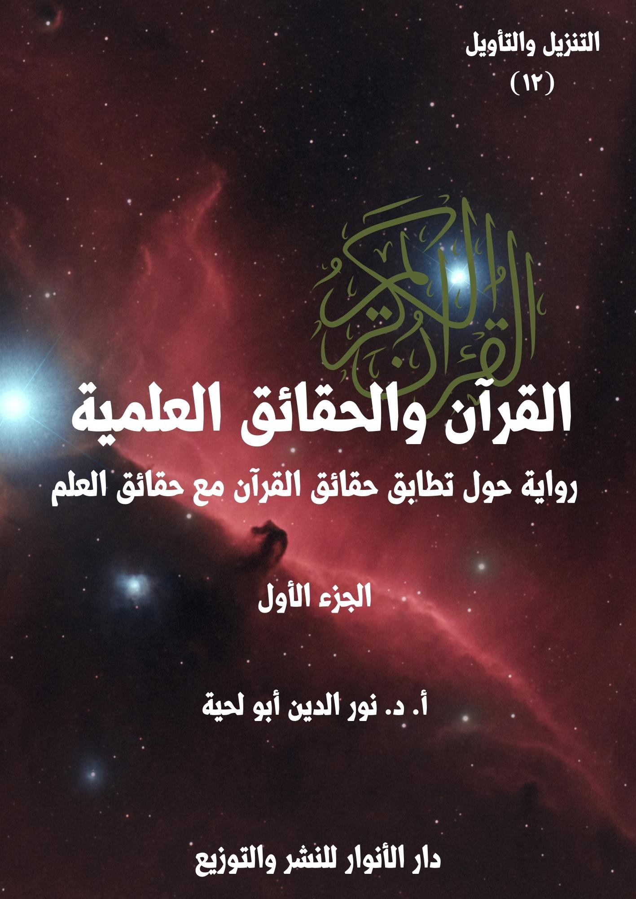

الكتاب: القرآن.. والحقائق العلمية ج1
الوصف: رواية حول تطابق حقائق القرآن مع حقائق العلم
السلسلة: التنزيل والتأويل
المؤلف: أ. د. نور الدين أبو لحية
الناشر: دار الأنوار للنشر والتوزيع
الطبعة: الأولى، 1444 هـ
عدد الصفحات: 513
ISBN: 978-620-4-72102-6
لمطالعة الكتاب من تطبيق مؤلفاتي المجاني وهو أحسن وأيسر: هنا

1. محاولة ذكر المواقف المختلفة من التفسير العلمي للقرآن الكريم، سواء من الناحية العامة، أو عند الحديث عند كل آية، لنترك للقارئ حرية الترجيح بينها.
2. ذكر ما ورد في التفاسير القرآنية القديمة والحديثة حول الآيات المتعلقة بالحقائق العلمية، مع ذكر ما ذكرته الدراسات العلمية الحديثة بشأنها.
3. توفير ثقافة علمية للقارئ ترتبط بمعاني الآيات الكريمة التي يتلوها، ولهذا حاولنا أن نفسر كل الآيات التي ذكرت الحقائق المرتبطة بالكون، مع ذكر التفاصيل العلمية الكثيرة الواردة بشأنها، والرجوع للمصادر العلمية الموثوقة في ذلك.
4. محاولة تبسيط المادة العلمية المرتبطة بهذا سواء من خلال تبسيط الفهوم والتفسيرات، أو ذكر الحقائق العلمية.
5. الرد على التفاسير المسيئة للقرآن الكريم، من خلال تحميلها له ما لا يحتمل، أو من خلال الاعتماد على معلومات غير صحيحة، وتطبيقها على القرآن الكريم.
6. محاولة الجمع بين جوانب الهداية المرتبطة بالآيات الكريمة التي نفسرها، والجوانب العلمية، حتى نبين أن المقصود من الآيات الكريمة ليس معانيها العلمية، وإنما جوانب الهداية فيها، والجوانب العلمية مجرد أمثلة ودلائل.
القرآن.. والحقائق العلمية (1/9)
هذا الكتاب هو المقدمة الثانية عشرة لهذه السلسلة، ويتناول الخاصية السادسة من خصائص القرآن الكريم، خاصية احتوائه على الحقائق العلمية، وهي من الخصائص المرتبطة بالحجة البالغة من جهة، لكون تلك الحقائق حجة على العصور التي تكتشف فيها تلك الحقائق، ومن الخصائص المرتبطة بالموعظة الحسنة، لأن الواعظ لا يكتفي بالتأثير من خلال استعمال التذكير والتبشير، أو الوعيد والإنذار، أو القصص والاعتبار، وإنما يضيف إليها الدعوة إلى تدبر ما في الكون من الآيات والنعم، وما تحوي عليه من الحقائق والدلائل.
وقد أشار القرآن الكريم إلى هذه الخاصية في القرآن الكريم في آيات كثيرة، منها قوله تعالى: ﴿لَكِنِ اللَّهُ يَشْهَدُ بِمَا أَنْزَلَ إِلَيْكَ أَنْزَلَهُ بِعِلْمِهِ وَالْمَلَائِكَةُ يَشْهَدُونَ وَكَفَى بِاللَّهِ شَهِيدًا﴾ [النساء: 166]
وقد حاولنا أن نستوعب في هذا الكتاب أكثر ما طرح في هذا النوع من النواحي التالية:
1. محاولة ذكر المواقف المختلفة من التفسير العلمي للقرآن الكريم، سواء من الناحية العامة، أو عند الحديث عند كل آية كريمة، لنترك للقارئ حرية الترجيح والاختيار بينها، ولعل هذا ما جعل الكتاب بهذا الحجم، لأن ذكر الأقوال يستدعي ذكر أدلتها، وبكل أمانة، ومهما طالت، وهو ما تسبب في هذا الطول الذي اضطررنا إليه.
2. الرد على المنكرين لتفسير القرآن الكريم وفق ما ورد في العلم الحديث مطلقا، حتى لو كانت الآيات الكريمة واضحة في دلالتها، والعلم قطعيا في ثبوته، سواء من خلال ذكر أقوال المفسرين المعتبرين، أو من خلال ذكر الحقائق العلمية وربطها بما ورد في القرآن
القرآن.. والحقائق العلمية (1/10)
الكريم، ومساعدة اللغة العربية على ذلك.
3. تأييد ما ورد من ربط للقرآن الكريم بالحقائق العلمية، ما دامت الآيات واضحة الدلالة، والحقائق العلمية ثابتة ومتفق عليها عند جماهير العلماء، وننبه إلى أننا خصصنا الحقائق العلمية بمبحث خاص في كل عنوان، وذكرنا في بدايته المراجع التي تحدثت عن الموضوع، واكتفينا بذكرها أول مرة حتى لا نكثر من التوثيقات، ولأن المراجع عادة تتشابه في طرحها لتلك المسائل العلمية.
4. ذكر ما ورد في تفاسير القرآن الكريم القديمة والحديثة حول الآيات المتعلقة بالحقائق العلمية، ولم نراع في ذلك دقة المعلومات التي أوردها المفسرون، أو اتفاقها مع ما ورد في مكتشفات العلم الحديث، لأن الهدف هو بيان اهتمام العلماء بتفسير الآيات التي نتحدث عنها بما يتوافق مع العلم، ولكل عصر علمه، مع العلم أننا خصصنا كل مبحث بذلك تحت عنوان: [فهوم وتفسيرات]، وأتبعناه بمبحث آخر تحت عنوان [حقائق ومعلومات]، وخصصناه بما ورد في العلم الحديث مما يفسرها، مع تبسيط المعلومات وتوضيحها قدر الإمكان.
5. الابتعاد عن الصيغة التي درج عليها الكثير من الكتاب في هذا المجال عند طرحهم للحقائق العلمية المقترنة بالقرآن الكريم، من ذكر كونها سبقا علميا، ونحو ذلك، والمبالغة في ذلك إلى الدرجة التي جعلت الكثير ينفر منها، ولذلك رأينا أن مثل هذا يبقى نتيجة يستنتجها القارئ من غير أن ينبه إليها كل حين.
6. توفير ثقافة علمية للقارئ ترتبط بمعاني الآيات الكريمة التي يتلوها، ولهذا حاولنا أن نفسر كل الآيات التي ذكرت الحقائق المرتبطة بالكون، بغض النظر عن ذكرها لأي حقيقة علمية، كالتعريف بالنباتات والحيوانات المذكورة في القرآن الكريم في الفصول
القرآن.. والحقائق العلمية (1/11)
الخاصة بذلك.
7. محاولة تبسيط المادة العلمية المرتبطة بهذا سواء من خلال تبسيط الفهوم والتفسيرات، أو ذكر الحقائق العلمية، ولهذا اعتمدنا في هذا أسلوبا خاصة في الرواية، سنشير إليه لاحقا.
8. الرد على التفاسير المسيئة للقرآن الكريم، من خلال تحميلها له ما لا يحتمل، أو من خلال الاعتماد على معلومات غير صحيحة، وتطبيقها على القرآن الكريم، وادعاء السبق له فيها.
9. الرد على الكثير من دعاة الإعجاز العلمي للقرآن الكريم الذين يتهمون المفسرين السابقين بالقصور، مع أن الكثير مما ذكروه لا يتعارض مع ما ذكره العلم، وما يعارضه محدود جدا، وليس من جميع المفسرين، ولذلك حاولنا رد الاعتبار لهم، وفي حال خطئهم اعتذرنا لهم ببيان أنهم حاولوا فهم الآيات الكريمة بحسب المعارف المتاحة في عصرهم، ولا حرج عليهم في ذلك.
10. محاولة الجمع بين جوانب الهداية المرتبطة بالآيات الكريمة التي نفسرها، والجوانب العلمية، حتى نبين أن المقصود من الآيات الكريمة ليس معانيها العلمية، وإنما جوانب الهداية فيها، والجوانب العلمية مجرد أمثلة ودلائل.
ونحب أن ننبه إلى أنا حاولنا أن نعتمد التفاسير من المدارس الإسلامية المختلفة، القديمة والحديثة، وكنا نرجع في كل آية إليها جميعا، لكن ـ وبسبب كثرة اقتباس المفسرين بعضهم من بعض ـ اخترنا مجموعة تفاسير لتميز كل منها بطريقة خاصة في تفسير القرآن الكريم، وقد رأينا أن معظم ما في سائر التفاسير تكرار لها، أو اقتباس منها، ويمكن تقسيم هذه التفاسير باعتبار قدمها وحداثتها إلى قسمين:
القرآن.. والحقائق العلمية (1/12)
أولا ـ التفاسير القديمة: وقد اخترناها إما لكونها تعبر عن الرؤية العلمية القديمة وتفسيرها لما ورد في القرآن الكريم من الحقائق المرتبطة بالكون، أو لكونها تمثل التفسير المأثور، وخاصة عن السلف الأول من المسلمين، وكيف فهموا الآيات الكريمة المرتبطة بالحقائق العلمية، والذين يتشب بهم البعض لإنكار التفسير العلمي للقرآن، أو توهم أنه يعارض العلم، باعتبار أن تلك التفاسير تفسر الآيات الكريمة بما يتناقض مع الحقائق العلمية الحديثة، ومن هذه التفاسير:
1. مفاتيح الغيب، أو التفسير الكبير، للفخر الدين الرازي (ت 606هـ)، وعادة نبدأ به، وخصوصا عند ذكر العلماء الذين فسروا الآيات الكريمة تفسيرا علميا، وقد رأينا أن أكثر من جاء بعده، نقل عنه، أو لخص ما قاله، ولم نراع دقة ما قاله من المعلومات بالنسبة لعصرنا، لأن الهدف هو بيان ربط الآية التي نتحدث عنها بالعلم، ولأننا نذكر الحقائق العلمية بمصادرها منفصلة بعد ذلك.
2. تفسير القرآن العظيم، لابن كثير (ت 774هـ)، وهو يمثل التفاسير بالمأثور، وعادة ما نذكر تفسيره للآيات الكريمة عند ذكر موقف المنكرين للتفسير العلمي، باعتباره يكتفي بسرد أقوال السلف في تفسيرها، وننبه إلى أنا نتصرف معه خصوصا بالحذف، وخاصة عند ذكره للأسانيد والأسماء الكثيرة، لأن الهدف هو تفسير الآيات الكريمة وليس القائلين بها.
3. زاد المسير في علم التفسير، لابن الجوزي (ت 597هـ)، باعتباره من التفاسير المختصرة التي اهتمت بجمع أقوال المفسرين في كل مسألة، وخصوصا السلف منهم، وهو ما يعيننا أكثر في بيان احتمالات تفسير الآيات الكريمة.
4. تفاسير أخرى نذكرها أحيانا لزيادة التأكيد، ومنها تفسير الألوسي، وتفسير
القرآن.. والحقائق العلمية (1/13)
الشوكاني، وغيرهما.
ثانيا ـ التفاسير الحديثة، وهي التي بدأت منذ عصر النهضة إلى اليوم، وهي بحسب التسلسل التاريخي لها:
1. محاسن التأويل، لمحمد جمال الدين القاسمي (ت 1332هـ)، باعتباره واسطة بين التفاسير القديمة والحديثة، ولجمعه بين المأثور والرأي، ولربطه تفسيره في بعض الأحيان بما يقوله العلم.
2. تفسير المنار، لمحمد رشيد رضا (ت 1354هـ)، وقد ذكرناه في محال خاصة، باعتباره من التفاسير التي اهتمت بربط القرآن الكريم بالعلم، مع مواقف خاصة له في ذلك.
3. تفسير المراغي، لأحمد بن مصطفى المراغي (ت 1371هـ)، وقد اخترناه لبساطة أسلوبه، واهتمامه بالحقائق العلمية.
4. في ظلال القرآن، لسيد قطب (ت 1385 هـ)، وقد اخترناه لتأييده للتفسير العلمي في الكثير من المحال، ولبساطة أسلوبه، وتناسبه مع عصرنا.
5. التفسير القرآني للقرآن، لعبد الكريم الخطيب (ت 1390هـ)، وقد اخترناه بسبب الكثير من الطروحات الجديدة التي طرحها، بالإضافة إلى اهتمامه بالنواحي اللغوية في تفسير القرآن الكريم، وللغته الأدبية الميسرة، والتي تبسط المعاني التي ذكرها قدماء المفسرين.
6. زهرة التفاسير، لمحمد أبي زهرة (ت 1394هـ)، وقد اخترناه بسبب اهتمامه بلغة القرآن الكريم، وربطها في بعض المحال بالتفسير العلمي.
7. التفسير الكاشف، لمحمد جواد مغنيّة (ت 1400 هـ)، وقد اخترناه للاعتبارات
القرآن.. والحقائق العلمية (1/14)
السابقة، بالإضافة إلى كونه يجمع بين تمثيله للمدرسة الشيعية ومدرسة محمد عبده.
8. تفسير الميزان، لمحمد حسين الطباطبائي (ت 1402 هـ)، وقد ذكرناه في المحال التي رأينا مناسبة تفسيره لها، وهو يجمع بين الرؤى السابقة، بالإضافة لكونه يمثل المدرسة الشيعية، وهو فيها مثل محمد عبده في المدرسة السنية.
9. تفسير من وحي القرآن، لمحمد حسين فضل الله (ت 1431 هـ)، وقد اخترناه لكونه يمثل خصوصا جوانب الهداية في الآيات الكريمة التي نعرضها، وخصوصا ما يتعلق منها بالجانب التربوي والاجتماعي.
10. الأمثل في تفسير كتاب الله المنزل، لناصر مكارم الشيرازي، وقد ذكرنا تفسيره للآيات الكريمة في معظم المحال، وخاصة عند ذكر المفسرين المؤيدين للتفسير العلمي، وذلك لدقة المعلومات التي يطرحها، وخصوصا أنها كُتبت تحت إشراف ومراجعة مختصين فيها، ولذلك اعتبرنا تفسيره من أحسن التفاسير دقة وموضوعية في هذا الجانب.
11. تفسير منية الطالبين لجعفر السبحاني، وقد ذكرنا تفسيره في محال كثيرة، لاهتمامه بالتفسير العلمي، وكونه مثل سابقيه يمثل المدرسة الشيعية.
12. تفاسير أخرى نذكرها أحيانا لزيادة التأكيد، أو لبيان جوانب الهداية، أو لتبسيط المعلومات التي نذكرها، ومنها تفسير ابن عاشور، ومن هدى القرآن لمحمد تقي المدرسي، وغيرهما.
أما تفسير طنطاوي جوهري [الجواهر في تفسير القرآن الكريم] الذي خصصه لهذا الجانب، فلم نذكره في تفسير الآيات الكريمة، واكتفينا بذكر حديث مفصل عنه في الفصل الأول، مع بيان منهجه في تفسيره، والملاحظات التي لوحظت عليه مع الإجابة عليها.
ومثل ذلك غيرهم من العلماء والمفسرين، كوحيد الدين خان والشيخ أحمد الخليلي،
القرآن.. والحقائق العلمية (1/15)
ومحمد جمال الدين أفندي ومحمد الإسكندراني وغيرهم كثير، فقد ذكرنا ما ذكروه من تفاسير للآيات الكريمة في الفصل الأول من الكتاب بناء على كونهم من المؤيدين للتفسير العلمي للقرآن الكريم.
وأحب أن أنبه إلى أني ـ مع احترامي الشديد لكل العلماء، ومن المدارس الإسلامية المختلفة ـ إلا أني تخليت عن الأدب الذي يراعى عادة معهم من ذكر الألقاب الخاصة بهم، كلقب العلامة، والشيخ، والسيد، ونحوها، من باب الاختصار أولا، وثانيا، لأن هدف السلسلة التقريب والوحدة الإسلامية، وقد رأينا أن تلك الألقاب قد تحول بين الموضوعية التي نرى أنها أفضل السبل للحوار بين المسلمين.
بناء على هذا، فقد حاولنا من خلال هذه الرواية المبسطة أن نبين مطابقة الحقائق الكونية الواردة في القرآن الكريم لما ذكره العلم الحديث، مع ذكر الرؤى والفهوم المختلفة المرتبطة بذلك، من غير تغييب لجوانب الهداية في الآيات الكريمة.
وقصتها البسيطة هي أن جمعا من المنكرين للتفسير العلمي للقرآن الكريم من جهات مختلفة، يقومون بالادعاء على دعاة التفسير العلمي، بتهمة تحميلهم له ما لا يحتمل، ومخالفتهم لأقوال العلماء في ذلك، ودفاع المتهمين عن أنفسهم، بذكر العلماء الذين فسروا تلك الآيات الكريمة على ضوء المعارف الموجودة في عصورهم، وبذكر ما يقوله العلم الحديث، وبيان مطابقته لما ورد في القرآن الكريم.
وقد اشتملت الرواية على مجموعة أبطال، وهم:
1. القاضي: وهو الشخصية التي تطرح الدعاوى، وتطلب من المدافعين عن الربط بين القرآن الكريم وحقائق العلم الإجابة عنها، ليذكر في الأخير حكمه على ما يوردونه.
2. المدّعون: وهم الذين يرفضون ربط القرآن الكريم بالحقائق العلمية، وهم
القرآن.. والحقائق العلمية (1/16)
يتشكلون من الملاحدة والتنويريين، أو من السلفيين الذين يتشبثون بأقوال سلفهم، حتى لو كانت معارضة للعلم.
3. العلماء: وهم القائلون بالتفسير العلمي للقرآن الكريم، وهم مختصون في مجالات علمية مختلفة، قادهم تدبرهم في القرآن الكريم إلى ربطه بالعلوم التي اختصوا فيها.
وقد بدأنا الرواية بذكر المواقف المتعددة من ربط القرآن الكريم بحقائق العلم، سواء تلك التي تشوه هذا الربط، أو تلك التي تنكره إنكارا تاما بسبب تلك التشويهات.
وبعد تلك الآلام يزور معلم العلوم تلميذ القرآن الكريم، ليطلب منه أن يرحل معه إلى المدينة التي حصل فيها صراع كبير بسبب الربط بين حقائق القرآن والعلم، وفيها يرى العلماء، وهم في ساحة المدينة، وبين يدي القاضي والمدّعين، ليواجهوا التهم الموجهة لهم.
ولذلك فإن أكثر ما في الرواية عرض للدعاوى من طرف المدّعين، وإجابات للعلماء، والتي يستندون فيها إلى المفسرين أو للعلوم التي اختصوا فيها.
وقد قسمنا الكتاب بناء على استقراء ما ورد في القرآن الكريم عن هذه الحقائق إلى اثني عشر فصلا، وهي تشمل ما يطلق عليه [الآيات الكونية]، بالإضافة إلى مقدمة حول المواقف المختلفة من التفسير العلمي.
وقد خصصنا بها الفصل الأول، القرآن والعلم، والذي تناولنا فيه آراء المنكرين للتفسير العلمي والأدلة التي يستندون إليها، وعرضنا معها آراء المخالفين لهم، وإجاباتهم عن تلك الشبه، مع ذكر الضوابط المرتبطة بالتفسير العلمي للقرآن الكريم، سواء اللغوية أو العلمية، وقد حاولنا أن نجمع فيه مواقف كبار العلماء، وبحسب الترتيب التاريخي.
أما الفصل الثاني، فتناولنا فيه الآيات الكريمة التي تتحدث عن السماء وأوصافها وما يرتبط بها، وعلاقتها خصوصا بالحقائق التي ذكرها علماء الفلك.
القرآن.. والحقائق العلمية (1/17)
أما الفصل الثالث، فتناولنا فيه الآيات الكريمة التي تتحدث عن النجوم والكواكب وما يرتبط بها، وعلاقتها خصوصا بالحقائق التي ذكرها علماء الفلك.
أما الفصل الرابع، فتناولنا فيه الآيات الكريمة التي تتحدث عن الشمس والقمر وما يرتبط بهما، وعلاقتها خصوصا بالحقائق التي ذكرها علماء الفلك.
أما الفصل الخامس، فتناولنا فيه الآيات الكريمة التي تتحدث عن الأرض وتاريخها وشكلها ودورانها وتضاريسها، وغيرها من المعاني التي تعرضت لها الآيات الكريمة الكثيرة، وعلاقتها خصوصا بالحقائق التي ذكرها علماء الأرض وغيرهم.
أما الفصل السادس، فتناولنا فيه الآيات الكريمة التي تتحدث عن الجبال ونشأتها وهيئتها وما يرتبط بها، وعلاقتها خصوصا بالحقائق التي ذكرها العلماء المختصون.
أما الفصل السابع، فتناولنا فيه الآيات الكريمة التي تتحدث عن البحار وأوصافها وما يرتبط بها، وعلاقتها خصوصا بالحقائق التي ذكرها علماء البحار.
أما الفصل الثامن، فتناولنا فيه الآيات الكريمة التي تتحدث عن المياه وأهميتها ودورتها وأوصافها وما يرتبط بها من السحب وأنواعها وغير ذلك، وعلاقتها خصوصا بالحقائق التي ذكرها العلماء المختصون.
أما الفصل التاسع، فتناولنا فيه الآيات الكريمة التي تتحدث عن الرياح وأوصافها ووظائفها وما يرتبط بها، وعلاقتها خصوصا بالحقائق التي ذكرها العلماء المختصون.
أما الفصل العاشر، فتناولنا فيه الآيات الكريمة التي تتحدث عن النباتات وأوصافها وأنواعها وما يرتبط بها، وعلاقتها خصوصا بالحقائق التي ذكرها علماء النبات والأغذية والصحة نحوها، وقد ذكرنا فيه جميع ما ورد في القرآن الكريم من النباتات مع التفسير والحقائق العلمية المرتبطة بها، وقد رجعنا فيه خصوصا للمواقع العلمية الرسمية
القرآن.. والحقائق العلمية (1/18)
المهتمة بالحديث عن النباتات وأدوارها الغذائية والصحية، ولم نكتف بالمعلومات التي ذكرها السابقون والمعاصرون، باعتبار التطور العلمي في هذه الجوانب.
أما الفصل الحادي عشر، فتناولنا فيه الآيات الكريمة التي تتحدث عن الحيوانات وأوصافها وأنواعها وما يرتبط بها، وعلاقتها خصوصا بالحقائق التي ذكرها علماء الحيوان، وقد ذكرنا فيه جميع ما ورد في القرآن الكريم من الحيوانات مع التفسير والحقائق العلمية المرتبطة بها، وقد رجعنا فيه خصوصا للمواقع العلمية الرسمية المهتمة بالحديث عن الحيوانات، ولم نكتف بالمعلومات التي ذكرها السابقون والمعاصرون، باعتبار التطور العلمي في هذه الجوانب.
أما الفصل الثاني عشر، فتناولنا فيه الآيات الكريمة التي تتحدث عن الإنسان، وأصله وكيفية خلقه، وما أودع الله في خلقه من الآيات، وقد فصلنا خصوصا في جانبين:
الأول: أصل الإنسان، وذكر آراء المفسرين والعلماء في ذلك، مع التفصيل العلمي المرتبط بالرد على نظرية التطور، وبيان فقدانها للمصداقية العلمية الكافية، ولذلك ذكرنا الأدلة على عدم إمكانية تفسير الآيات الكريمة المرتبطة بخلق آدم عليه السلام على أساسها كما فعل بعض المفسرين، مع استعراض أدلة الجميع.
الثاني: ما ذكره القرآن الكريم حول الأطوار التي تمر بها الأجنة، حيث خصصنا كل مرحلة منها بمبحث خاص، مع ذكر ما ورد في التفاسير القديمة والحديثة بشأنها، بالإضافة إلى ما ذكره العلم، ورد الشبهات المرتبطة بذلك.
القرآن.. والحقائق العلمية (1/19)
بعد أن طلب مني معلمي تجهيز نفسي لرحلتي الجديدة إلى [القرآن والحقائق العلمية]، فرحت كثيرا، لأني كنت من المهتمين بالجمع بين القرآن الكريم وحقائق العلم، لا لإثبات إعجازه وتحديه فقط، وإنما لكون المعارف العلمية هي خير تفسير للكثير من الآيات الكريمة التي تحضنا على النظر والسير والبحث في آفاق الكون الواسع، والتي نرى من خلالها من أعماق القرآن الكريم ما لا يمكن إدراكه من خلال التفاسير العادية التي اقتصرت على فهم معاني الكلمات والتراكيب، دون الخوض في الحقائق المرتبطة بها.
لكني، ولخمسة مشاهد رأيتها قبل تلك الرحلة، تحولت من الفرح إلى الحزن، ومن السعادة إلى الألم..
أما أولها، فقد كان من بعض خطباء المساجد، وقد بدأت به لأنه كان من كبار المدافعين عن الإعجاز العلمي في القرآن الكريم، بل يعتبره السلاح الوحيد الذي يصح استعماله في هذا العصر، وأن كل ما عداه ليس سوى سيوف خشبية.
لكن مشكلته أن حظه من العلم بالقرآن أو بالعلوم الكونية كان محدودا جدا، فلذلك كان يصدق كل شيء، وخاصة من المجموعات التي ينتمي إليها في وسائل التواصل الاجتماعي، والتي كانت مصدره الوحيد في المعرفة، سواء المعرفة بالقرآن، أو بالعلوم.
وكان فوق ذلك ساذجا غاية السذاجة، وكم كنت أراه يجتمع مع الناس في المقاهي وغيرها، يريهم البطيخة التي كتب على قشرتها اسم الجلالة، أو الشجرة التي تظهر بمظهر الساجد العابد، أو غيرها مما يتعجب له غاية العجب، لكنه يحدّث به قوما يمتلئون منه سخرية وفكاهة، بل يستغلونه أسوأ استغلال لترديد مقولاتهم حول سذاجة العقل الديني.
القرآن.. والحقائق العلمية (1/20)
في ذلك اليوم رأيته يجلس في مسجده يقدّم درسه الأسبوعي الذي تعود أن يلقيه على جمهوره، وكان كعادته مرتبطا بالإعجاز.. وعندما دخلت المجلس، سمعته يقول: ألا تعجبون من السبق القرآني العجيب.. إنه تحدث عن انهيار برجي التجارة العالمي قبل أكثر من ألف وأربعمائة سنة؟ ولكن المسلمين لا يقرؤون، ولا يتدبرون، بل يغضون طرفهم عن هذا الإعجاز العظيم الذي كان يمكنهم به نشر الإسلام في العالم أجمع.
تعجب المصلون مما ذكره، وكنت أنا أولهم في ذلك.. وعندما رأى تعجبنا، قال: إن الآية الكريمة التي تحدثت عن تلك الحادثة هي قوله تعالى: ﴿أَفَمَنْ أَسَّسَ بُنْيَانَهُ عَلَى تَقْوَى مِنَ اللَّهِ وَرِضْوَانٍ خَيْرٌ أَمْ مَنْ أَسَّسَ بُنْيَانَهُ عَلَى شَفَا جُرُفٍ هَارٍ فَانْهَارَ بِهِ فِي نَارِ جَهَنَّمَ وَاللَّهُ لَا يَهْدِي الْقَوْمَ الظَّالِمِينَ﴾ [التوبة: 109]
ازداد تعجبنا مما ذكر، فالآية الكريمة وما بعدها تتحدث عن مسجد الضرار الذي بناه المنافقون، ولا علاقة لها بأي برج..
وعندما رأى تعجبنا، قال: كم أنتم بلهاء.. النبوءات لا تكون واضحة عادة، وإلا لما كانت نبوءات.. بل هي مشفرة.. والعقلاء وحدهم من يفكون شيفرتها.. ألم تقرؤوا قوله تعالى: ﴿هُوَ الَّذِي أَنْزَلَ عَلَيْكَ الْكِتَابَ مِنْهُ آيَاتٌ مُحْكَمَاتٌ هُنَّ أُمُّ الْكِتَابِ وَأُخَرُ مُتَشَابِهَاتٌ فَأَمَّا الَّذِينَ فِي قُلُوبِهِمْ زَيْغٌ فَيَتَّبِعُونَ مَا تَشَابَهَ مِنْهُ ابْتِغَاءَ الْفِتْنَةِ وَابْتِغَاءَ تَأْوِيلِهِ وَمَا يَعْلَمُ تَأْوِيلَهُ إِلَّا اللَّهُ وَالرَّاسِخُونَ فِي الْعِلْمِ يَقُولُونَ آمَنَّا بِهِ كُلٌّ مِنْ عِنْدِ رَبِّنَا وَمَا يَذَّكَّرُ إِلَّا أُولُو الْأَلْبَابِ﴾ [آل عمران: 7]، فهي تشير إلى أن الراسخين في العلم وحدهم من يستطيعون فك الشيفرات، والبحث عن الحقائق والنبوءات العجيبة.
قال أحد الحضور: فحدثنا عنها.. فنحن نثق في كونك من الراسخين في العلم، وكثيرا ما استفدنا الغرائب من علومك، مما لم نجده في أي محل آخر.
القرآن.. والحقائق العلمية (1/21)
ابتسم الخطيب، وقال: لقد وردت هذه الآية الكريمة في الجزء الحادي عشر من القرآن الكريم.. وهو يعني شهر أيلول، سبتمبر، فهو الشهر الحادي عشر في الحساب الشمسي، وهو حساب متوارث من أمم كثيرة.
كبّر بعض المصلين، فقال الخطيب: إضافة إلى ذلك.. فالآية الكريمة رقمها في المصحف هو 109، وهي تشير إلى عدد طوابق البرج.. نعم هم يذكرون أنها 110 طابق.. لكن لا يضر، فالطابق الأخير قد لا يكون مقصودا.. أو قد لا نعتبره طابقا أصلا.
كبّر بعض المصلين، فقال الخطيب: إضافة إلى ذلك، فإننا لو حسبنا عدد الحروف من بداية السورة إلى الآية المذكورة سنجد أنها تبلغ (2001) حرفا.. وهي نفس السنة التي وقع فيها الحادث.
قام بعض المصلين، وقال: كيف هذا.. أنا من المهتمين بأحرف القرآن الكريم، وقد وجدت أن ما ذكرته هنا بعيد تماما.. ذلك أن كل صفحتين من المصحف الكريم تحويان ما يقرب من ألف حرف، وعدد الصفحات من أول السورة إلى هذه الآية الكريمة إليها يبلغ (17.5) تقريبا، فإذا اعتبرنا هذا العدد رأينا البون الشاسع بين ما تذكره وبين الحقيقة.
قال الخطيب: أنت حسبت كل الكلمات.. وذلك غير صحيح.. ف الكلمة عند أهل العربية على ثلاثة أقسام.. الاسم.. والفعل.. والحرف الذي جاء لمعنى نحو: من، على، إلى، والباء وغيرها من حروف الجر وما في حكمها، وهكذا الضمائر سواء كانت متصلة أو منفصلة فإنها تعد كلمات أيضا.. ولهذا، فإن الرقم الذي ذكرته لكم، وهو (2001) يشير إلى عدد الكلمات من أول السورة إلى الآية المشار إليها.
قال الرجل: وذلك أيضا غير صحيح ذلك أن العدد الحقيقي للكلمات يزيد على (2920) كلمة.
القرآن.. والحقائق العلمية (1/22)
قال الخطيب: دعنا من تكلفك.. هل تحسب نفسك أفضل من الذين حسبوا كل هذا، ونشروه في كل المحال؟
قال أحد المصلين: فهل هناك من الإشارات في الآية الكريمة غير هذا؟
ابتسم الخطيب، وقال: أجل.. بقي ما هو أعظم دليل.. إن الآية الكريمة تذكر اسم الشارع الذي يقع فيه البرج.. إنه موجود في قوله تعالى: ﴿جُرُفٍ هَارٍ﴾.. والمركز المشار إليه يقع على شارع اسمه: [جرف هار]
قام أحد المصلين، وقال: أنا أقمت مدة طويلة في أمريكا، وأعرف مدينة نيويورك جيدا، ولم أر فيها جميعا شارعا بهذا الاسم، واسم الشارع الذي يقع فيه البرجان هو [وول ستريت].. ويمكن التأكد من هذه المعلومة بسهولة من خلال أي موقع خرائط.
غضب الخطيب غضبا شديدا، وقال: ما أكثر المجادلين بينكم.. إما أن تخرجوهم من بينكم، أو لن أعود إلى الحديث إليكم أبدا في هذه الشؤون.. هذه المعلومات العظيمة لا يستحقها إلا أهلها من المؤمنين بالقرآن الكريم.
هذا هو المشهد الأول.. وقد آلمني ألما شديدا، لأن صاحبه مثل الحارس الذي يستغل فترة غياب الأطباء الذين يحرس عياداتهم، فيدعي أنه طبيب، فيقتل مرضاه بدل أن يعالجهم، ويشوه الطب بدل أن يعطيه الصورة الجميلة التي يستحقها.
أما المشهد الثاني، فقد كان من بعض السلفيين الذين يدعون الاعتدال، والذين ينكرون ذكر القرآن الكريم لبعض الحقائق العلمية، من غير إنكار للحقائق العلمية نفسها، وذلك لاعتقادهم أن سلفهم أعلم وأحكم، وأنه لا يمكن أن يكون الخلف حتى في هذه المسائل العلمية البحتة أعلم من السلف.
وقد بدأ المشهد المرتبط بهم من قول أحدهم، وهو يخاطب بعض جمهور المشهد
القرآن.. والحقائق العلمية (1/23)
الأول: احذروا من هذه البدعة التي بدأت تسري بيننا، والتي تحاول الربط بين القرآن الكريم وحقائق العلم.. إنها بدعة لم يعرفها سلفنا الصالح.. وأولى الناس بتفسير القرآن الكريم هم أولئك السلف.
قال آخر(1): ذلك أن معرفة تفسير السلف أصل أصيل من أصول التفسير، ومن ترك أقوالهم، أو ضعف نظره فيها، فإنه سيصاب بنقص في العلم، وقصور في الوصول إلى الحق في كثير من آيات القرآن.
قال آخر: أجل.. ومن استقرأ تاريخ السلف مع كتاب الله؛ وجد تمام عنايتهم بكتاب الله حفظا وتفسيرا وتدبرا واستنباطا.. لذا لا تراه خفي على الصحابة شيء من معانيه ولم يستفصلوا من الرسول صلى الله عليه وآله وسلم فبقي عليهم منه شيء غامض لا يعرفونه.
قال آخر: وكذا الحال بالتابعين، الذين هم أكثر طبقات السلف في التفسير، وعددهم فيه كثير، لقد سألوا عن التفسير، واستفصلوا فيما غمض عليهم، ولهم في ذلك أقوال تدل على ذلك، ومنها قول الشعبي: (والله ما من آية إلا سألت عنها، لكنها الرواية عن الله تعالى)(2)، وقال مجاهد: (عرضت المصحف على ابن عباس ثلاث عرضات من فاتحته إلى خاتمته، أوقفه عند كل آية وأسأله عنها)(3)
قال آخر: وبقي الحال كذلك في أتباع التابعين الذين كانوا أكثر طبقات السلف تدوينا للتفسير، وجمعا لما روي عن الصحابة والتابعين، وفي عصرهم ظهر أول مدون كامل في التفسير، وهو تفسير مقاتل بن سليمان.. وكان لهم أقوال في التفسير، كما كان لهم
__________
(1) الإعجاز العلمي إلى أين؟ مقالات تقويمية للإعجاز العلمي، د مساعد بن سليمان بن ناصر الطيار، ص 115.
(2) تفسير الطبري، (1/ 81)
(3) تفسير الطبري، (1/ 85)
القرآن.. والحقائق العلمية (1/24)
اختيارات من أقوال من سبقهم.
قال آخر: ولذلك، فإن من استقرأ تفسير السلف وجد أنهم قلما يتركون آية لا يتكلمون عنها، ويبينون ما فيها من المعاني، سواء اتفقوا في تفسيرهم أم كان اختلافهم فيه اختلاف تنوع، أو اختلاف تضاد، والتضاد في تفسيرهم قليل.
قال آخر: ولذلك، فإن على المتأخرين المفسرين الأخذ بما أجمع عليه مفسرو السلف.. وفي حال اختلاف السلف هم بين أمرين.. إما الأخذ بقول أحدهم.. أو إضافة أي تفسير بشرط ألا يكون المضاف ناقضا ومبطلا لأقوالهم.
قال أحد الحضور: فهلا ضربتم لنا أمثلة على ذلك.
قال أحد السلفيين(1): من الأمثلة على ذلك تلك الآية الكريمة التي تتحدث عن الذباب، وهي قوله تعالى: ﴿وَإِنْ يَسْلُبْهُمُ الذُّبَابُ شَيْئًا لَا يَسْتَنْقِذُوهُ مِنْهُ﴾ [الحج: 73]، فقد رأينا من يذكر عند تفسيره لها بأنه ظهر في هذا العصر اكتشاف غريب في الذباب، وهو أنه إذا ابتلع شيئاً من الطعام، يتحول في جوفه إلى مواد أخرى لا يمكن استرجاعها إلى مادتها الأولية(2).
قال آخر: وهذا تفسير يخالف ما ذهب إليه السلف، والذين فهموا الآية الكريمة بحسب المحل الذي وردت فيه، وهو قوله تعالى: ﴿يَا أَيُّهَا النَّاسُ ضُرِبَ مَثَلٌ فَاسْتَمِعُوا لَهُ إِنَّ الَّذِينَ تَدْعُونَ مِنْ دُونِ اللَّهِ لَنْ يَخْلُقُوا ذُبَابًا وَلَوِ اجْتَمَعُوا لَهُ وَإِنْ يَسْلُبْهُمُ الذُّبَابُ شَيْئًا لاَ يَسْتَنْقِذُوهُ مِنْهُ ضَعُفَ الطَّالِبُ وَالْمَطْلُوبُ﴾ [الحج: 73]، ولذلك قال عبد الله بن عباس والسدي الكبير وابن جريج في تفسيرها: (وإن يسلب الذباب الآلهة والأوثان شيئا مما عليها
__________
(1) الإعجاز العلمي إلى أين ص 117)
(2) موسوعة الإعجاز العلمي، ليوسف الحاج أحمد، ص 514)
القرآن.. والحقائق العلمية (1/25)
من طيب أو طعام وما أشبهه لا تقدر الآلهة أن تستنقذ ذلك منه)(1)
قال آخر: وعلى هذا المعنى سار المفسرون، ولم يغفلوا عن بيان المثل المضروب الذي هو المقصود بضرب المثل، ولذلك قال الطبري: (إنما أخبر ـ جل ثناؤه ـ عن الآلهة بما أخبر عنها في هذه الآية من ضعفها ومهانتها، تقريعا منه بذلك عبدتها من مشركي قريش؛ يقول تعالى ذكره: كيف يجعل لي مثل في العبادة ويشرك فيها معي ما لا قدرة له على خلق ذباب، وإن استذله الذباب فسلبه شيئا عليه لم يقدر أن يمتنع منه ولا ينتصر، وأنا الخالق ما في السماوات والأرض، ومالك جميع ذلك، والمحيي من أردت، والمغني ما أردت ومن أردت!؟ إن فاعل ذلك لا شك أنه في غاية الجهل)(2)
قام أحد الحضور، وقال(3): لكن ألا ترى أنه سواء قلنا: لا تستطيع الآلهة، أو قلنا: لا يستطيع الناس، فإن الوصف صحيح منطبق على معنى الآية الكريمة، وبذلك فإن هذا التفسير يصح تفسير الآية به على أنه مثال آخر من أمثلة ما لا يستطيعون استنقاذه مما يأخذه الذباب، وليس بمبطل لقول السلف.
قال أحد السلفيين: لكن تفسير السلف أولى وأوجب وأكمل وأصح، لأن ما قالوه ظاهر لجميع الناس يدركونه بلا حاجة إلى مختبرات، بخلاف القول المعاصر الذي لم يره إلا النادر من الناس، ولا يدركه تمام الإدراك إلا القلة منهم، فليس كل الناس عندهم مختبرات يمكنهم أن يروا تحول مادة الطعام التي يأكلها الذباب.
قال آخر: بالإضافة إلى ذلك، فمن يمكنه أن يثق بما تقوله المخابر، والتي لا يؤمن
__________
(1) الدر المنثور، (10/ 540)
(2) تفسير الطبري، (16/ 636 ـ 637)
(3) الإعجاز العلمي إلى أين ص 118.
القرآن.. والحقائق العلمية (1/26)
أكثر أصحابها بالله، ولا برسوله.. فهل من العقل والحكمة أن نترك سلفنا الصالح لهذا الخلف الطالح؟
قال أحد الحضور: أحسنتم كثيرا.. فاضربوا لنا مثالا على ذلك، لنحذر ونزدجر.
قال أحد السلفيين: من الأمثلة على ذلك قوله تعالى: ﴿وَالسَّمَاءَ بَنَيْنَاهَا بِأَيْدٍ وَإِنَّا لَمُوسِعُونَ﴾ [الذاريات: 47]، فقد فسر سلفنا الصالح ﴿لَمُوسِعُونَ﴾ على وجهين.. أولاهما (بنيناها واسعة الأرجاء)، وهذا إخبار عن حال السماء في السعة.. وثانيهما (بنيناها وإنا لقادرون على بنائها)، وهو من الوُسع؛ أي: القُدرة.. ولذلك فإن الزيادة على هذين القولين بدعة.
قال آخر: ولذلك، فإن حمل بعض المعتنين بالإعجاز لفظ (لموسعون) على ما قالوا بأنه اكتشف في هذا العصر من أن الكون يتمدد، يدعونا إلى التساؤل: هل دلالة الآية على تمدد الكون ظنية أو قطعية؟.. ولا شك أن هذه الدلالة ظنية؛ لأن من يقول بهذا التفسير لا يمكنه أن يجزم في إثبات هذه الدلالة.. وإذا كانت الدلالة ظنية، فإن دعوى السبق تبقى ظنية أيضا.
قال أحد الحضور: فأين التفسير الصحيح للآية الكريمة إذن؟
قال أحد السلفيين(1): إن الجواب عن هذا يحتاج إلى التذكير بقاعدة مهمة يغفل عنها بعض من يعتني بالإعجاز العلمي، وهي أن الأمة لا يمكن أن تجتمع على ضلالة، ومن ثم، فإنه لم يفتها فهم كلام ربها على وجه صحيح معتبر.
قال آخر: وهذه القاعدة تبدأ بزمن الصحابة، ثم من بعدهم، فلا يصح أن يقال: إن
__________
(1) الإعجاز العلمي إلى أين، ص171.
القرآن.. والحقائق العلمية (1/27)
الصحابة لم يفهموا شيئا من معاني القرآن، ولا أن يقال: إن من بعدهم ـ كذلك ـ قد وقع لهم ذلك.
قال آخر: وإذا كانت هذه القاعدة معتبرة، فإن من لوازمها أن الحق قد وقع في فهم القرآن، وأنه لا يمكن أن توجد آية ضل المسلمون عن فهمها على وجه صحيح معتبر.
قال آخر: وإذا ركبتم هذه المسألة مع المسألة السابقة ـ في كون دلالة الآية على القضية المعاصرة ظنية ـ فإنه سيظهر لكم أن من اعتمد تفسير السلف ومن قال بقولهم ـ ممن جاء بعدهم ـ فإنه قد قال بالقول الحق والصواب، ولا يمكن أن يخرج عن الحق.. وأن من اعتمد على المكتشفات المعاصرة، وأعرض عن قول السلف، فإنه قد أخطأ الصواب بلا ريب؛ لأن وجود التفسير الصحيح في كلام السلف متيقن منه، وأما قوله المعاصر فإنه يحتمل الصواب ويحتمل الخطأ؛ لأن دلالة الآية ظنية.
وهكذا بقي أصحاب هذا المشهد يضربون الأمثلة الكثيرة، ويضربون معها كل آيات القرآن الكريم التي تتحدث عن الحقائق العلمية، وذلك لأن سلفهم لم يذكر في تفسيرها ما ورد به العلم الحديث، وكأن تخلف السلف عن إدراك الحقائق العلمية في عصرهم، دليل على تخلف القرآن الكريم عنها.
أما المشهد الثالث، فقد كان أخطر من المشهدين السابقين، وقد كان من بعض السلفيين المغالين، والذين لا يكتفون بإنكار ذكر القرآن الكريم للحقائق العلمية، وإنما ينكرون الحقائق العلمية نفسها، بل يعتبرونها معارضة للقرآن الكريم.. وقد كان أكثر جمهور هؤلاء من الملاحدة والحداثيين والمبشرين، والذين يسجلون عنهم كل كلمة ينبسون بها، ليستعملوها بعد ذلك وسيلة لضرب الإسلام، وفي جميع مصادره المقدسة.
القرآن.. والحقائق العلمية (1/28)
وقد بدأ هذا المشهد معهم من قول أحد شيوخهم في بعض المجالس(1): ألا تعجبون ممن يقول بدوران الأرض، إنهم ينكرون النصوص الواضحة في القرآن الكريم والسنة المطهرة وأقوال السلف الصالح، ليتعلقوا بأقوال الوثنيين والكفرة.
قال أحد الحضور: ولكن العلم هو الذي يقول بذلك.. ألا تثقون في العلم؟
قال أحد الشيوخ: بلى.. نحن نتعامل مع العلم الحديث بالشك وعدم الثقة، لكونه نشأ في بلاد الكفرة، وعلى أيدي ملاحدة ووثنيين.. وهل يمكن لعاقل أن يترك فهم سلفه الصالح، ليتشبث بفهوم الكفرة؟
قال آخر: ومن الأمثلة على ذلك أننا عندما نبحث في أول من قال بأن الشمس هي المركز الثابت الذي تدور عليه السيارات من الكواكب، وأن الأرض من جملة الكواكب السيارة التي تدور على الشمس، فسنجد أنهم من الكفرة.
قال آخر: وقد بحث بعض شيوخنا في ذلك بحثا طويلا، اكتشف فيه أن (أول من قال ذلك هو فيثاغورس الفيلسوف اليوناني وكان زمانه قبل زمان المسيح بنحو من خمسمائة سنة، وقيل ستمائة، وذهب كبير الفلاسفة ومقدمهم بطليموس ـ وكان زمانه قبل المسيح بنحو مائة وخمسين سنة ـ إلى أن الأرض هي المركز الثابت وإن الشمس والقمر وسائر الكواكب تدور على الأرض، وأهل الهيئة القديمة يقولون بهذا القول وهو الحق الذي تدل عليه الآيات والأحاديث الصحيحة وأقوال المفسرين من الصحابة والتابعين وأئمة العلم والهدى من بعدهم)(2)
__________
(1) نقلنا هنا ـ مع الاختصار ـ بعض ما ذكرناه في كتاب [القرآن وتأويل الجاهلين]، ففيه أوردنا الكثير من التفاصيل حول هذا النوع من المنكرين لربط القرآن الكريم بحقائق العلم.
(2) الصواعق الشديدة على أتباع الهيئة الجديدة، ص4.
القرآن.. والحقائق العلمية (1/29)
قال آخر(1): وأما قول فيثاغورس فكان مهجورا نحو من ألف وثمانمائة سنة حتى ظهر الفلكي البولوني (كبرنيك) في القرن العاشر من الهجرة فقرر رأي فيثاغورس وأيده بالأدلة الرياضية، ولما كان في أثناء القرن الثاني عشر من الهجرة ظهر هرشل الإنكليزي وأتباعه من فلاسفة الإفرنج أصحاب الرصد والزيج الجديد فنصروا قول فيثاغورس وردوا ما خالفه وشاع قولهم منذ زمانهم إلى زماننا هذا.
قال آخر: وقد تلقاه كثير من المسلمين بالقبول تقليدا لأعداء الله تعالى، وذلك بسبب سيطرة الإنجليز وبعض الدول الأوربية على كثير من بلاد الإسلام في آخر القرن الثالث عشر من الهجرة وأكثر القرن الرابع عشر، فامتزج أهل تلك البلاد بأعداء الله تعالى امتزاجا تاما، وظهر النشء منهم مثقفين بالثقافة الإفرنجية يحذون حذو أعداء الله تعالى في هيئاتهم وأنظمتهم وقوانينهم ويسارعون إلى قبول آرائهم وظنونهم وتخرصاتهم، ويتمسكون بها أعظم مما يتمسكون بنصوص الكتاب والسنة، وكثير منهم كانوا يسافرون إلى الجامعات الأوربية ويرتوون من تعاليمها المسمومة عللا بعد نهل حتى فشت فيهم الزندقة والإلحاد والاستخفاف بشأن القرآن العظيم فكان كثير منهم يحملونه على ما يوافق آراء الإفرنج وأقوالهم الباطلة كما هو موجود في كثير من مصنفاتهم فأدخلوا بذلك على المسلمين شرا كثيرا.
قال أحد الحضور ـ وقد رأيته مهتما كثيرا بتسجيل كل ما يسمع، وقد رأيته قبل ذلك في محال كثيرة يجلس مع دعاة الإلحاد، وينصر أقوالهم ـ: هلا ذكرتم لنا شيوخنا الأفاضل بعض ما ورد في القرآن الكريم مما يخالف العلم في هذا.
__________
(1) الصواعق الشديدة على أتباع الهيئة الجديدة، ص5.
القرآن.. والحقائق العلمية (1/30)
قال أحد الشيوخ: من ذلك مخالفته لقوله تعالى: ﴿إِنَّ اللَّهَ يُمْسِكُ السَّمَاوَاتِ وَالْأَرْضَ أَنْ تَزُولَا وَلَئِنْ زَالَتَا إِنْ أَمْسَكَهُمَا مِنْ أَحَدٍ مِنْ بَعْدِهِ إِنَّهُ كَانَ حَلِيمًا غَفُورًا﴾ [فاطر: 41]، وقد قال ابن مسعود في تفسيرها: (كفى بها زوالا أن تدور)(1).. وقال ابن كثير في تفسيرها: (أي: أن تضطربا عن أماكنهما، كما قال تعالى: ﴿وَيُمْسِكُ السَّمَاءَ أَنْ تَقَعَ عَلَى الْأَرْضِ إِلَّا بِإِذْنِهِ﴾ [الحج: 65]، وقال: ﴿وَمِنْ آيَاتِهِ أَنْ تَقُومَ السَّمَاءُ وَالْأَرْضُ بِأَمْرِهِ﴾ [الروم: 25])(2)
قال آخر: فهذه الآية حجة ظاهرة على ثبات الأرض؛ إذ لو كانت تدور حول الشمس ـ كما يزعمون ـ لكانت دائمة الزوال من مكان إلى مكان.
قال آخر: ومنها قوله تعالى: ﴿وَمِنْ آيَاتِهِ أَنْ تَقُومَ السَّمَاءُ وَالْأَرْضُ بِأَمْرِهِ ثُمَّ إِذَا دَعَاكُمْ دَعْوَةً مِنَ الْأَرْضِ إِذَا أَنْتُمْ تَخْرُجُونَ﴾ [الروم: 25].. قال ابن مسعود: (قامتا على غير عمد بأمره)(3).. وقال ابن عطية: (معناه: تثبت)(4).. وقال ابن كثير: (أي: هي قائمة ثابتة بأمره لها، وتسخيره إياها)(5)
قال آخر: ومنها قوله تعالى: ﴿أَمَّنْ جَعَلَ الْأَرْضَ قَرَارًا وَجَعَلَ خِلَالَهَا أَنْهَارًا وَجَعَلَ لَهَا رَوَاسِيَ وَجَعَلَ بَيْنَ الْبَحْرَيْنِ حَاجِزًا أَإِلَهٌ مَعَ اللَّهِ بَلْ أَكْثَرُهُمْ لَا يَعْلَمُونَ﴾ [النمل: 61]، وقد قال ابن كثير في تفسيرها: (أي قارة ساكنة ثابتة، لا تميد، ولا تتحرك بأهلها، ولا ترجف بهم، فإنها لو كانت كذلك لما طاب عليها العيش والحياة، بل جعلها من فضله ورحمته مهادا
__________
(1) جامع البيان لابن جرير (22/145)
(2) تفسير ابن كثير (3/562)
(3) تفسير البغوي (3/481)
(4) المحرر الوجيز (4/334)
(5) تفسير ابن كثير (3/431)
القرآن.. والحقائق العلمية (1/31)
بساطا ثابتة، لا تتزلزل ولا تتحرك)(1)
قال آخر(2): ومنها قوله تعالى: ﴿وَأَلْقَى فِي الْأَرْضِ رَوَاسِيَ أَنْ تَمِيدَ بِكُمْ وَأَنْهَارًا وَسُبُلًا لَعَلَّكُمْ تَهْتَدُونَ﴾ [النحل: 15]، وما كان في معناها من الآيات الكثيرة: أي: أن الله تعالى ألقى الجبال على ظهر الأرض لتكون أوتادا لها ورواسي، أي ثوابت، لئلا تميد الأرض بأهلها، والميد: الحركة، والميل، والاضطراب، والزلزلة، والتكفؤ، والدوران.
قال آخر: وقد قال ابن القيم: (ثم تأمل خلق الأرض على ما هي عليه، حين خلقها واقفة ساكنة؛ لتكون مهادا ومستقرا للحيوان والنبات والأمتعة، ويتمكن الحيوان والناس من السعي عليها في مآربهم، والجلوس لراحاتهم، والنوم لهدوئهم، والتمكن من أعمالهم..)(3) ثم استشهد على كلامه بهذه الآية.
قال آخر: ومنها قوله تعالى: ﴿أَلَمْ نَجْعَلِ الْأَرْضَ مِهَادًا وَالْجِبَالَ أَوْتَادًا﴾ [النبأ: 6 ـ 7]، وقد قال ابن كثير في تفسيره لها: (أي: ممهدة للخلائق، ذلولا لهم، قارة ساكنة ثابتة، ﴿والجبال أوتادا﴾ أي: جعلها لها أوتادا؛ أرساها بها، وثبتها، وقررها، حتى سكنت، ولم تضطرب بمن عليها)(4)
قال آخر(5): وقد وصف الله تعالى الأرض بكونها: ﴿فِرَاشًا﴾، و﴿قَرَارًا﴾، و﴿مَهْدًا﴾، و﴿بِسَاطًا﴾، و﴿ذَلُولًا﴾ كما جاء في آيات كثيرة، وكلها تدل على نفس المعنى، من ثبات الأرض وسكونها، وعدم دورانها.
__________
(1) تفسير ابن كثير (3/371)
(2) لماذا حركوا الأرض؟ ياسر فتحي، ص32.
(3) مفتاح دار السعادة (1/217)
(4) تفسير ابن كثير (4/463)
(5) لماذا حركوا الأرض؟ ياسر فتحي، ص32.
القرآن.. والحقائق العلمية (1/32)
قال أحد الحضور: فهلا ضربتم لنا أمثلة أخرى على مخالفة هؤلاء العصرانيين للقرآن الكريم.
قال أحد الشيوخ(1): من الأمثلة على ذلك ذكرهم أن الكون في تمدد مستمر، ثم استدلالهم على ذلك بقول الله تعالى: ﴿وَالسَّمَاءَ بَنَيْنَاهَا بِأَيْدٍ وَإِنَّا لَمُوسِعُونَ﴾ [الذاريات: 47].. وهذا من التلاعب بالقرآن ولي أعناق النصوص لتبرير أفكار اليهود ونظرياتهم بحجة أن القرآن قد سبقهم إلى ذلك، وهو يتعارض تماما مع أدلة الكتاب والسنة، فالله تعالى أخبر أنه قد أتم خلق السماوات والأرض، فقال: ﴿وَلَقَدْ خَلَقْنَا السَّمَاوَاتِ وَالْأَرْضَ وَمَا بَيْنَهُمَا فِي سِتَّةِ أَيَّامٍ وَمَا مَسَّنَا مِنْ لُغُوبٍ﴾ [ق: 38]، وقال: ﴿قُلْ أَئِنَّكُمْ لَتَكْفُرُونَ بِالَّذِي خَلَقَ الْأَرْضَ فِي يَوْمَيْنِ وَتَجْعَلُونَ لَهُ أَنْدَادًا ذَلِكَ رَبُّ الْعَالَمِينَ﴾ [فصلت: 9].. وغيرها من الآيات الكريمة.
قال آخر: وهو يتناقض مع ما ورد في الحديث عن أبي هريرة عن النبي صلى الله عليه وآله وسلم قال: (إن الله خلق الخلق حتى إذا فرغ من خلقه قالت الرحم: هذا مقام العائذ بك من القطيعة، قال: نعم، أما ترضين أن أصل من وصلك وأقطع من قطعك، قالت: بلى يا رب، قال: فهو لك)(2)
قال آخر: أما ما استدلوا به؛ فإن جميع المفسرين يفسرون قوله تعالى: ﴿وَالسَّمَاءَ بَنَيْنَاهَا بِأَيْدٍ وَإِنَّا لَمُوسِعُونَ﴾ [الذاريات: 47]، بغير ما فسروها به.. فمعناها: قد أوسعناها، أو بنحو هذا التفسير الدال على أن الله عز وجل قد خلق السماوات وفرضها وأوسعها وفرغ منها، حتى جاء هؤلاء الدجالون بتفسير محدث يقتضي أن الله عز وجل لا يزال يزيد في السماء قليلا قليلا كحال من يعجز عن إيجاد الشيء دفعة واحدة، تعالى الله عن ذلك، إنما أمره إذا
__________
(1) الصبح الشارق، الحجوري، ص129.
(2) البخاري (ج10 ص417) (5987)
القرآن.. والحقائق العلمية (1/33)
أراد شيئا أن يقول له كن فيكون.
قال آخر(1): بالإضافة إلى ذلك فإن في ذلك تكذيب ما صح عن ابن مسعود أنه قال: (ما بين السماء الدنيا والتي تليها مسيرة خمسمائة عام، وبين كل سماءين مسيرة خمسمائة عام، وبين السماء السابعة وبين الكرسي خمسمائة عام، والعرش على الماء، والله فوق العرش، وهو يعلم ما أنتم عليه)، ومثل هذا الإخبار عن أمر غيبي مما لا مجال للرأي فيه؛ فله حكم الرفع.
قال آخر(2): ومن الأمثلة على ذلك تفسيرهم لكيفية تشكل السحاب، حيث يذكرون أنه يتكون حين يرسل الله حرارة الشمس فتتبخر مياه البحار فيصعد ماء عذب لا ملوحة فيه.. وهذا باطل، لأن الأخبار الغيبية كصعود السحاب ونحوه تتوقف على ثبوت الدليل عن الله ورسوله، فإن كان عند المسلم على ما يقول فيها برهان أظهره، وإن لم يكن له ذلك لزمه الكف عما لا يعلم عليه النص الصحيح، وذلك لتحريم القول على الله بغير علم.
قال آخر: بالإضافة إلى أن هذا القول فيه تهوين لشأن القدرة الإلهية وإظهارها بالمظهر اليسير غير اللائق.. والمتأمل للأدلة من القرآن والسنة يرى فيها دفع هذا القول الموهوم، فقد قال الله تعالى: ﴿إِنَّ فِي خَلْقِ السَّمَاوَاتِ وَالْأَرْضِ وَاخْتِلَافِ اللَّيْلِ وَالنَّهَارِ وَالْفُلْكِ الَّتِي تَجْرِي فِي الْبَحْرِ بِمَا يَنْفَعُ النَّاسَ وَمَا أَنْزَلَ اللَّهُ مِنَ السَّمَاءِ مِنْ مَاءٍ فَأَحْيَا بِهِ الْأَرْضَ بَعْدَ مَوْتِهَا وَبَثَّ فِيهَا مِنْ كُلِّ دَابَّةٍ وَتَصْرِيفِ الرِّيَاحِ وَالسَّحَابِ الْمُسَخَّرِ بَيْنَ السَّمَاءِ وَالْأَرْضِ لَآيَاتٍ لِقَوْمٍ يَعْقِلُونَ﴾ [البقرة: 164]، وقال: ﴿هُوَ الَّذِي يُرِيكُمُ الْبَرْقَ خَوْفًا وَطَمَعًا وَيُنْشِئُ السَّحَابَ الثِّقَالَ﴾ [الرعد: 12].. وغيرها.. فأين في هذه الآيات أن السحاب من بخار البحر حين تضربه الشمس؟
__________
(1) لماذا حركوا الأرض؟ ياسر فتحي، ص26.
(2) الصبح الشارق، الحجوري، ص49.
القرآن.. والحقائق العلمية (1/34)
وهكذا راحوا يضربون الأمثلة الكثيرة التي يذكرون فيها التعارض بين القرآن الكريم وحقائق العلم، والتي كانت مادة دسمة ومجانية لكل المنحرفين عن الدين، يستغلونها أبشع استغلال مع علمهم التام، أن هؤلاء لا يمثلون الإسلام، وأنهم مجرد سذج لا علاقة لهم بالعلم، ولا بالقرآن.. ولكنهم يعتقدون أنهم في حرب، وأن للمحارب أن يستغل غباء خصمه ليضربه الضربة القاضية.
أما المشهد الرابع، فقد كان من بعض الحركيين المتنورين المنكرين للبحث في هذه الأمور جميعا، باعتبار عدم أهميتها.. وأن البحث فيها نوع من الترف الذي يصرفنا عن الحياة والعلم، وقد بدأ مشهدهم بقول أحدهم(1): لا أحد من الدجالين الذين يخوضون في اعجاز القرآن العلمي سأل نفسه مرة واحدة: لماذا لا يكتشف لنا الاعجاز إلا بعديا؛ أي بعد أن يكون أحد العلماء الغربيين قد اكتشف حقيقة علمية، ثم هو يأتي بتأويل يرجحه على أنه مقصود الآية، مقصودها الذي لم يره قبل حصول الاكتشاف؟.. كيف يدعي أن القرآن سبق إليها: بأي معنى؟.. بمعناه الذي في اللوح المحفوظ؟.. لكن أليس هذا من الغيب الذي لا يعلمه إلا الله؟.. إذا صحت دعواهم فلم لا يستخرجون هذه المعجزات قبل علماء الغرب فيمكنونا من التقدم عليهم، ويصبحون هم المتعلمين علينا، مع فضل الاستغناء عن البحث العلمي، وتكاليفه الباهظة، وتكوين الجامعات ومعاهد البحوث، ما دام هؤلاء الدجالون يكفوننا هذه المؤونة.. يكفي سخفا وتلاعبا بعقول المسلمين.
قال آخر، وقد كان يضع عمامة العلماء على رأسه(2): ألا ترون أننا إذا بالغنا في
__________
(1) أقصد [أبو يعرب المرزوقي]، وهو من مقال له بعنوان: كيف نفهم إشكالية الثبات والتغير في مقرر العلوم الاسلامية ومناهجها. ونفس قوله هذا يردد للأسف من جهات متعددة.
(2) أقصد به يوسف القرضاوي، من مقال بعنوان: حوار عن مشكلات الإعجاز العلمي.
القرآن.. والحقائق العلمية (1/35)
استخدام العلوم التي تذكرون يصبح القرآن حكرا على علماء الطبيعة والفيزياء والكيمياء والفلك والرياضيات.. أما أمثالنا من الذين أفنوا أعمارهم في كتب التفسير.. فسيصبحون جهلة بالقرآن.. بل قد يصل الأمر إلى أن الأمة جميعا لن تفهم القرآن حين يقول بعضهم: إن هذا هو المعنى المقصود بالقرآن.
وهكذا بقي أمثال هؤلاء يتحدثون بهذه المعاني، والتي تعتبر كل المجتهدين في الوصل بين القرآن الكريم وحقائق العلم مجرد مخادعين وكذابين ومجرمين.. وقد كانوا أيضا مادة دسمة يستعملها الملاحدة وغيرهم، كلما ضاقت بهم السبل في حوارهم مع المؤمنين بالصلة بين العلم والقرآن.
أما المشهد الخامس، فقد كان من بعض المنكرين لا لذكر القرآن الكريم للحقائق العلمية، وإنما من الساخرين منها، وقد كانوا من أصناف شتى بعضهم من المبشرين، وبعضهم من الربوبيين، وبعضهم من الملاحدة، وقد كانوا يستغلون كل كلمة يقولها من ذكرتهم، ويضيفوا إليها مائة كذبة، ثم يستعملوها وسيلة لحرب القرآن والإسلام.
بعد أن رأيت هذه المشاهد المؤلمة، ذهبت إلى بيتي، وفتحت المصحف، وقد كان من العجب أن أفتحه على قوله تعالى: ﴿لَكِنِ اللَّهُ يَشْهَدُ بِمَا أَنْزَلَ إِلَيْكَ أَنْزَلَهُ بِعِلْمِهِ وَالْمَلَائِكَةُ يَشْهَدُونَ وَكَفَى بِاللَّهِ شَهِيدًا﴾ [النساء: 166]
وفجأة، وأنا أقرأ الآية الكريمة ظهر لي معلمي الجديد، بكسوته النورانية، وهو يقول لي: هلم معي لترحل إلى القرآن الكريم وحقائق العلم.
قلت: لا شك أن معلمي معلم القرآن الكريم هو الذي أرسلك إلي.
قال: أجل.. فما كان لتلميذ القرآن الكريم أن يغفل عن أهم خصائص القرآن.. خاصية العلم.
القرآن.. والحقائق العلمية (1/36)
قلت: لكن ما أكثر المجادلين والمشاغبين والساخرين من هذه الخاصية العظيمة.
قال: لأنها خاصية عظيمة.. والجهلة لا يسخرون إلا من العظماء.. إنهم يشبهون أولئك الذين يسخرون بآيات الله، حتى يحولوا بين عقولهم والاقتناع بها.
قلت: ولكن الذي يفعل ذلك مسلمون.. وملتزمون.. بل علماء حاذقون.
قال: ليس الشأن في العلم، وإنما الشأن في البصيرة.. فكم من عالم لا تزيده كثرة معلوماته إلا جهلا، ألم تسمع قوله تعالى: ﴿وَاتْلُ عَلَيْهِمْ نَبَأَ الَّذِي آتَيْنَاهُ آيَاتِنَا فَانْسَلَخَ مِنْهَا فَأَتْبَعَهُ الشَّيْطَانُ فَكَانَ مِنَ الْغَاوِينَ وَلَوْ شِئْنَا لَرَفَعْنَاهُ بِهَا وَلَكِنَّهُ أَخْلَدَ إِلَى الْأَرْضِ وَاتَّبَعَ هَوَاهُ فَمَثَلُهُ كَمَثَلِ الْكَلْبِ إِنْ تَحْمِلْ عَلَيْهِ يَلْهَثْ أَوْ تَتْرُكْهُ يَلْهَثْ ذَلِكَ مَثَلُ الْقَوْمِ الَّذِينَ كَذَّبُوا بِآيَاتِنَا فَاقْصُصِ الْقَصَصَ لَعَلَّهُمْ يَتَفَكَّرُونَ﴾ [الأعراف: 175 ـ 176]؟
قلت: بلى.. وقد ﴿سَاءَ مَثَلًا الْقَوْمُ الَّذِينَ كَذَّبُوا بِآيَاتِنَا وَأَنْفُسَهُمْ كَانُوا يَظْلِمُونَ﴾ [الأعراف: 177]
قال: ولذلك، فإن ﴿مَنْ يَهْدِ اللَّهُ فَهُوَ الْمُهْتَدِي وَمَنْ يُضْلِلْ فَأُولَئِكَ هُمُ الْخَاسِرُونَ﴾ [الأعراف: 178]
قلت: فما طريق الهداية في هذا؟
قال: أن تجتنب طرق الضلالة.. فمن سلك غير سبل الضلالة، سيجد سبيل الهداية.
قلت: هل تقصد أن أترك كل الطرق الخمسة التي رأيتها في تلك المشاهد؟
قال: أجل.. فكلها طرق ضلالة.
قلت: فما طريق الهداية؟
قال: هو الذي سترحل إليه في هذه الرحلة.. فقد طلب منك معلمك أن تسجل فيها البراهين الدالة على مطابقة القرآن الكريم لحقائق العلم.. أو مطابقة العلم لحقائق القرآن
القرآن.. والحقائق العلمية (1/37)
الكريم، فكلاهما من مشكاة واحدة.
قلت: إلى أين سأرحل في هذه الرحلة.
قال: إلى مدينة اجتمع فيها كل ما اجتمع في قريتك من أصناف الناس، مع صنف سادس لا يوجد فيها، وهم العلماء الحكماء.. أولئك الذين خالفوا كل طرق الضلالة، وبحثوا بصدق عن طريق الهداية إلى أن هداهم الله إليها.. وحينها راحوا يبشرون به.
قلت: إذن.. سألتقي في هذه الرحلة بالحكماء.. لقد اشتقت إليهم كثيرا.
قال: قد لا يتاح لك أن تلتقي بهم.. لكنك ستسمع كل أحاديثهم.
قلت: ولم لا ألتقي بهم؟
قال: الشرطة ستحول بينك وبين ذلك.
قلت: لماذا؟
قال: لأن الأصناف الخمسة التي رأيتها في مشاهدك زجت بهم في السجون، ومنعتهم من التواصل مع الناس.
قلت: فكيف يمكنني أن أسجل أحاديثهم إذن؟
قال: ستحضر جلسات محاكمتهم.. وفي تلك الجلسات ستعرض كل القضايا، وسيحضر جميع من رأيت، ليدلي كل منهم بدعواه وشهادته.. وسيحضر منهم الكثير من الشهود من العلماء والمفسرين وغيرهم، حتى يحصل التثبت من القضايا.
قلت: أنا لا يهمني كل أولئك.. بل يهمني القاضي.. أخاف أن يكون مرتشيا، فيميل نحو المنحرفين.
قال: لا تخف.. فالقاضي أمامك.. ولن يحكم إلا بالحق.
قلت: هل تعني أنك ستكون القاضي؟
القرآن.. والحقائق العلمية (1/38)
قال: أجل..
قلت: ولكنك معلم.
قال: لا حرج في أن يتولى القضاء معلم.. بل أولى الناس بتولي القضاء من شرفهم الله بالعلم والتعليم.. ألم تسمع قوله تعالى: ﴿يَا دَاوُودُ إِنَّا جَعَلْنَاكَ خَلِيفَةً فِي الْأَرْضِ فَاحْكُمْ بَيْنَ النَّاسِ بِالْحَقِّ وَلَا تَتَّبِعِ الْهَوَى فَيُضِلَّكَ عَنْ سَبِيلِ اللَّهِ إِنَّ الَّذِينَ يَضِلُّونَ عَنْ سَبِيلِ اللَّهِ لَهُمْ عَذَابٌ شَدِيدٌ بِمَا نَسُوا يَوْمَ الْحِسَابِ﴾ [ص: 26]
قلت: بلى.
قال: فقد كان داود عليه السلام نعم المعلمين، وكان مع ذلك أعدل القضاة.
القرآن.. والحقائق العلمية (1/39)
ما إن قال معلمي هذا، حتى وجدت نفسي قد وصلت إلى المدينة التي ذكرها لي، ووجدت نفسي أمام جموع كبيرة من الناس في ساحة المدينة، وكلهم ملتفون خاشعين حول منصة اجتمع فيها أصناف من الناس.
كان أول من بدا لي منهم فتية كانوا كالبدور المضيئة، سألت معلمي عنهم، فقال: هؤلاء هم العلماء الحكماء الذين عرفوا كيف يطبقوا حقائق العلم على القرآن، أو حقائق القرآن على العلم، من غير أن يؤولوا أو يتكلفوا أو يكذبوا.
قلت: وأولئك الذين يقابلونهم، والذين يلبسون ألبسة مختلفة متناقضة؟
قال: هم خصومهم المدّعون عليهم.. وهم من أصناف شتى، فمنهم السلفي المعتدل، ومنهم السلفي المغالي، ومنهم الحركي، ومنهم الحداثي، ومنهم الملحد.
قلت: وأين القاضي؟
قال: هو أمامك.
قال ذلك.. ثم تركني، وراح يسرع إلى محله في تلك المنصة، وما إن وصل إليها، حتى قال: بحمد الله وتوفيقه، سنبدأ اليوم في محاكمة هؤلاء الفتية في شأن التهم الموجهة لهم.
ثم قلب بعض الأوراق بين يديه، وقال: وسنبدأ بأول التهم.. وهي تهمة الربط بين القرآن الكريم والحقائق العلمية.. وسنبدأ بالاستماع للمدعين.
قام أحد المدّعين، وقال: من أول ما يفند ما أتى به هؤلاء الفتية من الضلالات
القرآن.. والحقائق العلمية (1/40)
مخالفتهم للعلماء العدول، الذين أُمرنا بالالتزام بما يقولون.. فهم الممثلون الحقيقيون للحقائق القرآنية.. لقد ذكرهم الله تعالى، فقال: ﴿هُوَ الَّذِي أَنْزَلَ عَلَيْكَ الْكِتَابَ مِنْهُ آيَاتٌ مُحْكَمَاتٌ هُنَّ أُمُّ الْكِتَابِ وَأُخَرُ مُتَشَابِهَاتٌ فَأَمَّا الَّذِينَ فِي قُلُوبِهِمْ زَيْغٌ فَيَتَّبِعُونَ مَا تَشَابَهَ مِنْهُ ابْتِغَاءَ الْفِتْنَةِ وَابْتِغَاءَ تَأْوِيلِهِ وَمَا يَعْلَمُ تَأْوِيلَهُ إِلَّا اللَّهُ وَالرَّاسِخُونَ فِي الْعِلْمِ يَقُولُونَ آمَنَّا بِهِ كُلٌّ مِنْ عِنْدِ رَبِّنَا وَمَا يَذَّكَّرُ إِلَّا أُولُو الْأَلْبَابِ﴾ [آل عمران: 7]، وقال: ﴿وَإِذَا جَاءَهُمْ أَمْرٌ مِنَ الْأَمْنِ أَوِ الْخَوْفِ أَذَاعُوا بِهِ وَلَوْ رَدُّوهُ إِلَى الرَّسُولِ وَإِلَى أُولِي الْأَمْرِ مِنْهُمْ لَعَلِمَهُ الَّذِينَ يَسْتَنْبِطُونَهُ مِنْهُمْ وَلَوْلَا فَضْلُ اللَّهِ عَلَيْكُمْ وَرَحْمَتُهُ لَاتَّبَعْتُمُ الشَّيْطَانَ إِلَّا قَلِيلًا﴾ [النساء: 83].. وبذلك، فهم لا يخالفوننا، بل يخالفون القرآن الكريم نفسه.
قال القاضي: فاذكروا لنا من خالفوهم من العلماء لنعرف حقيقة موقف هؤلاء الفتية منهم.
قال أحد المدّعين: أنت تعلم أننا ـ أصحاب الدعوى على هؤلاء ـ من جهات متعددة، ولذلك سيذكر لكم كل منا العلماء الذين يخالفهم هؤلاء الفتية.
قال القاضي: فحدثونا عن أول عالم ترونه مخالفا لما يدعيه هؤلاء الفتية.
قال أحد المدّعين: أولهم ذلك العلم الهمام الذي لا يشق له غبار في علوم الشريعة ومقاصدها.. إبراهيم بن موسى بن محمد اللخمي الغرناطي الشاطبي (ت790 هـ)، الأصولي الحافظ، صاحب كتاب الاعتصام بالسنة، والموافقات في أصول الشريعة، وغيرها(1).
__________
(1) الأعلام للزركلي، 1 / 75.
القرآن.. والحقائق العلمية (1/41)
قال آخر: لقد عرض في كتابه (الموافقات) لأمية رسول الله صلى الله عليه وآله وسلم، وأمية هذه الأمة، وساق أدلة كثيرة على ذلك من القرآن الكريم والسنة المطهرة.. وبما أننا أمة أمية فإن الشريعة التي نزلت فينا أمية كذلك.. والأمية تتنافى تماما مع ما يذكره هؤلاء من التفسير العلمي للقرآن.
قال آخر: وقد قال يقرر ذلك، ويبرهن عليه: (هذه الشريعة المباركة أمية؛ لأن أهلها كذلك، فهو أجري على اعتبار المصالح)(1)
قال آخر: ثم استدل لذلك بما ورد في النصوص المتواترة اللفظ والمعنى، كقوله تعالى: كقوله تعالى: ﴿هُوَ الَّذِي بَعَثَ فِي الْأُمِّيِّينَ رَسُولًا مِنْهُمْ﴾ [الجمعة: 2]، وقوله: ﴿فَآمِنُوا بِاللَّهِ وَرَسُولِهِ النَّبِيِّ الْأُمِّيِّ الَّذِي يُؤْمِنُ بِاللَّهِ وَكَلِمَاتِهِ﴾ [الأعراف: 158]، وقوله: ﴿وَمَا كُنْتَ تَتْلُو مِنْ قَبْلِهِ مِنْ كِتَابٍ وَلَا تَخُطُّهُ بِيَمِينِكَ﴾ [العنكبوت: 48]
قال آخر: واستدل له كذلك بما ورد في الحديث عن رسول الله صلى الله عليه وآله وسلم أنه قال: (بعثت إلى أمة أمية)(2)، وعقب عليه بقوله: (لأنهم لم يكن لهم علم بعلوم الأقدمين، والأمي منسوب إلى الأم، وهو الباقي على أصل ولادة الأم لم يتعلم كتابا ولا غيره، فهو على أصل خلقته التي ولد عليها)(3)
قال آخر: واستدل له كذلك بما ورد في الحديث عن رسول الله صلى الله عليه وآله وسلم أنه قال: (نحن أمة أمية لا نحسب ولا نكتب، الشهر هكذا وهكذا وهكذا)(4)، فقد فسر الحديث معنى الأمية بقوله صلى الله عليه وآله وسلم: (ليس لنا علم بالحساب ولا الكتاب)
__________
(1) الموافقات (2/ 109)
(2) أحمد 5/ 385.
(3) الموافقات (2/ 110)
(4) البخاري: 4/ 126/ رقم 1913، ومسلم: 2/ 761 / رقم 1080.
القرآن.. والحقائق العلمية (1/42)
قال آخر: وعقب على هذه الأدلة القوية بقوله: (وما أشبه هذا من الأدلة المبثوثة في الكتاب والسنة، الدالة على أن الشريعة موضوعة على وصف الأمية لأن أهلها كذلك)(1)
قال آخر: ثم استدل لهذا بدليل عقلي قوي، عبر عنه بقوله: (إن الشريعة التي بعث بها النبي الأمي صلى الله عليه وآله وسلم إلى العرب خصوصا وإلى من سواهم عموما، إما أن تكون على نسبة ما هم عليه من وصف الأمية أو لا، فإن كان كذلك، فهو معنى كونها أمية، أي: منسوبة إلى الأميين، وإن لم تكن كذلك، لزم أن تكون على غير ما عهدوا، فلم تكن لتتنزل من أنفسهم منزلة ما تعهد، وذلك خلاف ما وضع عليه الأمر فيها، فلا بد أن تكون على ما يعهدون، والعرب لم تعهد إلا ما وصفها الله به من الأمية، فالشريعة إذا أمية)(2)
قال آخر: ثم استدل لهذا بدليل عقلي قوي، عبر عنه بقوله: (لو لم يكن القرآن الكريم على ما يعهدون لم يكن عندهم معجزا، ولكانوا يخرجون عن مقتضى التعجيز بقولهم: هذا على غير ما عهدنا، إذ ليس لنا عهد بمثل هذا الكلام، من حيث إن كلامنا معروف مفهوم عندنا، وهذا ليس بمفهوم ولا معروف، فلم تقم الحجة عليهم به)(3)
قال آخر: واستدل لهذا الدليل من القرآن الكريم بقوله تعالى: ﴿وَلَوْ جَعَلْنَاهُ قُرْآنًا أَعْجَمِيًّا لَقَالُوا لَوْلَا فُصِّلَتْ آيَاتُهُ أَأَعْجَمِيٌّ وَعَرَبِيٌّ﴾ [فصلت: 44]، حيث جعل الله تعالى الحجة على فرض كون القرآن أعجميا.
قال آخر: ومثل ذلك، فإنهم لما قالوا: ﴿إِنَّمَا يُعَلِّمُهُ بَشَرٌ﴾ [النحل: 103]، رد الله عليهم بقوله: ﴿لِسَانُ الَّذِي يُلْحِدُونَ إِلَيْهِ أَعْجَمِيٌّ وَهَذَا لِسَانٌ عَرَبِيٌّ مُبِينٌ﴾ [النحل: 103]، لكنهم
__________
(1) الموافقات (2/ 110)
(2) الموافقات (2/ 110)
(3) الموافقات (2/ 111)
القرآن.. والحقائق العلمية (1/43)
أذعنوا لظهور الحجة، فدل على أن ذلك لعلمهم به وعهدهم بمثله، مع العجز عن مماثلته.
قال آخر: وانطلاقا من هذه الأدلة القوية، ذكر الشاطبي ما جاء به القرآن الكريم من جديد في تلك البيئة الأمية، فقال: (واعلم أن العرب كان لها اعتناء بعلوم ذكرها الناس، وكان لعقلائهم اعتناء بمكارم الأخلاق، واتصاف بمحاسن الشيم، فصححت الشريعة منها ما هو صحيح وزادت عليه، وأبطلت ما هو باطل، وبينت منافع ما ينفع من ذلك، ومضار ما يضر منه)(1)
قال آخر: ثم ذكر من تلك العلوم علم النجوم، وما يختص بها من الاهتداء في البر والبحر، واختلاف الأزمان باختلاف سيرها، وتعرف منازل سير النيرين، وما يتعلق بهذا المعنى.
قال آخر: ثم ذكر أن كل ما ورد في القرآن الكريم من هذه المعاني كان موافقا لهم فيها، فقد قال: (وهو معنى مقرر في أثناء القرآن في مواضع كثيرة، كقوله تعالى، (وَهُوَ الَّذِي جَعَلَ لَكُمُ النُّجُومَ لِتَهْتَدُوا بِهَا فِي ظُلُمَاتِ الْبَرِّ وَالْبَحْرِ) [الأنعام: 97]، وقوله: ﴿وَبِالنَّجْمِ هُمْ يَهْتَدُونَ﴾ [النحل: 16]، وقوله: ﴿وَالْقَمَرَ قَدَّرْنَاهُ مَنَازِلَ حَتَّى عَادَ كَالْعُرْجُونِ الْقَدِيمِ لَا الشَّمْسُ يَنْبَغِي لَهَا أَنْ تُدْرِكَ الْقَمَرَ وَلَا اللَّيْلُ سَابِقُ النَّهَارِ﴾ [يس: 39 ـ 40]، وقوله: ﴿هُوَ الَّذِي جَعَلَ الشَّمْسَ ضِيَاءً وَالْقَمَرَ نُورًا وَقَدَّرَهُ مَنَازِلَ لِتَعْلَمُوا عَدَدَ السِّنِينَ وَالْحِسَابَ﴾ [يونس: 5]، وقوله: ﴿وَجَعَلْنَا اللَّيْلَ وَالنَّهَارَ آيَتَيْنِ فَمَحَوْنَا آيَةَ اللَّيْلِ وَجَعَلْنَا آيَةَ النَّهَارِ مُبْصِرَةً﴾ [الإسراء: 12]، وقوله: ﴿وَلَقَدْ زَيَّنَّا السَّمَاءَ الدُّنْيَا بِمَصَابِيحَ وَجَعَلْنَاهَا رُجُومًا لِلشَّيَاطِينِ﴾ [الملك: 5]، وقوله: ﴿يَسْأَلُونَكَ عَنِ الْأَهِلَّةِ قُلْ هِيَ مَوَاقِيتُ لِلنَّاسِ وَالْحَجِّ﴾ [البقرة: 189]، وما أشبه
__________
(1) الموافقات (2/ 111)
القرآن.. والحقائق العلمية (1/44)
ذلك)(1)
قال آخر: ثم ذكر من تلك العلوم ما أطلق عليه [علوم الأنواء]، وهو العلم المرتبط بأوقات نزول الأمطار، وإنشاء السحاب، وهبوب الرياح المثيرة لها، ثم ذكر أن (الشرع بين حقها من باطلها، فقال تعالى: ﴿هُوَ الَّذِي يُرِيكُمُ الْبَرْقَ خَوْفًا وَطَمَعًا وَيُنْشِئُ السَّحَابَ الثِّقَالَ وَيُسَبِّحُ الرَّعْدُ بِحَمْدِهِ﴾ [الرعد: 12 ـ 13]، وقال: ﴿أَفَرَأَيْتُمُ الْمَاءَ الَّذِي تَشْرَبُونَ أَأَنْتُمْ أَنْزَلْتُمُوهُ مِنَ الْمُزْنِ أَمْ نَحْنُ الْمُنْزِلُونَ﴾ [الواقعة: 68 ـ 69]، وقال: ﴿وَأَنْزَلْنَا مِنَ الْمُعْصِرَاتِ مَاءً ثَجَّاجًا﴾ [النبأ: 14]، وقال: ﴿وَتَجْعَلُونَ رِزْقَكُمْ أَنَّكُمْ تُكَذِّبُونَ﴾ [الواقعة: 82]، وقال: ﴿وَأَرْسَلْنَا الرِّيَاحَ لَوَاقِحَ فَأَنْزَلْنَا مِنَ السَّمَاءِ مَاءً فَأَسْقَيْنَاكُمُوهُ﴾ [الحجر: 22]، وقال: ﴿وَاللَّهُ الَّذِي أَرْسَلَ الرِّيَاحَ فَتُثِيرُ سَحَابًا فَسُقْنَاهُ إِلَى بَلَدٍ مَيِّتٍ فَأَحْيَيْنَا بِهِ الْأَرْضَ بَعْدَ مَوْتِهَا﴾ [فاطر: 9]، إلى كثير من هذا)(2)
قال آخر: ثم ذكر من تلك العلوم ما أطلق عليه [علم التاريخ وأخبار الأمم الماضية]، وذكر أن في القرآن من ذلك ما هو كثير، وكذلك في السنة، (ولكن القرآن احتفل في ذلك، وأكثره من الإخبار بالغيوب التي لم يكن للعرب بها علم، لكنها من جنس ما كانوا ينتحلون، كما قال تعالى: ﴿ذَلِكَ مِنْ أَنْبَاءِ الْغَيْبِ نُوحِيهِ إِلَيْكَ وَمَا كُنْتَ لَدَيْهِمْ إِذْ يُلْقُونَ أَقْلَامَهُمْ أَيُّهُمْ يَكْفُلُ مَرْيَمَ﴾ [آل عمران: 44]، وقال: ﴿تِلْكَ مِنْ أَنْبَاءِ الْغَيْبِ نُوحِيهَا إِلَيْكَ مَا كُنْتَ تَعْلَمُهَا أَنْتَ وَلَا قَوْمُكَ مِنْ قَبْلِ هَذَا﴾ [هود: 49])(3)
قال آخر: ثم ذكر من تلك العلوم [علم الطب]، فقال: (فقد كان في العرب منه شيء
__________
(1) الموافقات (2/ 111)
(2) الموافقات (2/ 115)
(3) الموافقات (2/ 117)
القرآن.. والحقائق العلمية (1/45)
لا على ما عند الأوائل، بل مأخوذ من تجارب الأميين، غير مبني على علوم الطبيعة التي يقررها الأقدمون، وعلى ذلك المساق جاء في الشريعة، لكن على وجه جامع شاف قليل يطلع منه على كثير، فقال تعالى: ﴿وَكُلُوا وَاشْرَبُوا وَلَا تُسْرِفُوا﴾ [الأعراف: 31])(1)
قال آخر: ثم ذكر من تلك العلوم ما كان أكثره باطلا أو جميعه، وذكر منها (علم العيافة، والزجر، والكهانة، وخط الرمل، والضرب بالحصى، والطيرة)
قال آخر: ثم ذكر حكم الشريعة في تلك العلوم، فقال: (فأبطلت الشريعة من ذلك الباطل، ونهت عنه كالكهانة والزجر، وخط الرمل، وأقرت الفأل لا من جهة تطلب الغيب، فإن الكهانة والزجر كذلك، وأكثر هذه الأمور تخرص على علم الغيب من غير دليل، فجاء النبي صلى الله عليه وآله وسلم بجهة من تعرف علم الغيب مما هو حق محض، وهو الوحي والإلهام، وأبقي للناس من ذلك بعد موته صلى الله عليه وآله وسلم جزء من النبوة، وهو الرؤيا الصالحة، وأنموذج من غيره لبعض الخاصة وهو الإلهام والفراسة)(2)
قال آخر: وبعد أن ذكر كل هذه العلوم وأمثالها، والتي لم تخرج عن حدود ما يعرفه العرب منها، ذكر رفضه لما يدعيه هؤلاء من ربط القرآن بالعلم، فقال: (إن كثيرا من الناس تجاوزوا في الدعوى على القرآن الحد، فأضافوا إليه كل علم يذكر للمتقدمين أو المتأخرين من علوم الطبيعيات، والتعاليم والمنطق، وعلم الحروف، وجميع ما نظر فيه الناظرون من هذه الفنون وأشباهها، وهذا إذا عرضناه على ما تقدم لم يصح)(3)
قال آخر: ثم استدل على هذا بفعل السلف الصالح، فقال: (وإلى هذا فإن السلف
__________
(1) الموافقات (2/ 120)
(2) الموافقات (2/ 119)
(3) الموافقات (2/ 127)
القرآن.. والحقائق العلمية (1/46)
الصالح من الصحابة والتابعين ومن يليهم كانوا أعرف بالقرآن وبعلومه وما أودع فيه، ولم يبلغنا أنه تكلم أحد منهم في شيء من هذا المدعى، سوى ما ثبت فيه من أحكام التكاليف وأحكام الآخرة، وما يلي ذلك، ولو كان لهم في ذلك خوض ونظر، لبلغنا منه ما يدلنا على أصل المسألة؛ إلا أن ذلك لم يكن، فدل على أنه غير موجود عندهم، وذلك دليل على أن القرآن لم يقصد فيه تقرير لشيء مما زعموا)(1)
قال آخر: بل إنه ذهب إلى ما هو أخطر من ذلك، حين ذكر أن القرآن الكريم اقتصر عل ما كان عند العرب من علوم، فقال: (نعم، تضمن علوما هي من جنس علوم العرب، أو ما ينبني على معهودها مما يتعجب منه أولو الألباب، ولا تبلغه إدراكات العقول الراجحة دون الاهتداء بأعلامه، والاستنارة بنوره، أما أن فيه ما ليس من ذلك فلا)(2)
قال آخر: ثم ذكر استدلالات من يحاول الربط بين القرآن الكريم والعلم، فقال: (وربما استدلوا على دعواهم بقوله تعالى: (وَنَزَّلْنَا عَلَيْكَ الْكِتَابَ تِبْيَانًا لِكُلِّ شَيْءٍ) [النحل: 89]، وقوله: ﴿مَا فَرَّطْنَا فِي الْكِتَابِ مِنْ شَيْءٍ﴾ [الأنعام: 38]، ونحو ذلك، وبفواتح السور وهي مما لم يعهد عند العرب، وبما نقل عن الناس فيها، وربما حكي من ذلك عن علي بن أبي طالب رضي الله عنه وغيره أشياء(3)(4)
قال آخر: ثم أخذ يرد على هذه الاستدلالات، وبدأ منها بما ورد في القرآن الكريم، فقال: (فأما الآيات، فالمراد بها عند المفسرين ما يتعلق بحال التكليف والتعبد، أو المراد بالكتاب في قوله: ﴿مَا فَرَّطْنَا فِي الْكِتَابِ مِنْ شَيْءٍ﴾ [الأنعام: 38] اللوح المحفوظ، ولم يذكروا
__________
(1) الموافقات (2/ 127)
(2) الموافقات (2/ 128)
(3) يقصد ما ورد في الدر المنثور: 1/ 56 ـ 59.
(4) الموافقات (2/ 128)
القرآن.. والحقائق العلمية (1/47)
فيها ما يقتضي تضمنه لجميع العلوم النقلية والعقلية.. وأما فواتح السور، فقد تكلم الناس فيها بما يقتضي أن للعرب بها عهدا، كعدد الجمل الذي تعرفوه من أهل الكتاب، حسبما ذكره أصحاب السير، أو هي من المتشابهات التي لا يعلم تأويلها إلا الله تعالى، وغير ذلك، وأما تفسيرها بما لا عهد به، فلا يكون، ولم يدعه أحد ممن تقدم، فلا دليل فيها على ما ادعوا، وما ينقل عن علي أو غيره في هذا لا يثبت1 فليس بجائز أن يضاف إلى القرآن ما لا يقتضيه، كما أنه لا يصح أن ينكر منه ما يقتضيه، ويجب الاقتصار في الاستعانة على فهمه على كل ما يضاف علمه إلى العرب خاصة)(1)
التفت القاضي إلى العلماء، وقال: ما تقولون فيما ذكروه عن الشاطبي، وموقفه من ربط القرآن الكريم بالحقائق العلمية.
قال أحد العلماء: مع احترامنا للشاطبي، كاحترامنا لسائر العلماء، إلا أن ما ذكره فهم فهمه من القرآن الكريم، ونحن وإن وافقناه على أن القرآن الكريم نزل في بيئة أمية إلا أن ما ورد فيه يدل على أنه ليس خاصا بها، فالقرآن الكريم لم يذكر ما تعوده العرب في كلامهم من وصف الخيل والإبل والأطلال وغيرها.. بل جاء بمعاني جديدة كثيرة لم يعهدها العرب، ومن تلك المعاني تلك الحقائق العلمية.
قال آخر: بالإضافة إلى ذلك، فإن القرآن الكريم لو جاء بالمعارف التي كان عليها العرب حينها، لورد فيه من الخرافات والأباطيل ما يكفي لرده.. ولذلك نراه بريئا منها، ومن أعظم أدلة إعجازه براءته منها على الرغم من أنه لو ذكرها في ذلك الحين لم يعتب عليه أحد.
__________
(1) الموافقات (2/ 130)
القرآن.. والحقائق العلمية (1/48)
قال آخر: بالإضافة إلى ذلك، فإن الله تعالى أخبر أن من وظائف رسول الله صلى الله عليه وآله وسلم إخراج العرب وغيرهم من الشعوب من التخلف والأمية التي يرزحون فيها، كما قال تعالى: ﴿هُوَ الَّذِي بَعَثَ فِي الْأُمِّيِّينَ رَسُولًا مِنْهُمْ يَتْلُو عَلَيْهِمْ آيَاتِهِ وَيُزَكِّيهِمْ وَيُعَلِّمُهُمُ الْكِتَابَ وَالْحِكْمَةَ وَإِنْ كَانُوا مِنْ قَبْلُ لَفِي ضَلَالٍ مُبِينٍ﴾ [الجمعة: 2]، ولذلك، فإنه كما خالفهم في عقائدهم وسلوكهم، خالفهم كذلك في الخرافات التي كانوا يعتقدونها.
قال آخر: بالإضافة إلى ذلك، فإن ما ذكره القرآن الكريم أو ما ورد في الحديث بشأن الأمية، يشير إلى بساطة أحكام الشريعة وعدم تعقيدها، وهي مرتبطة بأحكام الفقه، والتي على المؤمنين تنفيذها، ولا يمكن أن ينفذوا شيئا لا يستطيعون فهمه.
قال آخر(1): ولهذا ورد ارتباط الأمية في الحديث بمسألة الهلال، ودخول الشهر القمري، وما فيها من خلاف بين النظار حول الوفاء بالرؤية البصرية للهلال كما جاء في صريح أمر النبي صلى الله عليه وآله وسلم أو الاستعاضة عنها بالحساب الفلكي، فقد قال رسول الله صلى الله عليه وآله وسلم: (إنا أمة أمية لا نكتب ولا نحسب الشهر هكذا وهكذا)(2)، ولا خلاف على أن علة عدم استخدام الحساب هنا (أمية الأمة)، والحكم هو الاقتصار فقط على رؤية الهلال رؤية عيانية صريحة.
قال آخر: وهذا يشير إلى أن هذه العلة قاصرة في الحديث على هذا المحل، وخطأ الشاطبي أنه عمم هذا الحكم على كل أحكام الإسلام، ممثلا بالمحتوى المعرفي للقرآن، والتسليم بهذا التعميم غير متيسر، ولا مأمون من الاعتراض.
قال آخر(3): بالإضافة إلى ذلك، فإن وصف الشريعة بكونها (شريعة أمية)، وتعميم
__________
(1) براءة التفسير والإعجاز العلمي في القرآن من الشكوك عليه: 2/522.
(2) البخاري 4 / 108.
(3) براءة التفسير والإعجاز العلمي في القرآن من الشكوك عليه: 2/516.
القرآن.. والحقائق العلمية (1/49)
هذا الوصف لينسحب على كامل محتوى القرآن من قيمة معرفية، لتتوقف مع الزمن عند صدر الإسلام الأول، وتظل هكذا وحتى قيام الساعة، حالة عطالة معرفية، تتعارض مع قول رسول الله صلى الله عليه وآله وسلم: (لا يشبع منه العلماء ولا يخلق على كثرة الرد ولا تنقضي عجائبه)(1)
قال آخر: بالإضافة إلى ذلك، فإن معنى [الأمية] في كتاب الله تعالى هو أنها تعني (الحالة المعرفية الغضة التي على مستقبل الشريعة أن يكون عليها كي لا يكون لتأثير ثقافته السابقة ـ إن لم يكن أميا ـ أي تشويش معرفي، يطمس شيئا من رونق الشريعة ونضارتها، ويعكر معانيها الخالصة، كما أرادها الشارع الحكيم)(2)
قال آخر: وذلك يشبه من يسكب طعامه وشرابه في إناء، فإذا كان أحدنا لا يقبل أن يضع طعامه إلا في إناء طاهر، فكيف بالقلب الذي تتقاطر فيه آيات الله تعالى.. أفلا يكون الأنقى والأطهر!؟.. وما ذلك إلا القلب النقي معرفيا، أي القلب الأمي، والأمة الخالية من آثار الحضارات السالفة، أي الأمة الأمية.. أي أن الأمية حالة معرفية قبلية لمستقبل دين الإسلام، وليست شرط ملازم للمسلمين على الدوام.
قال آخر(3): بالإضافة إلى ذلك، فإنا نستغرب في كلام الشاطبي آليته البرهانية في إقصاء ما لا يجيزه، حيث نراه يستخدم المنطق الأرسطي في ثنائيته المتواترة بحصر الإشكال بين الصدق والكذب (إما وإما) وذلك في قوله: (إن الشريعة التي بعث بها النبي الأمي صلى الله عليه وآله وسلم إلى العرب خصوصا وإلى من سواهم عموما، إما أن تكون على نسبة ما هم عليه من وصف الأمية أو لا، فإن كان كذلك، فهو معنى كونها أمية، أي: منسوبة إلى الأميين، وإن لم تكن
__________
(1) الترمذي (2906)، والدارمي (3331)، وأحمد 1/ 19..
(2) براءة التفسير والإعجاز العلمي في القرآن من الشكوك عليه: 2/517.
(3) براءة التفسير والإعجاز العلمي في القرآن من الشكوك عليه: 2/518.
القرآن.. والحقائق العلمية (1/50)
كذلك، لزم أن تكون على غير ما عهدوا)، حيث يضطر الخصم إلى قبول أحد الأمرين، وحيث أن الأمر الأخير لا شك في ضلاله (من كون الشريعة على غير ما عهد العرب) فيلزم الخصم أن الشريعة أمية، وهو لزوم ما لا يلزم بالمعنى الذي أراده الشاطبي.
قال آخر: وهذه قسمة غير سديدة.. فمن جهة كون المنطق الثنائي هو عين المنطق الأرسطي، وهو ما يوقع الشاطبي في تناقض استخدامه المنطق الذي نبذه لاندراجه فيما يخرج عن الأمية.. ومن جهة ثانية، فإن القسمة العقلية في موضع النزاع ليست ثنائية، لأن الشريعة أمية من الجهة (التكليفية التعبدية)، وغير أمية من الجهة (الاجتهادية العلمية).. ومعلوم مدى الفساد الناتج عن إقصاء ما في الشريعة مما هو من تكاليف العلماء، ولا يمكن إدراجه في أمية شرائعه.
قال آخر: بالإضافة إلى ذلك، فإن دفاع الشاطبي عن كون الشريعة جاءت على ما يعهد العرب، حتى يكون معجزا لهم، واستدلاله لذلك بقوله تعالى: ﴿وَلَوْ جَعَلْنَاهُ قُرْآنًا أَعْجَمِيًّا لَقَالُوا لَوْلَا فُصِّلَتْ آيَاتُهُ أَأَعْجَمِيٌّ وَعَرَبِيٌّ﴾ [فصلت: 44] يوقعه، ويوقع من يستدل بكلامه في حرج كبير، ذلك أنه يمكن لمن شاء من خصوم الإسلام من غير أهل العربية أن يستخدم نفس حجة الشاطبي هنا ويقول بلسان قومه: ﴿لَوْلَا فُصِّلَتْ آيَاتُهُ﴾ [فصلت: 44] أي بلسان القائل، يحتج بذلك لكونه غير ما يفهم من أعجميته، مثلما كان يمكن للعرب أن يحتجوا لو لم يكن القرآن عربيا.
قال آخر(1): ولذلك فإن ما لم يلاحظه الشاطبي هو أن الآية الكريمة ذاتها قد أجابت عن هذا، وذلك في قوله تعالى: ﴿أَأَعْجَمِيٌّ وَعَرَبِيٌّ﴾ [فصلت: 44]، أي ليست العبرة بعربية
__________
(1) براءة التفسير والإعجاز العلمي في القرآن من الشكوك عليه: 2/519.
القرآن.. والحقائق العلمية (1/51)
القرآن ولا أمية أهل العربية، ولا لغير عربيته لو لم يكن عربيا، فهو في أي لغة نزل تكون فيه الهدى، إلا أن الله تعالى شاء أن يكون عربيا.
قال آخر: وبذلك، فإن علة الإعجاز والتحدي القرآني واقعة في المحتوى المعرفي للقرآن، وليست في كونه عربيا ولا أميا.. ذلك أن أي لغة نزل بها القرآن، فإنها ستكون في أعلى درجات البلاغة والنظم والفصاحة.
قال آخر: ولذلك نرى المهتمين بالشاطبي من شارحي كتبه، وخاصة كتاب الموافقات، ينكرون عليه موقفه هذا، ومنهم الشيخ عبد الله دراز الذي علق في شرحه على كتاب [الموافقات] على ما ذكره الشاطبي من أن (هذه الشريعة المباركة أمية) بقوله: (أي لا تحتاج في فهمها وتعرف أوامرها ونواهيها ـ يقصد من ذلك: من حيث هي عقائد وتكاليف ـ إلى التغلغل في العلوم الكونية والرياضيات وما إلى ذلك، والحكمة في ذلك أن من باشر تلقيها من رسول الله صلى الله عليه وآله وسلم أميون على الفطرة.. بالإضافة إلى ذلك، فإنها لو لم تكن كذلك، لما وسعت جمهور الخلق من عرب وغيرهم، فإنه كان يصعب على الجمهور الامتثال لأوامرها ونواهيها المحتاجة إلى وسائل علمية لفهمها أولا، ثم تطبيقها ثانيا، وكلاهما غير ميسور لجمهور الناس المرسل إليهم من عرب وغيرهم، وهذا كله فيما يتعلق بأحكام التكليف، لأنه عام يجب أن يفهمه العرب والجمهور ليمكن الامتثال)(1)
قال آخر: ثم فند الشيخ عبدالله دراز تعميم كلام الشاطبي لصفة [الأمية] في معنى الشريعة، فقال: (أما الأسرار والحكم والمواعظ والعبر، فمنها ما يدق عن فهم الجمهور ويتناول بعض الخواص منه شيئا فشيئا بحسب ما يسره الله لهم وما يلهمهم به، وذلك هو
__________
(1) الموافقات في أصول الشريعة، شرح الشيخ عبد الله دراز، 2/ 69.
القرآن.. والحقائق العلمية (1/52)
الواقع لمن تتبع الناظرين في كلام الله تعالى على مر العصور، يفتح على هذا بشيء ولم يفتح به على الآخر، وإذا عرض على الآخر أقره على أنه ليست كل الأحكام التكليفية التي جاءت في الكتاب والسنة مبذولة ومكشوفة للجمهور، وإلا لما كان هناك خواص مجتهدون وغيرهم مقلدون حتى في عصر الصحابة، وكل ما يؤخذ من مثل حديث (نحن أمة أمية) ما ذكرناه على أن التكاليف لا تتوقف في امتثالها على وسائل علمية وعلوم كونية وهكذا)(1)
قال آخر: ومثله الشيخ الطاهر بن عاشور الذي أورد ما ذكره الشاطبي من قوله: (ما تقرر من أمية الشريعة وأنها جارية على مذاهب أهلها) بقوله: (هذا مبني على ما أسسه من كون القرآن لما كان خطابا للأميين وهم العرب فإنما يعتمد في مسلك فهمه وإفهامه على مقدرتهم وطاقتهم، وأن الشريعة أمية.. وهو أساس واه لوجوه ستة)(2)
قال آخر: ثم ذكر هذه الوجوه، وأولها أن ما بناه عليه يقتضي أن القرآن لم يقصد منه انتقال العرب من حال إلى حال وهذا باطل.. كما قال تعالى: ﴿تِلْكَ مِنْ أَنْبَاءِ الْغَيْبِ نُوحِيهَا إِلَيْكَ مَا كُنْتَ تَعْلَمُهَا أَنْتَ وَلَا قَوْمُكَ مِنْ قَبْلِ هَذَا﴾ [هود: 49]
قال آخر: والثاني (أن مقاصد القرآن راجعة إلى عموم الدعوة، وهو معجزة باقية فلا بد أن يكون فيه ما يصلح لأن تتناوله أفهام من يأتي من الناس في عصور انتشار العلوم في الأمة)(3)
قال آخر: والثالث (أن السلف قالوا: (إن القرآن لا تنقضي عجائبه)، ويعنون معانيه، ولو كان كما قال الشاطبي لا نقضت عجائبه بانحصار أنواع معانيه)(4)
__________
(1) الموافقات في أصول الشريعة، شرح الشيخ عبد الله دراز، 2/ 69.
(2) التحرير والتنوير (1/ 44)
(3) التحرير والتنوير (1/ 44)
(4) التحرير والتنوير (1/ 44)
القرآن.. والحقائق العلمية (1/53)
قال آخر: والرابع أن من تمام إعجازه أن يتضمن من المعاني مع إيجاز لفظه ما لم تف به الأسفار المتكاثرة.
قال آخر: والخامس أن مقدار أفهام المخاطبين به ابتداء لا يقضي إلا أن يكون المعنى الأصلي مفهوما لديهم، فأما ما زاد على المعاني الأساسية فقد يتهيأ لفهمه أقوام، وتحجب عنه أقوام، ورب حامل فقه إلى من هو أفقه منه.
قال آخر: والسادس أن عدم تكلم السلف عليها إن كان فيما ليس راجعا إلى مقاصده فنحن نساعد عليه، وإن كان فيما يرجع إليها فلا نسلم وقوفهم فيها عند ظواهر الآيات، بل قد بينوا وفصلوا وفرعوا في علوم عنوا بها، ولا يمنعنا ذلك أن نقفي على آثارهم في علوم أخرى راجعة لخدمة المقاصد القرآنية أو لبيان سعة العلوم الإسلامية، أما ما وراء ذلك فإن كان ذكره لإيضاح المعنى فذلك تابع للتفسير أيضا، لأن العلوم العقلية إنما تبحث عن أحوال الأشياء على ما هي عليه، وإن كان فيما زاد على ذلك فذلك ليس من التفسير لكنه تكملة للمباحث العلمية واستطراد في العلم لمناسبة التفسير ليكون متعاطي التفسير أوسع قريحة في العلوم.
التفت القاضي إلى المدّعين، وقال: عرفنا ما ذكرتموه عن موقف الشاطبي، وقد سمعنا جواب المتهمين على ما ذكرتم، فهل هناك من العلماء غيره؟
قال أحد المدّعين: أجل.. كثيرون.. وخاصة من تلاميذ الشاطبي.
قال القاضي: لا تذكروا لنا ما يرددونه من مقالة الشاطبي، فما ذكره كاف في الدلالة عليها، ونحن هنا لم نأت لنسمع آراء الرجال، بقدر ما أتينا لنسمع ما يوردونه من حجج.
قال أحد المدّعين: ونحن معك في هذا.. ولذلك لن نذكر لك أسماء العلماء الكثيرين
القرآن.. والحقائق العلمية (1/54)
المتأثرين بالشاطبي، وإنما سنذكر لك غيرهم.
قال آخر: ومنهم المفسر الكبير أبو حيان، محمد بن يوسف، الغرناطي الأندلسي الجياني، النفزي، (ت 745هـ)، وهو من كبار العلماء بالعربية والتفسير والحديث والتراجم واللغات.. وهو صاحب تفسير (البحر المحيط)، و(النهر) الذي اختصر به البحر المحيط.
قال آخر: وقد ذكر انتقاده لربط العلم بالقرآن أثناء رده على الفخر الرازي الذي أفسد تفسيره حين ربطه بما في عصره من العلوم.. ولا حاجة لنا لذكر مقولاته في هذا، فهي مشهورة، ولذلك اعتبره الباحثون من أصحابنا من جملة المعارضين لتفسير القرآن بالعلم.
استأذن أحد العلماء القاضي في الحديث، فأذن له القاضي، فقال: ليعذرني سيدي القاضي.. فقد اطلعنا على أقوال أبي حيان في هذه المسألة، ووجدنا أنه لا ينفي ربط القرآن الكريم بالعلم، وإنما ينفي وضع مباحث ذلك في التفسير، لأنه يرى أن التفسير محصور في مجالات وحدود معينة، لا ينبغي أن يتجاوزها.
قال آخر: ومن الأمثلة على ذلك إنكاره على من أدرج الحديث عن النسخ في التفسير، باعتباره من مباحث أصول الفقه: (وقد تكلم المفسرون هنا في حقيقة النسخ الشرعي وأقسامه، وما اتفق عليه منه، وما اختلف فيه، وفي جوازه عقلا، ووقوعه شرعا، وبماذا ينسخ، وغير ذلك من أحكام النسخ ودلائل تلك الأحكام، وطولوا في ذلك. وهذا كله موضوعه علم أصول الفقه، فيبحث في ذلك كله فيه)(1)
قال آخر: ثم عمم هذا الحكم في كل المسائل التي لا علاقة لها بالتفسير، فقال: (وهكذا جرت عادتنا: أن كل قاعدة في علم من العلوم يرجع في تقريرها إلى ذلك العلم،
__________
(1) البحر المحيط في التفسير (1/ 547)
القرآن.. والحقائق العلمية (1/55)
ونأخذها في علم التفسير مسلمة من ذلك العلم، ولا نطول بذكر ذلك في علم التفسير، فنخرج عن طريقة التفسير، كما فعله أبو عبد الله محمد بن عمر الرازي، المعروف بابن خطيب الري، فإنه جمع في كتابه في التفسير أشياء كثيرة طويلة، لا حاجة بها في علم التفسير، ولذلك حكي عن بعض المتطرفين من العلماء أنه قال: فيه كل شيء إلا التفسير)(1)
قال آخر: ثم ضرب أمثلة أخرى على ذلك، فقال: (وقد ذكرنا في الخطبة ما يحتاج إليه علم التفسير، فمن زاد على ذلك، فهو فضول في هذا العلم، ونظير ما ذكره الرازي وغيره، أن النحوي مثلا يكون قد شرع في وضع كتاب في النحو، فشرع يتكلم في الألف المنقلبة، فذكر أن الألف في الله، أهي منقلبة من ياء أو واو؟ ثم استطرد من ذلك إلى الكلام في الله تعالى، فيما يجب له ويجوز عليه ويستحيل.. ثم استطرد إلى جواز إرسال الرسل منه تعالى إلى الناس، ثم استطرد إلى أوصاف الرسول صلى الله عليه وآله وسلم، ثم استطرد من ذلك إلى إعجاز ما جاء به القرآن وصدق ما تضمنه، ثم استطرد إلى أن من مضمونه البعث والجزاء بالثواب والعقاب. ثم المثابون في الجنة لا ينقطع نعيمهم، والمعاقبون في النار لا ينقطع عذابهم.. فبينا هو في علمه يبحث في الألف المنقلبة، إذا هو يتكلم في الجنة والنار، ومن هذا سبيله في العلم، فهو من التخليط والتخبيط في أقصى الدرجة، وكان أستاذنا العلامة أبو جعفر أحمد بن إبراهيم بن الزبير الثقفي، قدس الله تربته، يقول ما معناه: متى رأيت الرجل ينتقل من فن إلى فن في البحث أو التصنيف، فاعلم أن ذلك، إما لقصور علمه بذلك الفن، أو لتخليط ذهنه وعدم إدراكه، حيث يظن أن المتغايرات متماثلات)(2)
قال آخر: ونحن لا نرى حرجا فيما ذكره، لأنه لا علاقة له بنفي البحث عن توافق
__________
(1) البحر المحيط في التفسير (1/ 547)
(2) البحر المحيط في التفسير (1/ 547)
القرآن.. والحقائق العلمية (1/56)
القرآن مع العلم، وإنما ينفي وضع ذلك في التفسير.
قال آخر: بل نرى أنه بكلامه هذا يدعو إلى إدراج علم خاص تُذكر فيه أمثال هذه المسائل، وهو ما حصل في عصرنا بالفعل، حين خصه الباحثون في كل فن بالجمع والتحقيق.
قال أحد المدّعين: لكنه قال في تفسيره: (وكتاب الله جاء بلسان عربي مبين، لا رمز فيه ولا لغز ولا باطن، ولا إيماء لشيء مما تنتحله الفلاسفة ولا أهل الطبائع، ولقد ضمن تفسيره أبو عبد الله الرازي المعروف بابن خطيب الري أشياء مما قاله الحكماء عنده وأصحاب النجوم وأصحاب الهيئة، وذلك كله بمعزل عن تفسير كتاب الله عز وجل)(1)
قال أحد العلماء: لقد قال هذا الكلام ضمن رده على الباطنية الذين انحرفوا بالقرآن الكريم عن معانيه الواضحة المقصودة، فقد ذكر تلك العبارة في تفسير قوله تعالى: ﴿إِذَا الشَّمْسُ كُوِّرَتْ وَإِذَا النُّجُومُ انْكَدَرَتْ وَإِذَا الْجِبَالُ سُيِّرَتْ وَإِذَا الْعِشَارُ عُطِّلَتْ وَإِذَا الْوُحُوشُ حُشِرَتْ وَإِذَا الْبِحَارُ سُجِّرَتْ وَإِذَا النُّفُوسُ زُوِّجَتْ﴾ [التكوير: 1 ـ 7]، ثم نقل قول ابن عطية: (وذهب قوم إلى أن هذه الأشياء المذكورة استعارات في كل ابن آدم وأحواله عند الموت، فالشمس نفسه، والنجوم عيناه وحواسه، وهذا قول ذاهب إلى إثبات الرموز في كتاب الله تعالى)، ثم علق عليه بقوله: (وهذا مذهب الباطنية، ومذاهب من ينتمي إلى الإسلام من غلاة الصوفية، وقد أشرنا إليهم في خطبة هذا الكتاب وإنما هؤلاء زنادقة تستروا بالانتماء إلى ملة الإسلام)(2)
قال آخر: ومما يدل على هذا، ويؤكد أننا نجده يدرج في تفسيره ما أدرجه الفخر
__________
(1) البحر المحيط في التفسير (10/ 415)
(2) البحر المحيط في التفسير (10/ 415)
القرآن.. والحقائق العلمية (1/57)
الرازي من ربط القرآن بالحقائق العلمية المعروفة في عصره، ولكن من غير تفصيل، ومن الأمثلة على ذلك ذكره لقول من يرى بأن الأرض مسطحة: (وقد استدل بعض المنجمين بقوله: (الَّذِي جَعَلَ لَكُمُ الْأَرْضَ فِرَاشًا) [البقرة: 22] على أن الأرض مبسوطة لا كرية، وبأنها لو كانت كرية ما استقر ماء البحار فيها)(1)
قال آخر: وقد رد عليه بقوله: (أما استدلاله بالآية فلا حجة له في ذلك، لأن الآية لا تدل على أن الأرض مسطحة ولا كرية، إنما دلت على أن الناس يفترشونها كما يتقلبون بالمفارش، سواء كانت على شكل السطح أو على شكل الكرة، وأمكن الافتراش فيها لتباعد أقطارها واتساع جرمها)(2)، ونقل عن الزمخشري قوله: (وإذا كان يعني الافتراش سهلا في الجبل، وهو وتد من أوتاد الأرض، فهو أسهل في الأرض ذات الطول والعرض)(3)
قال آخر: ورد عليه كذلك بقوله: (وأما استدلاله باستقرار ماء البحار فيها فليس بصحيح، قالوا: لأنه يجوز أن تكون كرية ويكون في جزء منها منسطح يصلح للاستقرار، وماء البحر متماسك بأمر الله تعالى لا بمقتضى الهيئة، انتهى قولهم.. ويجوز أن يكون بعض الشكل الكروي مقرا للماء إذا كان ذلك الشكل ثابتا غير دائر، أما إذا كان دائرا فيستحيل عادة قراره في مكان واحد من ذلك الشكل الكري)(4)
قال آخر: ثم علق على هذه الردود بقوله: (وهذه مسألة يتكلم عليها في علم الهيئة)(5)، وهو يفعل بذلك نفس ما يفعله الباحثون في مطابقة القرآن للعلم حين يرجعون
__________
(1) البحر المحيط في التفسير (1/ 158)
(2) البحر المحيط في التفسير (1/ 158)
(3) البحر المحيط في التفسير (1/ 158)
(4) البحر المحيط في التفسير (1/ 158)
(5) البحر المحيط في التفسير (1/ 158)
القرآن.. والحقائق العلمية (1/58)
للمختصين والخبراء من كل العلم.
قال آخر: ومثل ذلك قوله عند ذكر الأقوال المختلفة في تفسير صوت الرعد: (وقيل: اصطكاك الأجرام السحابية، وهو قول أرباب الهيئة)(1)
قال آخر: وقال وفي مسألة أحجام الشمس والنجوم، وفقا للمعلومات التي كانت معروفة في عصره: (حتى قال أرباب الهيئة: إن الشمس قدر الأرض مائة وأربع وستين مرة، وإن أصغر نجم في السماء قدر الأرض سبع مرات، وإن الأفلاك عظيمة الأجرام، قد ذكر أرباب علم الهيئة مقاديرها، وإنها سبعة أفلاك، يجمعها الفلك المحيط)(2)
قال آخر: ثم ذكر ما كان معروفا لدى العلماء في عصره، فقال: (وذكر أرباب الهيئة أن الأرض نقطة في وسط الدائرة ليس لها جهة، وأن البحار محيطة بها، والهواء محيط بالماء، والنار محيطة بالهواء، والأفلاك وراء ذلك.. وقد ذكر القاضي أبو بكر محمد بن الطيب الباقلاني في كتابه المعروف (بالدقائق) خلافا عن الناس المتقدمين: هل الأرض واقفة أم متحركة؟ وفي كل قول من هذين مذاهب كثيرة في السبب الموجب لوقوفها، أو لتحركها، وكذلك تكلموا على جرم السموات ولونها وعظمها وأبراجها)(3)
قال آخر: وهذا وغيره يشير إلى أن أبا حيان لا ينكر هذا النوع من البحث، لكنه فقط يدعو إلى تخصيصه بمباحث خاصة خارج علم التفسير.
التفت القاضي إلى المدّعين، وقال: عرفنا ما ذكرتموه عن موقف أبي حيان، وقد سمعنا
__________
(1) البحر المحيط في التفسير (1/ 136)
(2) البحر المحيط في التفسير (2/ 77)
(3) البحر المحيط في التفسير (2/ 78)
القرآن.. والحقائق العلمية (1/59)
جواب المتهمين على ما ذكرتم، فهل هناك من العلماء غيره؟
قال أحد المدّعين: أجل.. فمنهم الشيخ محمد رشيد رضا (ت 1354 هـ)، وهو من رواد الإصلاح الإسلامي، ومن تلاميذ الشيخ محمد عبده، وقد أسس مجلة المنار على نمط مجلة [العروة الوثقى] التي أسسها أستاذه محمد عبده، وهو صاحب [تفسير المنار] الذي أكمل فيه ما بدأه شيخه محمد عبده الذي توقف عند الآية من سورة النساء، وواصل رشيد رضا تفسيره حتى بلغ سورة يوسف.
قال آخر: فقد اعتبر ربط القرآن الكريم بالعلم من الصوارف التي تمنع من فهم مقاصد القرآن والاهتداء بهديه، وقد قال في ذلك: (كان من سوء حظ المسلمين أن أكثر ما كتب في التفسير يشغل قارئه عن هذه المقاصد العالية، والهداية السامية، فمنها ما يشغله عن القرآن بمباحث الإعراب وقواعد النحو، ونكت المعاني ومصطلحات البيان، ومنها ما يصرفه عنه بجدل المتكلمين، وتخريجات الأصوليين، واستنباطات الفقهاء المقلدين، وتأويلات المتصوفين، وتعصب الفرق والمذاهب بعضها على بعض، وبعضها يلفته عنه بكثرة الروايات، وما مزجت به من خرافات الإسرائيليات، وقد زاد الفخر الرازي صارفا آخر عن القرآن هو ما يورده في تفسيره من العلوم الرياضية والطبيعية وغيرها من العلوم الحادثة في الملة على ما كانت عليه في عهده، كالهيئة الفلكية اليونانية وغيرها، وقلده بعض المعاصرين بإيراد مثل ذلك من علوم هذا العصر وفنونه الكثيرة الواسعة، فهو يذكر فيما يسميه تفسير الآية فصولا طويلة بمناسبة كلمة مفردة كالسماء والأرض من علوم الفلك والنبات والحيوان، تصد قارئها عما أنزل الله لأجله القرآن)(1)
__________
(1) تفسير المنار (1/ 8)
القرآن.. والحقائق العلمية (1/60)
التفت القاضي إلى العلماء، وقال: ما تقولون فيما ذكروه عن الشيخ محمد رشيد رضا، وموقفه من ربط القرآن الكريم بالحقائق العلمية.
قال أحد العلماء: مع احترامنا للشيخ، كاحترامنا لسائر العلماء، إلا أنا نرى أن الفخر الرازي قد أجاب على الإشكال الذي أورده، فقد قال: (وربما جاء بعض الجهال والحمقى، وقال إنك أكثرت في تفسير كتاب الله من عليم الهيئة والنجوم، وذلك على خلاف المعتاد! فيقال لهذا المسكين: إنك لو تأملت في كتاب الله حق التأمل لعرفت فساد ما ذكرته، وتقريره من وجوه.. الأول: أن الله تعالى ملأ كتابه من الاستدلال على العلم والقدرة والحكمة بأحوال السماوات والأرض، وتعاقب الليل والنهار، وكيفية أحوال الضياء والظلام، وأحوال الشمس والقمر والنجوم، وذكر هذه الأمور في أكثر السور وكررها وأعادها مرة بعد أخرى، فلو لم يكن البحث عنها، والتأمل في أحوالها جائزا لما ملأ الله كتابه منها.. والثاني: أنه تعالى قال: ﴿أَفَلَمْ يَنْظُرُوا إِلَى السَّمَاءِ فَوْقَهُمْ كَيْفَ بَنَيْنَاهَا وَزَيَّنَّاهَا وَمَا لَهَا مِنْ فُرُوجٍ﴾ [ق: 6] فهو تعالى حث على التأمل في أنه كيف بناها ولا معنى لعلم الهيئة إلا التأمل في أنه كيف بناها وكيف خلق كل واحد منها)(1)، وغيرها من الوجوه التي سنذكرها عند الحديث عن موقفه.
قال آخر(2): بالإضافة إلى ذلك، فإن التأمل في كلام الشيخ رشيد رضا يدل على أن موقفه كان قريبا أو شبيها بموقف أبي حيان الأندلسي، ذلك أنه يضع التفسير العلمي للقرآن الكريم بالعلوم الحادثة في مصاف مباحث الإعراب وقواعد النحو، ونكت المعاني ومصطلحات البيان، وجدل المتكلمين، وتخريجات الأصوليين، واستنباطات الفقهاء،
__________
(1) مفاتيح الغيب (14/ 274)
(2) براءة التفسير والإعجاز العلمي في القرآن من الشكوك عليه: 2/437.
القرآن.. والحقائق العلمية (1/61)
ومعلوم أن هذه العلوم لا يستغنى عنها.
قال آخر: وبذلك نرى أن اعتراض الشيخ رشيد رضا على التفسير العلمي لآيات القرآن ليس إقصائيا، بل هو تصنيفي، وبذلك يزول هذا الاعتراض إذا اعتبر البحث في هذا الجانب علما خاصا من علوم القرآن الكريم مثل سائر علومه.
قال آخر: وبذلك، فإن موقف الشيخ رشيد رضا ليس الاعتراض التام، وإنما الرغبة في التمييز بين تفسير القرآن الذي يريد قصره على المقاصد العالية (علم ونور، وهدى ورحمة، وموعظة وعبرة، وخشوع وخشية، وسنن في العالم مطردة)، وما وراء ذلك مما فيه فائدة فيضعه في جملة علوم معينة على فهم القرآن، مرتبة تقريبا حسب أهميتها، دون أن تكون من صميم علم التفسير، وتشمل فيما تشمل [التفسير العلمي لآيات القرآن]
قال آخر: بالإضافة إلى ذلك، فقد رأيناه يصرح باعتبار هذا النوع من وجوه إعجاز القرآن، حيث ذكر في وجوه الإعجاز: (اشتمال القرآن على تحقيق كثير من المسائل العلمية والتاريخية التي لم تكن معروفة في عصر نزوله، ثم عرفت بعد ذلك بما انكشف للباحثين والمحققين من طبيعة الكون وتاريخ البشر وسنن الله في الخلق، وهذه مرتبة فوق ما ذكره في الوجه السادس من عدم نقض العلوم لشيء مما فيه، ولا تدخل في المراد من أخبار الغيب المبينة في الوجه الخامس)(1)
قال آخر: ومن الأمثلة على هذا ما ذكره في تفسير قوله تعالى: ﴿وَأَرْسَلْنَا الرِّيَاحَ لَوَاقِحَ فَأَنْزَلْنَا مِنَ السَّمَاءِ مَاءً فَأَسْقَيْنَاكُمُوهُ وَمَا أَنْتُمْ لَهُ بِخَازِنِينَ﴾ [الحجر: 22]، حيث قال: (كانوا يقولون فيه: إنه تشبيه لتأثير الرياح الباردة في السحاب بما يكون سببا لنزول المطر
__________
(1) تفسير المنار (1/ 175)
القرآن.. والحقائق العلمية (1/62)
بتلقيح ذكور الحيوان لإناثه، ولما اهتدى علماء أوروبا إلى هذا وزعموا أنه مما لم يسبقوا إليه من العلم صرح بعض المطلعين على القرآن منهم بسبق العرب إليه.. قال مستر (أجنيري) المستشرق الذي كان أستاذا للغة العربية في مدرسة أكسفورد في القرن الماضي: (إن أصحاب الإبل قد عرفوا أن الريح تلقح الأشجار والثمار قبل أن يعلمها أهل أوربة بثلاثة عشر قرنا).. نعم إن أهل النخيل من العرب كانوا يعرفون التلقيح إذ كانوا ينقلون بأيديهم اللقاح من طلع ذكور النخل إلى إناثها، ولكنهم لم يكونوا يعلمون أن الرياح تفعل ذلك، ولم يفهم المفسرون هذا من الآية، بل حملوها على المجاز)(1)
قال آخر: ومنها ما أورده في تفسير قوله تعالى: ﴿أَوَلَمْ يَرَ الَّذِينَ كَفَرُوا أَنَّ السَّمَاوَاتِ وَالْأَرْضَ كَانَتَا رَتْقًا فَفَتَقْنَاهُمَا وَجَعَلْنَا مِنَ الْمَاءِ كُلَّ شَيْءٍ حَيٍّ أَفَلَا يُؤْمِنُونَ﴾ [الأنبياء: 30]، حيث قال: (أي أكذب الذين كفروا بآياتنا ولم يعلموا أن السماوات والأرض كانتا مادة واحدة ففتقناهما وخلقنا منها هذه الأجرام السماوية التي تظلهم، وهذه الأرض التي تقلهم، وهذه المادة هي المبينة في قوله تعالى: (ثُمَّ اسْتَوَى إِلَى السَّمَاءِ وَهِيَ دُخَانٌ فَقَالَ لَهَا وَلِلْأَرْضِ ائْتِيَا طَوْعًا أَوْ كَرْهًا قَالَتَا أَتَيْنَا طَائِعِينَ) [فصلت: 11].. وهذا شيء لم يكن يعرفه العرب ولا غيرهم من أهل الأرض، وكذلك خلق كل الأشياء من الماء وهو أصرح في الآية مما قبله)(2)
قال آخر: ومنها ما أورده في تفسير قوله تعالى: ﴿وَمِنْ كُلِّ شَيْءٍ خَلَقْنَا زَوْجَيْنِ لَعَلَّكُمْ تَذَكَّرُونَ﴾ [الذاريات: 49]، وقوله: ﴿وَمِنْ كُلِّ الثَّمَرَاتِ جَعَلَ فِيهَا زَوْجَيْنِ اثْنَيْنِ﴾ [الرعد: 3]، حيث قال: (وهذه السنة الإلهية في النبات أصل لسنة التلقيح المذكورة آنفا فإن المراد بها أن الريح تنقل مادة اللقاح من الذكر إلى الأنثى كما تقدم، وفي هذا المعنى عدة آيات، أعمها
__________
(1) تفسير المنار، (1/ 176)
(2) تفسير المنار، (1/ 176)
القرآن.. والحقائق العلمية (1/63)
وأغربها وأعجبها قوله تعالى: (سُبْحَانَ الَّذِي خَلَقَ الْأَزْوَاجَ كُلَّهَا مِمَّا تُنْبِتُ الْأَرْضُ وَمِنْ أَنْفُسِهِمْ وَمِمَّا لَا يَعْلَمُونَ) [يس: 36])(1)
قال آخر: ومنها ما أورده في تفسير قوله تعالى: ﴿وَالْأَرْضَ مَدَدْنَاهَا وَأَلْقَيْنَا فِيهَا رَوَاسِيَ وَأَنْبَتْنَا فِيهَا مِنْ كُلِّ شَيْءٍ مَوْزُونٍ﴾ [الحجر: 19]، حيث قال: (إن هذه الآية هي أكبر مثال للعجب بهذا التعبير (موزون) فإن علماء الكون الأخصائيين في علوم الكيمياء والنبات قد أثبتوا أن العناصر التي يتكون منها النبات مؤلفة من مقادير معينة في كل نوع من أنواعه بدقة غريبة لا يمكن ضبطها إلا بأدق الموازين المقدرة من أعشار الغرام والمليغرام، وكذلك نسبة بعضها إلى بعض في كل نبات.. أعني أن هذا التعبير بلفظ ﴿كُلِّ﴾ [القدر: 4] المضاف إلى لفظ ﴿شَيْءٍ﴾ [البروج: 9] الذي هو أعم الألفاظ العربية الموصوف بالموزون، تحقيق لمسائل علمية فنية لم يكن شيء منها يخطر ببال بشر قبل هذا العصر، ولا يمكن بيان معناها بالتفصيل إلا بتصنيف كتاب مستقل)(2)
قال آخر: ومنها ما أورده في تفسير قوله تعالى: ﴿يُكَوِّرُ اللَّيْلَ عَلَى النَّهَارِ وَيُكَوِّرُ النَّهَارَ عَلَى اللَّيْلِ﴾ [الزمر: 5]، حيث قال: (تقول العرب: كار العمامة على رأسه إذا أدارها ولفها، وكورها بالتشديد صيغة مبالغة وتكثير، فالتكوير في اللغة: إدارة الشيء على الجسم المستدير كالرأس، فتكوير الليل على النهار نص صريح في كروية الأرض، وفي بيان حقيقة الليل والنهار على الوجه المعروف في الجغرافية الطبيعية عند أهلها، ومثله قوله تعالى: (يُغْشِي اللَّيْلَ النَّهَارَ يَطْلُبُهُ حَثِيثًا) [الأعراف: 54])(3)
__________
(1) تفسير المنار، (1/ 176)
(2) تفسير المنار، (1/ 177)
(3) تفسير المنار، (1/ 177)
القرآن.. والحقائق العلمية (1/64)
قال آخر: ومنها ما أورده في تفسير قوله تعالى: ﴿وَالشَّمْسُ تَجْرِي لِمُسْتَقَرٍّ لَهَا ذَلِكَ تَقْدِيرُ الْعَزِيزِ الْعَلِيمِ وَالْقَمَرَ قَدَّرْنَاهُ مَنَازِلَ حَتَّى عَادَ كَالْعُرْجُونِ الْقَدِيمِ لَا الشَّمْسُ يَنْبَغِي لَهَا أَنْ تُدْرِكَ الْقَمَرَ وَلَا اللَّيْلُ سَابِقُ النَّهَارِ وَكُلٌّ فِي فَلَكٍ يَسْبَحُونَ﴾ [يس: 38 ـ 40]، حيث ذكر أنه (موافق لما ثبت في الهيئة الفلكية، مخالف لما كان يقوله المتقدمون)، ومثل ذلك (الآيات المتعددة الواردة في خراب العالم عند قيام الساعة، وكون ذلك يحصل بقارعة تقرع الأرض قرعا، وتصخها فترجها رجا، وتبس جبالها بسا فتكون هباء منبثا، وحينئذ تتناثر الكواكب لبطلان ما بينها من سنة التجاذب والآيات في هذا ـ وفيما قبله ـ تدل دلالة صريحة على بطلان ما كان يقوله علماء اليونان ومقلدتهم من علماء العرب في الأفلاك والكواكب والنجوم، وعلى إثبات ما تقرر في الهيئة الفلكية العصرية في ذلك، وفي نظام الجاذبية العامة)(1)
قال آخر: وقد علق على هذا وغيره بقوله: (فهذا النوع من المعارف التي جاءت في سياق بيان آيات الله وحكمه كانت مجهولة للعرب أو لجميع البشر في الغالب، حتى إن المسلمين أنفسهم كانوا يتأولونها ويخرجونها عن ظواهرها، لتوافق المعروف عندهم في كل عصر من ظواهر وتقاليد أو من نظريات العلوم والفنون الباطلة، فإظهار ترقي العلم لحقيقتها المبينة فيه مما يدل على أنها موحى بها من الله تعالى)(2)
قال آخر: وبعد أن ضم إلى هذه الأمثلة ما ورد في القرآن الكريم من الحقائق التاريخية والغيبية، قال: (فمن أين جاءت هذه الحقائق لمحمد بن عبد الله الأمي بعد ثلاث وأربعين سنة عاش معظمها في عزلة عن العالم وعلومه، رعى في أوائلها الغنم في جبال مكة وشعابها، واتجر في أثنائها سنين قليلة قلما كان يعاشر فيها أحدا؟ وهي التي ظل المسلمون يجهلون مراد
__________
(1) تفسير المنار، (1/ 177)
(2) تفسير المنار، (1/ 177)
القرآن.. والحقائق العلمية (1/65)
القرآن منها بالتحقيق والتفصيل حتى بعد فتحهم للعالم واطلاعهم على علومه وتواريخه، إلى أن وصل علم التاريخ وغيره إلى الدرجة المعروفة!)(1)
التفت القاضي إلى المدّعين، وقال: عرفنا ما ذكرتموه عن موقف محمد رشيد رضا، وقد سمعنا جواب المتهمين على ما ذكرتم، فهل هناك من العلماء غيره؟
قال أحد المدّعين: أجل منهم الشيخ محمود شلتوت (ت 1383 هـ)، والذي تولى مشيخة الأزهر، وكان أول من حمل في ذلك لقب الإمام الأكبر، فقد وضع في مقدمة تفسيره للقرآن مبحثا بعنوان [تفسير القرآن على مقتضى النظريات العلمية]، قال فيه: (إن طائفة المثقفين الذين أخذوا بطرف من العلم الحديث، وتلقنوا أو تلقفوا شيئا من النظريات العلمية والفلسفية والصحية وغيرها، أخذوا يستندون إلى ثقافتهم الحديثة، ويفسرون القرآن على مقتضاها، نظروا في القرآن فوجدوا الله سبحانه وتعالى يقول: ﴿مَا فَرَّطْنَا فِي الْكِتَابِ مِنْ شَيْءٍ﴾ [الأنعام: 38] فتأولوها على نحو زيّن لهم أن يفتحوا في القرآن فتحا جديدا، ففسروها على أساس من النظريات العلمية المستحدثة، وطبقوا آياته على ما وقعوا عليه من قواعد العلوم الكونية، وظنوا أنهم بذلك يخدمون القرآن، ويرفعون من شأن الإسلام، ويدعون له أبلغ دعاية في الأوساط العلمية والثقافية)(2)
قال آخر: ثم قال منكرا عليهم: (نظروا في القرآن على هذا الأساس، فأفسد ذلك عليهم علاقتهم بالقرآن، وأفضى بهم إلى صور من التفكير لا يريدها القرآن، ولا تتفق مع الغرض الذي من أجله أنزله الله، فإذا مرت بهم آية فيها ذكر للمطر، أو وصف للسحاب،
__________
(1) تفسير المنار، (1/ 179)
(2) تفسير القرآن الكريم، الأجزاء العشرة الأولى، ص 11.
القرآن.. والحقائق العلمية (1/66)
أو حديث عن الرعد والبرق، تهللوا واستبشروا، وقالوا: هذا هو القرآن يتحدث إلى العلماء الكونيين، ويصف لهم أحدث النظريات العلمية عن المطر والسحاب، وكيف ينشأ وكيف تسوقه الرياح، وإذا رأوا القرآن يذكر الجبال أو يتحدث عن النبات والحيوان وما خلق الله من شيء، قالوا: هذا حديث القرآن عن علوم الطبيعة وأسرار الطبيعة، وإذا رأوه يتحدث عن الشمس والقمر والكواكب والنجوم، قالوا: هذا حديث يثبت لعلماء الهيئة والفلكيين أن القرآن كتاب علم دقيق)(1)
قال آخر: ثم ضرب بعض الأمثلة على ذلك، فقال: (ومن عجيب ما رأينا من هذا النوع أن يفسر بعض الناظرين في القرآن قوله تعالى: ﴿فَارْتَقِبْ يَوْمَ تَأْتِي السَّمَاءُ بِدُخَانٍ مُبِينٍ يَغْشَى النَّاسَ هَذَا عَذَابٌ أَلِيمٌ﴾ [الدخان: 10 ـ 11] بما ظهر في هذا العصر من الغازات السامة، والغازات الخانقة التي أنتجها العصر البشري فيما أنتج من وسائل التخريب والتدمير، يفسرون الآية بهذا ويغفلون عن قوله تعالى: ﴿رَبَّنَا اكْشِفْ عَنَّا الْعَذَابَ إِنَّا مُؤْمِنُونَ أَنَّى لَهُمُ الذِّكْرَى وَقَدْ جَاءَهُمْ رَسُولٌ مُبِينٌ ثُمَّ تَوَلَّوْا عَنْهُ وَقَالُوا مُعَلَّمٌ مَجْنُونٌ﴾ [الدخان: 12 ـ 14])(2)
قال آخر: ثم ذكر ما ورد في الحديث من أن رجلا جاء إلى ابن مسعود وقال له: تركت في المسجد رجلا يفسر القرآن برأيه، يفسر قوله تعالى: ﴿فَارْتَقِبْ يَوْمَ تَأْتِي السَّمَاءُ بِدُخَانٍ مُبِينٍ﴾ [الدخان: 10] بأن الناس يوم القيامة يأتيهم دخان فيأخذ بأنفاسهم حتى يأخذهم كهيئة الزكام، فقال ابن مسعود: من علم علما فليقل به، ومن لم يعلم فليقل: الله أعلم، إنما كان هذا لأن قريشا استعصوا على النبي صلى الله عليه وآله وسلم، فدعا عليهم بسنين كسني يوسف، فأصابهم قحط وجهد حتى أكلوا العظم، فجعل الرجل ينظر إلى السماء فيرى بينه وبينها كهيئة الدخان من
__________
(1) تفسير القرآن الكريم، الأجزاء العشرة الأولى، ص 11.
(2) تفسير القرآن الكريم، الأجزاء العشرة الأولى، ص 11.
القرآن.. والحقائق العلمية (1/67)
الجهد(1).
قال آخر: ثم ذكر بعض النماذج الغريبة التي وقع فيها هؤلاء المحرفون للقرآن الكريم، فقال: (وأغرب من هذا وأعجب أن يفسر بعض هؤلاء المفسرين الحديثين شأنا غيبيا من شئون الله الخالصة، لم ينزل بتفصيله وحي، ولم يطلع الله على حقيقته أحدا من خلقه، ببعض الظواهر الحاضرة التي اكتشفها العلم واهتدى إليها بنو الإنسان، يفسر [الكتاب المبين] و[الإمام المبين] الذي تحصى فيه الحسنات والسيئات ويعرض على أصحابها يوم القيامة، بالتسجيل الهوائي للأصوات، ويقول: أظهر العلم ذلك بالمخترعات البشرية، واستخدمه الإنسان فيما يختص بالأصوات.. ولا يبعد أن يستخدمه فيما يختص بحفظ الحركات والسكنات والخواطر النفسية، والله القادر خلق الكون على هذه السنن لغاية أسمى من ذلك، هي محاسبة الناس يوم القيامة، وعرض أعمالهم عليهم، كشريط مسجل يضم جميع حركات الناس وسكناتهم وخواطرهم وأقوالهم، وما قدموا من عمل. يقولون هذا ويفسرون به قوله تعالى: ﴿عِلْمُهَا عِنْدَ رَبِّي فِي كِتَابٍ لَا يَضِلُّ رَبِّي وَلَا يَنْسَى﴾ [طه: 52]، وقوله: ﴿وَكُلَّ إِنْسَانٍ أَلْزَمْنَاهُ طَائِرَهُ فِي عُنُقِهِ وَنُخْرِجُ لَهُ يَوْمَ الْقِيَامَةِ كِتَابًا يَلْقَاهُ مَنْشُورًا﴾ [الإسراء: 13] ويهجمون على الغيب بما لم يأذن به الله، ويجدون من العلماء من يؤيدهم ويشجعهم ويزكيهم ويتمنى أن يكثر الله من أمثالهم)(2)
قال آخر: ثم ذكر أن أمثال هؤلاء موجودين في كل العصور، فقال: (إن هؤلاء في عصرنا الحديث لمن بقايا قوم سالفين فكروا مثل هذا التفكير، ولكن على حسب ما كانت توحي به إليهم أحوال زمانهم، فحاولوا أن يخضعوا القرآن لما كان عندهم من نظريات
__________
(1) البخاري: 5/ 2368 وص 2290، مسلم: 1/ 667 وص 666..
(2) تفسير القرآن الكريم، الأجزاء العشرة الأولى، ص 12.
القرآن.. والحقائق العلمية (1/68)
علمية أو فلسفية أو سياسية)(1)
قال آخر: ثم حذر من استثمار هذا في الترويج للنظريات الباطلة المعارضة للقرآن، فقال: (ولسنا نستبعد ـ إذا راجت عند الناس في يوم ما نظرية دارون مثلا ـ أن يأتي إلينا مفسر من هؤلاء المفسرين الحديثين فيقول: إن نظرية دارون قد قال بها القرآن منذ مئات السنين)(2)
قال آخر: ثم ذكر جوانب الخطأ في هذا الاتجاه، فقال: (هذه النظرة للقرآن خاطئة من غير شك لأن الله لم ينزل القرآن ليكون كتابا يتحدث فيه إلى الناس عن نظريات العلوم، ودقائق الفنون وأنواع المعارف.. وهي خاطئة من غير شك لأنها تحمل أصحابها والمغرمين بها على تأويل القرآن تأويلا متكلفا يتنافى مع الإعجاز ولا يسيغه الذوق السليم.. وهي خاطئة، لأنها تعرض القرآن للدوران مع مسائل العلوم في كل زمان ومكان والعلوم لا تعرف الثبات ولا القرار الأخير، فقد يصح اليوم في نظر العلم ما يصبح غدا من الخرافات، فلو طبقنا القرآن على هذه المسائل العلمية المتقلبة لعرضناه للتقلب معها وتحمل تبعات الخطأ فيها، وأوقفنا القرآن وأنفسنا مواقف الحرج، فلندع للقرآن عظمته وجلاله، ولنحفظ عليه قدسيته ومهابته، ولنعلم أن ما تضمنه من الإشارة إلى أسرار الخلق وظواهر الطبيعة إنما هو لقصد الحث على التأمل والبحث والنظر، ليزداد الناس إيمانا مع إيمانهم، وحسبنا أن القرآن لم يصادم ـ ولن يصادم ـ حقيقة من حقائق العلوم تطمئن إليها العقول)(3)
قال آخر: ثم ذكر بعض الشواهد والأدلة على كيفية تعامل رسول الله صلى الله عليه وآله وسلم مع أمثال
__________
(1) تفسير القرآن الكريم، الأجزاء العشرة الأولى، ص 12.
(2) تفسير القرآن الكريم، الأجزاء العشرة الأولى، ص 13.
(3) تفسير القرآن الكريم، الأجزاء العشرة الأولى، ص 13.
القرآن.. والحقائق العلمية (1/69)
هذه المسائل، ومنها ما روي أنه قيل له: يا رسول الله ما بال الهلال يبدو دقيقا مثل الخيط، ثم يزيد حتى يعظم ويستوي ويستدير، ثم لا يزال ينقص ويدق حتى يعود كما كان، لا يكون على حالة واحدة؟ فنزل قوله تعالى: ﴿يَسْأَلُونَكَ عَنِ الْأَهِلَّةِ قُلْ هِيَ مَوَاقِيتُ لِلنَّاسِ وَالْحَجِّ وَلَيْسَ الْبِرُّ بِأَنْ تَأْتُوا الْبُيُوتَ مِنْ ظُهُورِهَا وَلَكِنَّ الْبِرَّ مَنِ اتَّقَى وَأْتُوا الْبُيُوتَ مِنْ أَبْوَابِهَا وَاتَّقُوا اللَّهَ لَعَلَّكُمْ تُفْلِحُونَ﴾ [البقرة: 189])(1)
قال آخر: ثم عرض مثالا آخر لا يقل وضوحا، فقال: (وإنك لتجد هذا في سؤالهم عن الروح حيث يقول الله عز وجل: ﴿وَيَسْأَلُونَكَ عَنِ الرُّوحِ قُلِ الرُّوحُ مِنْ أَمْرِ رَبِّي وَمَا أُوتِيتُمْ مِنَ الْعِلْمِ إِلَّا قَلِيلًا﴾ [الإسراء: 85] أليس في هذا دلال واضحة على أن القرآن ليس كتابا يريد الله به شرح حقائق الكون، وإنما هو كتاب هداية وإصلاح وتشريع؟)(2)
التفت القاضي إلى العلماء، وقال: ما تقولون فيما ذكروه عن الشيخ محمود شلتوت، وموقفه من ربط القرآن الكريم بالحقائق العلمية.
قال أحد العلماء: مع احترامنا للشيخ، كاحترامنا لسائر العلماء، إلا أنا نرى أن فيما ذكره ما يمكن قبوله، لعدم تعارضه مع الدعوة للبحث عن موافقات القرآن الكريم والعلم، ومنها ما لا نرى قبوله.
قال القاضي: فهلا وضحتم لنا ذلك.
قال أحد العلماء: نحن نتفق مع الشيخ شلتوت فيما ذكره من أن طائفة من المثقفين، أخذوا بطرف من العلم، ثم تصدوا لهذه الأمور الخطيرة من غير أن يكونوا لها أهلا.. ونحن ننكر ما يقعون فيه من أخطاء كما ينكر.. ولكن ذلك ليس خاصا بهذا الجانب، فالمفسرون
__________
(1) ابن عساكر، الدر المنثور في التفسير بالماثور (2/ 305)
(2) تفسير القرآن الكريم، الأجزاء العشرة الأولى، ص 13.
القرآن.. والحقائق العلمية (1/70)
غير معصومين.. ونحن لا يمكننا أن نلغي التفسير لوجود خطأ من أحد المفسرين، ولا أن نلغي الدعوة لتدبر القرآن لوقوع خطأ من المتدبرين.
قال آخر: لذلك، فإن الحكمة تدعونا إلى استعراض ما يُطرح من قضايا، ثم النظر في كل واحدة، وبغض النظر عن المصدر الذي صدرت منه، لنحكم عليها بعد ذلك بموافقتها أو مخالفتها، فالحكمة ضالة المؤمن أين وجدها، فهو أحق بها.
قال آخر: أما المثال الذي ذكره، والمرتبط بقوله تعالى: ﴿فَارْتَقِبْ يَوْمَ تَأْتِي السَّمَاءُ بِدُخَانٍ مُبِينٍ يَغْشَى النَّاسَ هَذَا عَذَابٌ أَلِيمٌ﴾ [الدخان: 10 ـ 11]، فلسنا ندري صحة ما روي في ذلك عن ابن مسعود
قال آخر(1): بالإضافة إلى ذلك، فإن ما روي عنه من ذلك مشكل، ذلك أن الله تعالى وصف الدخان بأنه ﴿بِدُخَانٍ مُبِينٍ﴾ [الدخان: 10]، بينما روي عن ابن مسعود أنه قال فيه: (ينظر ـ أي الرجل منهم ـ إلى السماء فيرى بينه وبينها كهيئة الدخان من الجهد)، وهذا الوصف لا يتفق وكون الدخان مبينا، ثم إنه يصف المرئي بأنه كالدخان، ولكـنه ليس دخان، ثم يعلل الرؤية بأنها من الجهد، وكأن الضعف البدني الذي أصاب الرائي أوهمه برؤية تشبه الدخان من شدة الهزال.. فأين هذا الوصف من قول الله تعالى: ﴿بِدُخَانٍ مُبِينٍ﴾ [الدخان: 10]
قال آخر: بالإضافة إلى ذلك، فإن كتب التفاسير تؤكد عدم اتفاق الصحابة على رأي واحد، وإن كان العزوف عن رواية ابن مسعود أقرب، فقد قال ابن كثير بعد أن روى رواية ابن مسعود: (وقال آخرون: لم يمض الدخان بعد، بل هو من أمارات الساعة، كما جاء في حديث أبي سريحة حذيفة بن أسيد الغفاري، قال: أشرف علينا رسول الله صلى الله عليه وآله وسلم من غرفة
__________
(1) براءة التفسير والإعجاز العلمي في القرآن من الشكوك عليه: 2/122.
القرآن.. والحقائق العلمية (1/71)
ونحن نتذاكر الساعة، فقال: (لا تقوم الساعة حتى تروا عشر آيات: طلوع الشمس من مغربها، والدخان، والدابة..)(1)، وذكر الطبري في تفسيره حديثا عن أبي سعيد، قال: (يهيج الدخان بالناس، فأما المؤمن فيأخذه منه كهيئة الزكمة، وأما الكافر فيهيجه حتى يخرج من كل مسمع منه، قال: وكان بعض أهل العلم يقول: فما مثل الأرض يومئذ إلا كمثل بيت أوقد فيه ليس فيه خصاصة(2)(3)
قال آخر: بل إن ابن كثير في تفسيره ـ بعد ذكر أحاديث أخرى ـ ينتقد رواية ابن مسعود: (إن في تلك الأحاديث دلالة ظاهرة على أن الدخان من الآيات المنتظرة، مع أنه ظاهر القرآن)(4)، أي أن ظاهر القرآن كافي بنفسه في ذلك، فقد قال الله تعالى: ﴿فَارْتَقِبْ يَوْمَ تَأْتِي السَّمَاءُ بِدُخَانٍ مُبِينٍ﴾ [الدخان: 10] أي: بين واضح يراه كل أحد.
قال آخر(5): أما انتقاده لما ذكره بعضهم من الربط بين السجلات التي يسجل فيها الملائكة عليهم السلام الحسنات والسيئات لتعرض على أصحابها يوم القيامة، بالتسجيل التقني الحديث للأصوات والصور ونحوها، فلا نرى فيه أي حرج، لأنه نوع من التقريب والتوضيح لما ورد في القرآن الكريم من المعاني.
قال آخر: ذلك أن سجل حفظ أعمال الإنسان لم يكن يُفهم في الماضي إلا في ضوء الثقافة السائدة من الكلام المكتوب، كان التصور القديم لا يتعدى ذلك، لكن الترقي في الوسائط فتح الباب لتصور سجلات مكتوبة وفوق المكتوبة.. وقياس الأولى يجعل من
__________
(1) مسلم برقم (2901) وسنن أبي داود برقم (4311) وسنن الترمذي برقم (2183) وسنن ابن ماجة برقم (4041)
(2) خلل، أي متنفس للحرارة.
(3) تفسير ابن كثير: (7/ 247)
(4) تفسير ابن كثير: (7/ 249)
(5) براءة التفسير والإعجاز العلمي في القرآن من الشكوك عليه: 2/125.
القرآن.. والحقائق العلمية (1/72)
المستساغ جدا أن تكون سجلات أعمال الإنسان عند الله تعالى أولى مما وصل إليه الإنسان، مع ضحالة علم الإنسان البالغة بجانب علم الله، فما العيب في ذلك، ولم التعجب منه؟
قال آخر: ولذلك لا مانع من أن يكون قول الله تعالى: ﴿هَذَا كِتَابُنَا يَنْطِقُ عَلَيْكُمْ بِالْحَقِّ إِنَّا كُنَّا نَسْتَنْسِخُ مَا كُنْتُمْ تَعْمَلُونَ﴾ [الجاثية: 29] على الحقيقة في نطق الكتاب، وليس على المجاز، وأن يكون الاستنساخ ليس فقط لحروف الكتابة، وإنما لكامل معلومات الأحداث المستنسخة.. كما أنه لا يمتنع أن يكون الاطلاع في قول الله تعالى: ﴿فَأَقْبَلَ بَعْضُهُمْ عَلَى بَعْضٍ يَتَسَاءَلُونَ قَالَ قَائِلٌ مِنْهُمْ إِنِّي كَانَ لِي قَرِينٌ يَقُولُ أَإِنَّكَ لَمِنَ الْمُصَدِّقِينَ أَإِذَا مِتْنَا وَكُنَّا تُرَابًا وَعِظَامًا أَإِنَّا لَمَدِينُونَ قَالَ هَلْ أَنْتُمْ مُطَّلِعُونَ فَاطَّلَعَ فَرَآهُ فِي سَوَاءِ الْجَحِيمِ﴾ [الصافات: 50 ـ 55] أن يكون اطلاعا عن بعد يشبه ـ بل يرقى ـ عما صنع الإنسان من رؤية البعيد وسماعه.. فلا يمنع العقل ذلك، ولا يمنع النقل باب هذا الفهم، فدلالة الآيات الكريمة تتسع لمثل هذه الأمثلة الجديدة، والله تعالى أقدر وأجل فيما خلق.
قال آخر: أما ما ذكره من خوفه من تفسير خلق آدم عليه السلام وفق نظرية دارون، فقد وقع ما تخوف منه، ونحن مع إيماننا بتطابق القرآن مع العلم إلا أننا ننكر ما فعله هؤلاء الذين لووا أعناق النص القرآني ليتفق مع نظرية لم تثبت علميا، ولا يمكن أن تثبت.
قال آخر: بل إن من أكبر من رد على نظرية دارون من علماء المسلمين هم الذين يتبنون البحث في تطابق القرآن مع العلم، لأنهم يعتقدون أنه يستحيل أن يختلف القرآن الكريم أو يتناقض مع الحقائق العلمية.
قال آخر: وإن سمح لنا القاضي، فسنذكر ردودنا على هؤلاء الذين حرفوا القرآن الكريم حين ربطوا بينه وبين تلك النظرية المتهافتة التي حاول الغرب فرضها على العقول، ليؤسس عليها فكره المادي.
القرآن.. والحقائق العلمية (1/73)
قال القاضي: سأسمح لكم بالحديث عن ذلك عند الحديث عن القرآن والإنسان، فهناك تهم تتعلق بذلك سيطلب منكم الإجابة عنها.. أما الآن، فواصلوا حديثكم حول الرد على الإشكالات التي طرحها الشيخ محمود شلتوت.
قال أحد العلماء(1): شكرا سيدي القاضي.. أما ما ذكره الشيخ محمود شلتوت من أن الله لم ينزل القرآن الكريم ليكون كتابا يتحدث فيه إلى الناس عن نظريات العلوم، ودقائق الفنون وأنواع المعارف، فإن ذلك يستلزم من النافي إحاطة بما ثبت للقرآن من موضوعات، وأن ما سواها غير مشتمل فيها، وهذا لا يمكن التسليم به لأحد من العلماء، مهما بلغ الأوج في الإحاطة بموضوعات القرآن في زمن من الأزمان، ذلك أنه ما من موضوع يطرأ على فكر الإنسان، إلا ويمر عبر أطوار من التنظير المتصاعد، إما إلى الالتباس أو إلى الانكشاف، فإذا أضيف جديد من المعلومات أعيد في الموضوع النظر، فيقل الالتباس ويزداد الانكشاف، وهكذا في دورة متصاعدة من النظر وإعادة النظر، ومن تداخل الموضوعات وانبثاق أخرى جديدة.
قال آخر: وهذه الدورة لا ترتبط بموضوع دون غيره، ولا فن أو حرفة أو صنعة دون سواها.. ذلك أن موضوعات الفكر لا تتعلق فقط بواجبات ومحظورات الإنسان المكلف، على ما سجله الفقهاء والأصوليون، بل تتعلق بكل ما يطرأ على مخيلة الإنسان من تصور للوجود، ورسالته المكلف بها في إطار متآلف مع سيرورة الوجود ذاته.
قال آخر: وذلك لأن جل موضوعات القرآن ـ فيما عدا الشرائع ـ هي موضوعات نظرية، أي يمكن الفكر والتدبر فيها، ولهذا وردت كلمة ﴿يَتَفَكَّرُونَ﴾ [الحشر: 21]، وكلمة
__________
(1) براءة التفسير والإعجاز العلمي في القرآن من الشكوك عليه: 2/135.
القرآن.. والحقائق العلمية (1/74)
﴿يَتَدَبَّرُونَ﴾ [محمد: 24] ومرادفاتهما ومشتقاتهما في كلام الله تعالى عشرات المرات.
قال آخر: أما إن قيل بأن القوالب التنظيرية في موضوعات القرآن المأثورة في التفاسير القديمة رتيبة ولا سبيل إلى تبدلها، فإن هذا يجافي الحقيقة، ذلك أنه يمكن أن يعاد صياغة الحقائق بما يتناسب مع الكشوف العلمية الجديدة، وانكشاف أسرار الخلق وحكمة الإبداع في الكون.
قال آخر(1): أما ما ذكره الشيخ من الأمثلة المرتبطة بالهلال والروح، وأن السؤال عنهما كان في غير محله، وأن القرآن قد نزل يجيب صراحة عن مثل هذه الأسئلة بما يغلقها، بل وربما يفهم منه نهيا عن الوقوع في مثل ذلك لاحقا، فإننا إذا دققنا النظر في مسألة الهلال، من سؤال السائلين، حول هيئة الهلال الدورية على مدار الشهر، لوجدنا أن الإجابة قد جاءت بالفائدة العملية للإنسان من هذه الظاهرة الكونية، وأنها مواقيت، وجاءت أيضا الإجابة بوجوب ترتيب أولويات الأسئلة وما وراءها من فهم يبتغيه السائل، بتقديم الأنفع والأجدى.
قال آخر: فكم من الباحثين الذين يسعون إلى إجابات عن أسئلة لا تنفع معرفتها مع العناء في سبيلها، ولا تضر مع الغفلة عنها، ولهذا وجب أن يتقدم عليها ما ينفع السائل والناس، مثلما أنه أجدى للعاقل أن يأتي البيوت من أبوابها لا من ظهورها.
قال آخر: بالإضافة إلى ذلك، فإن القرآن الكريم حينها أجاب السائلين بما يتناسب مع قدراتهم وفهمهم، وبحسب العلوم التي كانت منتشرة حينها، فلو أنه أجابهم بما نعلمه اليوم من دوران القمر حول الأرض، وعلاقة القمر في كل ليلة بوضع الشمس بالنسبة
__________
(1) براءة التفسير والإعجاز العلمي في القرآن من الشكوك عليه: 2/134.
القرآن.. والحقائق العلمية (1/75)
للأرض، فإن هذه الإجابة لم تكن ذات فائدة للسائلين في ذلك العصر، بل إن بعضهم قد تلتبس عليهم الأمور، وتكون فتنة لهم، كما قال تعالى: ﴿يَا أَيُّهَا الَّذِينَ آمَنُوا لَا تَسْأَلُوا عَنْ أَشْيَاءَ إِنْ تُبْدَ لَكُمْ تَسُؤْكُمْ وَإِنْ تَسْأَلُوا عَنْهَا حِينَ يُنَزَّلُ القرآن تُبْدَ لَكُمْ عَفَا اللَّهُ عَنْهَا وَاللَّهُ غَفُورٌ حَلِيمٌ﴾ [المائدة: 101]
قال آخر: ولذلك، فإنه إذا سأل اليوم سائل مهتم ومختص عن الهلال، فإنه يجب إجابته بما نعلمه، ولا نكتفي بالقول إن الأهلة مواقيت، ذلك أنه لا يمكن إصدار التقاويم وتنظيم الأحداث المستقبلة من تنظيم مدني وملاحي ومناخي إلا بالعلم بأوضاع الأهلة والشمس على نحو تفصيلي.. أي أن إجابة الأمس كانت للأمس، أو لمن لا حاجة لهم للتفاصيل أو لا قدرة لهم على فهمها.
التفت القاضي إلى المدّعين، وقال: عرفنا ما ذكرتموه عن موقف الشيخ محمود شلتوت، وقد سمعنا جواب المتهمين على ما ذكرتم، فهل هناك من العلماء غيره؟
قال أحد المدّعين: أجل.. فمنهم سيد قطب (ت 1386 هـ)، فقد قال في ظلاله حول قوله تعالى: ﴿يَسْأَلُونَكَ عَنِ الْأَهِلَّةِ قُلْ هِيَ مَوَاقِيتُ لِلنَّاسِ وَالْحَجِّ وَلَيْسَ الْبِرُّ بِأَنْ تَأْتُوا الْبُيُوتَ مِنْ ظُهُورِهَا وَلَكِنَّ الْبِرَّ مَنِ اتَّقَى وَأْتُوا الْبُيُوتَ مِنْ أَبْوَابِهَا وَاتَّقُوا اللَّهَ لَعَلَّكُمْ تُفْلِحُونَ﴾ [البقرة: 189]: (وسواء كان هذا الجواب ردا على السؤال الأول أو على السؤال الثاني، فهو في كلتا الحالتين اتجه إلى واقع حياتهم العملي لا إلى مجرد العلم النظري وحدثهم عن وظيفة الأهلة في واقعهم وفي حياتهم ولم يحدثهم عن الدورة الفلكية للقمر وكيف تتم وهي داخلة في مدلول السؤال: ما بال القمر يبدو هلالا.. كذلك لم يحدثهم عن وظيفة القمر في المجموعة الشمسية أو في توازن حركة الأجرام السماوية، وهي داخلة في مضمون
القرآن.. والحقائق العلمية (1/76)
السؤال: لماذا خلق الله الأهلة؟)(1)
قال آخر: ثم بين الإيحاء الذي ينشئه هذا الاتجاه في الإجابة، فقال: (لقد كان القرآن بصدد إنشاء تصور خاص، ونظام خاص، ومجتمع خاص.. كان بصدد إنشاء أمة جديدة في الأرض، ذات دور خاص في قيادة البشرية، لتنشئ نموذجا معينا من المجتمعات غير مسبوق ولتعيش حياة نموذجية خاصة غير مسبوقة ولتقر قواعد هذه الحياة في الأرض وتقود إليها الناس)(2)
قال آخر: ثم بين سبب عدم إجابة الله تعالى لهم إلى ما سألوه بدقة، فقال: (والإجابة [العلمية] عن هذا السؤال ربما كانت تمنح السائلين علما نظريا في الفلك إذا هم استطاعوا، بما كان لديهم من معلومات قليلة في ذلك الحين، أن يستوعبوا هذا العلم، ولقد كان ذلك مشكوكا فيه كل الشك، لأن العلم النظري من هذا الطراز في حاجة إلى مقدمات طويلة، كانت تعد بالقياس إلى عقلية العالم كله في ذلك الزمان معضلات، من هنا عدل عن الإجابة التي لم تتهيأ لها البشرية، ولا تفيدها كثيرا في المهمة الأولى التي جاء القرآن من أجلها، وليس مجالها على أية حال هو القرآن، إذ القرآن قد جاء لما هو أكبر من تلك المعلومات الجزئية، ولم يجيء ليكون كتاب علم فلكي أو كيماوي أو طبي.. كما يحاول بعض المتحمسين له أن يلتمسوا فيه هذه العلوم، أو كما يحاول بعض الطاعنين فيه أن يتلمسوا مخالفاته لهذه العلوم!)(3)
قال آخر: ثم رد على كلتا المحاولتين بقوله: (إن كلتا المحاولتين دليل على سوء
__________
(1) في ظلال القرآن: (1/ 180)
(2) في ظلال القرآن: (1/ 181)
(3) في ظلال القرآن: (1/ 181)
القرآن.. والحقائق العلمية (1/77)
الإدراك لطبيعة هذا الكتاب ووظيفته ومجال عمله، إن مجاله هو النفس الإنسانية والحياة الإنسانية، وإن وظيفته أن ينشئ تصورا عاما للوجود وارتباطه بخالقه، ولوضع الإنسان في هذا الوجود وارتباطه بربه وأن يقيم على أساس هذا التصور نظاما للحياة يسمح للإنسان أن يستخدم كل طاقاته.. ومن بينها طاقته العقلية، التي تقوم هي بعد تنشئتها على استقامة، وإطلاق المجال لها لتعمل ـ بالبحث العلمي ـ في الحدود المتاحة للإنسان ـ وبالتجريب والتطبيق، وتصل إلى ما تصل إليه من نتائج، ليست نهائية ولا مطلقة بطبيعة الحال)(1)
قال آخر: ثم ذكر علاقة القرآن الكريم بالبحث العلمي ودوره في توجيهه، فقال: (إن مادة القرآن التي يعمل فيها هي الإنسان ذاته: تصوره واعتقاده، ومشاعره ومفهوماته، وسلوكه وأعماله، وروابطه وعلاقاته.. أما العلوم المادية، والإبداع في عالم المادة بشتى وسائله وصنوفه، فهي موكولة إلى عقل الإنسان وتجاربه وكشوفه وفروضه ونظرياته، بما أنها أساس خلافته في الأرض، وبما أنه مهيأ لها بطبيعة تكوينه، والقرآن يصحح له فطرته كي لا تنحرف ولا تفسد، ويصحح له النظام الذي يعيش فيه كي يسمح له باستخدام طاقاته الموهوبة له ويزوده بالتصور العام لطبيعة الكون وارتباطه بخالقه، وتناسق تكوينه، وطبيعة العلاقة القائمة بين أجزائه ـ وهو أي الإنسان أحد أجزائه ـ ثم يدع له أن يعمل في إدراك الجزئيات والانتفاع بها في خلافته.. ولا يعطيه تفصيلات لأن معرفة هذه التفصيلات جزء من عمله الذاتي)(2)
قال آخر: ثم رد على المتحمسين المتسرعين الذين يخطئون في الربط بين القرآن الكريم وحقائق العلم، فقال: (وإني لأعجب لسذاجة المتحمسين لهذا القرآن، الذين يحاولون أن
__________
(1) في ظلال القرآن: (1/ 181)
(2) في ظلال القرآن: (1/ 181)
القرآن.. والحقائق العلمية (1/78)
يضيفوا إليه ما ليس منه، وأن يحملوا عليه ما لم يقصد إليه وأن يستخرجوا منه جزئيات في علوم الطب والكيمياء والفلك وما إليها.. كأنما ليعظموه بهذا ويكبروه.. إن القرآن كتاب كامل في موضوعه، وموضوعه أضخم من تلك العلوم كلها.. لأنه هو الإنسان ذاته الذي يكشف هذه المعلومات وينتفع بها.. والبحث والتجريب والتطبيق من خواص العقل في الإنسان، والقرآن يعالج بناء هذا الإنسان نفسه، بناء شخصيته وضميره وعقله وتفكيره، كما يعالج بناء المجتمع الإنساني الذي يسمح لهذا الإنسان بأن يحسن استخدام هذه الطاقات المذخورة فيه، وبعد أن يوجد الإنسان السليم التصور والتفكير والشعور، ويوجد المجتمع الذي يسمح له بالنشاط، يتركه القرآن يبحث ويجرب، ويخطئ ويصيب، في مجال العلم والبحث والتجريب، وقد ضمن له موازين التصور والتدبر والتفكير الصحيح)(1)
قال آخر: ثم رد كذلك على المتسرعين الذين يسارعون إلى ربط القرآن الكريم بالنظريات العلمية التي لم تتأكد بعد، فقال: (كذلك لا يجوز أن نعلق الحقائق النهائية التي يذكرها القرآن أحيانا عن الكون في طريقه لإنشاء التصور الصحيح لطبيعة الوجود وارتباطه بخالقه، وطبيعة التناسق بين أجزائه)(2)
قال آخر: بل إنه يحذر من ربطها بحقائق العلم الثابتة، واعتبارنا لها حقائق نهائية، فقال: (لا يجوز أن نعلق هذه الحقائق النهائية التي يذكرها القرآن، بفروض العقل البشري ونظرياته، ولا حتى بما يسميه (حقائق علمية) مما ينتهي إليه بطريق التجربة القاطعة في نظره)(3)
__________
(1) في ظلال القرآن: (1/ 182)
(2) في ظلال القرآن: (1/ 182)
(3) في ظلال القرآن: (1/ 182)
القرآن.. والحقائق العلمية (1/79)
قال آخر: وذكر سبب ذلك، فقال: (إن الحقائق القرآنية حقائق نهائية قاطعة مطلقة، أما ما يصل إليه البحث الإنساني ـ أيا كانت الأدوات المتاحة له ـ فهي حقائق غير نهائية ولا قاطعة وهي مقيدة بحدود تجاربه وظروف هذه التجارب وأدواتها، فمن الخطأ المنهجي ـ بحكم المنهج العلمي الإنساني ذاته ـ أن نعلق الحقائق النهائية القرآنية بحقائق غير نهائية، وهي كل ما يصل إليه العلم البشري! هذا بالقياس إلى (الحقائق العلمية).. والأمر أوضح بالقياس إلى النظريات والفروض التي تسمى علمية)(1)
قال آخر: ثم ذكر نماذج عن ذلك، فقال: (ومن هذه النظريات والفروض كل النظريات الفلكية وكل النظريات الخاصة بنشأة الإنسان وأطواره وكل النظريات الخاصة بنفس الإنسان وسلوكه.. وكل النظريات الخاصة بنشأة المجتمعات وأطوارها.. فهذه كلها ليست (حقائق علمية) حتى بالقياس الإنساني، وإنما هي نظريات وفروض، كل قيمتها أنها تصلح لتفسير أكبر قدر من الظواهر الكونية أو الحيوية أو النفسية أو الاجتماعية، إلى أن يظهر فرض آخر يفسر قدرا أكبر من الظواهر، أو يفسر تلك الظواهر تفسيرا أدق! ومن ثم فهي قابلة دائما للتغيير والتعديل والنقص والإضافة، بل قابلة لأن تنقلب رأسا على عقب، بظهور أداة كشف جديدة، أو بتفسير جديد لمجموعة الملاحظات القديمة! وكل محاولة لتعليق الإشارات القرآنية العامة بما يصل إليه العلم من نظريات متجددة متغيرة ـ أو حتى بحقائق علمية ليست مطلقة كما أسلفنا ـ تحتوي أولا على خطأ منهجي أساسي)(2)
قال آخر: ثم ذكر أن تلك المحاولات تنطوي على مجموعة أخطاء، أولها (الهزيمة الداخلية التي تخيل لبعض الناس أن العلم هو المهيمن والقرآن تابع، ومن هنا يحاولون
__________
(1) في ظلال القرآن: (1/ 182)
(2) في ظلال القرآن: (1/ 182)
القرآن.. والحقائق العلمية (1/80)
تثبيت القرآن بالعلم، أو الاستدلال له من العلم، على حين أن القرآن كتاب كامل في موضوعه، ونهائي في حقائقه، والعلم ما يزال في موضوعه ينقض اليوم ما أثبته بالأمس، وكل ما يصل إليه غير نهائي ولا مطلق، لأنه مقيد بوسط الإنسان وعقله وأدواته، وكلها ليس من طبيعتها أن تعطي حقيقة واحدة نهائية مطلقة)(1)
قال آخر: وثانيها (سوء فهم طبيعة القرآن ووظيفته، وهي أنه حقيقة نهائية مطلقة تعالج بناء الإنسان بناء يتفق ـ بقدر ما تسمح طبيعة الإنسان النسبية ـ مع طبيعة هذا الوجود وناموسه الإلهي، حتى لا يصطدم الإنسان بالكون من حوله، بل يصادقه ويعرف بعض أسراره، ويستخدم بعض نواميسه في خلافته، نواميسه التي تكشف له بالنظر والبحث والتجريب والتطبيق، وفق ما يهديه إليه عقله الموهوب له ليعمل لا ليتسلم المعلومات المادية جاهزة! والثالثة: هي التأويل المستمر ـ مع التمحل والتكلف ـ لنصوص القرآن كي نحملها ونلهث بها وراء الفروض والنظريات التي لا تثبت ولا تستقر، وكل يوم يجد فيها جديد، وكل أولئك لا يتفق وجلال القرآن، كما أنه يحتوي على خطأ منهجي كما أسلفنا)(2)
التفت القاضي إلى العلماء، وقال: ما تقولون فيما ذكروه عن سيد قطب، وموقفه من ربط القرآن الكريم بالحقائق العلمية؟
قال أحد العلماء: مع احترامنا لما ذكروه، لكنا نرى أنهم ربما لم يفهموا سيد قطب جيدا فيما يرمي إليه، ذلك أنه هو نفسه يربط في تفسيره بين القرآن الكريم وحقائق العلم، وما ذكره لا يدل على رفضه الكلي للتفسير العلمي، وإنما هو يرد على التعامل الخاطئ معه في ذلك.
__________
(1) في ظلال القرآن: (1/ 182)
(2) في ظلال القرآن: (1/ 182)
القرآن.. والحقائق العلمية (1/81)
قال آخر: بل هو نفسه يعقب على ما ذكروه بقوله: (ولكن هذا لا يعني ألا ننتفع بما يكشفه العلم من نظريات ـ ومن حقائق ـ عن الكون والحياة والإنسان في فهم القرآن.. كلا! إن هذا ليس هو الذي عنينا بذلك البيان، ولقد قال الله سبحانه: ﴿سَنُرِيهِمْ آيَاتِنَا فِي الْآفَاقِ وَفِي أَنْفُسِهِمْ حَتَّى يَتَبَيَّنَ لَهُمْ أَنَّهُ الْحَقُّ﴾ [فصلت: 53].. ومن مقتضى هذه الإشارة أن نظل نتدبر كل ما يكشفه العلم في الآفاق وفي الأنفس من آيات الله، وأن نوسع بما يكشفه مدى المدلولات القرآنية في تصورنا)(1)
قال آخر: ومن الأمثلة على ما ذكره من ذلك قوله تعالى: ﴿وَخَلَقَ كُلَّ شَيْءٍ فَقَدَّرَهُ تَقْدِيرًا﴾ [الفرقان: 2]، وقد علق عليه بقوله: (تكشف الملاحظات العلمية أن هناك موافقات دقيقة وتناسقات ملحوظة بدقة في هذا الكون.. الأرض بهيئتها هذه وببعد الشمس عنها هذا البعد، وبعد القمر عنها هذا البعد، وحجم الشمس والقمر بالنسبة لحجمها، وبسرعة حركتها هذه، وبميل محورها هذا، وبتكوين سطحها هذا.. وبآلاف من الخصائص.. هي التي تصلح للحياة وتوائمها.. فليس شيء من هذا كله فلتة عارضة ولا مصادفة غير مقصودة.. هذه الملاحظات تفيدنا في توسيع مدلول: ﴿وَخَلَقَ كُلَّ شَيْءٍ فَقَدَّرَهُ تَقْدِيرًا﴾ [الفرقان: 2] وتعميقه في تصورنا.. فلا بأس من تتبع مثل هذه الملاحظات لتوسيع هذا المدلول وتعميقه.. وهكذا)(2)، ثم عقب على هذا المثال بقوله: (هذا جائز ومطلوب)
قال آخر: ثم ذكر نماذج عما ينكره منها، ونحن نتفق معه في ذلك الإنكار، فقال: (ولكن الذي لا يجوز ولا يصح علميا، هذه الأمثلة الأخرى، يقول القرآن الكريم: ﴿وَلَقَدْ خَلَقْنَا الْإِنْسَانَ مِنْ سُلَالَةٍ مِنْ طِينٍ﴾ [المؤمنون: 12].. ثم توجد نظرية في النشوء والارتقاء
__________
(1) في ظلال القرآن: (1/ 183)
(2) في ظلال القرآن: (1/ 183)
القرآن.. والحقائق العلمية (1/82)
لوالاس ودارون تفترض أن الحياة بدأت خلية واحدة، وأن هذه الخلية نشأت في الماء، وأنها تطورت حتى انتهت إلى خلق الإنسان.. فنحمل نحن هذا النص القرآني ونلهث وراء النظرية، لنقول: هذا هو الذي عناه القرآن.. لا.. إن هذه النظرية أولا ليست نهائية، فقد دخل عليها من التعديل في أقل من قرن من الزمان ما يكاد يغيرها نهائيا، وقد ظهر فيها من النقص المبني على معلومات ناقصة عن وحدات الوراثة التي تحتفظ لكل نوع بخصائصه ولا تسمح بانتقال نوع إلى نوع آخر، ما يكاد يبطلها، وهي معرضة غدا للنقض والبطلان.. بينما الحقيقة القرآنية نهائية، وليس من الضروري أن يكون هذا معناها، فهي تثبت فقط أصل نشأة الإنسان ولا تذكر تفصيلات هذه النشأة، وهي نهائية في النقطة التي تستهدفها وهي أصل النشأة الإنسانية.. وكفى، ولا زيادة)(1)
قال آخر: ومن الأمثلة التي ذكرها، والتي قد نختلف معه فيها، فهي ما ذكره في قوله تعالى: ﴿وَالشَّمْسُ تَجْرِي لِمُسْتَقَرٍّ لَهَا﴾ [يس: 38]، حيث قال: (القرآن الكريم يثبت حقيقة نهائية عن الشمس وهي أنها تجري، ويقول العلم: إن الشمس تجري بالنسبة لما حولها من النجوم بسرعة قدرت بنحو 12 ميلا في الثانية، ولكنها في دورانها مع المجرة التي هي واحدة من نجومها تجري جميعا بسرعة 170 ميلا في الثانية.. ولكن هذه الملاحظات الفلكية ليست هي عين مدلول الآية القرآنية، إن هذه تعطينا حقيقة نسبية غير نهائية قابلة للتعديل أو البطلان.. أما الآية القرآنية فتعطينا حقيقة نهائية ـ في أن الشمس تجري ـ وكفى.. فلا نعلق هذه بتلك أبدا)(2)
قال آخر: ومثل ذلك رده لما ذكره أهل عصره في تفسير قوله تعالى: ﴿أَوَلَمْ يَرَ الَّذِينَ
__________
(1) في ظلال القرآن: (1/ 183)
(2) في ظلال القرآن: (1/ 183)
القرآن.. والحقائق العلمية (1/83)
كَفَرُوا أَنَّ السَّمَاوَاتِ وَالْأَرْضَ كَانَتَا رَتْقًا فَفَتَقْنَاهُمَا﴾ [الأنبياء: 30]، وهي ما ذكروه من أن الأرض كانت قطعة من الشمس فانفصلت عنها، وقد علق على هذا الموقف بقوله: (لا.. ليس هذا هو الذي تعنيه! فهذه نظرية ليست نهائية، وهناك عدة نظريات عن نشأة الأرض في مثل مستواها من ناحية الإثبات العلمي.. أما الحقيقة القرآنية فهي نهائية ومطلقة، وهي تحدد فقط أن الأرض فصلت عن السماء.. كيف؟ ما هي السماء التي فصلت عنها؟ هذا ما لا تتعرض له الآية.. ومن ثم لا يجوز أن يقال عن أي فرض من الفروض العلمية في هذا الموضوع: إنه المدلول النهائي المطابق للآية)(1)
التفت القاضي إلى المدّعين، وقال: عرفنا ما ذكرتموه عن موقف سيد قطب، وقد سمعنا جواب المتهمين على ما ذكرتم، فهل هناك من العلماء غيره؟
قال أحد المدّعين: أجل.. فمنهم الشيخ الدكتور محمد حسين الذهبي (ت 1397 هـ)، والذي حصل على درجة العالمية، أي الدكتوراه، بدرجة أستاذ في علوم القرآن من كلية أصول الدين، جامعة الأزهر، عن رسالته [التفسير والمفسرون] التي أصبحت بعد نشرها أحد المراجع الرئيسة في علم التفسير، وقد ترقى إلى عميد كلية أصول الدين، ثم الأمين العام لمجمع البحوث الإسلامية، ثم وزيرا للأوقاف وشؤون الأزهر حتى اغتيل على يد جماعة التكفير والهجرة.
قال آخر: وقد أيد الدكتور الذهبي ما أورده الشاطبي من اعتراضات على التفسير العلمي، ثم أضاف إليها أمورا أخرى تتعلق بالنواحي اللغوية والبلاغية والعقدية.
__________
(1) في ظلال القرآن: (1/ 184)
القرآن.. والحقائق العلمية (1/84)
قال آخر: أما الناحية الأولى منها.. وهي الناحية اللغوية، فقد ذكر أن (كثير من الألفاظ القرآنية، تغيرت وتوسعت دلالاتها، بمرور الزمان، وهذه المعاني كلها تقوم بلفظ واحد، بعضها عرفته العرب وقت نزول القرآن، وبعضها لا علم للعرب به، وقت نزول القرآن، نظرا لحدوثه، وطروئه على اللفظ، فهل يعقل أن نتوسع هذا التوسع العجيب في فهم ألفاظ القرآن، وجعلها تدل على معان جدت باصطلاح حادث!؟)(1)
قال آخر: أما الناحية الثانية.. وهي الناحية البلاغية، فقد ذكر أن (البلاغة هي المطابقة لمقتضى الحال، والتفسير العلمي للقرآن يضر بلاغة القرآن، لأن من خوطبوا بالقرآن في وقت نزوله، إن كانوا يجهلون هذه المعاني، وكان الله يريدها من خطابه إياهم لزم على ذلك أن يكون القرآن غير بليغ، لأنه لم يراع حال المخاطب، وإن كانوا يعرفون هذه المعاني، فلم لم تظهر نهضة العرب العلمية، من لدن نزول القرآن، الذي حوى علوم الأولين والآخرين!؟)(2)
قال آخر: أما الناحية الثالثة.. وهي الناحية الاعتقادية، فقد ذكر أن (الله تعالى أنزل القرآن إلى الناس كافة حتى قيام الساعة، ولو ذهبنا مذهب من يحمل القرآن كل شيء، وجعلناه مصدرا للعلوم، لكنا بذلك قد أوقعنا الشك في عقائد المسلمين نحو القرآن الكريم، وذلك لأن قواعد العلوم، وما تقوم عليه من نظريات، لا قرار لها ولا بقاء، ولو ذهبنا إلى تقصيد القرآن ما لم يقصد، من نظريات، ثم ظهر بطلان هذه النظريات، فسوف يتزلزل اعتقاد المسلمين في القرآن الكريم. لأنه لا يجوز للقرآن أن يكذب اليوم ما صححه
__________
(1) التفسير والمفسرون، 4/391.
(2) التفسير والمفسرون، 4/391.
القرآن.. والحقائق العلمية (1/85)
بالأمس)(1)
التفت القاضي إلى العلماء، وقال: ما تقولون فيما ذكروه عن الشيخ محمد حسين الذهبي، وموقفه من ربط القرآن الكريم بالحقائق العلمية.
قال أحد العلماء: مع احترامنا للشيخ، كاحترامنا لسائر العلماء، إلا أنا نرى أن هذه الاعتراضات وإن صحت في بعض النواحي إلا أنه لا يمكن قبولها، وموافقته فيها مطلقا.
قال آخر(2): أما اعتراضه المرتبط بالناحية اللغوية، وتعجبه من التوسع في فهم ألفاظ القرآن، وجعلها تدل على معان جدت باصطلاح حادث، لا يمكن قبوله، ذلك أن مدار الألفاظ على المعاني، ولهذا أمكن الترجمة من لسان إلى آخر، ولو لم تكن المعاني هي الأصل لما أمكن عبورها من لغة إلى أخرى.
قال آخر: بالإضافة إلى ذلك، فإن اللفظ الواحد ذو وجوه من المعاني، يجمعها قالب دلالي مشترك، وباعتبار السياق يتعين للفظ وجه واحد فريد دون باقي الأوجه، وفي سياق آخر يتعين وجه آخر إن لم يكن الأول، وهكذا.. ويصعب استغراق اللفظ لعدد منحصر من الوجوه، لأن القالب الدلالي للفظ يحتمل عددا غير محدود من المعاني المتحدة القالب.
قال آخر: والأمثلة على ذلك عديدة، ومنها مثلا لفظ [السماء]، فهو يؤول ـ إذا انفرد ـ إلى كل ما هو أعلى بالنسبة لغيره، أي (كل ما ارتفع وعلا)، أو كما يقال: (سماؤك كل ما علاك فأظلك)، فيكون من وجوهها ـ بالنسبة للأرض ـ كل ما في الكون ويعلو الأرض، ومن ذلك قوله تعالى: ﴿وَمَا خَلَقْنَا السَّمَاءَ وَالْأَرْضَ وَمَا بَيْنَهُمَا لَاعِبِينَ﴾ [الأنبياء: 16]
قال آخر: ويكون من وجوهها السماء الواحدة من بين سبع سماوات، كما في قوله
__________
(1) التفسير والمفسرون، 4/391.
(2) براءة التفسير والإعجاز العلمي في القرآن من الشكوك عليه: 1/10.
القرآن.. والحقائق العلمية (1/86)
تعالى: ﴿فَقَضَاهُنَّ سَبْعَ سَمَاوَاتٍ فِي يَوْمَيْنِ وَأَوْحَى فِي كُلِّ سَمَاءٍ أَمْرَهَا﴾ [فصلت: 12]
قال آخر: ومن وجوهها الغلاف الجوي كما في قوله تعالى: ﴿وَأَنْزَلَ مِنَ السَّمَاءِ مَاءً فَأَخْرَجْنَا بِهِ أَزْوَاجًا مِنْ نَبَاتٍ شَتَّى﴾ [طه: 53]
قال آخر: ومن وجوهها سقف البيت لأنه أعلاه، كما في قوله تعالى: ﴿مَنْ كَانَ يَظُنُّ أَنْ لَنْ يَنْصُرَهُ اللَّهُ فِي الدُّنْيَا وَالْآخِرَةِ فَلْيَمْدُدْ بِسَبَبٍ إِلَى السَّمَاءِ ثُمَّ لْيَقْطَعْ فَلْيَنْظُرْ هَلْ يُذْهِبَنَّ كَيْدُهُ مَا يَغِيظُ﴾ [الحج: 15]
قال آخر: ومن وجوهها ما يؤول إليه قول الله تعالى: ﴿يُدَبِّرُ الْأَمْرَ مِنَ السَّمَاءِ إِلَى الْأَرْضِ ثُمَّ يَعْرُجُ إِلَيْهِ فِي يَوْمٍ كَانَ مِقْدَارُهُ أَلْفَ سَنَةٍ مِمَّا تَعُدُّونَ﴾ [السجدة: 5]، ولا نعرف المقصود الحقيقي من هذه الآية الكريمة إلى الآن.
قال آخر: وتكاد هذه القاعدة تعم جميع ألفاظ القرآن، اللهم إلا أسماء الأعلام والأجناس.. وبذلك، فإن اللفظ يحتمل وجوها قد تتعدد، ولا ينفرد بإصابة أحدها إلا بسياق مفيد المعنى.. وحتى بعد ذلك قد يعمم الوجه المقصود أو يخصص، وقد يطلق أو يقيد، وللأصوليين في ذلك طرقهم في استنباط العلل والأحكام.
قال آخر(1): وبناء على هذا، يجوز حمل بعض الاصطلاحات المستحدثة على بعض معاني ألفاظ القرآن في وجوه خاصة لها، بما تسمح به هذه البنية اللغوية للقالب الدلالي للفظ، ووجوهه المحتملة، والآليات الاستنباطية المشار إليها، واشتراكات محتملة بين معنى السياق القرآني ومعنى الظاهرة الطبيعية أو الاجتماعية أو الإنسانية أو النفسية.
قال آخر: ومن الأمثلة على ذلك الاصطلاحات التي لها علاقة محتملة مع مفردة
__________
(1) براءة التفسير والإعجاز العلمي في القرآن من الشكوك عليه: 1/11.
القرآن.. والحقائق العلمية (1/87)
﴿السَّمَاءِ﴾ في القرآن مثل: (الفضاء)، و(الغلاف الجوي)، وطبقاته المختلفة، و(المجرات)، والعناقيد النجمية، والنسيج الكوني، و﴿النُّجُومُ﴾، والثقوب السوداء، و(السدم)، و(الأشعة الكونية)، و(الفراغ)، و(الفضاء الفيزيائي)، وغيرها.
قال آخر: وإذا كنا ننادي ألا ينغلق الباب دون التوسع الدلالي بما تسمح به المعاني في اللغة، إلا أن ذلك لا يعني تحكيم الاصطلاح الحادث في عام المعنى أو مطلقه، ويندرج هذا في التخصيص بلا مخصص، والتقييد بلا مقيد، ويقع هذا ممن يغلب على تفسيره الظن والهوى والقصور العلمي.
قال آخر: ومن الأمثلة على ذلك كلمة ﴿ذَرَّةٍ﴾ في قول الله تعالى: ﴿وَمَا يَعْزُبُ عَنْ رَبِّكَ مِنْ مِثْقَالِ ذَرَّةٍ فِي الْأَرْضِ وَلَا فِي السَّمَاءِ وَلَا أَصْغَرَ مِنْ ذَلِكَ وَلَا أَكْبَرَ إِلَّا فِي كِتَابٍ مُبِينٍ﴾ [يونس: 61]، فالاصطلاح الحادث اختار هذا اللفظ ﴿ذَرَّةٍ﴾ حديثا ليعني الجزء الذي لا يتجزأ من المادة، رغم أن نفس هذا المعنى كان قد اختير له اصطلاح آخر في العربية قبل بضعة مئات من السنين، وهو [الجوهر الفرد]، وقد كان هذا الاصطلاح الأقدم أدل على المعنى، وأبعد من الالتباس.
قال آخر: ولذلك توهم بعض المشتغلين بالتفسير العلمي أن تفكك ما اصطلحوا عليه باسم [ذرة] إلى ما هو أصغر منه، كان نبوءة القرآن، وأنه مطابق لما قصده قوله تعالى: ﴿وَلَا أَصْغَرُ مِنْ ذَلِكَ﴾ [سبأ: 3] أي الذرة.. ﴿إِلَّا فِي كِتَابٍ مُبِينٍ﴾ [سبأ: 3]، ولكن هذا غير صحيح، لأنه كان من الممكن إطلاق لفظ [ذرة] على ما تم تسميته [جزيء] والذي تبين أنه جمع من عناصر متشابهة دون أفرادها.
قال آخر: فلذلك، فإن إطلاق الاصطلاح لا مشاحة فيه كما قال علماء اللغة، إذا فهمت المعاني ولم تتداخل، ولكن الخطأ يقع في تقييد اللفظ القرآني [ذرة] في هذا المثال بقيود
القرآن.. والحقائق العلمية (1/88)
المواضعة دون المعنى.. وهنا يكون ضبط التعامل مع اللفظ القرآني هو المنهج السوي، لا منعه كما يؤدي إليه كلام الشيخ الذهبي، ولا التلاعب به ـ حسب الظن والهوى وقلة الخبرة والحنكة العلمية ـ كما يفعل الإعجازيون المتهافتون سريعا نحو أي إعجاز مهما كان مشتبها.
قال آخر: أما ما ذكره الشيخ الذهبي من الناحية البلاغية، وأن التفسير العلمي للقرآن يضر بلاغة القرآن، فإن هذا غير صحيح، ذلك أن الخطاب القرآني نزل للناس كافة بلسان عربي مبين، ومن وقت نزوله إلى قيام الساعة، والأدلة على ذلك وفيرة ولا ينكرها أحد.
قال آخر: أما القرآن الكريم فمنه المحكم والمتشابه، ولا ينكر ذلك عالم بالقرآن، فالمحكم لا يختلف على فهم المراد منه أول المسلمين من آخرهم إذا تعلم اللسان العربي على وجهه الصحيح.. أما المتشابه فهو ما يتكشف تباعا للناس بما تقتضيه زيادة معارفهم، واختلاف ثقافاتهم إلى ما هو أصوب عن السابقين لهم، فيظل القرآن يخاطب كل أمة من الأمم المتتالية جيلا بعد جيل، بما يعرفون من آيات دلائل القدرة والعلم، بما لا ينضب معينه، ولا تنقضي عجائبه.
قال آخر: وبناء على هذا، فإن النموذج البلاغي الذي أورده الشيخ الذهبي قد جانب الصواب حين افترض قرآنا ساكن المعاني، ومخاطبين راكدي الثقافة.. وبذلك فإن ما ذمه الشيخ في انتفاء البلاغة عنه هو قمة البلاغة، وما مدحه الشيخ بدعوة البلاغة ليس بلاغة في الحقيقة!
قال آخر: ذلك أن البلاغة هي المطابقة لمقتضى الحال، والحال ليس خاصا بالعرب الذين نزل فيهم القرآن الكريم، وإنما يشمل أمما متعاقبة وثقافات متشعبة ومعارف متجددة، ولهذا وجب أن تقتضي بلاغة القرآن ثراء المعاني وتجددها لتفي بمتطلبات كل هذا التنوع.
القرآن.. والحقائق العلمية (1/89)
قال آخر: ولا ريب أن ذلك يكون بقدر من الله، يخرجه وقتما يشاء، بحكمته البالغة، فهو سبحانه من تعهد ببيان وحيه، فقال: ﴿ثُمَّ إِنَّ عَلَيْنَا بَيَانَهُ﴾ [القيامة: 19]، وبذلك يصبح اقتصار معاني القرآن على ما فهمه الأولون ـ بقدر وعائهم الثقافي ـ عبئا تراثيا، وقيدا فكريا، واجترارا معرفيا، وتكون النتيجة انطلاق الحضارات المغايرة استباقا ومغالبة وفتنة للناس وأخذا بألباب الأغرار من أبناء المسلمين، فلا يبقى من الدين إلا كتب الأولين، وإن جد جديد، فلا يزيد عن النقل عنها.
قال آخر: أما عن الناحية الاعتقادية، فإن الالتقاء بين بعض مقولات العلوم الحديثة وبعض المقولات الجديدة في فهم آيات القرآن لا يتطابق مع الاتهام الذي أتى به الشيخ الذهبي، ذلك أن القائلين بهذا الالتقاء ـ مهما حاولوا إقصاء غيرهم ـ لم يقولوا إنه التأويل الوحيد والفريد والنهائي لآيات القرآن، بل هم يذكرون أنه لا يعدو أن يكون طرحا ووجها محتمل النظر والاعتبار، وجل خطئهم أن يحشروه في الإعجاز، وكان عليهم أن يبقوه محض تفسير، ويجوز لغيرهم أن يحققوه وأن ينقدوه، ولهم إن استطاعوا أن ينقضوه.
قال آخر: ذلك أن أصحاب التفسير والإعجاز العلمي بشر كغيرهم، لهم إصابات، ولهم مثلما لغيرهم زلات، وقد تقود حماسة بعضهم إلى الزعم بيقين وهمي لا دليل عليه، أو أن يظهر دليل لا يعلمه أحدهم على خلاف زعمه، وعندئذ يجب التدخل من أهل العلم والتحقيق في كل مسألة مسألة، بأن يردوا الأمور إلى نصابها، ويظل كتاب الله تعالى عزيزا متعاليا.
قال آخر: وربما يكمن الإشكال في غياب أهل العلم والتحقيق الذين يردون الباطل، ويدعمون الحق فيه، فمناخ الالتقاء بين القرآن والعلوم الحديثة جديد، لم تتراكم فيه الخبرات بعد.
القرآن.. والحقائق العلمية (1/90)
التفت القاضي إلى المدّعين، وقال: عرفنا ما ذكرتموه عن موقف محمد حسين الذهبي، وقد سمعنا جواب المتهمين على ما ذكرتم، فهل هناك من العلماء غيره؟
قال أحد المدّعين: أجل منهم الشيخ محمد جواد مغنيّة (ت 1400 هـ)، فقد قال في تفسيره تحت عنوان [القرآن والعلم الحديث]: (قوله تعالى: ﴿هُدًى لِلْمُتَّقِينَ﴾ [البقرة: 2] فيه دلالة واضحة على أن القرآن لا يُلتمس فيه علم التاريخ، ولا الفلسفة، ولا العلوم الطبيعية والرياضية، وما إليها، وإنما يلتمس فيه هداية الإنسان، وإرشاده إلى صلاحه وسعادته في الدارين.. وبكلمة أن القرآن كتاب دين وأخلاق وعقيدة وشريعة)(1)
قال آخر: ثم قال: (وتسأل: وماذا أنت صانع بالآيات الكونية: ﴿وَالشَّمْسُ تَجْرِي لِمُسْتَقَرٍّ لَهَا﴾ [يس: 38]، و﴿وَالْقَمَرَ قَدَّرْنَاهُ مَنَازِلَ حَتَّى عَادَ كَالْعُرْجُونِ الْقَدِيمِ﴾ [يس: 39].. وما إلى ذلك من عشرات الآيات؟.. والجواب: لم يكن الغرض من هذه الآيات أن يبين الله لنا ما في الطبيعة من حقائق علمية، كلا، فإن ذلك موكول إلى عقل الإنسان وتجاربه، وانما الهدف الأول من ذكرها أن نسترشد بالكون ونظامه إلى وجود الله سبحانه، وانه لا شيء من هذه الكائنات وجد صدفة، ومن غير قصد كما يزعم الماديون، بل وجد بإرادة عليمة حكيمة، وقد بين الله ذلك صراحة في قوله تعالى: ﴿سَنُرِيهِمْ آيَاتِنَا فِي الْآفَاقِ وَفِي أَنْفُسِهِمْ حَتَّى يَتَبَيَّنَ لَهُمْ أَنَّهُ الْحَقُّ﴾ [فصلت: 53]، أي سنكشف للكافرين بالله عن تدبير الكون وأحكامه ما يعلمون معه انهم على ضلال، إن القرآن حين يدعو إلى النظر في الكون فانه يقول بلسان مبين ان دلائل الكون أصدق حجة، وأقوى دلالة على وجود الله من كل شيء،
__________
(1) التفسير الكاشف (1/ 38)
القرآن.. والحقائق العلمية (1/91)
حتى من الدور والتسلسل، قال بعض الحكماء: ان لله كتابين: كتابا يتلوه اللسان، وكتابا يتلوه العقل، وهو الكون)(1)
قال آخر: وقال: (أجل، إن القرآن حث على دراسة العلوم الطبيعية، وكل علم يعود على الانسانية بالخير والهناء، ولكن حثه على العلم شيء، وكونه كتابا في العلوم شيء آخر)(2)
قال آخر: وقال: (لا يشك عارف بالقرآن وآياته أن معانيه لا تحصيها كثرة، ولا يحيط بها عقل بالغا ما بلغ من العظمة، وانما يدرك منها كل عالم ما تتسع له مؤهلاته ومواهبه، وهي عميقة إلى أبعد الحدود، فإذا اكتشف عالم معنى منها فانه يكتشف طرفا من أطرافه، وجهة من جهاته يستعين بها على معرفة بعض ما يحويه الكون.. ولكن هذا شيء، والحقائق العلمية التي يستنتجها الاخصائيون في مختبراتهم شيء آخر)(3)
قال آخر: وقال: (ومما يعزز ويؤيد أن القرآن أولا وقبل شيء هو كتاب هدى ودين وشريعة وأخلاق وأنه أنزل لأجل هذه الغاية قوله تعالى: ﴿كِتَابٌ أَنْزَلْنَاهُ إِلَيْكَ لِتُخْرِجَ النَّاسَ مِنَ الظُّلُمَاتِ إِلَى النُّورِ﴾ [إبراهيم: 1]، وقوله: ﴿هَذَا بَصَائِرُ مِنْ رَبِّكُمْ وَهُدًى وَرَحْمَةٌ﴾ [الأعراف: 203].. وكفى دليلا على ذلك قول الرسول الأعظم صلى الله عليه وآله وسلم: (انما بعثت لأتمم مكارم الأخلاق)، وقال الإمام أمير المؤمنين في: (إن في القرآن شفاء من أكبر الداء، وهو الكفر والنفاق، والغي والضلال)(4)، وبهذا نجد تفسير قوله تعالى: ﴿وَنُنَزِّلُ مِنَ القرآن مَا هُوَ شِفَاءٌ وَرَحْمَةٌ لِلْمُؤْمِنِينَ وَلَا يَزِيدُ الظَّالِمِينَ إِلَّا خَسَارًا﴾ [الإسراء: 82](5)
__________
(1) التفسير الكاشف (1/ 39)
(2) التفسير الكاشف (1/ 39)
(3) التفسير الكاشف (1/ 39)
(4) نهج البلاغة، الخطبة 174.
(5) التفسير الكاشف (1/ 40)
القرآن.. والحقائق العلمية (1/92)
قال آخر: ثم أجاب على الآيات التي يستند إليها دعاة التفسير العلمي للقرآن، فقال: (وتسأل مرة ثانية وما ذا تقول بهذه الآية: ﴿مَا فَرَّطْنَا فِي الْكِتَابِ مِنْ شَيْءٍ﴾ [الأنعام: 38]، حيث دلت بظاهرها على أن في القرآن جميع العلوم.. والجواب: أن عموم كل شيء بحسبه، فإذا قلت: هذا البيت فيه كل شيء فهم منه أن فيه ما تدعو اليه حاجة المقيم فيه من مؤنة وأثاث.. وإذا قلت عن كتاب فقهي: فيه كل شيء، فهم منه جميع المسائل الفقهية.. والقرآن كتاب دين، وعليه يكون معنى ما فرطنا في الكتاب من شيء يتصل بخير الإنسان وهدايته)(1)
قال آخر: ثم أجاب عن موقفه من الكتب التي تحمل اسم القرآن والعلم الحديث، والإسلام والطب الحديث، وغيرها من العناوين، بمجموعة وجوه، أولها (أن كل من يحاول الملاءمة بين مستكشفات العلم قديما كان أو حديثا، وبين القرآن الكريم فإنه يحاول المحال.. ذلك أن علم الإنسان محدود بطاقته العقلية، والقرآن من علم الله الذي لا حد له.. فكيف تصح الملاءمة بين المحدود، وغير المحدود؟)(2)
قال آخر: وثانيها (أن علم الإنسان عرضة للخطأ، لأنه عبارة عن نظريات وفروض تخطئ وتصيب، وكم رأينا العلماء يجمعون على نظرية، وأنها صحيحة مائة بالمائة ثم اكتشفوا، أو من جاء بعدهم من العلماء أنها خطأ مائة بالمائة.. والقرآن معصوم عن الخطأ.. فكيف تصح الملاءمة بين ما هو عرضة للخطأ، وبين المعصوم عنه؟ ثم هل نستمر في تأويل نصوص القرآن، ونحملها ما لا تتحمل كلما نسخت أو عدلت فروض العلم ونظرياته؟)(3)
__________
(1) التفسير الكاشف (1/ 40)
(2) التفسير الكاشف (1/ 40)
(3) التفسير الكاشف (1/ 40)
القرآن.. والحقائق العلمية (1/93)
التفت القاضي إلى العلماء، وقال: ما تقولون فيما ذكروه عن محمد جواد مغنيّة، وموقفه من ربط القرآن الكريم بالحقائق العلمية؟
قال أحد العلماء: مع احترامنا لما ذكروه، إلا أنا لا نختلف كثيرا مع ما ذكره، لأنه يقصد المبالغين في هذا النوع من التفسير، أو المتسرعين فيه، وقد قال تعقيبا على ما ذكروه: (لا بأس أن نستعين بما يكتشفه العلم من حقائق على فهم بعض الآيات، على شريطة ألا نجعلها مقياسا لصدق القرآن وصحته، بل وسيلة للتعرف على أسراره وحكمة بعض أحكامه.. ومن الجائز أن يكون هذا ما قصد اليه الذين كتبوا وألفوا في القرآن والعلم الحديث)(1)
قال آخر: ثم ذكر أن تلك الموافقات بين القرآن الكريم والعلم الحديث، لا يحتاج إليها الدين لتأييده، لأن له من البراهين ما يكفي، وإنما هي مزيد تأكيد، وخاصة لمن يحتاجون لهذا النوع من البراهين، فقال: (ومهما يكن، فنحن على يقين راسخ بأننا أقوياء في ديننا، أغنياء فيما لدينا من البراهين على صدقه.. ولسنا أبدا بحاجة إلى ما عند الغير، بل نعتقد أن الغير بحاجة إلينا في ذلك.. إن البشرية في تاريخها كله لم تعرف، ولن تعرف دينا أصلح لها من دين الإسلام، ولا كتابا أنفع من كتابه، ولا نبيا أعظم من نبيه، ومن لم يهتد بدلائل القرآن، ودعوته إلى الحياة الطيبة فلا تقنعه الكشوف العلمية قديمة كانت أو حديثة)(2)
قال آخر: ثم قال: (أجل، ان فهم معاني القرآن الكريم يمكن تطبيقه على العلم الحديث، وبصورة خاصة على النظرية النسبية.. ذلك أن الفهم لجهة من جهات معنى من
__________
(1) التفسير الكاشف (1/ 42)
(2) التفسير الكاشف (1/ 43)
القرآن.. والحقائق العلمية (1/94)
معانيه الدقيقة العميقة يختلف باختلاف زمن التلاوة ومكانها، وحال من يتلو أو يسمع)(1)
قال آخر: وهكذا نجد في تفسيره النماذج الكثيرة على تفسير الآيات الكريمة بحقائق العلم التي وصل إليها أهل عصره، ومن الأمثلة على ذلك ما ذكره في تفسيره لقوله تعالى: ﴿أَوَلَمْ يَرَ الَّذِينَ كَفَرُوا أَنَّ السَّمَاوَاتِ وَالْأَرْضَ كَانَتَا رَتْقًا فَفَتَقْنَاهُمَا وَجَعَلْنَا مِنَ الْمَاءِ كُلَّ شَيْءٍ حَيٍّ أَفَلَا يُؤْمِنُونَ﴾ [الأنبياء: 30]: (ومن الآيات الكونية هذه الآية التي نحن بصددها، وقد ذكر فيها سبحانه شيئين: الأول أن المجموعة الشمسية، وهي الشمس والأرض والمريخ والمشتري وزحل وعطارد وغيرها كلها كانت متلاصقة متلاحمة كالشيء الواحد، ثم فصل الله بعضها عن بعض، وجعل كلا منها كوكبا مستقلا.. وأقر العلماء الجدد نظرية انفصال الأرض عن الشمس، ولكنهم اختلفوا في التفاصيل، وسكت القرآن عن كيفية الفتق والانفصال، ونحن نسكت عما سكت الله عنه)(2)
بعد أن انتهى العلماء من ذكر المعارضين للتفسير العلمي للقرآن الكريم، التفت القاضي إلى العلماء، وقال: بعد أن أجبتم على الإشكالات التي طرحها المدّعون عليكم، والتي ترتبط بالمعارضين للتفسير العلمي للقرآن الكريم، هل لكم أن تضيفوا شيئا؟
قال أحد العلماء: أجل.. فكما أتحت لهم أن يذكروا المعارضين للتفسير العلمي للقرآن الكريم، نرجو أن تسمح لنا بذكر نماذج عن المؤيدين له، حتى نثبت لهم ولكم أننا لم نبتدع في ذلك، بل سرنا على ما رأينا العلماء الكبار من هذه الأمة يسيرون عليه.
__________
(1) التفسير الكاشف (1/ 43)
(2) تفسير الكاشف: (5/ 273)
القرآن.. والحقائق العلمية (1/95)
قال القاضي: لكم ذلك.. ويسرنا كثيرا أن نسمع ذلك منكم، وحتى لو لم تطلبوا هذا، كنا سنطلبه منكم، لأن العدالة تقتضي ذلك.. فحدثونا عما شئتم من العلماء، لكن بشرط أن يكونوا من العلماء العدول، لا المنحرفين عن القرآن الكريم، ولا تهمنا الطوائف، فالقرآن أعظم من الطوائف.
قال أحد العلماء: شكرا سيدي القاضي.. ولعل أول عالم تنطبق عليه الأوصاف التي ذكرت هو أبو حامد الغزالي (ت 505 هـ)، فهو من العلماء الذين دعوا إلى القرآن الكريم، وهو فوق الطوائف والمذاهب، ولذلك يستفيد منه جميعهم.
قال آخر: وقد عقد في كتابه المعروف [إحياء علوم الدين] فصلا عنونه بـ [فهم القرآن وتفسيره بالرأي من غير نقل] رد فيه على أولئك الذين يتوهمون انحصار فهم القرآن في محدثي السلف، فقال: (العلوم كلها داخلة في أفعال الله عز وجل وصفاته، وفي القرآن شرح ذاته وأفعاله وصفاته.. وهذه العلوم لا نهاية لها.. وفي القرآن إشارة إلى مجامعها، والمقامات في التعمق في تفصيله راجع إلى فهم القرآن.. ومجرد ظاهر التفسير لا يشير إلى ذلك، بل كل ما أشكل فيه على النظار واختلف فيه الخلائق في النظريات والمعقولات ففي القرآن إليه رموز ودلالات عليه، يختص أهل الفهم بدركها)(1)
قال آخر: ثم ذكر الأدلة التي استند إليها في ذلك، ومنها ما روي في الحديث من قوله صلى الله عليه وآله وسلم: (اقرؤوا القرآن والتمسوا غرائبه)(2)، وما روي عن الإمام علي وقوله: (من فهم القرآن فسر به جمل العلم)، ثم عقب عليها بقوله: (فهذه الأمور تدل على أن في فهم معاني القرآن
__________
(1) إحياء علوم الدين1/296.
(2) ابن أبي شيبة في المصنف وأبو يعلى الموصلي والبيهقي في الشعب، المغني عن حمل الأسفار (ص 342)
القرآن.. والحقائق العلمية (1/96)
مجالا رحبا ومتسعا بالغا، وأن المنقول من ظاهر التفسير ليس منتهى الإدراك فيه)(1)
قال آخر: وهكذا وضع كتابه [جواهر القرآن] لأجل بيان اشتمال القرآن الكريم على كل العلوم والمعارف، وأنه الأساس لها، وقد قال في مقدمته: (إني أنبهك على رقدتك أيها المسترسل في تلاوتك المتخذ دراسة القرآن عملا، المتلقف من معانيه ظواهر وجملا، إلى كم تطوف على ساحل البحر مغمضا عينيك عن غرائبها، أوما كان لك أن تركب متن لجتها لتبصر عجائبها، وتسافر إلى جزائرها لاجتناء أطايبها، وتغوص في عمقها فتستغني بنيل جواهرها، أوما تعير نفسك في الحرمان عن دررها وجواهرها بإدمان النظر إلى سواحلها وظواهرها.. أوما بلغك أن القرآن هو البحر المحيط، ومنه يتشعب علم الأولين والآخرين كما يتشعب عن سواحل البحر المحيط أنهارها وجداولها؟)(2)
قال آخر: وقد خصص الفصل الرابع من الكتاب لكيفية انشعاب العلوم الدينية كلها عن الأقسام العشرة المذكورة، حيث قسّم علوم القرآن إلى قسمين: أولها: علم الصّدف، وهي أول ما يظهر من علومه.. ومنها علوم اللغة والنحو والقراءات، وعلم مخارج الحروف، وعلم التفسير الظاهر.. ثم رتّبتها على أساس القريب والبعيد من القشر واللب.. أما القسم الثاني، وهو أهمها؛ فأطلق عليها لقب [علم اللباب]، وهو علم يتضمّن معرفة قصص القرآن، وما يتعلق بالأنبياء، وما يتعلق بالجاحدين والأعداء، وعلم الكلام، وعلم الفقه وأصوله، والعلم بالله واليوم الآخر، والعلم بالصراط المستقيم.
قال آخر: وفي هذا القسم عقد فصلا خاصا لكيفية انشعاب علوم الطبيعة والرياضة والطب وغيرها من القرآن، حيث ذكر علم الطب والنجوم وهيئة العالم، وهيئة بدن الحيوان
__________
(1) إحياء علوم الدين، 1/296.
(2) جواهر القرآن، ص 21.
القرآن.. والحقائق العلمية (1/97)
وتشريح أعضائه، وغيرها.
قال آخر: بل إنه تنبأ بوجود علوم أخرى ستظهر في المستقبل، وأنها لن تخالف القرآن الكريم، بل ستؤكده، فقال: (ووراء ما عددته علوم أخرى، يعلم تراجمها، ولا يخلو العالم عمن يعرفها.. وظهر لنا بالبصيرة الواضحة التي لا يتمارى فيها أن في الإمكان والقوة أصنافا من العلوم بعد لم تخرج إلى الوجود.. ثم هذه العلوم ليست أوائلها خارجة من القرآن، فإن جميعها مغترفة من بحر واحد من بحار معرفة الله، وهو بحر الأفعال الذي لا ينفد)(1)
قال آخر: وقد ضرب بعض الأمثلة على ذلك، فقال: (فمن أفعال الله تعالى مثلا الشفاء والمرض، كما قال حكاية عن إبراهيم عليه السلام: (وَإِذَا مَرِضْتُ فَهُوَ يَشْفِينِ) [الشعراء: 80] وهذا الفعل الواحد لا يعرفه إلا من عرف الطب بكماله، إذ لا معنى للطب إلا معرفة المرض بكماله وعلاماته، ومعرفة الشفاء وأسبابه)(2)
قال آخر: وضرب مثالا آخر على ذلك، فقال: (ومن أفعاله تعالى تقدير معرفة الشمس والقمر ومنازلهما بحسبان، كما قال تعالى: ﴿الشَّمْسُ وَالْقَمَرُ بِحُسْبَانٍ﴾ [الرحمن: 5] وقال: ﴿هُوَ الَّذِي جَعَلَ الشَّمْسَ ضِيَاءً وَالْقَمَرَ نُورًا وَقَدَّرَهُ مَنَازِلَ لِتَعْلَمُوا عَدَدَ السِّنِينَ وَالْحِسَابَ مَا خَلَقَ اللَّهُ ذَلِكَ إِلَّا بِالْحَقِّ يُفَصِّلُ الْآيَاتِ لِقَوْمٍ يَعْلَمُونَ﴾ [يونس: 5].. ولا يعرف حقيقة سير الشمس والقمر بحسبان، وخسوفهما، وولوج الليل في النهار وكيفية تكور أحدهما على الآخر، إلا من عرف هيئات تركيب السماوات والأرض، وهو علم برأسه)(3)
__________
(1) جواهر القرآن، ص 26.
(2) جواهر القرآن، ص 26.
(3) جواهر القرآن، ص 26.
القرآن.. والحقائق العلمية (1/98)
قال آخر: وضرب مثالا آخر على ذلك، فقال: (ولا يعرف كمال معنى قوله: ﴿يَا أَيُّهَا الْإِنْسَانُ مَا غَرَّكَ بِرَبِّكَ الْكَرِيمِ الَّذِي خَلَقَكَ فَسَوَّاكَ فَعَدَلَكَ فِي أَيِّ صُورَةٍ مَا شَاءَ رَكَّبَكَ﴾ [الانفطار: 6 ـ 8] إلا من عرف تشريح الأعضاء من الإنسان ظاهرا وباطنا، وعددها وأنواعها، وحكمها ومنافعها.. وقد أشار في القرآن في مواضع إليها، وهي من علوم الأولين والآخرين)(1)
قال آخر: ثم علق على هذه الأمثلة بقوله: (وفي القرآن مجامع علم الأولين والآخرين.. ولو ذهبت أفصل ما تدل عليه آيات القرآن من تفاصيل الأفعال لطال، ولا يمكن الإشارة إلا إلى مجامعها.. فتفكر في القرآن، والتمس غرائبه، لتصادف فيه مجامع علم الأولين والآخرين)(2)
قال آخر: ولم يكتف بذلك، بل وضع كتابه [الحكمة من مخلوقات الله] لهذا الغرض، حيث ذكر فيه ما كان متاحا لأهل عصره من معارف، بأسلوب يمتزج فيه العلم بالتذكير، وهو أسلوب القرآن الكريم في عد نعم الله على خلقه.
قال آخر: وقد قال في مقدمة هذا الكتاب: (إنه لما كان الطريق إلى معرفة اللّه سبحانه والتعظيم له في مخلوقاته والتفكر في عجائب مصنوعاته، وفهم الحكمة في أنواع مبتدعاته، وكان ذلك هو السبب لرسوخ اليقين، وفيه تفاوت درجات المتقين، وضعت هذا الكتاب منبها لعقول أرباب الألباب بتعريف وجوه من الحكم والنعم التي يشير إليها معظم آي الكتاب، فإن اللّه تعالى خلق العقول وكمل هداها بالوحي وأمر أربابها بالنظر في مخلوقاته والتفكر والاعتبار مما أودعه من العجائب في مصنوعاته، لقوله سبحانه: ﴿قُلِ انْظُرُوا مَاذَا
__________
(1) جواهر القرآن، ص 26.
(2) جواهر القرآن، ص 26.
القرآن.. والحقائق العلمية (1/99)
فِي السَّمَاوَاتِ وَالْأَرْضِ﴾ [يونس: 101]، وقوله: ﴿وَجَعَلْنَا مِنَ الْمَاءِ كُلَّ شَيْءٍ حَيٍّ أَفَلَا يُؤْمِنُونَ﴾ [الأنبياء: 30]، إلى غير ذلك من الآيات البينات والدلالات الواضحات التي يفهمها متدبرها، والمترقي في اختلاف معانيها يعظم المعرفة بالله سبحانه التي هي سبب السعادة، والفوز بما وعد به عباده من الحسنى وزيادة)(1)
قال آخر: ثم بين منهجه في الكتاب، فقال: (وقد بوبته أبوابا يشتمل كل باب على ذكر وجه الحكمة من النوع المذكور فيه من الخلق وذلك حسب ما تنبهت له عقولنا فيما أشرنا إليه، مع أنه لو اجتمع جميع الخلائق على أن يذكروا جميع ما خلق اللّه سبحانه وتعالى، وما وضع من الحكم في مخلوق واحد من مخلوقاته لعجزوا عن ذلك وما أدركته الخلائق من ذلك ما وهب اللّه سبحانه لكل منهم وما سبق له من ربه سبحانه واللّه المسئول أن ينفعنا به برحمته وجوده)(2)
قال آخر: ومن الأمثلة على تفسيراته العلمية للقرآن الكريم في الكتاب، قوله في تفسير قوله تعالى: ﴿أَفَلَمْ يَنْظُرُوا إِلَى السَّمَاءِ فَوْقَهُمْ كَيْفَ بَنَيْنَاهَا وَزَيَّنَّاهَا وَمَا لَهَا مِنْ فُرُوجٍ﴾ [ق: 6]: (اعلم رحمك اللّه إذا تأملت هذا العالم بفكرك وجدته كالبيت المبني المعد فيه جميع ما يحتاج إليه، فالسماء مرفوعة كالسقف، والأرض ممدودة كالبسط، والنجوم منصوبة كالمصابيح والجواهر مخزونة كالذخائر، وكل شيء من ذلك معد مهيأ لشأنه، والإنسان كالمالك للبيت المخول لما فيه، فضروب النبات لمآربه، وأصناف الحيوانات مصروفة في مصالحه، فخلق سبحانه السماء وجعل سبحانه لونها أشد الألوان موافقة للأبصار وتقوية لها ولو كانت أشعة أو أنوارا لأضرت الناظر إليها، فإن النظر إلى الخضرة والزرقة موافق
__________
(1) مجموعة رسائل الإمام الغزالي، ص 7
(2) مجموعة رسائل الإمام الغزالي، ص 8
القرآن.. والحقائق العلمية (1/100)
للأبصار، وتجد النفوس عند رؤية السماء في سعتها نعيما وراحة لا سيما إذا انفطرت نجومها وظهر نور قمرها، والملوك تجعل في سقوف مجالسها من النقش والزينة ما يجد الناظر إليه به راحة وانشراحا، لكن إذا داوم الناظر إليه نظره وكرره ملّه وزال عنه ما كان يجده برؤيته من البهجة والانشراح، بخلاف النظر إلى السماء وزينتها فإن الناظر إليها من الملوك فمن دونهم إذا ضجروا من الأسباب المضجرة لهم يلجئون إلى ما يشرحهم من النظر إلى السماء وسعة الفضاء، وقيل: في النظر إلى السماء عشر فوائد: تنقص الهم، وتقلل الوسواس، وتزيل وهم الخوف، وتذكر بالله، وتنشر في القلب التعظيم للّه، وتزيل الفكر الرديئة، وتنفع لمرض السوداء، وتسلي المشتاق وتؤنس المحبين، وهي قبلة دعاء الداعين)(1)
قال آخر: وقال في تفسير قوله تعالى: ﴿وَالسَّمَاءِ ذَاتِ الْحُبُكِ﴾ [الذاريات: 7] : (الحبك الطرق، وقيل ذات الزينة فهي دلائل واضحة تدل على فاعلها وصنعته، وهي تدل على سعة علم بارئها وأمور ترتيبها كما تدل على إرادة منشئها فسبحان القادر العالم المريد)(2)
قال آخر: وقال في تفسير قوله تعالى: ﴿وَجَعَلَ الشَّمْسَ سِرَاجًا﴾ [نوح: 16]: (اعلم أن اللّه سبحانه خلق الشمس لأمور لا يستكمل علمها إلا اللّه وحده، فالذي ظهر من حكمته فيها أن جعل حركتها لإقامة الليل والنهار في جميع أقاليم الأرض، ولولا ذلك لبطل أمر الدين، أو لولاه كيف كان يكون الناس يسعون في معايشهم ويتصرفون في أمورهم والدنيا مظلمة عليهم، وكيف كانوا يتهنون بالعيش مع فقدهم لذة النور ومنفعته ولولا ضياء نورها ما انتفع بالأبصار ولم تظهر الألوان، وتأمل غروبها وغيبتها عمن طلعت عليهم وما في ذلك من الحكمة، ولولاه لم يكن للخلق هدوء ولا قرار مع شدة حاجتهم إلى الهدوء
__________
(1) مجموعة رسائل الإمام الغزالي، ص 8.
(2) مجموعة رسائل الإمام الغزالي، ص 9
القرآن.. والحقائق العلمية (1/101)
وراحة أبدانهم وخمود حواسهم وانبعاث القوة الهاضمة لهضم طعامهم وتفنيد الغذاء، ثم كان الحرص لحملهم على مداومة العمل ومطاولته على ما يعظم مكانته في أبدانهم، فإن أكثر الحيوانات لو لا دخول الليل ما هدأوا ولا قروا من حرصهم على نيل ما ينتفعون به)(1)
قال آخر: وقال في تفسير قوله تعالى: ﴿قُلْ أَرَأَيْتُمْ إِنْ جَعَلَ اللَّهُ عَلَيْكُمُ اللَّيْلَ سَرْمَدًا إِلَى يَوْمِ الْقِيَامَةِ﴾ [القصص: 71]: (ثم كانت الأرض تحمى بدوام شروق الشمس واتصاله حتى يحترق كل ما عليها من الحيوانات والنباتات، فهي بطلوعها في وقت غروبها في وقت في النور بمنزلة سراج لأهل بيت يستضاء به وقتا ويغيب وقتا ليهتدوا ويقروا، وهي في حرها بمنزلة نار يطبخ بها أهل الدار حتى إذا كمل طبيخهم واستغنوا عنها أخذها من جاورهم، وهو يحتاج إليها فينتفع حتى إذا قضى حاجته سلمها لآخرين، فهي أبدا منصرفة في منافع أهل الأرض بتضاد النور والظلمة على تضادهما متعاونين متظافرين على ما فيه صلاح العالم وقوامه)(2)
قال آخر: وقال في تفسير قوله تعالى: ﴿تَبَارَكَ الَّذِي جَعَلَ فِي السَّمَاءِ بُرُوجًا وَجَعَلَ فِيهَا سِرَاجًا وَقَمَرًا مُنِيرًا﴾ [الفرقان: 61]: (اعلم وفقك اللّه أن اللّه سبحانه وتعالى لما جعل الليل لبرد الهواء وهدوء الحيوان وسكونه، فلم يجعله سبحانه ظلمة داجية لا ضياء فيها البتة فكان لا يمكن أن يعمل عملا فيه، وربما احتاج الناس إلى بعض أعمالهم في الليل إما لضرورة أو لضيق وقت عليهم من النهار، وقد يقع ذلك لشدة حرارة أو لغيره من الأسباب، فكان ضوء القمر في الليل من جملة ما نحتاج إليه في المعونة على ذلك فجعل طلوعه في بعض الليالي، وينقص نوره عن نور الشمس وحرها لئلا ينشط الناس في العمل نشاطهم في النهار
__________
(1) مجموعة رسائل الإمام الغزالي، ص 9.
(2) مجموعة رسائل الإمام الغزالي، ص 10.
القرآن.. والحقائق العلمية (1/102)
فينعدم ما به يتمتعون من الهدوء والقرار فيضر ذلك بهم، وجعل في الكواكب جزء من النور يستعان به إذا لم يكن ضوء القمر، وجعل في الكواكب زينة السماء وأنسا وانشراحا لأهل الأرض شيئا ما ألطف هذا التدبير، وجعل الظلمة دولة ومدة للحاجة إليها، وجعل خلالها شيئا من النور ليكمل به ما احتيج إليه)(1)
قال آخر: ثم ذكر بعض ما في القمر والنجوم من الحكم، مستدلا لها بما ورد في القرآن الكريم، فقال: (ثم في القمر علم الشهور والسنين وهو صلاح ونعمة من اللّه، ثم في النجوم مآرب أخرى فإن فيها دلائل وعلامات على أوقات كثيرة لعمل من الأعمال كالزراعة والغراسة والاهتداء بها في السفر في البر والبحر وأشياء مما يحدث من الأنواء والحر والبرد، وبها يهتدي السارون في ظلمة الليل وقطع القفار الموحشة واللجج المائلة كما قال تعالى: (وَهُوَ الَّذِي جَعَلَ لَكُمُ النُّجُومَ لِتَهْتَدُوا بِهَا فِي ظُلُمَاتِ الْبَرِّ وَالْبَحْرِ قَدْ فَصَّلْنَا الْآيَاتِ لِقَوْمٍ يَعْلَمُونَ) [الأنعام: 97]، مع ما في ترددها في السماء مقبلة ومدبرة ومشرقة ومغربة من البهجة والنضارة، في تصريف القمر خاصة في استهلاله ومحاقه وزيادته ونقصانه واستنارته وكسوفه، كل ذلك دلالات على قدرة خالقها المصرف لها هذا التصرف لإصلاح العالم)(2)
قال آخر: وقال في تفسير قوله تعالى: ﴿وَالْأَرْضَ فَرَشْنَاهَا فَنِعْمَ الْمَاهِدُونَ﴾ [الذاريات: 48]: (انظر كيف جعل اللّه الأرض مهادا ليستقر عليها الحيوان، فإنه لا بدّ له من مستقر ولا غنى له عن قوت فجميع الأرض محل للنبات لقوته، ومسكن يسكنه من الحر والبرد، ومدفن يدفن فيه ما تؤذي رائحته، والجيف والأقذار من أجسام بني آدم وغيرها، كما قال سبحانه: ﴿أَلَمْ نَجْعَلِ الْأَرْضَ كِفَاتًا أَحْيَاءً وَأَمْوَاتًا﴾ [المرسلات: 25 ـ 26]، قيل في تفسير هذه
__________
(1) مجموعة رسائل الإمام الغزالي، ص 12.
(2) مجموعة رسائل الإمام الغزالي، ص 12.
القرآن.. والحقائق العلمية (1/103)
الآية هذا القول وغيره)(1)
قال آخر: ثم ذكر بعض ما ورد في القرآن الكريم من تهيئة الأرض للسكن، فقال: (ثم ذلل طرقها لتنتقل فيها الخلق لطلب مآربهم فهي موضوعة لبقاء النسل من جميع أصناف الحيوان والحرث والنبات، وجعل فيها الاستقرار والثبات كما نبه على ذلك سبحانه وتعالى بقوله: ﴿أَخْرَجَ مِنْهَا مَاءَهَا وَمَرْعَاهَا وَالْجِبَالَ أَرْسَاهَا مَتَاعًا لَكُمْ وَلِأَنْعَامِكُمْ﴾ [النازعات: 31 ـ 33]، فأمكن الخلائق بهذا السفر فيها في مآربهم والجلوس لراحتهم والنوم لهدوئهم والانتقال لأعمالهم، فإنها لو كانت رجراجة متحركة لم يستطيعوا أن يتقنوا شيئا من النبات وجميع الصناعات وكانوا لا يتهنون بالعيش والأرض ترتج بهم من تحتهم)(2)
قال آخر: وقال: (ومن الحكمة في لينها تيسير السير للسعادة فيها إذ لو صلبت لعسر السير ولم تظهر الطرق، وقد نبه اللّه تبارك وتعالى على ذلك بقوله: ﴿هُوَ الَّذِي جَعَلَ لَكُمُ الْأَرْضَ ذَلُولًا فَامْشُوا فِي مَنَاكِبِهَا﴾ [الملك: 15]، وقال تعالى: ﴿وَجَعَلْنَا فِيهَا فِجَاجًا سُبُلًا لَعَلَّهُمْ يَهْتَدُونَ﴾ [الأنبياء: 31]، ومن ذلك ما يستعين به العباد من ترابها ولينها في البناء وعمل اللبن وأواني الفخار وغير ذلك، والمواضع التي ينبت فيها الملح والشب والبورق والكبريت أكثرها تربة رخوة، وأيضا أجناس من النبات لا يوجد إلا في التراب والرمل دون الأرض المحيلة ويخلق فيها كثير من الحيوان لسهولة حفرها فيتخذون فيها مسارب وبيوتا يؤوى إليها)(3)
قال آخر: وقال: (ومن الحكمة فيها خلق المعادن كما ذكرنا، فقد امتن سبحانه على
__________
(1) مجموعة رسائل الإمام الغزالي، ص 12.
(2) مجموعة رسائل الإمام الغزالي، ص 12.
(3) مجموعة رسائل الإمام الغزالي، ص 13.
القرآن.. والحقائق العلمية (1/104)
سليمان عليه السلام بقوله: ﴿وَأَسَلْنَا لَهُ عَيْنَ الْقِطْرِ﴾ [سبأ: 12]، أي سهلنا له الانتفاع بالنحاس وأطلعناه على معدنه، وقال امتنانا على عباده: ﴿وَأَنْزَلْنَا الْحَدِيدَ فِيهِ بَأْسٌ شَدِيدٌ وَمَنَافِعُ لِلنَّاسِ﴾ [الحديد: 25]، والنزول بمعنى الخلق كما قال سبحانه: ﴿وَأَنْزَلَ لَكُمْ مِنَ الْأَنْعَامِ﴾ [الزمر: 6]، أي خلق، وألهمهم استخراج ما فيها من ذهب وفضة وغير ذلك لمنافعهم وما يحتاجون إليه في معاشهم وفي اتخاذ أوانيهم، وفي ضبطها ما يحتاجون إلى ضبطه وتقويته واتخاذ أنواع من الحجارة النفيسة لتبقى فيها كالزجاج ويتخذون منها أواني لحفظ ما يحصل فيها من الأمور النفيسة لتبقى فيها سليمة لوقت الاحتياج إليها إذ لا غنى لهم عنها)(1)
قال آخر: وقال في تفسير الآيات الكريمة التي تذكر الجبال: (ومن الحكمة البالغة فيها خلق الجبال، قال اللّه تعالى: ﴿وَالْجِبَالَ أَرْسَاهَا﴾ [النازعات: 32]، وقال: ﴿وَأَلْقَى فِي الْأَرْضِ رَوَاسِيَ أَنْ تَمِيدَ بِكُمْ﴾ [لقمان: 10]، وقال: ﴿وَأَنْزَلْنَا مِنَ السَّمَاءِ مَاءً بِقَدَرٍ فَأَسْكَنَّاهُ فِي الْأَرْضِ﴾ [المؤمنون: 18]، فقد خلق سبحانه فيها الجبال لمنافع متعددة لا يحيط بجميعها إلا اللّه، فمن ذلك أن اللّه تعالى أنزل من السماء المياه ليحيي بها العباد والبلاد، فلو كانت الأرض عارية عن الجبال لحكم عليها الهواء وحر الشمس مع رخو الأرض، فكانوا لا يجدون المياه إلا بعد حفر وتعب ومشقة، فجعل سبحانه الجبال لتستقر في بطونها المياه ويخرج أولا فأولا فتكون منها عيون وأنهار وبحار يرتوي بها العباد في أيام القيظ إلى أوان نزول غيث السماء، ومن الجبال ما ليس في باطنها محل للمياه، فجعل الثلج محفوظا على ظاهرها إلى أن يحله حر الشمس فيكون منه أنهار وسواق ينتفع بها إلى أوان نزول الغيث أيضا، ومنها ما يكون فيه
__________
(1) مجموعة رسائل الإمام الغزالي، ص 13.
القرآن.. والحقائق العلمية (1/105)
برك يستقر فيها الماء فيؤخذ منها وينتفع به، ومن منافع الجبال ما يثبت فيها من أنواع الأشجار والعقاقير التي لا توجد إلا فيها، وما يثبت فيها من أنواع الأخشاب العظيمة فيعمل منها السفن وتعمر منها المساكن، وفيها الشعارى التي لا يوجد ما يعظم من الأخشاب إلا فيها، وكذلك العقاقير أكثرها لا يوجد إلا بها، وفيها وهاد تنبت مزارع للأنعام ومزارع لبني آدم ومساكن للوحوش ومواضع لأجنحة النحل)(1)
قال آخر: وقال: (ومن منافع الجبال ما يتخذه العباد من المساكن تقيهم الحر والبرد ويتخذون مدافن لحفظ جثث الموتى، وقد ذكر اللّه ذلك فقال: ﴿وَكَانُوا يَنْحِتُونَ مِنَ الْجِبَالِ بُيُوتًا آمِنِينَ﴾ [الحجر: 82]، ومن فوائدها أن جعلت أعلاما يستدل بها المسافرون على الطرقات في نواحي الأرض، ويستدل بها المسافرون في البحار على المين والسواحل، ومن فوائدها أن الفئة القليلة الضعيفة الخائفة من عدوان من لا تطيقه تتخذ عليها ما يحصنهم ويؤمنهم ويمنعها ممن تخافه فتطمئن لذلك، وانظر كيف خلق اللّه فيها الذهب والفضة وقدرهما بتقدير منصوص ولم يجعل ذلك ميسرا في الوجود والقدر مع سعة قدرته وشمول نعمته كما جعل هذه السعة في المياه وما ذلك إلا لما سبق في علمه لخلائقه مما هو الأصلح كما أشار إلى ذلك بقوله: ﴿وَإِنْ مِنْ شَيْءٍ إِلَّا عِنْدَنَا خَزَائِنُهُ وَمَا نُنَزِّلُهُ إِلَّا بِقَدَرٍ مَعْلُومٍ﴾ [الحجر: 21]، فسبحان العليم الحكيم)(2)
قال آخر: وقال في تفسير الآيات الكريمة التي تذكر البحر، ومنها قوله تعالى: ﴿وَهُوَ الَّذِي سَخَّرَ الْبَحْرَ لِتَأْكُلُوا مِنْهُ لَحْمًا طَرِيًّا﴾ [النحل: 14]: (اعلم رحمك اللّه أن اللّه سبحانه وتعالى خلق البحار وأوسع فيها لعظم نفعها، فجعلها مكتنفة لأقطار الأرض التي هي قطعة من
__________
(1) مجموعة رسائل الإمام الغزالي، ص 14.
(2) مجموعة رسائل الإمام الغزالي، ص 14.
القرآن.. والحقائق العلمية (1/106)
الأرض المستورة بالبحر الأعظم المحيط بجميع الأرض، حتى أن جميع المكشوف من البراري والجبال عن الماء بالإضافة إلى الماء كربوة صغيرة في بحر عظيم، فاعلم أن ما خلق في الأرض من الحيوان بالإضافة إلى ما خلق في البحر كإضافة الأرض إلى البحر، وقد شاهدت عجائب فيها ما هو مكشوف منها، فتأمل عجائب البحر فإن فيه من الحيوان والجواهر والطيب أضعاف ما تشاهده على وجه الأرض، كما أن سعته أضعاف سعة الأرض، ولعظم سعته كان فيه من الحيوانات والدواب العظيمة، ما إذا أبدت ظهورها على وجه البحر، ظن من يراها أنها حشاف وجبال أو جزائر، وما من صنف من أصناف حيوان البر من إنسان وطائر وفرس وبقر وغير ذلك إلا وفي البحر أمثالها وأضعافها، وفيه أجناس من الحيوانات لم تعهد أمثالها في البر، وكل منها قد دبره الباري سبحانه وخلق فيه ما يحتاجه ويصلحه، ولو استقصى ذكر ما يحتويه بعضه لاحتاج إلى وضع مجلدات)(1)
قال آخر: وقال في تفسير قوله تعالى عن بعض النماذج عن النعم التي أودعها الله تعالى في البحار: (ثم انظر كيف خلق اللّه اللؤلؤ مدورا في صدف تحت الماء وأثبت المرجان في جنح صخور في البحر، فقال سبحانه: ﴿يَخْرُجُ مِنْهُمَا اللُّؤْلُؤُ وَالْمَرْجَانُ﴾ [الرحمن: 22]، وذلك في معرض الامتنان، وقيل: المرجان المذكور في القرآن هو الرقيق من اللؤلؤ، ثم قال: ﴿فَبِأَيِّ آلَاءِ رَبِّكُمَا تُكَذِّبَانِ﴾ [الرحمن: 77]، وآلاؤه تفضله ونعمه، ثم انظر ما يقذفه من العنبر وغيره من المنفوع، ثم انظر إلى عجائب السفن وكيف مسكنها على وجه الماء تسير فيها العباد لطلب الأموال وتحصيل ما لهم من الأعراض وجعلها من آياته ونعمته، فقال: ﴿وَالْفُلْكِ الَّتِي تَجْرِي فِي الْبَحْرِ بِمَا يَنْفَعُ النَّاسَ﴾ [البقرة: 164]، فجعلها بتسخيره تحملهم وتحمل أثقالهم
__________
(1) مجموعة رسائل الإمام الغزالي، ص 14.
القرآن.. والحقائق العلمية (1/107)
وينتقلون بها من إقليم أقاليم لا يمكن وصولهم إليها إلا بالسفن، ولو راموا التوصل بغيرها لأدى إلى أعظم المشقات وعجزوا عن نقل ما ينقل من المنقولات إلى ما بعد البلاد والجهات، فلما أراد اللّه سبحانه وتعالى أن يلطف بعباده ويهون ذلك عليهم خلق الأخشاب متخلخلة الأجزاء بالهواء ليحملها الماء ويبقى فيها من الفضاء عن نفسها ما يحمل به الأثقال وألهم العباد اتخاذها سفنا، ثم أرسل الرياح بمقادير في أوقات تسوق السفن وتسيرها من موضع إلى موضع آخر، ثم ألهم أربابها معرفة أوقات هبوبها وفترتها حتى يسيروا بالرياح التي تحملها شراعها)(1)
قال آخر: وقال في تفسير الآيات الكريمة التي تذكر الماء: (وانظر إلى ما يسره سبحانه في خلقه الماء، إذ هو جسم لطيف رقيق سيال متصل الأجزاء كأنه شيء واحد لطيف التركيب سريع القبول للتقطع حتى كأنه منفصل مسخر للتصرف قابل للاتصال والانفصال حتى يمكن سير السفن فيه، فالعجب ممن يغفل عن نعمة اللّه في هذا كله، وفي بعضه متسع للفكر، وكل ذلك شواهد متظاهرة ودلائل متضافرة وآيات ناطقة بلسان حالها مفصحة عن جلال بارئها، معربة عن كمال قدرته وعجائب حكمته، قائلة: أما ترى تصويري وتركيبي وصفاتي زمنا واختلاف حالي وكثرة فوائدي؟ أ يظن ذو لب سليم وعقل رصين أني تلونت بنفسي أو أبدعني أحد من جنس؟ بل ذلك صنع القادر القهار العزيز الجبار)(2)
قال آخر: ثم ذكر قوله تعالى: ﴿وَجَعَلْنَا مِنَ الْمَاءِ كُلَّ شَيْءٍ حَيٍّ أَفَلَا يُؤْمِنُونَ﴾ [الأنبياء: 30]، وقوله: ﴿أَمَّنْ خَلَقَ السَّمَاوَاتِ وَالْأَرْضَ وَأَنْزَلَ لَكُمْ مِنَ السَّمَاءِ مَاءً فَأَنْبَتْنَا بِهِ حَدَائِقَ
__________
(1) مجموعة رسائل الإمام الغزالي، ص 15.
(2) مجموعة رسائل الإمام الغزالي، ص 15.
القرآن.. والحقائق العلمية (1/108)
ذَاتَ بَهْجَةٍ مَا كَانَ لَكُمْ أَنْ تُنْبِتُوا شَجَرَهَا أَإِلَهٌ مَعَ اللَّهِ بَلْ هُمْ قَوْمٌ يَعْدِلُونَ﴾ [النمل: 60]، ثم قال: (انظر وفقك اللّه إلى ما منّ به سبحانه وتعالى على عباده بوجود الماء العذب الذي به حياة كل من على وجه الأرض من حيوان ونبات، فلو اضطر الإنسان إلى شربة منه ومنع منها لهان عليه أن يبذل فيها جميع ما يمكنه من خزائن الدنيا، والعجب من غفلة العباد عن هذه النعمة العظيمة، وانظر مع شدة الحاجة إليها كيف وسع سبحانه على العباد فيها، ولو جعلها بقدر لضاق الأمر فيها وعظم الحرج على كل من سكن الدنيا، ثم انظر لطافة الماء ورقته حتى ينزل من الأرض ويخلخل أجزاءها فتتغذى عروق الشجر ويصعد بلطافته بواسطة حرارة الشمس إلى أعالي الشجر والنبات وهو من طبعه الهبوط، ولما كانت الضرورة تدعو إلى شربة لإماعة الأغذية في أجواف الحيوان ليتصرف الغذاء إلى موضعه جعله لشاربه في شربه لذة عند حاجته إليه وقبول له ويجد شاربه فيه نعيما وراحة، وجعل مزيلا للأدران عن الأبدان والأوساخ عن الثياب وغيرها، وبالماء يبل التراب فيصلح للبناء والأعمال، وبه يرطب كل يابس مما لا يمكن استعماله يابسا، وبه ترق الأشربة فيسوغ شربها، وبه تطفأ عاذبة النار إذا وقعت فيها فلا تلتهب فيه وأشرف الناس منها على ما يكرهون وبه تزول الغصة إذا أشرف صاحبها على الموت، وبه يغتسل التعب الكل فيجد الراحة لوقته، وبه تستقيم المطبوخات وجميع الأشياء التي لا تستعمل ولا تصلح إلا رطبة إلى غير ذلك من مآرب العباد التي لا غنى لهم عنها، فانظر في عموم هذه النعمة وسهولة تناولها مع الغفلة عن قدرها مع شدة الحاجة إليها، فلو ضاقت لكدرت الحياة في الدنيا، فعلم بهذا أن اللّه تبارك وتعالى أراد بإنزاله وتيسيره عمارة الدنيا بما فيها من حيوان ونبات ومعدن إلى غير ذلك
القرآن.. والحقائق العلمية (1/109)
من المنافع التي يقصر عنها الوصف لمن يروم حصرها، فسبحان المتفضل العظيم)(1)
قال آخر: وقال في تفسير الآيات الكريمة التي تذكر الهواء، ومنها قوله تعالى: ﴿وَأَرْسَلْنَا الرِّيَاحَ لَوَاقِحَ فَأَنْزَلْنَا مِنَ السَّمَاءِ مَاءً فَأَسْقَيْنَاكُمُوهُ وَمَا أَنْتُمْ لَهُ بِخَازِنِينَ﴾ [الحجر: 22]: (اعلم رحمك اللّه أن الهواء في حلقه تتخلخله الرياح، ولولا ذلك لهلك جميع حيوان البر، وباستنشاقه تعتدل الحرارة في أجسام جميع الحيوانات لأنه لهم مثل الماء لحيوان البحر، فلو انقطع عن الحيوان استنشاقه انصرفت الحرارة التي فيها إلى قلبها فكان هلاكها بسبب ذلك، ثم انظر إلى الحكمة في سوق السحاب به فيقطع المطر بانتقال السحاب في موضع يحتاج إلى المطر فيها للزراعة، فلولا لطف الباري بخلق الرياح لثقلت السحاب وبقيت راكدة في أماكنها وامتنع انتفاع الأرض بها)(2)
قال آخر: ثم قال: (ثم انظر كيف تسير السفن بها وتنتقل بحدوثها وهبوبها فتحمل فيها من أقاليم إلى أقاليم مما لا يخلق تلك الأشياء فيها فينتفع أهلها، فلولا تنقلها بالهواء لم تكن تلك الأشياء إلا بمواضعها التي خلقت فيها خاصة، ولعسر نقلها بالدواب إلى غيرها من الأقاليم، وللعباد ضرورات تدعو إلى ما ينقل إليهم مما ليس يخلق عندهم، ومنافع يكثر تعدادها من طلب أرباح لمن يجلها ويعلم فوائدها)(3)
قال آخر: ثم قال: (ثم انظر إلى ما في الهواء من اللطافة والحركة التي تتخلل أجزاء العالم فينقي بحركته عفن الأرض، فلولاه لعفنت المساكن وهلك الحيوان بالوباء والعلل، ثم انظر إلى ما يحصل منه من النفع في نقل السوافي والرمال إلى البساتين وتقوية أشجارها
__________
(1) مجموعة رسائل الإمام الغزالي، ص 15.
(2) مجموعة رسائل الإمام الغزالي، ص 16
(3) مجموعة رسائل الإمام الغزالي، ص 16
القرآن.. والحقائق العلمية (1/110)
بما ينتقل إليها من التراب بسبب حركة الهواء وتستر وجوه جبال بالسافي فيمكن الزراعة فيه، وما فصل إلى السواحل مما ينتفع الناس بسببه، وكل ذلك بحركة البحر بالهواء فيقذف البحر العنبر وغيره مما ينتفع به العباد في أمورهم)(1)
قال آخر: ثم قال: (ثم انظر كيف يتفرق المطر بسبب حركة الهواء فيقع على الأرض قطرات، فلولا حركة الهواء لكان الماء عند نزوله ينزل انصبابة واحدة فيهلك ما يقع عليه، ثم يجتمع بلل القطرات فيجتمع أنهارا وبحارا على وجه الأرض من غير تضرر ويحصل بذلك مقصودهم على أحسن وجه، فانظر إلى أثر رحمة اللّه، فسبحان اللطيف بخلقه المدبر لملكه)(2)
قال آخر: ثم قال: (ثم انظر عموم هذه الرحمة وعظيم نفعها وشمول هذه النعمة وجليل قدرها كما نبه العقول عليها بقوله تعالى: ﴿هُوَ الَّذِي أَنْزَلَ مِنَ السَّمَاءِ مَاءً لَكُمْ مِنْهُ شَرَابٌ وَمِنْهُ شَجَرٌ فِيهِ تُسِيمُونَ يُنْبِتُ لَكُمْ بِهِ الزَّرْعَ وَالزَّيْتُونَ وَالنَّخِيلَ وَالْأَعْنَابَ وَمِنْ كُلِّ الثَّمَرَاتِ إِنَّ فِي ذَلِكَ لَآيَةً لِقَوْمٍ يَتَفَكَّرُونَ﴾ [النحل: 10 ـ 11]، ثم من تمام النعمة وعظيم الحكمة أن جعل سبحانه الصحو يتخلل نزول الغيث فصارا يتعاقبان لما فيه صلاح هذا العالم، فلو دام واحد منهما عليه لكان فسادا، ألا ترى إلى الأمطار إذا توالت وكثرت عفنت البقول والخضراوات وهدمت المساكن والبيوت وقطعت السبل ومنعت من الأسفار وكثير من الحرف والصناعات ولو دام الصحو لجفت الأبدان والنبات، وعفن الماء الذي في العيون والأدوية، فأضر ذلك بالعباد، وغلب اليبس على الهواء فأحدث ضررا آخر من الأمراض، وغلت بسببه الأسعار من الأقوات، وبطل المرعى وتعذر على النحل ما يجده من الرطوبة
__________
(1) مجموعة رسائل الإمام الغزالي، ص 16
(2) مجموعة رسائل الإمام الغزالي، ص 16
القرآن.. والحقائق العلمية (1/111)
التي يرعاها على الأزهار، وإذا تعاقبا على العالم اعتدل الهواء ودفع كل واحد منهما ضرر الآخر فصلحت الأشياء واستقامت، وهذا هو الغالب من مشيئة اللّه)(1)
قال آخر: ثم قال: (فإن قيل: قد يقع من أحدهما ضرر في بعض الأوقات، قلنا: قد يكون ذلك لتنبيه الإنسان بتضاد الأشياء على نعمة اللّه تعالى وفضله ورحمته أنه هو الغالب فيحصل لهم بتلك انزجار عن الظلم والعصيان، ألا ترى من سقم جسمه احتاج إلى ما يلائمه من الأدوية البشعة الكريهة ليصلح جسمه ويصح ما فسد منه، قال اللّه تعالى: ﴿وَلَوْ بَسَطَ اللَّهُ الرِّزْقَ لِعِبَادِهِ لَبَغَوْا فِي الْأَرْضِ وَلَكِنْ يُنَزِّلُ بِقَدَرٍ مَا يَشَاءُ إِنَّهُ بِعِبَادِهِ خَبِيرٌ بَصِيرٌ﴾ [الشورى: 27]
قال آخر: وقال في تفسير الآيات الكريمة التي تذكر النار، وهي قوله تعالى: ﴿أَفَرَأَيْتُمُ النَّارَ الَّتِي تُورُونَ أَأَنْتُمْ أَنْشَأْتُمْ شَجَرَتَهَا أَمْ نَحْنُ الْمُنْشِئُونَ نَحْنُ جَعَلْنَاهَا تَذْكِرَةً وَمَتَاعًا لِلْمُقْوِينَ فَسَبِّحْ بِاسْمِ رَبِّكَ الْعَظِيمِ﴾ [الواقعة: 71 ـ 74]: (اعلم وفقنا اللّه وإياك أن اللّه خلق النار، وهي من أعظم النعم على عباده، ولما علم سبحانه وتعالى أن كثرتها وبثها في العالم مفسدة جعلها اللّه بحكمته محصورة حتى إذا احتيج إليها وجدت واستعملت في كل أمر يحتاج إليها فيه، فهي مخزونة في الأجسام، ومنافعها كثيرة لا تحصى، فمنها ما تصلحه من الطبائخ والأشربة التي لولاها لم يحصل فيها نضج ولا تركيب ولا اختلاط، ولا صحة هضم لمن يستعملها في أكل وشرب، فانظر لطف الباري سبحانه في هذا الأمر المهم ثم انظر فيما يحتاج الناس إليه من الذهب والفضة والنحاس والحديد والرصاص والقصدير وغير ذلك، فلولاها لم يكن شيء من الانتفاع من هذه الأشياء، فبها يذاب النحاس فتعمل منه
__________
(1) مجموعة رسائل الإمام الغزالي، ص 16
القرآن.. والحقائق العلمية (1/112)
الأواني وغيرها)(1)
قال آخر: ثم قال: ﴿وقد نبه اللّه تعالى على مثل ذلك بأنها نعمة توجب الشكر، فقال تعالى: ﴿يَعْمَلُونَ لَهُ مَا يَشَاءُ مِنْ مَحَارِيبَ وَتَمَاثِيلَ وَجِفَانٍ كَالْجَوَابِ وَقُدُورٍ رَاسِيَاتٍ اعْمَلُوا آلَ دَاوُودَ شُكْرًا وَقَلِيلٌ مِنْ عِبَادِيَ الشَّكُورُ﴾ [سبأ: 13]، وبه يلين الحديد فيعملون به أنواعا من المنافع والآلات للحروب مثل الدروع والسيوف إلى غير ذلك مما يطول تعداده، وقد نبه اللّه تعالى على مثل هذا، فقال: ﴿وَأَنْزَلْنَا الْحَدِيدَ فِيهِ بَأْسٌ شَدِيدٌ وَمَنَافِعُ لِلنَّاسِ﴾ [الحديد: 25]، وقال تعالى: ﴿لِتُحْصِنَكُمْ مِنْ بَأْسِكُمْ فَهَلْ أَنْتُمْ شَاكِرُونَ﴾ [الأنبياء: 80]، ومنه يعمل آلات للحرث والحصاد وآلات تتأثر بها النار، وآلات يطرق بها، وآلات لقطع الجبال الصمة، وآلات لنجارة الأخشاب مما يكثر تعدادها، فلولا لطف اللّه سبحانه بخلق النار لم يحصل من ذلك شيء من المنافع، ولولاها لما كان يتهيأ للخلق من الذهب والفضة نقود ولا زينة ولا منفعة، وكانت هذه الجواهر معدودة من جملة الأتربة)(2)
قال آخر: ثم قال: (ثم انظر إلى ما جعل اللّه تعالى في النار من الفرح والترح عند ما تغشى الناس ظلمة الليل كيف يستضيئون بها ويهتدون بنورها في جميع أحوالهم من أكل وشرب وتمهيد مراقد، ورؤية ما يؤذيهم ومؤانسة مرضاهم وقصدها والعمل عليها برا وبحرا فيجدون بوجودها أنسا حتى كأن الشمس لم تغب عن أفقهم، ويدفعون بها ضرر الثلوج والرياح الباردة ويستعينون بها في الحروب ومقاومة حصون لا تملك إلا بها، فانظر ما أعظم قدر هذه النعمة التي جعل سبحانه حكمها بأيديهم إن شاءوا خزنوها وإن شاءوا
__________
(1) مجموعة رسائل الإمام الغزالي، ص 18
(2) مجموعة رسائل الإمام الغزالي، ص 18
القرآن.. والحقائق العلمية (1/113)
أبرزوها)(1)
قال آخر: وقال في تفسير الآيات الكريمة التي تذكر خلق الإنسان، ومنها قوله تعالى: ﴿وَلَقَدْ خَلَقْنَا الْإِنْسَانَ مِنْ سُلَالَةٍ مِنْ طِينٍ﴾ [المؤمنون: 12]: (اعلم وفقك اللّه تعالى أن اللّه عزّ وجلّ لما سبق في علمه خلق الخلق وبثهم في هذه الدار، وتكليفهم فيها للبلوى والاختبار، خلقهم سبحانه متناسلين بعضهم من بعض، فخلق سبحانه الذكر والأنثى وألقى في قلوبهم المحبة والدواعي حتى عجزوا عن الصبر وعدموا الحيلة في اجتناب الشهوة، فساقتهم الشهوة المفطورة في خلقهم إلى الاجتماع وجعل الفكرة تحرك عضوا مخصوصا به إلى إيداع الماء في القرار المكين الذي يخلق فيه الجنين، فاجتمعت فيه النطفة من سائر البدن وخرجت ماء دافقا مندفعا من بين الصلب والترائب بحركة مخصوصة، فانتقلت بسبب الإفلاج من باطن إلى باطن، فكانت مع انتقالها باقية على أصلها، لأنها ماء مهين أدنى شيء يباشرها يفسدها وبغير مزاجها، فهي ماء يختلط جميعه مستوية أجزاؤه لا تفاوت فيها بحال، فخلق سبحانه منه الذكر والأنثى بعد نقلها من النطفة إلى العلقة إلى المضغة إلى العظام، ثم كساها اللحم وشدها بالأعصاب والأوتار ونسجها بالعروق، وخلق الأعضاء وركبها)(2)
قال آخر: هذه مجرد نماذج عما ذكره أبو حامد الغزالي من اهتمامه بالتفسير العلمي للقرآن الكريم، وتطبيقه لما أمر الله تعالى به من النظر في الأكوان، والعبور منها إلى معرفته، وهي دليل على أنه كلما ترسخت علاقة المؤمن بكتاب ربه، كلما اشتد اهتمامه بالبحث في العلوم المختلفة، لأنها وسيلته للتعرف على عظمة ربه، ونعمة وآلائه.
__________
(1) مجموعة رسائل الإمام الغزالي، ص 18
(2) مجموعة رسائل الإمام الغزالي، ص 18
القرآن.. والحقائق العلمية (1/114)
قال القاضي: حدثتمونا عن أبي حامد الغزالي، ولا أحد يجادل في علمه وفضله.. فحدثونا عن غيره.
قال أحد العلماء: من العلماء الذين لا يقلون عن أبي حامد الغزالي اهتماما بربط القرآن الكريم بالعلوم المختلفة فخر الدين الرازي (ت 606هـ)، صاحب التفسير الكبير، والكتب الكثيرة، فقد ملأ تفسيره بالمعارف الكثيرة التي كانت منتشرة في عصره.
قال آخر: وقد لقي العتاب الكثير بسبب ذلك، ورد عليه بشدة، فقال: (وربما جاء بعض الجهال والحمقى، وقال إنك أكثرت في تفسير كتاب الله من علم الهيئة والنجوم، وذلك على خلاف المعتاد! فيقال لهذا المسكين: إنك لو تأملت في كتاب الله حق التأمل لعرفت فساد ما ذكرته)(1)
قال آخر: ثم ذكر وجوها لذلك، منها (أن الله تعالى ملأ كتابه من الاستدلال على العلم والقدرة والحكمة بأحوال السموات والأرض، وتعاقب الليل والنهار، وكيفية أحوال الضياء والظلام، وأحوال الشمس والقمر والنجوم، وذكر هذه الأمور في أكثر السور وكررها وأعادها مرة بعد أخرى، فلو لم يكن البحث عنها، والتأمل في أحوالها جائزا لما ملأ الله كتابه منها)(2)
قال آخر: ومنها (أنه تعالى قال: ﴿أَفَلَمْ يَنْظُرُوا إِلَى السَّمَاءِ فَوْقَهُمْ كَيْفَ بَنَيْنَاهَا وَزَيَّنَّاهَا وَمَا لَهَا مِنْ فُرُوجٍ﴾ [ق: 6] فهو تعالى حث على التأمل في أنه كيف بناها ولا معنى لعلم الهيئة إلا التأمل في أنه كيف بناها وكيف خلق كل واحد منها)(3)
__________
(1) مفاتيح الغيب (14/ 274)
(2) مفاتيح الغيب (14/ 274)
(3) مفاتيح الغيب (14/ 274)
القرآن.. والحقائق العلمية (1/115)
قال آخر: ومنها (أنه تعالى قال: ﴿لَخَلْقُ السَّمَاوَاتِ وَالْأَرْضِ أَكْبَرُ مِنْ خَلْقِ النَّاسِ وَلَكِنَّ أَكْثَرَ النَّاسِ لَا يَعْلَمُونَ﴾ [غافر: 57] فبين أن عجائب الخلقة وبدائع الفطرة في أجرام السموات أكثر وأعظم وأكمل مما في أبدان الناس، ثم إنه تعالى رغب في التأمل في أبدان الناس بقوله: ﴿وَفِي أَنْفُسِكُمْ أَفَلَا تُبْصِرُونَ﴾ [الذاريات: 21])(1)
ومنها (أنه تعالى مدح المتفكرين في خلق السموات والأرض فقال: ﴿وَيَتَفَكَّرُونَ فِي خَلْقِ السَّمَاوَاتِ وَالْأَرْضِ رَبَّنَا مَا خَلَقْتَ هَذَا بَاطِلًا سُبْحَانَكَ﴾ [آل عمران: 191] ولو كان ذلك ممنوعا منه لما فعل﴾
قال آخر: ومنها (أن من صنف كتابا شريفا مشتملا على دقائق العلوم العقلية والنقلية بحيث لا يساويه كتاب في تلك الدقائق، فالمعتقدون في شرفه وفضيلته فريقان: منهم من يعتقد كونه كذلك على سبيل الجملة من غير أن يقف على ما فيه من الدقائق واللطائف على سبيل التفصيل والتعيين، ومنهم من وقف على تلك الدقائق على سبيل التفصيل والتعيين، واعتقاد الطائفة الأولى وإن بلغ إلى أقصى الدرجات في القوة والكمال إلا أن اعتقاد الطائفة الثانية يكون أكمل وأقوى وأوفى.. وأيضا فكل من كان وقوفه على دقائق ذلك الكتاب ولطائفه أكثر كان اعتقاده في عظمة ذلك المصنف وجلالته أكمل)(2)
قال آخر: ومن الأمثلة على ما ذكره من التفسير العلمي المرتبط بعلم الفلك قوله في تفسير قوله تعالى: ﴿وَالشَّمْسَ وَالْقَمَرَ وَالنُّجُومَ مُسَخَّرَاتٍ بِأَمْرِهِ أَلَا لَهُ الْخَلْقُ وَالْأَمْرُ تَبَارَكَ اللَّهُ رَبُّ الْعَالَمِينَ﴾ [الأعراف: 54]: (الشمس والقمر من النجوم فذكرهما ثم عطف على ذكر هما ذكر النجوم والسبب في إفرادهما بالذكر أنه تعالى جعلهما سببا لعمارة هذا العالم،
__________
(1) مفاتيح الغيب (14/ 274)
(2) مفاتيح الغيب (14/ 274)
القرآن.. والحقائق العلمية (1/116)
والاستقصاء في تقريره لا يليق بهذا الموضع، فالشمس سلطان النهار، والقمر سلطان الليل، والشمس تأثيرها في التسخين والقمر تأثيره في الترطيب، وتولد المواليد الثلاثة أعني المعادن والنبات والحيوان لا يتم ولا يكمل إلا بتأثير الحرارة في الرطوبة. ثم إنه تعالى خص كل كوكب بخاصة عجيبة وتدبير غريب لا يعرفه بتمامه إلا الله تعالى، وجعله معينا لهما في تلك التأثيرات والمباحث المستقصاة في علم الهيئة تدل على أن الشمس كالسلطان، والقمر كالنائب وسائر الكواكب كالخدم، فلهذا السبب بدأ الله سبحانه بذكر الشمس وثنى القمر ثم أتبعه بذكر سائر النجوم)(1)
قال القاضي: حدثتمونا عن الفخر الرازي.. فحدثونا عن غيره.
قال أحد العلماء: من العلماء الذين أقروا التفسير العلمي للقرآن الكريم أبو عبد الله بدر الدين الزركشي الموصلي الشافعي (ت 794هـ)، صاحب كتاب [البرهان في علوم القرآن]، وهو من الكتب التي ظلت تُدرس عقودا طويلة، وفي جميع البلاد الإسلامية.. وقد تبنى ما ذكره الغزالي والرازي وغيرهما حول إمكانية الاستفادة من القرآن الكريم في كل حقول العلم.
قال آخر: ومما يدل على هذا ما ذكره في كتابه [البرهان]: (كتاب الله بحره عميق وفهمه دقيق، لا يصل إلى فهمه إلا من تبحر في العلوم، وعامل الله بتقواه في السر والعلانية، وأجله عند مواقف الشبهات، واللطائف والحقائق لا يفهمها إلا من ألقى السمع وهو شهيد، فالعبارات للعموم وهي للسمع، والإشارات للخصوص وهي للعقل، واللطائف
__________
(1) مفاتيح الغيب (14/ 275)
القرآن.. والحقائق العلمية (1/117)
للأولياء وهي المشاهد، والحقائق للأنبياء وهي الاستسلام، وللكل وصف ظاهر وباطن، وحد ومطلع فالظاهر التلاوة، والباطن الفهم، والحد أحكام الحلال والحرام، والمطلع أي الإشراق من الوعد والوعيد، فمن فهم هذه الملاحظة بان له بسط الموازنة وظهر له حال المعاينة)(1)
قال آخر: وقال: (وبالجملة فالعلوم كلها داخلة في أفعال الله تعالى وصفاته، وفي القرآن شرح ذاته وصفاته وأفعاله، فهذه الأمور تدل على أن فهم معاني القرآن مجالا رحبا ومتسعا بالغا، وأن المنقول من ظاهر التفسير ليس ينتهي الإدراك فيه بالنقل والسماع، لا بد منه في ظاهر التفسير ليتقي به مواضع الغلط ثم بعد ذلك يتسع الفهم والاستنباط، والغرائب التي لا تفهم إلا باستماع فنون كثيرة، ولا بد من الإشارة إلى جمل منها ليستدل بها على أمثالها ويعلم أنه لا يجوز التهاون بحفظ التفسير الظاهر أولا، ولا مطمع في الوصول إلى الباطن قبل إحكام الظاهر، ومن ادعى فهم أسرار القرآن ولم يحكم التفسير الظاهر فهو كمن ادعى البلوغ إلى صدر البيت قبل تجاوز الباب، فظاهر التفسير يجري مجرى تعلم اللغة التي لا بد منها للفهم، وما لا بد فيها من استماع كثير)(2)
قال القاضي: حدثتمونا عن بدر الدين الزركشي.. فحدثونا عن غيره.
قال أحد العلماء: من العلماء الذين أقروا التفسير العلمي للقرآن الكريم جلال الدين السيوطي (ت 911هـ)، فقد قرر في كتابي (الإتقان في علوم القرآن) و(معترك الأقران) ما ذهب إليه الغزالي والرازي وغيرهما، واستدل لذلك بطائفة من الآيات والأحاديث والآثار
__________
(1) البرهان في علوم القرآن، للزركشي، 2 / 153.
(2) البرهان في علوم القرآن، 2 / 153.
القرآن.. والحقائق العلمية (1/118)
وأقوال العلماء(1).. ومنها قوله تعالى: ﴿وَمَا مِنْ دَابَّةٍ فِي الْأَرْضِ وَلَا طَائِرٍ يَطِيرُ بِجَنَاحَيْهِ إِلَّا أُمَمٌ أَمْثَالُكُمْ مَا فَرَّطْنَا فِي الْكِتَابِ مِنْ شَيْءٍ ثُمَّ إِلَى رَبِّهِمْ يُحْشَرُونَ﴾ [الأنعام: 38] وقوله: ﴿وَنَزَّلْنَا عَلَيْكَ الْكِتَابَ تِبْيَانًا لِكُلِّ شَيْءٍ وَهُدًى وَرَحْمَةً وَبُشْرَى لِلْمُسْلِمِينَ﴾ [النحل: 89]
قال آخر: ومن الأحاديث التي استدل بها ما روي عن الإمام علي أنه قال: سمعت رسول الله صلى الله عليه وآله وسلم يقول: (إنها ستكون فتنة)، فقلت: ما المخرج منها يا رسول الله؟ قال: (كتاب الله فيه نبأ ما قبلكم، وخبر ما بعدكم وحكم ما بينكم، وهو الفصل ليس بالهزل، من تركه من جبار قصمه الله، ومن ابتغى الهدي في غيره أضله الله، وهو حبل الله المتين، وهو الذكر الحكيم، وهو الصراط المستقيم، هو الذي لا تزيغ به الأهواء ولا تلتبس به الألسنة، ولا يشبع منه العلماء، ولا يخلق عن كثرة الرد، ولا تنقضي عجائبه، هو الذي لم تنته الجن إذ سمعته حتى قالوا: إنا سمعنا قرآنا عجبا يهدي إلى الرشد فآمنا به، من قال به صدق، ومن عمل به أجر، ومن حكم به عدل، ومن دعا إليه هدي إلى صراط مستقيم)(2)
قال آخر: ومثلها أقوال العلماء، ومنها ما ذكره ابن سراقة في كتاب الإعجاز عن أبي بكر بن مجاهد أنه قال: ما شيء في العالم إلا وهو في كتاب الله فقيل له: فأين ذكر الخانات فيه، فقال: في قوله تعالى: ﴿لَيْسَ عَلَيْكُمْ جُنَاحٌ أَنْ تَدْخُلُوا بُيُوتًا غَيْرَ مَسْكُونَةٍ فِيهَا مَتَاعٌ لَكُمْ وَاللَّهُ يَعْلَمُ مَا تُبْدُونَ وَمَا تَكْتُمُونَ﴾ [النور: 29].. فهي الخانات).. ورويت عن ابن الفضل المرسي أنه قال في تفسيره: (جمع القرآن علوم الأولين والآخرين بحيث لم يحط بها علما حقيقة إلا المتكلم بها، ثم رسول الله صلى الله عليه وآله وسلم خلا ما استأثر به سبحانه وتعالى، ثم ورث ذلك عنه معظم سادات الصحابة وأعلامهم.. حتى قال بعضهم: لو ضاع لي عقال بعير لوجدته في كتاب
__________
(1) الإتقان في علوم القرآن (4/ 28)
(2) رواه الترمذي، 5 / 172، رقم: (2906)
القرآن.. والحقائق العلمية (1/119)
الله تعالى.. ثم ورث عنهم التابعون بإحسان.. ومن بعض وجوه إعجاز القرآن ما ذكر الله فيه من أعداد الحساب والجمع والقسمة والضرب والموافقة والتأليف والمناسبة والتنصيف والمضاعفة، ليعلم بذلك أهل العلم بالحساب أنه صادق في قوله، وأن القرآن ليس من عنده، إذ لم يكن ممن خالط الفلاسفة، ولا تلقى الحساب وأهل الهندسة)(1)
قال آخر: ثم عقب على هذه النصوص وغيرها بقوله: (وأنا أقول قد اشتمل كتاب الله العزيز على كل شيء أما أنواع العلوم فليس منها باب ولا مسألة هي أصل إلا وفي القرآن ما يدل عليها وفيه عجائب المخلوقات وملكوت السموات والأرض وما في الأفق الأعلى وتحت الثرى وبدء الخلق وأسماء مشاهير الرسل والملائكة وعيون أخبار الأمم السالفة)(2)
قال آخر: ثم ذكر بعض النماذج عن علومه، فقال: (وقد احتوى على علوم أخرى من علوم الأوائل مثل الطب والجدل والهيئة والهندسة والجبر والمقابلة والنجامة وغير ذلك)
قال آخر: ثم تحدث عن الطب في القرآن الكريم، فقال: (أما الطب فمداره على حفظ نظام الصحة واستحكام القوة وذلك إنما باعتدال المزاج بتفاعل الكيفيات المتضادة وقد جمع ذلك في آية واحدة وهي قوله تعالى: ﴿وَكَانَ بَيْنَ ذَلِكَ قَوَامًا﴾ [الفرقان: 67]) وعرفنا فيه بما يعيد نظام الصحة بعد اختلاله وحدوث الشفاء للبدن بعد اعتلاله في قوله تعالى: ﴿شَرَابٌ مُخْتَلِفٌ أَلْوَانُهُ فِيهِ شِفَاءٌ لِلنَّاسِ﴾ [النحل: 69] ثم زاد على طب الأجسام بطب القلوب وشفاء الصدور)(3)
قال آخر: وذكر علم الفلك والهندسة والجدل، فقال: (وأما الهيئة ففي تضاعيف
__________
(1) الإتقان في علوم القرآن (4/ 30)
(2) الإتقان في علوم القرآن، للسيوطي، 2 / 230 ـ 231.
(3) الإتقان في علوم القرآن (4/ 33)
القرآن.. والحقائق العلمية (1/120)
سوره من الآيات التي ذكر فيها ملكوت السموات والأرض وما بث في العالم العلوي والسفلي من المخلوقات.. وأما الهندسة ففي قوله: ﴿انْطَلِقُوا إِلَى ظِلٍّ ذِي ثَلَاثِ شُعَبٍ﴾ [المرسلات: 30] الآية.. وأما الجدل فقد حوت آياته من البراهين والمقدمات والنتائج والقول بالموجب والمعارضة وغير ذلك شيئا كثيرا ومناظرة إبراهيم نمرود ومحاجته قومه أصل في ذلك عظيم)(1)
قال آخر: ثم قال: (وأما الجبر والمقابلة فقد قيل إن أوائل السور فيها ذكر مدد وأعوام وأيام لتواريخ أمم سالفة وإن فيها تاريخ بقاء هذه الأمة وتاريخ مدة أيام الدنيا وما مضى وما بقي مضروب بعضها في بعض.. وأما النجامة ففي قوله: ﴿أَوْ أَثَارَةٍ مِنْ عِلْمٍ﴾ [الأحقاف: 4] فقد فسره بذلك ابن عباس)(2)
قال آخر: ثم ذكر أصول الصنائع، فقال: (وفيه أصول الصنائع وأسماء الآلات التي تدعو الضرورة إليها كالخياطة في قوله: ﴿وَطَفِقَا يَخْصِفَانِ﴾ [طه: 121] والحدادة ﴿آتُونِي زُبَرَ الْحَدِيدِ﴾ [الكهف: 96]؛ ﴿وَأَلَنَّا لَهُ الْحَدِيدَ﴾ [سبأ: 10] والبناء في آيات، والنجارة ﴿وَاصْنَعِ الْفُلْكَ بِأَعْيُنِنَا﴾ [هود: 37]، والغزل ﴿نَقَضَتْ غَزْلَهَا﴾ [النحل: 92]، والنسج ﴿كَمَثَلِ الْعَنْكَبُوتِ اتَّخَذَتْ بَيْتًا﴾ [العنكبوت: 41]، والفلاحة ﴿أَفَرَأَيْتُمْ مَا تَحْرُثُونَ﴾ [الواقعة: 63]، والصيد في آيات، والغوص ﴿كُلَّ بَنَّاءٍ وَغَوَّاصٍ﴾ [ص: 37] ﴿وَتَسْتَخْرِجُوا مِنْهُ حِلْيَةً﴾ [النحل: 14]، والصياغة ﴿وَاتَّخَذَ قَوْمُ مُوسَى مِنْ بَعْدِهِ مِنْ حُلِيِّهِمْ عِجْلًا جَسَدًا﴾ [الأعراف: 148]، والزجاجة ﴿صَرْحٌ مُمَرَّدٌ مِنْ قَوَارِيرَ﴾ [النمل: 44] ﴿الْمِصْبَاحُ فِي زُجَاجَةٍ﴾ [النور: 35]، والفخارة ﴿فَأَوْقِدْ لِي يَا هَامَانُ عَلَى الطِّينِ﴾ [القصص: 38]، والملاحة ﴿أَمَّا السَّفِينَةُ﴾ [الكهف: 79] الآية، والكتابة ﴿عَلَّمَ
__________
(1) الإتقان في علوم القرآن (4/ 33)
(2) الإتقان في علوم القرآن (4/ 33)
القرآن.. والحقائق العلمية (1/121)
بِالْقَلَمِ﴾ [العلق: 4]، والخبز ﴿أَحْمِلُ فَوْقَ رَأْسِي خُبْزًا﴾ [يوسف: 36]، والطبخ ﴿بِعِجْلٍ حَنِيذٍ﴾ [هود: 69]، والغسل والقصارة ﴿وَثِيَابَكَ فَطَهِّرْ﴾ [المدثر: 4])(1)
قال آخر: ثم نقل عن ابن سراقة قوله: (من بعض وجوه إعجاز القرآن ما ذكر الله فيه من أعداد الحساب والجمع والقسمة والضرب والموافقة والتأليف والمناسبة والتنصيف والمضاعفة ليعلم بذلك أهل العلم بالحساب أنه صلى الله عليه وآله وسلم صادق في قوله وأن القرآن ليس من عنده إذ لم يكن ممن خالط الفلاسفة ولا تلقى الحساب وأهل الهندسة)(2)
قال آخر: ثم نقل عن الراغب قوله: (إن الله تعالى كما جعل نبوة النبيين نبينا محمد صلى الله عليه وسلم مختتمة وشرائعهم بشريعته من وجه منتسخة ومن وجه مكملة متممة جعل كتابه المنزل عليه متضمنا لثمرة كتبه التي أولادها أولئك كما نبه عليه بقوله: ﴿يَتْلُو صُحُفًا مُطَهَّرَةً فِيهَا كُتُبٌ قَيِّمَةٌ﴾ [البينة: 2 ـ 3] وجعل من معجزة هذا الكتاب أنه مع قلة الحجم متضمن للمعنى الجم بحيث تقصر الألباب البشرية عن إحصائه والآلات الدنيوية عن استيفائه كما نبه عليه بقوله: ﴿وَلَوْ أَنَّمَا فِي الْأَرْضِ مِنْ شَجَرَةٍ أَقْلَامٌ وَالْبَحْرُ يَمُدُّهُ مِنْ بَعْدِهِ سَبْعَةُ أَبْحُرٍ مَا نَفِدَتْ كَلِمَاتُ اللَّهِ﴾ [لقمان: 27])(3)
قال القاضي: حدثتمونا عن جلال الدين السيوطي.. فحدثونا عن غيره.
قال أحد العلماء: من العلماء الذين أقروا التفسير العلمي للقرآن الكريم محمد بن أحمد الإسكندراني، ثم الدمشقي (ت 1306 هـ)، وهو أحد علماء الطب في دمشق،
__________
(1) الإتقان في علوم القرآن (4/ 35)
(2) الإتقان في علوم القرآن (4/ 36)
(3) الإتقان في علوم القرآن (4/ 36)
القرآن.. والحقائق العلمية (1/122)
وصاحب كتاب [كشف الأسرار النورانية القرآنية فيما يتعلق بالأجرام السماوية والأرضية والحيوانات والنباتات والجواهر المعدنية]
قال آخر: وهو تفسير لا يختلف عن تفسير الجواهري، ولا يقل عنه في توسعه العلمي، وقد قال في مقدمته مبينا سبب تأليفه: (فموضوع علم التفسير كلام الله تعالى الذي يُتوصل به إلى معرفة الأجرام السماوية والأرضية، والمولدات الثلاثة والتوحيد والأحكام الشرعية، وغايته معرفة جمع الأحكام المستنبطة من الآيات الشريفة القرآنية، فمنفعته عامة لعموم الاحتياج إليه، وفائدته مطلوبة لترتب بقاء الأحكام عليه؛ فلذلك كانت معرفته من أقرب الوسائل إلى الاعتراف بالخالق ذي الصفات العلية، ولا شك أن لهذه الأجرام المشار إليها والآثار مؤثر؛ وهو الإله الموجد للعقول والنفوس والأجسام الفلكية والعنصرية)(1)
قال آخر: وذكرت سبب تأليفه له، وهو أنه في سنة 1290 هـ اجتمع في محفل حافل ببعض الأطباء المسيحيين؛ فشرعوا يتحادثون في كيفية تكوُّن الأحجار الفحمية، وفي أنها هل أشير إليها في التوراة والإنجيل أم لا؟ فبعد الأسئلة والأجوبة حكموا أنه لا يوجد لها ذكر فيها أصلًا لا صريحًا ولا إشارة، ثم سألوه: هل أشير إليها في القرآن الشريف أم صرح بذكرها؟ وإن لم يشر إليها فكيف ورد فيه: ﴿مَا فَرَّطْنَا فِي الْكِتَابِ مِنْ شَيْءٍ﴾ [الأنعام: 38].. وإن أشير إليها فيه ففي أي موضع؟
قال آخر: وبناء على هذا راح يكتب ذلك التفسير جوابا لهم، يقول في ذلك: (أبرزت ذلك في ثلاثة أبواب كأنها بساتين أزهار أو حدائق معارف تفجرت منها الأنهار.. وتشاورت مع أرباب المعارف وأهل الإشارات فانحط الرأي على أن من اللازم لما قصدته
__________
(1) كشف الأسرار النورانية: محمد بن أحمد الإسكندراني ج1 ص 3.
القرآن.. والحقائق العلمية (1/123)
من بيان كيفية التكونات التي ذكرتها تأليف كتاب يشتمل على شرح الآيات القرآنية المتعلقة بذلك شرحًا يكشف معناها وحقيقتها؛ فاستنهضت جواد الفكر كرًّا وفرًّا، وغصت في ميادين تفسير الآيات مؤملًا ظفرًا ونصرًا، وشجعني على ذلك صدق النية فيما هممت، وخلوص الطوية فيما عرضت؛ فجمعت من كتب التفسير والطب ما تفرق، ومن شتات المسائل ما تمزق، وسلكت في هذا المختصر جزالة الألفاظ مع تمام المعاني.. ورتبته على مقدمة في الأحجار الفحمية وثلاثة أبواب في الحيوانات والنباتات والأجرام الأرضية والسماوية، وكل باب منها مشتمل على مسائل ومباحث وخاتمة.. فتحدثت في الباب الأول عن كيفية تكون الحيوانات وما يتعلق بذلك.. وفي الثاني عن كيفية خلق السماوات والأرض.. وفي الثالث: تفسير الآيات الشريفة المتضمنة لذكر النباتات)(1)
قال آخر: ومن الأمثلة على ما ورد في تفسيره من الاهتمام بتطبيق الآيات الكريمة على حقائق العلم ما ذكره في تفسير قوله تعالى: ﴿فَلَمَّا قَضَيْنَا عَلَيْهِ الْمَوْتَ مَا دَلَّهُمْ عَلَى مَوْتِهِ إِلَّا دَابَّةُ الْأَرْضِ تَأْكُلُ مِنْسَأَتَهُ﴾ [سبأ: 14]، حيث قال عن الدابة: (وهذه الدابة هي السوس؛ أي: سوس الخشب، من رتبة الحشرات، فلا يمكننا أن نذكر في شأنها كلامًا عامًّا، وعددها كثير جدًّا؛ لأنه يدخل تحتها أكثر من خمسين ألف نوع، وحياة الإنسان لا تكفي لدراستها جيدًا بمفردها، وهي إحدى الرتب المهمة بسبب تنوع أشكالها ولطاقة ألوانها، خصوصًا الخصال والقوى الإلهامية الخاصة بكل نوع، وتقسميها إلى أقسام ثانوية مؤسسة خصوصًا على صفات متخذة من جهازها الفمي وأجنحتها وأربطتها وقرونها وانقلاباتها؛ منها الحشرات ذات الأجنحة الشبكية، والنمل الأبيض ينسب لهذا القسم، ومنها الحشرات ذات
__________
(1) كشف الأسرار النورانية: محمد بن أحمد الإسكندراني ج1 ص 5.
القرآن.. والحقائق العلمية (1/124)
المنقار وذات المنقاب؛ أي: الآلة التي تنقب بها هذه الحشرات النباتات لإحداث العفص، ومنها الحشرات ذات الأجنحة القشرية، وأبدان هذه الحشرات لها ستة أرجل، وتقرض أوراق الأشجار والأزهار والجذور والأزرار والحبوب وتحدث إتلافًا، ومنها ما يقرض الجوخ والأقمشة التي من الصوف والفراء، ومنها دودة القز، ومنها الحشرات الجناحية النصف، وهذه الحشرات دودة الصبغ ودودة البلوط والبق وحشرة الملك وسوس الخشب المسمى بالدابة وسوس القمح وجنس القمل والقمل والحشرات الماصة كالبرغوث ونحوه، ومنها ما سبق الكلام عليه؛ مثل: النمل والدراريح والنحل وغير ذلك)(1)
قال آخر: وهكذا تحدث عن الصواعق والكهربائية في تفسيره لقوله تعالى: ﴿وَيُرْسِلُ الصَّوَاعِقَ فَيُصِيبُ بِهَا مَنْ يَشَاءُ﴾ [الرعد: 13]، ومما قاله في ذلك: (وههنا نذكر الآثار الجوية النارية، فنقول: [الآثار الجوية النارية] قد زاد بسبب هذه الآثار في الأزمنة السالفة اندهاش الناس وخوفهم، إما من التلف الذي يتبع ظهورها، وإما من الضوء الساطع الذي ينتشر منها، وإما من عظمها المهول مع تدميرها الأشياء معًا، وطالما صدرت خرافات وتوهمات فاسدة في منشأ الرعد والأضواء الشمالية؛ أي: الفجر الكاذب، والذي تقدم ذكره والأكر النارية.. و[الكهربائية الجوية والصاعقة والرعد] هذا السائل وجده أرسطاطاليس في قطعة كهرباء، وسماه بهذا الاسم، وهو نوعان كالمغناطيس، والجو يحتوي دائمًا على مقدار من هذا السائل يختلف قلة وكثرة، فإذا كان الهواء ساكنًا والسماء مصحية كانت كهربائية الجو زجاجية، وتغير حالتها كل مرتين؛ فقبل طلوع الشمس بزمن قليل تكون في غاية ضعفها، ثم تتزايد بسرعة وتصل إلى غاية قوتها الأولى نحو الساعة الثامنة الفلكية)(2) إلى آخر كلامه
__________
(1) كشف الأسرار النورانية: محمد الإسكندراني ج1 ص229.
(2) كشف الأسرار النورانية: محمد الإسكندراني ج2 ص135 ـ 138
القرآن.. والحقائق العلمية (1/125)
في الكهرباء وعلاقتها بالصواعق، كما وصل إليه العلم في عصره.
قال القاضي: حدثتمونا عن محمد بن أحمد الإسكندراني.. فحدثونا عن غيره.
قال أحد العلماء: من العلماء الذين أقروا التفسير العلمي للقرآن الكريم عبد الرحمن الكواكبي (ت 1320 هـ) الكاتب الأديب المصلح.. صاحب جريدة الشهباء وجريدة الاعتدال.. وصاحب كتابي أم القرى، وطبائع الاستبداد.
قال آخر: فمما ذكره في الإنكار على منكري التفسير العلمي للقرآن الكريم قوله: (كانوا يخافون مخالفة رأي بعض السلف القاصرين في العلم، فيكفرون فيقتلون، وهذه مسألة إعجاز القرآن وهي أهم مسألة في الدين، لم يقدروا أن يوفوها حقها من البحث، واقتصروا على ما قاله بعض السلف قولا مجملا من أنها قصور الطاقة عن الإتيان بمثله في فصاحته وبلاغته، وأخباره عن أن الروم من بعد غلبهم سيغلبون، مع أنه لو أطلق للعلماء عنان التدقيق وحرية الرأي والتأليف كما أطلق لأهل التأويل والخرافات، لرأوا في ألوف من آيات القرآن ألوف آيات من الإعجاز لرأوا فيه كل يوم آية تتجدد مع الزمان والحدثان تبرهن إعجازه بصدق قوله سبحانه وتعالى: ﴿وَلَا رَطْبٍ وَلَا يَابِسٍ إِلَّا فِي كِتَابٍ مُبِينٍ﴾ [الأنعام: 59] برهان عيان لا مجرد تسليم وإيمان)(1)
قال آخر: ثم ذكر بعض النماذج عن ذلك، فقال: (ومثال ذلك أن العلم كشف في هذه القرون الأخيرة حقائق وطبائع كثيرة، تعزى لكاشفيها ومخترعيها من علماء أوروبا وأمريكا، والمدقق في القرآن يجد أكثرها ورد التصريح أو التلميح به في القرآن منذ ثلاثة عشر
__________
(1) طبائع الاستبداد ومصارع الاستعباد، ص 47.
القرآن.. والحقائق العلمية (1/126)
قرنا، وما بقيت مستورة تحت غشاء من الخفاء إلا لتكون عند ظهورها معجزة للقرآن، شاهدة بأنه كلام رب لا يعلم الغيب سواه، وذلك أنهم قد كشفوا أن مادة الكون هي الأثير، وقد وصف القرآن بدء التكوين فقال: ﴿ثُمَّ اسْتَوَى إِلَى السَّمَاءِ وَهِيَ دُخَانٌ﴾ [فصلت: 11]، وكشفوا أن الكائنات في حركة دائمة دائبة والقرآن يقول: ﴿وَكُلٌّ فِي فَلَكٍ يَسْبَحُونَ﴾ [يس: 40]، وحققوا أن الأرض منفتقة في النظام الشمسي والقرآن يقول: ﴿أَوَلَمْ يَرَ الَّذِينَ كَفَرُوا أَنَّ السَّمَاوَاتِ وَالْأَرْضَ كَانَتَا رَتْقًا فَفَتَقْنَاهُمَا﴾ [الأنبياء: 30].. وحقّقوا أن القمر منشق من الأرض، والقرآن يقول: ﴿اقْتَرَبَتِ السَّاعَةُ وَانْشَقَّ الْقَمَرُ﴾ [القمر: 1]، وحققوا أن طبقات الأرض سبع والقرآن يقول: ﴿اللَّهُ الَّذِي خَلَقَ سَبْعَ سَمَاوَاتٍ وَمِنَ الْأَرْضِ مِثْلَهُنَّ﴾ [الطلاق: 12].. إلى غير ذلك من الآيات الكثيرة المحققة لبعض مكتشفات علم الهيئة والنواميس الطبيعية، وبالقياس على ما تقدم ذكره يقتضى أن كثيرا من آياته سينكشف سرها في المستقبل في وقتها المرهون، تجديدا لإعجازه ما دام الزمان)(1)
قال القاضي: حدثتمونا عن عبد الرحمن الكواكبي.. فحدثونا عن غيره.
قال أحد العلماء(2): من العلماء الذين أقروا التفسير العلمي للقرآن الكريم محمد عبده (ت 1323 هـ)، وقد أصدر فتوى بجواز تفسير آيات القرآن الكريم بمستجدات العصر وما يتمخض عنه من اكتشافات وابتكارات.. ولم يكتف بذلك، بل طبقه في كتبه المتعلقة بالقرآن الكريم، وفي حدود المعارف التي أتيحت في عصره.
قال آخر: ومن الأمثلة على ذلك ما ذكره في تفسير قوله تعالى: ﴿وَإِذَا الْبِحَارُ
__________
(1) طبائع الاستبداد، للكواكبي، ص 48 ـ 49.
(2) الإعجاز القرآني في ضوء الاكتشافات العلمي الحديث، ص119
القرآن.. والحقائق العلمية (1/127)
سُجِّرَتْ﴾ [التكوير: 6]، فقد قال: (أما تسجير البحار فهو أن يفجر الزلزال ما بينها حتى تختلط وتعود بحرا واحدا، وهو بمعنى الملء فإن كل واحد منها يمتلئ حتى يفيض ويختلط بالآخر، وتسجير البحار على هذا المعنى لازم لما سبقه من تقطع أوصال الأرض، وانفصال الجبال ويدل على رجحان هذا التأويل ظاهر قوله تعالى في سورة الانفطار: ﴿وَإِذَا الْبِحَارُ فُجِّرَتْ﴾ [الانفطار: 3]، وقد يكون تسجيرها إضرامها، فإن ما في بطن الأرض من النار إذ ذاك يظهر بتشققها وتمزق طبقاتها العليا، أما الماء فيذهب عند ذلك بخارا، ولا يبقى في البحار إلا النار)(1)
قال آخر: وقال في تفسير قوله تعالى: ﴿إِذَا السَّمَاءُ انْشَقَّتْ﴾ [الانشقاق: 1]: (انشقاق السماء.. هو فساد تركيبها واختلال نظامها عندما يريد الله خراب هذا العالم الذي نحن فيه، وهو يكون بحادثة من الحوادث التي قد ينجر إليها سير العلم، كأن يمر كوكب في سيره بالقرب من الآخر فيتجاذبا فيتصادما، فيضطرب نظام الشمس بأسره، ويحدث من ذلك غمام وأي غمام! يظهر في مواضع متفرقة من الجوّ والفضاء الواسع، فتكون السماء قد تشققت بالغمام واختل نظامها حال ظهوره)(2)
قال آخر: وهكذا فسر قوله تعالى: ﴿أَأَنْتُمْ أَشَدُّ خَلْقًا أَمِ السَّمَاءُ بَنَاهَا﴾ [النازعات: 27]، بأن معنى ﴿بَنَاهَا﴾ بقوله: (وأنت إنما تتصور عند سماعك لفظ السماء، هذا الكون الذي فوقك، فيه الشمس والقمر وسائر الكواكب تجري في مجاريها وتتحرك في مداراتها، هذا هو السماء وقد بناه الله أي رفعه وجعل كل كوكب من الكواكب منه بمنزلة لبنة من بناء سقف أو قبة أو جدران تحيط به، وتشد هذه الكواكب بعضها إلى بعض برباط الجاذبية العامة كما
__________
(1) تفسير جزء عمّ، محمد عبده، ص 30.
(2) تفسير جزء عمّ،، ص 35.
القرآن.. والحقائق العلمية (1/128)
تربط أجزاء البناء الواحد بما يوضع بينهما مما تتماسك به)(1)
قال آخر: وكما تعلمون، فإن أي مجتهد في هذا الباب قد يقع في بعض الأخطاء، ومن ذلك ما ذكره في تفسير سورة الفيل من قوله: (وفي اليوم الثاني فشا في جند الحبش داء الجدري والحصبة، قال عكرمة: هو أول جدري ظهر في بلاد العرب، وقال يعقوب بن عتبة: أول ما رؤيت الحصبة والجدري ببلاد العرب ذلك العام، ثم يقول: وهذا ما اتفقت عليه الروايات ويصح الاعتقاد به، وقد بيّنت لنا هذه السورة أن ذلك الجدري أو تلك الحصبة نشأت من حجارة يابسة سقطت على أفراد الجيش بواسطة فرق عظيمة من الطير مما يرسله الله مع الريح، فيجوز لك أن تعتقد أن هذا الطير من جنس البعوض أو الذباب الذي يحمل جراثيم بعض الأمراض.. وأن هذا الحيوان الصغير الذي يسمونه بالميكروب لا يخرج عنها، هذا ما يصح الاعتماد عليه في تفسير السورة، وما عدا ذلك فهو مما لا يصح قبوله إلا بتأويل إن صحت روايته)(2)
قال آخر: ونحن، وإن كنا ننكر عليه هذا الاجتهاد إلا أننا نقصره على المسألة بحد ذاتها، لا على موقفه العام، كما يفعل من يتخذون من هذا وأمثاله مسوغا لضرب كل ربط للقرآن الكريم بحقائق العلم.
قال القاضي: حدثتمونا عن محمد عبده.. فحدثونا عن غيره.
قال أحد العلماء: من العلماء الذين أقروا التفسير العلمي للقرآن الكريم الشيخ جمال الدين القاسمي (ت 1332 هـ)، صاحب التفسير المعروف، فقد عقد في مقدمته فصلًا في
__________
(1) نقلا عن: الإعجاز العلمي في القرآن (للجميلي)، ص: 108
(2) الإعجاز العلمي في القرآن، ص 162.
القرآن.. والحقائق العلمية (1/129)
[بيان دقائق المسائل العلمية الفلكية الواردة في القرآن الكريم]، ذكر فيه الأمثلة الكثيرة على تطابق الاكتشافات العلمية التي حصلت في عصره مع ما ورد في القرآن الكريم.
قال آخر: وقد قال في مقدمتها: (قال بعض علماء الفلك ما مثاله: إنّ القرآن الكريم قد أتى في هذا الباب بمسائل علمية دقيقة لم تكن معروفة في زمن النبي صلى الله عليه وآله وسلم وهذه المسائل تعتبر من معجزات القرآن العلمية الخالدة)(1)
قال آخر: ومن المسائل التي ذكرتها أن (الأرض كوكب كباقي الكواكب السيارة (اللَّهُ الَّذِي خَلَقَ سَبْعَ سَمَاوَاتٍ وَمِنَ الْأَرْضِ مِثْلَهُنَّ) [الطلاق: 12]، وهما من مادة واحدة ﴿أَوَلَمْ يَرَ الَّذِينَ كَفَرُوا أَنَّ السَّمَاوَاتِ وَالْأَرْضَ كَانَتَا رَتْقًا فَفَتَقْنَاهُمَا﴾ [الأنبياء: 30]، وهي تدور حول الشمس ﴿وَتَرَى الْجِبَالَ تَحْسَبُهَا جَامِدَةً وَهِيَ تَمُرُّ مَرَّ السَّحَابِ صُنْعَ اللَّهِ الَّذِي أَتْقَنَ كُلَّ شَيْءٍ إِنَّهُ خَبِيرٌ بِمَا تَفْعَلُونَ﴾ [النمل: 88])(2)
قال آخر: ومنها أن (الأجرام السماوية مسكونة بالكائنات الحية ﴿وَمِنْ آيَاتِهِ خَلْقُ السَّمَاوَاتِ وَالْأَرْضِ وَمَا بَثَّ فِيهِمَا مِنْ دَابَّةٍ وَهُوَ عَلَى جَمْعِهِمْ إِذَا يَشَاءُ قَدِيرٌ﴾ [الشورى: 29].. ﴿تُسَبِّحُ لَهُ السَّمَاوَاتُ السَّبْعُ وَالْأَرْضُ وَمَنْ فِيهِنَّ﴾ [الإسراء: 44].. ﴿يَسْأَلُهُ مَنْ فِي السَّمَاوَاتِ وَالْأَرْضِ كُلَّ يَوْمٍ هُوَ فِي شَأْنٍ﴾ [الرحمن: 29].. ومجموع هذه الآيات يدلّ على أنّ في السموات كائنات حية عاقلة كالإنسان، لا كما كان يزعم القدماء: أنّ الكواكب كلها أجرام فارغة خلقت ليتلذذ بمنظرها الإنسان)(3)
قال آخر: ومنها أن (القمر ليس خاصا بالأرض، بل للسيارات الأخرى أقمار
__________
(1) تفسير القاسمي، محاسن التأويل (1/ 210)
(2) تفسير القاسمي، (1/ 210)
(3) تفسير القاسمي، (1/ 210)
القرآن.. والحقائق العلمية (1/130)
﴿وَجَعَلَ الْقَمَرَ فِيهِنَّ نُورًا﴾ [نوح: 16] فالألف واللام في الْقَمَرَ للجنس لا للعهد، كما في قوله تعالى: ﴿لَقَدْ خَلَقْنَا الْإِنْسَانَ فِي أَحْسَنِ تَقْوِيمٍ﴾ [التين: 4])(1)
قال آخر: ومنها أن (السيارات ليست مضيئة بذاتها، بل إن الشمس هي مصباحها جميعا ﴿وَجَعَلَ الشَّمْسَ سِرَاجًا﴾ [نوح: 16] أي لهن، كما يدلّ عليه السياق، فالنور الذي نشاهده فيها منعكس عليها من الشمس)(2)
قال آخر: ومنها أن (العوالم متعدّدة.. ولذلك يقول القرآن في كثير من المواضع: ﴿الْحَمْدُ لِلَّهِ رَبِّ الْعَالَمِينَ﴾ [الفاتحة: 2]، والعوالم هي منظومات من الكواكب المتجاذبة ﴿وَالسَّمَاءِ ذَاتِ الْحُبُكِ﴾ [الذاريات: 7] لا كما كان يتوهم القدماء: أن العالم واحد وأنّ الإنسان أشرف الموجودات)(3)
قال آخر: ومنها أنه (ليست جميع العوالم مخلوقة لأجل هذا الإنسان: ﴿لَخَلْقُ السَّمَاوَاتِ وَالْأَرْضِ أَكْبَرُ مِنْ خَلْقِ النَّاسِ وَلَكِنَّ أَكْثَرَ النَّاسِ لَا يَعْلَمُونَ﴾ [غافر: 57].. أي الناس المعهودين على وجه الأرض.. والإنسان الأرضيّ أفضل من بعض المخلوقات لا كلّها ﴿وَلَقَدْ كَرَّمْنَا بَنِي آدَمَ وَحَمَلْنَاهُمْ فِي الْبَرِّ وَالْبَحْرِ وَرَزَقْنَاهُمْ مِنَ الطَّيِّبَاتِ وَفَضَّلْنَاهُمْ عَلَى كَثِيرٍ مِمَّنْ خَلَقْنَا تَفْضِيلًا﴾ [الإسراء: 70].. ولا ينافي ذلك قوله تعالى: ﴿وَسَخَّرَ لَكُمْ مَا فِي السَّمَاوَاتِ وَمَا فِي الْأَرْضِ جَمِيعًا مِنْهُ إِنَّ فِي ذَلِكَ لَآيَاتٍ لِقَوْمٍ يَتَفَكَّرُونَ﴾ [الجاثية: 13]، إذ لا يلزم من هذا القول أنها غير مسخرة لغيرنا من الأحياء، فالبحر مثلا، قال الله تعالى فيه: ﴿اللَّهُ الَّذِي سَخَّرَ لَكُمُ الْبَحْرَ لِتَجْرِيَ الْفُلْكُ فِيهِ بِأَمْرِهِ وَلِتَبْتَغُوا مِنْ فَضْلِهِ وَلَعَلَّكُمْ تَشْكُرُونَ﴾
__________
(1) تفسير القاسمي، (1/ 211)
(2) تفسير القاسمي، (1/ 211)
(3) تفسير القاسمي، (1/ 211)
القرآن.. والحقائق العلمية (1/131)
[الجاثية: 12] مع أنه مسخّر لغيرنا من الحيوانات البحرية تسخيرا أتمّ وأعمّ، فمنه تأكل وتشرب وتتنفس، وفيه تسكن وتحيى وتموت.. فما هو مسخّر لبعض الحيوانات تسخيرا جزئيا قد يكون مسخرا لغيرها تسخيرا كلّيا.. فكذلك النجوم مسخرة لنا لنهتدي بها في ظلمات البر والبحر مع أنها لغيرنا شموس عليها قوام حياتهم، كما أن شمسنا عليها قوام حياتنا وهي ـ بالنسبة لهم ـ نجم من نجوم الثوابت.. وبالجملة: فإن جميع العوالم ـ بما بينها من الارتباط العام والتجاذب الذي بينها ـ مسخرة بعضها لبعض بالنفع الكلّي أو الجزئيّ)(1)
قال آخر: ومنها أن (القدماء كانوا يعتقدون أن جميع الثوابت مركوزة في كرة مجوّفة يسمونها كرة الثوابت ـ أو فلك الثوابت ـ وبحركة هذه الكرة تتحرك الكواكب.. ومعنى ذلك: أن الكواكب لا حركة لها بذاتها، وأن فلك جميع الثوابت واحد وأنه جسم صلب.. والحقيقة خلاف ذلك؛ فإن لكل كوكب فلكا يجري فيه وحده، وكل كوكب يتحرك بذاته لا بحركة غيره، والكواكب جميعا سابحة في الفضاء، أو بعبارة أصحّ في الأثير ـ مادّة العالم الأصلية ـ غير مركوزة في شيء مما يتوهمون.. وبهذه الحقائق جاء الكتاب الحكيم والناس في الظلمات والأوهام يتخبطون.. قال الله تعالى: ﴿لَا الشَّمْسُ يَنْبَغِي لَهَا أَنْ تُدْرِكَ الْقَمَرَ وَلَا اللَّيْلُ سَابِقُ النَّهَارِ وَكُلٌّ فِي فَلَكٍ يَسْبَحُونَ﴾ [يس: 40]، والتنوين في لفظ ﴿كُلِّ﴾ عوض عن الإضافة.. والمعنى: كل واحد من الكواكب في فلك خاصّ به يسبح بذاته.. وفي قوله ﴿يَسْبَحُونَ﴾ إشارة إلى مادة العالم الأصلية ـ الأثير ـ التي تسبح فيها الكواكب كما تسبح الأسماك في الماء؛ فليست الأفلاك أجساما صلبة تدور بالكواكب كما كانوا يزعمون)(2)
__________
(1) تفسير القاسمي، (1/ 211)
(2) تفسير القاسمي، (1/ 212)
القرآن.. والحقائق العلمية (1/132)
قال آخر: ومنها أن (الكتاب العزيز نص على جود الجذب العام للكواكب كافّة من جميع جهاتها، فقال: ﴿وَالسَّمَاءِ ذَاتِ الْحُبُكِ﴾ [الذاريات: 7]، ﴿أَأَنْتُمْ أَشَدُّ خَلْقًا أَمِ السَّمَاءُ بَنَاهَا﴾ [النازعات: 27]، ﴿الَّذِي خَلَقَ سَبْعَ سَمَاوَاتٍ طِبَاقًا مَا تَرَى فِي خَلْقِ الرَّحْمَنِ مِنْ تَفَاوُتٍ فَارْجِعِ الْبَصَرَ هَلْ تَرَى مِنْ فُطُورٍ﴾ [الملك: 3]، فالكون كله: كالجسم الواحد الكبير، محكم البناء، لا خلل فيه، كما قال: ﴿أَفَلَمْ يَنْظُرُوا إِلَى السَّمَاءِ فَوْقَهُمْ كَيْفَ بَنَيْنَاهَا وَزَيَّنَّاهَا وَمَا لَهَا مِنْ فُرُوجٍ﴾ [ق: 6] ويتخلّله الأثير كما يتخلل ذرات الجسم الصغير ﴿فَتَبَارَكَ اللَّهُ أَحْسَنُ الْخَالِقِينَ﴾ [المؤمنون: 14])(1)
قال آخر: ومنها أن (الناس كانوا في سالف الأزمان لا يدرون من أين يأتي ماء المطر، ولهم في السحاب أوهام عجيبة، كما كانت لهم في كل شيء سخافات وخرافات.. ولكن القرآن الشريف تنزّه عن الجهل والخطأ فقال: ﴿أَلَمْ تَرَ أَنَّ اللَّهَ يُزْجِي سَحَابًا ثُمَّ يُؤَلِّفُ بَيْنَهُ ثُمَّ يَجْعَلُهُ رُكَامًا فَتَرَى الْوَدْقَ يَخْرُجُ مِنْ خِلَالِهِ وَيُنَزِّلُ مِنَ السَّمَاءِ مِنْ جِبَالٍ فِيهَا مِنْ بَرَدٍ فَيُصِيبُ بِهِ مَنْ يَشَاءُ وَيَصْرِفُهُ عَنْ مَنْ يَشَاءُ يَكَادُ سَنَا بَرْقِهِ يَذْهَبُ بِالْأَبْصَارِ﴾ [النور: 43]، وقال: ﴿أَلَمْ تَرَ أَنَّ اللَّهَ أَنْزَلَ مِنَ السَّمَاءِ مَاءً فَسَلَكَهُ يَنَابِيعَ فِي الْأَرْضِ ثُمَّ يُخْرِجُ بِهِ زَرْعًا مُخْتَلِفًا أَلْوَانُهُ ثُمَّ يَهِيجُ فَتَرَاهُ مُصْفَرًّا ثُمَّ يَجْعَلُهُ حُطَامًا إِنَّ فِي ذَلِكَ لَذِكْرَى لِأُولِي الْأَلْبَابِ﴾ [الزمر: 21] ومقتضى الآيتين: أنّ الماء العذب الذي نشربه ونسقي به الأرض ـ سواء كان من الينابيع أو من الأنهار ـ هو من الأمطار الناشئة من السحاب، ومن أين يأتي السحاب؟ هو بخار من بحار هذه الأرض! أي: أنّ السحاب هو من الأرض، وهو عين قوله تعالى: ﴿أَخْرَجَ مِنْهَا مَاءَهَا وَمَرْعَاهَا﴾ [النازعات: 31]، أي: أن الماء جميعه أصله من الأرض وإن شوهد أنه ينزل من
__________
(1) تفسير القاسمي، (1/ 212)
القرآن.. والحقائق العلمية (1/133)
السحاب)(1)
قال آخر: ثم نقل عنه قوله: (فهذه كلها آيات بيّنات، ومعجزات باهرات، دالّة على صدق النبي صلى الله عليه وآله وسلم، وصحة القرآن)(2)
قال آخر: ونقل عنه قوله: (من عجيب أمر هذا القرآن أن يذكر أمثال هذه الدقائق العلمية العالية، التي كانت جميع الأمم تجهلها، بطريقة لا تقف عثرة في سبيل إيمان أحد به، في أيّ زمن كان، مهما كانت معلوماته.. فالناس قديما فهموا أمثال هذه الآية بما يوافق علومهم، حتى إذا كشف العلم الصحيح عن حقائق الأشياء، علمنا أنهم كانوا واهمين، وفهمنا معناها الصحيح؛ فكأنّ هذه الآيات جعلت في القرآن معجزات للمتأخرين، تظهر لهم كلما تقدّمت علومهم.. وأمّا المعاصرون للنبيّ صلى الله عليه وآله وسلم، فمعجزته لهم: إتيانه بأخبار الأوّلين، وبالشرائع التي أتى بها، وبالمغيّبات التي تحقّقت في زمنه.. وغير ذلك، مع علمهم بصدقه وحاله، وبعده عن العلم، والتعلم بالمشاهدة والعيان)(3)
قال آخر: ونقل عنه قوله: (فآيات القرآن ـ بالنسبة لهم ـ بعضها معناه صريح لا يقبل التأويل، وفيها بيان كلّ شيء مما يحتاجون إليه، والبعض الآخر يقبل التأويل، وتتشابه عليهم معانيه لنقص علومهم.. وهذا القسم لا يهمهم كثيرا، فإنه خاصّ بعلوم لم يكونوا وصلوا إليها، وهو معجزات للمتأخرين يشاهدونها، وتتجلّى لهم كلما تقدّموا في العلم الصحيح، كما قال تعالى: (هُوَ الَّذِي أَنْزَلَ عَلَيْكَ الْكِتَابَ مِنْهُ آيَاتٌ مُحْكَمَاتٌ هُنَّ أُمُّ الْكِتَابِ وَأُخَرُ مُتَشَابِهَاتٌ) [آل عمران: 7]، أي: لها معان كثيرة يشبه بعضها بعضا، وتتشابه عليهم في ذلك
__________
(1) تفسير القاسمي، (1/ 213)
(2) تفسير القاسمي، (1/ 213)
(3) تفسير القاسمي، (1/ 213)
القرآن.. والحقائق العلمية (1/134)
الزمن، فلا يمكنهم الجزم بالصحيح منها: ﴿فَأَمَّا الَّذِينَ فِي قُلُوبِهِمْ زَيْغٌ فَيَتَّبِعُونَ مَا تَشَابَهَ مِنْهُ ابْتِغَاءَ الْفِتْنَةِ﴾ [آل عمران: 7] بتشكيك الناس في دينهم بسببه ﴿وَابْتِغَاءَ تَأْوِيلِهِ وَمَا يَعْلَمُ تَأْوِيلَهُ إِلَّا اللَّهُ﴾ [آل عمران: 7] في زمنهم لنقص علمهم ﴿وَمَا أُوتِيتُمْ مِنَ الْعِلْمِ إِلَّا قَلِيلًا﴾ [الإسراء: 85] ﴿وَالرَّاسِخُونَ فِي الْعِلْمِ يَقُولُونَ آمَنَّا بِهِ كُلٌّ مِنْ عِنْدِ رَبِّنَا وَمَا يَذَّكَّرُ إِلَّا أُولُو الْأَلْبَابِ﴾ [آل عمران: 7]، فإذا جعل قوله تعالى: ﴿وَالرَّاسِخُونَ﴾ [آل عمران: 7] معطوفا على لفظ الجلالة كان المعنى: أنّ تأويله لا يعلمه أحد في جميع الأزمنة إلا الله والراسخون في العلم يعلمونه، وإذا كان لفظ ﴿وَالرَّاسِخُونَ﴾ [آل عمران: 7] مستأنفا كان المعنى: أنّ الراسخين في العلم في زمنهم لا يعلمون تأويله ـ كما قلنا ـ وإنما يؤمنون به لظهور الدلائل الأخرى لهم على صدق النبيّ، ويفوّضون علم هذه الأشياء إلى المستقبل من الزمان، كما نفوض الآن نحن، مسألة رجم الشياطين بالشهب، للمستقبل ونؤمن بالقرآن لثبوت صدقه بالدلائل الأخرى القطعية)(1)
قال القاضي: حدثتمونا عن جمال الدين القاسمي.. فحدثونا عن غيره.
قال أحد العلماء: من العلماء الذين أقروا التفسير العلمي للقرآن الكريم الشيخ طنطاوي جوهري (ت 1358 هـ)، صاحب [الجواهر في تفسير القرآن الكريم]، و[أصل العالم]، و[جمال العالم: دراسات في الحيوان والطير والهوام والحشرات]، و[جواهر العلوم]، و[النظر في الكون بهجة الحكماء وعبادة الأذكياء]، و[ميزان الجواهر في عجائب هذا الكون الباهر]، و[القرآن والعلوم العصرية]، وغيرها.
قال آخر: وعناوين هذه الكتب وحدها تدل على مدى اهتمامه بالعلوم المختلفة، كما
__________
(1) تفسير القاسمي، (1/ 213)
القرآن.. والحقائق العلمية (1/135)
أنها تشير إلى مدى اهتمامه بربطها بالقرآن الكريم والدين.
قال آخر: وقد كان متحمسا جدا لإظهار علاقة الدين بالعلم، وذلك من خلال بيان مدى التطابق بين القرآن الكريم وحقائق العلم، وقد قال مخاطبا الأمة الإسلامية داعيا لها إلى الاهتمام بهذا الجانب: (يا أمة الإسلام، آيات معدودات في الفرائض اجتذبت فرعًا من علم الرياضيات، فما بالكم بسبعمائة آية، فيها عجائب الدنيا كلها، الله أكبر، جل العلم وجلت الحكمة، هذا زمان العلوم، هذا زمان ظهور نور الإسلام، هذا زمان رقيه، يا ليت شعري لماذا لا نعمل في آيات العلوم الكونية ما فعله آباؤنا في آيات الميراث)(1)
قال آخر: ثم ذكر أهمية العلوم التي أوردها في تفسيره، فقال: (إن هذه العلوم التي أدخلناها في تفسير القرآن هي التي أغفلها الجهلاء المغرورون من صغار الفقهاء في الإسلام، فهذا زمان الانقلاب وظهور الحقائق، والله يهدي مَن يشاء إلى سواء الصراط)(2)
قال آخر: وقال: (لماذا ألَّف علماء الإسلام عشرات الألوف من الكتب الإسلامية في علم الفقه، وعلم الفقه ليس له في القرآن إلا آيات قلائل، لا تصل مائة وخمسين آية، فلماذا كثر التأليف في علم الفقه وقل جدًّا في علوم الكائنات التي لا تخلو منها سورة؛ بل هي تبلغ 750 آية صريحة، وهناك آيات أخرى دلالتها تقرب من الصراحة، فهل يجوز في عقل أو شرع أن يبرع المسلمون في علم آياته قليلة ويجهلون علمًا آياته كثيرة جدًّا، إن آباءنا برعوا في الفقه؛ فلنبرع نحن الآن في علم الكائنات، لنقم به لترقى الأمة)(3)
قال آخر: ولم يكتف بتلك الدعوات العامة التي كان يطلقها كل حين، بل ألف
__________
(1) الجواهر في تفسير القرآن الكريم، ج3 ص19.
(2) الجواهر في تفسير القرآن، ج3 ص19.
(3) الجواهر في تفسير القرآن، ج25 ص55.
القرآن.. والحقائق العلمية (1/136)
تفسيرا كاملا بلغ خمسة وعشرين جزءًا، أضاف إليها جزءا خاصا بما أجمل فيه من العلوم الكونية والأحكام الشرعية واختلاف المذاهب فيها.
قال آخر: وقد ذكر أن قصده من تفسيره، ومن كل ما قام به من ربط القرآن الكريم بالعلم مواجهة موجة الإلحاد التي انتشرت في ذلك الوقت، ولم يكن أحد يستطيع مواجهتها إلا باستعمال سلاحي العلم والقرآن.. وقد قال في ذلك يتحدث عن نفسه: (كنت في أول أمري مجاورًا بالجامع الأزهر، ثم قامت الحوادث العرابية ودخل الإنجليز بلادنا؛ فانقطعت ثلاث سنين عن العلم، وكنت في أثناء ذلك أزاول الأعمال الزراعية بيدي مع مَن يزرعون، وقد اعتراني مرض طويل في المعدة لازمني، وقد كان والدي في مرض أيضًا، وفوق ذلك كله كنت أفكر في هذه الدنيا وأقول: يا ليت شعري، ألها خالق؟ وهل الأنبياء كلموه؟ إني لا أصدق إلا إذا عرفت أنا بنفسي ولا أتكل على أحد.. فلما أحسست بهذه الخواطر، رجعت إلى نفسي وقلت: إن العلماء في الدين يقولون: إننا ننظر للعالم العلوي والسفلي، فها أنا ذا نظرت فلم أجد إلا خللًا، ولم أَزْدَدْ إلا شكًّا؛ فلم يبقَ عندي أمل إلا في أمر واحد؛ وهو أن أوجه قلبي إلى مَن صنعني، فإن كان موجودًا أجابني، وهذا هو الأمر الذي أجعله نصب عيني؛ حينئذ شمرت عن ساعدي الجِد، وأخذت أصوم بعض الأيام وأصلي بعض الليالي؛ فكنت أَجِدُ في ذلك لذة وسرورًا، وتوجهت إليه سائلًا بقلب محترق؛ ولكم قلت: يا خالق هذه الدنيا، أنا لم أخلق نفسي؛ بل وجدت أني هكذا، وأني أوجه قلبي إلى ذلك الموجود الذي خلقني، وإذا كان خالقًا لي فهو عظيم وكبير ورحيم، وإن لي جسمًا ورُوحًا؛ فلتتوجه الروح إليه ولتسأله أن أقف على الحقيقة، يا ألله، أنت خلقتني فعلمني)(1)
__________
(1) الجواهر في تفسير القرآن، ج11 ص71.
القرآن.. والحقائق العلمية (1/137)
قال آخر: ثم ذكر كيف أنقذه الله تعالى بالقرآن الكريم من كل تلك الوساوس، فقال: (صرت أطلب ذلك في الحقول وعلى شطوط الأنهار، ولكم دعوت في الخلوات، وناجيت في الصلوات في المنزل وعلى شطوط الأنهار، وتارة أحضر تفسير القرآن للجلالين، وأقرأ تفسير الألفاظ الذي كتب هناك فأقول: يا رب، هذه الظواهر لم أقف على سرها، أما اللفظ ففهمته فأين عجائب الدنيا، وبينما أنا كذلك إذ وقع في يدي كتاب جاء فيه حديث: (لقد أنزلت عليَّ الليلة آية ويل لمن قرأها ولم يتدبرها، ويل له، ويل له، ثم قرأ صلى الله عليه وآله وسلم: ﴿إِنَّ فِي خَلْقِ السَّمَاوَاتِ وَالْأَرْضِ وَاخْتِلَافِ اللَّيْلِ وَالنَّهَارِ لَآيَاتٍ لِأُولِي الْأَلْبَابِ﴾ [آل عمران: 190].. فقلت: هذا حسن، أمن هذا الباب كان دخول الأنبياء؛ فصرت أقف على شواطئ الأنهار وفي الحقول وأنظر إلى السحاب وأفكر فيه وهذا ابتداء العجب)(1)
قال آخر: ثم قال يتحدث عن نفسه: (أخذتُ أطالع تفسير القرآن.. ثم أخذت أدرس ذلك أشهرًا قليلة وأنا أدعو الله فاستجاب الدعاء، ووصلت إلى الأزهر ثانيًا، وزال خطر الانقطاع منه، وأتممت العلوم التي كانت فيه على وجه التقريب، ثم دخلت إلى مدرسة دار العلوم، وكانت زاخرة بكل ما أريده، ووجدت فيها كل ما كنت أصبو إليه، وأنا في الحقول، وكنت أتعجب أن يكون هذا في بلادنا وأنا عنه محجوب؛ فوجدت أن النفوس الإنسانية قد بحثت وفكرت.. وفي أثناء ذلك كنت أختلس من الوقت ما أقدر عليه وأؤلف كتبًا؛ فبلغت الرسائل والكتب ما يقرب من أربعين، ونُشرت بين المسلمين؛ وذلك لأفي بعهدي الذي عاهدت الله عليه، ولم يكن في شيء من ذلك مني تكلف؛ بل كان الوجدان هو الذي يسوقني، وهناك تجلت في النفس أحوال تدعو إلى النشر بين المسلمين لا محل
__________
(1) الجواهر في تفسير القرآن، ج11 ص71.
القرآن.. والحقائق العلمية (1/138)
لذكرها الآن)(1)
قال آخر: وهكذا قال في مقدمة التفسير يذكر سبب ذلك الاهتمام بالمزج بين العلم والتفسير: (أما بعد، فإني خُلقت مغرمًا بالعجائب الكونية، ومعجبًا بالبدائع الطبيعية، ومشوقًا إلى ما في السماء من جمال، وما في الأرض من بهاء وكمال، آيات بينات، وغرائب باهرات، شمس تدور، وبدر يسير، ونجم يضيء، وسحاب يذهب ويجيء، وبرق يأتلق، وكهرباء تخترق، ومعدن بهي، ونبات سني، وطير يطير، ووحش يسير، وأنعام تسري، وحيوان يجري.. ثم إني لما تأملت الأمة الإسلامية وتعاليمها الدينية؛ ألفيت أكثر العقلاء، وبعض أجلة العلماء، عن تلك المعاني معرضين، وعن التفرج عليها ساهين لاهين، فقليل منهم مَن فكر في خَلْق العوالم، وما أُودع فيها من الغرائب؛ فأخذت أؤلف كتبًا لذلك شتى؛ كنظام العالم والأمم، وجواهر العلوم، والتاج المرصع، وجمال العالم، والنظام والإسلام، ونهضة الأمة وحياتها، وغير ذلك من الرسائل والكتب، ومزجتُ فيها الآيات القرآنية بالعجائب الكونية، وجعلت آيات الوحي مطابقة لعجائب الصنع وحكم الخلق، وأشرقت الأرض بنور ربها، وتقبلها أجلة العلماء قبولًا حسنًا، وتُرجم منها الكثير إلى اللغة الهندية المسماة بالأوردية، وإلى لغة القازان بالبلاد الروسية، وإلى لغة جاوة في الأوقيانوسية؛ ولكن كل ذلك لم يشفِ مني الغليل، ولم يقم على غنائه من دليل؛ فتوجهت إلى ذي العزة والجلال أن يوفقني أن أفسر القرآن، وأجعل هذه العلوم من خلاله، وأتفيأ في بساتين الوحي وظلاله، ولكم طلبت منه جل جلاله بالدعوات في الخلوات، وابتهلت إليه وهو المجيب؛ فاستجاب الدعاء)(2)
__________
(1) الجواهر في تفسير القرآن، ج11 ص71.
(2) الجواهر في تفسير القرآن، ج1 ص2.
القرآن.. والحقائق العلمية (1/139)
قال آخر: وقد ذكر في مقدمة تفسيره سبب طرحه للعلوم المختلفة، فقال: (سيقول بعض المسلمين: لقد نظرنا في النبات وعرفنا الله.. وأنا أقول: النظر التام يكون بالعلم التام، فأين علمكم التام بهذه المخلوقات ولو بطريق فرض الكفاية؟.. ربما يقول العالم المسلم: إني قرأت كتب قدمائنا كالمواقف وأمثالها، فيقال له: كلا، ثم كلا، هذه كتب وضعت لزمن غير زمانكم ولأمم غير أممكم، وليس لها مقصود إلا الرد على المبتدعة الذين ماتوا؛ فأنتم تجادلون مع الأموات؛ ولكن المقصود إدراك العوالم لذاتها لا للجدال بها، وليس يمكنكم ذلك إلا بإشاعة هذه العلوم في دياركم؛ فيقرأ الصغار في المدارس فن الأشياء، ويقرأ الكبار نفس هذه العلوم، والعامة تبع الخاصة)(1)
قال آخر: وقال: (هذا القرآن يستحيل أن ينتفع به المسلمون إلا إذا قرؤوا جميع العلوم، ومن أين يعرفون معنى هذه الآيات التي تعرض على العامة والأطفال لأنها في السور الصغيرة المعروفة لكل قارئ [يقصد سور جزء عم] إلا بالعلوم والمعارف، وأرجو أن يتم ذلك بعد انتشار هذا التفسير)(2)
قال آخر: وقال في موضع آخر: (أو ليس في قوله تعالى: (شهد الله أنه لا إله إلا هو والملائكة وأولو العلم قائما بالقسط) ما يدعو إلى سائر العلوم، فإن القيام بالقسط هو نفس النظام، أي نظام الفلك، ونظام الطبيعة، وقد قال علماؤنا: لا يعرف معنى القيام بالقسط إلا من درس سائر العلوم، كما قالوا في قوله تعالى: ﴿وَوَضَعَ الْمِيزَانَ﴾ [الرحمن: 7] في سورة الرحمن، إن هذا الميزان لا يعقله إلا الذي درس كل علم كالطبيعة والفلك والكيمياء)(3)
__________
(1) الجواهر في تفسير القرآن، ج25 ص55.
(2) الجواهر في تفسير القرآن، 8/ 196.
(3) الجواهر في تفسير القرآن، 1/ 337ـ 338.
القرآن.. والحقائق العلمية (1/140)
قال آخر: وهو ينفي عن نفسه تهمة من نسب له القول إن كل العلوم التي ظهرت في الغرب موجودة في القرآن الكريم(1)، حيث يقول: (وأنا لم أقل إن أهل أوروبا استنتجوه من القرآن، بل استنتجوه بعقولهم، ولقد بعث الله الغراب وغير الغراب لهم كما بعث لنا، وأراهم الغراب وغير الغراب كما أرانا، ولكن هم رأوا، ونحن ما رأينا، وهذا عار على أمة الإسلام أن تجهل عقلها، وتجهل دينها، فأنا لم ألصق بالقرآن يا صاح علما ولا صناعة، وإنما أنا متبع لا مبتدع)(2)، أي أنه متبع لعلماء الإسلام الذين أوجبوا دراسة العلوم الكونية، واعتبروها من فروض الكفايات التي تتوقف عليها مصالح المسلمين.
قال أحد المدّعين(3): ولا تنسوا أن تذكروا أيضا بأنه كان يكثر النقل من رسائل إخوان الصفاء وخلان الوفاء، كما أكثر جدا من النقول من كتب الفلاسفة القدماء، وخصوصا أفلاطون وسقراط، وفلاسفة وعلماء الغرب المعاصرين سواء في مجال علوم الطبيعية، أم في مجال النظريات الروحية، التي تؤمن بوجود الأرواح وقدرتها على مخاطبة الأحياء والتأثير فيهم، ويقينية المعرفة المتلقاة عن طريق الأرواح.
قال آخر: ولم يكتف بذلك، بل إنه كان يعتقد بهذه النظريات اعتقادا راسخا إلى درجة جعلته يشارك مشاركة فعالة في تأسيس أول جمعية روحية في مصر لتحضير الأرواح ومخاطبتها، وهي دائرة القاهرة الروحية(4)، وقد أثرت آراؤه الروحية في تفسيره إلى درجة
__________
(1)خطاب التجديد الإسلامي: الأزمنة والأسئلة، أنور أبو طه، وآخرون، ص 270.
(2) الجواهر في تفسير القرآن، 3/ 178.
(3) استفدنا المادة العلمية هنا إلى آخر الحديث عنه من مقال بعنوان: قراءة نقدية في منهج طنطاوي الجوهري في تفسيره الجواهر، حازم محيي الدين، أرشيف ملتقى أهل التفسير.
(4)الشيخ طنطاوي جوهري: دراسة ونصوص، عبد العزيز جادو، ص 73 ـ 91.
القرآن.. والحقائق العلمية (1/141)
يمكن لنا أن ننظر إليه على أنه تفسير [علمي] و[روحي] في آن معا(1).
قال آخر: بالإضافة إلى ذلك، فقد كان يقرب الأشياء التي لا تخضع للتفسير العلمي المادي كإحياء الموتى، ووجود الملائكة والجن والبعث والنشور والخوارق والأمور الغيبية إلى الأذهان بشكل عام باستخدام المعلومات العلمية الموجودة بين يديه، وباستخدام أسلوب قياس الغائب على الشاهد الشائع عند متكلمي الخلف من أجل تقريب هذه المعاني الغيبية إلى مثقفي عصره الماديين، فهو يقيس الملائكة على النفس (المخ) في الإنسان، فكما أن النفس تسيطر على الجسد، وتدبر شؤونه، فكذلك الملائكة، فهي قد تكون ـ من باب التقريب ـ قوى خلقها الله تعالى تدبر وتسيطر على كل ما خلقه الله في الكون من الكواكب والشمس والقمر والنبات والحيوان(2).
قال آخر: وكان لا يتردد في بعض الأحيان عن تأويل بعض الآيات بما يتوافق مع النظريات الروحية التي شاعت في عصره في بعض المحافل في أوربا وأمريكا بطريقة لا تخلو من تكلف وتعسف كبيرين(3).
قال آخر: وقد انتقده الشيخ محمد محمد حسين في هذا الجانب، فقال: (وأكبر ما يؤخذ على طنطاوي الجوهري في كتبه، وفي تفسيره على وجه الخصوص، نقوله الكثيرة في مواضع مختلفة متعددة عن دعاة تحضير الأرواح من الغربيين وانخداعه بدعاواهم ظنا منه أن ذلك يساعد على رد تيار الإلحاد الذي ينكر الحياة الأخرى، وينكر الحساب والثواب والعقاب، والواقع أن هؤلاء الروحيين كانوا ينشرون إلحادا من نوع جديد)(4)
__________
(1) انظر على سبيل المثال تفسيره لسورة النور في الجزء الحادي عشر. وانظر أيضا، 2/ 109 ـ 112.
(2) انظر على سبيل المثال، الجواهر في تفسير القرآن، 1/ 53ـ 56، 18/ 25.
(3) انظر على سبيل المثال، الجواهر في تفسير القرآن، 9/ 89.
(4) أزمة العصر، محمد محمد حسين، ص 174، وكتابه، الروحية الحديثة دعوة هدامة: تحضير الأرواح وصلته بالصهيونية العالمية، ص 23ـ24.
القرآن.. والحقائق العلمية (1/142)
قال آخر: بالإضافة إلى ذلك، فقد وظف مجموعة من العلوم الكونية الحديثة، وقام بإدراج نصوص منها بشكل مطول في تفسيره(1) لمجرد ورود كلمة لها علاقة بأي مظهر من مظاهر الكون.. ولم يكتف بذلك، بل استخدم في تفسيره الرسوم التوضيحية، والجداول، وصور النباتات والحيوانات، والمناظر الطبيعية، وقام أحيانا بتلخيص تفسير آية ما عن طريق تحويل هذا التلخيص إلى جدول على طريقة البيانات والمخططات الحديثة(2).
قال آخر: وهنا تكمن الخطورة، فلجوء طنطاوي إلى الاجتهادات البشرية في ميدان العلم الكوني في تفسيره للآيات القرآنية التي تحمل إشارات علمية، واستعانته بما استطاع تحصيله من علوم العصر، التي أخذ مادتها بشكل أساسي من علماء الغرب الذين يقولون هم أنفسهم عن علومهم واكتشافاتهم بأنها علوم نسبية وخاضعة دائما للمراجعة والتغيير والنقد على ضوء المستجدات العلمية، ما هو في حقيقة الأمر إلا تسليط للمعارف المتغيرة بطبيعتها على الحقائق القرآنية التي يفترض فيها الثبات والقطعية.
قال آخر: وبذلك فقد فتح طنطاوي الباب، بعمله هذا من حيث لا يشعر، للعبث بالمدلولات القرآنية، وجعلها ساحة للإثبات والنفي على حسب تغير المعطيات العلمية التي تفسر بها، وفي هذا العبث ما فيه من الفساد والإساءة إلى فهم القرآن الكريم وتفسيره.
قال آخر: هذا بالإضافة إلى جعل العلوم المتغيرة بطبيعتها ـ ومن ورائها من ينتج هذه العلوم، وهم في الأغلب علماء الغرب على الأقل على المدى المنظور ـ مرجعية ضرورية لفهم القرآن الكريم، وبالتالي جعل المعنى القرآني تابعا بشكل أو بآخر لشيء خارج عنه، وفي هذا خلخلة لمرجعية فهم القرآن الكريم النابعة أساسا من داخله، أي القرآن نفسه، والسنة
__________
(1) الجواهر، 2/ 50.
(2) انظر على سبيل المثال، الجواهر في تفسير القرآن، 3/ 96، 102ـ 103.
القرآن.. والحقائق العلمية (1/143)
النبوية، واللغة العربية التي تجلى فيها النظم القرآني.
قال آخر: وفي ذلك أيضا إضفاء شيء من الهالة والتعظيم على الحضارة الغربية، التي أصبحت بهذه الطريقة أحد مقاييس صدقية الوحي، وأصبحت [الحقائق العلمية] التي تأتي بها هي إحدى الضمانات للأخذ ببعض نصوصه، وفي هذا ما فيه من زيادة الافتتان بالغرب وحضارته، وزيادة هيمنته على العقلية الإسلامية التي حصرت مهمتها في كثير من الحالات بمتابعة الإنتاج العلمي في الغرب، والبحث عن مدى مطابقة هذا الإنتاج لنصوص الوحي.
قال آخر: ولهذا تم استقبال هذا التفسير بشيء من الفتور، وأحيانا بشيء من الإعراض والتجاهل في مصر، وبعض البلاد العربية في الأوساط الدينية ذات الثقافة التقليدية، وقد قال محمد حسين الذهبي في ذلك: (ويظهر لمن يتصفح هذا التفسير أن المؤلف رحمه الله لاقى الكثير من لوم العلماء على مسلكه الذي سلكه في تفسيره، مما يدل على أن هذه النزعة التفسيرية لم تلق قبولا لدى كثير من المثقفين)(1)
قال آخر: وهو بمنهجه هذا خالف الشيخ محمد عبده ومن قبله ابن رشد (ت 595هـ)، اللذين صرحا بأن خلط الدين بالفلسفة خطأ معرفي ومنهجي في الآن نفسه، في حين أن دراسة الفلسفة بشكل مستقل أمر نافع بل يشكل ضرورة معرفية للعقل الإسلامي الباحث عن الحقيقة، والمستكشف للكون وآفاقه، أما خلطها بالدين فهو مفسد لها، وللدين نفسه إذ لكل منهما منهج وموضوع يختص به دون الآخر، ومصلحة الاثنين تكمن في تعاونهما دون أي دمج أو تداخل بينهما على مستوى المنهج أو الموضوع(2).
__________
(1) التفسير والمفسرون، 2/ 545 ـ 546.
(2) انظر، محمد عمارة، الأعمال الكاملة للإمام محمد عبده، 3/ 363.
القرآن.. والحقائق العلمية (1/144)
قال آخر: وهذا هو الخطأ الكبير الذي وقع فيه الجوهري عندما خلط الدين بالفلسفة، وقد دفع ثمن هذا الخلط غاليا، عندما زهد كثير من القراء فيه، ونظر عدد آخر منهم إليه نظرة ريبة وشك، وبهذا تقلصت قاعدة قرائه بشكل عام، وعجز بالتالي عن توصيل رسالته الإصلاحية كما كان يحب، ويريد من خلال تفسيره.
قال آخر: وفي هذا السياق نفسه، يمكن القول إن أحد أسباب محدودية انتشار تفسير الجواهر أيضا، هو أنه نص فاجأ قراءه آنذاك بمرجعية غربية بعيدة عن المرجعية الإسلامية الخالصة، وصادف أن المرجعية الغربية في ذلك الوقت كانت تشكل بالنسبة للوعي الجمعي الإسلامي، الذي يكتب من خلاله، وله، اعتداء صارخا عليه وعلى أرضه، ومقدساته، ورموزه لذلك حكم بالإقصاء والإهمال على تفسير جوهري، وسبب استمرار هذا الإقصاء حتى على مستوى بعض النخبة المثقفة من المسلمين هو استمرار الظرف التاريخي المنتج للحساسية والنفور من الغرب وثقافته من خلال استمرار حدوث ظواهر اعتداء الغرب على البلاد الإسلامية بين الحين والآخر تحت هذه الحجة أو تلك.
قال أحد العلماء: نحن لم نذكر براءته ولا براءة تفسيره من الأخطاء، بل ذكرنا أن أقواله مجرد فهوم مرتبطة بالقرآن الكريم، وهي ككل الفهوم لا تعني المطابقة التامة مع المراد القرآني.
قال آخر: وما ذكرتموه من اهتمامه بالتفاصيل ووضع الصور ونحوها، يعود إلى خبرته التربوية الطويلة، والعميقة في ميدان التربية والتعليم، فهذه الطريقة، وإن كانت غريبة تماما عن كتب التفسير القديمة والحديثة على السواء، فإنها لا تخلو من فائدة في توضيح المعاني، وتثبيتها في ذهن القارئ من جهة، وتشويقه، ودفعه لمتابعة قراءة التفسير دون كلل أو ملل من جهة أخرى، وفي الحقيقة، فإنه لا يوجد أي سبب أو دليل شرعي يمنعه من
القرآن.. والحقائق العلمية (1/145)
استخدامها.
قال آخر: بالإضافة إلى ذلك، فقد كان يهدف من سرد شتى العلوم والمعارف في تفسيره إلى إيقاظ رغبة الأجيال الجديدة من المسلمين في دراسة العلوم الحديثة، ودفعهم دفعا من خلال ربطها بالقرآن الكريم إلى الإبداع في هذه العلوم، والتفوق فيها على الغربيين الذين احتلوا بلادهم، وعملوا على منع وصول هذه العلوم إليهم، خوفا من استيقاظهم، وانتزاع بلادهم منهم(1).
قال آخر: وقد قال يذكر هدفه من ذكر العلوم الكونية في تفسيره: (أن تترقى العقول الإسلامية كما تترقى عقول البشر بهذه العلوم، ولذلك لما دخل الفرنجة بلادنا المصرية منذ 45 سنة، منعوا هذه العلوم عن المصريين ليحصروها في الجهالة.. لأن علماءهم أفهموهم أن تعليم الأمم المحكومة يجعلها مدركة الحقائق، فتطرد المستعمرين، وهذا شأن الغاصب مع صاحب البلاد، وأنا أنصح المسلمين جميعا أن يعرفوا هذه العلوم، ويقرؤوها لينفعوا أممهم، ويطردوا عدوهم، ويرضوا ربهم)(2)
قال آخر: وهكذا نفهم أن إدراج الجوهري في تفسيره مئات الصفحات من المعلومات الكونية، حتى لو يكن لها أدنى علاقة بالآيات المفسرة إلا ورود اسم أو لفظ له علاقة بالأمور الكونية، لم يكن إدراجا معرفيا فقط، كما قد يتبادر إلى الذهن، بل كان بالإضافة إلى ذلك تكتيكا إيديولوجيا حاول من خلاله نفع الأمة وإنهاضها، وتأهيلها للتصدي للاستعمار والانعتاق من سلطته التي تعيق نهضة وتقدم المجتمعات الإسلامية.
قال آخر: ولهذا تسود التفسير من أقصاه إلى أقصاه روح إصلاحية متوهجة، تدعو
__________
(1) انظر، الجواهر في تفسير القرآن، 1/ 3.
(2) الجواهر في تفسير القرآن، 11/ 94.
القرآن.. والحقائق العلمية (1/146)
بحماس وإخلاص منقطعي النظير إلى إصلاح أحوال العالم الإسلامي، وتدعو المسلمين إلى استئناف نهضتهم، واستعادة دورهم التاريخي في العالم، وهي لا تفتر في تشخيص علل وأمراض الأمة الإسلامية، وتقترح في مقابل هذه العلل حلولا ومخارج، كان يرى أنها مصيرية، وحاسمة، ولا بد من الأخذ بها(1).
قال آخر: وبسبب شدة وضوح وحضور هذه الروح الإصلاحية، يمكن لنا أن نصف تفسير الجوهري بأنه تفسير عملي نضالي، بمعنى أن الجوهري كان يحرص دائما على توجيه كلامه لا لمجرد الإعلام والبيان والإظهار، بل من أجل دفع القارئ إلى ميدان الحركة والعمل، ميدان الانخراط في تبني وإنجاز المشروع الإصلاحي الذي يدعو إليه، فهو لا يكف عن توجيه الخطاب إلى القارئ الذكي، وإلى عموم الأمة الإسلامية ممثلة بعلمائها وأمرائها وحكامها، وحثهم على أن ينهضوا جميعا، ويلتفوا حول أفكاره الإصلاحية قياما بحق الإسلام، ونهضته العتيدة في العصر الحديث(2).
قال آخر: وقد شهد له بهذا الشيخ رشيد رضا، حيث قال: (الأستاذ الشيخ طنطاوي مغرم بالعلوم والفنون التي هي قطب رحى الصناعات والثروة والسيادة في هذا العصر، ويعتقد بحق أن المسلمين ما ضعفوا، وافتقروا، واستعبدهم الأقوياء إلا بجهلها، وأنهم لن يقووا، ويثروا، ويستعيدوا استقلالهم المفقود إلا بتعلمها على الوجه العملي بحذقها مع محافظتهم على عقائد دينهم، وآدابه، وعباداته وتشريعه، ويعتقد حقا أن الإسلام يرشدهم إلى هذا بل يوجبه عليهم، فألف كتبا صغيرة في الحث على هذه العلوم والفنون، والتشويق إليها من طريق الدين، وتقوية الإسلام بدلائل العلم، ثم توسع في ذلك بوضع هذا التفسير
__________
(1) انظر على سبيل المثال، الجواهر في تفسير القرآن، 12/ 172ـ 179، 183، 185، 222، 232، وانظر بشكل خاص الأجزاء الأخيرة من هذا التفسير.
(2) انظر، الجواهر في تفسير القرآن، 6/ 115.
القرآن.. والحقائق العلمية (1/147)
الذي يرجو أن يجذب طلاب فهم القرآن إلى العلم، ومحبي العلم إلى هدى القرآن في الجملة، والإقناع بأنه يحث على العلم لا كما يدعي الجامدون من تحريمه له، أو صده عنه، فهو لم يعن ببيان معاني الآيات كلها، وما فيها من الهدى والأحكام بقدر ما عني بسرد المسائل العلمية، وأسرار الكون وعجائبه.. ولا يمكن أن يقال: إن كل ما أورده فيه يصح أن يسمى تفسيرا له، ولا أنه مراد الله تعالى من آياته، وما أظن أنه هو يعتقد هذا.. وجملة القول إن هذا الكتاب نافع من الوجهين اللذين أشرنا إليهما.. وصاحبه جدير بالشكر عليه، والدعاء له، ولكن لا يعول عليه في حقائق التفسير، وفقه القرآن لمن أراده، فإنه إنما يذكر منه شيئا مختصرا منقولا من بعض التفاسير المتداولة)(1)
قال آخر: أما ضعف الإقبال على تفسيره، فهو منحصر ربما في مصر والبلاد العربية، ذلك أنه لقي إقبالا كبيرا عند مسلمي آسيا، حيث شهد رواجا كبيرا في الهند، وأفغانستان، وتركستان، والصين، واليابان، وبلاد الملايو، وقامت لجان مختلفة في بعض هذه البلاد بترجمته أو ترجمة أجزاء منه إلى لغاتهم المحلية(2).
قال آخر: وقد قال الأستاذ محمد حسن الأعظمي عميد كلية اللغة العربية بباكستان يتحدث عن مكانة طنطاوي جوهري في العالم الإسلامي: (لم تشتهر في الشرق شخصية من المصريين كما اشتهر شيخنا العلامة الشيخ طنطاوي جوهري، ومَنْ يشك في هذا فليدر في أقطار الهند والفرس والصين والتركستان وإندونيسيا والعرب وغيرها من الشرق، وسيجده إن شاء الله علما مرفوعا فيها، وأني لست بمبالغ إن قلت: إنه كما أحسن إلى مصر بتعريفه إياها المشرقين، ولم تحسن مصر إليه، فإنك تجد في الشرق مَنْ عرف معرفة شيخنا،
__________
(1) مجلة المنار، المجلد 30، الجزء 7، سنة 1348هـ/ 1929م، ص 515 ـ 517.
(2) النهضة الإسلامية في سير أعلامها، محمد رجب البيومي، ص 215.
القرآن.. والحقائق العلمية (1/148)
والشرقيون يعتقدون فيه أنه المصري الوحيد الذي عرف الثقافة الدينية الحديثة أتم المعرفة، والرجل الذي ليس هكذا خطر على رقي المسلمين في عصرنا هذا، فالناس لا يعتمدون على رجل ديني محض، ولا على رجل عصري)(1)
قال القاضي: حدثتمونا عن طنطاوي جوهري.. فحدثونا عن غيره.
قال أحد العلماء: من العلماء الذين أقروا التفسير العلمي للقرآن الكريم الشيخ أحمد مصطفى المراغي (ت 1371هـ)، فقد قال في مقدمة تفسيره: (وقد سلكنا في الوصول إلى فهم الآيات التي أشارت إلى بعض نظريات في مختلف الفنون استطلاع آراء العارفين بها، فاستطلعنا آراء الطبيب النطاسي، والفلكي العارف، والمؤرخ الثبت، والحكيم البصير ليدلي كل برأيه فيما تمهر فيه، لنعلم ما أثبته العلم وأنتجه الفكر، فيكون كلامنا معتزا بكرامة المعرفة التي تشرف بتفهم كتاب الله، فرجل الدين حامل لوائها عليه أن يسأل العلم دائما يستبصر بما ثبت لديه، ويساير عصره ما وجد إلى ذلك سبيلا، فإن قعدت به همته إلى الموروث من قضاياه لدى الماضين ركب شططا وازداد بعدا عن الحقيقة، وتضاءل أمام نفسه وأمام قارئي بحوثه ومؤلفاته)(2)
قال آخر: ومن الأمثلة على اهتمامه بهذا ما ذكره في تفسير قوله تعالى: ﴿وَهُوَ الَّذِي مَدَّ الْأَرْضَ وَجَعَلَ فِيهَا رَوَاسِيَ وَأَنْهَارًا وَمِنْ كُلِّ الثَّمَرَاتِ جَعَلَ فِيهَا زَوْجَيْنِ اثْنَيْنِ يُغْشِي اللَّيْلَ النَّهَارَ إِنَّ فِي ذَلِكَ لَآيَاتٍ لِقَوْمٍ يَتَفَكَّرُونَ﴾ [الرعد: 3].. فقد قال: ﴿وَهُوَ الَّذِي مَدَّ الْأَرْضَ﴾ [الرعد: 3] أي جعلها متسعة ممتدة في الطول والعرض لتثبت عليها الأقدام،
__________
(1) جريدة (فتى النيل) في 12 مارس 1939.
(2) تفسير المراغي، 1 / 18.
القرآن.. والحقائق العلمية (1/149)
ويتقلب عليها الحيوان، وينفع الناس بخيراتها وزرعها وضرعها.. ولا شك أن الأرض لعظم سطحها هي في رأي العين كذلك، وهذا لا يمنع كرويتها التي قد قامت عليها الأدلة لدى علماء الفلك، ولم يبق لديهم فيها ريب.. ﴿وَمِنْ كُلِّ الثَّمَرَاتِ جَعَلَ فِيهَا زَوْجَيْنِ﴾ [الرعد: 3] أي وجعل فيها من كل أصناف الثمرات زوجين اثنين ذكرا أو أنثى حين تكونها، فقد أثبت العلم حديثا أن الشجر والزرع لا يولدان الثمر والحب إلا من اثنين ذكر وأنثى، وعضو التذكير قد يكون مع عضو التأنيث في شجرة واحدة كأغلب الأشجار، وقد يكون عضو التذكير في شجرة وعضو التأنيث في شجرة أخرى كالنخل، ما كان العضوان فيه في شجرة واحدة إما أن يكونا معا في زهرة واحدة كالقطن، وإما أن يكون كل منهما في زهرة كالقرع مثلا)(1)
قال آخر: وقال في تفسير قوله تعالى: ﴿وَالشَّمْسُ تَجْرِي لِمُسْتَقَرٍّ لَهَا ذَلِكَ تَقْدِيرُ الْعَزِيزِ الْعَلِيمِ﴾ [يس: 38]: (أي والشمس تجري حول مركز مدارها الثابت الذي تسير حوله بحسب وضعها النجمي، فقد ثبت أن لها حركة رحوية حول هذا المركز تقدّر بمائتي ميل في الثانية، وهذا الوضع العجيب من تقدير العزيز القاهر لعباده.. وعلماء الفلك قديما جعلوا الكواكب مركوزة في الأفلاك على ما نراه في كتبهم، فليس للكوكب أن يسبح من تلقاء نفسه، بل لا بد له من حامل يحمله وهو الذي يدور به وكيف يسبح ما لا حرية له، ولا قدرة له على السير بل هو محمول على غيره؟ هكذا كان الرأي عندهم، ولكن رأي علماء الفلك المحدثين: أن جميع الكواكب تسير في مدارات في عالم الأثير فهي إذا كأنها سمك في بحر لجي.. فاعجب أيها القارئ الكريم للقرآن كيف أثبت ما دل على صحته الكشف الحديث،
__________
(1) تفسير المراغي، 31 / 66.
القرآن.. والحقائق العلمية (1/150)
ودحض تلك الآراء التي كانت شائعة عصر التنزيل لدى علماء الفلك من اليونان والهند والصين)(1)
قال القاضي: حدثتمونا عن أحمد مصطفى المراغي.. فحدثونا عن غيره.
قال أحد العلماء: من العلماء الذين أقروا التفسير العلمي للقرآن الكريم الشيخ محمد أبو زهرة (ت 1394 هـ)، فقد قال في تفسيره: (كلما اتسع أفق العقل البشرى في فهم الكون والحقائق والشرائع اتسع فهمه للقرآن الكريم، ولعل هذا هو الحقيقة التي أشار إليها بعض الصحابة، إذ روى عن أبي الدرداء أنه قال: (لا يفقه الرجل، حتى يجعل للقرآن وجوها)، أي اتجاهات متلاقية، ولكن بعضها أعمق من بعض، وكله حق)(2)
قال آخر: ثم أورد الحديث المعروف، وهو قول رسول الله صلى الله عليه وآله وسلم: (إن للقرآن ظاهرا وباطنا)(3)، علق عليه بقوله: (وليس هو الباطن الذي يقوله الباطنية، إنما الباطن الذي أشار إليه النبي صلى الله عليه وآله وسلم هو الباطن الذي تدل عليه إشارات العبارات القرآنية، من أسرار الإعجاز البياني، وإلى ما تشير إليه من حقائق كونية ونفسية وخلقية وأحكام عملية، وغير ذلك من المعاني التي يدركها العالم المتعمق ذو البصيرة النيرة الذي آتاه الله تعالى نفاذ بصيرة، واستقامة فكر)(4)
قال آخر: ثم ضرب بعض الأمثلة على ذلك، فقال: (كالذي يدركه علماء الأكوان في قوله تعالى: (أولم ير الذين كفروا أن السماوات والأرض كانتا رتقا ففتقناهما وجعلنا من الماء
__________
(1) تفسير المراغي، 23 / 10.
(2) زهرة التفاسير (1/ 36)
(3) ابن حبان في صحيحه، تخريج أحاديث الإحياء: 1/99.
(4) زهرة التفاسير (1/ 36)
القرآن.. والحقائق العلمية (1/151)
كل شيء حي أفلا يؤمنون)، فالمعنى الظاهر لكل ملم باللغة العربية هو أن السماوات والأرض كانتا متصلتين، وهذا معنى سليم هو الظاهر، والعالم المدرك للأكوان الباحث فيها يعرف كيف كانت السماء والأرض كتلة واحدة، وكيف انفصلت الأرض وتكونت عليها القشرة الأرضية، وكيف كان الماء العذب، والملح الأجاج.. وهكذا نجد أن كل تالي للقرآن يدرك من معانيه بمقدار إدراكه وعلمه)(1)
قال آخر: ثم ضرب مثالا على ذلك من العلماء السابقين الذين اهتموا بذلك، وهو أبو حامد الغزالي، فقال: (والغزالي يقرر أن المعاني اللغوية، وما يشير إليه النقل والسماع هو المفتاح والطريق للمعنى العميق الذي يدركه الناس كلما تفتقت العقول واتسعت المدارك واطلعت على حقائق الكون، وأدركت معاني الآيات الطالبة للنظر في الكون، فهو اللوح الذي كتبت فيه حقائق هذا الوجود، وفيه الدلالة على وجود الله تعالى، وإبداعه)
قال آخر: ثم نقل بعض النقول عن الغزالي في هذا، وعلق عليها بقوله: (والمعنى الباطن الذي جاء على حكم الغزالي ليس هو ما عند الباطنية كما ذكرنا، إنما هو تحري الدقائق التي تكون في مطوي ألفاظ القرآن، والأسرار التي لا يدركها إلا العلماء المتخصصون في العلوم المختلفة كل بمقدار طاقته في علمه بعد فهم ظاهر اللفظ وما فيه من مجاز وحذف وإضمار، وعموم وخصوص، وإطلاق وتقييد)(2)
قال آخر: ثم ذكر موافقته لما ذكره الغزالي، فقال: (ونحن بلا ريب نأخذ برأي الغزالي وعليه سار المفسرون، حتى مفسرو الرواية، فإنهم لا يردونه، حتى شيخ المفسرين محمد بن جرير الطبري، فاختياره من أقوال التابعين فيه عمق، واتجاه إلى تعرف الأسرار في الألفاظ
__________
(1) زهرة التفاسير (1/ 36)
(2) زهرة التفاسير (1/ 37)
القرآن.. والحقائق العلمية (1/152)
القرآنية، والعبارات، واستقصاء المعاني)(1)
قال آخر: ثم ذكر الإشكال الذي يطرحه المنكرون للتفسير العلمي للقرآن، فقال: (وقد يقول قائل: إن الغزالي يشجع تفسير القرآن بالعلوم الكونية، فهل نشجعه كما شجع؟)، ثم أجاب عليه بقوله: (للإجابة على هذا السؤال نقول: إن ما يكون من آيات القرآن دالا على حقيقة علمية كما تلونا في قوله تعالى: ﴿أَوَلَمْ يَرَ الَّذِينَ كَفَرُوا أَنَّ السَّمَاوَاتِ وَالْأَرْضَ كَانَتَا رَتْقًا فَفَتَقْنَاهُمَا وَجَعَلْنَا مِنَ الْمَاءِ كُلَّ شَيْءٍ حَيٍّ أَفَلَا يُؤْمِنُونَ﴾ [الأنبياء: 30]، فإنه بلا ريب أن بيان الحقيقة العلمية يكون من بيان القرآن، ويعتمد فيه على كلام أهل الخبرة، وذلك كقوله تعالى: ﴿ثُمَّ اسْتَوَى إِلَى السَّمَاءِ وَهِيَ دُخَانٌ فَقَالَ لَهَا وَلِلْأَرْضِ ائْتِيَا طَوْعًا أَوْ كَرْهًا قَالَتَا أَتَيْنَا طَائِعِينَ فَقَضَاهُنَّ سَبْعَ سَمَاوَاتٍ فِي يَوْمَيْنِ وَأَوْحَى فِي كُلِّ سَمَاءٍ أَمْرَهَا وَزَيَّنَّا السَّمَاءَ الدُّنْيَا بِمَصَابِيحَ وَحِفْظًا ذَلِكَ تَقْدِيرُ الْعَزِيزِ الْعَلِيمِ﴾ [فصلت: 11 ـ 12]، فهذه الآيات وأمثالها كثير، ولابد فيها من الاستعانة بأهل الخبرة، ويقررون في ظلها الحقائق العلمية)(2)
قال آخر: ثم ذكر أنه ينبغي مراعاة ضابطين في ذلك، أما أولهما، فهو (ألا تفسر الآيات الكريمات بنظريات وفروض لم يقم الدليل القاطع عليها، وقد تتغير العلوم الكونية بتغير النظريات حولها وقتا بعد آخر، ولا يصح أن يفسر القرآن بنظريات قابلة للنقض والتغير.. إنه كتاب الله تعالى لا تبديل لكلماته، وهو العزيز الحكيم، ولا يأتيه الباطل من بين يديه ولا من خلفه)(3)
قال آخر: وثانيهما (ألا يكون الاتجاه إلى تحميل الألفاظ فوق ما تحتمل، فلا تجهد
__________
(1) زهرة التفاسير (1/ 37)
(2) زهرة التفاسير (1/ 37)
(3) زهرة التفاسير (1/ 37)
القرآن.. والحقائق العلمية (1/153)
الآيات إجهادا ليطبقوها على الحقائق أو ليطبقوا الحقائق عليها، بل لا يفكر أهل الخبرة في أسرار الآيات إلا ما يكون ظاهرا واضحا كما رأينا في الآيات التي تليت، ويكون عمل الخبير العلمي تصويرها من غير إجهاد لألفاظها، أو تحميلها ما لا تحتمل، وإن الأخذ بهذا المنهاج السليم فيه بيان للقرآن الكريم، وصيانة له، وبعد به عن مواطن الشبهات)(1)
قال القاضي: حدثتمونا عن محمد أبو زهرة.. فحدثونا عن غيره.
قال أحد العلماء: من العلماء الذين أقروا التفسير العلمي للقرآن الكريم محمد جمال الدين الفندي (1419 هـ)، وقد كان رئيس قسم الفلك وأستاذ الطبيعة الجوية بكلية العلوم في جامعة القاهرة، كما أنه كان عضوا في المجلس الأعلى للشئون الإسلامية بمصر، وقد نُشر له 25 بحثا علميا في مجالات الرصد الجوي العالمية، ومن هذه البحوث مراجع في أمهات الكتب.
قال آخر: بالإضافة إلى ذلك، حصل على وسام الامبراطورية البريطانية في العلوم من الطبقة الممتازة، وجائزة الدولة العلمية في العلوم الطبيعية، وجائزة الجمعية المصرية للعلوم الرياضية والطبيعية، ووسام العلوم والفنون من الطبقة الأولى.
قال آخر: وله كثير من المؤلفات في العديد من المجالات، ومنها طبيعيات الجو وظواهره، والطبيعة الجوية، والأرصاد الجوية مطابقة، ولماذا أنا مؤمن.. ومن الكتب العلمية المترجمة: سكان السماوات، وقصة الفيزياء، والعلم خفاياه وأسراره.. ومن الكتب الثقافية العامة في سلسلة اقرأ: كتاب الصعود إلى المريخ، وكتاب عجائب الأرض والسماء..
__________
(1) زهرة التفاسير (1/ 37)
القرآن.. والحقائق العلمية (1/154)
وفي السلسلة الثقافية بوزارة الثقافة: كتاب المريخ، وكتاب الغلاف الهوائي.
قال آخر: بالإضافة إلى ذلك كله، فقد اهتم بالبحث في آيات القرآن الكريم ومطابقتها للعلم الحديث، ومن كتبه في هذا المجال: من الآيات الكونية في القرآن الكريم.. والقرآن والعلم.. والإسلام والعمل (بالإنجليزية).. ومن أبحاثه فيها: العروج أو الصعود قدمًا في السماء.. ومن المنهج العلمي في القرآن الكريم: الأرض وسقفها.. والعدد والحساب في القرآن الكريم.. واستبعاد عنصر المصادفة في الكون.
قال آخر: وقد كان من المؤيدين للمزج بين القرآن الكريم وكل الحقائق العلمية الثابتة.. ومن أقواله في ذلك: (سوف نوضح كيف تمشّى العلم مع القرآن الكريم منذ نزل وتلك قاعدة عامة طالما كانت التعليقات العلمية أو التفسيرات مبنية على حقائق سليمة علمية وقاصرة على الحقائق بعيدا عن النظريات المتطورة، ومن غير أن نكلف الآيات ما لا طاقة لها به من مجاز أو كناية)(1)
قال آخر: ومن الأمثلة التي ذكرها لهذا ما ذكره من فهوم حول قوله تعالى: ﴿وَأَرْسَلْنَا الرِّيَاحَ لَوَاقِحَ فَأَنْزَلْنَا مِنَ السَّمَاءِ مَاءً فَأَسْقَيْنَاكُمُوهُ وَمَا أَنْتُمْ لَهُ بِخَازِنِينَ﴾ [الحجر: 22]، فقد قلت: (قال الأقدمون في ظل ما كان متوفرا لديهم من حقائق العلم أن ﴿لَواقِحَ﴾ هنا إنما تشير إلى تلقيح الرياح لبعض النباتات لكي تثمر أو يوجد الثمر، وهذه حقيقة قائمة لم تتغير لأن الرياح كانت ولا زالت وسوف تستمر في تلقيح بعض النباتات لتوجد الثمر، وفي ظل الآفاق الواسعة التي فتحها أمامنا عصر العلم اتضح للعلماء وثبت لديهم أن الرياح هي التي تثير السحاب وتكونه، مصدقا لبيانه تعالى: ﴿اللَّهُ الَّذِي يُرْسِلُ الرِّيَاحَ فَتُثِيرُ سَحَابًا
__________
(1) الإسلام وقوانين الوجود، محمد جمال الدين الفندي، ص: 55.
القرآن.. والحقائق العلمية (1/155)
فَيَبْسُطُهُ فِي السَّمَاءِ كَيْفَ يَشَاءُ وَيَجْعَلُهُ كِسَفًا فَتَرَى الْوَدْقَ يَخْرُجُ مِنْ خِلَالِهِ فَإِذَا أَصَابَ بِهِ مَنْ يَشَاءُ مِنْ عِبَادِهِ إِذَا هُمْ يَسْتَبْشِرُونَ﴾ [الروم: 48].. والقرآن الكريم هو أول كتاب على الإطلاق قرر تلك الحقيقة العلمية، وفي ظل تلك القضايا العلمية الهامة يستمر القرآن الكريم؛ فيفرق بين السحاب الذي يمطر والسحاب الذي لا يمطر معلنا في إعجاز علمي أخّاذ أن نزول المطر إنما يتم عن طريق تلقيح الرياح للسحاب، ﴿وَأَرْسَلْنَا الرِّيَاحَ لَوَاقِحَ فَأَنْزَلْنَا مِنَ السَّمَاءِ مَاءً فَأَسْقَيْنَاكُمُوهُ وَمَا أَنْتُمْ لَهُ بِخَازِنِينَ﴾ [الحجر: 22].. وقد ثبت علميا أن السحب لكي تمطر يجب أن تستمر الرياح وتدأب على تلقيحها أو إمدادها بجسيمات عناصر المطر وهي بخار الماء ونوى التكاثف وبخار الماء عبارة عن جزئيات منفصلة من الماء، تحملها الرياح من أسطح البحار والمحيطات وتصعد بها إلى مناطق إثارة السحب لكي تتجمع من جديد على جسيمات صغيرة أخرى تذروها الرياح وتعرف باسم (نوى التكاثف).. وهذا التفسير الجديد إنما يربط بين أجزاء الآية الكريمة ويجعلها واضحة المعنى، حيث تكون الفاء في قوله: ﴿فَأَنْزَلْنَا﴾ [الحجر: 22] هي فاء السببية، أي نجم عن هذا التلقيح إخصاب السحاب، ومن ثم نزول الماء العذب وهو المطر)(1)
قال آخر: وقال في تفسير قوله تعالى: ﴿وَالسَّمَاءَ بَنَيْنَاهَا بِأَيْدٍ وَإِنَّا لَمُوسِعُونَ﴾ [الذاريات: 47]: (قال الأقدمون: إن هذه الآية الكريمة تشير إلى حقيقة ما لدى الخالق من عظيم القدرة واتساع الملك رغم ما أودعه في الكون الفسيح من ألوان المادة وأجرام السماء، أي أن كلمة (موسعون) إنما تشير إلى اليسر والغنى.. وبتقدم آلات الرصد عرفت المجرات، وأقرب المجرات إلينا مجرة (المرأة المسلسلة) وهي تبعد عن مجرتنا بنحو 700 ألف سنة ضوئية، وما
__________
(1) الإسلام وقوانين الوجود، ص: 56.
القرآن.. والحقائق العلمية (1/156)
زالت أبعاد الكون تتسع حتى عرف الناس اليوم أن هناك نجوما هي في الواقع مجرات، تبدو لفرط بعدها عنا على هيئة نقط مضيئة هي أشباه النجوم وتبعد عنا بنحو 12 ألف مليون سنة ضوئية!.. إننا مرة أخرى نسلم بحقيقة المعنى الأول لكلمة (موسعون) كما أننا نسلم بصحة التفسير الحديث الذي سقناه، حيث إنه فعلا اتسعت أبعاد الكون المرئي أمام البشر اتساعا يكاد لا يصدقه العقل بتقدم آلات الرصد والتتبع، على أن هناك معنى آخر يشير إلى حقيقة أن الكون يتمدد، أي تزداد أبعاده بمرور الزمن وهذه إحدى نتائج حسابات النسبية، إلا أن الآية الكريمة إنما تضم هذه التفسيرات والحقائق العلمية السليمة كلها، ورأينا إذا كيف ساير ركب العلم ما أثاره القرآن الكريم من قضايا العلم العامة)(1)
قال القاضي: حدثتمونا عن محمد جمال الدين الفندي.. فحدثونا عن غيره.
قال أحد العلماء: من العلماء الذين أقروا التفسير العلمي للقرآن الكريم وحيد الدين خان (ت 1442 هـ)، وهو من علماء الهند ومفكّريها في العصر الحديث، وصاحب الكتاب المعروف، والذي كتب الله له الانتشار الواسع (الإسلام يتحدى)
قال آخر: فقد عقد في هذا الكتاب مبحثا بعنوان: [القرآن والكشوف الحديثة]، تحدّث فيه عن الإعجاز العلمي في القرآن الكريم، ومما ذكره فيه قوله: (إن مطابقة كلمات القرآن وألفاظه للكشوف العلمية الحديثة مبنية على أن العلم الحديث قد استطاع الكشف عن أسرار الواقعة موضوع البحث، فتوفرت لدينا مواد نافعة لتفسير الإشارات القرآنية في ذلك الموضوع، ولو أن دراسة المستقبل في موضوع ما تبطل واقعة من وقائع العلم الحديث
__________
(1) الإسلام وقوانين الوجود، ص: 58 ـ 59.
القرآن.. والحقائق العلمية (1/157)
كليا أو جزئيا فليس هذا بضائر مطلقا صدق القرآن، بل معناه أن المفسر أخطأ في محاولته لتفسير إشارة مجملة في القرآن، وإنني لعلى يقين راسخ بأن الكشوف المقبلة سوف تكون أكثر إيضاحا لإشارات القرآن، وأكثر بيانا لمعانيه الكامنة)(1)
قال آخر: وبناء على هذا قسم الآيات القرآنية المتعلقة بهذا الجانب إلى نوعين: أولهما، ما عرف عنه الإنسان في عصر رسول الله صلى الله عليه وآله وسلم أمورا جانبية وسطحية.. والثاني، ما لم يعرف عنه ذلك الإنسان شيئا مطلقا.
قال آخر: وهو يذكر أنه بالنسبة للأمر الأول أن هناك أشياء كثيرة كان الأقدمون يعرفون عنها بعض المعارف الجزئية، وكانت معرفتهم هذه ناقصة جدا بالنسبة إلى المعرفة التي أتيحت للإنسان اليوم، بفضل الاختراعات الحديثة.. (وقد واجه القرآن الكريم في هذا الصدد مشكلة كبرى، فهو لم يكن كتابا في العلوم والهندسة، ولذلك لو أنه راح يكشف عن أسرار الطبيعة لاختلف الناس فيما بينهم حول ما جاء في القرآن، ولاستحال عندئذ بلوغ الهدف الحقيقي من نزول القرآن، وهو إصلاح العقل الإنساني وتزكيته.. ولذلك كان من إعجاز القرآن أنه تكلم في لغة العلم قبل كشفه كما أنه استعمل كلمات وتعبيرات لم تستوحشها أذواق الأقدمين ولا معارفهم على حين أحاطت بكشوف العصر الحديث)(2)
قال آخر: ومن الأمثلة التي ذكرها عن النوع الأول ما عبر عنه بقوله: (ذكر القرآن الكريم قانونا خاصا بالماء في سورتين هما الفرقان والرحمن، وجاء في السورة الأولى قوله تعالى: (وَهُوَ الَّذِي مَرَجَ الْبَحْرَيْنِ هَذَا عَذْبٌ فُرَاتٌ وَهَذَا مِلْحٌ أُجَاجٌ وَجَعَلَ بَيْنَهُمَا بَرْزَخًا وَحِجْرًا مَحْجُورًا) [الفرقان: 53]، وأما الآية التي وردت في السورة الأخرى فهي تقول:
__________
(1) الإسلام يتحدى، ص: 141.
(2) الإسلام يتحدى، ص: 141.
القرآن.. والحقائق العلمية (1/158)
﴿مَرَجَ الْبَحْرَيْنِ يَلْتَقِيَانِ بَيْنَهُمَا بَرْزَخٌ لَا يَبْغِيَانِ﴾ [الرحمن: 19 ـ 20].. إن الظاهرة الطبيعية التي يذكرها القرآن في هذه الآيات معروفة عند الإنسان منذ أقدم العصور وهي أنه إذا ما التقى نهران في ممر مائي واحد، فماء أحدهما لا يدخل أي لا يذوب في الآخر، وهناك على سبيل المثال، نهران يسيران في (تشاتغام) بباكستان الشرقية إلى مدينة (أركان) في (بورما) ويمكن مشاهدة النهرين، مستقلا أحدهما عن الآخر، ويبدو أن خيطا يمر بينهما حدا فاصلا، والماء عذب في جانب وملح في جانب آخر، وهذا هو شأن الأنهار القريبة من السواحل، فماء البحر يدخل ماء النهر عند حدوث المد البحري ولكنهما لا يختلطان، ويبقى الماء عذبا تحت الماء الأجاج، وهكذا شاهدت عند ملتقى نهري (الكنج والجامونا) في مدينة (الله آباد) فهما رغم التقائهما لم تختلط مياههما ويبدو أن خيطا فاصلا يميز أحدهما عن الآخر.. إن هذه الظاهرة كانت معروفة لدى الإنسان القديم.. لكنا لم نكشف قانونها إلا منذ بضع عشرات من السنين، فقد أكدت المشاهدات والتجارب أن هناك قانونا ضابطا للأشياء السائلة، يسمى بقانون المط السطحي، وهو يفصل بين السائلين، لأن تجاذب الجزئيات يختلف من سائل إلى آخر، ولذا يحتفظ كل سائل باستقلاله في مجاله، وقد استفاد العلم الحديث كثيرا من هذا القانون، الذي عبر عنه القرآن الكريم بقوله سبحانه: ﴿بَيْنَهُمَا بَرْزَخٌ لَا يَبْغِيَانِ﴾ [الرحمن: 20]، وملاحظة هذا البرزخ لم تخف عن أعين القدماء، كما لم تتعارض مع المشاهدة الحديثة.. ونستطيع بكل ثقة أن نقول إن المراد من البرزخ إنما هو المط أو التمدد السطحي الذي يوجد في المائين والذي يفصل أحدهما عن الآخر)(1)
قال آخر: هذا عن المثال الأول.. أما المثال الثاني، فهو ما ذكرته في تفسير قوله تعالى:
__________
(1) الإسلام يتحدى، ص: 142 ـ 143.
القرآن.. والحقائق العلمية (1/159)
﴿اللَّهُ الَّذِي رَفَعَ السَّمَاوَاتِ بِغَيْرِ عَمَدٍ تَرَوْنَهَا﴾ [الرعد: 2]، وقوله: ﴿خَلَقَ السَّمَاوَاتِ بِغَيْرِ عَمَدٍ تَرَوْنَهَا﴾ [لقمان: 10].. فهذه الآيات مطابقة لما كان يراه الرجل القديم؛ فإنه كان يشاهد عالما كبيرا قائما بذاته في الفضاء مكونا من الشمس والقمر والنجوم، ولكنه لم ير لها أية ساريات أو أعمدة، والرجل الجديد يجد في هذه الآية تفسيرا لمشاهدته، التي تثبت أن الأجرام السماوية قائمة دون عمد في الفضاء اللانهائي، بيد أن هنالك (عمدا غير مرئية)؛ تتمثل في قانون (الجاذبية)، وهي التي تساعد كل هذه الأجرام على البقاء في أمكنتها المحددة.
قال آخر: ومن الأمثلة عن النوع الأول ما ورد في قوله تعالى: ﴿لَا الشَّمْسُ يَنْبَغِي لَهَا أَنْ تُدْرِكَ الْقَمَرَ وَلَا اللَّيْلُ سَابِقُ النَّهَارِ وَكُلٌّ فِي فَلَكٍ يَسْبَحُونَ﴾ [يس: 40].. فقد كان الإنسان في العصر الغابر يشاهد أن النجوم تتحرك وتبتعد عن أمكنتها بعد وقت معين، ولذلك لم يكن هذا التعبير القرآني موضع دهشتهم واستغرابهم، لكن البحوث الحديثة قد خلعت على هذه التعبيرات ثوبا جديدا؛ فليس هنالك تعبير أروع ولا أدق من (السباحة) لدوران الأجرام السماوية في الفضاء البسيط اللطيف!
قال آخر: ومن الأمثلة عن النوع الأول ما ورد في قوله تعالى عن الليل والنهار: ﴿يُغْشِي اللَّيْلَ النَّهَارَ يَطْلُبُهُ حَثِيثًا﴾ [الأعراف: 54]، فهذه الآية الكريمة تشرح للإنسان القديم سر مجيء الليل بعد النهار.. ولكنها تحوي إشارة رائعة إلى دوران الأرض محوريا، وهو الدوران الذي يعتبر سبب مجيء الليل والنهار طبقا لمعلوماتنا الحديثة.
قال آخر: ومن أمثلة النوع الثاني.. وهي المعلومات التي لم يعرف عنها الرجل القديم شيئا على الإطلاق، وهي أكثر دلالة على الإعجاز، فهو يذكر أن الله تعالى شاء أن يوزع تلك المعارف على مجالات مختلفة.. ليكون في ذلك الحجة البالغة.. فلا يوجد عالم يختص في كل المجالات، ويبدع فيها جميعا.
القرآن.. والحقائق العلمية (1/160)
قال آخر: وأول تلك المجالات التي ذكرها ما يرتبط بـ [علم الفلك]؛ فقد طرح القرآن الكريم فكرة معينة ومحدودة المعالم حول بداية الكون المادي ونهايته، وكانت هذه الفكرة غير معروفة لدى الإنسان الجديد قبل قرن من الزمان.. أما الإنسان القديم فلا مجال للقول بأنه كان من الممكن أن يتطرق عقله الصغير إلى هذه الفكرة أو أجزائها، وجاء العلم الجديد ليشهد على ما جاء في القرآن الكريم.
قال آخر: ومن الأمثلة على ذلك تعبير الله تعالى عن بداية الكون بقوله: ﴿أَوَلَمْ يَرَ الَّذِينَ كَفَرُوا أَنَّ السَّمَاوَاتِ وَالْأَرْضَ كَانَتَا رَتْقًا فَفَتَقْنَاهُمَا﴾ [الأنبياء: 30].. وقوله عن نهاية الكون: ﴿يَوْمَ نَطْوِي السَّمَاءَ كَطَيِّ السِّجِلِّ لِلْكُتُبِ كَمَا بَدَأْنَا أَوَّلَ خَلْقٍ نُعِيدُهُ وَعْدًا عَلَيْنَا إِنَّا كُنَّا فَاعِلِينَ﴾ [الأنبياء: 104]
قال آخر: والكون بناء على تفسير هذه الآيات كان منضما ومتماسكا (الرتق: منضم الأجزاء) ثم بدأ يتمدد في الفضاء، ويمكن رغم هذا التمدد تجميعه مرة أخرى في حيز صغير.. وهذه هي الفكرة العلمية الجديدة عن الكون؛ فقد توصل العلماء، خلال أبحاثهم ومشاهدتهم لمظاهر الكون، إلى أن (المادة) كانت جامدة وساكنة في أول الأمر؛ وكانت في صورة غاز ساخن، كثيف متماسك.. وقد حدث انفجار شديد في هذه المادة، فبدأت تتمدد وتتباعد أطرافها.. ونتيجة لهذا أصبح تحرك المادة أمرا حتميا لابد من استمراره طبقا لقوانين الطبيعة التي تقول: إن قوة (الجاذبية) في هذه الأجزاء من المادة تقل تدريجيا بسبب تباعدها، ومن ثم تتسع بينها بصورة ملحوظة.
قال آخر: ومن المجالات التي ذكرها [علم طبقات الأرض]، ومن الأمثلة عنها ما ورد في القرآن الكريم غير مرة من أن الجبال أرسيت في الأرض حفاظا على توازنها، ومن الأمثلة على ذلك قوله تعالى: ﴿وَأَلْقَى فِي الْأَرْضِ رَوَاسِيَ أَنْ تَمِيدَ بِكُمْ﴾ [لقمان: 10]، وقوله:
القرآن.. والحقائق العلمية (1/161)
﴿خَلَقَ السَّمَاوَاتِ بِغَيْرِ عَمَدٍ تَرَوْنَهَا وَأَلْقَى فِي الْأَرْضِ رَوَاسِيَ أَنْ تَمِيدَ بِكُمْ﴾ [لقمان: 10]
قال آخر: وهو يذكر أن العلم ظل جاهلا بهذه الحقيقة طوال القرون الثلاثة عشر الماضية، لكن دارسي الجغرافيا الحديثة يعرفونها جيدا تحت اسم (قانون التوازن).. ولا يزال العلم الحديث في مراحله البدائية بالنسبة إلى أسرار هذا القانون.
قال آخر: ومن الأمثلة التي ذكرها الإشارات العلمية الواردة في قوله تعالى: ﴿وَالْأَرْضَ بَعْدَ ذَلِكَ دَحَاهَا أَخْرَجَ مِنْهَا مَاءَهَا وَمَرْعَاهَا﴾ [النازعات: 30 ـ 31]، فهذه الآية الكريمة تطابق مطابقة عجيبة أحدث الكشوف العلمية المتعلقة بـ (نظرية تباعد القارات) أو انتشارها.. وهي التي تنص على أن جميع القارات كانت في وقت من الأوقات أجزاء متصلة، ثم انشقت وبدأت (تنقذف) أو تنتشر من تلقاء نفسها، وهكذا وجدت قارات تحول دونها بحار واسعة.
قال آخر: ومن المجالات التي ذكرها [علم الأغذية]؛ ومن الأمثلة التي ذكرها عنها ما ورد في القرآن الكريم من تحريم (الدم)، فقد كان الإنسان غافلا عن أهمية هذا التحريم، لكن التحليلات التي أجريت للدم قد أكدت أن هذا القانون كان مبنيا على أهمية خاصة بالنسبة إلى الصحة.. فالتحليل يثبت أن (الدم) يحتوي كمية كبيرة من (حمض البوليك)، وهو مادة سامة تضر بالصحة لو استعملت غذاء، وهذا هو السر في الطريقة الخاصة التي أمر بها القرآن في ذبح الحيوانات، وذلك حتى يخرج سائر الدم من جسم الحيوان.
قال آخر: ومثل ذلك ما ورد في القرآن الكريم من تحريم لحم ﴿الْخِنْزِيرِ﴾، ولم يعرف الإنسان في الماضي شيئا عن أسرار هذا التحريم، ولكنه يعرف اليوم أن لحم الخنزير يسبب أمراضا كثيرة، لأنه يحتوي أكبر كمية من (حمض البوليك) بين سائر الحيوانات على ظهر الأرض، أما الحيوانات الأخرى غير الخنزير فهي تفرز هذه المادة بصفة مستمرة عن طريق
القرآن.. والحقائق العلمية (1/162)
البول، وجسم الإنسان يفرز تسعين بالمائة من هذه المادة بمساعدة (الكليتين)، ولكن الخنزير لا يتمكن من إخراج (حمض البوليك) إلا بنسبة اثنين بالمائة، والكمية الباقية تصبح جزءا من لحمه ولذلك يشكو الخنزير من آلام المفاصل، والذين يأكلون لحمه هم الآخرون يشكون من آلام المفاصل والروماتيزم، وغيرها من الأمراض المماثلة.
قال آخر: وقد علق على هذه الأمثلة وغيرها بقوله: (إن الباحث في القرآن الكريم يجد أمثلة لا حصر لها من هذا القبيل الذي أشرنا إلى بعضه في الصفحات الماضية، وهي دليل قطعي على أن القرآن صادر عن عقل غير إنساني، وتؤكد البحوث التي اضطلع بها العلماء في العصر الحاضر بطريقة مدهشة صدق تكلم النبوءة التي وردت في القرآن الكريم: ﴿سَنُرِيهِمْ آيَاتِنَا فِي الْآفَاقِ وَفِي أَنْفُسِهِمْ حَتَّى يَتَبَيَّنَ لَهُمْ أَنَّهُ الْحَقُّ أَوَلَمْ يَكْفِ بِرَبِّكَ أَنَّهُ عَلَى كُلِّ شَيْءٍ شَهِيدٌ﴾ [فصلت: 53])
قال القاضي: حدثتمونا عن وحيد الدين خان.. فحدثونا عن غيره.
قال أحد العلماء: من العلماء الذين أقروا التفسير العلمي للقرآن الكريم ناصر مكارم الشيرازي، صاحب المؤلفات الكثيرة حول القرآن الكريم وتفسيره وعلومه، وقد كان من اهتماماته الكبرى الاهتمام بإثبات إعجاز القرآن الكريم، وتطبيقه في كل كتبه.
قال آخر: وقد قال في بعض كتبه تحت عنوان [نظرة القرآن إلى العالم]: (قبل كل شيء ينبغي أنْ نتعرف على البيئة التي نزل فيها القرآن على الصعيدين الفكري والثقافي.. حيث يجمع المؤرخون على أنَّ أرض الحجاز كانت من أكثر بلدان العالم تخلفاً بحيث أنَّهم كانوا يعبرون عن سكانها بأنَّهم متوحشون أو شبه متوحشين.. وقد عكفوا على عبادة الأصنام وتمسكوا بها تمسكاً شديداً، وكانوا يصنعونها من الحجر والخشب بأشكال متنوعة، فكانت
القرآن.. والحقائق العلمية (1/163)
تلقي بظلها المشئوم على كل ثقافتهم، حتى قيل أنَّهم كانوا يصنعون الأصنام من التمر ويسجدون لها، ولكنهم إذا أحسوا بالجوع أكلوها.. وعلى الرغم من كرههم الشديد للبنات بحيث أنَّهم كانوا يئدونهن أحياء لكنهم كانوا يقولون: إن الملائكة بنات الله، بحيث يعتبرون الله سبحانه وتعالى إنساناً مثلهم.. وكان ينتابهم العجب من التوحيد وعبادة إله واحد، وعندما دعاهم نبي الإسلام إلى عبادة الله الواحد، قالوا بدهشة: ﴿أَجَعَلَ الْآلِهَةَ إِلَهًا وَاحِدًا إِنَّ هَذَا لَشَيْءٌ عُجَابٌ﴾ [ص: 5].. وكانوا يلصقون صفة الجنون بكل من يخالف خرافاتهم وأساطيرهم المزيفة ويتعرض لمعتقداتهم الواهية.. وكان النظام القبلي هو السائد على المجتمع، حيث النزاعات القبلية كانت على أشدها، حتى أنَّ نار الحروب لم تخمد يوماً بينهم، وكثيراً ما اصطبغت أرضهم بالدماء، ويفتخرون بالقتل والنهب والسبي.. وإذا ظهر بينهم من يعرف القراءة والكتابة أصبح ناراً على علم، وكان من النادر أنَّ تعثر بينهم على عالم مفكر)(1)
قال آخر: وبعد هذا الوصف للبيئة التي ولد فيها رسول الله صلى الله عليه وآله وسلم، راح يقارنها بما ورد في القرآن الكريم من المعاني الغريبة عنها كل الغرابة، فقال: (هذا هو المحيط الذي بزغ فيه نور إنسان أمّي لم يدخل مدرسة ولا رأى معلماً، ولكنه أتى بكتاب عميق المحتوى إلى درجة أن العلماء والمفسرين ما يزالون بعد أربعة عشر قرناً مشغولين باستكناه معانيه واستخراج حقائق جديدة منه فهو معين لا ينضب ابداً)(2)
قال آخر: ثم انتقل من الوصف العام إلى التفصيل، فقال: (إن الصورة التي يرسمها القرآن الكريم لعالم الوجود ونظامه صورة دقيقة مدروسة، حيث يعرض التوحيد بأكمل
__________
(1) سلسلة دروس في العقائد الاسلامية، ج1، ص:164.
(2) سلسلة دروس في العقائد الاسلامية، ج1، ص:163.
القرآن.. والحقائق العلمية (1/164)
حالاته، ويعرض أسرار خلق الأرض والسماء والليل والنهار والشمس والقمر والنباتات والأشجار والإنسان على أنَّ كلاً منها آية تدل على وحدانية الله.. ويتعمق أحياناً في أغوار النفس الإنسانية ويتحدث عن التوحيد الفطري، فيقول: ﴿فَإِذَا رَكِبُوا في الْفُلْكِ دَعَوُا اللهَ مُخْلِصِينَ لَهُ الدِّينَ فَلَمَّا نَجَّاهُمْ إِلَى الْبَرِّ إِذَا هُمْ يُشْرِكُونَ﴾ [العنكبوت: 65].. وقد يسلك سبيل العقل والمنطق لإثبات التوحيد مستنداً إلى السير في الآفاق وفي الأنفس، ومذكّراً بأسرار خلق السموات والارض والحيوانات والجبال والبحار، وهطول الامطار، وهبوب الرياح ودقائق أعضاء الإنسان: ﴿سَنُرِيهِمْ آيَاتِنَا فِي الْآفَاقِ وَفِي أَنْفُسِهِمْ﴾ [فصلت: 53].. وعندما يكون الكلام عن صفات الله يختار أعمقها وأجلبها للنظر، فيقول: ﴿لَيْسَ كَمِثْلِهِ شَيْءٌ﴾ [الشورى: 11])(1)
قال آخر: وبعد سرد للأمثلة الكثيرة الدالة على ذلك، دعا إلى مقارنة القرآن الكريم بغيره من الكتب المقدسة؛ فقال: (إنَّ قيمة علوم القرآن وعظمة محتواها وخلوها من الخرافات، لا تتضح إلا إذا وضعت إلى جانب التّوراة والانجيل المحرفتين للمقارنة بينهما، لنرى ما تقول التّوراة بشأن خلق آدم وما يقول القرآن الكريم بهذا الشأن.. وماذا تقول التّوراة بشأن الأنبياء وما يقوله القرآن المجيد.. وما تقوله التوراة والإنجيل في وصف الله، وما يقوله القرآن في ذلك، عندئذ يتبين الفرق واضحاً بينهما)(2)
قال آخر: وبعد تلك المقدمات وغيرها، قال ـ متحدثا عن القرآن والاكتشافات العلمية المعاصرة ـ: (لا شك أنَّ القرآن ليس كتاباً من كتب العلوم الطّبيعية أو الطّبية أو النّفسية أو الرّياضية، بل إنه كتاب هداية وبناء لروح الإنسان، فهو لا يترك شيئاً ضرورياً في
__________
(1) سلسلة دروس في العقائد الاسلامية، ج1، ص:165.
(2) سلسلة دروس في العقائد الاسلامية، ج1، ص:171.
القرآن.. والحقائق العلمية (1/165)
هذا السبيل إلا وأتى به، لذلك ليس لنا بالطّبع أنْ نرى في القرآن دائرة معارف عامّة، بل إنه عبارة عن نور الإيمان والهداية والتقوى والإنسانية والأخلاق والنظام والقانون، فهو يضم كل هذه الأمور.. والقرآن ومن أجل الوصول إلى هذه الأهداف، يشير أحياناً إلى جانب من العلوم الطبيعية وأسرار الخلق وعجائب عالم الوجود وخاصة خلال بحوث التوحيد والاستدلال بنظام الكون، فيرفع الستار عن بعض أسرار عالم الخلق ويكشف أموراً لم يكن أحد يعرف عنها شيئاً في ذلك الزمان وفي تلك البيئة، حتى العلماء منهم.. هذه الأسرار تجتمع تحت عنوان (معجزات القرآن العلمية)(1)
قال آخر: وقد ذكر النماذج الكثيرة على ذلك في كتبه المخصصة لتفسير القرآن الكريم، ومن الأمثلة عنها ما ذكره في تفسير قوله تعالى: ﴿اللَّهُ الَّذِي رَفَعَ السَّمَاوَاتِ بِغَيْرِ عَمَدٍ﴾ [الرعد: 2]، والتي سئل عنها الامام الرّضا فقال: (ثَمّ عمد لكن لا ترونها)(2)، وقد علق عليها بقوله: (إنّ هذه الآية بالرغم من وجود هذا الحديث الذي يفسّرها، فإنّها تكشف عن حقيقة علمية لم تكن معروفة عند نزول الآيات الكريمة، لأنّه في ذاك الوقت كانت نظرية (بطليموس) في الهيئة تتحكّم بكلّ قواها في المحافل العلمية في العالم وعلى أفكار الناس، وطبقاً لهذه النظرية فإنّ السّماوات عبارة عن أجرام متداخلة تشبه قشور البصل، وإنّها لم تكن معلّقة وبدون عمد، بل كلّ واحدة منها تستند إلى الأُخرى.. ولكن بعد نزول هذه الآيات بألف سنة تقريباً توصل علم الإنسان إلى أنّ هذه الفكرة غير صحيحة، فالحقيقة أنّ الأجرام السّماوية لها مقرّ ومدار ثابت، ولا تستند إلى شيء، فالشيء الوحيد الذي يجعلها مستقرّة وثابتة في مكانها هو تعادل قوّة التجاذب والتنافر، فالأُولى تربط الأجرام فيما بينها،
__________
(1) سلسلة دروس في العقائد الاسلامية، ج1، ص:172.
(2) البرهان، ج2، ص278.
القرآن.. والحقائق العلمية (1/166)
والأُخرى لها علاقة بحركتها.. هذا التعادل للقوّتين الذي يشكّل أعمدة غير مرئيّة يحفظ الأجرام السّماوية ويجعلها مستقرّة في مكانها)(1)
قال القاضي: حدثتمونا عن ناصر مكارم الشيرازي.. فحدثونا عن غيره.
قال أحد العلماء: من العلماء الذين أقروا التفسير العلمي للقرآن الكريم الشيخ أحمد الخليلي، فقد قال في تفسيره: (هذا وقد صحب نشأة المدرسة الإصلاحية الاكتشافات العلمية التي بهرت العقول وتجلى للناس كثير من آيات الله في الآفاق وفي أنفسهم كما وعد ـ سبحانه ـ بذلك فترك ذلك أثرا في تفسير القرآن، وقد أفرط بعض المفسرين فحاول أن يخضع الآيات القرآنية لتتفق مع النظريات العلمية وهنا تكمن الخطورة، فإن هذه النظريات معرضة للتغيير والتبديل وفي مقابل هذه الطائفة هنالك طائفة فرطت في النظر فحصرت تفسير القرآن في المأثور عن العلماء المتقدمين بقطع النظر عن دلائل العلم الحديث، والمنهج المعتدل هو أن تفسر الآيات الدالة على الكائنات بما يتفق مع الحقائق العلمية الثابتة لا النظريات المتطورة حذرا من تعويض القرآن لما تتعرض له النظريات من التبديل والتعديل، هذا إن كانت الآيات تدل ألفاظها دلالة واضحة على ما ظهر من خلال الاكتشافات العلمية، أما إذا كانت دلالتها على ذلك غير واضحة فبحسبنا أن نشير إلى احتمالها أن يكون المقصود بها ما دل عليه العلم حذرا من التقول على الله بما لم يرد ولا نشك أن آيات الكتاب العزيز دالة على آيات الكون ومشيرة إلى ما لم تصل إليه عقول الناس في عصر نزوله)(2)
قال آخر: وقال تعقيبا على قوله تعالى: ﴿سَنُرِيهِمْ آيَاتِنَا فِي الْآفَاقِ وَفِي أَنْفُسِهِمْ حَتَّى
__________
(1) تفسير الأمثل (7/ 329)
(2) جواهر التفسير أنوار من بيان التنزيل (1/ 52)
القرآن.. والحقائق العلمية (1/167)
يَتَبَيَّنَ لَهُمْ أَنَّهُ الْحَقُّ﴾ [فصلت: 53]: (وقد صدق الله وعده فإن الآيات التي في الأنفس والآفاق أخذت تتجلى للناس يوما بعد يوم لتقوم الحجة بإعجاز القرآن بما يتضح من بيان آياته التي تتحدث عن التكوين الإنساني وعن طبيعة الكون من خلال الاكتشافات العلمية، وهذا الذي أدى بغير المسلمين من الذين درسوا القرآن ودرسوا علوم الكون إلى الاعتراف بأن القرآن لا يمكن أن يكون نابعا من قريحة بشر وأنه الكتاب السماوي الوحيد الذي بقي حسب ما أنزله الله، لم تتناوله أيدي العابثين بالتحريف والتبديل كما تناولت الكتب السماوية من قبل)(1)
قال آخر: ثم استشهد ببعض هؤلاء المعترفين بهذه الحقيقة، وهو الطبيب الفرنسي الدكتور [موريس بوكاي] في كتابه الذي سماه [العلم في التوراة والإنجيل والقرآن]، فقال: (فقد اعترف فيه أن ما في التوراة والإنجيل من الآيات الكونية مع قلته متصادم مع الحقائق العلمية التي أثبتها الاكتشافات، بينما الآيات العلمية في القرآن مع كثرتها بعيدة عن التصادم مع العلم)(2)
قال آخر: ثم عقب على هذا بقوله: (ومع أنني لا أؤيد الجمود على أقوال العلماء المتقدمين في تفسير آيات الكون في القرآن فإنني كذلك لست أؤيد أولئك الذين اندفعوا إلى حمل الآيات القرآنية على كل ما شاع من النظريات في الوسط العلمي، وإنما أختار المسلك الوسط الذي أشرت إليه، وأرفض في تفسير القرآن كل طريقة لا تتفق مع روح القرآن ومع أسلوبه العربي المبين كتفسير كلماته بالأرقام لمنافاته وصف القرآن الذي جاء في قوله تعالى:
__________
(1) جواهر التفسير أنوار من بيان التنزيل (1/ 53)
(2) جواهر التفسير أنوار من بيان التنزيل (1/ 53)
القرآن.. والحقائق العلمية (1/168)
﴿بِلِسَانٍ عَرَبِيٍّ مُبِينٍ﴾ [الشعراء: 195])(1)
قال آخر: ومن الأمثلة التي ذكرها لتقرير هذا ما عقب به على قوله تعالى: ﴿وَلَقَدْ خَلَقْنَا الْإِنْسَانَ مِنْ سُلَالَةٍ مِنْ طِينٍ ثُمَّ جَعَلْنَاهُ نُطْفَةً فِي قَرَارٍ مَكِينٍ ثُمَّ خَلَقْنَا النُّطْفَةَ عَلَقَةً فَخَلَقْنَا الْعَلَقَةَ مُضْغَةً فَخَلَقْنَا الْمُضْغَةَ عِظَامًا فَكَسَوْنَا الْعِظَامَ لَحْمًا ثُمَّ أَنْشَأْنَاهُ خَلْقًا آخَرَ فَتَبَارَكَ اللَّهُ أَحْسَنُ الْخَالِقِينَ﴾ [المؤمنون: 12 ـ 14]، حيث قال: (هذه الآية الكريمة فيها بيان مبدأ خلق الإنسان وأطواره، أنزلها الله على نبي أمي لم يكن يتلو من كتاب ولا يخطه بيمينه ولا يسمع محاضرات في علوم الأجنة، ولم يكن قومه على علم بأمر من هذه الأمور، ولم تكن أنفسهم تحدثهم بأن يتطلعوا إلى شيء من هذه الأسرار، وأول ما بدأت به الآية بيان أن الطين هو العنصر الأول الذي خلق منه الإنسان ودلالتها على ذلك واضحة لا غبار عليها، وفي الإنسان نفسه شواهد جمة على صدق هذا الخبر، فإن عناصر التراب كلها موجودة في جسمه، ثم تلا ذلك بيان سلسلة الأطوار التي يمر بها الجنين في الرحم، مع بيان طبيعة الرحم التي لم يكن الناس على علم بها، إذ وصفته الآية الكريمة بأنه قرار مكين، وما أدق هذا الوصف وأكثر انطباقه على طبيعة الرحم التي لم تصل إليها عقول البشر إلا في العصر الحديث، فالرحم تحيط به عظام الحوض التي تحفظ سلامة الجنين مما يصيب بطن أمه وظهرها من اللكمات والهزات، وعلى بابه حماية الجنين تتكون من إفرازات التي تدفع عنه الجراثيم مثل الجنود المدافعين، وليس وصف أبلغ تصويرا لذلك من قول الحق تعالى (قرار مكين) فإن القرار موضع الاستقرار والطمأنينة، والمكين من المكانة وهي دالة على القوة والثبات)(2)
__________
(1) جواهر التفسير أنوار من بيان التنزيل (1/ 53)
(2) جواهر التفسير أنوار من بيان التنزيل (1/ 161)
القرآن.. والحقائق العلمية (1/169)
قال آخر: ثم قال: (وتنتقل الآية الكريمة من وصف الرحم إلى الكشف عن سلسلة الأطوار التي يمر بها الجنين فيه، فلا يلبث أن يتحول من نطفة إلى علقة بسبب ما يكون من اتصال الحيوان المنوي بالبويضة وتعانقهما، وما يتبع ذلك من علوقهما بجدار الرحم وطعن البويضة له بخاصية حادة أودعت فيها فينفجر عن دم منهمر يسبح في خضمه هذا الكائن الجديد ويستمد منه غذاءه ونموه حتى يصل إلى المرحلة التالية وهي المضغة وتبقى هذه المضغة بين جوانب الرحم أشبه في ترددها باللقمة التي يمضغها الآكل، ثم يتكون منها الهيكل العظمي الذي يكسى بعد ذلك باللحم، ولم يكن الناس يتصورون أن العظام تتكون قبل اللحم حتى اكتشف ذلك العلم الحديث، والقرآن الكريم قد سبق الاكتشاف العلمي بثلاثة عشر قرنا، وما أدق تصويره لذلك في قوله: (فكسونا العظام لحما) فإن الفاء للترتيب بها يدل على تأخر المعطوف عن المعطوف عليه)(1)
قال آخر: ثم قال: (والعلم الجديد يفسر لنا بوضوح مقصود الآية حيث يقرر أنه لا تنبت خلية من خلايا اللحم حتى تتكون جميع خلايا العظام، وتبين الآية تحول الجنين بعد ذلك إلى خلق آخر حيث تجتمع فيه صورة الإنسان وتنفخ فيه الروح، وفي هذا ما يشير إلى أن الإنسان يتميز عن غيره في الرحم بعد سلسلة الأطوار التي يمر بها.. أما قبل ذلك فلا يتميز جنين الإنسان عن غيره من الأجنة، فهل يعقل أن يكتشف عن هذه الحقيقة الغيبية رجل أمي نشأ في بيئة بدائية لا تعرف العلم ولا تتصوره وفي عصر كان فيه البشر كلهم بعيدين عن تصور حقائق الكون على طبيعتها ما عدا الأمور الظاهرة، أو ليس في دراسة هذه الآية الكريمة ومقابلة ما فيها بالاكتشافات العلمية ما يكفي دليلا لمن استبصر أن هذا
__________
(1) جواهر التفسير أنوار من بيان التنزيل (1/ 162)
القرآن.. والحقائق العلمية (1/170)
القرآن تنزيل من حكيم حميد، يعلم السر في السماوات والأرض)(1)
قال آخر: ثم قال: (ونحن إذا عدنا نفكر في المجتمع الذي نشأ فيه الرسول صلى الله عليه وآله وسلم نجده مجتمعا منغلقا على نفسه بعيدا عن حضارات الأمم المعاصرة له بحيث لا يتصور ما يكون عند غيره حتى من وسائل الدفاع في الحرب، وفي قصة الخندق ما يكفي دليلا على ذلك فقد اقترح سلمان الفارسي على النبي صلى الله عليه وآله وسلم والمؤمنين عندما رمتهم جزيرة العرب بأفلاذ كبدها في حادثة الأحزاب أن يحيطوا المدينة المنورة بخندق يحمى أهلها من اقتحام خصومهم عليهم، وقد كان هذا الخندق مثار عجب المسلمين والمشركين إذ لم يألفوا مثل هذه الوسيلة في الدفاع، فهل يعقل من مثل هؤلاء الناس أن يسابقوا الزمن فيكتشفوا ما لم يكتشفه غيرهم إلا بعد مرور ثلاثة عشر قرنا)(2)
قال آخر: ومن الأمثلة على تفسيره لما ورد في القرآن الكريم بمكتشفات العلم الحديث ما ذكره في تفسيره لقوله تعالى: ﴿وَيُنَزِّلُ مِنَ السَّمَاءِ مِنْ جِبَالٍ فِيهَا مِنْ بَرَدٍ﴾ [النور: 43]، فقد قال: هذا التعبير صريح في أن السحاب الذي نراه بأبصارنا في الأرض كالبساط هو جبال من البرد، ولا يستطيع الإنسان في الأرض أن يكتشف ببصره طبيعة السحاب ويدرك أنه ركام كالجبال سواء كان يمشي على سهول الأرض أو صاعدا على قمم الجبال، وإنما يكتشف طبيعة الراكب على الطائرة التي تمخر عباب الجو فيراه كما وصفه القرآن جبالا شاهقة بينها ما يشبه الشعاب والأودية، ولم تكن الطائرة آنذاك معروفة فضلا عن كونها موجودة، ولم يكن عند الناس منظار يمكنهم من رؤية السحاب على طبيعته، ولم تكن في مجتمع الرسول صلى الله عليه وآله وسلم مدرسة لدراسة الطبيعة حتى يدرك هذه الحقيقة وقد أصبح الإنسان
__________
(1) جواهر التفسير أنوار من بيان التنزيل (1/ 162)
(2) جواهر التفسير أنوار من بيان التنزيل (1/ 163)
القرآن.. والحقائق العلمية (1/171)
العادي يبصر بأم عينيه هذه الحقيقة التي كشف عنها القرآن بمجرد ما يركب طائرة وتمر به على سحاب)(1)
قال آخر: ومن الأمثلة على ذلك أيضا ما ورد في تفسيره لقوله تعالى: ﴿وَمِنْ كُلِّ شَيْءٍ خَلَقْنَا زَوْجَيْنِ﴾ [الذاريات: 49]، وقوله: ﴿سُبْحَانَ الَّذِي خَلَقَ الْأَزْوَاجَ كُلَّهَا مِمَّا تُنْبِتُ الْأَرْضُ وَمِنْ أَنْفُسِهِمْ وَمِمَّا لَا يَعْلَمُونَ﴾ [يس: 36]، فقد قال: (في هاتين الآيتين دلالة لا تقبل الشك على تزاوج الكائنات بأسرها لا سيما آية الذاريات لأن كلمة الشيء هي أعم العمومات وهي واضحة في أن الله جعل من كل شيء زوجين، ولم يكن الناس يدركون أن هذه السنة تتجاوز الناس والحيوانات وبعض النباتات كالنخل إلى غيرها، وقد كشف العلم عما أخبر به القرآن فإن ذرة الهيدروجين وهي من أخف الذرات تتكون من جزء سالب وجزء موجب وبالتفاعل الذي يكون بينهما تتكون الطاقة، والكهرباء لا تعطي معطياتها المتنوعة إلا إذا التقى السائل الموجب بالسائل السالب وتفاعلا وبافتراقهما يتوقف مفعولهما وتنعدم الطاقة الكهربائية ولي ببعيد أن يهتدي العلماء الباحثون إلى أن الأمر أعم وأشمل فهم في طريقهم إلى فرض نظرية أن بداية الكون من هذه الذرات)(2)
قال آخر: ومن الأمثلة على ذلك أيضا ما ورد في تفسيره لقوله تعالى: ﴿وَأَنْبَتْنَا فِيهَا مِنْ كُلِّ شَيْءٍ مَوْزُونٍ﴾ [الحجر: 19]، فقد قال: (وقد كشف العلم عن نسب دقيقة من عناصر الأرض توجد في كل جنس ثمرة من الثمار بحيث لا تزيد من جزيء عنصر في ثمرة واحدة عما في سائر جنسها، فلو زادت ذرة أو نقصت ذرة من تفاحة أو عنبة أو رمانة لتحولت إلى غير جنسها ويمكن من خلال هذه الآية الكريمة وذلك يستوجب تأليف كتاب واسع
__________
(1) جواهر التفسير أنوار من بيان التنزيل (1/ 163)
(2) جواهر التفسير أنوار من بيان التنزيل (1/ 164)
القرآن.. والحقائق العلمية (1/172)
حافل بدقائق علم النباتات)(1)
قال آخر: ومن الأمثلة على ذلك أيضا ما ورد في تفسيره لقوله تعالى: ﴿إِنَّا كُلَّ شَيْءٍ خَلَقْنَاهُ بِقَدَرٍ﴾ [القمر: 49]، وقوله: ﴿وَخَلَقَ كُلَّ شَيْءٍ فَقَدَّرَهُ تَقْدِيرًا﴾ [الفرقان: 2]، وقوله: ﴿وَكُلُّ شَيْءٍ عِنْدَهُ بِمِقْدَارٍ﴾ [الرعد: 8]، فقد قال: (كل واحدة من هذه الآيات ذات الحروف القليلة والمعاني الواسعة تقر حقيقة نظام الكون بأسره فإن كل ما في الكون مقدر تقديرا دقيقا بحيث لو زاد أو نقص لأدى إلى اختلال إما في التوازن العام أو التوازن الخاص، فالإنسان نفسه كل شيء فيه بمقدار والأرض التي هي مهده ومرتعه كل شيء منها بمقدار حجمها ووزنها وماؤها وقشرتها ودورانها ونسبة الأكسجين فيها والمسافة التي تفصل بينها وبين الشمس وبينها وبين القمر وجميع الكائنان المنبثة في هذا الفضاء الهائل الرهيب هي بمقادير معينة فجميع الأجرام مقدرة تقديرا في حجمها ووزنها وسيرها والمسافات التي تفصل بينها وما أودع فيها من طاقات ولندع هذه الأجرام الهائلة فإن الذرات الدقيقة التي لا تكاد تبصر حتى بالمجهر هي بمقادير معينة في كل ما فيها من بروتونات ونيوترونات وإلكترونات ولنلق الضوء على الأرض أولا)(2)
قال آخر: ثم قال: (لقد هيأ الله تعالى الأرض لأن تكون قرارا للإنسان وزودها بكل ما يحتاج إليه من ضرورات الحياة وكمالياتها وجهزها بما لم يجهز به غيرها من الأجرام من وسائل الحياة والقرآن الكريم يفتح الأبصار على ذلك إذ يقول: (وفي الأرض آيات للموقنين)، فحجم الأرض جعله الله بمقدار ولو كانت أصغر من حجمها لانخفضت جاذبيتها ولتعذرت الحياة عليها أو تعسرت، فإن الضغط الجوي عليها بطبيعة جاذبيتها
__________
(1) جواهر التفسير أنوار من بيان التنزيل (1/ 165)
(2) جواهر التفسير أنوار من بيان التنزيل (1/ 165)
القرآن.. والحقائق العلمية (1/173)
المعهودة هو بمقدار خمسة عشر رطلا على كل بوصة بحيث يحمل كل إنسان من الهواء اثنين وعشرين ألفا وثمانمائة وأربعين رطلا، وإنما لا يشعر بهذا الحمل لتعادل الضغط من كل جانب فمثله كمثل السابع في عمق الماء لا يشعر بثقل الماء عليه، ولو كانت الأرض في ربع قطرها بحيث تكون في حجم القمر لانخفضت جاذبيتها إلى سدس جاذبيتها الحالية وتعذر أن تمسك الماء والهواء من حولها ولأدى ذلك إلى برودتها ليلا إلى حد التجمد، وحرارتها نهارا إلى حد الاحتراق ولو كانت أكبر من حجمها لزاد الضغط بمقدار زيادتها فلو كانت في حجم الشمس لتضاعفت جاذبيتها إلى مائة وخمسين مرة ولبلغ ضغط الهواء زنة طن على كل بوصة وتعذرت نشأة الأجسام ونموها وامتنع وجود العقل في الإنسان)(1)
قال القاضي: حدثتمونا عن أحمد الخليلي.. فحدثونا عن غيره.
قال أحد العلماء: من العلماء الذين أقروا التفسير العلمي للقرآن الكريم، عبد الحميد دياب، فقد قام مع صديق د. أحمد قرقوز، بكتابة كتاب حول [الطب في القرآن الكريم]، وقد قالا في مقدمته: (إننا راعينا في البحث عدم تحميل الآيات القرآنية أكثر مما تحمل، وتجنبنا تطويعها للمعطيات العلمية، كما لم يكن البحث محاولة لتفسير الآيات القرآنية بنتائج العلوم الحديثة، إلا إذا كانت الآية قاطعة الدلالة، وكانت المعطيات العلمية حقائق ثابتة أيضًا)(2)
قال آخر: ومنهم محمد المراغي، فقد قال في مقدمة كتاب [الإسلام والطب الحديث]: (قرأت لسعادة الطبيب النطاسي عبد العزيز إسماعيل باشا نتفًا مما كان يُكتب له بمجلة الأزهر تحت عنوان [الإسلام والطب الحديث]؛ فأعجبني منه ما توخاه من التوفيق
__________
(1) جواهر التفسير أنوار من بيان التنزيل (1/ 166)
(2) مع الطب في القرآن الكريم، عبد الحميد دياب وأحمد قرقوز، ص12.
القرآن.. والحقائق العلمية (1/174)
بين معاني بعض الآيات القرآنية الكريمة وبين مقررات الطب الحديث، وحمدت له هذه النزعة العلمية التي لو تحلى بها كل مبرز في فرع من فروع العلم؛ لاجتمع لدينا ذخر عظيم من هذه التطبيقات الثمينة، تستفيد منه النابتة الحديثة زيادة معرفة بإعجاز القرآن، وإيقان بأن الله ما فرط في كتابه من شيء.. لست أريد من هذا أن أقول: إن الكتاب الكريم اشتمل على جميع العلوم جملة وتفصيلًا بالأسلوب التعليمي المعروف؛ وإنما أريد أن أقول: إنه أتى بأصول عامة لكل ما يهم الإنسان معرفته والعمل به؛ ليبلغ درجة الكمال جسدًا ورُوحًا، وترك الباب مفتوحًا لأهل الذكر من المشتغلين بالعلوم المختلفة؛ ليبينوا للناس جزئياتها بقدر ما أوتوا منها في الزمان الذي هم عائشون فيه)(1)
قال آخر: ومنهم مصطفى صادق الرافعي (ت 1356 هـ)، فقد قال عن تفسير الحقائق القرآنية بالحقائق العلمية: (ولعل متحققًا بهذه العلوم الحديثة لو تدبر القرآن وأحكم النظر فيه وكان بحيث لا تعوزه أداة الفَهْم، ولا يلتوي عليه أمر من أمره؛ لاستخرج منه إشارات كثيرة تومئ إلى حقائق العلوم، وإن لم تبسط من أنبائها، وتدل عليها وإن لم تسمها بأسمائها)(2)
قال آخر: ومنهم محمد أحمد الغمراوي، فقد قال في بعض كتبه عن تفسير حقائق القرآن بقطعيات العلم: (هذه النواحي هي التي ينبغي أن يشمر المسلمون للكشف عنها وإظهارها للناس في هذا العصر الحديث، ولن يستطيعوا ذلك على وجهه حتى يطلبوا العلوم كلها؛ ليستعينوا بكل علم على تفهم ما اتصل به من آيات القرآن، ويستعينوا بها جميعًا على استظهار أسرار آيات القرآن التي اتصلت بالعلوم جميعًا، ولا غرابة في أن يتصل القرآن
__________
(1) الإسلام والطب الحديث، عبد العزيز إسماعيل، مقدمة الشيخ محمد مصطفى المراغي ص5، 6.
(2) إعجاز القرآن والبلاغة النبوية، مصطفى صادق الرافعي ص142.
القرآن.. والحقائق العلمية (1/175)
بالعلوم جميعًا؛ فما العلوم إلا نتاج تطلب الإنسانية أسرار الفطرة، والقرآن ما هو إلا كتاب الله فاطر الفطرة، فلا غرو أن يتطابق القرآن والفطرة، وتتجاوب كلماتها وكلماته، وإن كانت كلماتها وقائع وسننًا، وكلماته عبارات وإشارات تتضح وتنبههم طبق ما تقتضيه حكمة الله في مخاطبة خَلْقه؛ ليأخذ منها كل عصر على قدر ما أوتي من العلم والفَهْم، وكذلك دواليك على مر العصور)(1)
قال آخر: وقال: (هذا النوع من الإعجاز يعجز الإلحاد أن يجد موضعًا للتشكيك فيه، إلا أن يتبرأ من العقل؛ فإن الحقيقة العلمية ـ التي لم تعرفها الإنسانية إلا في القرن التاسع عشر أو العشرين مثلًا، والتي ذكرها القرآن ـ لا بُدَّ أن تقوم عند كل ذي عقل دليلًا محسوسًا على أن خالق هذه الحقيقة هو منزل القرآن)(2)
قال آخر: ومنهم الطبيب عبد العزيز إسماعيل، فقد قال في كتاب [الإسلام والطب الحديث]: (إن من إعجاز القرآن فصاحته، وإن المتأخرين أمثالنا أكثرهم لا يقدر الفصاحة حق تقديرها لعدم تبحرهم فيها، ولهذا كان من الضروري إظهار إعجاز القرآن من نواحٍ أخرى.. فالقرآن ليس بكتاب طب أو هندسة أو فلك؛ ولكنه يشير أحيانًا إلى سنن طبيعية ترجع إلى هذه العلوم، وبما أنه صادر من واضع السنن كلها كان جميع ما جاء فيه حقًّا لا شبهة فيه، وإن لم يكن ذلك مدركًا وقت نزوله إلا على طريق الإجمال أو التأويل؛ لعدم استبحار العلوم إذ ذاك؛ ولكن مع الترقي في العلوم قلما كان يعمد إلى تأويله، وكثر ما وجب أخذه على ظاهره في ذلك العهد)(3)
__________
(1) الإسلام في عصر العلم، محمد أحمد الغمراوي، ص257،259.
(2) الإسلام في عصر العلم، ص257،259.
(3) الإسلام في عصر العلم، ص13، 14.
القرآن.. والحقائق العلمية (1/176)
قال آخر: وقال: (ويجب أن أنبه إلى نقطة هامة؛ وهي أن العلوم مهما تقدمت فهي عرضة للزلل، فينبغي ألا يطبق على الآيات الكريمة إلا ما يكون قد ثبت ثبوتًا قطعيًّا ولم يقبل الشك، فكثير من النظريات العلمية عرضة للتغيير والتبديل، وهذه لا يجوز تطبيقها على الآيات حتى ولو اتفقت مع ظاهرها؛ إنما يطبق منها ما يكون قد اجتاز دور النظريات وصار حقيقة ثابتة لا شك فيها)(1)
قال آخر: ومنهم حنفي أحمد، فقد قال في كتابه [التفسير العلمي للآيات الكونية في القرآن]: (إن الحديث في القرآن عن الكائنات جاء كما جاء غيره من الأحاديث مناسبًا لجميع الناس على اختلاف درجات عقولهم وأفهامهم.. ولهذا؛ فإن المتأملين في هذا الحديث من أهل العلم والخبرة بالكائنات يرون في ألفاظه وعباراته فوق معانيها الظاهرة معاني أخرى دقيقة، تنطوي على أصول وجوامع من العلم الواسع الدقيق عن الكائنات الذي لم يكن معروفًا للناس من قبل، ولم يتعرفوا عليه إلا تدريجًا بعد انتشار العلم الحديث بينهم في القرنين الأخيرين، وتنكشف هذه المعاني الدقيقة لهؤلاء المتأملين من أصحاب العقول الراجحة على ضوء علمهم الخاص، إما من صريح النص حينًا وإما من إشارات ورموز فيه حينًا آخر)(2)
قال آخر: ومنهم عبد الرزاق نوفل، وقد كتب في هذا المجال كثيرا، وقد قال في بعض كتبه عنه: (إن من ضمن أوجه إعجازه التي تخرص ألسنة كل مكابر الإعجاز العلمي؛ فقد أثبت التقدم الفكري في العلوم في العصر الحديث أن القرآن كتاب علم، قد جمع أصول كل العلوم والحكمة، وكل مستحدث من العلم نجد أن القرآن قد وجه إليه النظر أو أشار
__________
(1) الإسلام في عصر العلم، ص13، 14.
(2) التفسير العلمي للآيات الكونية في القرآن، حنفي أحمد ص5، 6.
القرآن.. والحقائق العلمية (1/177)
إليه)(1)
قال آخر: ومنهم محمد متولي الشعراوي، وقد كان يذكر دائما في دروسه بأن القرآن الكريم مزَّق حواجز الغيب الثلاثة.. مزق حجاب الزمن الماضي، وروى لنا بالتفصيل تاريخ الرسل وحوادث مَن سبقنا مِن الأمم.. ومزق حجاب المكان، وروى لنا ما يدور داخل نفوس الكفار، والذين يحاربون الإسلام.. ومزق حجاب المستقبل القريب، وتنبأ بأحداث ستقع بعد شهور.. ثم بعد ذلك مزق حجاب المستقبل البعيد؛ ليعطي الأجيال القادمة من إعجازه ما يجعلهم يصدِّقون القرآن ويسجدون لقائله وهو الله؛ ولكن القرآن نزل في زمن لو أن هذه المعجزات المستقبلة جاءت تفصيلية لكفر عدد من المؤمنين، وانصرف آخرون؛ ذلك أن الكلام كان فوق طاقة العقول في ذلك الوقت؛ ومن هنا وحتى لا يخرج المؤمن عن إيمانه، ويستمر الإعجاز جاء القرآن بنهايات النظريات، بقمة نواميس الكون إذا تليت على المؤمنين في ذلك الوقت.. مرت عليهم ولم ينتبهوا إلى مدلولها الحقيقي العلمي، وإذا قيلت بعد ذلك على الأجيال القادمة عرفوا ما فيها من إعجاز، وقالوا: إن هذا الكلام لا يمكن أن يقوله شخص عاش منذ آلاف السنين؛ إذًا لَا بُدَّ أن هذا القرآن حق من عند الله، وأن قائله هو الله الخالق)(2)
قال آخر: ومنهم محمود أبو الفيض المنوفي (ت 1391 هـ)، وقد قال في كتابه [القرآن والعلوم الحديثة]: (إن العلم في عصرنا الحاضر قد كشف عن حقائق قرآنية كثيرة وردت في آياتٍ من كتاب الله قبل أن يرتقي العلم ويشب عن الطوق)(3)
__________
(1) القرآن والعلم الحديث، عبد الرزاق نوفل، ص23.
(2) معجزة القرآن، محمد متولي الشعراوي، ص38، 39.
(3) القرآن والعلوم الحديثة، محمود أبو الفيض المنوفي، ص18.
القرآن.. والحقائق العلمية (1/178)
قال آخر: وقال في محل آخر: (إن القرآن الكريم أول كتاب ديني تصدَّى للكلام عن أصول المعارف العلمية والفلسفية أحيانًا تلميحًا وأخرى تصريحًا، ومرة إجمالًا وأخرى تفصيلًا، وكان ذلك طبعًا قبل أن يكتشف العلم أسلوبه الحديث، وقبل أن يخلق العلماء المحدثون، وقد تكلم القرآن إجمالًا عن الكائنات السماوية والأرضية في مجموعها من الغاز إلى السدم إلى الكواكب والشموس والأفلاك والشهب والنيازك، وعن شمسنا ونظامنا وانشقاق الأرض عنها وباقي السيارات وتوابعها، وتكلم عن بقية الخليقة من جماد ونبات وحيوان، وكيفية تكوين الجنينين النباتي والحيواني وجنين الإنسان)(1)
قال آخر: ومنهم محمود أحمد مهدي، وقد قال في كتابه [البرهان من القرآن]: (في القرآن الكريم 750 آية كونية تشرح بإيجاز خلاصة ما أكن الله سبحانه في العوالم الكونية من تراكيب مادية بدقة تدق على العقل، أوجد بها هذه المكونات من سماء وأرض ونبات وحيوان)(2)
قال آخر: وقال في موضع آخر: (والآن ونحن في أواخر القرن العشرين، هذا القرن الذي بلغ بزعم عرفائه القمة من إدراك العلم وتحقيق غاياته، يجب أن نواتر من الآيات القرآنية ما يتوافق مع الكشوف العلمية المستحدثة، وما يرد العلم رغمًا عنه إلى الموافقة على عظمة القرآن الكريم، مقارنين كل آية بما يقابلها من التحقيق العلمي الحاضر)(3)
قال آخر: ومنهم محمد بن سعيد الدبل، فقد اعتبر الإعجاز العلمي أحد وجوه الإعجاز في القرآن الكريم، فقال: (وقد سلك القرآن الكريم في هذا الوجه طريقة
__________
(1) القرآن والعلوم الحديثة، ص49، 50.
(2) البرهان من القرآن، محمود أحمد مهدي، ص47، 48.
(3) البرهان من القرآن، ص46.
القرآن.. والحقائق العلمية (1/179)
الاستدلال على خالق الكون ومنشئه استدلالًا فطريًّا يتناسب مع جميع العقول والأفهام؛ فتحدثت آياته عن كل ما يحيط بالإنسان من عجائب هذا الكون، تحدث عن الأرض والسماء، والليل والنهار، والشمس والقمر، وعن الجبال والبحار، والرياح والنبات والحيوان، وعن الإنسان نفسه، ذلك الآدمي الذي يسخر تلك المخلوقات فيما يزود به معاشه بقدرة الخالق الحكيم، كما أشار القرآن إلى حقائق أماط اللثام عن الحكمة من وجودها، وأشار إلى حقائق تارة بالتلميح وتارة بالتصريح ومرة بالإجمال وأخرى بالتفصيل)(1)
قال آخر: ومنهم عبد العزيز بن خلف آل خلف، فقد قال في كتاب له عن التفسير العلمي للحقائق القرآنية: (لقد أنزل الله القرآن العزيز تبيانًا؛ أي: مبين، ودليل على كل ما يمكن أن يقال له شيء من جميع ما في السماوات وما في الأرض)(2)
قال آخر: وقال: (إنه من الواجب على المسلمين ـ الفرد منهم والجماعة، وعلى أولي العلم أوجب ـ أن يفتشوا في طياته؛ حتى يظهر الدليل القطعي على كل صغير وكبير، ونطبق معانيه المباركة على صيرورة تلك المستحدثات المصنوعة التي بهرت عقول الجاهلين، كل فرد بمفرده؛ حتى تكون صيرورتها معجزات متتابعات من معجزات القرآن العزيز)
قال آخر: وقال: (إن من الحق الذي لا ريب فيه أن القرآن العزيز قد حمل في طياته للبشرية كل هدى، وكل دليل بارز على كل أمر يحدث في هذا الكون ديني أو دنيوي للنفع أو للضرر)(3)
__________
(1) النظم القرآني في سورة الرعد، محمد بن سعد الدبل، ص29.
(2) دليل المستفيد على كل مستحدث جديد، الشيخ عبد العزيز بن خلف بن عبد الله آل خلف، ج1 ص68.
(3) دليل المستفيد على كل مستحدث جديد، ج1 ص70.
القرآن.. والحقائق العلمية (1/180)
قال آخر: ومنهم محمد عبد الله دراز (ت 1377 هـ)، وقد قال في كتابه [مدخل إلى القرآن الكريم]: (لكن القرآن في دعوته إلى الإيمان والفضيلة لا يسوق الدروس من التعاليم الدينية والأحاديث الجارية وحدها؛ وإنما يستخدم في هذا الشأن الحقائق الكونية الدائمة، ويدعو عقولنا إلى تأمل قوانينها الثابتة، لا بغرض دراستها وفَهْمِها في ذاتها فحسب؛ وإنما لأنها تذكِّر بالخالق الحكيم القدير، ونلاحظ أن هذه الحقائق التي يقدمها تتفق تمامًا مع آخر ما توصل إليه العلم الحديث)(1)
قال آخر: وبعد أن ذكر بعض الأمثلة على ذلك، قال: (ولكن الحماس دفع بعض المفسرين المحدثين إلى المبالغة في استخدام هذه الطريقة التوفيقية لصالح القرآن؛ بحيث أصبحت خطرًا على الإيمان ذاته؛ لأنها إما أن تقلل من الاعتماد على معنى النص باستنطاقه ما لا تحتمله ألفاظه وجمله، وإما أن تعول أكثر مما يجب على آراء العلماء، وحتى على افتراضاتهم المتناقضة، أو التي يصعب التحقيق من صحتها.. وبعد أن نستبعد هذه المبالغات عن البحث نرى أن من مقتضيات الإيمان ـ التي لا غنى عنها ـ أن نضاهي الحقائق الفورية التي نجدها في القرآن مع نتائج العلماء المنهجية البطيئة)(2)
قال آخر: ومنهم مرتضى مطهري (ت 1399 هـ)، وقد قال في بعض مجالسه وكتبه عن ذلك: (لو أخذنا بعض الموضوعات التي تطرق لها القرآن، كالتوحيد مثلا، فسنرى أن مقاربة القرآن لها كانت بنحو يفوق بكثير ما كان سائدا ومألوفا في العالم برمته، حتى ما كان سائدا عند اليونان والرومان، وهذا خير دليل على إعجازه، ولا سيما أنه صدر عن رجل عربي أمي.. وهكذا هو الحال في المسائل الأخرى، كالأخلاق، والتربية، والتعاليم،
__________
(1) مدخل إلى القرآن الكريم، د. محمد عبد الله دراز، ص176، 177.
(2) مدخل إلى القرآن الكريم،، ص176، 177.
القرآن.. والحقائق العلمية (1/181)
والقوانين، فهي في القرآن الكريم بمستوى يفوق كل مستوى كانت أو تكون عليه، حتى إنه يلحظ أن ما جاء في القرآن حول هذه المواضيع أرقى وأسمى مما جاء في الروايات والفقه الإسلامي حولها، وذلك لتواتر القرآن وبقائه محفوظا من التحريف، بينما تدخلت الأيدي البشرية في الروايات والفقه.. فكيف تكون مقاربة هذه الموضوعات بهذا الرقي وهي صادرة من رجل أمي!؟.. وقد ذكر القرآن الكريم مسائل عديدة في مجال الطبيعة، كالذي ذكره حول الريح، والمطر، والأرض، والسماء، والحيوانات. ولا يزال العلم يصل بين فترة وأخرى إلى حقائق قد أثبتها القرآن منذ 1400 سنة، ولكنها لم تكن مفهومة آنذاك، وكانت تعتبر من الموارد المتشابهات.. وقابلية الكشف هذه في القرآن الكريم قد وردت في كلام النبي صلى الله عليه وآله وسلم والأئمة، الذين ذكروا أن القرآن معجز بلفظه ومعناه، وأنه جديد على الدوام لا يبلى، وأنه لا يختص بزمان دون زمان)(1)
قال آخر: ومنهم محمد هادي معرفة (ت 1427 هـ)، فقد قال: (لا شكّ أنّ القرآن كتاب حكمة وهداية وتربية وإرشاد ﴿يَتْلُو عَلَيْهِمْ آيَاتِكَ وَيُعَلِّمُهُمُ الْكِتَابَ وَالْحِكْمَةَ وَيُزَكِّيهِمْ﴾ [البقرة: 129].. هذه هي رسالة القرآن رسالة اللّه في الأرض﴿هُوَ الَّذِي أَرْسَلَ رَسُولَهُ بِالْهُدَى وَدِينِ الْحَقِّ لِيُظْهِرَهُ عَلَى الدِّينِ كُلِّهِ﴾ [الصف: 9].. إذا فليست الشريعة دراسة طبيعة، ولم يكن القرآن كتاب علم بالذات سوى إشارات عابرة جاءت في عرض الكلام، وإلماعات خاطفة وسريعة إلى بعض أسرار الوجود، وإلى طرف من كوامن أسباب الحياة، لكن إجمالا وفي غموض تامّ يعرفها العلماء الراسخون، إذ لم تصدر على سبيل القصد والبيان، وهي في نفس الوقت تنمّ عن خضمّ بحر لا ينفد، وعن مخزون علم لا يتناهى ﴿قُلْ
__________
(1) دراسات عقائدية، الشهيد مرتضى مطهري، ص 266.
القرآن.. والحقائق العلمية (1/182)
لَوْ كَانَ الْبَحْرُ مِدَادًا لِكَلِمَاتِ رَبِّي لَنَفِدَ الْبَحْرُ قَبْلَ أَنْ تَنْفَدَ كَلِمَاتُ رَبِّي وَلَوْ جِئْنَا بِمِثْلِهِ مَدَدًا﴾ [الكهف: 109].. نعم، إنّها شذرات بدت من طيّ كلامه تعالى، ورشحات فاضت من عرض بيانه، كانت عظيمة وفخيمة، كلّما تقدّمت ركب الحضارة، وتألّق نجم العلم والمعرفة على آفاق الوجود، وإذا بالقرآن يسبق الإنسان بخطوات، ولا يكاد يلحق أذياله في هذا المسير ﴿وَنَزَّلْنَا عَلَيْكَ الْكِتَابَ تِبْيَانًا لِكُلِّ شَيْءٍ﴾ [النحل: 89])(1)
قال آخر: ثم بين وجه الإعجاز في هذا، فقال: (إذا أضفنا إلى هذه الحقيقة المذهلة، أنها عرضت على يد رجل أمّي لا يكتب ولا يقرأ عن كتاب ولا درس عند أستاذ، من أمّة عربية جاهلة، وفي بيئة بدوية متوغّلة في البداوة، في صحراء جرداء قاحلة، بعيدة عن حضارات الأمم وثقافات العالم بمسافات شاسعة، فنحن إذا أمام معجزة خارقة للعادة، لا شكّ فيها ولا ريب، وإنّما يكابر فيها من استغلق على نفسه مشارع البصيرة، وعاقب نفسه إذ حجب عنها إشعاع تلك الرحمة التي يشعّها هذا الكتاب الكريم.. ﴿إِنَّا هَدَيْنَاهُ السَّبِيلَ إِمَّا شَاكِرًا وَإِمَّا كَفُورًا﴾ [الإنسان: 3] ﴿فَإِنَّهَا لَا تَعْمَى الْأَبْصَارُ وَلَكِنْ تَعْمَى الْقُلُوبُ الَّتِي فِي الصُّدُورِ﴾ [الحج: 46])
قال آخر: وقال تقديما للكثير من الأمثلة عن الإعجاز العلمي في القرآن: (وليعلم أنّنا في هذا العرض إنّما نحاول فهم جانب من الآيات الكونية، ربّما صعب دركها حينئذ، وأمكن الاهتداء إليها في ضوء حقائق علمية راهنة، جهد المستطاع.. وقد نخطئ الصواب، ويعود العتب علينا بالذات.. إنّنا لا نحاول تطبيق آية قرآنية ذات حقيقة ثابتة على نظرية علمية غير ثابتة وهي قابلة للتعديل والتبديل، إنّما مبلغ جهدنا الكشف عن حقائق وأسرار
__________
(1) التمهيد، ج6، ص: 7.
القرآن.. والحقائق العلمية (1/183)
كونية انطوت عليها لفيف من آيات الذكر الحكيم، كشفا في ضوء العلم الثابت يقينا حسبما وصلت إليه البشرية قطعيّا، ممّا لا يحتمل تغييرا أو تعديلا في سيره، نظير ما وصل إليه العلم من دورة المياه في الطبيعة، والجاذبية العامّة، ودرجات ضغوط الأجسام وما شابه؛ فإنّ بقاء الآية على إبهامها أولى من محاولة تطبيقها على نظريّة علميّة غير بالغة مبلغ القطعية والكمال، وربّما كانت تحميلا على الآية وتمحّلا باهتا، إن لم يكن قولا على اللّه بغير علم)(1)
بعد أن انتهى العلماء من ذكر نماذج عن العلماء الذين أقروا التفسير العلمي للقرآن الكريم، أو طبقوه في مؤلفاتهم، قال القاضي: يكفينا ما ذكرتم من العلماء.. والآن نريد أن تحدثونا عن الضوابط والقيود التي تشترطونها للذي يريد أن يفسر القرآن الكريم علميا، لنرى مدى صحتها.
قال أحد العلماء: هناك ضابطان أساسيان لا يمكن للذي يريد أن يفسر الآيات الكونية أن يتجاوزها، وأولهما التقيد بالحدود والضوابط اللغوية؛ حتى لا يحمل اللغة العربية ما لا تحتمل، فالقرآن نزل بلسان عربي مبين، وثانيهما التقيد بالحقائق العلمية، حتى لا يقع في الخرافة.
قال القاضي: فحدثونا عن الضوابط اللغوية.
قال أحد العلماء: من الشروط الأساسية لمن يفسر القرآن الكريم بما ورد به العلم ألا يخرج في تفسيره عن قواعد اللغة العربية، حتى لا يحمّل القرآن بخروجه ما لا يحتمل، وحتى
__________
(1) التمهيد، ج6، ص: 13.
القرآن.. والحقائق العلمية (1/184)
لا ينطبق على المفسر ما ورد في قوله تعالى: ﴿مِنَ الَّذِينَ هَادُوا يُحَرِّفُونَ الْكَلِمَ عَنْ مَوَاضِعِهِ﴾ [النساء: 46]
قال القاضي: ولكن ألا ترون من الصعوبة تطبيق ألفاظ صيغت لأوضاع معينة على أوضاع أخرى جديدة.
قال أحد العلماء: إن أذنت لنا سيدي القاضي، فسنشرح لك ذلك، مع الأمثلة الدالة عليه.
قال القاضي: تفضلوا.. فما جلسنا هنا إلا لنستمع لكم.. وأفيضوا كما تشاءون، فالقضية التي نتحدث عنها خطيرة جدا، ونحن نحتاج أن نتأكد من كل الأدلة وتفاصيلها.
قال أحد العلماء: سنذكر لكم بعض الأمثلة عن بعض القواعد المرتبطة بذلك سواء تلك التي تتعلق بالألفاظ العربية، أو تلك التي تتعلق بالضوابط اللفظية، أو النحوية، أو الصرفية، أو البلاغية.
الضوابط اللفظية:
قال القاضي: فحدثونا عن الأمثلة المرتبطة بمراعاة الضوابط اللفظية.
قال أحد العلماء(1): من ذلك مراعاتهم لقواعد المشترك، واستفادتهم منها، والمشترك هو (اللفظ الدال على معنيين مختلفين فأكثر، دلاله على السواء عند أهل اللغة)(2)
قال آخر: وقد ذهب جمهور العلماء إلى جواز استعمال المشترك في جميع معانيه، لوروده في القرآن الكريم، ومن ذلك قوله تعالى: ﴿إِنَّ اللَّهَ وَمَلَائِكَتَهُ يُصَلُّونَ عَلَى النَّبِيِّ﴾ [الأحزاب: 56] فالصلاة في الآية الكريمة لفظ مشترك، وهي كلما نسبت إلى الله تعالى فإنها تعني (إرسال
__________
(1) الضابط اللغوي في التفسير العلمي، ص 13.
(2) المزهر، 1/ 349.
القرآن.. والحقائق العلمية (1/185)
الرحمة)، وكلما نسبت إلى الملائكة فإنها تعني (طلب الرحمة)(1)
قال آخر(2): ومن الأمثلة المرتبطة به في التفسير العلمي قوله تعالى: ﴿غُلِبَتِ الرُّومُ فِي أَدْنَى الْأَرْضِ وَهُمْ مِنْ بَعْدِ غَلَبِهِمْ سَيَغْلِبُونَ فِي بِضْعِ سِنِينَ لِلَّهِ الْأَمْرُ مِنْ قَبْلُ وَمِنْ بَعْدُ وَيَوْمَئِذٍ يَفْرَحُ الْمُؤْمِنُونَ﴾ [الروم: 2 ـ 4]، فلفظ أدنى لفظ مشترك، حيث جاء في اللغة(3) بمعنى أقرب، وهذا ما فسر به المفسرون القدماء.. وأتى أيضا بمعنى الأسفل، وقد فسر أهل التفسير العلمي بهذا المعنى.
قال آخر: وذلك لأنه يمكن للفظ المشترك أن يحمل على جميع معانيه ما لم تكن هناك قرينة تمنع أحد معانيه، وهذا من إعجاز القرآن الكريم بحيث يمكن أن يخاطب جميع العصور وبمختلف أوجه الإعجاز، فأخبر اللفظ المشترك بمعناه الأول عن أمور غيبية وحدد ذلك المكان، وأخبر في الوقت الحاضر عن هذه المنطقة هي أخفض نقطة على وجه الأرض، وهذا الاكتشاف لم يعرف في ذلك الوقت.
قال آخر: وبذلك، فإن معنى ﴿أَدْنَى الْأَرْضِ﴾ أقرب أراضي الروم إلى فارس، أو أقرب أرضهم من أرض العرب.. بالإضافة إلى أنه من الناحية العلمية والتضاريس الجغرافية، فإن أخفض منطقة على وجه الأرض قرب بيت المقدس، حيث إن أخفض منطقة في العالم هي بجانب البحر الميت ويبلغ انخفاضها بحدود 395 مترا تحت مستوى سطح البحر(4).
قال آخر: ومن الأمثلة على ذلك كلمة ﴿الْمَسْجُورِ﴾ في قوله تعالى: ﴿وَالْبَحْرِ
__________
(1) الأمثل في تفسير كتاب الله المنزل: (13/ 341)
(2) الضابط اللغوي في التفسير العلمي، ص 14.
(3) لسان العرب، 14/ 272.
(4) كتاب إنه الحق، ص 57 ـ 69.
القرآن.. والحقائق العلمية (1/186)
الْمَسْجُورِ﴾ [الطور: 6]، فقد قال ابن فارس: (السين والجيم والراء أصول ثلاثة: الملء، والمخالطة، والإيقاد.. فأما الملء، فمنه البحر المسجور، أي المملوء.. وأما المخالطة فالسّجير: الصاحب والخليط، وهو خلاف السّجير.. ومنه عين سجراء، إذا خالط بياضها حمرة.. وأما الإيقاد فقولهم: سجرت التنور، إذا أو قدته)(1)
قال آخر: وبناء على هذا اختلف المفسرون(2) في تفسير الآية الكريمة، فقد قال مجاهد: (معنى البحر المسجور الموقد)، وقد جاء في الخبر: (أن البحر يسجر يوم القيامة فيكون ناراً)، وقال قتادة: (المملوء)، وعن ابن عباس: المسجور الذي ذهب ماؤه، وقيل: المسجور المفجور لقوله تعالى: ﴿وَإِذَا الْبِحَارُ فُجِّرَتْ﴾ [الانفطار: 3]
قال آخر: وبناء على هذه المعاني اللغوية فسر العلماء المهتمين بالتفسير العلمي أنواع المطابقات بين الآية الكريمة وبين العلم، وبوجوهها المختلفة.
قال آخر: أما بالنسبة للمعنى الأول، وهو أن البحر المسجور هو البحر المتقد ناراً، فقد تبين علمياً أنه عندما نزل علماء البحار إلى قيعان البحار والمحيطات وجدوا أن الحمم البركانية تندفع من صدوع الأرض بملايين الأطنان في درجات حرارة تتعدى الألف درجة مئوية وتلتقي النيران مع المياه في هذه القيعان بتوازن عجيب لا الماء يستطيع أن يطفئ هذه النيران ولا النيران تستطيع أن تبخر الماء(3).
قال آخر: بالإضافة إلى ذلك، فإن قوله تعالى: ﴿وَالْبَحْرِ الْمَسْجُورِ﴾ [الطور: 6] قد يعني الاختلاط كما في اختلاط الضدين، وهو ما يشير إلى اختلاط ماء البحار بالماء العذب في
__________
(1) مقاييس اللغة، 3/ 134 ـ 135.
(2) زاد المسير 8/ 47، الجامع لأحكام القرآن 17/ 61 ـ 62.
(3) مجلة الإعجاز العلمي العدد السادس (ندوة عن الإعجاز العلمي بالقاهرة بتاريخ 5/ 2/2000م)
القرآن.. والحقائق العلمية (1/187)
البرزخ الفاصل بينهما دون امتزاجهما.
قال آخر: وهذا يدل على أن كلمة ﴿الْمَسْجُورِ﴾ من المشترك اللفظي الذي يحمل معاني عدة أشار إليها العلماء القدماء والمحدثون.
قال آخر: كما أن اسم المفعول في قوله تعالى: ﴿الْمَسْجُورِ﴾ يمكن حمل دلالته الزمنية على الزمن الحالي، ويمكن أن يدل أيضاً على المستقبل، كما لو قلنا: أنت منصور بإذن الله، وتريد وقوع الفعل لا محالة بإذن الله.
قال آخر(1): وبذلك، فالآية الكريمة تشير إلى أن البحر سوف يسجر يوماً من الأيام لا محالة، وقد أشار العلماء إلى إمكانية ذلك كل حسب اختصاصه، حيث يرى الكونيون أن الشمس سوف تصبح عملاقاً أحمر يقترب من الأرض ويسجر فلك البحار، ويرى الجيولوجيون غير ذلك.
قال القاضي: وعينا هذا.. فهلا ذكرتم لنا مثالا آخر على هذا النوع من الضوابط.
قال أحد العلماء: من ذلك مراعاتهم لقواعد الترادف، وهو يعني في اللغة التتابع، وإرداف النجوم تواليها، والردف الذي يركب خلف الراكب(2). وفي الاصطلاح: (هو توالي الألفاظ المفردة الدالة على شيء واحد باعتبار واحد)(3)
قال آخر: ويعتبر سيبويه أول من أشار إلى هذا بقوله: (اعلم أن من كلامهم اختلاف اللفظيين لاختلاف المعنيين، واختلاف اللفظين والمعنى واحد، فاختلاف اللفظيين لاختلاف المعنيين هو نحو: جلس وذهب، واختلاف اللفظين والمعنى واحد نحو ذهب
__________
(1) الضابط اللغوي في التفسير العلمي، ص 230.
(2) مقاييس اللغة، 2/ 503 – 504.
(3) التعريفات، ص 49، وأبحاث ونصوص، ص 234.
القرآن.. والحقائق العلمية (1/188)
وانطلق)(1).
قال آخر(2): وقد اختلف العلماء في هذه الظاهرة، فمنهم من أنكر وجود الترادف كابن فارس (ت395 هـ) وأبي هلال العسكري (395 هـ)، صاحب كتاب الفروق اللغوية.. ومنهم من ذهب إلى وجوده في اللغة كسيبويه والأصمعي والمبرد (285هـ)(3).. ومن مثبتي الترادف من وسع مفهومه، ولم يقيد حدوثه بأي قيد، ومنهم من قيد حدوثه ووضع له شروطاً تحد من كثرة وقوعه(4).
قال آخر(5): ومن الأمثلة المرتبطة بالتفسير العلمي لفظتي (دحى وطحا) في قوله تعالى: ﴿وَالْأَرْضَ بَعْدَ ذَلِكَ دَحَاهَا﴾ [النازعات: 30]، وقوله: ﴿وَالْأَرْضِ وَمَا طَحَاهَا﴾ [الشمس: 6]، فقد تبين لنا من مراجعة المعاجم أن معنى دحا شبيه بمعنى طحا في كثير من المعاني، ولكن أورد أهل المعاجم معاني واستعمالات أخرى لكلمة (طحا) لم يذكروها في معنى (دحا)
قال آخر: فمن المعاني والاستعمالات التي ذكرها أهل المعاجم في طحا مجيء الطاحي بمعنى المرتفع كما جاء في يمين بعض العرب: (لا والقمر الطاحي) أي المرتفع، كما جاء في اللسان وغيره.
قال آخر: ومعلوم عند أهل العلم أن الأرض مرفوعة من غير عمد كما رفع الله السماوات، وقد شاهدها رواد الفضاء وهي تسبح في الفضاء، فهذا معنى آخر يضيفه معنى
__________
(1) الكتاب لسيبويه 1/ 24.
(2) الضابط اللغوي في التفسير العلمي، ص 16.
(3) المزهر 1/ 399 – 400.
(4) اللهجات العربية 175.
(5) الضابط اللغوي في التفسير العلمي، ص 140.
القرآن.. والحقائق العلمية (1/189)
طحا في هذه الآية.
قال آخر: وطحا جاء أيضاً بمعنى (كوره) كما ذكر صاحب معجم البلدان على لغة الصعيد في غربي النيل، وهذا المعنى يشير إلى كروية الأرض لو حملنا المعنى عليه، فضلا عن معنى البسط والمد التي يشير إليها كلا المعنيين.
قال آخر:. ومن هنا يتبين أنه برغم وجود ترادف بين الفعلين (دحا) و(طحا) لكن هذا الترادف ليس تاماً فكل منهما يحتوي على معانٍ قد لا تكون في الآخر.
قال القاضي: وعينا هذا.. فهلا ذكرتم لنا مثالا آخر على هذا النوع من الضوابط.
قال أحد العلماء: من ذلك مراعاتهم لقواعد التذكير والتأنيث، واستفادتهم منها، ويمكن التفريق بين المذكر والمؤنث بأن المذكر لا يحتاج إلى علامة لفظية تزاد على صيغته لتدل على تذكيرها، وتذكير صاحبها، لأن الذي يدل على تذكيرها هي الشهرة وشيوع الاستعمال، ولا سيما استعمال الوارد في أكثر الأساليب المأثورة عن العرب.. أما المؤنث فهو يحتاج إلى علامة لفظية ظاهرة أو مقدرة تزاد على صيغته، لتدل على تأنيثها وتأنيث صاحبيها(1).
قال آخر: ومن الأمثلة التي وقع الخلاف فيها كلمة [العنكبوت]، فقد قال الفراء: (العنكبوت أنثى وقد يذكرها بعض العرب.. والتأنيث في العنكبوت أكثر)، وقال المبرد، وفي كتاب مختصر المذكر والمؤنث للمفضل بن أبي سلمة: (العنكبوت يذكر ويؤنث)(2)
قال آخر(3): ولهذا لم يشر المفسرون القدامى لقوله تعالى: ﴿مَثَلُ الَّذِينَ اتَّخَذُوا مِنْ
__________
(1) النحو الوافي 4/ 585.
(2) لسان العرب، 1/ 632.
(3) الضابط اللغوي في التفسير العلمي، ص 15.
القرآن.. والحقائق العلمية (1/190)
دُونِ اللَّهِ أَوْلِيَاءَ كَمَثَلِ الْعَنْكَبُوتِ اتَّخَذَتْ بَيْتًا﴾ [العنكبوت: 41] إلى تأنيث العنكبوت بقوله ﴿اتَّخَذَتْ﴾ [العنكبوت: 41] بتاء التأنيث إلى أن هذا التأنيث حقيقي، والذي يبدو من كلامهم أن التأنيث في هذه الآية للجنس، كما هو معلوم عند أهل اللغة أن تأنيث العنكبوت أكثر من تذكيره.
قال آخر: أما أهل التفسير العلمي فيرون أن التأنيث فيه تأنيث حقيقي، بناء على ما كشف من أن أنثى العنكبوت هي التي تنسج البيت، وليس الذكر، وهذه حقيقة لم تكن معلومة أيام نزول القرآن(1).
قال آخر: ولذلك يذكرون أن القرآن الكريم استعمل المعنى الأكثر شيوعا في اللغة وهو التأنيث دون التذكير، مراعاة للحقيقة العلمية.
الضوابط النحوية:
قال القاضي: وعينا هذا.. فحدثونا عن الأمثلة المرتبطة بمراعاة الضوابط النحوية.
قال أحد العلماء: من ذلك الحذف والتقدير النحوي فيه، حيث ويرى النحاة أن الأصل في الكلام الذكر، ولا يحذف منه شيء إلا بدليل، سواء كان هذا الدليل معنويا أي يقتضيه المعنى أم صناعياً أي تقتضيه الصناعة النحوية، وسواء تدل عليه قرينة لفظية أم تدل عليه قرينة المقام(2).
قال آخر(3): ونلاحظ أن الحذف ورد كثيرا في اللغة العربية، وقد توسعت فيه توسعا كبيرا، وقد جرى الحذف فيها في كل نوع من أنواع الكلم، ومن ذلك حروف المعاني، مثلما
__________
(1) المنظار الهندسي، ص 200.
(2) الجملة العربية تأليفها وأقسامها، ص 82.
(3) الجملة العربية تأليفها وأقسامها، ص 82.
القرآن.. والحقائق العلمية (1/191)
في قوله تعالى: ﴿قَالُوا تَاللَّهِ تَفْتَأُ تَذْكُرُ يُوسُفَ﴾ [يوسف: 85] أي لا تفتأ، ونحو: ﴿يُوسُفُ أَيُّهَا الصِّدِّيقُ﴾ [يوسف: 46]، أي يا يوسف.
قال آخر(1): ومن الأمثلة العلمية في ذلك قوله تعالى: ﴿وَأَلْقَى فِي الْأَرْضِ رَوَاسِيَ أَنْ تَمِيدَ بِكُمْ﴾ [لقمان: 10] أي لئلا تميد بكم ولا تتحرك، وقد أشار العلم الحديث إلى أن أثقال هذه الجبال تحفظ توازن الأرض فلا تتزعزع ولا تضطرب(2).
قال آخر: والضابط النحوي لقوله تعالى: ﴿أَنْ تَمِيدَ بِكُمْ﴾ [لقمان: 10] هو أن ﴿إِنَّ﴾ [الكوثر: 3] جاءت في محل نصب كمفعول لأجله(3)، ذلك أنه لما كان المقام مقام امتنان علم المعلل به هو انتفاء الميد لا وقوعه، فالكلام جارٍ على حذف تقتضيه القرينة، ومثله كثير في القرآن الكريم وكلام العرب، كما قال عمرو بن كلثوم: (فعجلنا القرى أن تشتمونا)، أي لئلا تشمتونا.. فالعلة هي انتفاء الشتم لا وقوعه.. ونحاة الكوفة يخرجون أمثال ذلك على حذف حرف النفي بعد أن، والتقدير لئلا تميد بكم ولئلا تشتمونا.. ونحاة البصرة يخرجون مثله على حذف مضاف بين الفعل المعلل و﴿إِنَّ﴾ تقديره: كراهية أن تميد بكم(4).
قال القاضي: وعينا هذا.. فهلا ذكرتم لنا مثالا آخر على هذا النوع من الضوابط.
قال أحد العلماء(5): من ذلك مراعاتهم لقواعد التقديم والتأخير، ذلك أن النحاة جعلوا الكلام رتباً بعضها أسبق من بعض، فإن جاء بالكلام على الأصل لم يكن من باب التقديم والتأخير، وإن وضعت الكلمة في غير مرتبتها دخلت في باب التقديم والتأخير،
__________
(1) الضابط اللغوي في التفسير العلمي، ص 18.
(2) مع الله في السماء، ص 82، القرآن يفك لغز الأرض، ص 43.
(3) مشكل إعراب القرآن، 1/ 417.
(4) التحرير والتنوير، 14/ 121.
(5) الضابط اللغوي في التفسير العلمي، ص 19.
القرآن.. والحقائق العلمية (1/192)
فقولنا (كسا محمد سالما قميصا) مثلا ليس فيه تقديم وتأخير، لأن الفعل جاء أولا ثم جاء بعده الفاعل ثم المفعول الأول ثم المفعول الثاني، لكن لو غيرنا أي كلمة عن موضعها، فإننا ندخل في باب التقديم والتأخير، والذي يدل على أن ما قدمناه أهم مما أخرنا.
قال آخر: وللتقديم والتأخير أغراض متباينة فقد يأتي للتشريف أو للكثرة أو للتخصيص.. والتعظيم وقد تأتي على أساس الرتبة أو على أساس السبق وغيرها من الأغراض(1).
قال آخر: ومن الأمثلة على ذلك، والمرتبطة بالتفسير العلمي قوله تعالى: ﴿وَمِنْ كُلِّ الثَّمَرَاتِ جَعَلَ فِيهَا زَوْجَيْنِ اثْنَيْنِ﴾ [الرعد: 3]، فقد قدم الجار والمجرور على عامله، ذلك أن هذه الآية الكريمة تشير إلى حقيقة لم يعرفها القدماء، وهي أن جميع الثمرات تكون من زوجين اثنين، لذا كان تقديم الجار والمجرور الذي يشمل جميع الثمرات، وليس بعضها أهم في هذا المقام من تقديم عامله وهو قوله ﴿جَعَلَ﴾
الضوابط الصرفية:
قال القاضي: وعينا هذا.. فحدثونا عن الأمثلة المرتبطة بمراعاة الضوابط الصرفية.
قال أحد العلماء: من الأمثلة على ذلك ما ذكره اللغويون عند بحثهم في معاني الأوزان، وهي كثيرة جدا في العربية، ولكل وزن دلالته الخاصة(2)، ومن الأمثلة عنها وزن [تَفَّعَّلَ]، فمن معاني هذا الوزن الدلالة على التكلف، كما في قوله تعالى: ﴿فَمَنْ يُرِدِ اللَّهُ أَنْ يَهْدِيَهُ يَشْرَحْ صَدْرَهُ لِلْإِسْلَامِ وَمَنْ يُرِدْ أَنْ يُضِلَّهُ يَجْعَلْ صَدْرَهُ ضَيِّقًا حَرَجًا كَأَنَّمَا يَصَّعَّدُ فِي السَّمَاءِ كَذَلِكَ يَجْعَلُ اللَّهُ الرِّجْسَ عَلَى الَّذِينَ لَا يُؤْمِنُونَ﴾ [الأنعام: 125]
__________
(1) أسرار التقديم والتأخير في لغة القرآن الكريم، ص 79 – 99.
(2) المهذب في علم التصريف، ص 89.
القرآن.. والحقائق العلمية (1/193)
قال آخر: فكلمة ﴿يَصْعَدُ﴾ بتشديد الصاد وتشديد العين على وزن [يتفعّل] من الصعود، أي يتكلف الصعود وقد ذكر ذلك المفسرون، مثل الفخر الرازي(1) وابن عاشور(2).
قال آخر(3): وقد ثبت في العلم الحديث أن التصعد المستمر إلى طبقات أعلى في السماء يؤدي إلى حدوث اضطرابات عديدة في أجهزة مختلفة منها الجهاز التنفسي.
قال آخر: فالصعود المستمر إلى طبقات الجو العليا يؤدي إلى ضيق حسي نتيجة تورم الشعب والرئتين الناتج عن تبخر الماء في أنسجة الجسم كلها بما في ذلك الجهاز التنفسي، ويسبب ذلك ضيقاً شديدا في حجم الرئتين فينقص حجم الهواء الذي يمكن تحويله إلى أن ينعدم تماماً(4).. وبهذا أشار وزن اللفظة (يتصَّعَّد) إلى ذلك التكلف في الصعود.
قال آخر: ومن الأمثلة على ذلك صيغة (مفَعَّل)، ومن معانيها الدلالة على الكثرة كما في قوله تعالى: ﴿ثُمَّ مِنْ مُضْغَةٍ مُخَلَّقَةٍ وَغَيْرِ مُخَلَّقَةٍ﴾ [الحج: 5]، فقد قال ابن زيد: (المخَلَّقة التي خلق الله فيها الرأس واليدين والرجلين)(5)، وأشار الألوسي إلى صيغة التفعيل لكثرة الأعضاء المختص كل منها بخلق وصورة(6).. وقد أشار العلم الحديث إلى أن جميع أجهزة الإنسان تتخلق في مرحلة المضغة(7).
__________
(1) التفسير الكبير، 13/ 138.
(2) التحرير والتنوير، 8/ 59.
(3) الضابط اللغوي في التفسير العلمي، ص 20.
(4) الإشارات العلمية في القرآن الكريم د. كارم السيد 451.
(5) صفوة التفاسير 2/ 281.
(6) روح المعاني 17/ 116.
(7) علم الأجنة في ضوء القرآن والسنة 68.
القرآن.. والحقائق العلمية (1/194)
قال آخر(1): ومن الأمثلة على ذلك أيضاً العدول من صيغة إلى أخرى، والعدول في الصيغ: هو انتقاء اللفظ وإيثاره على غيره.. وقد يمثل تخير اللفظ نوعا من العدول عن النظام اللغوي أو عن استعمال الشائع، وهذا ما عرف في التراث اللغوي والبلاغي بالمجاز(2).
قال آخر: ومن الأمثلة على ذلك قوله تعالى: ﴿هُوَ الَّذِي جَعَلَ لَكُمُ الْأَرْضَ ذَلُولًا فَامْشُوا فِي مَنَاكِبِهَا وَكُلُوا مِنْ رِزْقِهِ وَإِلَيْهِ النُّشُورُ﴾ [الملك: 15]، فقد ذكر أكثر المفسرين أن قوله تعالى: ﴿جَعَلَ لَكُمُ الْأَرْضَ ذَلُولًا﴾ [الملك: 15] تعني: لينة غير مستصعبة، ولا ممتنعة يسهل لكم المشي عليها وتستقرون عليها(3).
قال آخر: وقد اكتشف أخيرا أن هذه الأرض كالدابة الذلول تتحرك عدة حركات في وقت واحد ورغم ذلك سطحها مستقر لنا وسقفها ـ الغلاف الجوي ـ الذي تحتفظ به الجاذبية، إضافة إلى ميل محورها بمقدار معين الذي تنشأ عنه الفصول الأربعة التي تترتب عليها دورة النبات وغيرها(4).
قال آخر: وكل ذلك عبرت عنه كلمة ﴿ذَلُولًا﴾، فهذه الصيغة ﴿ذَلُولٌ﴾ بوزن فعول للمبالغة في الذل(5).. لذا لم يقل الله تعالى مذللة؛ لأنه لم يعبر عن حقيقة ذلك التذليل كما في صيغة ﴿ذَلُولٌ﴾
__________
(1) الضابط اللغوي في التفسير العلمي، ص 21.
(2) الإعجاز الصرفي في القرآن الكريم 141.(10)
(3) زاد المسير 8/ 321، الجامع لأحكام القرآن 18/ 214.
(4) في ظلال القرآن6/ 3637 – 3638..
(5) البحر المحيط 10/ 225.
القرآن.. والحقائق العلمية (1/195)
قال آخر(1): ومن الأمثلة على ذلك أيضاً أن الصيغة قد تدل على عدة معان في آن واحد، كما في قوله تعالى: ﴿فَلْيَنْظُرِ الْإِنْسَانُ مِمَّ خُلِقَ خُلِقَ مِنْ مَاءٍ دَافِقٍ﴾ [الطارق: 5 ـ 6]، فقد اختلف المفسرون في قوله تعالى: ﴿دَافِقٍ﴾ على ثلاثة أقوال، فقد قيل: ماء دافق بمعنى مدفوق، كما قالوا: سر كاتم بمعنى مكتوم.. وقيل بمعنى ذي اندفاق وقيل هو على المعنى، لأن اندفق الماء بمعنى نزل(2).
قال آخر(3): والتفسير العلمي موافق لهذه الأقوال الثلاثة، فقولهم ماء دافق بمعنى مدفوق متوافق مع النظرة العلمية حيث الماء يقذف قذفاً فهو مقذوف.. وأما قولهم بمعنى ذي دفق فالماء الذي يكون منه الولد يكون متدفقاً خلافاً عن باقي الإفرازات الأخرى التي ليس لها علاقة بتكوين الولد.. كما يرى البعض(4) ممن فسر الآية تفسيراً علمياً أن دافقا باقٍ على المعنى فهو اسم فاعل، ولكن ليس على سبيل المجاز كما ذكر القدماء، بل المراد منه حقيقة المعنى بعد أن توصل العلم الحديث إلى معرفة حقيقة هذا الماء الذي يحتوي على حيوانات منوية سابحة، وهي شرط في الماء الذي يكون منه الولد فلا بد أن تكون حيوية متدفقة.
الضوابط البلاغية:
قال القاضي: وعينا هذا.. فحدثونا عن الأمثلة المرتبطة بمراعاة الضوابط الدلالية.
قال أحد العلماء(5): من الأمثلة على ذلك ما ذكره علماء البيان في قوله تعالى: ﴿وَالْجِبَالَ أَوْتَادًا﴾ [النبأ: 7]، حيث ذكروا أن وهذا تشبيه بليغ، لأن أداة التشبيه محذوفة،
__________
(1) الضابط اللغوي في التفسير العلمي، ص 22.
(2) الجامع لأحكام القرآن 20/ 4 إرشاد العقل السليم 9/ 141.
(3) علم الأجنة في ضوء القرآن والسنة، ص 32 – 33..
(4) علم الأجنة، ص32 – 33.
(5) الضابط اللغوي في التفسير العلمي، ص 25.
القرآن.. والحقائق العلمية (1/196)
فأصبح المشبه عين المشبه به توكيدا للشبه الشديد(1).
قال آخر: وقد كشف العلم الحديث أن الجبال فعلاً كالأوتاد فكما أن الوتد يكون معظمه داخل الأرض فكذلك الجبال فكل نتوء فوق سطح الأرض له امتداد في داخلها يتراوح طوله بين 10 إلى 15 ضعف ارتفاعه فوق سطح البحر(2) إضافة إلى أمور أخرى سنذكرها عند الحديث عن تفسير الآيات الكريمة التي تذكر الجبال.
قال آخر(3): ومن الأمثلة على ذلك ما ذكره المهتمون بعلم المعاني عند حديثهم عن التعريف والتنكير.. فمن المعارف المعرف بـ ﴿آلَ﴾، فقد ذكر الزمخشري في تفسير قوله تعالى: ﴿أَلَمْ تَرَوْا كَيْفَ خَلَقَ اللَّهُ سَبْعَ سَمَاوَاتٍ طِبَاقًا وَجَعَلَ الْقَمَرَ فِيهِنَّ نُورًا وَجَعَلَ الشَّمْسَ سِرَاجًا﴾ [نوح: 15 ـ 16] أن قوله: ﴿فِيهِنَّ﴾ أي في السماوات، وهو في السماء الدنيا لأن بين السماوات ملابسة من حيث أنها طباق، وقال الرازي: (القمر في السماء الدنيا، وليس في السماوات بأسرها، وهكذا يقال السلطان في العراق، ليس المراد أن ذاته حاصلة في كل أنحائها، بل ذاته في حيز من جملة أنحاء العراق فكذا هنا)(4)
قال آخر: أما التفسير العلمي لهذه الآية فقد ذكر أبو الوفا الأميري أن ﴿آلَ﴾ هنا في القمر وفي لفظ الشمس للجنس لا للعهد كما في قوله: ﴿لَقَدْ خَلَقْنَا الْإِنْسَانَ فِي أَحْسَنِ تَقْوِيمٍ﴾ [التين: 4]، لذلك كانت هنا إشارة إلى أن كل شمس في مجموعتنا الشمسية إليهم كالسراج لتوابعها وسياراتها، وأن الأقمار لبعض السيارات منورة لها وتابعة لها، وأن الجميع داخل تحت دائرة الفضاء الكوني لقوله ﴿فِيهِنَّ﴾
__________
(1) روح المعاني 30/ 6، والتحرير والتنوير 30/ 15.
(2) المفهوم العلمي للجبال 3/ 18.
(3) الضابط اللغوي في التفسير العلمي، ص 26.
(4) مفاتيح الغيب (30/ 654)
القرآن.. والحقائق العلمية (1/197)
قال آخر: والضابط اللغوي أن اللفظة تحمل وجهين وجهاً معهوداً يدل فيه على قمر الأرض حين تكون ﴿آلَ﴾ للعهد، ووجهاً غير معهود ولا معروف ينبني بحقيقة كونية مجهولة، لو أن المفسرين انتبهوا إليه حين تكون ﴿آلَ﴾ للجنس لسبقوا العلم إلى تلك الحقيقة، ولو على سبيل الجواز(1).
قال آخر: ومن الشواهد على التنكير قوله تعالى: ﴿وَأَسْقَيْنَاكُمْ مَاءً فُرَاتًا﴾ [المرسلات: 27]، فالتنكير في قوله تعالى: ﴿مَاءً فُرَاتًا﴾ يفيد العموم فهو يشمل كل ماء عذب في الأرض سواء أكان ماء نهر أو بئر أو مطر(2).
قال آخر(3): ومن الأمثلة على ذلك ما ذكره العلماء المهتمون بعلم البديع، ما يسمونه الالتفات، وهو الانتقال من إحدى الصيغ الثلاث أي الحكاية والخطاب والغيبة إلى الأخرى.. وهو ظاهرة أسلوبية واضحة جدا في القرآن الكريم فهو يلتفت في كثير من المواضع، فينتقل مثلاً من لفظة الغيبة إلى لفظ المتكلم، فإذا أمعنا النظر، وجدنا أنه يفعل ذلك إظهارا لعظمة الله في مخلوقاته، وتفخيما لقدرته على أن تستجيب لمشيئته وتبياناً لخصوصيته أفعال معينه بذاته(4).
قال آخر: ومن الأمثلة القرآنية العلمية على ذلك قوله تعالى: ﴿وَاللَّهُ الَّذِي أَرْسَلَ الرِّيَاحَ فَتُثِيرُ سَحَابًا فَسُقْنَاهُ إِلَى بَلَدٍ مَيِّتٍ فَأَحْيَيْنَا بِهِ الْأَرْضَ بَعْدَ مَوْتِهَا كَذَلِكَ النُّشُورُ﴾ [فاطر: 9]، فقوله تعالى: ﴿فَسُقْنَاهُ﴾ هو التفات من الغيبة إلى المتكلم، وقد عدل من لفظ الغيبة إلى المتكلم، لأنه أدخل في الاختصاص وأدل عليه، وأفخم.
__________
(1) الإسلام في عصر العلم 249 – 250.
(2) الإسلام في عصر العلم 303. والكون والإعجاز العلمي 174.
(3) الضابط اللغوي في التفسير العلمي، ص 28.
(4) الطبيعة في القرآن الكريم 469.
القرآن.. والحقائق العلمية (1/198)
بعد أن انتهى العلماء من ذكر نماذج تدل على مدى استفادة العلماء الذين يقرون التفسير العلمي للقرآن الكريم من قواعد اللغة العربية ومرونتها وسعتها، التفت القاضي إلى المدّعين، وقال: هل لديكم دعاوى أخرى ترتبط بهذا الجانب.
قال أحد المدّعين: أجل.. لقد سمعنا من خلال ردودهم السابقة أنهم يشترطون على من يفسر القرآن الكريم بما ورد به العلم أن يستند في تفسيره إلى حقائق علمية، لا إلى مجرد نظريات وفهوم قد يغير عليها الزمان، فتتحول جهلا بعد أن كانت علما.. وهذا ما لا نرى تحققه.
قال آخر: وحتى لا نفتري عليهم، فسنذكر قول عالم من كبار العلماء الذين اهتموا بالحقائق العلمية في هذا العصر، وهو العلامة الكبير محمد فريد وجدي (ت 1373 هـ)، صاحب [كنز العلوم واللغة]، و[دائرة معارف القرن الرابع عشر الهجري والعشرين الميلادي]، و[صفوة العرفان في تفسير القرآن]، و[السيرة المحمدية تحت ضوء العلم والفلسفة]، و[الإسلام دين عام خالد]
قال آخر: ومع أن من كتبه المهمة كتاب [الإسلام في عصر العلم] وهو محاولة في التوافق بين العلم والدين، ومع قوله في تقريظ بعض الكتب: (من مطالب الأوساط من الدين أن يكون مرنًا يتسع لما يجد من الآراء العلمية ولا يستعصي على ما يثبت أو يرجح من المذاهب الفلسفية، ولا ما يقوم الدليل عليه من الشئون الكونية، والواقع أنه قليل على الإسلام أن يُوصف بالمرونة وسَعَة الصدر للآراء والمذاهب والكونيات؛ لأنه دين انطلاق
القرآن.. والحقائق العلمية (1/199)
وتعقل وتفكير ومطالبة بالفَهْم وبالدليل، وإشعار بالتبعية الشخصية، ونهي عن التقليد)(1) إلا أن موقفه كان متشددا من إقحام القرآن في العلم، وذلك بسبب تغير النظريات العلمية كل حين.
قال آخر: ومن الأمثلة على ذلك قوله في الرد على المغالين الذين أقحموا القرآن الكريم في غير المجالات التي أنزل من أجلها: (يتغالى بعضهم فيسألون: هل للتليفون والتلغراف والراديو.. من ذكر في القرآن الكريم، مصدقًا لقوله تعالى: ﴿مَا فَرَّطْنَا فِي الْكِتَابِ مِنْ شَيْءٍ﴾ [الأنعام: 38]، وهذا التغالي ناشئ من سوء فَهْم الآية الكريمة.. فالمراد بالكتاب هنا اللوح المحفوظ، فإنه مشتمل على ما يجري في العالَم من الجليل والدقيق... أو القرآن فإنه قد دون فيه ما يحتاج إليه من أمر الدين مفصلًا أو مجملًا.. فأنت ترى أن المفسرين لم يفهموا من هذه الآية ما يريد أن يفهمه الناس اليوم؛ من أن القرآن يحوي كل شيء لفظًا ومعنى، وكل ما يكتشف من العلم في سائر الوجود إلى يوم القيامة إشارة وعبارة؛ لذلك يتكلف المسئولون عن ورود المكتشفات الجديدة في الكتاب أجوبة يصرفون فيها بعض الآيات عن معانيها؛ لتنطبق على ما يسألون عنه مما لا عَلاقة لها به ألبتة)(2)
قال آخر(3): ومن الأمثلة على ذلك أن بعضهم سأله عن دوران الأرض، فأجابه بقوله: (أما دوران الأرض، فهنا موضع الخلاف والنزاع ليس بين أبناء العصر الأول فقط، بل بين أبناء هذا العصر أيضا، وإن كان العلم الرسمي الأوربي، والأغلبية العظمى في جانب دورانها على نفسها وحول الشمس معا، والأدلة على دوران الأرض حول الشمس غير
__________
(1) القرآن ينبوع العلوم والعرفان، علي فكري من تقريظ الأستاذ محمد فريد وجدي ص8، 9.
(2) القرآن ينبوع العلوم والعرفان، ص8، 9.
(3) براءة التفسير والإعجاز العلمي في القرآن من الشكوك عليه: 1/342.
القرآن.. والحقائق العلمية (1/200)
حاصلة على صفة الأدلة المحسوسة، حتى لا يمكن الخوض فيها كمسألة كرويتها، ولذلك ترى نفرا من العلماء والرياضيين لا يزالون يتشككون في ذلك، ويشككون غيرهم)(1)
قال آخر: ومن العلماء الذين استند إليهم ما ذكره في قوله: (كتب مسيو دورمون في جريدة ليبربارول الباريسية، حيث قال: (لم يقم الدليل للآن على صحة دوران الأرض، كما كان يزعم جاليليه (هو ناشر تعاليم كوبرنيك)، ولا على أنها مركز العالم الشمسي، وهذا المسيو هـ. بوانكاريه أكبر علماء الهندسة والطبيعة الفرنساويين لم يجزم للآن بدوران الأرض، لأنه يقول: يقولون أن الأرض تدور وأنا لا أرى مانعا من دورانها، فإن فرض دورانها سهل القبول، ويمكن به فهم كيفية تكون ونمو العوالم، باعتبار المجموعة الشمسية أحدها، أي نجم يدور حوله كواكب)(2)
قال آخر: وقال: (وجاء في جريدة (اكلير) الفرنساوية في 17 فبراير الماضي تحت إمضاء كاميل فلاميريون قوله: (ليس من المحقق الثابت أن الأرض دائرة، ومع ذلك فهذه نظرية شائعة، وعقيدة علمية كبرى لا يحسبون لها سقوطا، هذا وإنك ترى أن نظرية الجاذبية العامة ـ يقصد جاذبية نيوتن ـ قد عادت لمجال المناقشة ـ يقصد بواسطة النسبية العامة لأينشتاين ـ وأن قوانين كبلر اشتهرت بكونها فروض ظنية ليس إلا)(3)
قال آخر(4): أي أنه إن كانت نظرية الجاذبية العامة وقوانين (كبلر) تعتبر فروضا قابلة للبحث فلم لا يكون الأمر كذلك بالنسبة لنظرية دوران الأرض!؟
قال آخر: وقد نقل عن العلامة الفلكي الشهير بوانكاريه بعض حججه الفلكية على
__________
(1) الإسلام في عصر العلم، ص 485.
(2) الإسلام في عصر العلم، ص 486.
(3) الإسلام في عصر العلم، ص 486.
(4) براءة التفسير والإعجاز العلمي في القرآن من الشكوك عليه: 1/355.
القرآن.. والحقائق العلمية (1/201)
هذا، ومنها قوله: (لا يشك أحد في أنه يرى كل يوم الشمس والقمر والكواكب والنجوم تشرق من جهة الشرق، ثم تستوي في كبد السماء، وتبلغ أوجها الأعلى ثم تهبط غاربة نحو الغرب، وتظهر في اليوم التالي في أفق الشرق بعد أن تكون سرت من تحت الأرض.. وليس للإنسان في تعليل وتفسير هذه المشاهدة العامة إلا أن يفرض أحد فرضين: فإما أن يقول أن السماء هي التي تدور من الشرق إلى الغرب، أو أن أرضنا هذه هي التي تدور من الغرب إلى الشرق)(1)
قال آخر: ثم حلل هذه الفروض، فقال: (وإذا فرضنا الفرض الأول، وجب علينا أن نعزو للأجرام العلوية سرعة في الدوران مناسبة لأبعادها عنا، مثال ذلك أن الشمس التي تبعد عنا بمسافة تقدر بقطر الكرة الأرضية 2300 ضعف، يجب أن تسري في الأربعة وعشرين ساعة محيطا أكبر من محيط الأرض 2300 ضعف، أي بسرعة 10695 كيلومتر في الثانية الواحدة، والمشتري الذي هو أبعد من الشمس عنا بخمسة أضعاف يجب أن يكون سيره بسرعة 53000 في الثانية، وأقرب نجم إلينا المسمى ألفا قنتورس الذي يبعد عنا أكثر من بعد الشمس بـ 75000 ضعف، يجب أن يجري في الجو بسرعة 2، 491، 000، 000 كيلومتر في الثانية الواحدة، وكل النجوم أعلى منا بما لا يمكن حسبانه كما لا يخفى، فإن كانت الأرض هي الثابتة والكواكب هي الدائرة، وجب أن تكون كل هذه الدورانات المدهشة من تلك الأجرام الكبيرة حاصلة حول نقطة صغيرة هي الكرة الأرضية، وعرض هذه المسألة الفلكية بهذه الطريقة هو بمثابة حلها، اللهم إلا أن يجحد بالأقيسة الفلكية والعمليات الهندسية المتوافقة تمام التوافق ودوران الأرض الليلي، وهي حقيقة مثبتة بالأمر
__________
(1) الإسلام في عصر العلم، ص 486.
القرآن.. والحقائق العلمية (1/202)
الواقع)(1)
قال آخر: ثم ذكر ما استنتجه العلامة الفلكي الشهير بوانكاريه، فقال: (إن فرض دوران الكواكب هو بمثابة فرض دوران الكانون والمطبخ والبيت والبلدة بأجمعها حول قطعة من اللحم تشوى بالنار، كما تخيل ذلك أحد المؤلفين الأخلاقيين)(2)
قال آخر: ونقل عنه قوله: (إذا فرضنا أن السماء مغطاة بالسحب دائما، وأن لا وسيلة لدينا مطلقا لرؤية الكواكب، كان يمكننا مع ذلك أن نستنتج دوران الأرض بانبعاجها ـ يقصد تسطحها عند القطبين ـ، وبالأولى تجربة (فوكلت)، ومع ذلك، لو قلنا في هذه الحالة أن الأرض دائرة، فهل يكون لهذا القول معنى؟ وإذا كان ليس هنالك فضاء مطلق، فهل يمكن الدوران إلا إذا كان منسوبا لشيء موجود؟.. ومن جهة أخرى، كيف يسوغ لنا أن نقبل استنتاج (نيوتن) والتصديق بوجود الفضاء المطلق!؟)(3)
قال آخر: وقد علق محمد فريد وجدي على ما ذكره بوانكاريه من أدلة بقوله: (يرى قارئنا من تضارب هذه الأفكار بين أكبر علماء الأرض أن أمر دوران الأرض غير حاصل على ما يجعله من العلوم البديهية، فإن مثل العلامة (بونكاريه) لم يكن يتجاسر على مثل هذا القول، وهو أكبر رياضي فرنساوي اليوم، إن لم يكن أكبر رياضي فلكي في العالم، إذا لم يكن على ثقة تامة ما يقول، وعلى بينة مما يرمي إليه)(4)
قال آخر: وختم محمد فريد وجدي كلامه في المسألة بقوله: (لو كان المعلمون في أثناء تدريسهم للعلوم الطبيعية يسلكون مسلك العلماء في الإقرار بالجهل، فيُرون تلامذتهم وجه
__________
(1) الإسلام في عصر العلم، ص 487.
(2) الإسلام في عصر العلم، ص 487.
(3) الإسلام في عصر العلم، ص 488.
(4) الإسلام في عصر العلم، ص 488.
القرآن.. والحقائق العلمية (1/203)
الضعف في المعلومات الطبيعية، لأدوا لتلامذتهم أكبر خدمة، لأنهم بهذا يعوّدونهم على الأدب النفسي، فتنشأ نفوسهم معتادة على التواضع أمام فخامة الكون وجلالته والسجود أمام مبدعه، ومصوره، ولكن أكثرهم يدرسون لهم العلوم المشكوك فيها والفروض الطبيعية الظنية بصفة حقائق ثابتة، فيتذرع بها أولئك التلامذة الأغرار متى كبروا إلى الإلحاد، ونفي الروح والخلود، ولا يدرون أنهم يتمسكون بالظنون ﴿إِنَّ الظَّنَّ لَا يُغْنِي مِنَ الْحَقِّ شَيْئًا﴾ [يونس: 36])(1)
قال آخر: وهذا وغيره استشهادات قوية جدا، ولهذا استشهد بهذه الإجابة الشيخ عبد العزيز بن باز على عدم دوران الأرض، احتجاجا بأن أهل العلوم الفلكية متضاربون حول المسألة، وأن منهم من يرفضها(2
).
قال آخر: وهكذا ذكر أن سائلا سأله مجموعة أسئلة: (هل ورد في القرآن الكريم ما يفيد دوران الأرض؟.. إن كان ورد ذلك، ففي أي آية؟.. وإذا كان القرآن أفاد أن الشمس والقمر يسبحان في فلكهما، وهذا محسوس بحاسة البصر، فما فائدة دوران الأرض؟.. وإذا قيل أن دوران الأرض يوجد الليل والنهار، فما معنى قوله تعالى: ﴿فَالِقُ الْإِصْبَاحِ﴾ [الأنعام: 96])، وقوله: ﴿وَمِنْ آيَاتِهِ اللَّيْلُ وَالنَّهَارُ﴾ [فصلت: 37]، إن قيل أنه لحصول الفصول، فما معنى قوله تعالى: ﴿هُوَ الَّذِي جَعَلَ الشَّمْسَ ضِيَاءً وَالْقَمَرَ نُورًا وَقَدَّرَهُ مَنَازِلَ لِتَعْلَمُوا عَدَدَ السِّنِينَ وَالْحِسَابَ﴾ [يونس: 5].. وإذا كانت الأرض دائرة، فلم لم يرد ذلك في القرآن، مع ما ذكر فيه من تسخير الشمس والقمر والنجوم والسحاب والفلك في البحر؟.. وهل دوران
__________
(1) الإسلام في عصر العلم، ص 488.
(2) الادلة النقلية والحسية على جريان الشمس والقمر وسكون الأرض، عبدالعزيز بن باز، ص57 ـ 59، 60.
القرآن.. والحقائق العلمية (1/204)
الأرض شيء صغير في جانب تسخير السحاب؟.. وما البراهين الحسية التي يرتكز عليها الفلكيون والجغرافيون في القول بدوران الأرض؟.. وهل انفصلوا عنها إلى الفراغ وشاهدوها مستقلة، كما يشاهد الواقف على الشاطئ السفينة جارية، ولو كان فيها ينظر البحر سائرا؟.. وهل قال أحد من مفسري القرآن أن الأرض دائرة حول الشمس؟.. فإن قيل نعم، فمن هو من الأئمة؟.. وما رأي حضرتكم في كلام الفخر الرازي في هذا الموضوع، وما الأوجه المفندة لكلامه؟)(1)
قال آخر: وقد أجابه محمد فريد وجدي قائلا: (إن علم الفلك، مثل سائر العلوم الطبيعية، خاضع لناموس الترقي والتدرج، فلو قارنت بين نظرياته التي كانت لدى المصريين والآشوريين قبل أربعة آلاف عام، وبين نظرياته عند علماء الإسلام في القرن الثالث والرابع الهجري، وجدت اختلافا عظيما ورقيا محسوسا، على أن سائر نظرياته، رغما عن تقدم العلم في هذا العصر لم تزل ظنية، ولا يخفاكم أن أقرب الظنيات للحقيقة هو أسهلها انطباقا على الظواهر المحسوسة، وأكثرها حلا للمعاضل المجهولة، فلو كنا الآن نقبل نظرية دوران الأرض حول الشمس، ونطرح رأي المتقدمين من ثبوتها، فما ذلك إلا لكون النظرية الأولى تحل لنا من المسائل الفلكية ما تعجز النظرية الأخيرة عن حلها، ولكن إذا ظهر رجل وأثبت لنا ثبوتها وقرر لنا نظرية علمية تحل لنا من غوامض المسائل العلوية أكثر مما تحل تلك النظرية، ولا تعارض أحكام النواميس المحسوسة، قبلنا رأيه واعتمدناه إلى ما شاء الله)(2)
قال آخر: ثم ذكر دليله القرآني على هذا، فقال: (إن قوله تعالى: ﴿يَسْأَلُونَكَ عَنِ
__________
(1) الإسلام في عصر العلم، ص489.
(2) الإسلام في عصر العلم، ص489.
القرآن.. والحقائق العلمية (1/205)
الْأَهِلَّةِ قُلْ هِيَ مَوَاقِيتُ لِلنَّاسِ وَالْحَجِّ﴾ [البقرة: 189]، يرينا بطريقة جلية أن كل ما ذكر في الكتاب الشريف من أمر الكواكب والسموات لم يقصد به تعليم علم الفلك، بل القصد منه لفتنا إلى التدبر في جلائل مصنوعات الله وتنور أسرارها ليس إلا، وعندنا أن تطبيق علم الفلك الحديث والقديم على ما جاء في القرآن المجيد، يعتبر تهجما غير محمود على كلام الله تعالى، وذلك لأن القرآن الكريم إنما جاء بالقواعد العامة والنواميس الكلية التي لا يعتريها تبديل ولا تحوير، والتي هي لسان حال الوجود، ومطلوب الحياة الإنسانية من جهتيها المادية والمعنوية)(1)
قال آخر: ثم ذكر أن الساعي في تطبيق العلوم الفلكية على آيات القرآن الكريم يلام لأمرين، أولهما (أن القرآن العظيم إنما جاء لتربية الإنسان وتهذيب خصائصه، تلك التربية وذلك التهذيب الذين يفكان أغلال المدارك النفسية، ويكسران مقاطر المواهب البشرية، ويستخرجان أنوار الحقائق الملكية من كثافات تلك الطبيعة الطينية، ليتجلى الإنسان في الوجود إنسانا صالحا لأن يلم بأسرار عالم الشهادة بحواسه الظاهرة، ومساتير عوالم الغيب بمشاعره الباطنة.. ولإحداث مثل هذا الأثر التهذيبي، جاء القرآن المجيد: ﴿إِنَّ هَذَا الْقُرْآنَ يَهْدِي لِلَّتِي هِيَ أَقْوَمُ﴾ [الإسراء: 9].. إذا تقرر هذا كله نقول: نحن معاشر المسلمين الذين أنزل الله علينا: ﴿وَقُلْ رَبِّ زِدْنِي عِلْمًا﴾ [طه: 114]، والذين كان لآبائنا اليد الطولى في ترقية العلوم وعدم الوقوف بها عند حد، والذين سن لنا صلى الله عليه وآله وسلم خير سنة في الأخذ بما صلح من تجارب الغير، يجب علينا أن نسابق الأمم في ميادين العلوم الجديدة، ونسعى في زيادة مادتها، لا سيما وقد ظهر أنها أقرب إلى الحقيقة مما عداها، ونتمسك بآراء المتأخرين منهم، لكونها
__________
(1) الإسلام في عصر العلم، ص489.
القرآن.. والحقائق العلمية (1/206)
تحل لنا من معاضل الظواهر الفلكية ما لا تحله لنا تلك، منتظرين ما يهدينا الله إليه في المستقبل بمزيد التواضع. وكيف لا يتواضع للعلم قوم أنزل عليهم ربهم: ﴿وَمَا أُوتِيتُمْ مِنَ الْعِلْمِ إِلَّا قَلِيلًا﴾ [الإسراء: 85])(1)
التفت القاضي إلى العلماء، وقال: ما تقولون فيما ذكروه عن محمد فريد وجدي، وموقفه من ربط القرآن الكريم بالحقائق العلمية؟
قال أحد العلماء(2): مع احترامنا لما ذكروه إلا أنا نرى أن إجابات محمد فريد وجدي غريبة على رجل في مستواه العلمي، فقوله: (لا يخفاكم أن أقرب الظنيات للحقيقة هو أسهلها انطباقا على الظواهر المحسوسة)(3) غير صحيح على العموم، فالظواهر المحسوسة للإنسان تميز بين أبعاد الكوكب عن الأرض إذا حجب أحدهما الآخر، ولكنها لا تميز بين بعد نجم عن نجم بالنسبة إلى الأرض، لذلك ظن القدماء أن النجوم جميعا تبعد عن الأرض بنفس القدر، وأنها من ثم ترصع فلكا واحدا؛ سموه الفلك الأعظم، وتوهموه كالجلد أو الزجاج الكروي الشكل المرصع بهذه النجوم. وهذا وهم بصري، فكيف يقترن بحقيقة أو يقترب منها!؟
قال آخر: كما أن عدم تمييز البصر لحركات النجوم البينية جعل القدماء يظنون أنها ثابتة بالنسبة لبعضها، وهي ليست كذلك.. ثم جاءت الصدمة الأكبر، والتي توهم فيها البصر الإنساني انزلاق المنظر النجمي حول الأرض ليعود كما كان بعد يوم وليلة موضعا وهيئة، وهو ما ظن معه البصر أن ذلك الفلك الأعظم الموهوم، يدور بجملته في يوم وليلة،
__________
(1) الإسلام في عصر العلم، ص489.
(2) براءة التفسير والإعجاز العلمي في القرآن من الشكوك عليه: 1/345.
(3) الإسلام في عصر العلم، ص489.
القرآن.. والحقائق العلمية (1/207)
دورة كامل حقيقية حول الأرض.
قال آخر: وما دعم هذا الفهم كان الصدمة الكبرى التي توهم فيها الحس أيضا أن الأرض ساكنة سكونا ثبوتيا، وأنها في قعر الوجود. ـ وأي قعر هذا!؟... لا يدري أحد!. ـ فركب الوهم منه صورة زائفة تذكر أن الأرض ساكنة أبدا، وأن الوجود الـمشاهد بالحس البصري هو الدائر حولها على مستويات؛ سموه الأفلاك، ورتبوا فيه الكواكب والشمس والقمر والنجوم.. وأن السماء إذا استندت على أعمدة، فقواعد هذه الأعمدة، لا بد أن تكون على أرضنا هذه.. وما هذا إلا بعض المحسوس من الظواهر، بلا برهان غير برهان الحس البصري، فهل دل على حقائق، أم على وهم لا حقيقة له!؟
قال آخر(1): وهذا الوهم البصري ليس بدعة اكتشافات العلوم الطبيعية الحديثة، بل إن كل من له فطنة وحنكة بالأدلة وتركيب البراهين كان له نصيب في الوقوف على الحق من الباطل في حسم بعض هذه الأمور، فهذا أبو حامد الغزالي يقول: (العين تبصر الكبير صغيرا، فترى الشمس في مقدار مجن ـ يقصد آنية الطعام ـ والكواكب في صور دنانير منثورة على بساط أزرق، والعقل يدرك أن الكواكب والشمس أكبر من الأرض أضعافا مضاعفة.. والعين ترى الكواكب ساكنة، بل ترى الظل بين يديه ساكنا، وترى الصبي ساكنا في مقداره، والعقل يدرك أن الصبي متحرك في النشوء والتزايد على الدوام، والظل متحرك دائما)(2)
قال آخر: ولهذه الأمثلة وغيرها، يبطل عموم قول فريد وجدي أن (أقرب الظنيات للحقيقة هو أسهلها انطباقا على الظواهر المحسوسة) إلا إذا أقرها التحليل العقلي، والبرهان الذي لا غبار عليه.
__________
(1) براءة التفسير والإعجاز العلمي في القرآن من الشكوك عليه: 1/346.
(2) مشكاة الأنوار، ص 3.
القرآن.. والحقائق العلمية (1/208)
قال آخر: وهكذا، فإن قوله: (لو كنا الآن نقبل نظرية دوران الأرض حول الشمس، ونطرح رأي المتقدمين من ثبوتها، فما ذلك إلا لكون النظرية الأولى تحل لنا من المسائل الفلكية ما تعجز النظرية الأخيرة عن حلها، ولكن إذا ظهر رجل وأثبت لنا ثبوتها وقرر لنا نظرية علمية تحل لنا من غوامض المسائل العلوية أكثر مما تحل تلك النظرية، ولا تعارض أحكام النواميس المحسوسة، قبلنا رأيه واعتمدناه إلى ما شاء الله)(1)، يفترض قبليا أن كل مقولات العلم، وخاصة ما يتصل بالفضاء وهندسته، والنماذج الميكانيكية للظواهر الطبيعية لا تزيد عن كونها تنظيرا محضا، ومن ثم فهو قابل دوما للاستبدال بما هو أنفع في حل مسائله، وهذا المنهج يتفق مع فلسفة العلم القائمة على اعتبار العلم تنظيرا آليا، أو أداتيا في افتراق صريح مع فلسفة العلم الواقعية التنظير، القائمة على أنه يشير إلى حقائق طبيعية مستقلة عن الصياغة العلمية؛ أي: الواقعية العلمية.
قال آخر(2): وهذه الفلسفة التي يتكلم محمد فريد وجدي باسمها (أي: الأداتية) تصنف ضمن المدارس الفلسفية اللاواقعية، وهذا إشكال كبير يفضي إلى أن تنظير الإنسان لا يؤدي إلى العلم بحقائق واقعية، وهو ما يخالف المفهوم من كلام الله تعالى لنا بالاعتبار بالظواهر الطبيعية في الخلق على ما وراءها من حق وصدق، كما في قوله تعالى: ﴿مَا تَرَى فِي خَلْقِ الرَّحْمَنِ مِنْ تَفَاوُتٍ فَارْجِعِ الْبَصَرَ هَلْ تَرَى مِنْ فُطُورٍ ثُمَّ ارْجِعِ الْبَصَرَ كَرَّتَيْنِ يَنْقَلِبْ إِلَيْكَ الْبَصَرُ خَاسِئًا وَهُوَ حَسِيرٌ﴾ [الملك: 3 ـ 4]، ولو كان نظرنا مقيدا بالنفعية، عاريا عن كشف أي واقعية، لما كان لنا أن نستدل من النظر والتنظير على حق من باطل؛ بل على نافع وأنفع.
__________
(1) الإسلام في عصر العلم، ص489.
(2) براءة التفسير والإعجاز العلمي في القرآن من الشكوك عليه: 1/347.
القرآن.. والحقائق العلمية (1/209)
قال آخر: ولا شك أن الأكثر واقعية أعلى نفعية، غير أن الأنفع لا يلزم عنه بالضرورة العلم بالواقعية، فالرياضيات ذات نفعية عالية، إلا أن استخلاص صور واقعية منها ـ إذا تجردت ـ أمر عسير في مجمله، أو ممتنع، بل يكاد يكون شبه معدوم إذا اعتبر من جهة نسبة الرياضيات الواقعية ـ أقصد التطبيقية ـ إلى كامل ما اخترعه الإنسان من رياضيات حتى الآن.
قال آخر: ولو طبقنا كلام محمد فريد وجدي السابق على الأرض ودورانها خاصة، وتفحصنا المسألة بالبراهين الرياضية والسنن الطبيعية، لأدركنا على الفور أن الأرض تتحرك ضرورة حول مركز ثقل المجموعة الشمسية، وليس حول عين الشمس كمركز، والقول بوقوفها في محل دون غيره ضرب من المحال، إلا إذا كانت دوما في مركز الثقل هذا، ولا يتحقق لها ذلك إلا إذا كنت ذات كتلة أكبر من كتلة الشمس آلاف المرات، لأنهما إذا تساويا لتكافأ دورانهما حول مركز الكتلة، فإذا تفاوتا كانت الأكبر كتلة أقرب إلى المركز.
قال آخر: بل إن الأرض لو وصلت كتلتها إلى تلك الآلاف من كتلة الشمس لما سكنت أيضا مثلما أن الشمس الآن غير ساكنة، ولن تكف عندئذ عن التأرجح حول ذلك المركز كالدينار يريد أن يسقط في حفرة، وكلما هم بالسقوط وهوى نحو المركز، تجاوزه، هذا بخلاف حركته الرحوية حول نفسه، وهكذا بلا نهاية لثبات، فأنى يأتي رجل كالذي أشار إليه محمد فريد وجدي لينظر بسكون الأرض وثباتها!؟.. فمقام هذا الفرض من التنظير كمقام من ينتظر رجل يأتي بنظرية تنفي أن مجموع سبعة أيام وثلاثة أيام ـ غير متداخلة ـ ليس عشرة أيام.
القرآن.. والحقائق العلمية (1/210)
قال آخر(1): ولا نقصد من هذا التحليل أن كل تنظير طبيعي حق واقع بالضرورة، وغير متبدل بغيره، فالتنظير يتفاوت بين اليقين والشك درجات كثيرة من الظن، فما كان منه يقينا فتبدله منتفي إلا بما هو أكثر تفصيلا دون الهدم، أما الظن العلمي، أي ما يحتمل الرجحان، فهدم قديمه جائز بجديده الأصوب، ولذلك لا يقع دوران الأرض حول نفسها وحول مركز المجموعة الشمسية في رتبة الظن، بل هي يقين دامغ.
قال آخر: ومن يفتقر إلى العلم ببرهان ذلك اليقين، فلن يخدش عدم وقوفه عليه، يقين البرهان في نفسه، ولا في نفس العالمين به، وذلك مثلما أن الجاهل بعلم الحساب لا حجة له إن زعم انتفاء آليه توزيع الميراث الشرعي في حقه، وقد قام على الحساب الذي جهله، مدعيا أنه معفي من الالتزام به لعدم وقوفه على البرهان، وفي مثل هذا يقول الله تعالى: ﴿فَاسْأَلُوا أَهْلَ الذِّكْرِ إِنْ كُنْتُمْ لَا تَعْلَمُونَ﴾ [الأنبياء: 7]
قال آخر: أما استدلاله بقوله تعالى: ﴿يَسْأَلُونَكَ عَنِ الْأَهِلَّةِ قُلْ هِيَ مَوَاقِيتُ لِلنَّاسِ وَالْحَجِّ﴾ [البقرة: 189]، وأنها دليل على (أن كل ما ذكر في الكتاب الشريف من أمر الكواكب والسموات لم يقصد به تعليم علم الفلك، بل القصد منه لفتنا إلى التدبر في جلائل مصنوعات الله وتنور أسرارها ليس إلا)، فنقول في الجواب عنه: إن (علم الفلك) يختلف عن (العلم بالفلك)، فعلم الفلك، بشري الصياغة، محدود، ومقيد بزمنه، مثلما كان أيام المصريين والبابليين، أو أيام اليونان أو المسلمين بعدهم، أو ما استحدث من نظريات فلكية مختلفة في هيئة أجرام الكون ونشأتها وجريها ومآلها.
قال آخر(2): وإن كان هذا هو مقصد فريد وجدي فلا غرابة، غير أن مقصده أعم
__________
(1) براءة التفسير والإعجاز العلمي في القرآن من الشكوك عليه: 1/348.
(2) براءة التفسير والإعجاز العلمي في القرآن من الشكوك عليه: 1/349.
القرآن.. والحقائق العلمية (1/211)
من ذلك، أي أن كلامه يشمل أن ما ذكر في القرآن الكريم من أمر الكواكب والسموات لم يقصد به المعرفة الفلكية، وهذا خطأ، فقوله تعالى: ﴿كُلٌّ فِي فَلَكٍ يَسْبَحُونَ﴾ [الأنبياء: 33]، من العلم بالفلك، وقوله: ﴿وَالشَّمْسُ تَجْرِي لِمُسْتَقَرٍّ لَهَا﴾ [يس: 38] من العلم بالفلك.
قال آخر: ويقاس على ذلك آيات كثيرة، عن إفادات معرفية عن الفلك، أي السماء وما فيها.. فكل هذه الآيات الكريمة تتكلم عن واقع سماوي مطابق للمشار إليه منها، فكيف ينفي فريد وجدي هذه الإفادات القرآنية!؟
قال آخر: أما اعتباره أن القصد من الآيات الكونية لفتنا إلى التدبر في جلائل مصنوعات الله وتنور أسرارها ليس إلا، فهو صحيح، ولكنه لا يصح قصر التدبر على تدبر العوام، ذلك أنه إن استنفذ معانيه مع العوام، فماذا يقدم لمن هم أرحب علما ونظرا، وقد قال رسول الله صلى الله عليه وآله وسلم في وصف القرآن الكريم: (لا يشبع منه العلماء)(1)؟
قال آخر: أما ما ذكره من أن القرآن الكريم جاء بالقواعد العامة والنواميس الكلية التي لا يعتريها تبديل ولا تحوير، فليس فيه أي غرابة، ولكن أنى لنا أن نقرر ما هو منها وما هو خارج عنها، وما هو عام فندخله في معاني الوحي وما هو خاص فنخرجه!؟.. وماذا إذا كان المأتي به ناموسا طبيعيا عاما، فهل يمتنع!؟ أو أن يكون خاصا أريد به العام، مثل الشمس التي تجري لمستقر لها، فمن يستطيع أن يحجره!؟.. وإذا لم يكن مما يمتنع أو يحجر، فكيف نتعرف عليه إن لم نواجه بين الآيات الآتية به، وموضوعها القائم في الخلق، الموصوف ناموسه الكلي!؟
قال آخر: لكل هذه الأسباب لا يمتنع فهم الوجود بتفصيلاته على ما أتى منه محكي
__________
(1) الترمذي برقم (2906)
القرآن.. والحقائق العلمية (1/212)
عنه في القرآن، قائما وواقعا، أمام ناظري الإنسان، وإذا كان الأمر كذلك، فما كان لمحمد فريد وجدي أن يذكر أن الفاعل لذلك إنما يطبق علم الفلك على ما جاء في القرآن المجيد، وأن ذلك مما (يعتبر تهجما غير محمود على كلام الله تعالى) وأنه من ثم يكون ملوما عليه.. فالأمر ليس تطبيق أقوال للبشر على كلام الله تعالى، وإنما إخراج منطوقات علم الفلك التي نطق بها الرصد وظواهره، وليس بالضرورة التي صاغها الراصدون وأفهامهم.
قال آخر(1): والفاعل لذلك لا يكون متهجما ولا أن صاحبه ملوما، ولا نعصم جميع العاملين في التفسير والإعجاز العلمي من الخطأ، فالحق يقال، وقد يفعل بعضهم إسقاطا لمقولات غير محققة على فهمه لكلام الله تعالى، ويدعي تفسيرا أو إعجازا غير حقيقي، ومثل هذا يُصحح عمله، ويحذر منه، وبقدر خطئه، لا أن يحجر على فهم كتاب الله تعالى في معاني الخلق بما يستوجبه، بسبب خطأ بشري، وإذا كان خطأ العالم مدعاة لقفل أبواب العلم، فأنى نجد للعلم من أبواب يدخلها المأمورون بذلك، وكل بشر خطاء!؟
قال آخر: ولهذا كله لا نرى صحة قول فريد وجدي أن مصادر العلم لدى المسلم أن (يلم بأسرار عالم الشهادة بحواسه الظاهرة، ومساتير عوالم الغيب بمشاعره الباطنة)، فالغيب ليس له معين إلا كلام الله تعالى، ولا ينبغي أن يرجع الناظر في ذلك إلى أي مشاعر باطنه، لا يضمن أن يداخله فيها وسواس، أو تلاعبه فيها الأوهام، أو يحجبه عنها تضليل.
قال آخر(2): أما ما ذكره من دوران الأرض على ذاتها، فيظهر أنها كانت معلومة من القدم لتلامذة الفيلسوف فيثاغورث، قبل الميلاد بنحو خمسة قرون، ولكن، لم يشع هذا الأمر، ولم يدخل إلى العلم الرسمي، إلا بظهور الفلكي الشهير (كوبرنيك) البولوني، في
__________
(1) براءة التفسير والإعجاز العلمي في القرآن من الشكوك عليه: 1/350.
(2) براءة التفسير والإعجاز العلمي في القرآن من الشكوك عليه: 1/351.
القرآن.. والحقائق العلمية (1/213)
القرن السادس عشر، والذي أثبت بالدلائل القوية المقنعة أن الأرض متمتعة بحركتين في آن واحد، حركة رحوية على ذاتها، وبها يتكون الليل والنهار، وحركة محيطية حول الشمس لتكوين الفصول المختلفة من برد وحر واعتدال.
قال آخر: أما ما ذكره من أن الأدلة على دوران الأرض حول الشمس غير حاصلة على صفة الأدلة المحسوسة، فغير صحيح، فليس هناك من خلاف ولا نزاع بين أبناء النصف الأول من القرن الميلادي العشرين، الذي يشير إليه فريد وجدي، وما بعده في مسألة دوران الأرض.
قال آخر: ونلاحظ من كلامه قوله أن المعارضين لدورانها نفر، أي آحاد، وقد ذكر أنهم ثلاثة، وليس بينهم إلا واحدا فقط يعتد بكلامه وهو عالم رياضيات وفيزياء نظرية، وهو بوانكاريه. ولا يؤبه لغيره من المتكلمين، ولا نعلمهم مدرجين في العلماء ولا الرياضيين.
قال آخر(1): أما ما ذكره من أن هناك أغلبية تؤيد الدوران، فيلمح إلى وجود أقلية تعارضه، وهذا كلام لا صحة له، فالأمر مقتصر على بوانكاريه فقط، وله وجهة نظر فلسفية يسهل دحضها لمن أحاط بفلسفته العلمية ودواعيها.
قال آخر: كما أننا نعلم من مصادر أخرى أن برتراند رسل قد أشار أيضا إلى شبهة اعتراض على واحدية وجهة النظر في مسألة الدوران، إلا أن كلامه يخلو من أي فلسفة علمية، وكل ما اعتمد عليه في ذلك النظرية النسبية التي نفت إمكانية التفريق بين مرجعيات مختلفة للقياس، غير أنه طبق كلامها على الدورانات، في وقت لا يصح تطبيق نظرية النسبية
__________
(1) براءة التفسير والإعجاز العلمي في القرآن من الشكوك عليه: 1/352.
القرآن.. والحقائق العلمية (1/214)
التي عليها مدار الحديث، وهي النسبية الخاصة ـ إلا على الحركات النسبية الخطية.
قال آخر: لذلك يؤول خطأ رسل إلى خطأ علمي تطبيقي، في حين يعود خطأ بوانكاريه إلى خطأ فلسفي، وهو ناتج عن سوء تطبيق، حيث كان بوانكاريه يستحضر ألا ـ تفريق، أو اللاتمييز بين الهندسات الإقليدية واللاإقليدية، فنقل غياب التمايز بينهما إلى النظريات الطبيعية الهندسية والميكانيكية النمذجة، وقال بأن اللاتمايز قائم حتى بين النظريات المختلفة، وهذا خلط واضح، ويمكن لمن شاء أن ينقله إلى الأديان، ويقول إنه ما من تمايز بين تصوراتها مهما اختلفت، ويصبح مدار الخلاف بين أي اثنين، في هندسة أو نظرية علمية أو تصور ديني محض وجهات نظر، مرجعيات مختلفة، لا ينبغي الانتصار لأحدها على الأخرى.
قال آخر: وهذا منطق فاسد لكل ذي لب، وهو يكسر أهم أسس العلم الذي عُرّف بأنه (التفريق بين المختلفات، والجمع بين المتشابهات)، فإن وحد بين المختلفات من يشاء فقد لبس الصحيح وغيره، من حيث هم مختلفان، وقابلان للتمايز.
قال آخر(1): أما ما ذكره من الأدلة على دوران الأرض حول الشمس غير حاصلة على صفة الأدلة المحسوسة، حتى لا يمكن الخوض فيها كمسألة كرويتها، فغير صحيحة أبدا، فالأدلة المحسوسة في نصرة دوران الأرض، وإن كانت أقل جلاء مما هي في مسألة كروية الأرض حتى قبل رؤيتها من الفضاء، إلا أن الأدلة المحسوسة قائمة في مسألة الدوران، بل إن بوانكاريه، وهو أهم شخصية تقول بهذا، يقر بأحد هذه الأدلة، وهو (تجربة رقاص فوكولت)
__________
(1) براءة التفسير والإعجاز العلمي في القرآن من الشكوك عليه: 1/353.
القرآن.. والحقائق العلمية (1/215)
قال آخر: أما ما ذكره من أن نظرية الجاذبية المادية أطاحت بها النظرية النسبية العامة لأينشتاين، فغير صحيح، بل إن النسبية العامة جاءت تقدم تبريرا لما يظهر لنا من جذب الأجسام المادية بعضها بعضا، ولم تذكر أن الأجسام لا تنجذب لبعضها، بل ذكرت أنها تنجذب، لأن كل منها يقوس الفضاء حولها.. وهذا التبرير يؤدي إلى المزيد من فهم علة التجاذب، وليس لمحو نظرية الجاذبية.
قال آخر: وقد أدى هذا التبرير إلى صياغة رياضية جديدة لنظرية الجاذبية المادية حسّنت التنبؤات الرصدية تحسينا طفيفا جدا، ولم تلغ قديم التنبؤات باعتبارها فاسدة.
قال آخر(1): أما ما ذكره عن بوانكاريه وتمييعه لأدلة دوران الأرض، فهو ناشئ عن فلسفته العلمية القائمة على أن التنظير العلمي، وخاصة ما كان منه هندسي أو ميكانيكي التوصيف ليس إلا مواضعة، وهو المذهب الذي سـمي بالمواضعاتية، وهذا المبدأ لا يخص موضوع حركة الأرض بعينها، بل أراد أصحابه تطبيقه على كل نظرية فيزيائية من النوع المشار إليه على عمومه، بمعنى أنه ما من نظرية من ذلك إلا وهي عالقة بين الإثبات والنفي، وإذا علم هذا، علم أن ما ذكرناه له حول حركة الأرض لا يعود إلى إشكال أو خلاف كما فهم محمد فريد وجدي في أمر دوران الأرض، بل إلى فلسفة بوانكاريه التشكيكية في مطابقة التنظير الإنساني للحقيقة الطبيعية، وعلى مستوى كل النظريات الفيزيائية الآلية.
قال آخر: فمن الأمثلة على تشكيكاته تشكيكه في نظرية وجود الذرات المادية أيضا، حيث كان يراها سنة 1902 نظرية محايدة غير قابلة للإثبات، ومثلها مثل حركة الأرض، هذا برغم إقراره بفائدة هذه النظريات في تيسير فهم الوجود الطبيعي، إلا أنه عاد سنة
__________
(1) براءة التفسير والإعجاز العلمي في القرآن من الشكوك عليه: 1/360.
القرآن.. والحقائق العلمية (1/216)
1911 إلى الإعلان عن قبوله بوجود حقيقي للذرات، وقال: (ظلت الفرضيات الذرية والميكانيكية لوقت طويل محض فرضيات، حتى تراكم لها من الاستدلالات المتسقة ما يجعلها أخيرا تتجاوز حاجز الفرضيات والتصورات المفيدة، وبدا لنا الأمر الآن وكأننا نراها ـ إن جاز القول ـ مادام أننا نستطيع عدها. ويعود الإنجاز الرائع في ذلك إلى جين بيرن، الذي أكمل به انتصار أصحاب المذهب الذري، وأصبحت للذرة، التي افترض الكيميائيون وجودها، حقيقة واقعة)
قال آخر(1): إلا أن الحقيقة عند بوانكاريه لا يقصد بها حقيقة عينية في الوجود، بل انسجاما في العلاقات الفيزيائية ـ معبرا عنها في صياغات رياضية ـ تتضح بها المعاني وتآلف، ومصداق ذلك قوله: (هل الانسجام في الطبيعية الذي يظن الذكاء الإنساني أنه اكتشفه، موجود بالفعل خارج عقل الإنسان!؟.. لا..، فبلا شك أنه من المستحيل القول بوجود حقيقة طبيعية مستقلة تماما عن العقل الذي أدركها، وأبصرها، وأحس بها، فهذا العالم الخارجي، إذا افترضنا وجوده، غير متاح لنا العلم به على الإطلاق، وأما ما نسميه الحقيقة الفيزيائية الموضوعية في أعلى درجات التحليل، ليست إلا ما هو متفق على العلم به بين عدد كبير من العقلاء، والتي من الممكن أن يشترك الجميع في معرفتها، وليس هذا الشيء المشترك، كما سنرى، إلا الاتساق الذي ترتسم به المشاهدات في قوانين رياضية، وهذا الاتساق هو كل ما يمكن لنا نتحصل عليه من الحقيقة)
قال آخر(2): وإذا كان الأمر كذلك، فلا ينبغي أن يستشهد برأي بوانكاريه في نظرية بعينها حول مطابقتها للواقع، لأن موقفه يعم مبدأ التنظير، ويتبدل بوفرة الأدلة، وقد طغت
__________
(1) براءة التفسير والإعجاز العلمي في القرآن من الشكوك عليه: 1/361.
(2) براءة التفسير والإعجاز العلمي في القرآن من الشكوك عليه: 1/362.
القرآن.. والحقائق العلمية (1/217)
الآن أدلة اختلاف منظر الهيئة النجمية من مواقع الأرض المختلفة على مدارها، بما يتحتم معه ألا ينكرها بوانكاريه لو كان معاصرا لنا.
قال آخر: ومن أراد الإنصاف وارتكن إلى بوانكاريه، فلن يجد في كثير من نظريات الفيزياء فهما يوثق في مطابقته الحقيقة للواقع، بأكثر من آليات وتصورات مفيدة، ولأن التجارب في زمنه لن تدعم دائما مصداقية مطلقة للواقع، وسيؤول الحال إلى التشكك في كثير من التنظيرات، حتى وإن كان للتنظير من فائدة وقدرة على التنبؤ.
قال آخر: وعلى ذلك، يكون كلام فريد وجدي حول تضارب هذه الأفكار بين أكبر علماء الأرض غير صحيح لأن مستنده الوحيد في التشكيك في حركة حقيقية للأرض إنما هو بوانكاريه، ولا يعد كلامه على انفراده.
قال آخر: أما قوله (إن مثل العلامة بونكاريه لم يكن يتجاسر على مثل هذا القول، وهو أكبر رياضي فرنساوي اليوم، إن لم يكن أكبر رياضي فلكي في العالم، إذا لم يكن على ثقة تامة ما يقول، وعلى بينة مما يرمي إليه) فلا نراه إلا تقليدا مقيتا لغير حامل برهان.
قال آخر(1): وفي مقابل هذا التشكيك في العلوم المادية نرى الأستاذ محمد فريد وجدي يعمد إلى بث شواهد وبراهين مثيرة على عودة الأوربيين إلى عالم الروحانيات، ويؤيد هذا بقوله: (إن غرضنا الوحيد من كثرة الكلام في أمور ما وراء المادة، على الأسلوب العصري، الذي يسمونه في أوروبا وأمريكا بالماتييتزم (التنويم المغناطيسي) والاسبيريتزم أو الاسبيريتواليزم (استحضار الأرواح)، هو مطاردة الإلحاد المتفشي الآن في كثير من أفراد النشء الجديد، المغترين بالعلوم المادية التي تعلموا شيئا منها، وكثير من.. الذين سحرتهم
__________
(1) براءة التفسير والإعجاز العلمي في القرآن من الشكوك عليه: 1/364.
القرآن.. والحقائق العلمية (1/218)
مموهات المدنية الأوربية وفتنتهم مظاهرها.. إننا لليوم لم نحصل البرهان النهائي على أن ما يظهر في أوربا للمشتغلين بمسائل ما وراء المادة هي أرواح الموتى حقيقة، ولكننا نعتقد ولا نتردد بأن شيئا يظهر لهم من وراء هذا العالم، فلا ندري إن كان هو روح من عالم الأرواح، أو عالم الجن، أو عالم آخر لا نعمله ﴿وَمَا يَعْلَمُ جُنُودَ رَبِّكَ إِلَّا هُوَ﴾ [المدثر: 31]، وسبب عقيدتنا في صحة ظهور شيء من هذا القبيل، هو إجماع كل الباحثين من العلماء الثقاة في كل بلد وبكل لغة على صحة ذلك، وإعادة بعضهم لتجارب بعض على اختلاف بلادهم ولغاتهم، مما يدل المطلع من أول وهلة على استحالة اجتماع هؤلاء الألوف المؤلفة من أكابر علماء الأرض على ضلة عقلية، أو ألعوبة سحرية)
قال آخر(1): وقال: (نحن نجشم أنفسنا كل حين ترجمة مثل هذه الحوادث ـ يقصد تحضير الأرواح ـ ليرى المسلم بعينيه، أن العالم أصبح على خلاف ما كان عليه في مقدمة القرن التاسع عشر والذي قبله، من جهة الاعتقاد بالعالم الروحاني، وإذا كان العالم الأوروبي الذي كان ماديا بالأمس أصبح يعترف بأن في الإنسان سرا مكنونا، ومعنى علويا مصونا، وأن جسمه هذا غلاف مؤقت لهذا السر السماوي يضمه حينا، ثم ينفرج عنه، فيصعد ذلك السر إلى عالمه النوراني، يسبح في سبحات الإفاضات الروحانية مع الأرواح الملكوتية)
قال آخر(2): ولا نرى في كل هذه الشواهد التي أتى بها محمد فريد وجدي إلا استبدال سيء بسيء، ذلك أن هذه المزاعم لا تقوي إيمان المؤمن بالله تعالى، ولا تنزع عن المادي ماديته، ولا تهدي الضال من ضلاله، فالإيمان بالغيب لا يتطلب شهادة من الغيب على الغيب، وإلا لأصبح الغيب شهادة، وكل ما يفعله في ذلك هو إرهاب الإنسان بقوى
__________
(1) براءة التفسير والإعجاز العلمي في القرآن من الشكوك عليه: 1/365.
(2) براءة التفسير والإعجاز العلمي في القرآن من الشكوك عليه: 1/366.
القرآن.. والحقائق العلمية (1/219)
خفية، والتي يغلب عليها ألا تكون خيرة في ذاتها، وهذا ـ وإن كان يلجئ الإنسان إلى ربه سبحانه ليحفظه من شرور الغيب، ويستوي في ذلك العالم والجاهل ـ إلا أنه يبث فيه روح الخوف من الاقتحام، والتخاذل في مواقف الإقدام، والتسليم بالجهل، ما دام أن العلم مهما اشرأب له طرف فلن ينال من مثل هذا الجهل الغامر بالروحانيات شيئا.
قال آخر(1): أما المادي، فلن يكترث كثيرا بأخبار الروحانيات، ولن يراها إلا عبثا وجهالات، فالوجود عنده لا بد أن يثبت له وجود، وأن الغيب لا بد له من شاهد من الحاضر، وإلا لكان عدما، ولن يفترق غيابه عن عدمه في شيء.
قال آخر: ولهذا اتفق جميع من تحدثوا في التفسير العلمي للقرآن الكريم على رد هذه الدعوى، ومن الأمثلة على ذلك د. محمد أحمد الغمراوي أشهر، فقد قال في بعض كتبه: (إن بعض المعترضين على أهل التفسير العلمي لكونيات القرآن يتهمونهم بأنهم يبنون تفسيراتهم على نظريات علمية لم تثبت، وهذا إذا صدق على بعضهم فليس يصدق على جميعه وأغلبهم لا يفسرون النص القرآني وهو الحق إلا بالحقيقة الثابتة في العلم، مدركين أن الدقة والاحتياط لازمان في كل بحث، وأنهما في البحوث القرآنية ألزم منهما حتى في العلوم التجريبية؛ لأن أهل هذه العلوم بعضهم رقيب على بعض، وهي رقابة تكاد تكون معدومة بين الباحثين في القرآن والحديث.. ثم إن أهل العلوم التجريبية عندهم الحكم بينهم الذي لا يخطئ عند الاختلاف ألا وهو التجربة العلمية، والتحاكم إليها)(2)
قال آخر: وقال الأستاذ محمد كامل عبد الصمد: (ليس صحيحا أن النظريات العلمية متغيرة دائما إلى الأبد، فلم تصبح نظرية كروية الأرض نظرية متغيرة مؤداها أنها
__________
(1) براءة التفسير والإعجاز العلمي في القرآن من الشكوك عليه: 1/367.
(2) الإسلام في عصر العلم، ص 264.
القرآن.. والحقائق العلمية (1/220)
مربعة، أو مثلثة، أو مسطحة، فكل الحقائق الفلكية التي تأكدت بالرصد والتصوير، ومثلها الحقائق الخاصة بالتشريح والفسيولوجيا كل هذه ثوابت، واكتشاف المفسر أنها تتوافق مع القرآن الكريم هو تأييد للقرآن وهو تثبيت للإيمان)(1)
قال آخر: وقال: (التفسير العلمي لا يؤثر في ثبات النص القرآني وإعجازه؛ لأن النص الكريم ثابت لا يعتريه تغيير ولا تبديل؛ لأنه محفوظ من الله مصداقا لقوله تعالى: ﴿إِنَّا نَحْنُ نَزَّلْنَا الذِّكْرَ وَإِنَّا لَهُ لَحَافِظُونَ﴾ [الحجر: 9]، فإن بدا عند التحقيق أن مفسرا قد خرج بالتفسير عن إطار مدلول الحقيقة القرآنية؛ فإن النقض سيوجه حينئذ إلى هذه التفسيرات عينها، والذي سيرفضه الآخرون هو هذه الآراء البشرية ذاتها، ويبقى للنص القرآني قدسيته ومهابته، وروعته، وإعجازه دون أن يتأثر شيء من ذلك بتأويل المفسرين العصريين)(2)
قال آخر: بالإضافة إلى ذلك كله، فإن أهل التفسير العلمي للقرآن الكريم يجتهدون في تطبيق مبادئ البحث العلمي التي وصفها الله تعالى في قوله: ﴿وَلَا تَقْفُ مَا لَيْسَ لَكَ بِهِ عِلْمٌ إِنَّ السَّمْعَ وَالْبَصَرَ وَالْفُؤَادَ كُلُّ أُولَئِكَ كَانَ عَنْهُ مَسْئُولًا﴾ [الإسراء: 36]
قال آخر(3): فهذه الآية الكريمة تضع للبحث، والباحث ثلاثة أسس.. أولها صدق الخبر الذي يستند إليه الباحث، فلا يعتمد على كاذب، أو مضلل، وإلى هذا الأساس يشير قوله تعالى: ﴿إِنَّ السَّمْعَ﴾، فعلى الباحث إذا استمع أن يكون مصدر سمعه أهل الثقة والصدق وإلا فهو مسئول عما سمع، واعتمد عليه.
قال آخر: والأساس الثاني: التجارب المعملية والمشاهدات المرئية؛ ليتأكد الباحث
__________
(1) الإعجاز العلمي في الإسلام، ص25.
(2) الإعجاز العلمي في الإسلام، ص25.
(3) الإعجاز العلمي في القرآن الكريم، ص 63.
القرآن.. والحقائق العلمية (1/221)
من سلامة نتائج بحثه، وإلى هذا الأساس يشير قوله تعالى: ﴿وَالْبَصَرَ﴾
قال آخر: والأساس الثالث: ما يتوصل إليه العقل البشري من خلال التفكير والتدبر فيما ليس فيه خبر عن ثقة، أو تجربة متاحة، وإلى هذا الأساس يشير قوله تعالى: ﴿وَالْفُؤَادَ﴾
القرآن.. والحقائق العلمية (1/222)
بعد انتهاء العلماء من رد الدعاوى التي ادعاها عليهم خصومهم بشأن مخالفتهم للعلماء أو اللغة أو العلم، قال القاضي: بعد سماعنا لما ذكرتموه من الجملة، نرجو أن نسمع منكم التفاصيل، وأولها ما يرتبط بالقرآن وعلم الفلك.
قال ذلك، ثم التفت للحكماء، وقال: لقد اتهمكم المخالفون لكم بأنكم زججتم بالقرآن الكريم في علم جديد لم يعرفه أهل الزمان الذي نزل فيه، وهو علم الفلك.. فما تقولون؟
قال أحد العلماء: نحن لم نربط القرآن الكريم بعلم الفلك، وإنما ربطناه بالمعلومات التي ذكرها علماء الفلك.. ذلك أن الله تعالى أمرنا بالنظر في السماء، فقال: ﴿قُلِ انْظُرُوا مَاذَا فِي السَّمَاوَاتِ وَالْأَرْضِ وَمَا تُغْنِي الْآيَاتُ وَالنُّذُرُ عَنْ قَوْمٍ لَا يُؤْمِنُونَ﴾ [يونس: 101]، وقال: ﴿وَزَرَابِيُّ مَبْثُوثَةٌ أَفَلَا يَنْظُرُونَ إِلَى الْإِبِلِ كَيْفَ خُلِقَتْ وَإِلَى السَّمَاءِ كَيْفَ رُفِعَتْ وَإِلَى الْجِبَالِ كَيْفَ نُصِبَتْ وَإِلَى الْأَرْضِ كَيْفَ سُطِحَتْ﴾ [الغاشية: 16 ـ 20]
قال آخر: وأخبر أن أولي الألباب ينظرون إليها، ويتفكرون فيها، فقال: ﴿إِنَّ فِي خَلْقِ السَّمَاوَاتِ وَالْأَرْضِ وَاخْتِلَافِ اللَّيْلِ وَالنَّهَارِ لَآيَاتٍ لِأُولِي الْأَلْبَابِ﴾ [آل عمران: 190]
قال آخر: وغيرها من الآيات الكريمة التي تدعونا إلى التفكر في عجائب ما خلق الله في السماء، وهو ما يدل على أنه يمكن الاستفادة من كل ما تدل عليه العلوم التي تدعم تلك التكاليف الإلهية.
قال آخر: بالإضافة إلى ذلك، فقد ذكر الله تعالى الكثير من الحقائق المرتبطة بالسماء، والتي لم نر حرجا في بيان توافقها مع ما جاء به العلم، لأنها أحسن تفسير له.
القرآن.. والحقائق العلمية (1/223)
قام أحد المدّعين، وبغضب شديد، وقال: الله تعالى دعانا للنظر في الكون لنستشهد به على عظمة الله، لا على ما تذكرونه من الحقائق العلمية التي لم يعرفها إلا أهل هذا العصر.
قال أحد العلماء: نحن لا نستشهد به على ذلك، وإنما نعمّق فهمنا للآيات الكريمة من خلال ذلك، فالنظرة البسيطة القاصرة تختلف كثيرا عن النظرة العميقة.. والذي يرى الكون بصورته البدائية القاصرة لا يرى من عظمة الله ما يراه ذلك الذي يراه بصورته العظيمة المعقدة، ولذلك قال تعالى: ﴿إِنَّمَا يَخْشَى اللَّهَ مِنْ عِبَادِهِ الْعُلَمَاءُ إِنَّ اللَّهَ عَزِيزٌ غَفُورٌ﴾ [فاطر: 28]
قال القاضي: دعونا من الجدل، نريد أن نسمع منكم الآن، ومن المدّعين عليكم، الحديث عن الآيات الكريمة التي ورد الخلاف في شأن التفسير العلمي لها، وأولها الآيات الكريمة التي تذكرون أنها تفسر نشأة الكون، وتذكر اتساعه.
قام أحد المدّعين، وقال: أجل.. وأولها تلك الآية الكريمة التي يفسرون بها نشأة الكون، وهي قوله تعالى: ﴿أَوَلَمْ يَرَ الَّذِينَ كَفَرُوا أَنَّ السَّمَاوَاتِ وَالْأَرْضَ كَانَتَا رَتْقًا فَفَتَقْنَاهُمَا﴾ [الأنبياء: 30]؛ فتفسيرهم لهذه الآية الكريمة يختلف كثيرا عن تفسير المتقدمين من العلماء لها.
قال آخر(1): ذلك أن علماءنا القدامى فسروها على وجوه مختلفة.. منها أنهما كانتا شيئا واحدا ملتصقتين، ففصل الله بينهما ورفع السماء إلى حيث هي وأقر الأرض وهذا القول يوجب أن خلق الأرض مقدم على خلق السماء لأنه تعالى لما فصل بينهما ترك الأرض حيث هي وأصعد الأجزاء السماوية.. وهو قول الحسن وقتادة وسعيد بن جبير ورواية
__________
(1) مفاتيح الغيب (22/ 137)، وتفسير ابن كثير: (5/ 339)
القرآن.. والحقائق العلمية (1/224)
عكرمة عن ابن عباس.
قال آخر: وثانيهما، أن المعنى كانت السموات مرتتقة فجعلت سبع سموات، وكذلك الأرضون.. وهو قول أبي صالح ومجاهد.
قال آخر: وثالثها، أن السموات والأرض كانتا رتقا بالاستواء والصلابة، ففتق الله السماء بالمطر والأرض بالنبات والشجر.. وهو قول ابن عباس والحسن وأكثر المفسرين.
قال آخر: كما يشير إلى ذلك قوله تعالى: ﴿وَالسَّمَاءِ ذَاتِ الرَّجْعِ وَالْأَرْضِ ذَاتِ الصَّدْعِ﴾ [الطارق: 11 ـ 12]، ويدل لذلك قوله تعالى بعدها: ﴿وَجَعَلْنَا مِنَ الْمَاءِ كُلَّ شَيْءٍ حَيٍّ﴾ [الأنبياء: 30]، وذلك لا يليق إلا وللماء تعلق بما تقدم، ولا يكون كذلك إلا إذا كان المراد ما ذكرنا.
قال آخر: ورابعها، أن يراد بالفتق الإيجاد والإظهار كقوله تعالى: ﴿فَاطِرُ السَّمَاوَاتِ وَالْأَرْضِ﴾ [الشورى: 11]، وقوله: ﴿قَالَ بَلْ رَبُّكُمْ رَبُّ السَّمَاوَاتِ وَالْأَرْضِ الَّذِي فَطَرَهُنَّ﴾ [الأنبياء: 56]، فأخبر عن الإيجاد بلفظ الفتق، وعن الحال قبل الإيجاد بلفظ الرتق.. وهو قول أبي مسلم الأصفهاني.
قال آخر: وتحقيقه أن العدم نفي محض، فليس فيه ذوات مميزة وأعيان متباينة، بل كأنه أمر واحد متصل متشابه، فإذا وجدت الحقائق فعند الوجود والتكون يتميز بعضها عن بعض وينفصل بعضها عن بعض، فبهذا الطريق حسن جعل الرتق مجازا عن العدم والفتق عن الوجود.
قال آخر: وخامسها، أن الليل سابق على النهار، لقوله تعالى: ﴿وَآيَةٌ لَهُمُ اللَّيْلُ نَسْلَخُ مِنْهُ النَّهَارَ﴾ [يس: 37]، وكانت السموات والأرض مظلمة أولا ففتقهما الله تعالى بإظهار النهار المبصر.
القرآن.. والحقائق العلمية (1/225)
التفت القاضي إلى العلماء، وقال: فبم تجيبونهم على ما ذكروه؟
قال أحد العلماء: مع احترامنا لما ذكره المفسرون من أقوال، والتي قد لا يتعارض مع ما سنذكره إلا أنا نرى أن التدبر في الآية الكريمة يرشدنا إلى معاني أخرى جديدة، ربما فات المفسرين القدامى أن يذكروها، لعدم ورود ما يدل عليها، ذلك أننا نعتقد أن القرآن الكريم يخاطب كل العصور، ولذلك يفهمونه بحسب الظروف التي يعيشون فيها.
قال آخر: وبالنسبة لهذه الآية الكريمة، فإنا نرى أنها مصداق من مصاديق الوعد الإلهي القائل: ﴿سَنُرِيهِمْ آيَاتِنَا فِي الْآفَاقِ وَفِي أَنْفُسِهِمْ حَتَّى يَتَبَيَّنَ لَهُمْ أَنَّهُ الْحَقُّ أَوَلَمْ يَكْفِ بِرَبِّكَ أَنَّهُ عَلَى كُلِّ شَيْءٍ شَهِيدٌ﴾ [فصلت: 53]
قال القاضي: فهلا وضحتم لنا ذلك.
قال أحد العلماء: لا شك أن هذه الآية الكريمة وردت في معرض الاستدلال على وجود الله تعالى وعظمته، وهذا ما فهمه كل المفسرين، فقد قال الرازي في تفسير قوله تعالى: ﴿أَوَلَمْ يَرَ الَّذِينَ كَفَرُوا أَنَّ السَّمَاوَاتِ وَالْأَرْضَ كَانَتَا رَتْقًا فَفَتَقْنَاهُمَا وَجَعَلْنَا مِنَ الْمَاءِ كُلَّ شَيْءٍ حَيٍّ أَفَلَا يُؤْمِنُونَ وَجَعَلْنَا فِي الْأَرْضِ رَوَاسِيَ أَنْ تَمِيدَ بِهِمْ وَجَعَلْنَا فِيهَا فِجَاجًا سُبُلًا لَعَلَّهُمْ يَهْتَدُونَ وَجَعَلْنَا السَّمَاءَ سَقْفًا مَحْفُوظًا وَهُمْ عَنْ آيَاتِهَا مُعْرِضُونَ وَهُوَ الَّذِي خَلَقَ اللَّيْلَ وَالنَّهَارَ وَالشَّمْسَ وَالْقَمَرَ كُلٌّ فِي فَلَكٍ يَسْبَحُونَ﴾ [الأنبياء: 30 ـ 33]: (اعلم أنه سبحانه وتعالى شرع الآن في الدلائل الدالة على وجود الصانع، وهذه الدلائل أيضا دالة على كونه منزها عن الشريك، لأنها دالة على حصول الترتيب العجيب في العالم، ووجود الإلهين يقتضي وقوع الفساد.. فهذه الدلائل تدل من هذه الجهة على التوحيد فتكون كالتوكيد لما تقدم، وفيها أيضا رد على عبدة الأوثان من حيث إن الإله القادر على مثل هذه المخلوقات الشريفة كيف يجوز في العقل أن يعدل عن عبادته إلى عبادة حجر لا يضر ولا ينفع، فهذا وجه تعلق هذه
القرآن.. والحقائق العلمية (1/226)
الآية بما قبلها)(1)، ثم قال: (واعلم أنه سبحانه وتعالى ذكر هاهنا ستة أنواع من الدلائل)، ثم شرع في تفسير الآيات الكريمة بحسب ما أتيح له من العلوم في عصره.
قال آخر: ولذلك نرى أن كل التفاسير القديمة حاولت أن تفهم الآية الكريمة وفقا لما بلغته المعارف في عصورهم.. ولا نرى حرجا في أن نطبق ما فهمناه من الآية الكريمة على ضوء المعارف الموجودة في عصرنا.
قال أحد المدّعين: ولكن من الذي يؤمنكم من أن يكون فهمكم للآية الكريمة صحيحا، ألا يمكن أن تقعوا في أخطاء بسبب ذلك؟
قال أحد العلماء: إن كان الأمر كما تذكرون، فلم نراكم تذكرون الأقوال المختلفة في تفسير الآية الواحدة، بل نراكم ترجحون بين تلك الأقوال وتنتقدونها؟
قال آخر: فإن جاز هذا في المفسرين القدامى، من غير أن يخلّ بقداسة القرآن الكريم، فلم لا يجوز في عصرنا.. مع أن العلم فيه أكثر تطورا، والمستندات الدالة أكثر قوة.
قال آخر: ولذلك، يمكنكم اعتبار ما نقوله قولا من الأقوال التي يمكنكم أو يمكن لأهل العصور التالية مناقشتها، ومن غير أن تؤثر في قدسية القرآن الكريم، والذي يظل دائما في محله المقدس لا تؤثر فيه الفهوم الخاطئة.
قال القاضي: أظن أننا سبق أن تحدثنا عن مثل هذه الأمور سابقا.. ولذلك لا حاجة لإعادتها.. ولذلك اذكروا لنا ما تفهمونه من الآية الكريمة وفق العلم الحديث، وسنرى هل يتوافق ذلك مع قدسية القرآن الكريم، أم لا يتوافق معها.
__________
(1) مفاتيح الغيب (22/ 136)
القرآن.. والحقائق العلمية (1/227)
قال أحد العلماء: قبل أن نذكر لكم ما نراه في تفسيرها، نذكر لكم ما قاله الكثير من العلماء في العصر الحديث، والذين اتفقوا على ارتباطها بالاكتشافات العلمية، وإن اختلفوا في كيفية تنزيلها عليها.
قال آخر: ومنهم جمال الدين القاسمي، فقد قال ـ بعد إيراده الأقوال المختلفة في الآية الكريمة ـ: (وقال بعض علماء الفلك: معنى قوله تعالى: ﴿كَانَتَا رَتْقًا﴾ أي شيئا واحدا، ومعنى ﴿فَفَتَقْنَاهُمَا﴾ فصلنا بعضهما عن بعض.. فتدل الآية على أن الأرض خلقت كباقي الكواكب السيارة من كل وجه.. أي أنها إحدى هذه السيارات، وهي مثلها في المادة وكيفية الخلق وكونها تسير حول الشمس وتستمد النور والحرارة منها، وكونها مسكونة بحيوانات كالكواكب الأخرى، وكونها كروية الشكل.. فالسيارات أو السماوات هي متماثلة من جميع الوجوه، كلها مخلوقة من مادة واحدة، وهي مادة الشمس، وعلى طريقة واحدة)(1)
قال آخر: ومنهم محمد رشيد رضا، فقد قال في تفسير الآية الكريمة: (أي أكذب الذين كفروا بآياتنا ولم يعلموا أن السماوات والأرض كانتا مادة واحدة ﴿فَفَتَقْنَاهُمَا﴾ وخلقنا منها هذه الأجرام السماوية التي تظلهم، وهذه الأرض التي تقلهم، وهذه المادة هي المبينة في قوله تعالى: ﴿ثُمَّ اسْتَوَى إِلَى السَّمَاءِ وَهِيَ دُخَانٌ فَقَالَ لَهَا وَلِلْأَرْضِ ائْتِيَا طَوْعًا أَوْ كَرْهًا قَالَتَا أَتَيْنَا طَائِعِينَ﴾ [فصلت: 11]، وهذا شيء لم يكن يعرفه العرب ولا غيرهم من أهل الأرض)(2)
قال آخر: ومنهم أحمد بن مصطفى المراغي، فقد قال في التقديم لهذه الآية الكريمة وما بعدها: (اعلم أنه سبحانه ذكر أدلة ستة تثبت وجود الخالق الواحد القادر، لو تدبرها
__________
(1) تفسير القاسمي (7/ 190)
(2) تفسير المنار (1/ 176)
القرآن.. والحقائق العلمية (1/228)
المنصفون، وعقلها الجاحدون، لم يجدوا مجالا للإنكار، ولا سبيلا إلى الجحد)(1)
قال آخر: ثم ذكر الآية الكريمة، وعلق عليها بقوله: (أي ألم يعلم الذين كفروا أن السموات والأرض كانتا مرتوقتين: أي ملتحمتين متصلتين، ففصلناهما وأزلنا اتحادهما.. وهكذا يقول علماء الفلك حديثا، إذ يثبتون أن الشمس كانت كرة نارية دائرة حول نفسها ملايين السنين، وفي أثناء سيرها السريع انفصلت منها أرضنا والأرضون الأخرى وهى السيارات من خط الاستواء الشمسي، فتباعدت عنها، وما زالت أرضنا دائرة حول نفسها وحول الشمس على نظام خاص بحكم الجاذبية)(2)
قال آخر: ثم نقل عن عبد الحميد سماحة وكيل المرصد الملكي المصري قوله: (إن النظرية الحديثة في كيفية مولد الأرض وأخواتها الكواكب السيارة من الشمس، هي افتراض اقتراب نجم كبير من الشمس فيما مضى من الزمن اقترابا كافيا، فجذب من سطحها كتلة لم تلبث أن انفصلت من الشمس على شكل منهم مدبب الطرفين سميك في الوسط، ثم تكثفت هذه الكتلة في الفضاء البارد إلى كتل منفصلة، وبقيت هذه الكتل التي تمثل الأرض وأخواتها الكواكب السيارة تدور بفعل الجاذبية للشمس في مدارتها حولها بلا انقطاع، وانطفأ نورها لأن كتلها كانت أصغر من أن تحتفظ بصفتها الأصلية قبل الانفصال وهو إشعاع الضوء فالكواكب السيارة ومنها الأرض لا نراها بضوء يتشعع منها، بل بضوء الشمس منعكسا على سطوحها كما نرى القمر وكما نرى وجوهنا بضوء الشمس أو المصباح منعكسا عليها)(3)
__________
(1) تفسير المراغي (17/ 24)
(2) تفسير المراغي (17/ 24)
(3) تفسير المراغي (17/ 24)
القرآن.. والحقائق العلمية (1/229)
قال آخر: وبعد أن ذكر بعض التفاصيل العلمية المرتبطة بهذا، قال: (ولا شك أن هذه النظرية التي لم يكن يعرفها العرب ولا الأمم المعاشرة لهم، ولم تعرف إلا منذ القرن السابع عشر الميلادي ومحصت بعض التمحيص في عصرنا الحاضر تدل أكبر دلالة على صدق محمد صلى الله عليه وآله وسلم، وأن القرآن وحي أرسله إليه ربه هداية للبشر ورحمة للعالمين)(1)
قال آخر: ثم قال: (وقد أرشد إلى بيان هذا خاتم الأنبياء محمد بن عبد الله، ولم يكن قومه ولا الأمم المعاصرون لهم يفكرون فيه، مما يدل على أن ذلك وحي أوحى إليه من لدن عليم خبير)(2)
قال آخر: ومنهم عبد الكريم الخطيب، فقد قال في تفسيرها: (في الآية الكريمة إلفات إلى قدرة الله سبحانه وتعالى، وإلى ما أبدع وصور في هذا الوجود.. فالسموات والأرض، كانتا شيئا واحدا، وكتلة متضخمة من المادة.. ﴿كَانَتَا رَتْقًا﴾ أي منضما بعضهما إلى بعض، فلا سماء، ولا أرض.. بل كون لا معلم فيه.. ثم كان من قدرة الله ومن علمه، وحكمته، أن أقام من هذا الكون المتضخم، هذا الوجود، في سمائه وأرضه، وما في سمائه من كواكب ونجوم، وما على أرضه من إنسان، وحيوان، ونبات، وجماد.. ﴿كَانَتَا رَتْقًا فَفَتَقْنَاهُمَا﴾ أي فصلنا بعضهما عن بعض.. فكانت السماء، وكانت الأرض.. ثم كانت من السموات ما فيهن من عوالم، وكان من الأرض ما فيها من مخلوقات.. كانت السموات والأرض كتلة، أشبه بالنطفة التي يتخلق منها الجنين.. فمن هذه النطفة كان هذا الإنسان، بل هذا الكون الصغير، وكان هذا الخلق السوى الذي هو عليه)(3)
__________
(1) تفسير المراغي (17/ 26)
(2) تفسير المراغي (17/ 27)
(3) التفسير القرآني للقرآن (9/ 866)
القرآن.. والحقائق العلمية (1/230)
قال آخر: وقال: (وفى اختصاص الذين كفروا بالذكر هنا، لأنهم هم الذين عموا عن هذه الآيات فضلوا وكفروا، أما المؤمنون فقد كان لهم نظر دائم إلى هذا الوجود، وتفكير متصل في أسراره وعجائبه، فهم كما وصفهم الله سبحانه في قوله: ﴿الَّذِينَ يَذْكُرُونَ اللَّهَ قِيَامًا وَقُعُودًا وَعَلَى جُنُوبِهِمْ وَيَتَفَكَّرُونَ فِي خَلْقِ السَّمَاوَاتِ وَالْأَرْضِ رَبَّنَا مَا خَلَقْتَ هَذَا بَاطِلًا سُبْحَانَكَ فَقِنَا عَذَابَ النَّارِ﴾ [آل عمران: 191].. فجاءت هذه الآية تلفت هؤلاء الضالين إلى ما هم فيه من ضلال وشرود عن الله، الواحد، المتفرد بالألوهية والملك والسلطان)(1)
قال آخر: ومنهم محمد أبو زهرة، فقد اعتبرها من النماذج الصالحة للتفسير العلمي، فقال: (من أسرار الإعجاز البياني، وإلى ما تشير إليه من حقائق كونية ونفسية وخلقية وأحكام عملية، وغير ذلك من المعاني التي يدركها العالم المتعمق ذو البصيرة النيرة الذي آتاه الله تعالى نفاذ بصيرة، واستقامة فكر، كالذي يدركه علماء الأكوان في قوله تعالى: ﴿أَوَلَمْ يَرَ الَّذِينَ كَفَرُوا أَنَّ السَّمَاوَاتِ وَالْأَرْضَ كَانَتَا رَتْقًا فَفَتَقْنَاهُمَا وَجَعَلْنَا مِنَ الْمَاءِ كُلَّ شَيْءٍ حَيٍّ أَفَلَا يُؤْمِنُونَ﴾ [الأنبياء: 30]، فالمعنى الظاهر لكل ملم باللغة العربية هو أن السماوات والأرض كانتا متصلتين، وهذا معنى سليم هو الظاهر، والعالم المدرك للأكوان الباحث فيها يعرف كيف كانت السماء والأرض كتلة واحدة، وكيف انفصلت الأرض وتكونت عليها القشرة الأرضية، وكيف كان الماء العذب، والملح الأجاج.. وهكذا نجد أن كل تالي للقرآن يدرك من معانيه بمقدار إدراكه وعلمه)(2)
قال آخر: ومنهم محمد حسين الطباطبائي، فقد قال في تفسير الآية الكريمة: (المراد بالذين كفروا ـ بمقتضى السياق ـ هم الوثنيون حيث يفرقون بين الخلق والتدبير بنسبة الخلق
__________
(1) التفسير القرآني للقرآن (9/ 867)
(2) زهرة التفاسير (1/ 36)
القرآن.. والحقائق العلمية (1/231)
إلى الله سبحانه والتدبير إلى الآلهة من دونه وقد بين خطأهم في هذه التفرقة بعطف نظرهم إلى ما لا يرتاب فيه من فتق السماوات والأرض بعد رتقهما، فإن في ذلك خلقا غير منفك عن التدبير، فكيف يمكن قيام خلقهما بواحد وقيام تدبيرهما بآخرين؟)(1)
قال آخر: ثم قال: (لا نزال نشاهد انفصال المركبات الأرضية والجوية بعضها من بعض، وانفصال أنواع النباتات من الأرض، والحيوان من الحيوان، والإنسان من الإنسان وظهور المنفصل بالانفصال في صورة جديدة لها آثار وخواص جديدة بعد ما كان متصلا بأصله الذي انفصل منه غير متميز الوجود ولا ظاهر الأثر ولا بارز الحكم، فقد كانت هذه الفعليات محفوظة الوجود في القوة مودعة الذوات في المادة رتقا من غير فتق حتى فتقت بعد الرتق وظهرت بفعلية ذواتها وآثارها)(2)
قال آخر: ثم قال: (والسماوات والأرض بأجرامها حالها حال أفراد الأنواع التي ذكرناها، وهذه الأجرام العلوية والأرض التي نحن عليها وإن لم يسمح لنا أعمارنا على قصرها أن نشاهد منها ما نشاهده في الكينونات الجزئية التي ذكرناها، فنرى بدء كينونتها أو انهدام وجودها لكن المادة هي المادة وأحكامها هي أحكامها والقوانين الجارية فيها لا تختلف ولا تتخلف، فتكرار انفصال جزئيات المركبات والمواليد من الأرض ونظير ذلك في الجو يدلنا على يوم كانت الجميع فيه رتقا منضمة غير منفصلة من الأرض وكذا يهدينا إلى مرحلة لم يكن فيها ميز بين السماء والأرض وكانت الجميع رتقا ففتقها الله تحت تدبير منظم متقن ظهر به كل منها على ما له من فعلية الذات وآثارها)(3)
__________
(1) تفسير الميزان: (14/ 148)
(2) تفسير الميزان: (14/ 148)
(3) تفسير الميزان: (14/ 148)
القرآن.. والحقائق العلمية (1/232)
قال آخر: ثم قال: (فهذا ما يعطيه النظر الساذج في كينونة هذا العالم المشهود بأجزائها العلوية والسفلية كينونة ممزوجة بالتدبير مقارنة للنظام الجاري في الجميع، وقد قربت الأبحاث العلمية الحديثة هذه النظرة حيث أوضحت أن الأجرام التي تحت الحس مؤلفة من عناصر معدودة مشتركة، ولكل منها بقاء محدود وعمر مؤجل وإن اختلفت بالطول والقصر)(1)
قال آخر: ثم قال: (هذا لو أريد برتق السماوات والأرض عدم تميز بعضها من بعض وبالفتق تميز السماوات من الأرض ولو أريد برتقها عدم الانفصال بين أجزاء كل منهما في نفسه حتى ينزل من السماء شيء أو يخرج من الأرض شيء وبفتقها خلاف ذلك كان المعنى أن السماوات كانت رتقا لا تمطر ففتقناها بالإمطار والأرض كانت رتقا لا تنبت ففتقناها بالإنبات وتم البرهان وربما أيده قوله بعد: ﴿وَجَعَلْنَا مِنَ الْمَاءِ كُلَّ شَيْءٍ حَيٍّ﴾ لكنه يختص من بين جميع الحوادث بالإمطار والإنبات، بخلاف البرهان على التقريب الأول)(2)
قال آخر: ثم قال: (وذكر بعض المفسرين وارتضاه آخرون أن المراد برتق السماوات والأرض عدم تميز بعضها من بعض حال عدمها السابق، وبفتقها تميز بعضها من بعض في الوجود بعد العدم فيكون احتجاجا بحدوث السماوات والأرض على وجود محدثها وهو الله سبحانه.. وفيه أن الاحتجاج بالحدوث على المحدث تام في نفسه، لكنه لا ينفع قبال الوثنيين المعترفين بوجوده تعالى واستناد الإيجاد إليه ووجه الكلام إليهم، وإنما ينفع قبالهم من الحجة ما يثبت بها استناد التدبير إليه تعالى تجاه ما يسندون التدبير إلى آلهتهم ويعلقون
__________
(1) تفسير الميزان: (14/ 148)
(2) تفسير الميزان: (14/ 148)
القرآن.. والحقائق العلمية (1/233)
العبادة على ذلك)(1)
قال آخر: ومنهم محمد حسين فضل الله، فقد قال في تفسيرها: ﴿أَوَلَمْ يَرَ الَّذِينَ كَفَرُوا﴾ بالله، أو بتوحيده في الخلق وفي التدبير، من خلال ما يشاهدونه في الكون، ويرونه بعقولهم، ﴿أَنَّ السَّمَاوَاتِ وَالْأَرْضَ كَانَتَا رَتْقًا﴾ أي مضمومتين ملتحمتين، إما في اتصال بعضهما ببعض، بحيث يكون المدلول أنهما كانتا تمثلان جسما واحدا، أو في داخل كل واحدة منها بحيث تكون مضمومة في أجزائها، لا يتخللها أية ثغرة، ﴿فَفَتَقْنَاهُمَا﴾ ففصلناهما، أو فصلنا كل واحدة منهما في أجزائها)(2)
قال آخر: وبعد أن ذكر بعض أقوال المفسرين في التفصيل التطبيقي للفتق والرتق، فيما تعنيه الآية، أو تشير إليه، قال: (وقد توضح هذا المعنى النظرية القائمة وهي أن المجموعات النجمية، كالمجموعة الشمسية وتوابعها، ومنها الأرض والقمر، كانت سديما ثم انفصلت وأخذت أشكالها الكروية، وأن الأرض كانت قطعة من الشمس ثم انفصلت عنها وبردت)(3)
قال آخر: ثم علق على هذا التفسير بقوله: (أما تعليقنا على ذلك، فهو أن الفكرة طريفة ودقيقة، ولكنها لا تقترب من الحالة الوجدانية التي يريد الله للإنسان أن يعيشها في تجربته الذاتية، فيما قد يكون له بعض من العمق، ولكنه يكون قريبا من الحس، من خلال ما يمكن له أن يلتقي فيه، عن طريق المشاهدة بالفكرة.. هذا بالإضافة إلى أن استنتاج فكرة الرتق والفتق لما كانت عليه السماوات والأرض من التصاق، من خلال انفصال المركبات
__________
(1) تفسير الميزان: (14/ 148)
(2) من وحي القرآن: (15/ 216)
(3) من وحي القرآن: (15/ 217)
القرآن.. والحقائق العلمية (1/234)
الأرضية والجوية بعضها من بعض، وانفصال أنواع النباتات من الأرض، والحيوان من الحيوان، والإنسان من الإنسان، لا يخلو من غموض وخفاء لأن اعتبار المسألة من خصوصيات المادة لا من خصوصيات العناصر الذاتية أو النوعية للأشياء، غير واضح)(1)
قال آخر: ومنهم ناصر مكارم الشيرازي، فقد قال في تفسير الآية الكريمة: (لقد ذكر المفسرون أقوالا كثيرة فيما هو المراد من (الرتق) و(الفتق) المذكورين هنا في شأن السماوات والأرض؟ ويبدو أن الأقرب من بينها ثلاثة تفاسير، ويحتمل أن تكون جميعا داخلة في مفهوم الآية)(2)
قال آخر: ثم ذكر القول الأول منها، فقال: (إن رتق السماء والأرض إشارة إلى بداية الخلقة، حيث يرى العلماء أن كل هذا العالم كان كتلة واحدة عظيمة من البخار المحترق، وتجزأ تدريجيا نتيجة الانفجارات الداخلية والحركة، فتولدت الكواكب والنجوم، ومن جملتها المنظومة الشمسية والكرة الأرضية، ولا يزال العالم في توسع دائب)(3)
قال آخر: ثم ذكر القول الثاني، فقال: (المراد من الرتق هو كون مواد العالم متحدة، بحيث تداخلت فيما بينها وكانت تبدو وكأنها مادة واحدة، إلا أنها انفصلت عن بعضها بمرور الزمان، فأوجدت تركيبات جديدة، وظهرت أنواع مختلفة من النباتات والحيوانات والموجودات الاخرى في السماء والأرض، موجودات كل منها نظام خاص وآثار وخواص تختص بها، وكل منها آية على عظمة الله وعلمه وقدرته غير المتناهية)(4)
قال آخر: ومنهم جعفر السبحاني، فقد قال في تفسير الآية الكريمة: (إنه سبحانه
__________
(1) من وحي القرآن: (15/ 217)
(2) الأمثل في تفسير كتاب الله المنزل: (10/ 155)
(3) الأمثل في تفسير كتاب الله المنزل: (10/ 155)
(4) الأمثل في تفسير كتاب الله المنزل: (10/ 155)
القرآن.. والحقائق العلمية (1/235)
يذكر في هذه الآية أمرا كونيا جديرا بالتدبر والتأمل وهو فتق السماوات والأرض بعد رتقهما، يذكره على وجه الإجمال ويسكت عن كيفية الأمرين، وما هذا إلا لتكون الآية حجة عبر القرون، حتى يفسر كل حسب معلوماته وانطباعاته من سائر الآيات والروايات، ولا بعد في أن تتحمل الآية معان مختلفة فلا يصلح أن يكون مرادا للقائل دون أن يخالف كل الآخر، ويدل على ذلك قول النبي الأكرم صلى الله عليه وآله وسلم في وصف القرآن: (وهو الفصل ليس بالهزل وله ظهر وبطن، فظاهره حكم وباطنه علم، ظاهره أنيق، وباطنه عميق، له نجوم وعلى نجومه نجوم، لا تحصى عجائبه ولا تبلى غرائبه)(1)، وقول الإمام علي لابن عباس: (لا تخاصمهم بالقرآن، فإن القرآن حمال ذو وجوه)(2)(3)
قال آخر: ثم ذكر بعض الأقوال الواردة في الآية الكريمة، ومنها ما روي عن الإمام الباقر، وقوله في تفسيرها: (كانت السماء رتقا لا ينزل القطر، وكانت الأرض رتقا لا يخرج النبات، ففتق الله السماء بالقطر وفتق الأرض بالنبات)(4)
قال آخر: وقد عقب عليه بقوله: (وما ذكره الإمام هو أحد الوجوه في تفسير الآية لا الوجه الوحيد بشهادة أن الإمام الصادق فسرها بشكل آخر(5)(6)
قال آخر: ثم ذكر من الأقوال التي تحتملها الآية الكريمة دلالتها على نظرية الانفجار الكوني، حيث قال: (إن المادة الأولى للكون كانت كتلة مادية عظيمة تجزأت نتيجة
__________
(1) الكافي: 2/ 599
(2) نهج البلاغة، قسم الرسائل، رقم 77
(3) منية الطالبين، 18/ 66
(4) نور الثقلين: 3/ 424
(5) نور الثقلين:3/ 425
(6) منية الطالبين، 18/ 68
القرآن.. والحقائق العلمية (1/236)
الانفجارات الداخلية فتولدت الكواكب والنجوم والمنظومة الشمسية والكرة الأرضية، ولا يزال الكون في توسع دائم.. ولو صحت هذه النظرية فهي تدل على وجود مدبر واحد حدثت هذه الانفجارات بإرادته، وإلا فإن الانفجار الأعمى لا ينتهي إلى هذا النظام الذي أدهش عقول الفلاسفة، وعلماء الطبيعة، وهذا التفسير يصلح لإثبات الصانع العليم الحكيم)(1)
قال آخر: ثم ذكر قولا آخر تحتمله الآية الكريمة، وهو تولد الأرض والسيارات من الشمس، فقال: (وربما يفسر فتق السماوات والأرض بالنظرية الحديثة في كيفية تولد الأرض وأخواتها الكواكب السيارة حول الشمس، وهي أن هناك نجما كبيرا اقترب من الشمس فيما مضى من الزمن اقترابا كافيا، فجذب من سطحها كتلة لم تلبث أن تقسمت إلى كتل منفصلة ثم تكثفت هذه الكتل في الفضاء البارد، فشكلت هذه الكتل الكواكب السيارة وبقيت تدور بفعل جاذبية الشمس حولها في مداراتها بلا انقطاع.. وهذه النظرية كالنظرية السابقة لا تصلح لأن تكون تفسيرا للآية إلا إذا كانت مبدأ للتفكير، وهو أن انفصال كتلة كبيرة من الشمس وصيرورتها كواكب يدور كل في مداره على نفسه وحول الشمس، لا يتحقق إلا تحت قوة قاهرة عالمة وحكيمة، وعندئذ تصلح لأن تكون دليلا لإثبات الصانع)(2)
قال القاضي: وعينا ما ذكرتم من فهوم المفسرين للآية الكريمة، فما الذي أضفتم إلى ما فهموه منها، مما أنكره عليكم المدّعون عليكم؟
__________
(1) منية الطالبين، 18/ 68
(2) منية الطالبين، 18/ 68
القرآن.. والحقائق العلمية (1/237)
قال أحد العلماء(1): هذه الآية الكريمة تشير إلى حقيقة من أعظم الحقائق العلمية والعقدية، وهي حدوث الكون، وهو من أعظم الأدلة التي تدل على ضرورة وجود الخالق، لأنه لا يمكن أن يخرج الكون من حالة العدم إلى حالة الوجود من دون أن يكون هناك مبدع وخالق.
قال آخر: وقد قدمت على مدار التاريخ عشرات، بل مئات النظريات لتفسير نشأة الكون، والتي تقوم جميعا في جوهرها على أحد نموذجين مختلفين، يدور النموذج الأول حول فكرة الكون اللامحدود الذي لا بداية له، وهو ما لم يعد له أي أساس علمي.
قال آخر: في حين يدور النموذج الثاني حول فكرة نشأة الكون من العدم، وهو ما يعترف به المجتمع العلمي حاليا بوصفه النموذج المعياري.
قال آخر: وقد دافع أصحاب النموذج الأول ـ الذي ثبت تهافته وعدم قدرته على الصمود ـ عن الافتراض القائل بأن الكون قد وجد منذ وقت غير محدد وسيظل موجودا ـ على حالته الراهنة ـ إلى ما لا نهاية.
قال آخر: وقد نشأت فكرة الكون اللامحدود في اليونان القديمة، وترددت أصداؤها في العالم الغربي نتيجة للفلسفة المادية التي انتعشت في عصر النهضة؛ ذاك أن عصر النهضة كان يقوم على إعادة البحث في أعمال المفكرين اليونانيين القدماء؛ ومن ثم نفض الغبار عن رفوف التاريخ وأخذت منها الفلسفة المادية وفكرة الكون اللامحدود ـ التي تدافع عنها هذه الفلسفة ـ بسبب اهتمامات فلسفية وأيديولوجية، وقدمت للناس وكأنها حقائق علمية.
__________
(1) انظر المادة العلمية المرتبطة بهذا في: موسوعة بيان الإسلام الرد على الافتراءات والشبهات، نخبة من كبار العلماء.. ومن آيات الإعجاز العلمي: السماء في القرآن الكريم، د. زغلول النجار، ص97.. ومعجزات علمية، ص 48.. ومقال بعنوان: (إنهم يرون فَتْق الرّتق حقا، أفلا يؤمنون، د. حسنى حمدان.. والانفجار الكبير بين العلم والقرآن، المهندس عبد الدائم الكحيل.
القرآن.. والحقائق العلمية (1/238)
قال آخر: وقد اعتنق هذه الفكرة بحماس العديد من الفلاسفة الماديين، لأنها أعدت أساسا متينا ظاهريا لأيديولوجياتهم المادية، الأمر الذي لعب دورا مهما في تقديم هذا النموذج إلى القرن العشرين.
قال آخر: ووفقا لنموذج [الكون اللامحدود] الذي حظي بقبول كبير في خلال النصف الأول من القرن العشرين، فإنه ليس للكون بداية ولا نهاية، كما أن الكون لم ينشأ من العدم، ولن يفنى أبدا..
قال آخر: لكن سرعان ما كشف العلم ـ بأدلة دامغة ـ أن حجج الماديين القائلين بنظرية الكون اللامحدود باطلة، وأن الكون قد بدأ بانفجار يُعرف بـ [الانفجار العظيم]
قال آخر: وعماد هذه النظرية هو أن انفجارا قد وقع للمادة الأولية للكون الأمر الذي أدى لتوسعته، ومن ثم برودته، وفي اللحظات الأولى من عمر الكون، حيث كانت درجة الحرارة هائلة نتيجة لتجمع المادة، وقد سادت فيها الجسيمات الأولية التي تمثل لبنات الذرات، ثم وجدت الذرات، ومنها تألف الغبار الكوني الذي نشأت منه فيما بعد المجرات.
قال آخر: وتأسيسًا على ذلك؛ فإن الكون كله كان متركزًا في البدء في نقطة صغيرة، كثافتها تبلغ ألف مليون مليون مليون مليون مليون مليون طن للسنتيمتر المكعب، ولكنها قد جمعت كل كتلة الكون الحالي.
قال آخر: وبسبب الانضغاط الهائل كانت البداية ذات حرارة هائلة لا تبلغها اليوم أعظم النجوم، ومع كل درجة حرارة كان يصدر إشعاع ذو طول موجي محدد يميزها، وهو ما يشير إلى أنه لا بد من وجود إشعاع يغمر الكون كله الآن يعكس تلك الحرارة الهائلة.
قال آخر: وهو ما كشفه بالفعل بنزياس وولسون عام 1965م، وتأكد وجود هذا الإشعاع عندما أرسلت مؤسسة ناسا الأمريكية لأبحاث الفضاء قمرا اصطناعيا عام
القرآن.. والحقائق العلمية (1/239)
1989م، إلى الفضاء لجمع المعلومات حول الإشعاع الحراري الكوني، أطلق عليه اسم [مكتشف الخلفية الإشعاعية] وزود بأجهزة فائقة الحساسية أثبتت وجود تلك الأشعة الأثرية المتبقية عن عملية الانفجار العظيم.
قال آخر: وكان في هذا الاكتشاف التفسير المنطقي لسبب الأزيز اللاسلكي المنتظم الذي يعج به الكون، الذي يأتي إلينا من مختلف أطراف الكون المدرك، والذي بقي على هيئة صدى لعملية الانفجار الكبير، وقد قامت هذه المركبة الفضائية بإرسال ملايين الصور إلى الأرض عن بقايا الدخان الأول الذي نتج عن عملية الانفجار العظيم من على مسافة تقدر بعشرة مليارات من السنين الضوئية.
قال آخر: وقد منح كل من[بنزاياس] و[ولسون] جائزة [نوبل] في سنة 1978م على اكتشافهما الذي كان فيه الدليل المادي الملموس لدعم نظرية الانفجار الكبير، والارتقاء بها إلى مقام الحقيقة شبه المؤكدة، ودفع بالغالبية الساحقة من علماء الفلك والفيزياء الفلكية إلى الاعتقاد بصحتها.
قال آخر: ونحن نرى أن قوله تعالى: ﴿أَوَلَمْ يَرَ الَّذِينَ كَفَرُوا أَنَّ السَّمَاوَاتِ وَالْأَرْضَ كَانَتَا رَتْقًا فَفَتَقْنَاهُمَا﴾ [الأنبياء: 30] واضح الدلالة على أن الكون الذي نحيا فيه كون مخلوق له بداية، بدأ الله عز وجل خلقه من جرم ابتدائي واحد [مرحلة الرتق]، وهو القادر على كل شيء، ثم أمر الله عز وجل بفتق هذا الجرم الابتدائي فانفتق [مرحلة الفتق]
قال آخر: والخطاب في الآية الكريمة لم يكن مقتصرًا على الكفار في عصر النبوة فحسب؛ لأن المراد به العموم، فيشمل الكفار في كل زمان ومكان، فإن لم تكن الرؤية قد تحققت للكفار في العصور القديمة، فقد تحققت لهم في عصرنا هذا، فرأوا بأعينهم هذه الظاهرة العجيبة، التي أخبر القرآن عنها منذ أكثر من ألف وأربع مئة سنة مضت.
القرآن.. والحقائق العلمية (1/240)
قال آخر: لكنهم بدل من أن يؤمنوا كفروا عنادًا واستكبارًا، وهذا ما أنكره الله عز وجل عليهم بقوله: ﴿أَوَلَمْ يَرَ الَّذِينَ كَفَرُوا﴾ [الأنبياء: 30]؛ لأن المتوقع ممن رأى هذه الظاهرة الكونية أن يعترف بوحدانية الخالق سبحانه، وأن يؤمن به، ولا يشرك به أحدًا من خلقه؛ ولذا أنكر عليهم سبحانه وتعالى كفرهم به، ثم وبَّخهم عليه في نهاية الآية بقوله: ﴿أَفَلَا يُؤْمِنُونَ﴾ [الأنبياء: 30]
قال آخر: وقد أقر جمهور علماء الكون أن خلق هذا الكون جاء من مادة واحدة ملأت الكون في بدايته، وأن هذه المادة المنتشرة التي ملأت الكون في بداية خلقه جاءت جميعها من أصل واحد ومن نبت واحد، بحيث تشابهت في كل أرجاء هذا الكون؛ فقد رأوا الذرات والعناصر والمركبات نفسها في كل أركان الأرض، بل على سطح القمر وفي المريخ والشمس والكواكب الأخرى، وفي النجوم والمجرات جميعها، فالمعادن التي على الأرض هي المعادن نفسها التي وجدتها مركبات الفضاء فوق سطح القمر والمريخ، والغازات التي تكوِّن الشمس وتحيط بها، هي الغازات نفسها التي نجدها في معاملنا على الأرض، وجميع الكواكب تخضع في حركتها للقوانين نفسها التي تخضع لها الأرض، والنجوم جميعها تخضع في تفاعلاتها للقوانين نفسها التي تخضع لها الشمس ولها المكونات نفسها.
قال آخر: لهذا وضع العلماء نظرياتهم عن بداية هذا الكون على أساس أن المادة التي جاء منها خلق الكون، كانت جميعها مجتمعة في حالة انضغاط لا نهائي قبل ولادة الكون، ثم وقع على قدر تخيلهم حدث، بدأ وانتهى في لحظة واحدة، ونشأ عنه انتشار هذه المادة في الكون كله، وأسموا هذا الحدث [الانفجار الكبير]، ثم تحولت مادة الكون بعد هذا الانفجار إلى إشعاع ملأ الكون كله، ثم تحول الإشعاع بفعل برودة الكون إلى ذرات تماثلت جميعها في تكوينها وأشكالها، ثم تجمعت الذرات في نظام واحد إلى نجوم ثم كواكب تابعة
القرآن.. والحقائق العلمية (1/241)
للنجوم، وتجمعت النجوم في مجرات وحارات؛ أي تشابهت النجوم والكواكب والمجرات منذ بداية الكون، واتزنت وانتظمت بجميع مكوناتها بفعل انفجار كبير لم يستغرق سوى لحظة واحدة.
قال آخر: وقد أصابت النظرية في أن مادة الكون كما رآها هؤلاء نشأت جميعها من أصل واحد ومن مصدر واحد؛ لأن نسيج الكون كله متشابه في كل شيء، ولكن إنكار تدبير الخالق الذي دبر أن يأتي هذا الكون من منشأ واحد، ثم إرجاع هذه النشأة إلى انفجار كبير جاء في لحظة واحدة، يمثل تعاميا عن الحقائق؛ فما ينشأ عن انفجار كبير هو الدمار، وليس عمارة الكون بهذا النظام الكامل والوحدة الرائعة.. هو الفوضى، وليس اتزان النجوم ودورانها دوريا في مجراتها والكواكب في أفلاكها منذ اللحظة الأولى.. هو الاختلاف، وليس تشابه الكون في كل أركانه وأنحائه.
قال آخر: فكيف يكون هذا الكمال والاتزان والتماثل نتيجة لانفجار عشوائي؟ ثم ما الذي أحدث انفجار هذه المادة وفي هذا الوقت القصير، بحيث تملأ مادته الكون كله على اتساعه بهذه الدقة المتناهية والتماثل التام، فينشأ عنه كون متسع يتَّسم بالكمال والجمال والوحدة والاتزان منذ لحظته الأولى؟
قال آخر(1): إن العلم المجرد من الإيمان يقف عاجزًا عن الرد على هذه الاستفسارات، ولا يستطيع أحد أن يملك الرد على كل هذه الاستفسارات سوى خالق هذا الكون الذي أنشأه وشهد نشأته.. خالق لم يرضَ أن يترك الناس في حيرة وشك عندما يدركون ما في هذا الكون من تماثل أو تشابه جاء منذ بدايته دون أن يجدوا لهذا تفسيرًا،
__________
(1) تأملات في سورة الأنبياء، د. سلامة عبد الهادي، بحث منشور بموقع موسوعة الإعجاز العلمي في القرآن والسنة.
القرآن.. والحقائق العلمية (1/242)
فأرسل كتابًا يهدي به إلى الحق والحقيقة وإلى صراط الله المستقيم، فجاءت هذه الآية بالرد الحق على كل ما رآه العلماء وحاولوا أن يجدوا له سببًا.
قال آخر: إن وهم أزلية المادة لا سند له في الأصل كما هي حال كافة ادعاءات الملحدين التي تلبس ثوب العلم، ونظرية الانفجار العظيم ليست إلا تصورًا وليد تجارب علمية أيَّدت عمليًّا بدء الخلق الذي نادى به رسل الله عليهم السلام بالإضافة إلى جزئيات نظرية قابلة للتعديل وفق معطيات الكشوف العلمية.
قال آخر(1): ولا يخفى أن التسمية بالانفجار ـ مهما كانت عظمته ـ فيها بعض التضليل؛ لأنها تقصر العودة في تلاشي الكون إلى مادة أولية مُكوَّمة وليس إلى مجرد العدم، ولا مسوِّغ مقبول لتلك التسمية سوى التهرب السافر من الخلق من العدم المحض الذي يلزم بوجود الخالق.
قال آخر: لكنها مع ذلك لم تمنع [ألفريد هويل] من أن يقول: (تقول نظرية الانفجار الكبير بأن الكون نشأ نتيجة انفجار كبير، ونحن نعلم أن كل انفجار يبعثر المادة دون نظام، ولكن الانفجار الكبير عمل العكس، إذ عمل على جمع المادة وفق تصميم وقدرة فريدة لتشكيل المجرات والنجوم والتوابع، ونشأة الإنسان على هذه الأرض)
قال آخر: وهكذا قال العالم الأمريكي[جورج كرنشتاين]: (كلما دقَّقنا في الأدلة التي يقدِّمها الكون المفتوح الصفحات أمامنا واجهتنا على الدوام الحقيقة نفسها، وهي أن هناك قدرة إلهية خلف بدء الخلق وكافة الأحداث)
قال آخر: وهكذا اضطر طائفة من العلماء ـ سواء أكانوا مؤمنين بالله أم غير مؤمنين
__________
(1) بدء الخلق ووهم أزلية المادة، د. محمد دودح، بحث منشور بمجلة الإعجاز العلمي، الهيئة العالمية للإعجاز العلمي في القرآن والسنة، السعودية، العدد (14)، ذو القعدة 1423هـ، ص63.
القرآن.. والحقائق العلمية (1/243)
به ـ إلى الاعتراف بحقيقة أن لهذا الكون خالقًا عظيمًا، وعلى الرغم من أنهم قد يرفضون الاعتراف بهذه الحقيقة على المنابر العلمية، فإن اعترافاتهم الموجودة بين السطور تفضح أمرهم.
قال آخر: ومنهم الفيلسوف الملحد المعروف [أنطوني فلو]، فقد قال: (من المعروف أن الاعتراف يفيد الروح؛ لذا سوف أبدأ بالاعتراف بأن الملحد العنيد يجب أن يربكه الإجماع الكوني المعاصر؛ إذ يبدو أن علماء الكونيات يقدمون إثباتات علمية لا يمكن ـ على ما رأى القديس توماس ـ إثباتها فلسفيًّا؛ أي إن للكون بداية، وطالما أمكن التفكير في الكون بشكل مريح بوصفه ليس فقط دون نهاية ولكنه دون بداية أيضًا، يظل من السهل المجادلة بأن وجوده غير المنطقي، وسماته الأساسية الغالبة أيًّا كانت، لا بد من قبولها بوصفها التفسير النهائي لوجوده، وعلى الرغم من أنني أؤمن بأن ذلك لا يزال صحيحًا، فإنه ليس من السهل ـ بالتأكيد ـ ولا من المريح الاستمرار على هذا الموقف في مواجهة قصة الانفجار العظيم)
قال آخر: كما اعترف بعض العلماء من أمثال الفيزيائي المادي البريطاني[إتش بي ليبسون] الذي ذكر (أنهم مضطرون لقبول نظرية الانفجار العظيم سواء رغبوا في ذلك أم لم يرغبوا، فإذا لم تنشأ المادة الحية نتيجة تفاعل الذرات، والقوى الطبيعية والإشعاع، فكيف نشأت؟ أنا أعتقد مع ذلك أننا ينبغي أن نعترف بأن التفسير الوحيد المقبول هو الخلق، أنا أعلم أن هذا أمر بغيض بالنسبة إلى الفيزيائيين، كما هي الحال بالنسبة إليَّ، ولكننا ينبغي ألا نرفض ما نكرهه إذا أيَّدته الأدلة التجريبية)
القرآن.. والحقائق العلمية (1/244)
التفت القاضي إلى المدّعين، وقال: أظن أن ما سمعتموه من الحجج كاف.. فحدثونا عن آية أخرى تتعلق بهذا ترون أنهم أخطأوا في تفسيرها؟
قال أحد المدّعين: أجل.. فقد خالفوا ما ذكره سلفنا الصالح من العلماء في تفسير قوله تعالى: ﴿وَإِنَّا لَمُوسِعُونَ﴾ [الذاريات: 47]
قال آخر: ومنهم ابن كثير، فقد قال في تفسيرها: ﴿وَإِنَّا لَمُوسِعُونَ﴾، أي: قد وسعنا أرجاءها ورفعناها بغير عمد، حتى استقلت كما هي)(1)
قال آخر: ومنهم الشوكاني، فقد قال في تفسير الآية الكريمة: (وإنا لموسعون الموسع: ذو الوسع والسعة، والمعنى: إنا لذو سعة بخلقها وخلق غيرها لا نعجز عن ذلك، وقيل: لقادرون، من الوسع بمعنى الطاقة والقدرة، وقيل: إنا لموسعون الرزق بالمطر. قال الجوهري: وأوسع الرجل: صار ذا سعة وغنى)(2)
قال آخر: ومنهم القاسمي، فقد قال في تفسير الآية الكريمة: ﴿وَالسَّمَاءَ بَنَيْنَاهَا بِأَيْدٍ﴾ أي رفعناها بقوة وإنا لموسعون أي لقادرون على الإيساع، كما أوسعنا بناءها)(3)
قال آخر: حتى المراغي المحسوب على الذين يقولون بالتفسير العلمي خالفهم في هذا، فقد قال في تفسير الآية الكريمة: (أي ولقد بنينا السماء ببديع قدرتنا، وعظيم سلطاننا، وإنا لقادرون على ذلك لا يمسنا نصب ولا لغوب.. وفى ذلك تعريض باليهود الذين قالوا: أن الله خلق السموات والأرض في ستة أيام واستراح في اليوم السابع مستلقيا على
__________
(1) تفسير ابن كثير: (7/ 424)
(2) فتح القدير للشوكاني (5/ 109)
(3) تفسير القاسمي (9/ 44)
القرآن.. والحقائق العلمية (1/245)
عرشه)(1)
التفت القاضي إلى العلماء، وقال: فبم تجيبونهم على ما ذكروه؟
قال أحد العلماء: مع احترامنا لما ذكره المفسرون من أقوال، والتي قد لا يتعارض مع ما سنذكره إلا أنا نرى أن قوله تعالى: ﴿وَإِنَّا لَمُوسِعُونَ﴾، يحتمل ما يذكره العلم الحديث، بل يدل عليه.
قال أحد العلماء: وقبل أن نذكر لكم ما ذكره العلم الحديث في تفسيرها، نذكر لكم ما قاله بعض المفسرين فيها، والتي تجيز ما سنذكره من أقوال العلماء المعاصرين بشأنها، ومنهم أبو الفرج بن الجوزي، فقد ذكر الأقوال الواردة في تفسيرها، فقال: (وفي قوله: وإنا لموسعون خمسة أقوال: أحدها: لموسعون الرزق بالمطر، قاله الحسن.. والثاني: لموسعون السماء، قاله ابن زيد.. والثالث: لقادرون، قاله ابن قتيبة.. والرابع: لموسعون ما بين السماء والأرض، قاله الزجاج.. والخامس: لذو سعة لا يضيق عما يريد، حكاه الماوردي)(2)
قال آخر: ومنهم فخر الدين الرازي، فقد قال في تفسير قوله تعالى: ﴿وَإِنَّا لَمُوسِعُونَ﴾ [الذاريات: 47]: (فيه وجوه أحدها: أنه من السعة أي أوسعناها بحيث صارت الأرض وما يحيط بها من الماء والهواء بالنسبة إلى السماء وسعتها كحلقة في فلاة، والبناء الواسع الفضاء عجيب فإن القبة الواسعة لا يقدر عليها البناؤون لأنهم يحتاجون إلى إقامة آلة يصح بها استدارتها ويثبت بها تماسك أجزائها إلى أن يتصل بعضها ببعض.. وثانيها: أي لقادرون، ومنه قوله تعالى: ﴿لَا يُكَلِّفُ اللَّهُ نَفْسًا إِلَّا وُسْعَهَا﴾ [البقرة: 286] أي قدرتها والمناسبة حينئذ ظاهرة، ويحتمل أن يقال بأن ذلك حينئذ إشارة إلى المقصود الآخر وهو
__________
(1) تفسير المراغي (27/ 9)
(2) زاد المسير في علم التفسير (4/ 172)
القرآن.. والحقائق العلمية (1/246)
الحشر كأنه يقول: بنينا السماء، وإنا لقادرون على أن نخلق أمثالها، كما في قوله تعالى: ﴿أَوَلَيْسَ الَّذِي خَلَقَ السَّمَاوَاتِ وَالْأَرْضَ بِقَادِرٍ عَلَى أَنْ يَخْلُقَ مِثْلَهُمْ﴾ [يس: 81]، وثالثها: إنا لموسعون الرزق على الخلق)(1)
قال آخر: ومنهم سيد قطب، فقد قال في تفسير الآية الكريمة: (والقوة أوضح ما ينبئ عنه بناء السماء الهائل المتماسك المتناسق، بأي مدلول من مدلولات كلمة السماء، سواء كانت تعني مدارات النجوم والكواكب، أم تعني مجموعة من المجموعات النجمية التي يطلق عليها اسم المجرة وتحوي مئات الملايين من النجوم، أم تعني طبقة من طبقات هذا الفضاء الذي تتناثر فيه النجوم والكواكب.. أم غير هذا من مدلولات كلمة السماء.. والسعة كذلك ظاهرة فهذه النجوم ذات الأحجام الهائلة والتي تعد بالملايين، لا تعدو أن تكون ذرات متناثرة في هذا الفضاء الرحيب)(2)
قال آخر: ثم قال: (ولعل في الإشارة إلى السعة إيحاء آخر إلى مخازن الأرزاق التي قال من قبل: إنها في السماء، ولو أن السماء هناك مجرد رمز إلى ما عند الله، ولكن التعبير القرآني يلقي ظلالا معينة، يبدو أنها مقصودة في التعبير، لخطاب المشاعر البشرية خطابا موحيا)(3)
قال آخر: ومنهم محمد حسين فضل الله، فقد قال في تفسير الآية الكريمة: (قيل: إن كلمة ﴿لَمُوسِعُونَ﴾ من الوسع وهو الطاقة، ومعناها: لقادرون كما في تفسير الكشاف(4)، وقد يكون معناها القدرة على الإنفاق من موقع السعة، وربما كانت تعني اتساع الرزق بالمطر، وقيل: إن المراد بها، جعلنا بينها وبين الأرض سعة، وهناك نظرية حديثة تقول
__________
(1) مفاتيح الغيب (28/ 188)
(2) في ظلال القرآن: (6/ 3385)
(3) في ظلال القرآن: (6/ 3385)
(4) تفسير الكشاف، ج 4، ص 20.
القرآن.. والحقائق العلمية (1/247)
بإمكانية اتساع السماء بطريقة ما.. ولعل الأقرب إلى الذهن، هو أنها تتحدث عن قدرة الله المتحركة في ساحة نعمته، مما يوحي بأن الله هو من يملك القدرة التي بنى بها السماء وأرادها مصدرا للنعمة على خلقه، وربط بينها وبين الأرض، فيما تحتاجه لاستمرار المخلوقات الحية والنامية والجامدة فيها من شمس ومطر وما إلى ذلك. فإذا كان الله قد أكد النعمة من ناحية المبدأ، فإنه قادر على توسيعها من ناحية التفاصيل)(1)
قال آخر: ومنهم ناصر مكارم الشيرازي، فقد قال في تفسير الآية الكريمة: (هناك كلام بين المفسّرين في المراد من ﴿وَإِنَّا لَمُوسِعُونَ﴾، فقال بعضهم معناه توسعة الرزق من قِبَلِ الله على العباد بواسطة نزول الغيث، وقال بعضهم معناه توسعة الرزق من جميع الجهات، وقال بعضهم معناه غنى الله وعدم حاجته، لأنّ خزائنه من السعة بحيث لا تنفذ ولا تنقص مهما كان عطاؤه.. إلاّ أنّه مع ملاحظة موضوع خلق السماء في الجملة السابقة ومع الأخذ بنظر الاعتبار ما اكتشفه العلماء من اتّساع العالم عن طريق المشاهدات الحسّية المؤيّدة، يمكن الوقوف على معنى أكثر لطافةً لهذه الآية، وهو أنّ الله خلق السماوات ويوسعها دائماً)(2)
قال آخر: ثم عقب على هذا بقوله: (والعلم الحديث [المعاصر] يقول السماء في اتّساع دائم، أي أنّ بعض النجوم المستقرّة في المجرّات تبتعد عن مركز مجرّاتها بسرعة هائلة حتّى أنّ هذه السرعة لها أثرها في الاتساع في كثير من المواقع.. ونقرأ في كتاب (حدود النجوم) بقلم الكاتب (فِرد هويل): أنّ أقصى سرعة لابتعاد النجوم عن مركزها حتّى الآن 66 ألف كيلومتر في الثانية، والمجرّات التي هي أبعد منها ـ في نظرنا ـ ومض نورها قليل جدّاً حتّى
__________
(1) من وحي القرآن: (21/ 217)
(2) الأمثل في تفسير كتاب الله المنزل: (17/ 121)
القرآن.. والحقائق العلمية (1/248)
أنّه من الصعب تحديد سرعتها، والصور الملتقطة من السماء تدلّ على أهميّة هذا الكشف وأنّ الفاصلة ما بين هذه المجرّات تتّسع أكثر من المجرّات القريبة منّا بسرعة(1)(2)
قال آخر: ثمّ نقل عن بعض المختصين قوله: (إنّ أحدث وأدقّ تقدير طول الأمواج التي تبثّها النجوم يكشف الستار عن وجه حقيقة عجيبة ومحيّرة أي أنّها تكشف لنا أنّ مجموع النجوم التي يحويها العالم تبتعد عن مركزها بسرعة دائماً وكلّما كانت الفاصلة بينها وبين مركزها ازدادت سرعتها.. فكأنّ جميع النجوم كانت مجتمعة في هذا المركز ثمّ تفرّقت عنه مجاميع كبيرة من النجوم واتّجه كلّ منها إلى اتّجاه خاصّ، ويستنتج العلماء من ذلك أنّ العالم كانت له نقطة بداية وشروع)(3)
قال آخر: ثم نقل عن آخر قوله: (إنّ فضاء العالم المتشكّل من مليارات المجرّات في حالة انبساط سريعة، والحقيقة هي أنّ عالمنا ليس في حالة من السكون، بل انبساطه مقطوع به.. والإذعان إلى أنّ عالمنا منبسط يهيئ المفتاح لخزينة أسرار معرفة العالم لأنّه إذا كان العالم الآن في حالة الانبساط فيلزم أن يكون في زمان ما في حالة انقباض شديد)(4).
قال آخر: ثم علق على هذه الاقتباسات بقوله: (وليس العلماء المذكورون آنفاً يعترفون بهذه الحقيقة فحسب.. بل إنّ هناك آخرين ذكروا هذا المعنى في كتاباتهم ويجرّنا نقل كلماتهم إلى الإطالة)(5)
قال آخر: ثم قال: (وممّا يستجلب النظر أنّ التعبير بـ ﴿وَإِنَّا لَمُوسِعُونَ﴾ دالّة على
__________
(1) حدود النجوم، ص338 إلى ص340
(2) الأمثل في تفسير كتاب الله المنزل: (17/ 122)
(3) بداية العالم ونهايته، ص74 ـ 77.
(4) بداية العالم ونهايته، ص74.
(5) بداية العالم ونهايته، ص74 ـ 77.
القرآن.. والحقائق العلمية (1/249)
الدوام والاستمرار، فهي جملة إسمية ذات اسم فاعل، كما أنّها تدلّ على أنّ هذا الاتساع موجود دائماً وكان ولا يزال، وهذا يؤيّد تماماً ما وصل إليه العلم الحديث أنّ جميع النجوم والمجرّات كانت مجتمعة في البداية في مركز واحد (بوزن خاصّ له ثقل خارق) ثمّ انفجرت انفجارا عظيماً)(1)
قال آخر: ومنهم جعفر السبحاني، فقد قال في تفسير الآية الكريمة: (وأمّا كيفية توسعة السماء، فيكفي في ذلك ما يقوله أهل الاختصاص: إن الفضاء يتمدّد بين المجرّات باستمرار، وأنّ حجم الفضاء العالمي يبلغ نحو عشرة أضعاف حجمه منذ بداية تمدّده)(2)
قال آخر: ومنهم محمد تقي المدرّسي، فقد قال في تفسير الآية الكريمة: (ذهب المفسرون مذاهب شتى في معنى هذه الكلمة، فقد قال ابن عباس ان معناها: إنّا لقادرون، وقيل: وإنّا لذو سعة، وقيل: وإنّا لموسعون الرزق على خلقنا، وقال الضحاك: اغنيناكم دليله: (عَلَى الْمُوسِعِ قَدَرُهُ) وقيل: جعلنا بينها وبين الأرض سعة)(3)
قال آخر: ثم عقب على هذا الاختلاف بقوله: (ولعل هذا الاختلاف دليل صعوبة استيعاب ظاهر الآية في تلك البيئة العلمية التي كادت لا تعترف إلّا بالأرض وما فوقها من أجرام علوية محدودة، وإنا لنجد مثل هذا الاختلاف في كثير من الآيات التي تهدي إلى حقيقة علمية كانت غامضة في تلك الأيام.. علما بأن المعنى الظاهر للآية هو: أن ربنا المقتدر يوسع بناء السماء دائما)(4)
قال آخر: ثم ذكر بعض الحقائق العلمية التي تنسجم مع الآية الكريمة، فقال: (وهذا
__________
(1) الأمثل في تفسير كتاب الله المنزل: (17/ 123)
(2) منية الطالبين، 27/ 51.
(3) من هدي القرآن: (14/ 61)
(4) من هدي القرآن: (14/ 61)
القرآن.. والحقائق العلمية (1/250)
ينسجم مع الحقائق العلمية التالية)، ومنها (أن السماء في حالة امتداد دائم وكأنها كانت في يوم ما كرة واحدة، وحدث فيها انفجار عظيم قبل مليار سنة ثم بدأت تتمدد، وتتسع الفجوة بين أجرامها بصورة منتظمة وسريعة، وكما يقول جورج كاموف: ان الفضاء المحيط بنا الذي يتشكل من مليارات المجرات هو في امتداد سريع.. وفي الحقيقة إن عالمنا ليس ساكنا، وان انبساطه لأمر مؤكد.. وان معرفة هذه الحقيقة هي مفتاح ألغاز العالم، إذ أن العالم لو كان في حالة امتداد الآن فلا بد انه كان في وضع انقباض وتركيز شديد في يوم من الأيام).. وقد حدد بعضهم سرعة انبساط الاجرام، وتباعدها عن بعضها ب ألف كيلومتر في الثانية الواحدة، والعجيب انها كلما ابتعدت عن بعضها ازدادت سرعتها كما قالوا)(1)
قال آخر: ثم قال: (إلى أي مدى ستظل السماء تنبسط وتمتد وتتباعد أجرامها وأين ستقف وما هي عاقبة أمرها؟ علم ذلك كله عند الله. إلّا ان هذا التوسع العظيم لا يجري دون تدبير وهيمنة من لدن سلطان العالم الذي يحفظ توازنه، ويدبر أموره سبحانه)(2)
قال آخر: ثم نقل عن بعض المختصين قوله: (إن هناك أجراما سماوية تتكون مع الزمن، وقد اكتشفوا في بعض زوايا هذا الفضاء الرحيب ما يبدو عندهم بدايات تكون الشموس التي تبدو أكثر لمعانا من الشموس الموجودة بكثير)(3)
قال آخر: ثم علق على هذا وغيره بقوله: (إن ألغاز السموات لا تزال كثيرة ولعل الإنسان يحل المزيد منها كلما تقدم في صنع أدوات جديدة لتصوير أجرام السماء، وتحليل الأشعة التي تصل منها، وربما يعي الإنسان يومئذ أبعاد هذه الآية وأمثالها بصورة أفضل)(4)
__________
(1) من هدي القرآن: (14/ 62)
(2) من هدي القرآن: (14/ 62)
(3) من هدي القرآن: (14/ 63)
(4) من هدي القرآن: (14/ 63)
القرآن.. والحقائق العلمية (1/251)
قال القاضي: وعينا ما ذكرتم من فهوم المفسرين للآية الكريمة، فما الذي أضفتم إلى ما فهموه منها، مما أنكره عليكم المدّعون عليكم؟
قال أحد العلماء(1): نحن لم نفعل سوى ما فعله كل المفسرين الذين رجعوا إلى الخبراء والمختصين ليفهموا هذه الآية الكريمة على ضوء الحقائق العلمية التي هداهم إليها أهل عصرهم.
قال آخر: وما ذكره الخبراء من أهل عصرنا، لا يتناقض أبدا مع ما ذكره السابقون، بل يؤكده ويزيد في تفصيله.
قال آخر: ولذلك نرى أن الآية الكريمة تشير إلى أن الكون شاسع الاتساع دقيق البناء، محكم الحركة، منضبط في كل أمر من أموره، ثابت في سننه وقوانينه، وقد خلقه الله عز وجل بعلمه وحكمته، والجزء المدرك لنا من هذا الكون شاسع الاتساع بصورة لا يكاد عقل الإنسان إدراكها؛ إذ المسافات فيه تُقدَّر ببلايين السنين الضوئية، وهو مستمر في الاتساع؛ إذ المجرات من حولنا تتراجع متباعدة عنا.
قال آخر: وتشير ظاهرة توسع الكون إلى تخلُّق كل من المادة والطاقة، لتملآ المساحات الناتجة عن هذا التوسع؛ وذلك لأن كوننا تنتشر المادة فيه بكثافات متفاوتة، ولكنها متصلة بغير انقطاع، فلا يوجد فيه مكان بلا زمان، كما لا يوجد فيه مكان وزمان بغير مادة وطاقة، ولا يستطيع العلم حتى يومنا هذا أن يحدِّد مصدر كل من المادة والطاقة
__________
(1) انظر المادة العلمية المرتبطة بهذا في: موسوعة بيان الإسلام الرد على الافتراءات والشبهات، نخبة من كبار العلماء.. ومن آيات الإعجاز العلمي: السماء في القرآن الكريم، د. زغلول النجار، ص97.. ومعجزات علمية، ص 48.. ومقال بعنوان: (إنهم يرون فَتْق الرّتق حقا. أفلا يؤمنون، د. حسنى حمدان، والانفجار الكبير بين العلم والقرآن، المهندس عبد الدائم الكحيل.
القرآن.. والحقائق العلمية (1/252)
اللتين تملآن المساحات الناتجة عن تمدد الكون، بتلك السرعات المذهلة، ولا تفسير لها إلا الخلق من العدم.
قال آخر: وقد أدَّى إثبات توسع الكون إلى التصوُّر الصحيح بأننا إذا عدنا بهذا التوسع إلى الوراء مع الزمن، فإننا لا بد أن تلتقي كل صور المادة والطاقة كما يلتقي كل من المكان والزمان في نقطة واحدة، وأدى ذلك إلى الاستنتاج الصحيح بأن الكون قد بدأ من هذه النقطة الواحدة بعملية انفجار عظيم، وهو مما يؤكد أن الكون مخلوق له بداية، وكل ما له بداية، فلا بد أن له في يوم من الأيام نهاية، كما قال تعالى: ﴿كَمَا بَدَأْنَا أَوَّلَ خَلْقٍ نُعِيدُهُ وَعْدًا عَلَيْنَا إِنَّا كُنَّا فَاعِلِينَ﴾ [الأنبياء: 104]
قال آخر: وذلك ما كما يؤكد حقيقة الخلق من العدم؛ لأن عملية تمدد الكون تقتضي خلق كل من المادة والطاقة بطريقة مستمرة من حيث لا يدرك العلماء، وذلك ليملآ ـ في التوِّ والحال ـ المسافات الناشئة عن تباعد المجرات بسرعات مذهلة؛ لكي يحتفظ الكون بمستوى متوسط لكثافته التي نراه بها اليوم.
قال آخر: وقد أجبرت هذه الملاحظات علماء الغرب على هجر معتقداتهم الخاطئة عن ثبات الكون، التي دافعوا عنها طويلًا، انطلاقًا من ظنهم الباطل بأزلية الكون وأبديته.
قال آخر: كما أن هذه الحقيقة، أثبتت أن هذا الكون لا يمتد إلى ما لا نهاية، وأنه ليس أزليًّا، ذلك أنه لو حدث ذلك لاستهلكت جميع الطاقات فيه بمرور الزمن، ولتوقف كل نشاط في الوجود، فمن وجهة نظر الديناميكا الحرارية، أن لهذا الكون بداية ولا يمتد إلى ما لا نهاية، وإنما هي بداية محدودة بلحظة قدَّرها العلماء بنحو 14: 15 بليون سنة، ولها نهاية ولكنها بعيدة جدًّا اعتمادًا على وجهات نظر علمية عديدة، وهي فرضيات قائمة على نفاد الطاقة تدريجيًّا.
القرآن.. والحقائق العلمية (1/253)
قال القاضي: فكيف تأكد العلماء من أن الكون في حال توسع دائم؟
قال أحد العلماء: حتى بداية القرن العشرين، كان العلماء يظنون أن هذا الكون ثابت لا يتغير، وُجِدَ هكذا وسيستمر إلى ما لا نهاية على ما هو عليه، فالشمس تطلع كل يوم من الشرق، وتغيب من الغرب، والقمر أيضًا له منازل محدَّدة طيلة الشهر، وفصول السنة: شتاءً وصيفًا وربيعًا وخريفًا، تتعاقب باستمرار، والنجوم كما هي.
قال آخر: ومن ثم ظل علماء الفلك ينادون بثبات الكون وعدم تغيُّره، في محاولة يائسة لنفي عملية الخلق، حتى ثبت عكس ذلك بتطبيق [ظاهرة دوبلر] على حركة المجرات الخارجية عن مجرتنا.
قال آخر: ففي النصف الأول من القرن التاسع عشر، كان العالم النمساوي [دوبلر] قد لاحظ أنه عند مرور قطار سريع يطلق صفارته؛ فإن الراصد للقطار يسمع صوتًا متصلًا ذا طبقة صوتية ثابتة، ولكن هذه الطبقة الصوتية ترتفع كلما اقترب القطار من الراصد، وتهبط كلما ابتعد عنه.
قال آخر: وقد فسر [دوبلر] السبب في ذلك بأن صفارة القطار تطلق عددًا من الموجات الصوتية المتلاحقة في الهواء، وأن هذه الموجات تتضاغط تضاغطًا شديدًا كلما اقترب مصدر الصوت من الراصد، فترتفع بذلك طبقة الصوت، وعلى النقيض من ذلك، فإنه كلما ابتعد مصدر الصوت تمددت تلك الموجات الصوتية حتى تصل إلى سمع الراصد، فتنخفض بذلك طبقة الصوت.
قال آخر: ولاحظ [دوبلر] أن تلك الظاهرة تنطبق أيضًا على الموجات الضوئية، فعندما يصل إلى عين الراصد ضوء منبعث من مصدر متحرك بسرعة كافية، يحدث تغيير في تردد ذلك الضوء، فإذا كان المصدر يتحرك مقتربًا من الراصد، فإن الموجات الضوئية
القرآن.. والحقائق العلمية (1/254)
تتضاعف وينزاح الضوء المدرك نحو التردد العالي(1).
قال آخر: وبناءً على ذلك تم تحليل الضوء القادم من النجوم البعيدة، وكانت المفاجأة التي أذهلت العالم، هي انحراف هذا الضوء نحو اللون الأحمر..
قال القاضي: كيف ذلك؟
قال أحد العلماء: إذا نظرنا إلى نجم عبر التلسكوب المكبِّر، وقمنا بتحليل الطيف الضوئي الصادر عنه، فإن لدينا ثلاثة احتمالات.. أولها.. إذا كانت المسافة التي تفصلنا عن هذا النجم ثابتة، فإننا نرى ألوان الطيف الضوئي القادم منه كما هي.. وثانيها، إذا كان النجم يقترب منَّا، فإن الطيف الضوئي في هذه الحالة يعاني انحرافًا نحو اللون الأزرق باتجاه الأمواج القصيرة للضوء، وكأن هذه الأمواج تنضغط.. وثالثها، إذا كان النجم يبتعد عنا، فإن طيفه الضوئي ينحرف نحو اللون الأحمر، باتجاه الأمواج الطويلة للضوء، وكأن هذه الأمواج تتمدد، وهذا ما تم اكتشافه.
قال آخر: والنتيجة التي توصل إليها علماء الفلك، أن معظم المجرات البعيدة عنا تهرب مبتعدة بسرعات كبيرة، تبلغ آلاف الكيلو مترات في الثانية الواحدة؛ لذلك نجد ضوءها منحرفًا نحو اللون الأحمر.
قال آخر: وبعد تطور أجهزة القياس والتحليل، وباستخدام برامج الحاسوب تم تأكيد هذه الحقيقة العلمية، حتى إننا نجد اليوم أي بحث كوني ينطلق من هذه الحقيقة اليقينية.
قال القاضي: فكيف جاءت فكرة توسع الكون؟
__________
(1) من آيات الإعجاز العلمي: السماء في القرآن الكريم، د. زغلول النجار، ص84.
القرآن.. والحقائق العلمية (1/255)
قال أحد العلماء: لقد بدأ العلماء منذ أقل من مئة عام يلاحظون أن الضوء القادم إلينا من المجرات البعيدة ينحرف نحو اللون الأحمر، وعندما قاموا بتحليل الضوء القادم من مجرة ما، وذلك من خلال جهاز خاص تبيَّن أن الطيف الضوئي ينزاح نحو الأحمر.. وهذا ما يدل على توسع الكون.
قال القاضي: كيف ذلك؟
قال أحد العلماء: أنتم تعلمون أن الضوء يتألف من سبعة ألوان رئيسة؛ أي إن ضوء الشمس ـ وهو نجم كما نعلم ـ عندما يخترق المنشور الثلاثي يتحلل إلى سبعة ألوان مرئية، تبدأ بالأحمر وتنتهي بالبنفسجي، فاللون الأحمر هو ضوء موجته طويلة، أما اللون البنفسجي فهو ضوء موجته قصيرة.
قال آخر: وفي عالم الضوء كلما كان طول الموجة أقصر كانت الأشعة أكثر خطرًا؛ لذلك نسمع عن الأشعة فوق البنفسجية، وهي أشعة غير مرئية وخطيرة، ومن رحمة الله بنا أن هيَّأ لنا الغلاف الجوي ليمتص كثيرًا من هذه الأشعة القادمة من الشمس.
قال آخر: أما الأشعة تحت الحمراء، فهي أشعة غير مرئية أيضًا، وقليلة الخطر؛ لأن موجتها طويلة، وهكذا نجد اللون الأحمر أكبر مما هو عليه، وهذه الظاهرة تتكرر مع معظم المجرات، وهذا يعني أن الطيف الضوئي للمجرة لا ينحرف إلا في حالة واحدة وهي الحركة. ولكن السؤال: إلى أي اتجاه تسير المجرات، هل تتباعد عنا أو تقترب منَّا؟
قال آخر: وبما أن ضوء المجرة ينحرف نحو الأحمر، واللون الأحمر ـ كما قلنا ـ ذو موجة طويلة، فهذا يعني أن الانحراف باتجاه الأمواج الطويلة؛ أي إن المجرات تبتعد عنا؛ لأننا نرى طيفها نحو الأحمر.
القرآن.. والحقائق العلمية (1/256)
التفت القاضي إلى المدّعين، وقال: هل هناك آية أخرى تتعلق بهذا، ترون أنهم أخطأوا في تفسيرها؟
قال أحد المدّعين: أجل.. فقد خالفوا ما ذكره سلفنا الصالح من العلماء في تفسير قوله تعالى: ﴿ثُمَّ اسْتَوَى إِلَى السَّمَاءِ وَهِيَ دُخَانٌ فَقَالَ لَهَا وَلِلْأَرْضِ ائْتِيَا طَوْعًا أَوْ كَرْهًا قَالَتَا أَتَيْنَا طَائِعِينَ﴾ [فصلت: 11]
قال آخر: فقد قال ابن كثير في تفسيرها: (وقوله: ﴿ثُمَّ اسْتَوَى إِلَى السَّمَاءِ وَهِيَ دُخَانٌ﴾، وهو: بخار الماء المتصاعد منه حين خلقت الأرض، ﴿فَقَالَ لَهَا وَلِلْأَرْضِ ائْتِيَا طَوْعًا أَوْ كَرْهًا﴾ أي: استجيبا لأمري، وانفعلا لفعلي طائعتين أو مكرهتين)(1)
قال آخر: ثم نقل عن الثوري، عن ابن جريج، عن سليمان بن موسى، عن مجاهد، عن ابن عباس في قوله تعالى: ﴿فَقَالَ لَهَا وَلِلْأَرْضِ ائْتِيَا طَوْعًا أَوْ كَرْهًا﴾ قال: (قال الله تعالى للسموات: أطلعي شمسي وقمري ونجومي. وقال للأرض: شققي أنهارك، وأخرجي ثمارك. فقالتا: ﴿أَتَيْنَا طَائِعِينَ﴾)(2)
قال آخر: ثم ذكر أقوالا أخرى، منها أن (المتكلم من الأرض بذلك هو مكان الكعبة، ومن السماء ما يسامته منها)(3)
قال آخر: وقد استنتج من هذه الآية الكريمة أن الأرض خلقت قبل السماء، فقال:
__________
(1) تفسير ابن كثير: (7/ 166)
(2) تفسير ابن كثير: (7/ 166)
(3) تفسير ابن كثير: (7/ 166)
القرآن.. والحقائق العلمية (1/257)
(ففي هذا دلالة على أنه تعالى ابتدأ بخلق الأرض أولا ثم خلق السماوات سبعا، وهذا شأن البناء أن يبدأ بعمارة أسافله ثم أعاليه بعد ذلك)(1)
قال آخر: وقال في موضع آخر: (وهذه الآية دالة على أن الأرض خلقت قبل السماء، كما قال في آية السجدة: ﴿قُلْ أَئِنَّكُمْ لَتَكْفُرُونَ بِالَّذِي خَلَقَ الْأَرْضَ فِي يَوْمَيْنِ وَتَجْعَلُونَ لَهُ أَنْدَادًا ذَلِكَ رَبُّ الْعَالَمِينَ وَجَعَلَ فِيهَا رَوَاسِيَ مِنْ فَوْقِهَا وَبَارَكَ فِيهَا وَقَدَّرَ فِيهَا أَقْوَاتَهَا فِي أَرْبَعَةِ أَيَّامٍ سَوَاءً لِلسَّائِلِينَ ثُمَّ اسْتَوَى إِلَى السَّمَاءِ وَهِيَ دُخَانٌ فَقَالَ لَهَا وَلِلْأَرْضِ ائْتِيَا طَوْعًا أَوْ كَرْهًا قَالَتَا أَتَيْنَا طَائِعِينَ فَقَضَاهُنَّ سَبْعَ سَمَاوَاتٍ فِي يَوْمَيْنِ وَأَوْحَى فِي كُلِّ سَمَاءٍ أَمْرَهَا وَزَيَّنَّا السَّمَاءَ الدُّنْيَا بِمَصَابِيحَ وَحِفْظًا ذَلِكَ تَقْدِيرُ الْعَزِيزِ الْعَلِيمِ﴾ [فصلت: 9 ـ 12] فهذه وهذه دالتان على أن الأرض خلقت قبل السماء، وهذا ما لا أعلم فيه نزاعا بين العلماء إلا ما نقله ابن جرير عن قتادة: أنه زعم أن السماء خلقت قبل الأرض، وقد توقف في ذلك القرطبي في تفسيره لقوله تعالى: ﴿أَأَنْتُمْ أَشَدُّ خَلْقًا أَمِ السَّمَاءُ بَنَاهَا رَفَعَ سَمْكَهَا فَسَوَّاهَا وَأَغْطَشَ لَيْلَهَا وَأَخْرَجَ ضُحَاهَا وَالْأَرْضَ بَعْدَ ذَلِكَ دَحَاهَا أَخْرَجَ مِنْهَا مَاءَهَا وَمَرْعَاهَا﴾ [النازعات: 27 ـ 31])(2)
قال آخر: واستشهد لهذا، هو وابن أبي حاتم وابن مردويه في تفسير هذه الآية بالحديث الذي رواه مسلم والنسائي في التفسير ـ أيضا ـ من رواية ابن جريج بسنده إلى أبي هريرة، قال: أخذ رسول الله صلى الله عليه وآله وسلم بيدي فقال: (خلق الله التربة يوم السبت، وخلق الجبال فيها يوم الأحد، وخلق الشجر فيها يوم الاثنين، وخلق المكروه يوم الثلاثاء، وخلق النور يوم الأربعاء، وبث فيها الدواب يوم الخميس، وخلق آدم بعد العصر يوم الجمعة من آخر ساعة
__________
(1) تفسير ابن كثير: (1/ 213)
(2) تفسير ابن كثير: (1/ 215)
القرآن.. والحقائق العلمية (1/258)
من ساعات الجمعة، فيما بين العصر إلى الليل)(1)
قال آخر: لكنه علق عليه بقوله: (وهذا الحديث من غرائب صحيح مسلم، وقد تكلم عليه علي بن المديني والبخاري وغير واحد من الحفاظ، وجعلوه من كلام كعب، وأن أبا هريرة إنما سمعه من كلام كعب الأحبار، وإنما اشتبه على بعض الرواة فجعلوه مرفوعا، وقد حرر ذلك البيهقي)(2)
قال آخر: لكن عبد الرحمن المعلمي رد على من كذب الحديث بعد أن ذكر الوجوه التي ردوها به، ومنها ما عبر عنه بقوله: (يجاب عنه بأن الحديث وإن لم ينص على خلق السماء، فقد أشار بذكره في اليوم الخامس النور، وفي السادس الدواب، وحياة الدواب محتاجة إلى الحرارة، والنور والحرارة مصدرهما الأجرام السماوية، والذي فيه أن خلق الأرض نفسها كان في أربعة أيام كما في القرآن، والقرآن إذ ذكر خلق الأرض في أربعة أيام، لم يذكر ما يدل على أن جملة ذلك خلق النور والدواب، وإذ ذكر خلق السماء في يومين لم يذكر ما يدل على أنه في اثناء ذلك لم يحدث في الأرض شيئاً، والمعقول أنها بعد تمام خلقها أخذت في التطور بما أودعه الله تعالى فيها، والله سبحانه لا يشغله شأن عن شأن)(3)
قال آخر: ومنها أن (الآثار القائلة أن ابتداء الحق الخلق يوم الأحد ما كان منها مرفوعاً فهو أضعف من هذا الحديث بكثير، وأما غير المرفوع فعامته من قول عبد الله بن سلام وكعب ووهب ومن يأخذ عن الاسرائيليات، وتسمية الأيام كانت قبل الإسلام تقليداً لأهل الكتاب، فجاء الإسلام وقد اشتهرت وانتشرت فلم ير ضرورة إلى تغييرها،
__________
(1) تفسير ابن أبي حاتم (1/103) ومسلم برقم (2789) وسنن النسائي الكبرى برقم (11010)
(2) تفسير ابن كثير: (1/ 215)
(3) الأنوار الكاشفة لما في كتاب أضواء على السنة من الزلل والتضليل والمجازفة ص 190)
القرآن.. والحقائق العلمية (1/259)
لأن إقرار الأسماء التي قد عرفت واشتهرت وانتشرت لا يعد اعترافاً لمناسبتها لما أخذت منه أو بنيت عليه، إذ قد أصحبت لا تدل على ذلك وإنما تدل على مسمياتها فحسب، ولأن القضية ليست مما يجب اعتقاده أو يتعلق به نفسه حكم شرعي، فلم تستحق أن يحتاط لها بتغيير ما اشتهر وانتشر من تسمية الأيام)(1)
قال آخر: وقد ختم إجابته المطولة بقوله: (فتدبر الآيات والحديث على ضوء هذا البيان يتضح لك إن شاء الله أن دعوى مخالفة هذا الحديث لظاهر القرآن قد اندفعت ولله الحمد)(2)
التفت القاضي إلى العلماء، وقال: لقد سمعتم ما ذكروه، فبم تجيبونهم؟
قال أحد العلماء: مع احترامنا لما ذكروه إلا أنا نرى أن ما ذكره ابن كثير ومن وافقه على هذا من العلماء غير صحيح، ولذلك نرى كبار المفسرين، يفسرونها على خلاف ما ذكروه.
قال آخر: ومن الأمثلة على ذلك قول المراغي في تفسيره لها: ﴿ثُمَّ اسْتَوَى إِلَى السَّمَاءِ وَهِيَ دُخَانٌ﴾ أي ثم دعا داعى الحكمة إلى خلق السماء، وهى مادة غازية أشبه بالدخان أو بالسحاب أو بالسديم، وتسمى في العلم الحديث (عالم السديم)، وقد شاهدوا من تلك العوالم اليوم عوالم كثيرة في عالم السديم آخذة في البروز كما برزت شمسنا وسياراتها، وأرضها وكانت في الأصل دخانا.. وعلى الجملة فالتكوين لم يكن في لحظة واحدة، بل كان وفق الحكمة والنظام في غير نوبة، وكفى بكتاب مقدس أن يقول: إنه خلق الأرض في
__________
(1) الأنوار الكاشفة لما في كتاب أضواء على السنة من الزلل والتضليل والمجازفة ص 191)
(2) الأنوار الكاشفة لما في كتاب أضواء على السنة من الزلل والتضليل والمجازفة ص 190)
القرآن.. والحقائق العلمية (1/260)
نوبتين، وما عليها في نوبتين، والسموات السبع كذلك)(1)
قال آخر: ثم قال: (ذكر ما كان من شأنهما بعد خلقهما فقال: ﴿فَقَالَ لَهَا وَلِلْأَرْضِ ائْتِيَا طَوْعًا أَوْ كَرْهًا قَالَتَا أَتَيْنَا طَائِعِينَ﴾ أي فقال لتلك العوالم السماوية، وللأرض التي دارت حولها: ائتيا كيف شئتما طائعتين أو كارهتين فأجابتا قالتا أتينا طائعين.. وفي هذا دلالة على الحركة المستمرة المعبر عن سببها بالجاذبية، فهي حركة تجرى جرى طاعة لا جرى قسر، فإنا نشاهد أنا نرمى الحجر إلى أعلى قسرا فيأبى إلا أن ينزل إلى الأرض بطريق الجاذبية إلى جسم أكبر منه وهى الأرض، وهكذا الأرض مجذوبة إلى الشمس التي هي أصلها بحركة دورية دائمة طوعا لا قسرا، لأن القسرية كرمي الحجر إلى أعلى سريعة الزوال، أما حركة الطاعة فهي دائمة ما دام المطيع متخلقا بخلقه الذي هو فيه)(2)
قال آخر: ومثل ذلك قال سيد قطب: (الاستواء هنا القصد، والقصد من جانب الله تعالى هو توجه الإرادة، و(ثم) قد لا تكون للترتيب الزمني، ولكن للارتقاء المعنوي، والسماء في الحس أرفع وأرقى.. ﴿ثُمَّ اسْتَوَى إِلَى السَّمَاءِ وَهِيَ دُخَانٌ﴾.. إن هناك اعتقادا أنه قبل خلق النجوم كان هناك ما يسمى السديم، وهذا السديم غاز.. دخان، والسدم ـ من نيرة ومعتمة ـ ليس الذي بها من غاز وغبار إلا ما تبقى من خلق النجوم)(3)
قال آخر: ثم قال: (إن نظرية الخلق تقول: إن المجرة كانت من غاز وغبار، ومن هذين تكونت بالتكثف النجوم، وبقيت لها بقية، ومن هذه البقية كانت السدم، ولا يزال من هذه البقية منتشرا في هذه المجرة الواسعة مقدار من غاز وغبار، يساوي ما تكونت منه
__________
(1) تفسير المراغي (24/ 111)
(2) تفسير المراغي (24/ 112)
(3) في ظلال القرآن: (5/ 3114)
القرآن.. والحقائق العلمية (1/261)
النجوم، ولا تزال النجوم تجر منه بالجاذبية إليها، فهي تكنس السماء منه كنسا، ولكن الكناسين برغم أعدادهم الهائلة قليلون بالنسبة لما يراد كنسه من ساحات أكبر وأشد هولا.. وهذا الكلام قد يكون صحيحا لأنه أقرب ما يكون إلى مدلول الحقيقة القرآنية: ﴿ثُمَّ اسْتَوَى إِلَى السَّمَاءِ وَهِيَ دُخَانٌ﴾.. وإلى أن خلق السماوات تم في زمن طويل، في يومين من أيام الله)(1)
قال آخر: ثم قال: (ثم نقف أمام الحقيقة الهائلة: ﴿فَقَالَ لَهَا وَلِلْأَرْضِ ائْتِيَا طَوْعًا أَوْ كَرْهًا قَالَتَا أَتَيْنَا طَائِعِينَ﴾ إنها إيماءة عجيبة إلى انقياد هذا الكون للناموس، وإلى اتصال حقيقة هذا الكون بخالقه اتصال الطاعة والاستسلام لكلمته ومشيئته، فليس هنالك إذن إلا هذا الإنسان الذي يخضع للناموس كرها في أغلب الأحيان.. إنه خاضع حتما لهذا الناموس، لا يملك أن يخرج عنه، وهو ترس صغير جدا في عجلة الكون الهائلة والقوانين الكونية الكلية تسري عليه رضي أم كره، ولكنه هو وحده الذي لا ينقاد طائعا طاعة الأرض والسماء، إنما يحاول أن يتفلت، وينحرف عن المجرى الهين اللين فيصطدم بالنواميس التي لا بد أن تغلبه ـ وقد تحطمه وتسحقه ـ فيستسلم خاضعا غير طائع، إلا عباد الله الذين تصطلح قلوبهم وكيانهم وحركاتهم وتصوراتهم وإراداتهم ورغباتهم واتجاهاتهم.. تصطلح كلها مع النواميس الكلية، فتأتي طائعة، وتسير هينة لينة، مع عجلة الكون الهائلة، متجهة إلى ربها مع الموكب، متصلة بكل ما فيه من قوى.. وحينئذ تصنع الأعاجيب، وتأتي بالخوارق، لأنها مصطلحة مع الناموس، مستمدة من قوته الهائلة، وهي منه وهو مشتمل عليها في الطريق إلى الله طائعين)(2)
__________
(1) في ظلال القرآن: (5/ 3114)
(2) في ظلال القرآن: (5/ 3114)
القرآن.. والحقائق العلمية (1/262)
قال آخر: ومنهم محمد حسين فضل الله، فقد قال: (﴿ثُمَّ اسْتَوَى إِلَى السَّمَاءِ وَهِيَ دُخَانٌ﴾ فيما توحي به كلمة الاستواء من السيطرة، أو بما تعنيه من قصد وتوجه إليها قام به تعالى بإرادته لا بالانتقال المكاني الذي يستحيل نسبته إليه لأن ذلك مستلزم للتجسيد المنزه عنه، أما كلمة الدخان فقد يكون المراد بها شيئا يشبهه، لأنه ـ في معناه الحقيقي ـ ملازم للنار التي لم يرد لها ذكر هنا)(1)
قال آخر: ثم رد على ما ذكره ابن كثير وغيره من تقدم خلق الأرض على خلق السماء، فقال: (وقد يلاحظ القارئ أن الظاهر من الآية هو تأخر خلق السماوات عن خلق الأرض، لاستخدامه تعالى تعبير (ثم) التي تدل على التراخي، وذلك مناف لقوله تعالى في سورة النازعات: ﴿السَّمَاءُ بَنَاهَا رَفَعَ سَمْكَهَا فَسَوَّاهَا وَأَغْطَشَ لَيْلَهَا وَأَخْرَجَ ضُحَاهَا وَالْأَرْضَ بَعْدَ ذَلِكَ دَحَاهَا أَخْرَجَ مِنْهَا مَاءَهَا وَمَرْعَاهَا وَالْجِبَالَ أَرْسَاهَا﴾ [النازعات: 27 ـ 32]، ويمكن توجيه ذلك بأن الآية في سورة النازعات أظهر في التأخر من كلمة ﴿ثُمَّ﴾ في التراخي الزماني، فيمكن أن يكون الترتيب واردا بحسب الوضع البياني، لا الزماني)(2)
قال آخر: ثم فسر قوله تعالى: ﴿فَقَالَ لَهَا وَلِلْأَرْضِ ائْتِيَا طَوْعًا أَوْ كَرْهًا﴾ بقوله: (هو تعبير كنائي عن قدرة الله في تدبير أمورهما وحركتهما التكوينية، مما يوحي بأن الأمر بيده، فليس لهما من الأمر شيء، ولذلك فإن مسألة رضاهما وعدم رضاهما لا تقدم ولا تؤخر في الموضوع شيئا، لأن إرادة الله فوق كل إرادة من أي مخلوق، لأنه لا يملك إلا ما ملكه الله من أمره.. وقد تكرر في القرآن الكريم التعبير عن الأمر التكويني بالقول الذي قد لا يصدق على بعض المواقع التي لا يملك فيها الشيء وعيا يختزن الفكرة التي يحملها اللفظ، لعدم
__________
(1) من وحي القرآن: (20/ 98)
(2) من وحي القرآن: (20/ 98)
القرآن.. والحقائق العلمية (1/263)
امتلاكه الحس والإدراك، أو على فعل الله الذي يمثل واقع الحادث، كما في كل مواقع إرادته، في أمثال قوله تعالى: ﴿إِنَّمَا أَمْرُهُ إِذَا أَرَادَ شَيْئًا أَنْ يَقُولَ لَهُ كُنْ فَيَكُونُ﴾ [يس: 82]، وهذا ما نستوحيه من قول الله للسماوات والأرض لتأتيا إليه كي تخضعا لإرادته وتدبيره، ولتتحركا بأمره كما قدر لهما في مواقع إرادته وعلمه، وكما في قوله تعالى، في التعبير عن انفعالهما التكويني بذلك ﴿قَالَتَا أَتَيْنَا طَائِعِينَ﴾ [فصلت: 11] فيما قضيت من الخلق والتدبير)(1)
قال آخر: وقال الطباطبائي: (إن تشريك الأرض مع السماء في خطاب ﴿ائْتِيَا﴾، مع ذكر خلقها وتدبير أمرها قبلا، لا يخلو من إشعار بأن بينهما نوع ارتباط في الوجود واتصال في النظام الجاري فيهما، وهو كذلك، فإن الفعل والانفعال والتأثير والتأثر دائر بين أجزاء العالم المشهود)(2)
قال آخر: وقال ناصر مكارم الشيرازي في تفسير للآية الكريمة: (كلمة (ثم) تأتي عادة للإشارة إلى التأخير في الزمان، وتأتي أحيانا للدلالة على التأخير في البيان، فإذا كان المعنى الأول هو المقصود فسيكون المفهوم هو أن خلق السماوات تم بعد خلق الأرض وخلق الجبال والمعادن والمواد الغذائية، أما إذا كان المعنى الثاني هو المقصود، فليس هناك مانع من أن تكون السماوات قد خلقت وبعدها تم خلق الأرض، ولكن عند البيان ذكرت الآية أولا خلق الأرض والأرزاق ومصادرها التي يحتاجها البشر، ثم عرجت إلى ذكر قضية خلق السماء)
قال آخر: ثم قال: (والمعنى الثاني بالإضافة إلى أنه أكثر تناسقا وانسجاما مع الاكتشافات العلمية، فهو أيضا يتفق مع الآيات القرآنية الأخرى، كقوله تعالى: ﴿أَأَنْتُمْ أَشَدُّ
__________
(1) من وحي القرآن: (20/ 98)
(2) تفسير الميزان، ج: 17، ص: 367.
القرآن.. والحقائق العلمية (1/264)
خَلْقًا أَمِ السَّمَاءُ بَنَاهَا رَفَعَ سَمْكَهَا فَسَوَّاهَا وَأَغْطَشَ لَيْلَهَا وَأَخْرَجَ ضُحَاهَا وَالْأَرْضَ بَعْدَ ذَلِكَ دَحَاهَا أَخْرَجَ مِنْهَا مَاءَهَا وَمَرْعَاهَا وَالْجِبَالَ أَرْسَاهَا مَتَاعًا لَكُمْ وَلِأَنْعَامِكُمْ﴾ [النازعات: 27 ـ 33]، فهذه المجموعة من الآيات الكريمة تكشف بوضوح أن دحو وتوسيع الأرض وتفجر العيون ونبات الأشجار والموارد الغذائية، قد تم جميعا بعد خلق السماوات، أما لو فسرنا معنى ﴿ثُمَّ﴾ بالتأخير في الزمان، فعلينا أن نقول: إن كل تلك قد تكونت قبل خلق السماء، وهذا يتنافى مع المعنى الواضح للمراد من قوله تعالى: ﴿بَعْدَ ذَلِكَ﴾ [النازعات: 30] أي أن كل ما ذكر قد تم خلقه بعد ذلك (أي بعد السماوات)، وبذلك نفهم أن ﴿ثُمَّ﴾ هنا قد استخدمت للتدليل على التأخير البياني)(1)
قال آخر: وقال في تفسير الدخان: (جملة ﴿وَهِيَ دُخَانٌ﴾ تبين أن بداية خلق السماوات كان من سحب الغازات الكثيفة الكثيرة، وهذا الأمر يتناسب مع آخر ما توصلت إليه البحوث العلمية بشأن بداية الخلق والعالم، والآن فإن الكثير من النجوم السماوية هي على شكل سحب مضغوطة من الغازات والدخان)(2)
قال آخر: وقال في تفسير قوله تعالى: ﴿فَقَالَ لَهَا وَلِلْأَرْضِ ائْتِيَا طَوْعًا أَوْ كَرْهًا﴾ لا تعني أن كلاما قد جرى باللفظ، وإنما قول الخالق وأمره هو نفسه الأمر التكويني، وهو عين إرادته في الخلق، أما التعبير بـ ﴿طَوْعًا أَوْ كَرْهًا﴾ فهو إشارة إلى أن الإرادة الإلهية الحتمية قد ارتبطت يتكون السماوات والأرض، والمعنى أنه يجب أن يحدث هذا الأمر شاءت أم أبت)(3)
__________
(1) الأمثل في تفسير كتاب الله المنزل: (15/ 363)
(2) الأمثل في تفسير كتاب الله المنزل: (15/ 363)
(3) الأمثل في تفسير كتاب الله المنزل: (15/ 364)
القرآن.. والحقائق العلمية (1/265)
قال آخر: وقال في تفسير قوله تعالى: ﴿أَتَيْنَا طَائِعِينَ﴾: (هي تشير إلى أن المواد التي تتشكل منها السماء والأرض من ناحية التكوين والخلقة، كانت مستسلمة تماما لإرادة الله وأمره، فتقبلت شكلها المطلوب ولم تعترض أمام هذا الأمر الإلهي مطلقا.. ومن الواضح أن هذا الأمر وهذا الامتثال ليس لهما طبيعة تكليفية وتشريعية، بل حدثت بمحض التكوين فقط)(1)
قال آخر: وقال السبحاني في تفسير الدخان: (لكي يتيسر لنا معرفة المراد بالدخان هنا، نقول: إذا ضممنا قوله سبحانه في آيتنا: ﴿ثُمَّ اسْتَوَى إِلَى السَّمَاءِ وَهِيَ دُخَانٌ﴾ إلى قوله تعالى في سورة الأنبياء: ﴿أَوَلَمْ يَرَ الَّذِينَ كَفَرُوا أَنَّ السَّمَاوَاتِ وَالْأَرْضَ كَانَتَا رَتْقًا فَفَتَقْنَاهُمَا﴾ [الأنبياء: 30]، يمكن أن يقال إنهما تشيران إلى جملة من الحقائق الكونية الكبرى.. أولها ابتداء خلق الكون من جرم أولي واحد (مرحلة الرتق)، ومعنى الرتق لغة: الضم والالتحام خلقة كان أم صنعة.. ثانيها فتق هذا الجرم الأولي (مرحلة الفتق)، والفتق ضد الرتق، ومعناه: الفصل والشق والانشطار، وتسمى عملية فتق هذا الجرم الأولي، في العلم الحديث، بعملية الانفجار الكوني العظيم، ويقدر علماء الكون أن ذلك قد حدث منذ فترة تقدر بحوالي العشرة بلايين من السنين على أقل تقدير.. ثالثها تحول المادة في الجرم الأولي عند فتقه إلى الدخان (مرحلة الدخان).. ويقرر علماء الفيزياء النظرية والفلكية أن الدخان الكوني كان خليطا من الغازات الحارة المعتمة التي تتخللها بعض الجسيمات الأولية للمادة وأضداد المادة، ولا توجد كلمة توفي هذه الحالة حقها من الوصف مثل كلمة دخان، فسبحان الذي أنزلها في كتابه من قبل ألف وأربعمائة من السنين، ويذكر أن مركبة الفضاء الأمريكية التي
__________
(1) الأمثل في تفسير كتاب الله المنزل: (15/ 363)
القرآن.. والحقائق العلمية (1/266)
أطلق عليها اسم (مكتشف الخلفية الإشعاعية)، كانت قد أرسلت في سنة (1989 م) ملايين الصور عن آثار الدخان الأول الذي نتج عن عملية الانفجار العظيم للكون على بعد عشرة مليارات من السنين الضوئية، وهي حالة دخانية معتمة سادت الكون قبل خلق السموات والأرض)(1)
قال آخر: ثم قال: (ثم إنه سبحانه خلق كلا من السماوات والأرض من الدخان الكوني، كما يقول: ﴿فَقَالَ لَهَا وَلِلْأَرْضِ﴾ وخاطبهما بقوله: ﴿ائْتِيَا طَوْعًا أَوْ كَرْهًا﴾ ومن المعلوم أن المراد ليس هو الخطاب اللفظي بل الخطاب التكويني وهو الإرادة الإلهية المتعلقة بإيجاد الشيء، فتعلقت إرادته بوجودهما على كل حال أي ﴿طَوْعًا أَوْ كَرْهًا﴾: أي طواعية من الداخل أو غير طواعية، فأجابتا ﴿قَالَتَا أَتَيْنَا طَائِعِينَ﴾.. هذا هو تفسير ظاهر الآية بمفرداتها وجملها)(2)
قال آخر: ثم رد على ما ذكره ابن كثير وغيره، فقال: (إن ظاهر قوله سبحانه: ﴿ثُمَّ اسْتَوَى إِلَى السَّمَاءِ﴾ بعد قوله: ﴿قُلْ أَئِنَّكُمْ لَتَكْفُرُونَ بِالَّذِي خَلَقَ الْأَرْضَ فِي يَوْمَيْنِ وَتَجْعَلُونَ لَهُ أَنْدَادًا ذَلِكَ رَبُّ الْعَالَمِينَ﴾ [فصلت: 9] هو أن خلق السماء كان بعد خلق الأرض، مع أن الظاهر من آية أخرى هو تأخر خلق الأرض عن خلق السماء، كما قال سبحانه: ﴿أَأَنْتُمْ أَشَدُّ خَلْقًا أَمِ السَّمَاءُ بَنَاهَا رَفَعَ سَمْكَهَا فَسَوَّاهَا وَأَغْطَشَ لَيْلَهَا وَأَخْرَجَ ضُحَاهَا وَالْأَرْضَ بَعْدَ ذَلِكَ دَحَاهَا أَخْرَجَ مِنْهَا مَاءَهَا وَمَرْعَاهَا وَالْجِبَالَ أَرْسَاهَا﴾ [النازعات: 27 ـ 32]، وقد أجيب عن ذلك بوجوه، منها أن كلمة ﴿ثُمَّ﴾ وإن وضعت للتأخر لكن ربما تستعمل في التأخر البياني، وهو أنه قصد بيان خلق السماء بعد بيان خلق الأرض، لا أن خلق السماء جاء بعد خلق الأرض،
__________
(1) منية الطالبين، 24/ 350.
(2) منية الطالبين، 24/ 350.
القرآن.. والحقائق العلمية (1/267)
والذي يدل على ذلك، أن التأخر إنما هو في البيان لا في الخلق والإيجاد، هو عطف الأرض على السماء عند الخطاب، حيث قال: ﴿ثُمَّ اسْتَوَى إِلَى السَّمَاءِ وَهِيَ دُخَانٌ فَقَالَ لَهَا وَلِلْأَرْضِ﴾ وهذا يدل على عدم تقدم خلق الأرض على السماء، وإلا فلو تم خلق الأرض فلا وجه لمخاطبتها مجددا بقوله: ﴿فَقَالَ لَهَا وَلِلْأَرْضِ ائْتِيَا طَوْعًا أَوْ كَرْهًا﴾، وهذا يدل على أنه تعالى توجهت إرادته لخلق السماء والأرض توجها واحدا، ثم اختلف زمن الإرادة التنجيزي بتحقيق ذلك، فتعلقت إرادته تنجيزا بخلق السماء، ثم بخلق الأرض)(1)
قال القاضي: وعينا ما ذكرتم من فهوم المفسرين للآية الكريمة، فما الذي أضفتم إلى ما فهموه منها، مما أنكره عليكم المدّعون عليكم؟
قال أحد العلماء: نحن لم نضف شيئا سوى أننا قمنا بتحديث المعلومات التي ذكرها من سبقنا، لتتناسب مع عصرنا، ومع المكتشفات التي جدّت؛ فنحن مطالبون بأن نخاطب الناس على قدر عقولهم وأزمنتهم.
قال آخر(2): ففي الثلث الأول من القرن العشرين لاحظ الفلكيون عملية توسيع الكون، التي دار من حولها جدل طويل حتى سلم العلماء بحقيقتها.. وظل هذا الاعتقاد سائدا حتى منتصف القرن العشرين حين أثبتت الأرصاد الفلكية حقيقة توسع الكون، وتباعد مجراته عنا، وعن بعضها البعض بمعدلات تقترب أحيانا من سرعة الضوء.. وقد أيدت كل من المعادلات الرياضية، وقوانين الفيزياء النظرية استنتاجات الفلكيين في ذلك.
__________
(1) منية الطالبين، 24/ 350.
(2) انظر المادة العلمية المرتبطة بهذا في: موسوعة بيان الإسلام الرد على الافتراءات والشبهات، نخبة من كبار العلماء.. والإعجاز العلمي في القرآن الكريم، ص 134.
القرآن.. والحقائق العلمية (1/268)
قال آخر: وانطلاقا من هذه الملاحظة الصحيحة نادى كل من علماء الفلك والفيزياء الفلكية والنظرية بأننا إذا عدنا بهذا الاتساع الكوني إلى الوراء مع الزمن، فإننا سنلتقي كل صور المادة والطاقة الموجودة في الكون المدرك منها وغير المدرك، وتتكدس على بعضها البعض في جرم ابتدائي واحد يتناهى في الصغر إلى ما يقرب الصفر أو العدم، وتنكمش في هذه النقطة أبعاد كل من المكان والزمان، حتى تتلاشى مرحلة الرتق.
قال آخر: وهذا الجرم الابتدائي كان في حالة من الكثافة والحرارة، تتوقف عندهما كل القوانين الفيزيائية المعروفة، ومن ثم فإن العقل البشري لا يكاد يتصورهما، فانفجر هذا الجرم الأولي بأمر من الله تعالى في ظاهرة يسميها العلماء عملية الانفجار الكوني العظيم، ويسميها القرآن الكريم باسم الفتق.
قال آخر: وتشير دراسات الفيزياء النظرية في أواخر القرن العشرين إلى أن جرما بمواصفات الجرم الابتدائي للكون عندما ينفجر لا بد وأن يتحول إلى سحابة من الدخان، الذي تخلقت منه الأرض وكل أجرام السماء.
قال آخر: ويقرر علماء الفيزياء النظرية والفلكية أن الدخان الكوني كان خليطا من الغازات الحارة المعتمة التي تتخللها بعض الجسيمات الأولية للمادة وأضداد المادة، ولا توجد كلمة توفي هذه الحالة حقها من الوصف، مثل كلمة دخان، وقد تكونت من تلك الجسيمات الأولية للمادة في الدخان الكوني الأولى نوى ذرات غازي الهدروجين والهليوم.
قال آخر: وبعد ذلك وصلت إلى الحد الذي يسمح بتكوين ذرات ثابتة لعناصر أكبر وزنا، وذلك باتحاد نوى ذرات الهدروجين والهليوم، وظل هذا الدخان المعتم سائدا ومحتويا على ذرات العناصر، التي خلق منها بعد ذلك كل من الأرض والسماء.
قال آخر: وتفيد الدراسات النظرية أن الكون في حالته الدخانية كان يتميز بقدر من
القرآن.. والحقائق العلمية (1/269)
التجانس مع تفاوت بسيط في كل من الكثافة ودرجات الحرارة بين منطقة وأخرى؛ وذلك نظرا لبدء تحول أجزاء من ذلك الدخان بتقدير من الله تعالى إلى مناطق تتركز فيها كميات كبيرة من كل من المادة والطاقة على هيئة السد.
قال آخر: ولما كانت الجاذبية في تلك المناطق تتناسب تناسبا طرديا مع كم المادة والطاقة المتمركزة فيها، فقد أدى ذلك إلى مزيد من تكدس المادة والطاقة، والذي بواسطته بدأ تخلق النجوم، وبقية أجرام السماء في داخل تلك السد، وتكونت النجوم في مراحلها الأولى من العناصر الخفيفة مثل الهدروجين والهليوم، والتي أخذت في التحول إلى العناصر الأعلى وزنا بالتدريج، مع بدء عملية الاندماج النووي في داخل تلك النجوم حسب كتلة كل منها.
قال آخر: وفي الثامن من نوفمبر سنة 1989م، أطلقت وكالة الفضاء الأمريكية مركبة باسم مكتشف الخلفية الإشعاعية للكون، ارتفعت إلى مدار حول الأرض يبلغ ارتفاعه 600 كيلو متر فوق مستوى سطح البحر؛ وذلك لقياس درجة حرارة الخلفية الإشعاعية للكون، وقياس كل من الكثافة المادية والضوئية، والموجات الدقيقة في الكون المدرك بعيدا عن تأثير كل من السحب والملوثات في النطق الدنيا من الغلاف الغازي للأرض.
قال آخر: وقام هذا القمر الصناعي المستكشف بإرسال قدر هائل من المعلومات، وملايين الصور لآثار الدخان الكوني الأول، الذي نتج عن عملية الانفجار العظيم للكون من على بعد عشرة مليارات من السنين الضوئية.
قال آخر: وأثبتت تلك الصور أن هذا الدخان الكوني في حالة معتمة تماما تمثل حالة الإظلام التي سادت الكون في مراحله الأولى، ويقدر العلماء كتلة هذا الدخان المعتم بحوالي
القرآن.. والحقائق العلمية (1/270)
90 بالمائة من كتلة المادة في الكون المنظور.
قام أحد المدّعين، وقال(1): ولكن كيف تقولون ذلك، والتعريف العلمي للدخان لا يتطابق مع الحالة السائدة في بداية الكون، حيث كان الكون وقتها يتألف من عنصرين هما غاز الهيدروجين وغاز الهليوم، ولذلك فإن التعبير الأنسب هو كلمة (غاز)
قال أحد العلماء: أول جواب على هذا هو أن كلمة [الغاز] لم تكن معروفة في ذلك الوقت.. وكان أقرب ما يدل عليه هو كلمة (الدخان).. بالإضافة إلى ذلك، ألا يكفي أن يشير القرآن هذه الإشارة المعجزة حتى يُطالب بتفاصيلها، وفي تلك العصور التي لم تكن تعرف مثل هذه الأمور؟
قال أحد المدّعين: هل تقصد أن كلمة ﴿دُخَانٌ﴾ كلمة مقربة للمعنى.. وليست تامة الدلالة على المراد.
قال أحد العلماء: لقد ذكرت ذلك فقط لأولئك الذين انتقدوا مثل هذا النقد. أما الحقيقة التي تدل عليها كل الدلائل فهي أن كلمة (الدخان) هي أنسب كلمة تعبر عن تلك الفترة التي مر بها الكون بعد الانفجار العظيم.
قال آخر: فقد اكتشف العلماء أن الكون في مراحله الأولى امتلأ بالغاز، وخاصة غاز الهيدروجين وغاز الهيليوم، ولكنهم اكتشفوا بعد ذلك غباراً كونياً ينتشر بين النجوم، ويقولون إنه من مخلفات الانفجارات النجمية.
قال أحد المدّعين: الغاز يختلف عن الغبار.. وكلاهما يختلف عن الدخان، فكيف يمكن التوفيق بين العلم والقرآن في هذا؟
__________
(1) السماء كانت دخاناً ـ حقائق جديدة تؤكد صدق القرآن الكريم، المهندس عبد الدائم الكحيل، موقع: موسوعة الإعجاز العلمي في القرآن والسنة.
القرآن.. والحقائق العلمية (1/271)
قال أحد العلماء: هذه مجرد تعبيرات.. ولكن الحقيقة هي ما ذكره القرآن.. فقد أتى بالمصطلح الصالح الدال على المعنى.. فالعلماء الآن يعترفون بأن ما كشفوه من غبار كوني لا يمتُّ بصلة للغبار الذي نعرفه ولا يشبهه أبداً، وأن هذا الغبار أشبه ما يكون بدخان السيجارة.
قال آخر: لقد ذكر ذلك الدكتور دوغلاس بيرس الذي قال في مقالة له: (الغبار الكوني ـ والذي لا يشبه الغبار المنزلي ـ في الحقيقة يتألف من حبيبات صلبة دقيقة (وغالباً من الكربون والسيليكون) تسبح في الفضاء بين النجوم، وحجمها مشابه لحجم دخان السيجارة)
قال آخر: ولو رجعتم إلى الأبحاث الصادرة حديثاً لوجدتموها تؤكد على هذه التسمية، بل هنالك من العلماء من يصرح بأن أفضل وصف لحقيقة الكون المبكر هي كلمة ﴿دُخَانٌ﴾
قال آخر: فهذا بعضهم يقول: (ذرات الغبار الممزوج بالغاز دقيقة، وحجمها يساوي جزء من الميكرون فقط، ولذلك فإن أفضل وصف لها (دخان)
قال آخر: وقد استطاع العلماء مؤخرا التقاط بعض ذرات الدخان الكوني من الفضاء، وتحديداً على حدود كوكب المشتري.. وقاموا بتحليله بأجهزتهم ورؤيته وتصويره ومعرفة كل شيء عنه بدقة مذهلة.
قال آخر: وقد جاء في نتيجة التحليل المخبري لهذا الغبار: (حبيبات الغبار بين النجوم والكواكب يتراوح حجمها بين 0،6 ميكرون و1،4 ميكرون، وهي ملتقطة من الغلاف الجوي للمشتري، أو من منطقة التأثير المغناطيسي وفقاً للدراسة.. حبيبات كهذه أصغر من قطر شعرة الإنسان، وهي بحجم ذرات الدخان)
القرآن.. والحقائق العلمية (1/272)
قال القاضي: حدثتمونا عما أشارت إليه الآية الكريمة من الدخان، فهل في العلم الحديث ما يشير إلى حديث الكون؟
قال أحد العلماء(1): لقد اكتشف العلم الحديث ما يمكن اعتباره حديثا للدخان، وصاحب هذا الاكتشاف هو أحد علماء الفضاء، وهو البروفيسور (مارك ويتل) من جامعة فيرجينيا.
قال آخر: فقد تحدث عن الأمواج الصوتية التي أطلقها الكون عندما كان عمره 380 ألف سنة، واستمر هذا الصوت الناتج عن تمدد وتوسع الكون حتى أصبح عمر الكون مليون سنة، عندها بدأت النجوم الأولى بالتشكل.
قال آخر: وقد ساعد على انتشار هذه الأمواج وجود الغاز الكثيف الذي يملأ الكون، والذي عمل كوسط مناسب لانتشار هذه الأصوات.. وهذا الاكتشاف هو نتيجة لدراسة الإشعاع الميكرويفي لخلفية الكون في مراحله الأولى بعد الانفجار الكبير.
قال آخر: وقد نشرت هذا الكشف العلمي العديد من المجلات المتخصصة والمواقع العلمية والذي تقول بالحرف الواحد: (لقد توسّع الكون بسرعة بعد الانفجار الكبير، خلال فترة تدعى التضخم. فيما بعد، تابع الكون توسُّعه بشكل أبطأ مما أدى إلى تبرد الغاز وتكثفه وتشكيله للنجوم، كل هذا الوقت، ساهمت تغيرات الكثافة في تشكيل خصائص الصوت المحدد من قبل فريق ويتل)
قال آخر: ونرى من خلال تصريحات العلماء واكتشافهم أن الكون في مراحله المبكرة، أي عندما كان في مرحلة الغاز الحار، وعندما بدأت النجوم بالتشكل من هذا الغاز
__________
(1) السماء تتكلّم! حقائق كونية حديثة جداً تتجلّى في القرآن، بقلم المهندس عبد الدائم الكحيل، من موقع: موسوعة الإعجاز العلمي في القرآن والسنة.
القرآن.. والحقائق العلمية (1/273)
الكوني، أصدر الكون صوتاً استمرّ حتى أصبح عمر الكون مليون سنة، وقد أمكن تحديد مواصفات هذا الصوت واتضح بأنه هادئ ومطيع، وبعد ذلك بدأت النجوم بالتشكل.
قال آخر: بالإضافة إلى ذلك، فإن هذا حقيقة ثابتة ليس بالمقالات الصحفية.. ولا بما ذكرته وسائل الإعلام الغربية التي تناولت هذا الخبر، ولم يعارضه أحد من العلماء، وإنما هي مدعومة قبل ذلك وبعده بالمنطق العلمي والعملي، فمن يتأمل القوانين الرياضية المودعة في الدخان أو الغاز يجد ـ ومن خلال ما يسمى بهندسة ميكانيك السوائل ـ أن أي غاز عندما يتمدد ويكبر حجمه يصدر عن هذا التمدد موجات قد تكون صوتية.. وذلك بسبب التغير في كثافة الغاز وحركة جزيئاته واحتكاكها ببعض مما يولد هذه الأمواج.
قال آخر: وهذا ما حدث فعلاً في بداية نشوء الكون عندما كان دخاناً، فالتوسع والتمدد أدى إلى احتكاك وتصادم مكونات هذا الحساء الكوني الحار، وإطلاق هذه الأصوات التي تشبه حفيف الشجر، حتى إن بعض العلماء رسموا خطاً بيانياً يمثل هذه الذبذبات الكونية.. وقد كانت هادئة غير عنيفة.. بل كانت أشبه بالفحيح، وهي تكاد تعبر عن إعلان الطاعة الذي ذكرته الآية الكريمة.
التفت القاضي إلى المدّعين، وقال: أظن أن ما سمعتموه من الحجج كاف.. فحدثونا عن آية أخرى تتعلق بهذا ترون أنهم أخطأوا في تفسيرها؟
قال أحد المدّعين: أجل.. فقد خالفوا ما ذكره سلفنا الصالح من العلماء في تفسير الآيات الكريمة التي تتحدث عن خلق السموات والأرض في ستة أيام، ومنها قوله تعالى: ﴿إِنَّ رَبَّكُمُ اللَّهُ الَّذِي خَلَقَ السَّمَاوَاتِ وَالْأَرْضَ فِي سِتَّةِ أَيَّامٍ ثُمَّ اسْتَوَى عَلَى الْعَرْشِ يُغْشِي
القرآن.. والحقائق العلمية (1/274)
اللَّيْلَ النَّهَارَ يَطْلُبُهُ حَثِيثًا وَالشَّمْسَ وَالْقَمَرَ وَالنُّجُومَ مُسَخَّرَاتٍ بِأَمْرِهِ أَلَا لَهُ الْخَلْقُ وَالْأَمْرُ تَبَارَكَ اللَّهُ رَبُّ الْعَالَمِينَ﴾ [الأعراف: 54]، وقوله: ﴿إِنَّ رَبَّكُمُ اللَّهُ الَّذِي خَلَقَ السَّمَاوَاتِ وَالْأَرْضَ فِي سِتَّةِ أَيَّامٍ ثُمَّ اسْتَوَى عَلَى الْعَرْشِ يُدَبِّرُ الْأَمْرَ مَا مِنْ شَفِيعٍ إِلَّا مِنْ بَعْدِ إِذْنِهِ ذَلِكُمُ اللَّهُ رَبُّكُمْ فَاعْبُدُوهُ أَفَلَا تَذَكَّرُونَ﴾ [يونس: 3]، وقوله: ﴿اللَّهُ الَّذِي خَلَقَ السَّمَاوَاتِ وَالْأَرْضَ وَمَا بَيْنَهُمَا فِي سِتَّةِ أَيَّامٍ ثُمَّ اسْتَوَى عَلَى الْعَرْشِ مَا لَكُمْ مِنْ دُونِهِ مِنْ وَلِيٍّ وَلَا شَفِيعٍ أَفَلَا تَتَذَكَّرُونَ﴾ [السجدة: 4]، وقوله: ﴿وَلَقَدْ خَلَقْنَا السَّمَاوَاتِ وَالْأَرْضَ وَمَا بَيْنَهُمَا فِي سِتَّةِ أَيَّامٍ وَمَا مَسَّنَا مِنْ لُغُوبٍ﴾ [ق: 38]، وقوله: ﴿هُوَ الَّذِي خَلَقَ السَّمَاوَاتِ وَالْأَرْضَ فِي سِتَّةِ أَيَّامٍ ثُمَّ اسْتَوَى عَلَى الْعَرْشِ يَعْلَمُ مَا يَلِجُ فِي الْأَرْضِ وَمَا يَخْرُجُ مِنْهَا وَمَا يَنْزِلُ مِنَ السَّمَاءِ وَمَا يَعْرُجُ فِيهَا وَهُوَ مَعَكُمْ أَيْنَ مَا كُنْتُمْ وَاللَّهُ بِمَا تَعْمَلُونَ بَصِيرٌ﴾ [الحديد: 4]
قال آخر: فقد قال ابن كثير في تفسير قوله تعالى: ﴿إِنَّ رَبَّكُمُ اللَّهُ الَّذِي خَلَقَ السَّمَاوَاتِ وَالْأَرْضَ فِي سِتَّةِ أَيَّامٍ ثُمَّ اسْتَوَى عَلَى الْعَرْشِ يُغْشِي اللَّيْلَ النَّهَارَ يَطْلُبُهُ حَثِيثًا وَالشَّمْسَ وَالْقَمَرَ وَالنُّجُومَ مُسَخَّرَاتٍ بِأَمْرِهِ أَلَا لَهُ الْخَلْقُ وَالْأَمْرُ تَبَارَكَ اللَّهُ رَبُّ الْعَالَمِينَ﴾ [الأعراف: 54]: (يخبر تعالى بأنه خلق هذا العالم: سماواته وأرضه، وما بين ذلك في ستة أيام، كما أخبر بذلك في غير ما آية من القرآن، والستة الأيام هي: الأحد، والاثنين، والثلاثاء، والأربعاء، والخميس، والجمعة، وفيه اجتمع الخلق كله، وفيه خلق آدم، عليه السلام)(1)
قال آخر: ثم قال: (واختلفوا في هذه الأيام: هل كل يوم منها كهذه الأيام كما هو المتبادر إلى الأذهان، أو كل يوم كألف سنة، كما نص على ذلك مجاهد، والإمام أحمد بن
__________
(1) تفسير ابن كثير: (3/ 426)
القرآن.. والحقائق العلمية (1/275)
حنبل، ويروى ذلك من رواية الضحاك عن ابن عباس؟ فأما يوم السبت فلم يقع فيه خلق؛ لأنه اليوم السابع، ومنه سمي السبت، وهو القطع)(1)
التفت القاضي إلى العلماء، وقال: فبم تجيبونهم على ما ذكروه؟
قال أحد العلماء: مع احترامنا لما ذكره ابن كثير وغيره من المفسرين بناء على ثقافتهم وبيئتهم وسلفهم، إلا أنا نرى أن أكثر المفسرين فهموا الآية الكريمة فهما يتوافق تماما مع ما ذكره العلم الحديث.
قال آخر: ومن الأمثلة على ذلك ما ذكره المراغي عند جمعه بين قوله تعالى: ﴿إِنَّ رَبَّكُمُ اللَّهُ الَّذِي خَلَقَ السَّمَاوَاتِ وَالْأَرْضَ فِي سِتَّةِ أَيَّامٍ﴾ [يونس: 3]، وقوله: ﴿قُلْ أَئِنَّكُمْ لَتَكْفُرُونَ بِالَّذِي خَلَقَ الْأَرْضَ فِي يَوْمَيْنِ وَتَجْعَلُونَ لَهُ أَنْدَادًا ذَلِكَ رَبُّ الْعَالَمِينَ وَجَعَلَ فِيهَا رَوَاسِيَ مِنْ فَوْقِهَا وَبَارَكَ فِيهَا وَقَدَّرَ فِيهَا أَقْوَاتَهَا فِي أَرْبَعَةِ أَيَّامٍ سَوَاءً لِلسَّائِلِينَ ثُمَّ اسْتَوَى إِلَى السَّمَاءِ وَهِيَ دُخَانٌ فَقَالَ لَهَا وَلِلْأَرْضِ ائْتِيَا طَوْعًا أَوْ كَرْهًا قَالَتَا أَتَيْنَا طَائِعِينَ فَقَضَاهُنَّ سَبْعَ سَمَاوَاتٍ فِي يَوْمَيْنِ وَأَوْحَى فِي كُلِّ سَمَاءٍ أَمْرَهَا وَزَيَّنَّا السَّمَاءَ الدُّنْيَا بِمَصَابِيحَ وَحِفْظًا ذَلِكَ تَقْدِيرُ الْعَزِيزِ الْعَلِيمِ﴾ [فصلت: 9 ـ 12]، وقوله: ﴿أَوَلَمْ يَرَ الَّذِينَ كَفَرُوا أَنَّ السَّمَاوَاتِ وَالْأَرْضَ كَانَتَا رَتْقًا فَفَتَقْنَاهُمَا وَجَعَلْنَا مِنَ الْمَاءِ كُلَّ شَيْءٍ حَيٍّ أَفَلَا يُؤْمِنُونَ﴾ [الأنبياء: 30]
قال آخر: حيث قال: (بالتأمل في هذه الآيات نستخلص منها مجموعة أمور.. منها أن المادة التي خلقت منها السموات والأرض كانت دخانا أي مثل الدخان.. ومنها أن هذه المادة الدخانية كانت واحدة ثم فتق الله رتقها أي التئامها بأن فصل بعضها من بعض، فخلق منها هذه الأرض والسموات السبع.. ومنها أن خلق الأرض كان في يومين، وأن تكون
__________
(1) تفسير ابن كثير: (3/ 426)
القرآن.. والحقائق العلمية (1/276)
اليابسة والجبال الرواسي فيها وأنواع النبات والحيوان كان في يومين آخرين تتمة أيام أربع.. ومنها أن جميع الأحياء النباتية والحيوانية خلقت من الماء)(1)
قال آخر: ومنها محاولته تحديد ما جرى في الأيام بناء على المعارف التي كانت منتشرة في عصره، حيث ذكر أن (اليوم الأول من أيام خلق الأرض هو الزمن الذي كانت فيه كالدخان حين فتقت من رتق المادة العامة التي خلق منها كل شيء سواء أكان ذلك بواسطة أم بدونها.. وأن اليوم الثاني هو الزمن الذي كانت فيه مائية بعد أن كانت بخارية أو دخانية.. وأن اليوم الثالث هو الزمن الذي تكونت فيه اليابسة ونتأت منها الرواسي فتماسكت بها.. وأن اليوم الرابع هو الزمن الذي ظهرت فيه أجناس الأحياء من الماء وهى النبات والحيوان.. وأن السماء ـ العالم العلوي بالنسبة إلى أهل الأرض ـ قد سوّيت أجرامها من مادتها الدخانية في يومين آخرين أي زمنين شبيهين بالزمنين اللذين خلق فيهما جرم الأرض)(2)
قال آخر: ثم ذكر ما ذكره علماء الفلك في عصره، فقال: (وما استنبط من هذه الآيات يوافق ما أقره علماء الفلك في العصر الحديث، فقد قالوا: إن المادة التي خلقت منها الأجرام السماوية وخلقت منها الأرض كانت سديما، وكانت واحدة رتقا ثم انفصل بعضها من بعض، وكانت مؤلفة من أجزاء دقيقة متحركة تجمّع بعضها إلى بعض، بمقتضى قانون الجاذبية فتكون منها كرة عظيمة تدور على محورها واشتعلت من شدة الحركة فكانت ضياء ونورا تصحبه حرارة شديدة، وهذه الكرة العظيمة في عالمنا هي التي نسميها بالشمس والكواكب الدراري التابعة لها فيما نرى ونشاهد ومنها أرضنا، انفتقت من رتقها وانفصلت
__________
(1) تفسير المراغي (8/ 170)
(2) تفسير المراغي (8/ 171)
القرآن.. والحقائق العلمية (1/277)
من جرمها وكانت مشتعلة مثلها وتدور على محاورها.. ثم إن الأرض تحولت من طور الغازية المشتعلة إلى طور المائية بنظام مقدر في أزمنة طويلة، إذ كان الأكسجين والهيدروجين وهما العنصران اللذان يتكون منهما الماء يرتفعان في الجو لخفتهما فيبردان فيكونان بخارا فماء وما زال أمرها كذلك حتى غلب عليها طور المائية، ثم تكونت اليابسة في هذا الماء بسبب حركة أجزاء المادة وتجمع بعضها مع بعض بنسب ومقادير مختلفة، ثم تولدت فيها المعادن على أنواع شتى، وما زالت تبرد قشرتها الظاهرة وتجفّ شيئا فشيئا حتى صلحت لتوالد النبات والحيوان فوجدت فيها الأحياء النباتية ثم الحيوانية)(1)
قال آخر: ثم عقب على هذا بقوله: (ولا شك أن هذه الأقوال إن صحت كانت بيانا لما أجمل في الكتاب الكريم، وإن لم تصح فالقرآن لا يناقض شيئا منها، ولكنها أقرب النظريات إلى سنن الكون وصفة عناصره البسيطة وحركتها، وتعتبر تفصيلا لخلق العالم أطوارا بسنن ثابتة وتقدير منظم، وقد أرشد الكتاب الكريم إلى مثل هذه الحقائق في نحو قوله: ﴿إِنَّا كُلَّ شَيْءٍ خَلَقْنَاهُ بِقَدَرٍ﴾ [القمر: 49] وقوله حكاية عن رسوله نوح عليه السلام مخاطبا قومه: ﴿مَا لَكُمْ لَا تَرْجُونَ لِلَّهِ وَقَارًا وَقَدْ خَلَقَكُمْ أَطْوَارًا أَلَمْ تَرَوْا كَيْفَ خَلَقَ اللَّهُ سَبْعَ سَمَاوَاتٍ طِبَاقًا وَجَعَلَ الْقَمَرَ فِيهِنَّ نُورًا وَجَعَلَ الشَّمْسَ سِرَاجًا﴾ [نوح: 13 ـ 16])(2)
قال آخر: ثم قال: (فهذه الحقائق العلمية التي بينهما القرآن ولم يكن أحد من المخاطبين في عصر التنزيل يعرفها، من أكبر الأدلة على إعجازه وأنه من كلام العليم الخبير بكل شيء لا من كلام البشر.. وهذا النظام والتدريج في الخلق من الدلائل على الإرادة والاختيار والحكمة ووحدانية الخالق، فإن ما لا نظام فيه قد يظن أن وجوده أمر اتفاقي أو
__________
(1) تفسير المراغي (8/ 171)
(2) تفسير المراغي (8/ 171)
القرآن.. والحقائق العلمية (1/278)
من فعل الكثير لا من فعل الواحد، فإنك ترى الفرق واضحا بين كومة من الحصى تراها في الصحراء وبين حصن مشيد فيه جميع العدد والآلات المعدة للقتال)(1)
قال آخر: ثم رد على التفاسير الخرافية المرتبطة بهذا، فقال: (وما ورد في الأخبار مما يدل على أن هذه الأيام الستة هي من أيام دنيانا كحديث أحمد ومسلم عن أبي هريرة قال (أخذ رسول الله صلى الله عليه وآله وسلم بيدي فقال: (خلق الله عز وجل التربة يوم السبت وخلق الجبال فيها يوم الأحد وخلق الشجر فيها يوم الاثنين وخلق المكروه يوم الثلاثاء وخلق النور يوم الأربعاء وبث فيها الرواسي يوم الخميس وخلق آدم بعد العصر يوم الجمعة آخر الخلق في آخر ساعة من ساعات الجمعة فيما بين العصر إلى الليل)(2) فهو من الإسرائيليات التي لم يصح فيها حديث مرفوع ـ إلى أن هذا الحديث مردود من جهة متنه لمخالفته لنص كتاب الله، ومن جهة سنده لأنه مروى عن حجاج بن محمد الأعور عن ابن جريج وقد اختلط عقله في آخر عمره، ومن ثم قال الحافظ ابن كثير بعد أن أورد الحديث في تفسيره: وفيه استيعاب الأيام السبعة والله تعالى قال: ﴿فِي سِتَّةِ أَيَّامٍ﴾ [الحديد: 4] ولهذا تكلم البخاري وغير واحد من الحفاظ فيه وجعلوه من رواية أبي هريرة عن كعب الأحبار وليس مرفوعا)(3)
قال آخر: وقال الخطيب: (وأما الأيام الستة التي ذكرها القرآن الكريم في أكثر من موضع زمنا لخلق السموات والأرض، فهي الوعاء الزمنى الذي استكملت فيه السموات والأرض تمام خلقهما، شأنهما في ذلك شأن كل مخلوق.. من حيوان أو نبات أو جماد.. الإنسان ﴿وَحَمْلُهُ وَفِصَالُهُ ثَلَاثُونَ شَهْرًا﴾ [الأحقاف: 15] وبعض الحيوانات يتخلق في ساعة
__________
(1) تفسير المراغي (8/ 171)
(2) تفسير ابن أبي حاتم (1/103) وصحيح مسلم برقم (2789) وسنن النسائي الكبرى برقم (11010)
(3) تفسير المراغي (8/ 171)
القرآن.. والحقائق العلمية (1/279)
أو ما دون الساعة، وبعضها يتخلق في عام أو أكثر من عام، والحبة تكون نبتة في كذا، وشجرة في كذا من الزمن، وهكذا.. فقوله تعالى: ﴿خَلَقَ السَّمَاوَاتِ وَالْأَرْضَ وَمَا بَيْنَهُمَا فِي سِتَّةِ أَيَّامٍ﴾ [السجدة: 4] يشير إلى أن الوعاء الزمنى الذي تم فيه خلق السموات والأرض هو ستة أيام، فقد تخلّفا في هذه الأيام الستة كما تتخلق الكائنات، وتستكمل وجودها، في زمن مقدور لها، تعيش فيه، متنقلة من طور إلى طور، ومن حال إلى حال، حتى تأخذ الوضع الذي تبلغ به تمامها)(1)
قال آخر: وقال أبو زهرة: (إن اليوم الذي نعرفه هو الذي يتم بدورة الأرض حول الشمس مرة، وهو يبتدئ من الغروب إلى الغروب، ولا يمكن أن يكون ذلك قبل السماوات والأرض، وخلق الشمس والقمر والنجوم)(2)
قال آخر: وبعد أن ذكر قول من يذكر أن مقدار اليوم ألف سنة، ثم علق عليه بقوله: (وإن الذي يقدح في ذهني أن اليوم هنا هو دور التكوين للسماوات والأرض، وقد أشار ـ سبحانه وتعالى ـ إلى ذلك بشكل يبين أدوار خلق السماوات والأرض، فقال تعالى: ﴿قُلْ أَئِنَّكُمْ لَتَكْفُرُونَ بِالَّذِي خَلَقَ الْأَرْضَ فِي يَوْمَيْنِ وَتَجْعَلُونَ لَهُ أَنْدَادًا ذَلِكَ رَبُّ الْعَالَمِينَ وَجَعَلَ فِيهَا رَوَاسِيَ مِنْ فَوْقِهَا وَبَارَكَ فِيهَا وَقَدَّرَ فِيهَا أَقْوَاتَهَا فِي أَرْبَعَةِ أَيَّامٍ سَوَاءً لِلسَّائِلِينَ ثُمَّ اسْتَوَى إِلَى السَّمَاءِ وَهِيَ دُخَانٌ فَقَالَ لَهَا وَلِلْأَرْضِ ائْتِيَا طَوْعًا أَوْ كَرْهًا قَالَتَا أَتَيْنَا طَائِعِينَ فَقَضَاهُنَّ سَبْعَ سَمَاوَاتٍ فِي يَوْمَيْنِ وَأَوْحَى فِي كُلِّ سَمَاءٍ أَمْرَهَا وَزَيَّنَّا السَّمَاءَ الدُّنْيَا بِمَصَابِيحَ وَحِفْظًا ذَلِكَ تَقْدِيرُ الْعَزِيزِ الْعَلِيمِ﴾ [فصلت: 9 ـ 12]، ونستطيع أن نحصي الأيام الستة من هذه الأدوار؛ فالأرض والسماوات السبع قضاهن في يومين، إذ قال: ﴿ثُمَّ اسْتَوَى إِلَى السَّمَاءِ وَهِيَ دُخَانٌ
__________
(1) التفسير القرآني للقرآن (1/ 49)
(2) زهرة التفاسير (6/ 2862)
القرآن.. والحقائق العلمية (1/280)
فَقَالَ لَهَا وَلِلْأَرْضِ ائْتِيَا طَوْعًا أَوْ كَرْهًا قَالَتَا أَتَيْنَا طَائِعِينَ فَقَضَاهُنَّ سَبْعَ سَمَاوَاتٍ فِي يَوْمَيْنِ﴾ [فصلت: 11 ـ 12]، وهما اليومان نفسهما الذي قضى فيهما الأرض.. ثم كانت الأرض، كون ـ سبحانه وتعالى ـ القشرة الأرضية وجعل فيها رواسي، وبارك فيها، وقدر أقواتها، وجعل من الماء كل شيء حي فيها، وكان ذلك في أربعة أيام سواء للسائلين)(1)
قال آخر: ثم قال: (فنحن نرى أن الأيام الستة هي أدوار التكوين الذي قدره الله تعالى في خلقه، وهو العزيز العليم، وهو الأعلم بخلقه بعد أن خلق الله ـ سبحانه وتعالى ـ السماوات والأرض في ستة أيام أي في ستة أدوار كونية)(2)
قال آخر: وقال مغنيّة: (﴿إِنَّ رَبَّكُمُ اللَّهُ الَّذِي خَلَقَ السَّمَاوَاتِ وَالْأَرْضَ فِي سِتَّةِ أَيَّامٍ﴾ [يونس: 3]. للمفسرين في هذه الآية أقوال متضاربة، ويرجع سبب الاختلاف إلى أمرين: الأول ان أفعال الله تعالى لا تقدر بالزمان: ﴿وَمَا أَمْرُنَا إِلَّا وَاحِدَةٌ كَلَمْحٍ بِالْبَصَرِ﴾ [القمر: 50]، أي كلمة واحدة وهي ﴿كُنْ فَيَكُونُ﴾ [غافر: 68]، الأمر الثاني ان الزمان انما يقدر بعد وجود السموات والأرض وما يقع فيها من حوادث، فقبل الكون لا زمان ولا أيام، فكيف يمكن إيجاده من أيامه وفي أيامه؟ وهل هذا إلا كقول القائل: بنيت بيتا من سقفه وحيطانه؟)(3)
قال آخر: ثم أجاب على هذا الإشكال بقوله: (اذن، لا بد من تأويل الأيام بمعنى مقبول ومعقول، وقد اختلفوا في تعيين هذا المعنى المجازي، فمنهم من قال: ان في الكلام حذفا أي في مقدار ستة أيام، ومنهم من قال: ان الأيام هنا كناية عن المراحل والدفعات،
__________
(1) زهرة التفاسير (6/ 2862)
(2) زهرة التفاسير (6/ 2863)
(3) التفسير الكاشف: (3/ 338)
القرآن.. والحقائق العلمية (1/281)
وانه تعالى لم يخلق الكون دفعة واحدة، بل على ست مراحل، ليكون لكل شيء حد محدود، ووقت مقدر، ومن قائل: ان الأيام كناية عن الأطوار، وانه سبحانه لم يخلق الكون ابتداء كما هو عليه الآن، بل انتقل بخلقه من طور إلى طور حتى الطور السادس والأخير، وهو الذي نراه الآن)(1)
قال آخر: ثم ذكر رأيه في هذه الاحتمالات والتفسيرات، فقال: (وهذه الوجوه كلها محتملة، وليس لدينا ما يعين أحدها، أو يرجحه برغم تتبعنا لكثير من التفاسير القديمة والحديثة، ولذا نقول مع القائل: ان الأيام قد تكون ست مراحل، وقد تكون ستة أطوار، وقد تكون ستة أيام من أيام الله التي لا تقاس بمقياس زماننا.. وقد تكون شيئا آخر، فلا ينبغي أن يجزم أحد ما ذا يعني هذا العدد على وجه التحديد.. والظن باسم العلم محاولة تحكمية، وهزيمة روحية أمام ما يقال له علم، وهو لا يتجاوز درجة الظنون والفروض)(2)
قال آخر: وقال الشيرازي: (قد ورد البحث عن خلق العالم وتكوينه في ستة أيام، في سبعة موارد من آيات القرآن الكريم، ولكنه في ثلاثة موارد أضيف إلى السماوات والأرض لفظة ﴿وَمَا بَيْنَهُمَا﴾ أيضا، والتي هي في الحقيقة توضيح للجملة السابقة، لأن جميع هذه الأشياء تدخل في معنى السماوات والأرض، لأننا نعلم أن السماء تشمل جميع الأشياء التي توجد في الأعلى، والأرض هي النقطة المقابلة للسماء.. وهنا يتبادر هذا السؤال فورا وهو: قبل أن تخلق السماوات والأرض لم يكن ليل ولا نهار ليقال: خلقت السماوات والأرض فيهما، لأن الليل والنهار ناشئان من دوران الأرض حول نفسها في مقابل الشمس.. هذا مضافا إلى أن ظهور المجموعة الكونية في ستة أيام ـ يعني أقل من أسبوع ـ يخالف العلم، لأن
__________
(1) التفسير الكاشف: (3/ 338)
(2) التفسير الكاشف: (3/ 338)
القرآن.. والحقائق العلمية (1/282)
العلم يقول: لقد استغرق تكون الأرض والسماء حتى وصل إلى الواضع الحالي مليارات من السنوات والأعوام)(1)
قال آخر: ثم أجاب على هذا الإشكال بقوله: (ولكن نظرا إلى المفهوم الواسع للفظة (يوم) وما يعادلها في مختلف اللغات، يكون جواب هذا السؤال واضحا، لأنه كثيرا ما يستعمل اليوم بمعنى الدورة، سواء استغرقت مدة سنة، أو مائة سنة، أو مليون سنة أو مليارات السنين)(2)
قال آخر: ثم ذكر الشواهد الدالة على أن أحد معاني اليوم هو الدورة، ومنها أن لفظة اليوم والأيام استعملت في القرآن الكريم مئات المرات، وفي كثير من الموارد لم تكن بمعنى الليل والنهار، فمثلا يعبر عن عالم البعث بيوم القيامة، وهذا يشهد بأن مجموع عملية القيامة التي هي دورة طويلة الأمد والمدة، تسمى يوم القيامة.. ويستفاد من بعض الآيات القرآنية أن يوم القيامة ومحاسبة أعمال الناس يستغرق خمسين ألف سنة.
قال آخر: ومن الشواهد التي ذكرها أنا نقرأ في كتب اللغة أيضا أن اليوم ربما يطلق على الزمن بين طلوع الشمس وغروبها، وربما على مقدار من الزمان مهما كان قدره، قال الراغب في المفردات: (اليوم يعبر به عن وقت طلوع الشمس إلى غروبها، وقد يعبر عن مدة من الزمان أي مدة كانت)
قال آخر: ومن الشواهد التي ذكرها ما روي عن الإمام علي أنه قال: (الدهر يومان: يوم لك، ويوم عليك)
قال آخر: ومن الشواهد التي ذكرها أننا كثيرا ما نشاهد في المحاورات اليومية،
__________
(1) الأمثل في تفسير كتاب الله المنزل: (5/ 69)
(2) الأمثل في تفسير كتاب الله المنزل: (5/ 70)
القرآن.. والحقائق العلمية (1/283)
وأشعار الشعراء في اللغات المختلفة، أن كلمة اليوم وما يعادلها قد استعملت بمعنى الدورة والعهد، مثلا نقول يوم كانت الكرة الأرضية حارة ومشتعلة، ويوم صارت باردة وظهرت فيها آثار الحياة، في حين أن فترة سخونة الأرض واشتعالها استغرقت مليارات من الأعوام.
قال آخر: ثم عقب على هذه الشواهد بقوله: (من مجموع الحديث السابق نستنتج أن الله سبحانه وتعالى خلق السماوات والأرض في ست دورات متوالية، وإن استغرقت كل دورة من هذه الدورات ملايين أو مليارات السنين، والعلم الحديث لم يبين أي أمر يخالف هذا الموضوع)(1)
قال آخر: ثم ذكر أن هذه الدورات يمكن أن تكون قد بدأت بيوم كان الكون في شكل كتلة غازية الشكل، فانفصلت منها أجزاء بسبب دورانها حول نفسها، وتشكلت من المواد المنفصلة الكرات والأنجم.. وأن اليوم الثاني هو الذي تحولت فيه هذه الكرات تدريجا إلى هيئة كتلة من المواد الذائبة المشعة أم الباردة القابلة للسكنى.. وأن اليوم الثالث هو الذي تألفت فيه المنظومة الشمسية وانفصلت الأرض عن الشمس.. وأن اليوم الرابع هو الذي بردت فيه الأرض وأصبحت قابلة للحياة.. وأن اليوم الخامس هو الذي ظهرت النباتات والأشجار على الأرض.. وأن اليوم السادس هو الذي ظهرت فيه الحيوانات والإنسان فوق سطح الأرض(2).
قال آخر: وقال السبحاني: (وأمّا كيفية خلق العالم في ستّة أيام، فنقول فيه: يطلق اليوم ويراد به النّهار، في مقابل الليل، ومن المعلوم أنّ اليوم بهذا المعنى لم يكن موجوداً قبل خلق هذا العالم، فالأزمان وليدة الحركة والتغيّر الذي مرّ على الكون وتحقّق معها، وأُخرى
__________
(1) الأمثل في تفسير كتاب الله المنزل: (5/ 71)
(2) الأمثل في تفسير كتاب الله المنزل: (5/ 72)
القرآن.. والحقائق العلمية (1/284)
يُطلق ويراد به الوقت الذي يحدث فيه الشيء وإن طال أمده، فاليوم بهذا المعنى بمعنى الدَّور، والأيام بمعنى الأدوار، فقد استغرق خلق الكون من بدء خلقه إلى أن اكتمل أدواراً ستّة، والله سبحانه هو الواقف على حقيقة هذه الأدوار)(1)
قال آخر: وقال المدرّسي: (ربما تكون الأيام الستة رمزا لستة مراحل مرت بها الخليقة، أو اشارة إلى فترة من الزمن ممتدة ومتدرجة، وبالتالي إشارة إلى دخول عنصر الزمن في ذات الأشياء، أو تكون توجيها إلى نقص الأشياء أو تطورها نحو الكمال وفق سنة الله سبحانه وبأمره، إلّا أنّ الفكرة التي نستوحيها من الأيام الستة في الخليقة هي: أنها بحاجة إلى تربية الله وحسن توجيهه، والذي ربي الخلائق أحرى به بأن يتّخذ ربا للبشر ﴿ثُمَّ اسْتَوَى عَلَى الْعَرْشِ﴾ [الحديد: 4]، فبعد ان خلق الخلق لم ينته اشرافه على الكون، كما يصنع أحدنا الساعة ويكوّنها فتتحرك من دون أشراف له عليها، كلا.. إن ربنا استوى على عرش السلطان والتدبير، وأخذ يجري تلك السنن التي وضعها في الخلائق بعلمه وقدرته)(2)
قال القاضي: وعينا ما ذكرتم من فهوم المفسرين للآية الكريمة، فما الذي أضفتم إلى ما فهموه منها، مما أنكره عليكم المدّعون عليكم؟
قال أحد العلماء: نحن لم نضف شيئا سوى أننا قمنا بتحديث المعلومات التي ذكرها من سبقنا، لتتناسب مع عصرنا، ومع المكتشفات التي جدّت؛ فنحن مطالبون بأن نخاطب الناس على قدر عقولهم وأزمنتهم.
__________
(1) منية الطالبين، 13/ 239.
(2) من هدي القرآن: (3/ 336)
القرآن.. والحقائق العلمية (1/285)
قال آخر(1): ولذلك نرى أن الآيات الكريمة التي تذكر الأيام الستة تشير إلى المراحل التي تشكلت فيها السماء والأرض، لا إلى مقادير عددية محددة.
قال آخر: ذلك أنه منذ القدم استخدم العرب المسافة للتعبير عن الزمن بصيغ مثل مسيرة شهر، أو مسيرة أسبوع، أو مسيرة يوم، ويكون ذلك عادة إما باستخدام الجمال أو بالسير على الاقدام، وفي النظرية النسبية يستخدم الزمن كالبعد الرابع للأبعاد المساحية الثلاث.
قال آخر: ولهذا يعرف يوم الأرض الشمسي بالفترة التي تتم فيها الأرض دورة كاملة حول محورها أمام الشمس، وتقدر هذه الفترة في زماننا الحالي بأربع وعشرين ساعة يتقاسمها ليل ونهار باختلاف طفيف في طول كل منهما.
قال آخر: أما يوم الأرض النجمي ـ ويقل في مداه عن يوم الأرض الشمسي بثلاث دقائق وست وخمسين ثانية ـ فيقدر بالمدة الزمنية الواقعة بين رؤية نجم ثابت في السماء من فوق نقطة محددة على سطح الأرض مرتين ـ أي حتى تعود نفس النقطة المحددة على سطح الأرض إلى رؤية هذا النجم الثابت من جديد ـ والفارق الزمني الطفيف بين اليومين سببه أن الأرض عندما تتم دورة كاملة حول محورها تكون قد جرت في مدارها حول الشمس مسافة تقدر بحوالي 365/1 من طول هذا المدار.
قال آخر: ولما كانت الأرض وكل ما في السماء يجري في فسحة الكون بسرعات متعددة، حول مراكز عديدة، ولما كان لكل جرم من تلك الأجرام دورة محورية كاملة ضمن عدد من الدورات المدارية والانتقالية، فإن أطوال تلك الدورات المحورية والمدارية تختلف
__________
(1) انظر المادة العلمية المرتبطة بهذا في: موسوعة بيان الإسلام الرد على الافتراءات والشبهات، نخبة من كبار العلماء.. والإشارات الكونية في القرآن الكريم ومغزي دلالتها العلمية، د. زغلول النجار.
القرآن.. والحقائق العلمية (1/286)
من جرم إلى آخر، وبالتالي فإن طول يوم وسنة كل جرم من هذه الأجرام يختلف اختلافا كبيرا.
قال آخر: كذلك يختلف طول سنة كل جرم من أجرام المجموعة الشمسية باختلاف طول مداره، وسرعة دورانه فيه، فالحركة الانتقالية السنوية حول الشمس لكوكب عطارد تقدر بحوالي 88 يوما أرضيا، ولكوكب الزهرة بحوالي 224،7 يوم أرضي، وللأرض باثني عشر شهرا قمريا.
قال آخر: والمجموعة الشمسية هي جزء ضئيل من مجرة درب التبانة والتي تشكل بدورها جزءا من التجمع المجري، الذي يشكل بدوره جزءا من التجمع المجري الأعظم، ثم تظل تنسب إلى وحدات أكبر باستمرار إلى نهاية الكون المدرك، وكل ذلك في حركة دائبة في صفحة السماء الدنيا التي زينها ربنا بالنجوم، والتي تدور بدورها في داخل السماوات الست العلا.
قال آخر: ولذلك، فإن مقدار اليوم نسبي، ولهذا فهو يعبر عن المراحل، لا عن قيم عددية ثابتة.. ولهذا جاءت هذه الأيام الستة مجملة في سبع آيات قرآنية كريمة ومفصلة في أربع آيات من سورة فصلت التي تشير إلى أن خلق الأرض الابتدائية كان سابقا على تمايز السماء الأولي الدخانية إلى سبع سماوات، ولذلك يخبرنا ربنا بأنه خلق الأرض في يومين أي علي مرحلتين (هما يوم الرتق ويوم الفتق)، وأنه تعالى قد جعل لها رواسي من فوقها، وبارك فيها وقدر فيها أقواتها في أربعة أيام، أي أربع مراحل متتالية، ثم خلق السماوات في يومين، أي علي مرحلتين.
القرآن.. والحقائق العلمية (1/287)
بعد أن انتهى العلماء من الحديث عن الآيات الكريمة التي ورد فيها الحديث عن نشأة الكون، واتساعه، والكيفيات المرتبطة بذلك، كما فسرها العلم الحديث، قال القاضي: بعد أن سمعنا هذا، سننتقل إلى مسائل أخرى ترتبط بالحقائق التي ذكرها القرآن الكريم عن السماء، ومدى انسجامها مع ما ذكره العلم الحديث، وهل هناك أخطاء وقع فيها المفسرون نتيجة لذلك؟
قام أحد المدّعين، وقال: أول ما خالفه هؤلاء، والمفسرون الذين يستندون إليهم في هذا الجانب مخالفتهم لما ذكره سلفنا الصالح من العلماء في تفسير الآيات الكريمة التي تتحدث عن بناء السماء، مثل قوله تعالى: ﴿وَالسَّمَاءِ وَمَا بَنَاهَا﴾ [الشمس: 5]، وقوله: ﴿أَأَنْتُمْ أَشَدُّ خَلْقًا أَمِ السَّمَاءُ بَنَاهَا رَفَعَ سَمْكَهَا فَسَوَّاهَا﴾ [النازعات: 27 ـ 28]، وقوله: ﴿أَفَلَمْ يَنْظُرُوا إِلَى السَّمَاءِ فَوْقَهُمْ كَيْفَ بَنَيْنَاهَا وَزَيَّنَّاهَا وَمَا لَهَا مِنْ فُرُوجٍ﴾ [ق: 6]
قال آخر: فليس في هذه الآيات الكريمة أي إشارة لما يذكرونه من النجوم والمجرات ونحوها، مما ذكره العلم الحديث.
قال آخر: ولهذا، فإن تفسير الآية الكريمة هو ما عبر عنه ابن كثير بقوله: (قوله: ﴿وَالسَّمَاءِ وَمَا بَنَاهَا﴾ [الشمس: 5] يحتمل أن تكون [ما] هاهنا مصدرية، بمعنى: والسماء وبنائها، وهو قول قتادة، ويحتمل أن تكون بمعنى [من] يعني: والسماء وبانيها، وهو قول مجاهد، وكلاهما متلازم، والبناء هو الرفع، كقوله: ﴿وَالسَّمَاءَ بَنَيْنَاهَا بِأَيْدٍ﴾ [الذاريات: 47] أي: بقوة)(1)
__________
(1) تفسير ابن كثير: (8/ 411)
القرآن.. والحقائق العلمية (1/288)
قال آخر: وقال سيد قطب في تفسيرها: (ثم يقسم الله تعالى بالسماء وبنائها: ﴿وَالسَّمَاءِ وَمَا بَنَاهَا﴾.. ﴿وَمَا﴾ هنا مصدرية، ولفظ السماء حين يذكر يسبق إلى الذهن هذا الذي نراه فوقنا كالقبة حيثما اتجهنا، تتناثر فيه النجوم والكواكب السابحة في أفلاكها ومداراتها، فأما حقيقة السماء فلا ندريها.. وهذا الذي نراه فوقنا متماسكا لا يختل ولا يضطرب تتحقق فيه صفة البناء بثباته وتماسكه، أما كيف هو مبني، وما الذي يمسك أجزاءه فلا تتناثر وهو سابح في الفضاء الذي لا نعرف له أولا ولا آخرا.. فذلك ما لا ندريه، وكل ما قيل عنه مجرد نظريات قابلة للنقض والتعديل، ولا قرار لها ولا ثبات.. إنما نوقن من وراء كل شيء أن يد الله هي تمسك هذا البناء: ﴿إِنَّ اللَّهَ يُمْسِكُ السَّمَاوَاتِ وَالْأَرْضَ أَنْ تَزُولَا وَلَئِنْ زَالَتَا إِنْ أَمْسَكَهُمَا مِنْ أَحَدٍ مِنْ بَعْدِهِ﴾ [فاطر: 41].. وهذا هو العلم المستيقن الوحيد)(1)
قال آخر: وقال محمد أبو زهرة في تفسيرها: ﴿وَالسَّمَاءَ بِنَاءً﴾ [غافر: 64] أي وجعل السماء بناء، أي كأنها البناء أو الخباء الذي يحيط بأهله فهي السقف، أو كالسقف، ولقد قال تعالى: ﴿وَجَعَلْنَا السَّمَاءَ سَقْفًا مَحْفُوظًا﴾ [الأنبياء: 32]، ويقال: بني على أهله، أي: زفت إليه زوجه؛ لأنه من العادة المعروفة عندهم أن المرأة كانت إذا زفت لزوجها بني لها خباء يسترهما، فهي من الأرض بمنزلة الخباء الذي يحيط بها ويظلها؛ ولذا تسمى الأرض المُقلَّة وتسمى السماء التي نراها المُظِلَّة)(2)
التفت القاضي إلى العلماء، وقال: فبم تجيبونهم على ما ذكروه؟
قال أحد العلماء: مع احترامنا لما ذكره المفسرون من أقوال، والتي قد لا تتعارض مع ما سنذكره إلا أنا نرى أن الآيات الكريمة التي تتحدث عن بناء السماء، تحتمل ما يذكره
__________
(1) في ظلال القرآن: (6/ 3916)
(2) زهرة التفاسير (1/ 159)
القرآن.. والحقائق العلمية (1/289)
العلم الحديث بشأنها، بل يدل عليه.
قال أحد العلماء: وقبل أن نذكر لكم ما ذكره العلم الحديث في تفسيرها، نذكر لكم ما قاله بعض المفسرين من إمكانية دلالتها على ذلك، فقد قال جمال الدين القاسمي في تفسيرها: (﴿وَالسَّمَاءِ وَمَا بَنَاهَا﴾ أي ومن رفعها، وصيرها بما فيها من الكواكب، كالسقف أو القبة المحكمة الزينة المحيطة بنا، فـ (ما) موصولة بمعنى ﴿مِنَ﴾ أوثرت لإرادة الوصفية، أي والقادر الذي أبدع خلقها.. قالوا: وذكر ما بناها مع أن في ذكر السماء غنية عنه، للدلالة على إيجادها وموجدها صراحة.. وليس في ذلك دليل على أن الأرض غير كروية، كما يزعم بعض الجاهلين)(1)
قال آخر: وقال أحمد بن مصطفى المراغي: (بعد أن ذكر الله تعالى الأوصاف الدالة على عظمة هذه الأجرام ـ أردفه ذكر صفات تدل على حدوثها فقال: ﴿وَالسَّمَاءِ وَمَا بَنَاهَا﴾ [الشمس: 5] أي والسماء ومن قدّرها على النحو الذي اقتضته مشيئته وحكمته.. وفى ذكر البنيان إشارة إلى ما انطوى عليه رفعها وتسويتها من بارع الحكمة وتمام القدرة، وأن لها صانعا حكيما قد أحكم وضعها وأجاد تقديرها، فإنه شد هذه الكواكب بعضها إلى بعض برباط الجاذبية العامة كما تربط أجزاء البناء الواحد بما يوضع بينها حتى يتماسك.. ولما كان الخطاب موجها إلى قوم لا يعرفون الله بجليل صفاته، وكان القصد منه أن ينظروا في هذا الكون نظرة من يطلب للأثر مؤثرا، فينتقلوا من ذلك إلى معرفته تعالى ـ عبر عن نفسه بلفظ ﴿مَا﴾ [الفلق: 2] التي هي الغاية في الإبهام)(2)
قال آخر: ومنهم ناصر مكارم الشيرازي، فقد قال في تفسير قوله تعالى: ﴿وَالسَّمَاءَ
__________
(1) تفسير القاسمي (9/ 481)
(2) تفسير المراغي (30/ 167)
القرآن.. والحقائق العلمية (1/290)
بِنَاءً﴾ [غافر: 64]: (كلمة (سَماء) وردت في القرآن بمعان مختلفة، وكلها تشير إلى العلو، واقتران كلمة ﴿سَمَاءٍ﴾ مع ﴿بِنَاءً﴾ يوحي بوجود سقف يعلو البشر على ظهر هذه الأرض. بل إنّ القرآن صرّح بكلمة (سَقْف) في بيان حال السماء إذ قال: ﴿وَجَعَلْنَا السَّمَاءَ سَقْفًا مَحْفُوظًا﴾ [الأنبياء: 32](1)
قال آخر: ومنهم جعفر السبحاني، فقد قال في تفسير قوله تعالى: ﴿وَالسَّمَاءَ بِنَاءً﴾ [غافر: 64]: (البناء هو ضمّ الأجزاء المتفرّقة بعضها إلى بعض. والفقرة تشير إلى إحكام نسج السماء، وقوّة ترابط ما تشتمل عليه من كواكب ونجوم ومجرّات، وأنّها ليست فراغاً، كما كان يُعتقد. وبالرغم من تباعد المجرّات بعضها عن بعض بسرعات مذهلة تقترب من سرعة الضوء، فإنّ المادّة تُخلق في المسافات البينيّة الجديدة عن هذا التباعد المستمر، وبطريقة لا يعلمها إلاّ الله تعالى)(2)
قال القاضي: وعينا ما ذكرتم من فهوم المفسرين للآية الكريمة، فما الذي أضفتم إلى ما فهموه منها، مما أنكره عليكم المدّعون عليكم؟
قال أحد العلماء: نحن لم نضف شيئا سوى أننا قمنا بتحديث المعلومات التي ذكرها من سبقنا، لتتناسب مع عصرنا، ومع المكتشفات التي جدّت؛ فنحن مطالبون بأن نخاطب الناس على قدر عقولهم وأزمنتهم.
قال آخر: ومن ذلك أنا رأينا أن الآيات القرآنية التي تتحدث عن السماء تشير إلى كونها بناء بديعا محكما؛ لذلك نجد ارتباط لفظ [البناء] بالسماء في آيات كثيرة من القرآن،
__________
(1) الأمثل في تفسير كتاب الله المنزل: (1/ 113)
(2) منية الطالبين، 24/ 292
القرآن.. والحقائق العلمية (1/291)
وهي تشير إلى وجود الكواكب والنجوم التي تكون المجرات، فضلا عن المادة المظلمة التي تمثل معظم الكون في منظر رائع بديع بدون شقوق ولا فروج، وهذا يتطابق مع ما تم اكتشافه في العصر الحديث؛ حيث رأى العلماء السماء بناء محكما لا فروج فيه، تزينه الكواكب والنجوم والمجرات وتجمعاتها في منظر بديع، حتى إنهم أطلقوا عليه في أبحاثهم [لبنات البناء الكوني]
قال القاضي: فهلا وضحتم لنا هذا.
قال أحد العلماء(1): عندما بدأ العلماء باكتشاف الكون أطلقوا عليه كلمة [فضاء]؛ وذلك لظنهم أن الكون مليء بالفراغ، ولكن بعدما تطورت معرفتهم بالكون واستطاعوا رؤية بنيته بدقة مذهلة، ورأوا نسيجًا كونيًّا محكمًا ومترابطًا، بدأوا بإطلاق مصطلح جديد هو [بناء]، ذلك لأنهم رأوا بناء هندسيا محكما، فالمجرات وتجمعاتها تشكِّل لبنات هذا البناء.
قال آخر: ولهذا صاروا يتحدثون عن هندسة بناء الكون، ويطلقون مصطلحات جديدة، مثل: الجسور الكونية، والجدران الكونية، وأن هناك مادة غير مرئية تُسمَّى المادة المظلمة، وهذه المادة تملأ الكون، وتسيطر على توزيع المجرات فيه، وتشكل جسورًا تربط هذه المجرات بعضها ببعض.
قال آخر: لقد استطاع علماء الفلك بعد تطور الأجهزة الحديثة أن يدركوا حقيقة البناء الذي ذكره القرآن، ويقدِّر علماء الفلك قطر الجزء المدرَك بأكثر من أربعة وعشرين بليونًا من السنين الضوئية (24 بليون 9، 5 مليون مليون كم)
__________
(1) انظر المادة العلمية المرتبطة بهذا في: موسوعة بيان الإسلام الرد على الافتراءات والشبهات، نخبة من كبار العلماء.. وموسوعة الإعجاز العلمي في القرآن والسنة، الهيئة العالمية للإعجاز العلمي في القرآن والسنة، ج1، ص32.. والبناء الكوني: كلمات قرآنية يردِّدها علماء الغرب، عبد الدائم الكحيل، بحث منشور بمجلة الإعجاز العلمي، العدد (23)، المحرم 1427هـ، ص16.. وموسوعة الإعجاز العلمي في القرآن والسنة، ص44.
القرآن.. والحقائق العلمية (1/292)
قال آخر: وهذا الجزء من السماء الدنيا دائم الاتساع إلى نهاية لا يعلمها إلا الله سبحانه وتعالى، وبسرعات لا يمكن للإنسان اللحاق بها؛ وذلك لأن سرعة بعض المجرات عنا وعن بعضها بعضًا تقترب من سرعة الضوء المقدرة بنحو ثلاث مئة ألف كيلو متر في الثانية.
قال آخر: وهذا الجزء المدرك من الكون مبني بدقة بالغة على وتيرة واحدة، تبدأ بتجمعات فلكية حول النجوم، كمجموعتنا الشمسية التي تضم بالإضافة إلى الشمس عددًا من الكواكب والكويكبات والأقمار والمذنبات التي تدور في مدارات محددة حول الشمس، وتوضع أمثال هذه المجموعة الشمسية في مجموعات أكبر تعرف باسم المجرات، وتكوِّن عشرات من المجرات المتقاربة ما يعرف باسم المجموعة المحلية، وتلتقي المجرات ومجموعاتها المحلية فيما يعرف باسم الحشود المجرية، وتنطوي تلك في مجموعات محلية للحشود المجرية، ثم في حشود مجرية عظمى، ثم في تجمعات محلية للحشود المجرية العظمى إلى ما هو أكبر من ذلك إلى نهاية لا يعلمها إلا الله سبحانه وتعالى.
قال آخر: فهل وضحتم لنا أكثر المكونات التي تتشكل منها السماء، كما يدل عليه العلم الحديث؟
قال أحد العلماء: العلم دائما في تطور.. لكن ما استقر عليه العلم حاليا يذكر أن سماءنا نحن سكان الأرض تبدأ من المجموعة الشمسية، وهي تضم بالإضافة إلى الشمس كواكب تسعة هي ـ من حيث القرب من الشمس ـ: عطارد، الزهرة، الأرض، المريخ، المشتري، زحل، أورانوس، نبتون، بلوتو، ثم مدارات المذنبات التي لم تعرف لها حدود، هذا بالإضافة إلى عدد من التوابع (الأقمار) التي يقدر عددها بواحد وستين قمرًا تدور حول بعض من هذه الكواكب، وآلاف الكويكبات المنتشرة بين كل من المريخ والمشتري، التي
القرآن.. والحقائق العلمية (1/293)
يعتقد أنها بقايا لكوكب منفجر وآلاف الشهب والنيازك وكميات من الدخان (الغاز الحار والغبار)
قال آخر: ومجموعتنا الشمسية مع حشد هائل من النجوم يُقدَّر بنحو التريليون (مليون مليون مليون) نجم، تشكل ما يعرف باسم [مجرة الدرب أو الطريق اللبني] أو [درب اللبانة]، وهي على هيئة قرص مفلطَح يُقدَّر قطره بنحو مئة وعشرين ألف سنة ضوئية، ويقدر سمكه بعشر ذلك، أي نحو عشرة الآلاف سنة ضوئية، وتقع مجموعتنا الشمسية على بُعد يقدر بنحو ثلاثين ألف سنة ضوئية من مركزه، وعشرين ألف سنة من أقرب أطرافه.
قال آخر: ويحصي علماء الفلك في الجزء المدرك من السماء الدنيا مئتي ألف مليون مجرة ـ على الأقل ـ بعضها أكبر من مجرتنا كثيرًا، وبعضها الآخر أصغر قليلًا، والمجرات عبارة عن تجمعات نجمية مذهلة في أعدادها، يتخللها الدخان الكوني بتركيز متفاوت في داخل المجرة الواحدة، التي قد تضم عشرات البلايين إلى بلايين البلايين من النجوم.
قال آخر: وتتباين المجرات في أشكالها كما تتباين في أحجامها وفي شدة إضاءتها، فمنها الحلزوني، والبيضاوي (الإهليلجي)، وما هو غير محدد الشكل، ومنها ما هو شديد الإضاءة، وما يبدو على هيئة نقاط باهتة لا تكاد تدرك بأكبر المناظير المقربة (المقاريب)، وتقع أكثر المجرات ضياء في دائرة عظمى تحيط بنا في اتجاه عمودي تقريبًا على مستوى مجرتنا.
قال آخر: وبالإضافة إلى النجوم وتوابعها المختلفة هناك السدم على تعدد أشكالها وأنواعها، وهناك المادة بين النجوم، وهناك المادة الداكنة، وغير ذلك من مكونات الجزء المدرك من الكون، المحسوس منها وغير المحسوس من مختلف صور المادة والطاقة
القرآن.. والحقائق العلمية (1/294)
المدسوسة في ظلمة الكون.
قال آخر: ويقدِّر الفلكيون كتلة الجزء المدرك من السماء الدنيا بمئة ضعف كتلة المادة والطاقة المرئية المحسوسة، بمعنى أننا في زمن تفجر المعرفة الذي نعيشه، لا ندرك إلا عشرة في المئة فقط من الجزء الذي وصل إليه علمنا من السماء الدنيا.
قال آخر: إن هذا البناء العجيب العظيم قد جعل بعض العلماء يذكرون مسمَّى [لبنات البناء الكوني]، وهذا مثال على كلمات رددها علماء غربيون حديثًا، وهي موجودة في القرآن قبل مئات السنين، ففي أحد الأبحاث التي أطلقها المرصد الأوربي الجنوبي يصرِّح مجموعة من العلماء بأنهم يفضلون استخدام كلمة [لبنات بناء من المجرات] بدلًا من كلمة [المجرات] ويؤكدون أن الكون مزين بهذه الأبنية تمامًا كالخرز المصفوفة على العقد أو الخيط.
قال آخر: ففي هذا البحث يقول بول ميلر وزملاؤه: (إن المجرات الأولى أو بالأحرى لبنات البناء الأولى من المجرات سوف تتشكل في خيوط النسيج، وعندما تبدأ ببث الضوء سوف تُرى وهي تحدد مختلف الخيوط غير المرئية، وتشبه إلى حد كبير الخرز على العقدة)
وقال آخر: (إن من أكثر الحقائق وضوحًا حول الكون أنه يظهر غنى في البناء على كافة المقاييس من الكواكب والنجوم والمجرات، وحتى تجمعات المجرات والتجمعات المجرية الكبيرة الممتدة لعدة مئات الملايين من السنوات الضوئية)
قال آخر: وليس هؤلاء فقط من يعتقدون ذلك، بل جميع العلماء يؤكدون حقيقة البناء الكوني، ولا تكاد تخلو مقالة أو بحث من استخدام مصطلح بنية الكون، وهذا يدل على أن العلماء متفقون اليوم على هذه الحقيقة العلمية؛ أي حقيقة البناء.
القرآن.. والحقائق العلمية (1/295)
التفت القاضي إلى المدّعين، وقال: أظن أن ما سمعتموه من الحجج كاف.. فحدثونا عن آية أخرى تتعلق بهذا ترون أنهم أخطأوا في تفسيرها؟
قال أحد المدّعين: أجل.. فقد خالفوا ما ذكره سلفنا الصالح من العلماء في تفسير الآيات الكريمة التي تتحدث عن بروج السماء، والتي وردت في القرآن الكريم مرتبطة بالسماء ثلاث مرات، وهي قوله تعالى: ﴿وَلَقَدْ جَعَلْنَا فِي السَّمَاءِ بُرُوجًا وَزَيَّنَّاهَا لِلنَّاظِرِينَ﴾ [الحجر: 16]، وقوله: ﴿تَبَارَكَ الَّذِي جَعَلَ فِي السَّمَاءِ بُرُوجًا وَجَعَلَ فِيهَا سِرَاجًا وَقَمَرًا مُنِيرًا﴾ [الفرقان: 61]، وقوله: ﴿وَالسَّمَاءِ ذَاتِ الْبُرُوجِ﴾ [البروج: 1]
قال آخر: فقد قال ابن كثير في تفسير قوله تعالى: ﴿وَالسَّمَاءِ ذَاتِ الْبُرُوجِ﴾ [البروج: 1]: (يقسم الله بالسماء وبروجها، وهي: النجوم العظام، كما تقدم بيان ذلك في قوله: ﴿تَبَارَكَ الَّذِي جَعَلَ فِي السَّمَاءِ بُرُوجًا وَجَعَلَ فِيهَا سِرَاجًا وَقَمَرًا مُنِيرًا﴾ [الفرقان: 61].. قال ابن عباس، ومجاهد، والضحاك، والحسن، وقتادة، والسدي: البروج: النجوم.. وعن مجاهد أيضا: البروج التي فيها الحرس.. وقال يحيى بن رافع: البروج: قصور في السماء، وقال المنهال بن عمرو: ﴿وَالسَّمَاءِ ذَاتِ الْبُرُوجِ﴾ الخلق الحسن.. واختار ابن جرير أنها: منازل الشمس والقمر، وهي اثنا عشر برجا، تسير الشمس في كل واحد منها شهرا، ويسير القمر في كل واحد يومين وثلثا، فذلك ثمانية وعشرون منزلة، ويستسر ليلتين)(1)
التفت القاضي إلى العلماء، وقال: فبم تجيبونهم على ما ذكروه؟
__________
(1) تفسير ابن كثير: (8/ 363)
القرآن.. والحقائق العلمية (1/296)
قال أحد العلماء: مع احترامنا لما ذكره ابن كثير من أقوال، والتي لا تتعارض مع ما سنذكره إلا أنا نرى أن الآيات الكريمة التي تتحدث عن بروج السماء، تحتمل ما يذكره العلم الحديث بشأنها، بل يدل عليه.
قال أحد العلماء: ولذلك نرى المفسرين يذكرون ذلك، ومنهم الرازي، فقد قال في تفسيرها: (اعلم أن في البروج ثلاثة أقوال: أحدها: أنها هي البروج الاثنا عشر وهي مشهورة وإنما حسن القسم بها لما فيها من عجيب الحكمة، وذلك لأن سير الشمس فيها ولا شك أن مصالح العالم السفلي مرتبطة بسير الشمس فيدل ذلك على أن لها صانعا حكيما.. وثانيها: أن البروج هي منازل القمر، وإنما حسن القسم بها لما في سير القمر وحركته من الآثار العجيبة.. وثالثها: أن البروج هي عظام الكواكب سميت بروجا لظهورها)
قال آخر: وقال في تفسير قوله تعالى: ﴿وَلَقَدْ جَعَلْنَا فِي السَّمَاءِ بُرُوجًا وَزَيَّنَّاهَا لِلنَّاظِرِينَ﴾ [الحجر: 16]: (البرج واحد من بروج الفلك، والبروج جمع وهي اثنا عشر برجا، ونظيره قوله تعالى: ﴿تَبَارَكَ الَّذِي جَعَلَ فِي السَّمَاءِ بُرُوجًا﴾ [الفرقان: 61]، وقال: ﴿وَالسَّمَاءِ ذَاتِ الْبُرُوجِ﴾ [البروج: 1] ووجه دلالتها على وجود الصانع المختار، هو أن طبائع هذه البروج مختلفة على ما هو متفق عليه بين أرباب الأحكام، وإذا كان الأمر كذلك فالفلك مركب من هذه الأجزاء المختلفة في الماهية والأبعاض المختلفة في الحقيقة، وكل مركب فلا بد له من مركب يركب تلك الأجزاء والأبعاض بحسب الاختيار والحكمة، فثبت أن كون السماء مركبة من البروج يدل على وجود الفاعل المختار، وهو المطلوب)(1)
قال آخر: وقال القاسمي في تفسير قوله تعالى: ﴿تَبَارَكَ الَّذِي جَعَلَ فِي السَّمَاءِ بُرُوجًا
__________
(1) مفاتيح الغيب (19/ 129)
القرآن.. والحقائق العلمية (1/297)
وَجَعَلَ فِيهَا سِرَاجًا وَقَمَرًا مُنِيرًا﴾ [الفرقان: 61]: (تبارك الذي جعل في السماء بروجا أي نجوما أو هي البروج الاثنا عشر، التي ترى صورها في الأشكال الحاصلة من اجتماع بعض الكواكب على نسب خاصة، وتنتقل فيها الشمس في ظاهر الرؤية، وجعل فيها سراجا وهي الشمس وقمرا منيرا أي مضيئا بالليل)(1)
قال آخر: وقال المراغي في تفسير قوله تعالى: ﴿تَبَارَكَ الَّذِي جَعَلَ فِي السَّمَاءِ بُرُوجًا﴾ [الفرقان: 61]: (أي تقدس ربنا الذي جعل في السماء نجوما كبارا عدها المتقدمون نحو ألف وعدها علماء العصر الحاضر بعد كشف آلات الرصد الحديثة (التلسكوبات) أكثر من مائتي ألف ألف ولا يزال البحث يكشف كل حين منها جديدا، وجعل فيها شمسا متوقدة وقمرا مضيئا)(2)
قال آخر: وقال سيد قطب في تفسير قوله تعالى: ﴿تَبَارَكَ الَّذِي جَعَلَ فِي السَّمَاءِ بُرُوجًا﴾ [الفرقان: 61]: (والبروج ـ على الأرجح ـ منازل الكواكب السيارة ومداراتها الفلكية الهائلة، والفخامة هنا تقابل في الحس ذلك الاستخفاف في قولة المشركين: (وَمَا الرَّحْمنُ؟) فهذا شيء من خلقه ضخم هائل عظيم في الحس وفي الحقيقة وفي هذه البروج تنزل الشمس ويسميها (سِراجاً) لما تبعث به من ضوء إلى أرضنا وغيرها.. وفيها القمر المنير الذي يبعث بنوره الهادئ اللطيف)(3)
قال آخر: وقال الخطيب في تفسير قوله تعالى: ﴿وَلَقَدْ جَعَلْنَا فِي السَّمَاءِ بُرُوجًا وَزَيَّنَّاهَا لِلنَّاظِرِينَ﴾ [الحجر: 16]: (فيها إشارة إلى ما للعقول السليمة من قدرة على النظر في ملكوت
__________
(1) تفسير القاسمي (7/ 435)
(2) تفسير المراغي (19/ 33)
(3) في ظلال القرآن: (5/ 2576)
القرآن.. والحقائق العلمية (1/298)
الله، وارتياد مواقع العبرة والعظة من آياته المبثوثة في هذا الملكوت.. فهذه السماء، وقد رفعها الله سبحانه بغير عمد، وجعلها بروجا ومدارات للكواكب والنجوم، وزينها بتلك الكواكب، وحلّاها بهذه النجوم ـ هذه السماء هي مراد فسيح للأنظار، ومسح معجب للعقول.. ينظر الناظرون إليها، فترتدّ إليهم أبصارهم منها وقد امتلأت عبرة وعظة، بما شهدت من جلال الله، وقدرته وعلمه وحكمته)(1)
قال آخر: وقال الطباطبائي في تفسير قوله تعالى: ﴿وَلَقَدْ جَعَلْنَا فِي السَّمَاءِ بُرُوجًا وَزَيَّنَّاهَا لِلنَّاظِرِينَ﴾ [الحجر: 16]: (البروج جمع برج وهو القصر سميت بها منازل الشمس والقمر من السماء بحسب الحس تشبيها لها بالقصور التي ينزلها الملوك)(2)
قال آخر: وقال أبو زهرة في تفسير قوله تعالى:﴿وَلَقَدْ جَعَلْنَا فِي السَّمَاءِ بُرُوجًا وَزَيَّنَّاهَا لِلنَّاظِرِينَ﴾ [الحجر: 16]: (البروج، جمع برج، وهو القصر، والمنزل، والبروج هنا منازل النجوم، أي أن كل نجم في منزله الذي أحله اللَّه تعالى فيه، وارتبط بغيره عبر هذا الوجود، بحيث يكون كل نجم في مكانه ومداره لَا يحول عنه ولا يحور، وكأنها مبنية بناء محكما لا فروج فيها ﴿وَمَا لَهَا مِنْ فُرُوجٍ﴾ [ق: 6]، فالارتباط بينها ثابت بما يسمونه الجاذبية التي تشد بعضها ببعض، كما قال تعالى:﴿وَلَقَدْ جَعَلْنَا فِي السَّمَاءِ بُرُوجًا وَزَيَّنَّاهَا لِلنَّاظِرِينَ﴾ [الحجر: 16]، أي أنها في منظرها وإحكامها زينة في ذاتها، وجعلها اللَّه تعالى بهجة للأعين، كما قال في آية أخرى:﴿وَلَقَدْ زَيَّنَّا السَّمَاءَ الدُّنْيَا بِمَصَابِيحَ وَجَعَلْنَاهَا رُجُومًا لِلشَّيَاطِينِ﴾ [الملك: 5]، وكما قال في سورة ق:﴿أَفَلَمْ يَنْظُرُوا إِلَى السَّمَاءِ فَوْقَهُمْ كَيْفَ بَنَيْنَاهَا وَزَيَّنَّاهَا وَمَا لَهَا مِنْ فُرُوجٍ﴾ [ق:
__________
(1) التفسير القرآني للقرآن (7/ 224)
(2) تفسير الميزان: (12/ 70)
القرآن.. والحقائق العلمية (1/299)
6])(1)
قال آخر: وقال فضل الله في تفسير قوله تعالى:﴿وَلَقَدْ جَعَلْنَا فِي السَّمَاءِ بُرُوجًا﴾ [الحجر: 16]: (منازل الشمس والقمر، التي خلقها الله على هذا المستوى وأطلق عليها اسم البروج، تشبيها لها بالقصور لعظمتها، وتدليلا على القدرة الإلهية في إبداعها من الضخامة والعلو دون قواعد ثابتة ترتكز عليها، بالإضافة إلى ما فيها من نظام يمدّ الكون كله بالدفء والنور والحياة، ويحقق للناس النعم الكثيرة التي لا تعد ولا تحصى، حتى عادت السماء مظهرا للقدرة من جهة، وللنعمة من جهة أخرى)(2)
قال آخر: وقال الشيرازي في تفسيرها: (البروج: جمع برج، ويعني الظهور، ولهذا يطلق على البيت الذي يبنى في سور المدينة أو على سور الحصن الذي يعتصم به المقاتلون، وذلك لما له من بروز وارتفاع خاص. ويقال كذلك تبرجت، للمرأة التي تظهر زينتها.. والبروج السماوية: هي منازل الشمس والقمر.. وبعبارة أقرب إلى الذهن: لو نظرنا إلى الشمس والقمر بإمعان فسنراها في كل فصل من فصول السنة ولفترة زمنية معينة يقابلان أحد الصور الفلكية ـ والصور الفلكية: مجموعة نجوم على هيئة خاصة ـ فنقول: إن الشمس في برج الحمل ـ مثلا ـ أو الثور أو الميزان أو العقرب أو القوس)(3)
قال آخر: ثم قال: (ويعتبر وجود الأبراج السماوية، وكذلك النظام الدقيق في حركة منازل الشمس والقمر ضمن هذه البروج ـ وهو التقويم المجسم لعالم وجودنا ـ من الأدلة الواضحة على علم وقدرة الخالق جل وعلا.. إن هذا النظام العجيب بما يحمل من دقة في
__________
(1) زهرة التفاسير (8/ 4076)
(2) من وحي القرآن: (13/ 149)
(3) الأمثل في تفسير كتاب الله المنزل: (8/ 38)
القرآن.. والحقائق العلمية (1/300)
حساب تشكيله يكشف لنا وجود هدف لخلق هذا العالم، وكلما أمعنا النظر في خلق الله ازددنا مقربة من معرفة الخالق الجليل)(1)
قال آخر: وقال السبحاني: (المراد من البروج، فيه قولان: أولهما أن المراد بالبروج هو النجوم والكواكب لأنّها بمنزلة القصور المترائية من بعيد، ولا بأس بإطلاق البروج على النجوم إمّا لظهورها أو تشبيهاً لها بالقصور لارتفاعها.. والغرض هو التدبُّر في قدرة الله تعالى وحكمته، وما في السماء من الدقّة والتنظيم والجمال.. وثانيهما أن المراد بها منازل الشمس والقمر.. وسمّيت بها منازل الشمس والقمر باعتبار الحسّ تشبيهاً لها بالقصور التي ينزلها الملوك)(2)
قال آخر: ثم شرح هذا القول، فقال: (وتوضيحه: أنّ الفلكيّين يطلقون البروج على منازل القمر، حيث إنّه يسير في كلّ برج منها يومين وثلث يوم، فذلك ثمانية وعشرون يوماً ثم يستتر.. وأمّا منازل الشمس، فهي أنّ الشمس في مسيرها خلال سنة تقابل في كلّ شهر مجموعة من الكواكب التي يتخيل أنّها بصورة الحمل أو الثور أو الجوزاء أو السرطان، فقال القائل: إنّ المراد بالبروج هو ما ذُكر)(3)
قال آخر: ثم رد على من ذكر أنها بروج متخيلة، فقال: (الظاهر أنّ البروج لها واقعية، قال سبحانه: ﴿أَيْنَمَا تَكُونُوا يُدْرِكْكُمُ الْمَوْتُ وَلَوْ كُنْتُمْ فِي بُرُوجٍ مُشَيَّدَةٍ﴾ [النساء: 78]، وعلى ما ذكر ليس هناك بروج في الحقيقة وإنّما يتخيّل الإنسان أنّ الشمس في كلّ شهر تقابل برجاً على شكل صورة حيوان، وعلى هذا فتفسير الآية بالبروج المتخيَّلة بعيد، بخلاف ما إذا فسّر
__________
(1) الأمثل في تفسير كتاب الله المنزل: (8/ 38)
(2) منية الطالبين، 15/ 333.
(3) منية الطالبين، 15/ 333.
القرآن.. والحقائق العلمية (1/301)
البروج بمعنى الكواكب، فالكلّ بروج وقصور تتراءى من فوق)(1)
قال آخر: وقال المدرّسي في تفسير قوله تعالى:﴿وَالسَّمَاءِ ذَاتِ الْبُرُوجِ﴾ [البروج: 1]: (ما هي البروح؟ يبدو أنّها طبقات السماء المتمثلة في مجاميع المجرات، كل مجرة فيها أعداد هائلة من الشموس.. قالوا: أصل معنى البروج الظهور، ولأنّ البناء العالي ظاهر سمّي القصر برجا، كما سمّي موقع الدفاع عن المدينة بالبرج، ولعلّ انتخاب هذه الكلمة هنا كان لأنّ في السماء حرسا اتخذوا مواقع لرصد حركات الإنس والجن والشياطين، ممّا ينسجم مع السياق الذي يجري فيه الحديث عن جزاء الطغاة على جرائمهم بحقّ المؤمنين، فإذا تحصّن الطغاة ببروجهم الأرضية فإنّ للسماء بروجا لا يستطيعون مقاومة جنودها.. وقال بعضهم: البروج هي منازل الشمس والقمر والكواكب وأفلاكها التي لا تستطيع أجرام السماء على عظمتها تجاوزها قيد أنملة، ممّا يشهد على أنّها كائنات مخلوقة مدبّرة)(2)
قال القاضي: وعينا ما ذكرتم من فهوم المفسرين للآية الكريمة، فما الذي أضفتم إلى ما فهموه منها، مما أنكره عليكم المدّعون عليكم؟
قال أحد العلماء: نحن لم نضف شيئا سوى أننا قمنا بتحديث المعلومات التي ذكرها من سبقنا، لتتناسب مع عصرنا، ومع المكتشفات التي جدّت؛ فنحن مطالبون بأن نخاطب الناس على قدر عقولهم وأزمنتهم.
قال آخر(3): وقد رأينا أن البروج هي تجمعات للنجوم البعيدة عنا، تصورها الناس
__________
(1) منية الطالبين، 15/ 333.
(2) من هدي القرآن: (17/ 468)
(3) انظر المادة العلمية المرتبطة بهذا في: موسوعة بيان الإسلام الرد على الافتراءات والشبهات، نخبة من كبار العلماء.. والإشارات الكونية في القرآن الكريم ومغزي دلالتها العلمية (17) والسماء ذات البروج، د. زغلول النجار.
القرآن.. والحقائق العلمية (1/302)
منذ القدم على هيئة أشكال معينة كوسيلة من وسائل التعرف المبدئي عليها، والتمييز بينها، وأعطوا لهذه الأشكال أسماء محددة، تباينت من دولة لأخرى، ومن حضارة إلى حضارة، ولكنها أجمعت على تقسيم الحزام المحيط بوسط الكرة السماوية إلى اثني عشر برجا بعدد شهور السنة، من مثل برج الحمل الذي يبدأ في الظهور في حدود الحادي والعشرين من شهر مارس، ثم برج الثور في حدود الحادي والعشرين من شهر أبريل، وهكذا لكل شهر زمني برج من هذه الأبراج بالترتيب التالي: الحمل، الثور، الأسد، الجوزاء، السرطان، العذراء (السنبلة) الميزان، العقرب، القوس، الجدي، الدلو، الحوت، وتسمي هذه باسم كوكبات حزام البروج.
قال آخر: وهي تشكل شريطا ممتدا على جانبي خلفية مدار الأرض حول الشمس، بامتداد تسع درجات على كل من جانبيه، ويقسم إلى اثنتي عشرة منطقة أساسية يشغل كل منها حوالي 30 درجة من درجات خطوط الطول السماوية بزيادة أو بنقص قليل في كل منطقة.
قال آخر: وتمثل هذه البروج الخلفية النجمية التي تجري عبرها المجموعة الشمسية على صفحة السماء خلال السنة الشمسية، وهذه البروج غير متساوية تماما في الطول، ولا في تاريخ بداياتها، فبرج الحمل مثلا لا يمثل نقطة بداية الاعتدال الربيعي التي تحدث حول الحادي والعشرين من مارس في كل عام.
قال آخر: ومن المعروف أن الدائرة المتوسطة لحزام البروج تميل على خط الاستواء السماوي بمعدل ثلاث وعشرين درجة ونصف تقريبا (2327) وتعرف هذه الدائرة باسم دائرة البروج، وتتقاطع مع دائرة خط الاستواء في نقطتين: الأولى هي نقطة الاعتدال الربيعي، والثانية هي نقطة الاعتدال الخريفي.
القرآن.. والحقائق العلمية (1/303)
قال آخر: والإنسان يمكنه من فوق سطح الأرض أن يرى بالعين المجردة حوالي ستة آلاف نجم في الأجواء الصافية، ومنذ القدم حاول الإنسان التعرف على تلك النجوم، ووصفها وتسميتها أو ترقيمها، ومعرفة موعد ظهورها، وحاول رسم خرائط للسماء بواسطتها وقد سجل ذلك في أغلب الحضارات القديمة من مثل الحضارات المصرية، والكلدانية والفارسية، والهندية والصينية، والإغريقية والرومانية وغيرها.
قال آخر: وكان أول ما فعله هؤلاء هو تقسيم النجوم التي ترى من فوق سطح الأرض في القبة السماوية بقسميها الشمالي والجنوبي في زمن واحد إلى نطق يتميز كل منها بتجمع خاص من تجمعات النجوم عرفت باسم البروج أو التجمعات النجمية، وتركز ذلك في بادئ الأمر على التجمعات النجمية حول خط الاستواء الوهمي للقبة السماوية، وهي أيسر ما يري بالعين المجردة من فوق سطح الأرض، وقد قسمت تلك التجمعات النجمية إلى نطق محددة، يتميز كل منها بتجمع خاص من تجمعات النجوم عرفت باسم البروج، وسمي كل منها باسم خاص، وتعددت حولها الأسماء، وحيكت الخرافات والأساطير خاصة في ظل الوثنيات القديمة والحديثة.
قال آخر: وحقيقة التجمعات النجمية (البروج)، أنها مساحات محددة من السماء الدنيا، يحوي كل منها في كل فترة زمنية محددة أعدادا من النجوم التي تبدو لنا متقاربة مع بعضها البعض رغم المسافات الشاسعة التي تفصلها نظرا لبعدها الشاسع عنا ولوجودها في اتجاهات محددة، بالنسبة لنا، وهذه النجوم التي تبدو لنا من الأرض في نفس الاتجاه، قد تكون في مجموعات نجمية متفرقة تفرقا بعيدا وليست في مجموعة واحدة.
قال آخر: وتبدو هذه التجمعات النجمية وكأنها تتحرك حركة ظاهرية بطيئة في صفحة السماء من الشرق إلى الغرب تماثل الحركة الظاهرية للشمس في جريانها، وتقابل
القرآن.. والحقائق العلمية (1/304)
حركة دوران الأرض من الغرب إلى الشرق، فتبدو لنا النجوم وكأنها تشرق من الشرق وتغرب في الغرب، سواء في ذلك النجوم البطيئة (الثوابت) أو النجوم السيارة السريعة، لأن كل التجمعات النجمية تري بتلك الهيئة في الحركة.
قال آخر: وفي سنة 150 م نشر أحد أبناء صعيد مصر وأحد تلامذة مدرسة الإسكندرية واسمه بطليموس الفلوزي الاسكندري كتابه المسمى باسم المجسطي الذي وصف فيه حوالي 48 كوكبة من كوكبات السماء.
قال آخر: وبين القرنين الثامن والسادس عشر قام علماء المسلمين بنقد وتصحيح العلوم الفلكية التي وجدوها في الحضارات السابقة عليهم، وأضافوا إليها إضافات جوهرية عديدة كان أهمها تحويل علم الفلك من الحيز النظري المليء بالخرافات والأساطير إلى الحيز العملي التطبيقي، وطهروه من أدران التنجيم والشعوذة، وجعلوه علما استقرائيا يعتمد على الملاحظة الحسية والمقاييس العلمية والحسابات الرياضية والهندسية، فعرفوا منازل الشمس بالنسبة للبروج، وقسموها إلى أربعة منازل تمثل فصول السنة: الربيع، والصيف، والخريف، والشتاء، وخصصوا لكل منزل ثلاثة بروج: (الحمل والثور والجوزاء) للربيع، والسرطان والأسد والعذراء (السنبلة) للصيف، و(الميزان والعقرب والقوس) للخريف، و(الجدي والدلو والحوت) للشتاء.
قال آخر: والكثير من النجوم والبروج لا تزال تحمل أسماء عربية من مثل: سهيل، والجوزاء، والدب الأكبر، والدب الأصغر، والنسر الواقع، والنسر الطائر، والغول، وبيت الجوز وغيرها وكثير من التعبيرات الفلكية من مثل المجرة والسمت وغيرها هي تعبيرات عربية أصيلة.
قال آخر: وكثير من الأجهزة الفلكية من مثل البوصلة والمزولة، والاسطرلاب
القرآن.. والحقائق العلمية (1/305)
والمراصد كانت ابتكارات عربية خالصة.
قال آخر: وفي سنة 1603 م قام اليكسندر مير بنقش فلك المجموعات النجمية في مرسمه للسماء، وأضاف اثنتي عشرة كوكبة جديدة إلى ما كان قد ذكره بطليموس.
قال آخر: وفي سنة 1664 م أضاف جاكوب بارتش ثلاث كوكبات أخرى، وأضاف نيكولاس لويز كوكبة جديدة في نفس الفترة تقريبا، ثم أضاف 14 كوكبة أخرى بعد ذلك بسنوات قليلة.. وفي سنة 1690 م أضاف جوهان هيفيليوس تسعة كوكبات جنوبية جديدة، وأصبح عدد الكوكبات المعروفة الآن ثمانية وثمانين كوكبة، يختلف ظهورها في السماء باختلاف خطوط العرض الأرضية، وباختلاف الفصول المناخية (أي باختلاف موقع الأرض في مدارها حول الشمس على مدار السنة)، وعلى ذلك فإن هناك كوكبات للصيف، وكوكبات للربيع، وكوكبات للخريف، وكوكبات للشتاء مع بعض التداخلات الزمانية والمكانية.
قال آخر: وفي سنة 1928 م وافق الاتحاد الفلكي الدولي على تقسيم الكرة السماوية بنصفيها الشمالي والجنوبي إلى ثمان وثمانين مجموعة نجمية (كوكبة)، بحيث يمكن نسبة أي نجم في السماء إلى أي من هذه الكوكبات التي قد تختلف أسماؤها من بلد إلى آخر.
قال آخر: وكل كوكبة من هذه الكوكبات (أي كل برج من هذه البروج) تبدو لنا ثابتة لتعاظم بعدها عنا، كما تبدو لنا متقاربة حتى لتوحي لنا باتصالها فتعطي هيئة معينة، أو شكلا محددا، وقد أعطي كل منها اسما معينا يتفق مع الشكل أو الهيئة المستوحاة من تقارب نجومه.
قال آخر: وفي المنظور الفلكي يعتبر البرج أو الكوكبة منطقة على الكرة السماوية تظهر بها مواقع للنجوم الذي يعطي تقارب مواقعها إيحاء بالشكل أو الهيئة المستوحاة من
القرآن.. والحقائق العلمية (1/306)
هذا التقارب.
قال آخر: وحسب موقعها بالنسبة لخط الاستواء الوهمي للقبة السماوية يمكن التمييز بين كوكبات نصف الكرة السماوية الشمالي (الكوكبات الشمالية)، وكوكبات المنطقة الاستوائية السماوية (كوكبات دائرة البروج)، وكوكبات نصف الكرة السماوية الجنوبي (الكوكبات الجنوبية)
قال آخر: ولما كانت الشمس في حركتها السنوية الظاهرية على البروج دائمة الانتقال إلى مناطق مختلفة من السماء فإن الكوكبات التي ترى بعد غروب الشمس تتغير دوريا مع فصول السنة، وبذلك يمكننا أن نميز بين كوكبات صيفية (مثل السلياق والعقاب)، وكوكبات شتوية (مثل الجبار والكلب الأكبر)
قال آخر: ولا يدل الانتظام الظاهري لأفراد الكوكبة عند رؤيتها من الأرض على أنها تكون وحدة حقيقية في صفحة السماء الدنيا، فقد تكون هذه المواقع النجمية بعيدة جدا عن بعضها البعض، ولكنها تظهر لنا متقاربة لتعاظم أبعادها عنا، ولوقوعها في نفس الاتجاه بالنسبة للناظر إليها من فوق سطح الأرض، وترى تلك المواقع النجمية متساوية اللمعان تقريبا لتباين أبعادها عنا.
قال آخر: ومع دوران الأرض حول محورها أمام الشمس يشاهد الراصد الليلي النجوم في حركتها الظاهرية ساعة بعد أخرى من مواقع مختلفة على سطح الأرض، أما في سبح الأرض عبر حركتها الانتقالية في مدارها حول الشمس فإن الراصد الليلي يشاهد مجموعات مختلفة من كوكبات النجوم في مواقع مختلفة من القبة السماوية حسب كل من موقع الراصد من الأرض وموقع الأرض في مدارها في كل شهر من شهور السنة.
قال القاضي: فكيف ظهر الاهتمام بتقسيم السماء إلى هذه البروج؟
القرآن.. والحقائق العلمية (1/307)
قال أحد العلماء: نظرا لتعاظم أبعاد مواقع النجوم عنا كان لابد من وضع نظام مساحي يمكن بواسطته تحديد تلك المواقع على القبة السماوية باستخدام مجموعة إحداثيات مشابهة لتلك الإحداثيات الموظفة في المساحة الأرضية، وذلك بإسقاطها على القبة السماوية، فكما أن هناك خط استواء للأرض تم اقتراح خط استواء للقبة السماوية، ينطبق على خط الاستواء الأرضي ويقع فوقه بارتفاع هائل، وكما أن هناك قطبين للأرض (شمالي وجنوبي) تم اقتراح قطبين مماثلين للقبة السماوية يقعان على امتداد محور دوران الأرض، وكما أن هناك خطوط طول وخطوط عرض للأرض تبدأ من خط طول أساسي ومن خط الاستواء (على التوالي) تم اقتراح خطوط مماثلة للقبة السماوية، وبواسطة تلك الخطوط يمكن تحديد مواقع النجوم.
قال آخر: ولما كانت الأرض تدور حول محورها من الغرب إلى الشرق دورة كاملة كل 24 ساعة تقريبا ـ كل 23 ساعة، و56 دقيقة ـ فإن كلا من النجوم وإحداثيات القبة السماوية تبدو بالنسبة لراصد من الأرض وكأنها هي التي تدور من الشرق إلى الغرب بنفس المعدل في نفس الفترة الزمنية.
قال آخر: وبينما النجوم ثابتة في مواقعها من السماء الدنيا ثباتا نسبيا لتعاظم أبعادها عنا، والشمس تجري على مقربة نسبية منا ـ مائة وخمسين مليون كيلو متر ـ فإن مواقع الشمس تظهر للراصد الأرضي متحركة في صفحة السماء، ويسمى مدار الشمس السنوي الظاهري على القبة السماوية ـ أي ممر مواقع الشمس في قبة السماء بالنسبة إلى النجوم البعيدة عنا ـ باسم دائرة البروج، وهي دائرة تميل بمقدار (2327) على خط الاستواء السماوي، وتتقاطع الدائرتان في نقطتي الاعتدالين الربيعي والخريفي في نصف الكرة الشمالي في حوالي 21 من مارس،و23 من سبتمبر على التوالي، وفي هذين الاعتدالين يتساوى طول كل من الليل
القرآن.. والحقائق العلمية (1/308)
والنهار.
التفت القاضي إلى المدّعين، وقال: أظن أن ما سمعتموه من الحجج كاف.. فحدثونا عن آية أخرى تتعلق بهذا ترون أنهم أخطأوا في تفسيرها؟
قال أحد المدّعين: أجل.. فقد خالفوا ما ذكره سلفنا الصالح من العلماء في تفسير قوله تعالى: ﴿وَيُمْسِكُ السَّمَاءَ أَنْ تَقَعَ عَلَى الْأَرْضِ إِلَّا بِإِذْنِهِ﴾ [الحج: 65]
قال آخر: فقد قال ابن كثير في تفسيرها: (أي: لو شاء لأذن للسماء فسقطت على الأرض، فهلك من فيها، ولكن من لطفه ورحمته وقدرته يمسك السماء أن تقع على الأرض إلا بإذنه؛ ولهذا قال: ﴿إِنَّ اللَّهَ بِالنَّاسِ لَرَءُوفٌ رَحِيمٌ﴾ أي: مع ظلمهم)(1)
قال آخر: وقال البغوي في تفسيره لها: (يعني: لكيلا تسقط على الأرض)(2)
قال آخر: بالإضافة إلى ما ذكره هؤلاء المفسرون، فإن هذه الآية الكريمة تتناقض مع الحقائق العلمية الفلكية الحديثة؛ إذ يفيد قوله سبحانه وتعالى إمكان وقوع السماء ـ بكافة أجرامها التي تقدر ببلايين البلايين من الأجرام والنجوم، ومنها ما يتجاوز حجمه أضعاف حجم الشمس على سطح الأرض، إلا أن الله يمسكها أن تقع، بينما يفيد علم الفلك استحالة إمكانية وقوع هذه الأجرام والنجوم على الأرض؛ لأننا لو تصورنا عملية وقوع النجوم على الأرض لتبين لنا أن وقوع نجمين اثنين فقط في حجم الشمس الهائل ـ علما بأنها
__________
(1) تفسير ابن كثير: (5/ 451)
(2) تفسير البغوي (3/ 350)
القرآن.. والحقائق العلمية (1/309)
نجم متوسط الحجم ـ يكفي لحصر جسم الأرض بينهما حصرا تاما، فيمنعان بذلك بلايين البلايين من النجوم والأجرام من مجرد الاقتراب من سطح الأرض، التي تصبح نقطة ضئيلة محصورة بين نجمين.
التفت القاضي إلى العلماء، وقال: فبم تجيبونهم على ما ذكروه؟
قال أحد العلماء: مع احترامنا لما ذكروه من أقوال إلا أنا نراه مجرد اجتهادات مبنية على المعارف التي كانت سائدة في زمن أولئك المفسرين، أو مبنية على ثقافتهم، والتي لا يمكن أن تفرض على القرآن الكريم.
قال آخر: والدليل على ذلك أن الكثير من المفسرين فسروها بما يتوافق مع ما يقوله العلم، ومن الأمثلة على ذلك المراغي، فقد قال في تفسيرها: (أي إن الله يمسك أجرام الكواكب من شمس وقمر وكواكب نيرات بنظام الجاذبية، إذ جعل لكل منها مدارا خاصا بها لا تعدوه بحال، ولا تزال كذلك ما بقيت الحياة الدنيا، حتى إذا اقتربت الساعة اختل نظامها وانتثرت في الفضاء كما ألمع إلى ذلك سبحانه بقوله: ﴿إِذَا السَّمَاءُ انْفَطَرَتْ وَإِذَا الْكَوَاكِبُ انْتَثَرَتْ﴾ [الانفطار: 1 ـ 2] الآية.. ولولا هذا النظام الخاص لاصطدمت الكواكب العظيمة بعضها ببعض، وفسد العالم الأرضي، ولم يعش على ظهر البسيطة إنسان ولا حيوان)(1)
قال آخر: وقال سيد قطب: (أي هو الذي خلق الكون وفق هذا النظام الذي اختاره له وحكم فيه تلك النواميس التي تظل بها النجوم والكواكب مرفوعة متباعدة، لا تسقط ولا يصدم بعضها بعضا)(2)
__________
(1) تفسير المراغي (17/ 137)
(2) في ظلال القرآن: (4/ 2441)
القرآن.. والحقائق العلمية (1/310)
قال آخر: ثم عقب على هذا بقوله: (وكل تفسير فلكي للنظام الكوني ما يزيد على أنه محاولة لتفسير الناموس المنظم للوضع القائم الذي أنشأه خالق هذا النظام، وإن كان بعضهم ينسى هذه الحقيقة الواضحة، فيخيل إليه أنه حين يفسر النظام الكوني ينفي يد القدرة عن هذا الكون ويستبعد آثارها.. وهذا وهم عجيب وانحراف في التفكير غريب، فإن الاهتداء إلى تفسير القانون ـ على فرض صحته والنظريات الفلكية ليست سوى فروض مدروسة لتفسير الظواهر الكونية تصح أو لا تصح، وتثبت اليوم وتبطل غدا بفرض جديد ـ لا ينفي وجود واضع القانون. وأثره في إعمال هذا القانون)(1)
قال آخر: ثم قال: (والله سبحانه ﴿وَيُمْسِكُ السَّمَاءَ أَنْ تَقَعَ عَلَى الْأَرْضِ﴾ بفعل ذلك الناموس الذي يعمل فيها وهو من صنعه، ﴿إِلَّا بِإِذْنِهِ﴾ وذلك يوم يعطل الناموس الذي يعمله لحكمة ويعطله كذلك لحكمة)(2)
قال آخر: وقال محمد جواد مغنيّة: (أمسك سبحانه الكواكب بنظام الجاذبية، كما أمسك الطير في الجو بجناحيه، وأسند الإمساك اليه تعالى لأنه خالق الكون، ومسبب الأسباب، وفي بعض الآيات عبر عن هذه الأسباب بأيدي الله، كما قال تعالى: ﴿أَنَّا خَلَقْنَا لَهُمْ مِمَّا عَمِلَتْ أَيْدِينَا أَنْعَامًا﴾ [يس: 71] وقال: ﴿مَا مَنَعَكَ أَنْ تَسْجُدَ لِمَا خَلَقْتُ بِيَدَيَّ﴾ [ص: 75] وعلى أية حال فإن الغاية من قوله تعالى: ﴿وَيُمْسِكُ السَّمَاءَ﴾ [الحج: 65] هي الاشارة إلى أن على الإنسان أن يطيل الفكر في خلق الكون، وكيف أتقنه تعالى بقدرته، ودبره بلطفه وحكمته، ولولا هذا اللطف والتدبير لاختل نظام الكون، وأصبح بجميع كواكبه هباء
__________
(1) في ظلال القرآن: (4/ 2441)
(2) في ظلال القرآن: (4/ 2441)
القرآن.. والحقائق العلمية (1/311)
منبثا)(1)
قال آخر: وقال محمد حسين فضل الله: (﴿وَيُمْسِكُ السَّمَاءَ أَنْ تَقَعَ عَلَى الْأَرْضِ إِلَّا بِإِذْنِهِ﴾ من خلال ما أودعه فيها من قوانين وأنظمة تمنحها التماسك والثبات بقدرته التي لا يعجزها شيء وإن عظم، فالسماء بكل أفلاكها وكواكبها لا تستند إلى أي شيء من الأشياء التي يستند إليها ما يضرب في الجو عادة، فمن أين هذا الثبات وكيف..؟ إن قدرة الله هي التفسير الوحيد لذلك، وكل سر يكتشفه الإنسان فيه هو سر ينطلق من عمق القدرة، لأنه هو الذي خلقه وخلق نتائجه، فهو مسبب الأسباب وهو سبب كل شيء، وعلى الإنسان أن يفكر في ذلك كله، ليهتدي إلى سر عظمة الله في خلقه، ﴿إِنَّ اللَّهَ بِالنَّاسِ لَرَءُوفٌ رَحِيمٌ﴾ فمن مظاهر رأفته ورحمته بالناس تسخير موجودات الكون لهم وجعلها خاضعة لإرادتهم، لهم أن يستثمروا كل القوى الموجودة فيها، بما يكفل لهم الراحة والطمأنينة والقوة والاستمرار)(2)
قال آخر: وقال ناصر مكارم الشيرازي: (﴿وَيُمْسِكُ السَّمَاءَ أَنْ تَقَعَ عَلَى الْأَرْضِ إِلَّا بِإِذْنِهِ﴾ فالكواكب والنجوم تسير في مدارات محددة بأمر الله سبحانه وتعالى، كل ذلك لتسير في فاصلة محددة لها عن الكواكب الاخرى، وتمنع اصطدام بعضها ببعض.. وخلق الله طبقات جوية حول الأرض لتحول دون وصول الأحجار السائبة في الفضاء إلى الأرض وإلحاق الضرر بالبشر.. وذلك من رحمة الله لعباده ولطفه بهم، فقد خلق الأرض آمنة لعباده، فلا تصل إليهم الأحجار السائبة في الفضاء، ولا تصطدم الأجرام الاخرى
__________
(1) التفسير الكاشف: (5/ 346)
(2) من وحي القرآن: (16/ 112)
القرآن.. والحقائق العلمية (1/312)
بالأرض، وهذا ما نلمسه في ختام الآية المباركة ﴿إِنَّ اللَّهَ بِالنَّاسِ لَرَءُوفٌ رَحِيمٌ﴾)(1)
قال آخر: وقال السبحاني: (﴿وَيُمْسِكُ السَّمَاءَ أَنْ تَقَعَ عَلَى الْأَرْضِ إِلَّا بِإِذْنِهِ﴾ أريد من السماء في الآية السابقة هو جهة الفوق، وأريد بها هنا مجموعة الكواكب والنجوم وسائر الأجرام، فإن كلا منها يجري في مداره دون أن يصطدم واحد منها بالآخر.. نعم إنه سبحانه يمسك السماء فلا تسقط، ولا ينافي ذلك أنه أجرى مشيئته وقدرته بخلق نظم وسنن توجب حفظ كل عن السقوط والاصطدام)(2)
قال آخر: ثم قال: (وقد كشف العلم عن جانب من هذه القوانين التي أودعها الله في السماء، والتي تحول دون اصطدام النجوم والكواكب بعضها ببعض، ومما يقوله أهل الاختصاص في هذا المجال، هو أن القمر ـ مثلا ـ يدور في مدار حول الأرض بسرعة خاصة، ومداره حول الأرض بيضاوي الشكل، ومن قوانين الحركة في المدار البيضاوي أن السرعة المحيطية فيه تخضع لقانون تكافؤ المساحات مع الزمن.. وهذا القانون يقتضي اختلاف مقدار السرعة على طول المحيط، فتزداد بالاقتراب النسبي من الأرض، وتزداد بزيادتها قوة الطرد المركزي على القمر فتدفعه بعيدا عن الأرض، وإلا اصطدم القمر بالأرض فدمرها ودمرته. وتقل السرعة المحيطية للقمر كلما بعد نسبيا عن الأرض، فتقل القوة الطاردة المركزية على القمر لئلا يخرج عن نطاق جاذبية الأرض، فينطلق إلى فسحة السماء أو تبتلعه الشمس. ونفس هذا القانون ينطبق على سبح الأرض حول الشمس، وسبح باقي أجرام السماء كل في مداره حول الجرم الأكبر أو التجمع الأكبر)(3)
__________
(1) الأمثل في تفسير كتاب الله المنزل: (10/ 390)
(2) منية الطالبين، 18/ 337.
(3) منية الطالبين، 18/ 337.
القرآن.. والحقائق العلمية (1/313)
قال آخر: ثم قال: (ثم إن الله تعالى استثنى من الإمساك موردا واحدا وقال: ﴿إلا بإذنه﴾: أي إلا بمشيئته تعالى ولعله إشارة إلى أن النظام محدد بالحياة الدنيا، فإذا قربت الساعة انفطرت السماء وانتثرت الكواكب، كل ذلك بإذنه سبحانه)(1)
قال آخر: وقال تقي المدرّسي: (﴿وَيُمْسِكُ السَّمَاءَ أَنْ تَقَعَ عَلَى الْأَرْضِ إِلَّا بِإِذْنِهِ﴾، أي إن النجوم والكواكب وسائر الاجرام السماوية تبقى في مساراتها بقدرة الله، ولولا ان الجاذبية موجودة لاختل نظام الأفلاك ولاصطدمت ببعضها وتناثرت على الأرض فدمرتها.. وربما يكمن التفسير الصحيح في الآية ذاتها في قوله: ﴿إِلَّا بِإِذْنِهِ﴾ اي من الممكن ان تسقط إذا اذن الله لها بالسقوط، وما هي السواقط تلك؟)(2)
قال آخر: ثم قال: (إن السواقط التي يعبر الله عنها بالسماء هي: النيازك والشهب التي تهبط إلى الأرض بإذن الله، ولم يكتشف العلم الحديث والى اليوم سر الجاذبية، ما هي؟ واين هي؟ ولكن الله يعبر عنها بقوله: وهو الذي ﴿وَيُمْسِكُ السَّمَاءَ أَنْ تَقَعَ عَلَى الْأَرْضِ إِلَّا بِإِذْنِهِ﴾ أي أن الجاذبية بيد الله... وضعها حسبما شاء وباستطاعته ان يعدمها، ولكن كلمة ﴿إِلَّا بِإِذْنِهِ﴾ لا تدل على ان الله يعدم الجاذبية بل هو إثبات لها، فالنيازك والشهب التي تسقط على الأرض بفعل الجاذبية نفسها)(3)
قال القاضي: وعينا ما ذكرتم من فهوم المفسرين للآية الكريمة، فما الذي أضفتم إلى ما فهموه منها، مما أنكره عليكم المدّعون عليكم؟
__________
(1) منية الطالبين، 18/ 337.
(2) من هدي القرآن: (8/ 113)
(3) من هدي القرآن: (8/ 113)
القرآن.. والحقائق العلمية (1/314)
قال أحد العلماء: نحن لم نضف شيئا سوى أننا قمنا بتحديث المعلومات التي ذكرها من سبقنا، لتتناسب مع عصرنا، ومع المكتشفات التي جدّت؛ فنحن مطالبون بأن نخاطب الناس على قدر عقولهم وأزمنتهم.
قال آخر(1): ولذلك نرى أن في هذه الآية الكريمة ـ كما ذكر الكثير من المفسرين ـ إشارة إلى أن الكون محكوم بقوانين تجعله متماسكا، وهذا ما اكتشفه العلماء حديثا، وأطلقوا عليه الجاذبية العظمى.
قال آخر: ومن الحقائق العلمية التي ذكروها في هذا أن أقرب أجرام السماء إلينا هو القمر الذي يبعد عنا في المتوسط بمسافة 383،942 كم، وتقدر كتلته بنحو سبعين مليون مليون مليون طن، ويدور في مدار حول الأرض يقدر طوله بنحو 2،4 مليون كم بسرعة متوسطة تقدر بنحو كيلو متر واحد في الثانية، وهي سرعة دورانه نفسها حول محوره؛ ولذلك لا يرى أهل الأرض منه إلا وجها واحدا.
قال آخر: ومدار القمر حول الأرض، وكذلك مدار الأرض حول الشمس بيضاوي الشكل (أي أنه على شكل قطع ناقص) ومن قوانين الحركة في المدار البيضاوي (أو مدار القطع الناقص) أن السرعة المحيطية فيه تخضع لقانون تكافؤ المساحات مع الزمن؛ وهذا القانون يقتضي اختلاف مقدار السرعة على طول المحيط، فتزداد بالاقتراب النسبي من الأرض، وتزداد بزيادتها قوة الطرد المركزي على القمر فتدفعه بعيدا عن الأرض، وإلا اصطدم القمر بالأرض فدمرها ودمرته؛ وتقل السرعة المحيطية للقمر كلما بعد نسبيا عن الأرض، فتقل القوة الطاردة المركزية على القمر لئلا يخرج عن نطاق جاذبية الأرض فينطلق
__________
(1) انظر المادة العلمية المرتبطة بهذا في: موسوعة بيان الإسلام الرد على الافتراءات والشبهات، نخبة من كبار العلماء.. ومن آيات الإعجاز العلمي: السماء في القرآن الكريم، د. زغلول النجار، ص570.. والقوى الأساسية في الكون،، بحث منشور بموقع: موسوعة الإعجاز العلمي في القرآن والسنة.
القرآن.. والحقائق العلمية (1/315)
إلى فسحة السماء أو تبتلعه الشمس، وأعلى مقدار لسرعة سبح القمر في مداره حول الأرض يقدر بما قيمته 3888 كم/س؛ وأقل مقدار لتلك السرعة يقدر بنحو 3483 كم/س، وهذا يجعل السرعة المتوسطة لسبح القمر حول الأرض تقدر بنحو 3675 كم/س.
قال آخر: والقانون نفسه (قانون الجري في القطع الناقص) ينطبق على سبح الأرض حول الشمس، وسبح باقي أجرام السماء كل في مداره حول الجرم الأكبر أو التجمع الأكبر، مع اختلاف سرعة كل جرم تبعا لحجمه وبعده.
قال آخر: ويؤكد علماء الفلك أن أبعد كواكب مجموعتنا الشمسية يبعد عن الشمس بمسافة متوسطة تقدر بنحو ستة آلاف مليون كيلو متر، وأن مجرتنا تحوي قرابة تريليون نجم.
قال آخر: وهكذا يذكر علماء الفلك أن بالجزء المدرك من الكون أكثر من مئتي بليون مجرة تتفاوت في: أشكالها، وأحجامها، وكتلها، وسرعة دوران كل منها حول محورها، وسرعة جريها في مدارها، وسرعة تباعدها عنا وعن بعضها بعضا، كما تتباين في أعداد نجومها، وفي مراحل تطور تلك النجوم، فمن المجرات: البيضاوي، والحلزوني، وغير ذلك من الأشكال، ومنها المجرات العملاقة التي يصل قطر الواحدة منها إلى 750 ألف سنة ضوئية، وتصل كتلتها إلى تريليون مرة قدر كتلة الشمس، ومنها المجرات القزمة التي لا يكاد يتعدى طول قطرها 3200 سنة ضوئية، ولا تكاد كتلتها تتعدى مليون مرة قدر كتلة الشمس؛ وتقدر كتلة مجرتنا درب اللبانة بنحو 230 بليون مرة قدر كتلة شمسنا.
قال آخر: وتتجمع المجرات في وحدات تضم العشرات منها تعرف باسم المجموعات المحلية، وتتجمع تلك في وحدات أكبر تضم المئات إلى عشرات الآلاف من المجرات وتعرف باسم التجمعات المجرية، وتلتقي هذه في تجمعات أكبر تعرف باسم
القرآن.. والحقائق العلمية (1/316)
(المجموعات المحلية العظمى) التي تلتقي بدورها في التجمعات المجرية العظمى، ثم تجمعات التجمعات المجرية العظمى، إلى نهاية لا يعلمها إلا الله عز وجل.
قال آخر: وفي كل الأحوال يدور الصغير حول الكبير في مدار بيضاوي على هيئة قطع ناقص، تحكمه في ذلك قوانين الحركة في مثل هذا المدار.
قال آخر: والتجمع المجري الأعظم الذي تنتمي إليه مجرتنا يضم مئة من التجمعات المجرية، ينظمها قرص يبلغ قطره مئة مليون من السنين الضوئية، وسمكه عشر ذلك (وهي أبعاد مجرتنا نفسها مضروبة في ألف).
قال آخر: وهذه الأعداد المذهلة مما قد علمنا من أجرام الجزء المدرك من السماء الدنيا لا تمثل إلا نحو 10 بالمئة من مجموع كتلة ذلك الجزء المدرك، وهي ممسوكة بشدة إلى بعضها بعضا، وإلا لزالت وانهارت.
قال آخر: وقد تمكنت العلوم الحديثة من التعرف إلى عدد من القوى التي تمسك بأجرام السماء، وأولها قوة الجاذبية، وهي أضعف القوى المعروفة على المدى القصير، ولكن نظرا لطبيعتها التراكمية فإنها تتزايد باستمرار على المسافات الطويلة حتى تصبح القوة الرابطة لكل أجزاء السماوات والأرض، حيث تمسك بمختلف أجرام السماء على الأقل، وتجمعاتها من الكواكب وأقمارها، والنجوم وتوابعها وتجمعاتها على كل المستويات إلى نهاية لا يعلمها إلا الله، ولولا هذا الرباط المحكم الذي أوجده الله تعالى لانفرط عقد الكون.
قال آخر: وقد لعبت الجاذبية دورا مهما في تكثيف الدخان الكوني الذي نشأ عن واقعة الانفجار العظيم على هيئة كل صور المادة الموجودة في السماء الدنيا (على أقل تقدير)، كما لعبت ـ ولا تزال ـ دورا مهما في إمساك الأرض بغلافيها الغازي والمائي، وبكل صور الحياة والتربة والهيئات الصخرية غير المتماسكة من فوقها.
القرآن.. والحقائق العلمية (1/317)
قال آخر: أما القوة الثانية، فهي القوة النووية الشديدة، وهي القوة التي تقوم بربط الجسيمات الأولية للمادة في داخل نواة الذرة، والتي تعمل على التحام نوى الذرات الخفيفة مع بعضها بعضا لتكون سلاسل من نوى الذرات الأثقل في عمليات الاندماج النووي، وهي أشد أنواع القوى المعروفة لنا على الأبعاد المتناهية الصغر، ولكنها تضعف باستمرار عبر المسافات الطويلة، وعلى ذلك فدورها يكاد يكون محصورا في داخل نوى الذرات، وبين تلك النوى ومثيلاتها، وتحمل هذه القوة على جسيمات تسمى باسم [القوة اللاحمة أو الجليون]
قال آخر: أما القوة الثالثة، فهي القوة الذرية الضعيفة، وتحمل على جسيمات تسمى باسم [البوزونات] وهي إما سالبة أو عديمة الشحنة، وتربط الإلكترونات الدائرة في فلك النواة، وهي لضعفها تؤدي إلى تفكك تلك الجسيمات الأولية للمادة كما يحدث في تحلل العناصر المشعة.
قال آخر: أما القوة الرابعة، فهي القوة الكهرومغناطيسية، وتحمل على هيئة فوتونات الطاقة أو ما يعرف باسم [الكم الضوئي]، وهذه الفوتونات تنطلق بسرعة الضوء لتؤثر على جميع الجسيمات التي تحمل شحنات كهربائية، ومن ثم فهي تؤدي إلى تكون الإشعاع الكهرومغناطيسي، وتؤثر في جميع التفاعلات الكيميائية.
قال آخر: وكما تم توحيد قوتي الكهرباء والمغناطيسية في قوة واحدة، يحاول العلماء جمع هذه القوة مع القوة الذرية الضعيفة، فيما يعرف باسم [القوة الكهربائية الضعيفة]؛ لأنه لا يمكن فصل هاتين القوتين في درجات الحرارة العليا.
قال آخر: وفي نظريات التوحيد الكبرى يحاول عدد من العلماء جمع القوة الكهربائية الضعيفة مع القوة النووية الشديدة في قوة كبرى واحدة، بل ضم تلك القوة الكبرى مع قوة
القرآن.. والحقائق العلمية (1/318)
الجاذبية فيما يسمى باسم [الجاذبية العظمى] التي تربط كل صور المادة في الكون اليوم، والتي يعتقد أنها كانت القوة الوحيدة السائدة في درجات الحرارة العليا عند بدء خلق الكون، ثم تمايزت إلى القوى الأربع المعروفة لنا اليوم، التي تعتبر وجوها أربعة لتلك القوة الكونية الواحدة.
قال آخر: ومن هنا ظهرت نظرية الخيوط فائقة الدقة التي تفترض تكون اللبنات الأساسية للمادة من خيوط فائقة الدقة تلتف حول ذواتها، فتبدو كما لو كانت نقاطا متناهية الضآلة في الحجم، مشابهة بذلك شريط الحمض النووي في داخل نواة الخلية الحية الذي يتكدس على ذاته في حيز لا يزيد على الواحد من مليون من المليمتر المكعب، ولكنه إذا فرد يبلغ طوله قرابة المترين، بضمان 18،6 بليون قاعدة كيميائية في ترتيب غاية في الإحكام وغاية في الإتقان، وتقترح نظرية الخيوط فائقة الدقة وجود مادة خفية تتعامل مع المادة الظاهرة بواسطة قوة الجاذبية.
التفت القاضي إلى المدّعين، وقال: أظن أن ما سمعتموه من الحجج كاف.. فحدثونا عن آية أخرى تتعلق بهذا ترون أنهم أخطأوا في تفسيرها؟
قال أحد المدّعين: أجل.. فقد خالفوا ما ذكره سلفنا الصالح من العلماء في تفسير قوله تعالى: ﴿اللَّهُ الَّذِي رَفَعَ السَّمَاوَاتِ بِغَيْرِ عَمَدٍ تَرَوْنَهَا﴾ [الرعد: 2]، وقوله: ﴿خَلَقَ السَّمَاوَاتِ بِغَيْرِ عَمَدٍ تَرَوْنَهَا﴾ [لقمان: 10]
قال آخر: فقد ذكر أكثر المفسرين أن في قوله تعالى: ﴿اللَّهُ الَّذِي رَفَعَ السَّمَاوَاتِ بِغَيْرِ
القرآن.. والحقائق العلمية (1/319)
عَمَدٍ تَرَوْنَهَا﴾ قولين: أحدهما: أنها مرفوعة بغير عمد ترونها، والثاني: لها عمد، ولكنا لا نراها.
قال آخر: وقد قال ابن الجوزي في ذلك (ومعنى (عمد): سوار، ودعائم، وما يعمد البناء.. وفي قوله تعالى: ﴿تَرَوْنَهَا﴾ قولان: أحدهما: أن هاء الكناية ترجع إلى السماوات، فالمعنى: ترونها بغير عمد، قاله أبو صالح عن ابن عباس، وبه قال الحسن، وقتادة، والجمهور.. وقال ابن الأنباري: ﴿تَرَوْنَهَا﴾ خبر مستأنف، والمعنى: رفع السماوات بلا دعامة تمسكها، ثم قال: ﴿تَرَوْنَهَا﴾ أي: ما تشاهدون من هذا الأمر العظيم، يغنيكم عن إقامة الدلائل عليه. والثاني: أنها ترجع إلى العمد، فالمعنى: إنها بعمد لا ترونها، رواه عطاء والضحاك عن ابن عباس، وقال: لها عمد على قاف، ولكنكم لا ترون العمد، وإلى هذا القول ذهب مجاهد، وعكرمة)، ثم رجح الأول، فقال: (والأول أصح)(1)
قال آخر: ومثله الفخر الرازي فقد رجح المعنى الأول، وهو كونها بغير عمد، فقال: (اعلم أنه تعالى استدل بأحوال السموات وبأحوال الشمس والقمر وبأحوال الأرض وبأحوال النبات، أما الاستدلال بأحوال السموات بغير عمد ترونها فالمعنى: أن هذه الأجسام العظيمة بقيت وافقة في الجو العالي ويستحيل أن يكون بقاؤها هناك لأعيانها ولذواتها لوجهين: الأول: أن الأجسام متساوية في تمام الماهية ولو وجب حصول جسم في حيز معين لوجب حصول كل جسم في ذلك الحيز.. والثاني: أن الخلاء لا نهاية له والأحياز المعترضة في ذلك الخلاء الصرف غير متناهية، وهي بأسرها متساوية، ولو وجب حصول جسم في حيز معين لوجب حصوله في جميع الأحياز ضرورة أن الأحياز بأسرها متشابهة
__________
(1) زاد المسير في علم التفسير (2/ 480)
القرآن.. والحقائق العلمية (1/320)
فثبت أن حصول الأجرام الفلكية في أحيازها وجهاتها ليس أمرا واجبا لذاته بل لا بد من مخصص ومرجح، ولا يجوز أن يقال إنها بقيت بسلسلة فوقها ولا عمد تحتها، وإلا لعاد الكلام في ذلك الحافظ ولزم المرور إلى ما لا نهاية له وهو محال فثبت أن يقال الأجرام الفلكية في أحيازها العالية لأجل أن مدبر العالم تعالى وتقدس أوقفها هناك، فهذا برهان قاهر على وجود الإله القاهر القادر، ويدل أيضا على أن الإله ليس بجسم ولا مختص بحيز)(1)
قال آخر: ومثل ذلك ابن كثير، فقد قال في تفسيرها: (يخبر الله تعالى عن كمال قدرته وعظيم سلطانه: أنه الذي بإذنه وأمره رفع السماوات بغير عمد، بل بإذنه وأمره وتسخيره رفعها عن الأرض بعدا لا تنال ولا يدرك مداها، فالسماء الدنيا محيطة بجميع الأرض وما حولها من الماء والهواء من جميع نواحيها وجهاتها وأرجائها، مرتفعة عليها من كل جانب على السواء، وبعد ما بينها وبين الأرض من كل ناحية مسيرة خمسمائة عام، وسمكها في نفسها مسيرة خمسمائة عام، ثم السماء الثانية محيطة بالسماء الدنيا وما حوت، وبينها وبينها من البعد مسيرة خمسمائة عام، وسمكها خمسمائة عام، ثم السماء الثالثة محيطة بالثانية، بما فيها، وبينها وبينها خمسمائة عام، وسمكها خمسمائة عام، وكذا الرابعة والخامسة والسادسة والسابعة)(2)
قال آخر: وقال المراغي في تفسيرها: (أي إنه تعالى خلق السموات مرفوعات عن الأرض بغير عمد، بل بأمره وتسخيره، على أبعاد لا يدرك مداها، وأنتم ترونها كذلك بلا عمد من تحتها تسندها، ولا علاقة من فوقها تمسكها)(3)
__________
(1) مفاتيح الغيب (18/ 525)
(2) تفسير ابن كثير: (4/ 428)
(3) تفسير المراغي (13/ 63)
القرآن.. والحقائق العلمية (1/321)
قال آخر: وقال سيد قطب: (والسماوات ـ أياً كان مدلولها وأياً كان ما يدركه الناس من لفظها في شتى العصور ـ معروضة على الأنظار، هائلة ـ ولا شك ـ حين يخلو الناس إلى تأملها لحظة. وهي هكذا لا تستند إلى شيء. مرفوعة ﴿بِغَيْرِ عَمَدٍ﴾ مكشوفة ﴿تَرَوْنَهَا﴾.. هذه هي اللمسة الأولى في مجالي الكون الهائلة وهي بذاتها اللمسة الأولى للوجدان الإنساني، وهو يقف أمام هذا المشهد الهائل يتملاه ويدرك أنه ما من أحد يقدر على رفعها بلا عمد ـ أو حتى بعمد ـ إلا الله وقصارى ما يرفعه الناس بعمد أو بغير عمد تلك البنيان الصغيرة الهزيلة القابعة في ركن ضيق من الأرض لا تتعداه. ثم يتحدث الناس عما في تلك البنيان من عظمة ومن قدرة ومن إتقان، غافلين عما يشملهم ويعلوهم من سماوات مرفوعة بغير عمد وعما وراءها من القدرة الحقة والعظمة الحقة، والإتقان الذي لا يتطاول إليه خيال إنسان)(1)
قال آخر: وقال مغنيّة: (ان الهاء في ﴿تَرَوْنَهَا﴾ عائدة إلى السموات، والجملة الفعلية صفة لها، لا للعمد، وعليه يكون المعنى إن الله رفع السموات بأمره، وهي مرفوعة في الواقع تماما كما ترونها في الظاهر من غير عمد، وفي مستدرك نهج البلاغة أن الإمام عليا وصف السماء بقوله: (رفع السماء بغير عمد ـ أي واقعا وظاهرا ـ وبسط الأرض على الهواء بغير أركان)، وفي نهج البلاغة: (أنشأ الأرض فأمسكها من غير اشتغال، وأرساها من غير قرار، ورفعها بغير دعائم)(2)
التفت القاضي إلى العلماء، وقال: فبم تجيبونهم على ما ذكروه؟
قال أحد العلماء: مع احترامنا لما ذكره المفسرون من أقوال إلا أنا لا نرى تناقضا بين
__________
(1) في ظلال القرآن: (4/ 2044)
(2) التفسير الكاشف: (4/ 373)
القرآن.. والحقائق العلمية (1/322)
ما ذكروه من أقوال، وقد ذكر النحاس أن أبا جعفر قال (والقولان يرجعان إلى معنى واحد لأن من قال أنها بعمد إنما يريد بالعمد قدرة الله جل وعز التي يمسك بها السموات والأرض)(1)
قال آخر: وقال أبو زهرة في تفسيره للآية الكريمة: (هنا اتجاهان: نفي العمد، ووجود العمد ونفي رؤيتها.. الاتجاه الأول: أن النفي متجه إلى وجود العمد، وقوله تعالى: ﴿تَرَوْنَهَا﴾ دليل على نفي وجود العدم، أي دليل على عدم وجودها عدم رؤيتكم لها، فاللَّه سبحانه وتعالى أنشأ السماوات كالقبة المحيطة بالأرض من كل أطرافها، من غير عمد قائمة، ويرشح لهذا المعنى قوله تعالى:﴿وَيُمْسِكُ السَّمَاءَ أَن تَقَعَ عَلَى الأَرْضِ إِلَّا بِإِذْنِهِ﴾)(2)
قال آخر: ثم ذكر الاتجاه الثاني، ورجحه، فقال: (الاتجاه الثاني: أن النفي واقع على الرؤية، وعلى هذا يكون هناك عمد، ولكن لَا ترى، فاللَّه سبحانه وتعالى قد أوجد تماسكا بين السماء والأرض بالجاذبية، وكأنها عمد ولكنها لَا ترى، وبهذه الجاذبية، وهذه الجاذبية كأنها العمد التي لَا ترى، والاتجاهان يحتملهما اللفظ، وهما صادقان، وأميل إلى الاتجاه الثاني.. وكلاهما فيه قدرة اللَّه تعالى الجلية واضحة)(3)
قال آخر: وقال الطباطبائي: (فقوله: ﴿اللَّهُ الَّذِي رَفَعَ السَّمَاوَاتِ بِغَيْرِ عَمَدٍ تَرَوْنَهَا﴾ رفع السماوات هو فصلها من الأرض فصلا يتسلط به على الأرض بإلقاء أشعتها وإنزال أمطارها وصواعقها عليها وغير ذلك فهي مرفوعة على الأرض من غير عمد محسوسة للإنسان تعتمد عليها فعلى الإنسان أن يتفطن أن لها رافعا حافظا لها أن تتحول من مكانها
__________
(1) معاني القرآن للنحاس 5/ 281.
(2) زهرة التفاسير (7/ 3890)
(3) زهرة التفاسير (7/ 3891)
القرآن.. والحقائق العلمية (1/323)
ممسكا لها أن تزول من مستقرها.. وذلك أن استقرار السماوات في رفيع مستقرها من غير عمد وإن لم يكن بأعجب من استقرار الأرض في مستقرها وهما محتاجتان في ذلك إليه تعالى قائمتان مقامهما بقدرته وإرادته ذلك من طريق أسباب مختصة بهما بإذنه تعالى، ولو كانت السماوات مرفوعة معتمدة على عمد منصوبة لم يغنها ذلك عن الحاجة إليه تعالى والافتقار إلى قدرته وإرادته فالأشياء كلها في حالاتها محتاجة إليه تعالى احتياجا مطلقا لا يزول عنها أبدا ولا في حال)(1)
قال آخر: وقال فضل الله في تفسيره للآية الكريمة: (فإذا فكر الإنسان بالخالق وبحث عنه، أمام كل العقائد التي تتنوّع في حديثها عنه، وتطلع إلى السماء وما فيها من كواكب فخمة سابحة في الفضاء، وتأمّل كيف استطاعت أن تثبت في مواقعها من دون ركائز، وحاول أن يدرس كيف حدث ذلك، هل هناك ركائز خفية تختلف عما ألفه الإنسان من الأعمدة التي تمسك الأشياء المرتفعة في الفضاء، ومن صنعها؟ ومن الذي يملك القوة والقدرة على فعل ذلك؟ لا شك أن الإنسان لن يجد بعد البحث إلا الله الواحد القهار.. وقد نلاحظ في هذا المجال أن الآية تتحدث عن الظاهرة العجيبة لتجعلها موضع تفكير الناس من جديد، كي يدركوا سرّ العظمة فيها بالنظرة العامة، أو بالنظرة العلمية الدقيقة، فيخرجهم بذلك من حالة الألفة معها التي أفقدتهم الشعور بعناصر الإبداع وأسرار العظمة)(2)
قال آخر: وقال الشيرازي: (الجملة ﴿رَفَعَ السَّمَاوَاتِ بِغَيْرِ عَمَدٍ تَرَوْنَهَا﴾ لها تفسيران: الأول: فكما ترون أنّ السّماء مرفوعة بدون عمد (أي أنّها في الأصل بلا عمد كما ترونها
__________
(1) تفسير الميزان: (11/ 152)
(2) من وحي القرآن: (13/ 15)
القرآن.. والحقائق العلمية (1/324)
فعلا)، والثاني: إن (ترونها) صفة للعمد فيكون المعنى: إنّ السّماء مرفوعة بعمد، ولكن لا ترونها لأنّها غير مرئية)(1)
قال آخر: ثم ذكر حديثا للإمام الرضا يدل على هذا، وهو أنه سئل عن المقصود بقوله تعالى: (والسّماء ذات الحبك)، فقال: هذه السّماء لها طرق إلى الأرض، فقيل له: كيف تكون لها طرق إلى الأرض في الوقت الذي يقول الله تعالى: (رفع السّماوات بغير عمد) فأجابه الإمام: (سبحان الله، أليس الله يقول ﴿اللَّهُ الَّذِي رَفَعَ السَّمَاوَاتِ بِغَيْرِ عَمَدٍ تَرَوْنَهَا﴾؟)، قيل: بلى، فقال: (ثمّ عمد ولكن لا ترونها)(2)
قال آخر: ثم عقب على هذا بقوله: (إنّ هذه الآية بالرغم من وجود هذا الحديث الذي يفسّرها، فإنّها تكشف عن حقيقة علمية لم تكن معروفة عند نزول الآيات الكريمة، لأنّه في ذاك الوقت كانت نظرية (بطليموس) في الهيئة تتحكّم بكلّ قواها في المحافل العلمية في العالم وعلى أفكار الناس، وطبقاً لهذه النظرية فإنّ السّماوات عبارة عن أجرام متداخلة تشبه قشور البصل، وأنّها لم تكن معلّقة وبدون عمد، بل كلّ واحدة منها تستند إلى الأُخرى، ولكن بعد نزول هذه الآيات بألف سنة تقريباً توصل علم الإنسان إلى أنّ هذه الفكرة غير صحيحة، فالحقيقة إنّ الأجرام السّماوية لها مقرّ ومدار ثابت، ولا تستند إلى شيء، فالشيء الوحيد الذي يجعلها مستقرّة وثابتة في مكانها هو تعادل قوّة التجاذب والتنافر، فالأُولى تربط الأجرام فيما بينها، والأُخرى لها علاقة بحركتها، وهذا التعادل للقوّتين الذي يشكّل أعمدة غير مرئيّة يحفظ الأجرام السّماوية ويجعلها مستقرّة في مكانها)(3)
__________
(1) الأمثل في تفسير كتاب الله المنزل: (7/ 329)
(2) تفسير البرهان، 2/278.
(3) الأمثل في تفسير كتاب الله المنزل: (7/ 329)
القرآن.. والحقائق العلمية (1/325)
قال آخر: ثم ذكر حديثا للإمام علي يقول فيه: (هذه النّجوم التي في السّماء مدائن مثل المدائن التي في الأرض مربوطة كلّ مدينة إلى عمود من نور)(1)، وعلق عليه بقوله: (وهل نجد أوضح من هذا الوصف (عمود غير مرئي) أو (عمود من نور) في أدب ذلك العصر لبيان أمواج الجاذبية وتعادل قوّتي الجذب والدفع)(2)
قال آخر: وقال السبحاني في تفسير قوله تعالى: ﴿اللَّهُ الَّذِي رَفَعَ السَّمَاوَاتِ بِغَيْرِ عَمَدٍ تَرَوْنَهَا﴾: (الرَّفع ضد الوضع، فالله سبحانه خلقها مرتفعة، والآية دليل على قدرته العظيمة وذلك أنّ رفع هذا البناء الشامخ دون الاستعانة بدعائم مرئيّة يكشف عن تناغم دقيق في عالم الخلقة، ولولاه لتداعت أركان العالم وانهارت)(3)
قال آخر: ثم قال: (وهذا النظام الرائع تتقاسمه قوّة الجاذبية وقوّة الطَّرد المركزيّ، وفي ظلّ التعادل القائم بينهما تنتظم حركة النجوم والكواكب والمجرّات في مساراتها.. فالجاذبية قانون عام جار على جميع الأجسام في هذا العالم، وهي تتناسب عكسياً مع الحدّ الفاصل بين الجسمين، إذ تتعاظم كلّما تضاءلت المسافة وتتضاءل كلّما ازدادت الفاصلة، فلو دارت رحى النظام الكوني الدقيق على قوّة الجاذبية فقط لارتطمت الكواكب والنجوم بعضها مع بعض ولتداعى النظام السائد، ولكن في ظل قانون الطّرد يحصل التعادل المطلوب، وقوّة الطّرد تلك تنشأ من الحركة الدورانية للأجسام)(4)
قال آخر: ثم قال: (ومهما يكن من أمر، ففي ظلّ هاتين القوّتين تبقى الملايين من المنظومات الشمسية والمجرّات معلّقة في الفضاء دون عَمَد، وتحول دون سقوطها وفنائها،
__________
(1) سفينة البحار، 2/574 نقلا من تفسير القمّي.
(2) الأمثل في تفسير كتاب الله المنزل: (7/ 330)
(3) منية الطالبين، 14/ 20.
(4) منية الطالبين، 15/ 20.
القرآن.. والحقائق العلمية (1/326)
وإلى هذه الحقيقة يشير القرآن الكريم، ويقول: ﴿اللَّهُ الَّذِي رَفَعَ السَّمَاوَاتِ بِغَيْرِ عَمَدٍ تَرَوْنَهَا﴾)(1)
قال آخر: ثم قال: (وتتّضح دلالة الآية من خلال ملاحظة أمرين: الأوّل: إنّ قوله: ﴿تَرَوْنَهَا﴾ وصف لـ ﴿عَمَد﴾ وهي جمع عمود، ويكون محلّه الجرّ لكونه وصفاً لـ ﴿عَمَد﴾.. الثاني: إنّ الضمير في ﴿تَرَوْنَهَا﴾ يرجع إلى الأقرب الذي هو ﴿عَمَد﴾ لا إلى السماوات التي هي أبعد، ومعنى الآية: إنّه سبحانه رفع السماوات من دون عمد مرئية، وهو لا ينفي العمود بتاتاً، وإنّما ينفي العمود المرئيّ، ولازم ذلك أنّ السماوات مرفوعة بعمد غير مرئيّة للبشر)(2)
قال آخر: ثم استدل لذلك بما ورد في الحديثين السابقين اللذين أوردهما الشيرازي، لكنه أضاف إلى ذلك أن ما روي عن الإمام علي، وقوله: (هذه النجوم التي في السماء مدائن مثل المدائن التي في الأرض، مربوطة كلّ مدينة إلى عمود من نور)(3) قد روي برواية أخرى، فقال: (ورواه الطريحي أيضاً لكن قال: (عمودين من نور) مكان قوله: (عمود من نور)(4)، ولعلّ المراد من العمودين هما قوّة الجاذبية، والقوّة الطاردة المركزية)(5)
قال آخر: ثم عقب على هذا كله بقوله: (إنّ الكتاب الكريم صاغ الحقيقة المكتشفة من قبل (نيوتن)، بعبارة يسهل فهمها على عامّة الناس، وقال: ﴿بِغَيْرِ عَمَد تَرَوْنَهَا﴾، وقد أشار سبحانه في غير واحدة من الآيات إلى أنّه سبحانه هو المُمْسِك للسماوات من الزوال، وقال: ﴿إِنَّ اللهَ يُمْسِكُ السَّمَاوَاتِ وَالأَرْضَ أَنْ تَزُولاَ﴾، وكونه سبحانه هو المُمْسِك لا يمنع
__________
(1) منية الطالبين، 15/ 20.
(2) منية الطالبين، 15/ 20.
(3) بحار الأنوار: 55/ 91.
(4)مجمع البحرين: 2/ 162.
(5) منية الطالبين، 15/ 21.
القرآن.. والحقائق العلمية (1/327)
من وجود علل طبيعية حافظة لسقوط السماوات وزوالها، فقد جرت سنّته سبحانه على تدبير العالم من خلال العلل الطبيعية التي هي من سننه سبحانه وجنوده الغيبية)(1)
قال آخر: وبعد أن أورد بعض الأحاديث الدالة على ذلك، قال: (كل تصورنا حتى الآن عن هذه العمد، أنها ربما تكون تعادل قوى الطرد والجذب بين الكواكب والنجوم فمثلا: ان قوة الطرد الناشئة من دوران الأرض حول الشمس تساوي بالضبط قوة الجذب للشمس، فعلى ذلك تبقى الأرض ملايين السنين في مدار واحد، أما لو تغيرت احدى هاتين القوتين لحدث ما لم يكن في الحسبان فلو زادت قوة الطرد لانفلتت الأرض إلى المجهول في خط مستقيم، ولو زادت قوة جذب الشمس للأرض لالتصقت الأرض بالشمس لأنها ستضطر في النهاية لأن تسير في مسار حلزوني)(2)
قال آخر: ثم ذكر مثالا يقرب ذلك، فقال: (ولنشبه هذا المثال بما يلي: أنت تمسك بطرف حبل في يدك والطرف الآخر للحبل مشدود به قطعة حجر.. حاول أن تدير الحجر، ماذا يحدث ان الحجر يريد الانفلات، فلا الحجر ينفلت، ولا هو يلتصق بيدك، لأن كلا القوتين متساويتين، ولكن هب أنك تركت طرف الحبل الذي بيدك، انك تجد الحجر ينفلت، وهب انك أثناء تدويرك للحجر تلف الحبل بيدك ستجد بعد قليل ان الحجر قد التصق بيدك)(3)
قال القاضي: وعينا ما ذكرتم من فهوم المفسرين للآية الكريمة، فما الذي أضفتم إلى
__________
(1) منية الطالبين، 15/ 21.
(2) منية الطالبين، 15/ 21.
(3) منية الطالبين، 15/ 21.
القرآن.. والحقائق العلمية (1/328)
ما فهموه منها، مما أنكره عليكم المدّعون عليكم؟
قال أحد العلماء: نحن لم نضف شيئا سوى أننا قمنا بتحديث المعلومات التي ذكرها من سبقنا، لتتناسب مع عصرنا، ومع المكتشفات التي جدّت؛ فنحن مطالبون بأن نخاطب الناس على قدر عقولهم وأزمنتهم.
قال آخر: ولذلك فهمنا منها ما ذكره المفسرون الذين رجعوا إلى الخبراء من العلماء في هذه المجالات، ونحن نرى أن العمد المذكورة في الآية، والتي لا نراها، قد يكون المقصود بها الجاذبية العامة.
قال آخر(1): فمن الثوابت العلمية أن الجاذبية العامة هي سنة من سنن الله في الكون أودعها الله تعالى كافة أجزاء الكون ليربط تلك الأجزاء بها.
قال آخر: وينص قانون هذه السنة الكونية على أن قوة التجاذب بين أي كتلتين في الوجود تتناسب تناسبا طرديا مع حاصل ضرب كتلتيهما، وعكسيا مع مربع المسافة الفاصلة بينهما، ومعنى ذلك أن قوة الجاذبية تزداد بازدياد كل من الكتلتين المتجاذبتين وتنقص بنقصهما، بينما تزداد هذه القوة بنقص المسافة الفاصلة بين الكتلتين وتتناقص بتزايدهما.
قال آخر: ولما كان لأغلب أجرام السماء كتلة مذهلة في ضخامتها، فإن الجاذبية العامة هي الرباط الحقيقي لتلك الكتل على الرغم من ضخامة المسافات الفاصلة بينها، وهذه القوة الخفية (غير المرئية) تمثل النسيج الحقيقي الذي يربط كافة أجزاء الكون كما هو الحال بين الأرض والسماء، وهي القوة الرافعة للسماوات بإذن الله بغير عمد مرئية.
قال آخر: وهي القوة نفسها التي تحكم تكور الأرض وتكور كافة أجرام السماء
__________
(1) انظر المادة العلمية المرتبطة بهذا في: موسوعة بيان الإسلام الرد على الافتراءات والشبهات، نخبة من كبار العلماء.. ومن آيات الإعجاز العلمي: السماء في القرآن الكريم، د. زغلول النجار، ص570.. والقوى الأساسية في الكون، بحث منشور بموقع: موسوعة الإعجاز العلمي في القرآن والسنة.
القرآن.. والحقائق العلمية (1/329)
وتكور الكون كله، كما تحكم عملية تخلق النجوم بتكدس أجزاء من الدخان الكوني على بعضها بعضا، بكتلات محسوبة بدقة فائقة، وتخلق كافة أجرام السماء الأخرى، كما تحكم دوران الأجرام السماوية كل حول محوره، وتحكم جريه في مداره، بل في أكثر من مدار واحد له، وهذه المدارات المتعددة لا تصطدم فيها أجرام السماء على الرغم من تداخلاتها وتعارضاتها الكثيرة، ويبقى الجرم السماوي في مداره المحدد بتعادل دقيق بين كل من قوى الجذب إلى الداخل بفعل الجاذبية وبين قوى الطرد إلى الخارج بفعل القوة الطاردة (النابذة) المركزية.
قال آخر: وقوة الجاذبية العامة تعمل على تحدب الكون ـ أي تكوره ـ وتجبر كافة صور المادة والطاقة على التحرك في السماء في خطوط منحنية (العروج)، وتمسك بالأغلفة الغازية والمائية والحياتية للأرض، وتحدد سرعة الإفلات من سطحها، وبتحديد تلك السرعة يمكن إطلاق كل من الصواريخ والأقمار الصناعية.
قال آخر: والجاذبية مرتبطة بكتل الأجرام وبمواقعها بالنسبة إلى بعضها بعضا، فكلما تقاربت أجرام السماء وزادت كتلتها زادت قوى الجذب بينها، والعكس صحيح، ولذلك يبدو أثر الجاذبية أوضح ما يكون بين أجرام السماء التي يمسك الأكبر فيها بالأصغر بواسطة قوى الجاذبية، ومع دوران الأجرام حول نفسها تنشأ القوة الطاردة (النابذة) المركزية التي تدفع بالأجرام الصغيرة بعيدا عن الأجرام الأكبر التي تجذبها حتى تتساوى القوتان المتضادتان: قوى الجذب إلى الداخل، وقوى الطرد إلى الخارج، فتتحدد بذلك مدارات كافة أجرام السماء التي يسبح فيها كل جرم سماوي دون أدنى تعارض أو اصطدام.
قال آخر: والجاذبية وموجاتها التي قامت بها السماوات والأرض منذ بدء خلقهما، ستكون سببا في هدم هذا البناء عندما يأذن الله تعالى بتوقف عملية توسع الكون، فتبدأ
القرآن.. والحقائق العلمية (1/330)
الجاذبية وموجاتها في العمل على انكماش الكون وإعادة جمع كافة مكوناته على هيئة جرم واحد شبيه بالجرم الابتدائي الذي بدأ به خلق الكون، كما يشير إلى ذلك قوله تعالى: ﴿يَوْمَ نَطْوِي السَّمَاءَ كَطَيِّ السِّجِلِّ لِلْكُتُبِ كَمَا بَدَأْنَا أَوَّلَ خَلْقٍ نُعِيدُهُ وَعْدًا عَلَيْنَا إِنَّا كُنَّا فَاعِلِينَ﴾ [الأنبياء: 104]
التفت القاضي إلى المدّعين، وقال: أظن أن ما سمعتموه من الحجج كاف.. فحدثونا عن آية أخرى تتعلق بهذا ترون أنهم أخطأوا في تفسيرها؟
قال أحد المدّعين: أجل.. فقد خالفوا ما ذكره العلم وسلفنا الصالح من العلماء في تفسير قوله تعالى: ﴿وَجَعَلْنَا السَّمَاءَ سَقْفًا مَحْفُوظًا وَهُمْ عَنْ آيَاتِهَا مُعْرِضُونَ﴾ [الأنبياء: 32]
قال آخر: فهذا الوصف لا يتناسب إلا مع شخص ينظر إلى السماء من الأرض؛ فيظن أن السماء كسقف الخيمة، وأن القمر والنجوم أشياء مسطَّحة في ذلك السقف، وهذا يتناسب مع البدوي الأمي.. بالإضافة إلى ذلك، فإن الفراغ لا يمكن أن يكون سقفًا، فضلًا عن أن يكون سقفًا محفوظًا.
التفت القاضي إلى العلماء، وقال: فبم تجيبونهم على ما ذكروه؟
قال أحد العلماء: لقد ذكر العلماء وجوها في تفسيرها، ولا نرى حرجا في أن نضيف إليها ما ورد به العلم الحديث، فهو من بعض وجوهها، أو هو تعمق في تلك الوجوه التي ذكروها، أو فهموها بناء على العلوم التي كانت متوفرة في العصور السابقة.
قال القاضي: فما ذكروا؟
القرآن.. والحقائق العلمية (1/331)
قال أحد العلماء: من الأمثلة على ما ذكروه في تفسيرها ما ذكره الفخر الرازي، فقد ذكر أن السماء سميت سقفا لأنها للأرض كالسقف للبيت، وذكر أن في كلمة ﴿محفوظا﴾ أولهما أنه محفوظ من الوقوع والسقوط اللذين يجري مثلهما على سائر السقوف كقوله: ﴿وَيُمْسِكُ السَّمَاءَ أَنْ تَقَعَ عَلَى الْأَرْضِ إِلَّا بِإِذْنِهِ﴾ [الحج: 65]، وقال: ﴿وَمِنْ آيَاتِهِ أَنْ تَقُومَ السَّمَاءُ وَالْأَرْضُ بِأَمْرِهِ﴾ [الروم: 25]، وقال: ﴿إِنَّ اللَّهَ يُمْسِكُ السَّمَاوَاتِ وَالْأَرْضَ أَنْ تَزُولَا﴾ [فاطر: 41]، وقال: ﴿ولا يؤوده حفظهما﴾)(1)
قال آخر: والثاني، ﴿مَحْفُوظًا﴾ من الشياطين، كما قال تعالى: ﴿وَحَفِظْنَاهَا مِنْ كُلِّ شَيْطَانٍ رَجِيمٍ﴾ [الحجر: 17]، ثم قال: (هاهنا قولان: أحدهما: أنه محفوظ بالملائكة من الشياطين، والثاني: أنه محفوظ بالنجوم من الشياطين، والقول الأول أقوى لأن حمل الآيات عليه مما يزيد هذه النعمة عظما لأنه سبحانه كالمتكفل بحفظه وسقوطه على المكلفين بخلاف القول الثاني لأنه لا يخاف على السماء من استراق سمع الجن)(2)
قال آخر: وقال المراغي في تفسير الآية الكريمة: (أي إنه تعالى نظّم السماء وجعلها كالسقف المحفوظ من الاختلال وعدم النظام، فقد حفظت الشموس والكواكب في مداراتها بحيث لا يختلط بعضها ببعض، ولا يختبط بعضها في بعض، بل جعلت في أماكنها الخاصة بها بقوة الجاذبية.. فالشمس والقمر والكواكب الأخرى متجاذبات حافظات لمداراتها لا تخرج عنها، وإلا اختل نظام هذا العالم، وبهذا الحفظ ونظام الدوران كان الليل والنهار الحادثين من جرى الأرض حول الشمس، ونحو الآية قوله: ﴿وَيُمْسِكُ السَّماءَ أَنْ
__________
(1) مفاتيح الغيب (22/ 139)
(2) مفاتيح الغيب (22/ 139)
القرآن.. والحقائق العلمية (1/332)
تَقَعَ عَلَى الْأَرْضِ إِلَّا بِإِذْنِهِ﴾)(1)
قال آخر: وقال سيد قطب في تفسيرها: (نحن نرى فوقنا ما يشبه السقف، والقرآن يقرر أن السماء سقف محفوظ، محفوظ من الخلل بالنظام الكوني الدقيق، ومحفوظ من الدنس باعتباره رمزا للعلو الذي تتنزل منه آيات الله)(2)
قال آخر: وقال الخطيب: (كما أوجد الله سبحانه الأرض على هذه الصورة، وجعل فيها رواسي، وفجاجا سبلا، كذلك أقام السماء كما نرى، سقفا محفوظا بيد القدرة، فلا يقع علينا.. وفى إضافة الآيات إلى السماء، إشارة إلى عظمة هذا العالم العلوي، وأن السماء كون عظيم، وأن كل ما لاح في هذا الكون، هو آية من آيات هذا الكون العظيم.. وفيما كشف العلم عنه من هذا العالم العلوىّ، ما يبهر العقول، ويعجز الخيال.. وهو إلى جانب ما لم ينكشف أشبه بذرة من عالم الرمال، أو قطرة من عالم الماء فأين العقول التي تنظر؟ وأين البصائر التي تستبصر؟)(3)
قال آخر: وقال أبو زهرة: (أي خلقنا السماء خلقا، وجعلناها محفوظة من أن تنتثر نجومها، إذ تبدو متفرقة غير متماسكة، وهي متماسكة مترابطة بجاذبية كأنها أرسان تربطها بعضها ببعض، فلا ينفصل نجم عن مدار بالنسبة لنجم آخر، وهذا كقوله تعالى: ﴿إِنَّ اللَّهَ يُمْسِكُ السَّمَاوَاتِ وَالْأَرْضَ أَنْ تَزُولَا﴾ [فاطر: 41]، وإمساكهما أن يكون كل منهما في مكانه، ولقد قال تعالى: ﴿وَيُمْسِكُ السَّمَاءَ أَنْ تَقَعَ عَلَى الْأَرْضِ إِلَّا بِإِذْنِهِ﴾ [الحج: 65]، وإنها لمحفوظة من كل شيطان، كما قال تعالى: ﴿وَحَفِظْنَاهَا مِنْ كُلِّ شَيْطَانٍ رَجِيمٍ﴾ [الحجر: 17]، وحفظها
__________
(1) تفسير المراغي (17/ 27)
(2) في ظلال القرآن: (4/ 2377)
(3) التفسير القرآني للقرآن (9/ 869)
القرآن.. والحقائق العلمية (1/333)
سبحانه بأبراجها، وبعلوها، وكما قال تعالى: ﴿اللَّهُ الَّذِي رَفَعَ السَّمَاوَاتِ بِغَيْرِ عَمَدٍ تَرَوْنَهَا﴾ [الرعد: 2]، وكما قال تعالى: ﴿وَالسَّمَاءِ ذَاتِ الْحُبُكِ﴾ [الذاريات: 7]، وهي زينة الوجود جديرة بأن تحفظ، وجعلها الله تعالى محفوظة. كما قال تعالى: ﴿أَفَلَمْ يَنْظُرُوا إِلَى السَّمَاءِ فَوْقَهُمْ كَيْفَ بَنَيْنَاهَا وَزَيَّنَّاهَا وَمَا لَهَا مِنْ فُرُوجٍ﴾ [ق: 6])(1)
قال آخر: وقال مغنيّة: (السقف على حذف كاف التشبيه أي كسقف، ثم حذفت الكاف وانتصب سقف بنزع الخافض، والمراد بالحفظ هنا بقاء الكواكب في أماكنها بفعل الجاذبية، قال تعالى: ﴿وَيُمْسِكُ السَّمَاءَ أَنْ تَقَعَ عَلَى الْأَرْضِ﴾ [الحج: 65]، وأسند الإمساك اليه سبحانه لأنه سبب الأسباب، والمعنى ان هذا النظام الدقيق في خلق السموات دليل قاطع عند أولي الألباب على وجود الخالق ووحدانيته وقدرته وعلمه وحكمته، ولكن أكثر الناس معرضون عن آيات الله ودلائله منصرفون إلى أهوائهم وملذاتهم)(2)
قال آخر: وقال فضل الله في تفسيرها: (﴿وَجَعَلْنَا السَّمَاءَ سَقْفًا مَحْفُوظًا﴾ [الأنبياء: 32]، وذلك بما يتمثله الناس من صورة السماء بالنسبة إلى الأرض، فيما يشبه السقف على أساس إعطاء الفكرة من خلال الصورة الظاهرة، أما صفة الحفظ، فقد تكون بمعنى الحفظ من استراق السمع، الذي يذكر القرآن أنهم كانوا يمارسونه في وقت ما، وقد تكون بمعنى الحفظ من بعض حالات الخلل الذي قد يحدث في بعض أنحاء الكون كالأرض، من زلازل وبراكين وفيضانات، مما يوجب انهدام جزء منها، أو تصدعه، أو غير ذلك من المعاني)(3)
قال آخر: وقال الشيرازي في تفسير قوله تعالى: ﴿وَالسَّمَاءَ بِنَاءً﴾ [غافر: 64]: ﴿كلمة
__________
(1) زهرة التفاسير (9/ 4858)
(2) التفسير الكاشف: (5/ 274)
(3) من وحي القرآن: (15/ 219)
القرآن.. والحقائق العلمية (1/334)
﴿سَماء﴾ وردت في القرآن بمعان مختلفة، وكلها تشير إلى العلو، واقتران كلمة ﴿سَمَاءٍ﴾ مع ﴿بِنَاءً﴾ يوحي بوجود سقف يعلو البشر على ظهر هذه الأرض. بل إنّ القرآن صرّح بكلمة ﴿سَقْف﴾ في بيان حال السماء إذ قال: ﴿وَجَعَلْنَا السَّمَاءَ سَقْفَاً مَحْفُوظاً﴾)(1)
قال آخر: ثم قال: (ولعل هذا التعبير القرآني يثير استغراب أُولئك الذين يفهمون موقع الأرض في الفضاء، فيتساءلون عن هذا السقف.. عن مكانه وكيفيته، ولعل هذا التعبير يعيد ـ بادئ الرأي ـ إلى الأذهان فرضية بطليموس التي تصور الكون على أنه طبقات من الأفلاك متراكمة بعضها فوق بعض مثل طبقات قشور البصل، من هنا لابدّ من توضيح لمفهوم السماء والبناء والسقف في التعبيرات القرآنية)(2)
قال آخر: ثم ذكر أن (سماء كل شيء أعلاه، وأحد معاني السماء (جَوّ الأرض)، وهو المقصود في الآية الكريمة، وجوّ الأرض هو الطبقة الهوائية الكثيفة المحيطة بالكرة الأرضية، ويبلغ سمكها عدّة مئات من الكيلومترات.. ولو أمعنّا النظر في الدور الحياتي الأساس الذي تؤديه هذه الطبقة الهوائية لفهمنا مدى استحكام هذا السقف وأهميته لصيانة البشر)(3)
قال آخر: ثم قال: (هذه الطبقة الهوائية مثل سقف شفّاف يحيط بكرتنا الأرضية من كل جانب، وقدرة استحكامه تفوق قدرة أضخم السدود الفولاذية، على الرغم من أنه لا يمنع وصول أشعة الشمس الحيوية الحياتية إلى الأرض، ولو لم يكن هذا السقف لتعرضت الأرض دوماً إلى رشق الشهب والنيازك السماوية المتناثرة، ولَمَا كان للبشر أمان ولا استقرار
__________
(1) الأمثل في تفسير كتاب الله المنزل: (1/ 113)
(2) الأمثل في تفسير كتاب الله المنزل: (1/ 114)
(3) الأمثل في تفسير كتاب الله المنزل: (1/ 114)
القرآن.. والحقائق العلمية (1/335)
على ظهر هذا الكوكب، وهذه الطبقة الهوائية التي يبلغ سمكها عدّة مئات من الكيلومترات تعمل على إبادة كل الصخور المتجهة إلى الكرة الأرضية، وقليل جداً من هذه الصخور تستطيع أن تخترق هذا الحاجز وتصل الأرض لتنذر أهل الأرض دون أن تعكّر صفو حياتهم)(1)
قال آخر: ثم قال: (من الشواهد الدالة على أن أحد معاني السماء هو (جو الأرض) حديث عن الإمام جعفر بن محمّد الصادق يتحدث فيه إلى المفضّل عن السماء فيقول: (فكر في لون السماء وما فيه من صواب التدبير، فإن هذا اللون أشد الألوان موافقة للبصر وتقوية)(2)، ومن الواضح أن زرقة السماء ليست إلا لون الهواء الكثيف المحيط بالأرض، ولهذا فإن المقصود بالسماء في هذا الحديث هو جو الأرض نفسه، وأضيفت كلمة الجو إلى السماء في قوله تعالى: ﴿أَلَمْ يَرَوْا إِلَى الطَّيْرِ مُسَخَّرَاتٍ فِي جَوِّ السَّمَاءِ﴾ [النحل: 79])(3)
قال آخر: ثم قال: (بعد ذلك تطرقت الآية إلى نعمة المطر: ﴿وَأَنْزَلْنَا مِنَ السَّمَاءِ مَاءً﴾، ماء يحيي الأرض ويخرج منها الثمرات، وعبارة ﴿وَأَنْزَلْنَا مِنَ السَّمَاءِ مَاءً﴾ تؤكد مرة اخرى أن المقصود من ﴿السَّمَاءِ﴾ هنا هو جو الأرض، لأننا نعلم أن المطر ينزل من الغيوم، والغيوم بخار متناثر في جو الأرض)(4)
قال آخر: ثم نقل عن الإمام السجاد حديثه عن نزول المطر في تفسير هذه الآية، وهو قوله: (ينزله من أعلى ليبلغ قلل جبالكم وتلالكم وهضابكم وأوهادكم، ثم فرقه رذاذا ووابلا وهطلا لتنشفه أرضوكم، ولم يجعل ذلك المطر نازلا عليكم قطعة واحدة فيفسد
__________
(1) الأمثل في تفسير كتاب الله المنزل: (1/ 114)
(2) الأمثل في تفسير كتاب الله المنزل: (1/ 115)
(3) الأمثل في تفسير كتاب الله المنزل: (1/ 115)
(4) الأمثل في تفسير كتاب الله المنزل: (1/ 115)
القرآن.. والحقائق العلمية (1/336)
أرضيكم وأشجاركم وزرعكم وثماركم)(1)
قال آخر: وذكر في موضع آخر المعاني التي وردت بها كلمة السماء في القرآن الكريم، فقال: (كلمة (سماء) تشير إلى جهة عليا، ولها مفهوم واسع ذو مصاديق مختلفة، ولذلك كان لها استعمالات عديدة في القرآن الكريم، حيث أطلقت أحياناً على الجهة العليا المجاورة للأرض كقوله تعالى: ﴿أَلَمْ تَرَ كَيْفَ ضَرَبَ اللَّهُ مَثَلًا كَلِمَةً طَيِّبَةً كَشَجَرَةٍ طَيِّبَةٍ أَصْلُهَا ثَابِتٌ وَفَرْعُهَا فِي السَّمَاءِ﴾ [إبراهيم: 24].. وعنى بها القرآن تارة المنطقة البعيدة عن سطح الأرض: ﴿وَنَزَّلْنَا مِنَ السَّمَاءِ مَاءً مُبَارَكًا﴾ [ق: 9].. وعبّر القرآن بها في موضع آخر عن (الغلاف الجوي) المحيط بالأرض: ﴿وَجَعَلْنَا السَّمَاءَ سَقْفًا مَحْفُوظًا﴾ [الأنبياء: 32]، لأن هذا الغلاف يقي الكرة الأرضية من الصخور السماوية (النيازك) التي تتجه إلى الأرض ليلا ونهاراً بفعل جاذبية الأرض، لكن اصطدام هذه الصخور بجوّ الأرض يؤدي إلى اشتعالها ومن ثم تحوّلها إلى رماد.. وأراد القرآن بالسماء في موضع آخر (الكرات العليا): ﴿ثُمَّ اسْتَوى إِلَى السَّمَاءِ وَهِيَ دُخَانٌ﴾)(2)
قال آخر: وقال في موضع آخر: (ولمّا كان استقرار الأرض لا يكفي لوحده لاستقرار حياة الإنسان، بل يجب أن يكون آمناً ممّا فوقه، فإنّ الآية التالية تضيف: ﴿وَجَعَلْنَا السَّمَاءَ سَقْفًا مَحْفُوظًا وَهُمْ عَنْ آيَاتِهَا مُعْرِضُونَ﴾ [الأنبياء: 32]، والمراد من السّماء هنا ـ كما قلنا سابقاً ـ هو الجوّ الذي يحيط بالأرض دائماً، وتبلغ ضخامته مئات الكيلومترات كما توصّل إليه العلماء)(3)
__________
(1) تفسير نور الثقلين، ج 1، ص 41.
(2) الأمثل في تفسير كتاب الله المنزل: (1/ 151)
(3) الأمثل في تفسير كتاب الله المنزل: (10/ 158)
القرآن.. والحقائق العلمية (1/337)
قال آخر: ثم ذكر ما ذكره العلماء المتخصصون في هذا المجال، فقال: (وهذه الطبقة رقيقة ظاهراً، وتتكوّن من الهواء والغازات، وهي محكمة ومنيعة إلى الحدّ الذي لا ينفذ جسم من خارجها إلى الأرض إلاّ ويفنى ويتحطّم، فهي تحفظ الكرة الأرضية من سقوط الشهب والنيازك (ليل نهار) التي تعتبر أشدّ خطراً حتّى من القذائف العسكرية.. إضافةً إلى أنّ هذا الغلاف الجوي يقوم بتصفية أشعّة الشمس التي تحتوي على أشعّة قاتلة وتمنع من نفوذ تلك الأشعة الكونية القاتلة)(1)
قال آخر: ثم نقل ما كتبه (فرانك ألن) أستاذ الفيزياء الحياتية حول الموضوع، فقال: (إنّ الجو الذي يتكوّن من الغازات التي تحفظ الحياة على سطح الأرض ضخم إلى الحدّ الذي يستطيع أن يكون كالدرع الذي يحفظ الأرض من شرّ المجموعة القاتلة المتكوّنة من عشرين مليون شهاب سماوي تسير بسرعة 50 كيلومتر في الثّانية لتتساقط يومياً على الأرض.. إنّ الغلاف الجوي إضافةً إلى فوائده الاُخرى، فإنّه يحفظ درجة الحرارة على سطح الأرض في حدود مناسبة تساعد على الحياة، وهو ذخيرة مهمّة جدّاً لنقل الماء والبخار من المحيطات إلى اليابسة، ولو لم يكن كذلك لكانت كلّ القارات صحاري يابسة لا يمكن الحياة فيها، وعلى هذا فيجب القول بأنّ المحيطات والغلاف الجوّي هي التي تحفظ للأرض توازنها وثباتها في مدارها)(2)
قال آخر: ثم قال: (إنّ وزن بعض هذه الشهب التي تسقط على الأرض يبلغ جزءاً من ألف من الغرام، إلاّ أنّ قوته نتيجة تلك السرعة الخارقة يعادل قوّة الأجزاء الذرية التي في القنبلة المخرّبة، وقد يكون حجم تلك الشهب بمقدار ذرّة الرمل أحياناً.. في كلّ يوم
__________
(1) الأمثل في تفسير كتاب الله المنزل: (10/ 158)
(2) الأمثل في تفسير كتاب الله المنزل: (10/ 160)
القرآن.. والحقائق العلمية (1/338)
تحترق ملايين من هذه الشهب قبل وصولها إلى سطح الأرض، أو تتحوّل إلى بخار، إلاّ أنّ حجم ووزن بعض الشهب كبير إلى حدٍّ تخترق معه الغلاف الجوي وتصيب سطح الأرض)(1)
قال آخر: وذكر أمثلة عن بعض تلك الشهب، ومنها تلك (التي عبرت الغلاف الغازي ووصلت إلى الأرض، هو الشهاب العظيم المعروف بـ (سيبري)، والذي أصاب الأرض سنة 1908 وكان قطره بشكل أنّه شغل مكاناً من الأرض بمقدار كيلومتراً تقريباً وسبّب خسائر كبيرة.. والشهاب الآخر الذي سقط في (أريزونا) في أمريكا، والذي كان بقطر كيلومتر واحد وعمق متر، أحدث عند سقوطه على الأرض حفرة عميقة فيها، وتولّدت منه شهب صغيرة كثيرة نتيجة انفجاره شغلت مساحة كبيرة نسبيّاً من الأرض)
قال آخر: ونقل عن (كريسي موريسون) قوله: (إنّ الهواء المحيط بالأرض لو كان أقل قليلا ممّا عليه، فإنّ الأجرام السماوية والشهب الثاقبة التي ترده بمقدار عدّة ملايين شهاب في اليوم، وتتلاشى في الفضاء الخارجي، فإنّها كانت تصل إلى الأرض دائماً وتصيبها.. إنّ هذه الأجرام الفلكيّة تتحرّك بسرعة 6 ـ 40 ميل في الثّانية، وهي تنفجر وتحترق عند اصطدامها بأي شيء، ولو كانت سرعة هذه الأجرام أقل ممّا هي عليه ـ مثلا بسرعة الطلقة ـ فإنّها كانت تسقط على الأرض جميعاً، ويتّضح مقدار تدميرها فيما لو أنّ إنساناً تعرّض لسقوط أصغر جرم من هذه الأجرام السماوية عليه، فإنّها كانت ستمزّقه إرباً إرباً وتفنيه لشدّة حرارتها، لأنّها تتحرّك بسرعة تعادل سرعة الطلقة مرّة.. إنّ سمك الهواء المحيط بالأرض يبلغ مقداراً يسمح أن يمرّ من خلاله إلى الأرض المقدار اللازم من الأشعّة
__________
(1) الأمثل في تفسير كتاب الله المنزل: (10/ 160)
القرآن.. والحقائق العلمية (1/339)
الكونية لنمو النباتات، ويقتل كلّ الجراثيم المضرّة في ذلك الفضاء، ويوجد الفيتامينات المفيدة)(1)
قال آخر: وقال السبحاني في تفسير الآية الكريمة: (السماء: اسم مشتقّ من السموّ، بمعنى العلوّ والارتفاع، ولذلك قيل: كلّ ما علاك فأظلّك فهو سماء، ولمّا كانت السماء ـ في نظرنا ـ تقابل الأرض شبّهت بسقف البيت، الّذي هو أعلاه مقابلاً لأرضه.. وأمّا كونه محفوظاً فيحتمل أن يراد محفوظاً من السقوط والوقوع على الأرض بسبب نظام الجاذبية الّذي أوجده الخالق سبحانه في هذا الكون، حيث تحافظ قوة الجذب ـ الّتي تعمل بين الأجسام بسبب كتلتها (أي كمية المادة المكوّنة لها) ـ على مكان كلّ كوكب وكلّ نجم في مداره، ويشهد لذلك قوله سبحانه: ﴿وَيُمْسِكُ السَّمَاءَ أَنْ تَقَعَ عَلَى الْأَرْضِ إِلَّا بِإِذْنِهِ﴾ [الحج: 65]، واحتُمل أن يراد محفوظاً من تسلّق الشياطين إليها، بشهادة قوله: ﴿وَحَفِظْنَاهَا مِنْ كُلِّ شَيْطَانٍ رَجِيمٍ﴾ [الحجر: 17]، ولم يرتضِ بعض الأعلام هذا التفسير، قائلاً: إنّه لا يناسب كلمة سقف، لأنّ السقف غطاء لمن تحته، لا لمن فوقه)(2)
قال آخر: ثم قال: (هذا ما ذكره القدامى من المفسّرين، ويمكن أن تكون الآية ناظرة إلى أمر آخر وهو خلق غلاف للأرض وهو المعروف بالغلاف الجوي (الهواء المحيط بالأرض)، الّذي يمتدّ لمسافة تقدّر بـ (1600 كم) فوق سطح الأرض، ولولا هذا الغلاف لسقطت الشهب (وهي أجسام صلبة تصل سرعتها إلى 40 كم في الثانية) على وجه الأرض ولاستحالت الحياة عليها، ولذا فإنّ هذا الغلاف الجوي يسبّب احتراق الكثير من هذه الشهب ـ نتيجة احتكاكها بالهواء ـ احتراقاً كاملاً فتتلاشى، أو جزئياً، وعندئذ يرتطم ما
__________
(1) الأمثل في تفسير كتاب الله المنزل: (10/ 161)
(2) منية الطالبين، 18/ 73.
القرآن.. والحقائق العلمية (1/340)
يتبقّى منها بالأرض، وتعرف بالنيازك.. كما تعمل ذرّات وجزيئات هذا الغلاف على امتصاص وتشتيت قسم كبير من الأشعة الشمسية القادمة إلى الأرض، ولولا ذلك لأحرقت تلك الأشعة كلّ صور الحياة على الأرض، ولبخّرت الماء وخلخلت الهواء، وبهذا يكون الغلاف الجوي سقفاً حافظاً للأرض)(1)
قال آخر: وقال المدرّسي في تفسير الآية الكريمة: (حينما ننظر إلى السماء سواء نظرة بدائية كما كان ينظر إليها آباؤنا قبل ألف عام، أو نظرة علمية كما يراها العالم الفلكي اليوم، فإننا نرى الأجرام الكثيرة تسبح فيها صغيرة وكبيرة، وبعضها ذو خطر علينا فمن الذي حفظنا من هذه الأخطار!؟.. إن البدوي في الصحراء عند ما يرى النيران في السماء ليلا يسميها شهبا، أما عالم الفلك فيعرف بأنها قذائف ضخمة، لو لا الغلاف الواقي حول الأرض لدمرت الأرض تدميرا، فمن الذي جعل السماء سقفا محفوظا غير الله!؟.. ففي كلّ يوم يتوجه عشرون مليون جرم إلى الأرض بسرعة خاطفة، تبلغ حوالي 50 كيلومترا في الثانية، ولولا السقف المحفوظ الذي يحيط بالأرض لكانت الصخرة الصغيرة منها والتي تبلغ حجمها واحد من ألف جزء من الغرام، ذات أثر هدام بسبب سرعتها الفائقة التي تبلغ سرعة نواة القنبلة الذرية، كيف وان بعضها يبلغ قطرها عشرات الكيلومترات!؟)(2)
قال آخر: وقال: (وقد حفظ الله ـ برحمته ـ الكرة الأرضية منها بالغلاف الواقي المكوّن من الغازات التي تذوّب أو تبخّر ما يصل إليها من هذه الأجرام الخطيرة، كما تتعرض الأرض لأمواج هائلة من الأشعة المضرّة، سواء منها تلك التي تبعثها الشمس أو تقذفها النجوم الأخرى، فيقوم الغلاف الواقي بدور المصفاة حيث تأذن لما ينفع منها الأرض
__________
(1) منية الطالبين، 18/ 74.
(2) من هدي القرآن: (7/ 305)
القرآن.. والحقائق العلمية (1/341)
بالمرور من خلالها وتمنع القسم الخطير منها.. ولو انخرق هذا الغلاف، بقدر كيلومتر واحد، لكانت آثار الأشعة الكونية على الأرض مدمرة.. أو ليس الحكمة الالهية مشهودة من وراء هذا السقف المحفوظ؟ أو كان خلق السماوات والأرض لعبا!؟ سبحان الله عما يصفون)(1)
قال آخر: وقال: (إنّ الغلاف الواقي يقوم أيضا بحفظ حرارة الأرض على مقياس معين ينفع الناس والأحياء، ولولاه، لكانت أمواج الحرارة تحرق الرطب واليابس، كما إنّه يقوم أيضا بادخار كميات من المياه المتبخرة لنقلها من المحيطات الكبيرة إلى الصحاري.. أو ليس كلّ ذلك شاهد صدق، على إنّ الله لم يخلق الحياة عبثا؟ سبحانه)(2)
قال القاضي: وعينا ما ذكرتم من فهوم المفسرين للآية الكريمة، فما الذي أضفتم إلى ما فهموه منها، مما أنكره عليكم المدّعون عليكم؟
قال أحد العلماء: نحن لم نضف شيئا سوى أننا قمنا بتحديث المعلومات التي ذكرها من سبقنا، لتتناسب مع عصرنا، ومع المكتشفات التي جدّت؛ فنحن مطالبون بأن نخاطب الناس على قدر عقولهم وأزمنتهم.
قال آخر(3): وبداية نذكر أن السماء جزء من الغلاف الجوي أو الفضاء الخارجي،
__________
(1) من هدي القرآن: (7/ 306)
(2) من هدي القرآن: (7/ 306)
(3) انظر المادة العلمية المرتبطة بهذا في: موسوعة بيان الإسلام الرد على الافتراءات والشبهات، نخبة من كبار العلماء.. ومن آيات الإعجاز العلمي: السماء في القرآن الكريم، د. زغلول النجار، ص86.. وجعلنا السماء سقفا محفوظا، آية قرآنية وحقيقة علمية مبهرة، مقال منشور بمنتدى: طيوب.. والموسوعة الذهبية في إعجاز القرآن الكريم والسنة النبوية، د. أحمد مصطفى متولي، ص19.. والسقف المحفوظ، عبد الدائم الكحيل، بحث منشور بموقعه.. والسقف المحفوظ وطبقات الغلاف الجوي، مقال منشور بموقع: رابطة نصرة المسيح.. والإعجاز العلمي من وحي الكتاب والسنة، عبد الرحمن سعد صبي الدين، ص74.. والقرآن العظيم وعلوم الفضاء، بحث منشور بموقع: الإعجاز العلمي للقرآن الكريم.. وآيات الإعجاز العلمي من وحي الكتاب والسنة، عبد الرحمن سعد صبي الدين، ص74.. والموسوعة العلمية في إعجاز القرآن الكريم والسنة النبوية، د. هاني بن مرعي القليني ومجدي فتحي السيد، ص 631.
القرآن.. والحقائق العلمية (1/342)
وبالتأثير المرئي تبدو أنها تحيط بالأرض، وخلال النهار تظهر السماء زرقاء عميقة.. وكان المعتقد القديم عن السماء أنها غلاف أو سقف للأرض لونه أزرق نهارا، وإذا جاء الليل كان أسود.. وكان المعتقد أيضا أن السماء شيء ملموس، كالسقف مثلا يمكن لمسه للصاعد إليها.
قال آخر: أما السماء ـ في معتقد أهل العصر الحديث ـ فهي وصف لما نراه فوق الأرض، وليست شيئا ملموسا يمكن الوصول إليه، وما نراه من لون أزرق هو انعكاس ضوء الشمس على الغلاف الجوي للأرض الذي سرعان ما يتغير لونه إلى البنفسجي عند الغروب أو الشروق، وبعدها يصبح أسود، وترى النجوم وأصقاع الفضاء المتاح للعين المجردة، ذلك أن ضوء الشمس يختفي عند الغروب ثم ينعكس على الغلاف الجوي، فيصبح الغلاف الشفاف مكشوفا للفضاء الخارجي، وما نراه من سواد هو المادة الداكنة للفضاء البعيد.
قال آخر: كما أثبت العلم الحديث أنه لا يوجد في الكون شيء اسمه خلاء أو فضاء، كما أثبت أن المادة تنتشر انتشارا كاملا، وأن السماء بناء محكم؛ فعلى الرغم من أن الكون يتسع باستمرار إلا أن أجزاء السماء شديدة التماسك والترابط، بمعنى أن المجرات تتباعد عن بعضها بعضا بسرعات تكاد تقترب من سرعة الضوء (300 ألف كم في الثانية)، وتتخلق المادة من حيث لا يعرف الناس؛ لتملأ الفراغات الناتجة بين هذه المجرات المتباعدة؛ حتى لا يكون في السماء فراغ ولا فضاء.
قال آخر: فالمسافات بين أجرام السماء مليئة بغلالة رقيقة جدا من الغازات التي
القرآن.. والحقائق العلمية (1/343)
يغلب عليها غاز الهيدروجين، وينتشر في هذه الغلالة الغازية بعض الجسيمات الـمتناهية في الصغر من المواد الصلبة، على هيئة هباءات من غبار دقيق الحبيبات، يغلب على تركيبه ذرات من الكالسيوم، والصوديوم، والبوتاسيوم، والتيتانيوم، والحديد، بالإضافة إلى جزيئات من بخار الماء، والأمونيا، والفورمالدهايد، وغيرها من المركبات الكيميائية، وبالإضافة إلى المادة التي تملأ المسافات بين النجوم، فإن المجالات المغناطيسية تنتشر بين كل أجرام السماء لتربط بينها في بناء محكم التشييد، متماسك الأطراف، وهذه حقيقة لم يدركها العلماء إلا في القرن العشرين، بل في العقود المتأخرة منه.
قال آخر: وقد اعترف [فريد هويل] يعترف بأن السماء بناء وليست فضاء، وذلك في كتابه[الكون الذكي] حيث يقول: (كنا ننكر وجود خالق لهذا الكون من قبل، فإذا بالخالق يؤكد لنا وجوده، بامتلاء الفراغات الناتجة عن ابتعاد المجرات بمادة تتخلق من حيث لا ندري من أين تأتي هذه المادة)، فهذه شهادة بأن الذي خلق الكون، هو الذي يخلق هذه المادة ليملأ بها هذه المسافات الشاسعة التي تتكون بين المجرات المتباعدة عن بعضها، وهذه الشهادة تبين مدى فساد قول القائل بأن الكون يحتوي على فراغ، ويستنكر أن يكون هناك سقف يحمينا.
قال آخر: وقد اكتشف العلماء حديثا طبقات الكون الفسيح بامتداد النجوم في المجرات في الفضاء اللانهائي، وذهبوا إلى أنها جميعا تشير إلى السماء وهي تبدأ بالغلاف الجوي للأرض.. ثم الفضاء المحيط بالأرض الذي يسبح فيه القمر مشدودا بجاذبية الأرض وتابعا لها.. ثم فضاء المجموعة الشمسية الذي تسبح فيه الكواكب حول الشمس.. ثم المجال الذي تجري فيه الشمس بمجموعتها داخل المجرة.. ثم الفضاء الذي تشغله مجرة درب التبانة متحركة في الفضاء الفسيح.. ثم فضاء الكون المرئي بما فيه من آلاف المجرات..
القرآن.. والحقائق العلمية (1/344)
ثم الفضاء اللانهائي الذي لم تزل تنطلق فيه المجرات المتباعدة عن بعضها موسعة للكون باطراد إلى ما شاء الله.
قال آخر: وذهب فريق من العلماء إلى القول بأن السماء هي طبقات الغلاف الجوي، وهي تختلف عن بعضها بعضا في الترتيب على النحو الآتي.. أدنى هذه الطبقات طبقة التروبوسفير.. يعلو هذه الطبقة طبقتان يطلق عليهما مجتمعتين: الستراتوسفير.. ثم الطبقة الرابعة، وهي: الميزوسفير.. ثم الطبقة الخامسة: الثربوسفير.. ثم الطبقة السادسة: الأيونوسفير.. ثم الطبقة السابعة: الإكسوسفير.
قال آخر: وهم يتفقون على أن الغلاف الجوي المحيط بالكرة الأرضية جزء من السماء، وهو يؤدي وظائف ضرورية لاستمرار الحياة بالنسبة لجميع الكائنات الحية، حتى التي توجد في أعماق البحار.
قال آخر: ويدور هذا الغلاف حول الأرض ويرتبط بها بقوة الجاذبية، ويتكون من خليط من الغازات تتخللها جسيمات دقيقة عالقة من مواد صلبة كالأتربة والدخان، ومواد سائلة كبخار الماء، وقد أثبتت الأبحاث العلمية التي أجريت في القرن العشرين أهمية كل طبقة من طبقات الغلاف الجوي.
قال آخر: وأحدث شيء يقرره العلماء وآخر وصف يصفون به هذا الغلاف أنه كالسقف الذي يحمينا في وسط هذا الكون المظلم والبارد، فمن أهم خصائصه أنه يحفظ حياة الكائنات على ظهر الأرض؛ ففيه الأكسجين اللازم لاستمرار الحياة.
قال آخر: وهو يقوم بحفظ الحرارة القادمة من الشمس وتخزينها، والمحافظة على حرارة معتدلة ومناسبة للحياة، ولولا هذه الميزة لأصبح كوكب الأرض كالقمر درجة الحرارة على أحد وجهيه أكثر من مئة درجة، وعلى الوجه الآخر أقل من مئة درجة تحت
القرآن.. والحقائق العلمية (1/345)
الصفر.
قال آخر: وهو يحفظ الأرض من ملايين الأحجار النيزكية التي تهوي على الأرض يوميا، فجميعها يتصدى لها الغلاف الجوي فتحترق بسبب احتكاكها معه قبل أن تصل إلى الأرض إلا القليل منها
قال آخر: وهو يقوم بتصفية أو فلترة جميع الأشعة الضارة بالحياة، القادمة من خارج الغلاف الجوي، والعجيب في هذه الفلترة التي يقوم بها الغلاف الجوي أنه يسمح بمرور الأشعة غير الضارة بالحياة، التي هي أصلا نافعة لاستمرارية الحياة على سطح الأرض.
قال آخر: وهذه الأشعة، التي تمر عبر الغلاف الجوي، هي الأشعة المرئية والأشعة القريبة من الأشعة تحت الحمراء، ولها عامل حيوي لجعل الحياة صالحة على سطح الأرض، كما أنها ضرورية لحدوث عملية البناء الضوئي التي لو لم تكن موجودة لما وجدت النباتات.
قال آخر: وهو يقوم بعكس جميع الأشعة الصادرة من الشمس وإرجاعها، ولكنه يسمح بمرور الحيوي منها لسطح الأرض، وهذه الوظيفة لا تنتهي هنا؛ بل إنه يقوم بحماية الأرض من صقيع الفضاء وبرودته التي تصل درجة حرارته إلى 270 تحت الصفر.
قال آخر: ولهذا نجد الأرض ملائمة تماما للحياة البشرية، وعندما ننفذ من الغلاف الجوي إلى الفضاء الخارجي نصادف برودة شديدة تصل إلى 270درجة تحت الصفر، وقد حميت الأرض من هذه البرودة بفضل الغلاف الجوي، فالأشعة فوق البنفسجية التي يسمح بمرورها بشكل جزئي فقط عبر الغلاف الجوي، ضرورية جدا لعملية التمثيل الضوئي في النباتات، ولبقاء الكائنات الحية على قيد الحياة؛ كما أن غالبية الإشعاعات فوق البنفسجية المركزة التي تنبعث من الشمس يتم تصفيتها من خلال طبقة الأوزون في الغلاف الجوي، ولا تصل إلا كمية محدودة وضرورية من الطيف فوق البنفسجي إلى الأرض.
القرآن.. والحقائق العلمية (1/346)
قال آخر: ومن الأمثلة على ما ذكره العلماء في هذا ما ذكره دكتور [هوغ روس] عن أهمية حزام [فان ألن] ـ وهو الغلاف المغناطيسي للأرض الذي يمتد تأثيره إلى مسافة 60 ألف كم ـ: (في الحقيقة إن الأرض تملك كثافة أعلى من كل ما تملكه باقي الكواكب في النظام الشمسي، وهذا القلب العظيم للأرض المكون من الحديد والنيكل هو المسئول عن الحقل المغناطيسي الكبير، وهذا الحقل المغناطيسي هو الذي ينتج درع إشعاعات [فان ألن] الذي يحمي الأرض من الانفجارات الإشعاعية، ولو لم يكن هذا الدرع موجودا لما كانت الحياة ممكنة على سطح الأرض، ولا يملك مثل هذا الدرع سوى الأرض وكوكب المريخ الصخري، ولكن قوة حقله المغناطيسي أقل بمئة مرة من قوة حقل الأرض المغناطيسي، وحتى كوكب الزهرة المشابه لكوكبنا ليس لديه حقل مغناطيسي، إن درع [فان ألن] الإشعاعي هو تصميم فريد خاص بالأرض)
قال آخر: بالإضافة إلى ذلك، فإن الطاقة التي تنتجها الشمس تتفجر مثل قنبلة هائلة يصعب على العقل البشري تصور مداها، والطاقة التي ينقلها انفجار واحد فقط من هذه الانفجارات التي تم حساب قوتها مؤخرا تعادل قوة مئة بليون قنبلة ذرية شبيهة بتلك التي ألقيت فوق هيروشيما، وبعد خمس وثمانين ساعة من انفجارها لوحظ أن الإبر المغناطيسية في البوصلة أظهرت حركة غير عادية، ووصلت الحرارة فوق الغلاف الجوي على ارتفاع مئتين وخمسين كيلو مترا إلى 1500 درجة مئوية.
قال آخر: وبواسطة الأقمار الصناعية عام 1958م تم اكتشاف أن الغلاف الجوي للأرض هو عبارة عن سقف محفوظ، يحفظ الكرة الأرضية من الأشعة الكونية والرياح القاتلة بواسطة [أحزمة فان ألن]، التي ترتفع من ألف إلى 65 ألف كم فوق سطح البحر، وتمتد إلى مسافة عرضها 7500 كم، وهذه الأحزمة تشكل درعا واقيا للأرض وغلافها
القرآن.. والحقائق العلمية (1/347)
الجوي.
قال آخر: وبذلك، فإنه لولا هذا الحقل المغناطيسي للأرض الذي هو سبب في حفظ الغلاف الجوي لفتكت أشعة جاما وأشعة ألفا والقسم الأكبر من الأشعة تحت الحمراء والأشعة الأخرى المجهولة بالأحياء الأرضية، ولما أمكن للحياة أن توجد على كوكب الأرض.
التفت القاضي إلى المدّعين، وقال: أظن أن ما سمعتموه من الحجج كاف.. فحدثونا عن آية أخرى تتعلق بهذا ترون أنهم أخطأوا في تفسيرها؟
قال أحد المدّعين: أجل.. فقد خالفوا ما ذكره سلفنا الصالح من العلماء في تفسير قوله تعالى: ﴿وَفِي السَّمَاءِ رِزْقُكُمْ وَمَا تُوعَدُونَ﴾ [الذاريات: 22]، وقوله: ﴿وَيُنَزِّلُ لَكُمْ مِنَ السَّمَاءِ رِزْقًا﴾ [غافر: 13]، فقد ربطوا تفسيرها بالكثير من المعارف العلمية التي لا علاقة لها بها، والتي لم يذكرها سلفنا من العلماء الذين نثق فيهم، وفي فهمهم للقرآن الكريم.
قال القاضي: فهلا ذكرتم لنا نماذج عن العلماء الذين ذكروا ما ذكرتم.
قال أحد المدّعين: هم أكثر العلماء وجماهيرهم، وأولهم ابن كثير، فقد قال: (﴿وَفِي السَّمَاءِ رِزْقُكُمْ﴾ يعني: المطر، ﴿وَمَا تُوعَدُونَ﴾ يعني: الجنة. قاله ابن عباس ومجاهد وغير واحد)، ثم نقل عن سفيان الثوري قوله: قرأ واصل الأحدب هذه الآية: ﴿وَفِي السَّمَاءِ رِزْقُكُمْ وَمَا تُوعَدُونَ﴾ فقال: ألا إني أرى رزقي في السماء، وأنا أطلبه في الأرض؟ فدخل خربة فمكث فيها ثلاثا لا يصيب شيئا، فلما أن كان في اليوم الثالث إذا هو بدوخلة من
القرآن.. والحقائق العلمية (1/348)
رطب، وكان له أخ أحسن نية منه، فدخل معه فصارتا دوخلتين، فلم يزل ذلك دأبهما حتى فرق الموت بينهما)(1)
قال آخر: وذكر الفخر الرازي في تفسيرها وجوها، (أحدها: في السحاب المطر، ثانيها: في السماء رزقكم مكتوب، ثالثها: تقدير الأرزاق كلها من السماء، ولولاه لما حصل في الأرض حبة قوت)(2)
قال آخر: وذكر ابن الجوزي في تفسيرها قولان: (أحدهما: أنه المطر، رواه أبو صالح عن ابن عباس، وليث عن مجاهد، وهو قول الجمهور.. والثاني: الجنة، رواه ابن نجيح عن مجاهد)(3)
قال آخر: وقال الشوكاني في تفسيرها: (﴿وَفِي السَّمَاءِ رِزْقُكُمْ﴾ أي: سبب رزقكم، وهو المطر فإنه سبب الأرزاق، قال سعيد ابن جبير والضحاك: الرزق هنا ما ينزل من السماء من مطر وثلج، وقيل: المراد بالسماء السحاب، أي: وفي السحاب رزقكم، وقيل: المراد بالسماء المطر، وسماه سماء لأنه ينزل من جهتها.. وقال ابن كيسان: يعني وعلى رب السماء رزقكم، قال: ونظيره: ﴿وَمَا مِنْ دَابَّةٍ فِي الْأَرْضِ إِلَّا عَلَى اللَّهِ رِزْقُهَا﴾ [هود: 6] وهو بعيد. وقال سفيان الثوري: أي عند الله في السماء رزقكم.. وقيل: المعنى: وفي السماء تقدير رزقكم)(4)
قال آخر: وقال القاسمي: (﴿وَفِي السَّمَاءِ رِزْقُكُمْ وَمَا تُوعَدُونَ﴾ يعني ب (السماء)
__________
(1) تفسير ابن كثير: (7/ 419)
(2) مفاتيح الغيب (28/ 172)
(3) زاد المسير في علم التفسير (4/ 169)
(4) فتح القدير للشوكاني (5/ 102)
القرآن.. والحقائق العلمية (1/349)
المزن، وب (الرزق) المطر، فإنه سبب الأقوات)(1)
قال آخر: وقال سيد قطب: (﴿وَفِي السَّمَاءِ رِزْقُكُمْ وَمَا تُوعَدُونَ﴾ وهي لفتة عجيبة، فمع أن أسباب الرزق الظاهرة قائمة في الأرض، حيث يكد فيها الإنسان ويجهد، وينتظر من ورائها الرزق والنصيب، فإن القرآن يرد بصر الإنسان ونفسه إلى السماء، إلى الغيب، إلى الله، ليتطلع هناك إلى الرزق المقسوم والحظ المرسوم، أما الأرض وما فيها من أسباب الرزق الظاهرة، فهي آيات للموقنين، آيات ترد القلب إلى الله ليتطلع إلى الرزق من فضله ويتخلص من أثقال الأرض وأوهاق الحرص، والأسباب الظاهرة للرزق، فلا يدعها تحول بينه وبين التطلع إلى المصدر الأول الذي أنشأ هذه الأسباب)(2)
قال آخر: ثم قال: (والقلب المؤمن يدرك هذه اللفتة على حقيقتها ويفهمها على وضعها ويعرف أن المقصود بها ليس هو إهمال الأرض وأسبابها، فهو مكلف بالخلافة فيها وتعميرها، إنما المقصود هو ألا يعلق نفسه بها، وألا يغفل عن الله في عمارتها، ليعمل في الأرض وهو يتطلع إلى السماء، وليأخذ بالأسباب وهو يستيقن أنها ليست هي التي ترزقه، فرزقه مقدر في السماء، وما وعده الله لا بد أن يكون، وبذلك ينطلق قلبه من إسار الأسباب الظاهرة في الأرض بل يرف بأجنحة من هذه الأسباب إلى ملكوت السماوات، حين يرى في الأسباب آيات تدله على خالق الأسباب ويعيش موصولا قلبه بالسماء، وقدماه ثابتتان على الأرض، فهكذا يريد الله لهذا الإنسان، هكذا يريد الله لذلك المخلوق الذي جبله من الطين ونفخ فيه من روحه فإذا هو مفضل على كثير من العالمين.. والإيمان هو الوسيلة لتحقيق ذلك الوضع الذي يكون فيه الإنسان في أفضل حالاته، لأنه يكون حينئذ في الحالة
__________
(1) تفسير القاسمي (9/ 40)
(2) في ظلال القرآن: (6/ 3381)
القرآن.. والحقائق العلمية (1/350)
التي أنشأه الله لها، فطرة الله التي فطر الناس عليها، قبل أن يتناولها الفساد والانحراف)(1)
قال آخر: وقال الخطيب: (﴿وَفِي السَّماءِ رِزْقُكُمْ وَما تُوعَدُونَ﴾ أي، وانظروا في السماء، فهي أوضح صورة، وأجلى بيانا مما في الأرض أو في أنفسكم.. إن فيها أسباب رزقكم، وملاك حياتكم، بما ينزل منها ماء، وما يجرى فيها من شمس، وقمر، وكواكب، ونجوم.. بل إن فيها عرش الله، وفيها ملائكته، وفيها مقدّرات الأمور.. فكل ما يجرى على الناس وغيرهم من شئون، هو منزّل من علوّ، كما يقول سبحانه، ﴿وَيُنَزِّلُ لَكُمْ مِنَ السَّمَاءِ رِزْقًا﴾ [غافر: 13]، وكما يقول جل شأنه: ﴿يُنَزِّلُ الْمَلَائِكَةَ بِالرُّوحِ مِنْ أَمْرِهِ عَلَى مَنْ يَشَاءُ مِنْ عِبَادِهِ﴾ [النحل: 2].. والتنزيل لا يكون إلا من جهة عالية.. فالسماء هنا، إشارة إلى جلال الله، وعظمته، وعلوّ مقامه، وقيوميته على هذا الوجود)(2)
قال آخر: وقال فضل الله: (﴿وَفِي السَّماءِ رِزْقُكُمْ وَما تُوعَدُونَ﴾ ما معنى وجود الرزق في السماء؟ قد يكون المراد به أسبابه كالمطر النازل من السماء، فإن الماء المنهمر من السماء هو الذي يمنح الإنسان الرزق فيما يحيي به الأرض، أو يروي به المخلوقات الحيّة، وما يهيئ له من وسائل حياته من خلال ذلك كله من غذاء ولباس وانتفاعات عامّة.. وقد يكون المراد بالكلمة المعنى الإيحائي الذي يلتقي بالتقدير الإلهي لأرزاق العباد، مما يجعلهم مشدودين إلى الله في كل تطلعاتهم وفي كل تمنياتهم وحاجاتهم، باعتبار أنه المصدر الحقيقي للرزق، ليعيش الإنسان الإيمان بالله والاعتراف بالحاجة إليه في كل أموره بالمستوى الذي يربط كل مفردات حاجاته اليومية به، وهذا ما يمكن أن نستوحيه من قوله تعالى: ﴿وَإِنْ
__________
(1) في ظلال القرآن: (6/ 3381)
(2) التفسير القرآني للقرآن (13/ 512)
القرآن.. والحقائق العلمية (1/351)
مِنْ شَيْءٍ إِلَّا عِنْدَنَا خَزَائِنُهُ وَمَا نُنَزِّلُهُ إِلَّا بِقَدَرٍ مَعْلُومٍ﴾ [الحجر: 21])(1)
التفت القاضي إلى العلماء، وقال: فبم تجيبونهم على ما ذكروه؟
قال أحد العلماء: مع احترامنا لما ذكره المفسرون من أقوال إلا أنا لا نرى تناقضا بين ما ذكروه من أقوال، وما ذكره العلم الحديث من الرزق المرتبط بالسماء، ولذلك نرى من المفسرين من ذكر ذلك، ولم ير حرجا فيه.
قال آخر: ومنهم الألوسي، فقد قال في تفسيرها: (﴿وَفِي السَّمَاءِ رِزْقُكُمْ﴾ أي تقديره وتعيينه، أو أسباب رزقكم من النيرين والكواكب والمطالع والمغارب التي تختلف بها الفصول التي هي مبادئ الرزق إلى غير ذلك، فالكلام على تقدير مضاف أو التجوز بجعل وجود الأسباب فيها كوجود المسبّب، وذهب غير واحد إلى أن السماء السحاب وهو سماء لغة، والمراد بالرزق المطر، فإنه سبب الأقوات وروي تفسيره بذلك مرفوعا وقرأ ابن محيصن ـ أرزاقكم ـ على الجمع)(2)
قال آخر: وقال المراغي: (﴿وَفِي السَّمَاءِ رِزْقُكُمْ وَمَا تُوعَدُونَ﴾ أي وفي السماء أسباب رزقكم من النيّرين (الشمس والقمر) والكواكب والمطالع والمغارب التي بها تختلف الفصول فتنبت الأرض أنواع النبات وتسقى بماء الأمطار التي تحملها السحب وتسوقها الرياح لأسباب فلكية وطبيعية أوضحها علماء الفلك وعلماء الطبيعة، وكذلك ما توعدون من خير وشر، قاله مجاهد)(3)
قال آخر: وقال الطباطبائي: (نسبة الرزق وهو ما يمد الإنسان في بقائه من الأمور
__________
(1) من وحي القرآن: (21/ 205)
(2) تفسير الألوسي (14/ 11)
(3) تفسير المراغي (26/ 180)
القرآن.. والحقائق العلمية (1/352)
الأرضية من مأكول ومشروب وملبوس وغيرها إلى الإنزال مبني على حقيقة يفيدها القرآن وهي أن الأشياء لها خزائن عند الله تتنزل من هناك على حسب ما قدرها الله سبحانه، قال تعالى: ﴿وَإِنْ مِنْ شَيْءٍ إِلَّا عِنْدَنَا خَزَائِنُهُ وَمَا نُنَزِّلُهُ إِلَّا بِقَدَرٍ مَعْلُومٍ﴾ [الحجر: 21]، وقال تعالى: ﴿وَفِي السَّمَاءِ رِزْقُكُمْ وَمَا تُوعَدُونَ﴾ [الذاريات: 22]، وقال: ﴿وَأَنْزَلَ لَكُمْ مِنَ الْأَنْعَامِ ثَمَانِيَةَ أَزْوَاجٍ﴾ [الزمر: 6]، وقال: ﴿وَأَنْزَلْنَا الْحَدِيدَ﴾ [الحديد: 25]، وأما ما قيل: إن التعبير بالإنزال إنما هو لكون أرزاق العباد من المطر الذي ينزله الله من السماء، فوجه بسيط لا يطرد على تقدير صحته في جميع الموارد التي عبر فيها عن كينونتها بالإنزال كما في الأنعام وفي الحديد)(1)
قال آخر: وقال الشيرازي: (وفي الآية إشارة إلى القسم الثالث من دلائل عظمة الخالق وقدرته على المعاد إذ تقول: (وفي السماء رزقكم وما توعدون)، وبالرغم من أن بعض الروايات الإسلامية تفسر (الرزق) في هذه الآية بـ (المطر) الذي يمنح الحياة وهو مصدر الخير والبركة في الأرض جميعا، والآية الخامسة من سورة الجاثية أيضا توافق هذا التفسير إذ تقول: (وما أنزل الله من السماء من رزق فأحيا به الأرض بعد موتها) إلا أن هذا المعنى يمكن أن يكون مصداقا جليا من مصاديق الآية، في حين أن سعة مفهوم الرزق تشمل حبات المطر وغيرها كنور الشمس الذي يأتي من السماء وله أثره الفاعل في الحياة، والهواء الذي هو أساس حياة الموجودات)(2)
قال آخر: ثم قال: (كل هذا لو أخذنا مفهوم السماء بالمعنى اللغوي أي السماء التي فوقنا، إلا أن بعضهم فسرها بعالم الغيب وما وراء الطبيعة أو اللوح المحفوظ الذي تقدر منه أرزاق العباد!.. وبالطبع فإن الجمع بين التفسيرين ممكن، وإن كان التفسير الأول أنسب
__________
(1) تفسير الميزان: (10/ 43)
(2) الأمثل في تفسير كتاب الله المنزل: (17/ 91)
القرآن.. والحقائق العلمية (1/353)
وأوضح)(1)
قال القاضي: وعينا ما ذكرتم من فهوم المفسرين للآية الكريمة، فما الذي أضفتم إلى ما فهموه منها، مما أنكره عليكم المدّعون عليكم؟
قال أحد العلماء: نحن لم نضف شيئا سوى أننا قمنا بتحديث المعلومات التي ذكرها من سبقنا، لتتناسب مع عصرنا، ومع المكتشفات التي جدّت؛ فنحن مطالبون بأن نخاطب الناس على قدر عقولهم وأزمنتهم.
قال آخر(2): ولذلك نرى أن القرآن الكريم لم يحدد الرزق الذي في السماء، والذي ينزل إلى الأرض بقدرة الله تعالى: مطرا أو طاقة أو شعاعا أو ضوءا؛ وذلك لأن رزق السماء الذي ينزل إلى الأرض أكبر كثيرا مما كان الناس يعتقدون من قبل، وأعظم مما كانوا يعرفون، فلم يكن الناس يعرفون من رزق السماء غير المطر، وقد استطاع الإنسان في العصر الحديث عن طريق دراسة الغلاف الجوي والبحث في الفضاء أن يعرف كثيرا من صور هذا الرزق الذي تمد به السماء الأرض، بالإضافة إلى المطر، مثل: الهواء والطاقة الشمسية وكل صور المادة والطاقة المتولدة في داخل النجوم، وكافة العناصر المتخلقة في الكون، التي تصل إلى الأرض عن طريق الشهب والنيازك، هذا بخلاف اتخاذ الإنسان الفضاء مصدرا تجاريا متميزا عن طريق الاتصالات اللاسلكية والمحطات الفضائية والهواتف النقالة، وغير ذلك كثير مما سوف يكشفه الإنسان في المستقبل.
__________
(1) الأمثل في تفسير كتاب الله المنزل: (17/ 91)
(2) انظر المادة العلمية المرتبطة بهذا في: موسوعة بيان الإسلام الرد على الافتراءات والشبهات، نخبة من كبار العلماء.. ومن آيات الإعجاز العلمي: السماء في القرآن الكريم، د. زغلول النجار، ص382.. ونظرات جديدة في القرآن المعجز، محمد عادل القلقيلي، ص258.. وتوحيد الخالق، عبد المجيد الزنداني، ص34.. وموسوعة الإعجاز العلمي في القرآن والسنة: آيات الله في الآفاق، د. محمد راتب النابلسي، ص49.
القرآن.. والحقائق العلمية (1/354)
قال آخر: ذلك أن الرزق في اللغة يشمل جميع ما ينتفع به الإنسان، ويصل إلى يده سواء كان مما يصل إلى الجوف ويتغذى به، أو يكتسى ويتزين به، أو يتجمل به مثل الخلق الحسن والعلم النافع، ويمكن أن يحمل الرزق على العموم، فيشمل كل ما يؤكل ويلبس ويستعمل، وكل هذه الأرزاق مرتبطة بالسماء.
قال القاضي: هلا وضحتم أكثر.
قال أحد العلماء: لقد اكتشف العلماء ـ حديثا ـ أنواعا عدة من رزق السماء لا تقوم الحياة على الأرض إلا بها، وذلك من خلال فهم مدلول السماء بالغلاف الغازي للأرض، أو السماء الدنيا، وهي سماء الكواكب والنجوم والمجرات.
قال آخر: فمن رزق السماء المرتبط بالغلاف الغازي للأرض أو سماء الأرض، أكدت دراسته أنه يحتوي على عديد من أنواع الرزق؛ كالمطر الذي نرتوي به، ونروي زروعنا منه، وغاز الأكسجين الذي يتنفسه الإنسان وجميع الحيوانات، وثاني أكسيد الكربون الذي تتنفسه النباتات، وغير ذلك من الغازات النافعة مثل غاز النيتروجين الذي تمتصه بعض البكتيريا لإخصاب التربة.
قال آخر: وهنا ينحصر مفهوم السماء بالنطاق الأسفل من الغلاف الغازي للأرض، والمعروف باسم [نطاق التغيرات الجوية]، ويمتد من سطح البحر إلى ارتفاع 16 كم فوق مستوى سطح البحر عند خط الاستواء، ويتناقص سمكه إلى نحو 10 كم فوق مستوى سطح البحر عند قطبي الأرض، وإلى أقل من ذلك (7 ـ 8 كم) فوق خطوط العرض الوسطى.
قال آخر: وعندما يتحرك الهواء من فوق خط الاستواء في اتجاه القطبين فإنه يهبط فوق هذا المنحنى الوسطي، فتزداد سرعته ويميل إلى اتجاه الشرق، وذلك بتأثير دوران
القرآن.. والحقائق العلمية (1/355)
الأرض حول محورها من الغرب إلى الشرق، ويعرف حينئذ باسم [التيار النفاث] وتنخفض درجة الحرارة في هذا النطاق مع الارتفاع باستمرار حتى تصل إلى 60 درجة مئوية تحت الصفر في قمته؛ وذلك نظرا للابتعاد عن سطح الأرض، الذي يمتص 47 بالمئة من أشعة الشمس فترتفع درجة حرارته، ويعيد إشعاع تلك الحرارة على هيئة أشعة تحت حمراء إلى الغلاف الغازي للأرض بمجرد غياب الشمس؛ ومن هنا تنخفض درجة حرارة نطاق الطقس مع الارتفاع للبعد عن مصدر الدفء بالنسبة له، ألا وهو سطح الأرض.
قال آخر: ولولا هذا الانخفاض في درجات حرارة نطاق الطقس لفقدت الأرض كل مائها بمجرد اندفاع أبخرته من فوهات البراكين في مرحلة دحو الأرض، ولاستحالت الحياة على سطحها.
قال آخر: بالإضافة إلى ذلك، فإن دورة الماء بين الأرض والسماء آية من آيات الله في إبداع الخلق حافظة ماء الأرض من التعفن، ومن الضياع إلى طبقات الجو العليا، وعاملة على تفتيت الصخور، وتسوية سطح الأرض وتمهيده، وتكوين مختلف أنواع التربة، وتركيز عديد من المعادن والصخور الاقتصادية، وخزن الماء تحت سطح الأرض، فماء الأرض يتبخر منه سنويا 380،000 كم3، ينتج أغلبها 320،000 كم3 من بخر أسطح البحار والمحيطات، والباقي 60،000 كم3 من اليابسة، وهذا البخار تدفعه الرياح إلى الطبقة الدنيا من الغلاف الغازي للأرض، إذ يتكثف في السحب ويعود إلى الأرض بإذن الله مطرا طهورا، أو ثلجا، أو بردا، وبدرجة أقل على هيئة ندى في الأجزاء القريبة من سطح الأرض.
قال آخر: وماء المطر يسقط على البحار والمحيطات بمعدل سنوي يقدر بنحو 284،000كم3، وعلى اليابسة بمعدل سنوي يقدر بنحو 96،000كم3، والرقم الأخير يزيد بمعدل 36،000كم3 عن معدل البخر من اليابسة، وهو الفرق نفسه بين معدل البخر
القرآن.. والحقائق العلمية (1/356)
من أسطح البحار والمحيطات، ومعدل سقوط الأمطار عليها، وتتم دورة الماء حول الأرض بصورة معجزة في كمالها ودقتها، لأنه لولاها لفسد كل ماء الأرض أو تعرض للضياع، وترك كوكبنا الأرضي قاحلا، أجرد بلا حياة، تحرقه حرارة الشمس بالنهار، وتجمده برودة الليل كلما غابت الشمس.
قال آخر: بالإضافة إلى الماء، فإن الهواء من ضروريات الحياة، فالأكسجين، وثاني أكسيد الكربون، والنيتروجين، وبخار ماء، وغير ذلك من الغازات المهمة وهباءات الغبار تعتبر من رزق السماء؛ فبدون الهواء يتعذر تشتيت ضوء الشمس إلى نور النهار؛ ومن ثم رؤية الإنسان للأشياء، وكذلك يستحيل سماع الأصوات التي لا تنتقل موجاتها في الفراغ.
قال آخر: وبدون الهواء ـ أيضا ـ ما تنبت نبتة على وجه الأرض، والهواء الصالح لتكوين الغذاء هو ثاني أكسيد الكربون الذي تخرجه أجسامنا وأجسام كل الحيوانات عن طريق عملية الزفير، ويأخذ الناس والحيوانات غاز الأكسجين، فيدخل رئاتهم حيث يتحد الأكسجين بالأغذية الموجودة في الدم، مولدا الحرارة والطاقة اللازمتين للأعمال الحيوية، ومتحولا إلى غاز ثاني أكسيد الكربون، الذي يلفظه الجسم إلى الجو بعملية الزفير؛ وهكذا تتم دورة الهواء، ولو استمرت هذه العملية دون تدبير إلهي وعناية خاصة لتحول كل أكسجين الجو إلى غاز ثاني أكسيد الكربون، ولنفد الأكسجين من الهواء، وحينئذ يموت جميع الناس والحيوانات.
قال آخر: غير أن التدبير الإلهي الحكيم جعل النباتات تحتاج إلى غاز ثاني أكسيد الكربون الذي يلفظه الإنسان والحيوان، لتصنع منه غذاءها الضروري لحياتها، ومن روائع نتائج هذه العملية النباتية أنها تطلق في الجو غاز الأكسجين النافع، إلى جانب أنها تنتج أيضا رزقا للإنسان من فواكه وخضروات يتغذى بها الإنسان والحيوان، ويصنع منها ثيابا، كما
القرآن.. والحقائق العلمية (1/357)
يصنع من أخشابها مساكن وأثاثا وغير ذلك.
قال آخر: ويضاف إلى ما سبق من أنواع الرزق، فقد استطاع الإنسان ـ مع تطور العلم والتكنولوجيا ـ أن يستخدم السماء من خلال بنائه للمكوكات الفضائية، وفي الاتصالات اللاسلكية عبر محطات أرضية وأقمار اصطناعية، كما أسهمت المحطات الفضائية والهواتف النقالة ومجالات أخرى مدنية وعسكرية للاتصال والمراقبة والرصد بقسط كبير في ذلك، حتى أصبح الفضاء مصدرا تجاريا متميزا، تتقوى به الدول والأمم وتهيمن به على الآخرين.
قال القاضي: وعينا ما ذكرتموه من بعض أنواع الرزق المرتبط بسماء الأرض، وغلافها الغازي، فما هي أنواعه بالنسبة للسماء الدينا، سماء الكواكب والنجوم؟
قال أحد العلماء: إذا نظرنا إلى صور رزق السماء في إطار تفسير السماء بأنها السماء الدنيا ـ أي سماء الكواكب والنجوم والمجرات ـ نجد أن رزق السماء يتمثل في كل صور المادة والطاقة المتولدة في داخل النجوم، من مثل شمسنا، التي تصل إلى الأرض بصور متعددة.
قال آخر: فمن الثابت علميا أن النجوم قد تكونت ابتداء من الدخان الكوني الذي نشأ عن انفجار الجرم الابتدائي للكون، وأنها لا تزال تتكون أمام أنظار الفلكيين اليوم من دخان السدم، وفي داخل تلك الغيوم الكونية عبر مراحل من النجوم الابتدائية وذلك بواسطة عدد من الدوامات العاتية التي تعرف باسم [دوامات تركيز المادة]، التي تقوم بتكديس المادة وتكثيفها حتى تتجمع الظروف اللازمة لبدء عملية الاندماج النووي، وانطلاق الطاقة، وانبثاق الضوء؛ فيتحول النجم الابتدائي إلى نجم عادي كشمسنا يعرف باسم [نجم التسلسل الرئيسي]
قال آخر: وأغلب النجوم التي تتراءى لنا في صفحة السماء هي من هذا النوع؛ لأن
القرآن.. والحقائق العلمية (1/358)
النجم يقضي 90 بالمئة من عمره في هذه المرحلة التي يعتبر فيها النجم فرنا نوويا كونيا تتخلق فيه العناصر من نوى ذرات الهيدروجين بعملية الاندماج النووي، وتتميز مدة [نجم النسق الرئيسي] بتعادل قوة الجذب إلى مركز النجم مع قوة دفع مكونات النجم إلى الخارج لتمدده بالحرارة الناتجة عن عملية الاندماج النووي وبالعزم الزاوي الناتج عن دورانه حول محوره، ويبقى النجم في هذا الطور حتى ينفد وقوده من غازي الهيدروجين والهيليوم، فيبدأ بالدخول في مراحل الشيخوخة بالانكدار ثم الخنوس والطمس إذا سمحت كتلته الابتدائية بذلك، حتى تنتهي حياة النجم بالانفجار وعودة مادته إلى دخان السماء؛ إما مباشرة عن طريق انفجار العماليق الحمر أو العماليق العظام أو المستعرات العظيمة بمختلف نماذجها، أو بطرق غير مباشرة عبر مرحلة من مراحل وفاة النجوم الفائقة الكتل من مثل النجوم النيوترونية والنجوم الخانسة الكانسة ـ أو ما يعرف باسم [الثقوب السوداء] ـ والتي يعتقد العلماء أنها تفقد مادتها بالتدريج إلى دخان السماء عبر مرحلة أشباه النجوم.
قال آخر: وباتحاد نوى ذرات الهيدروجين في قلب النجم العادي تتكون نوى ذرات الهيليوم، وباتحاد نوى ذرات الهيليوم تتكون نوى ذرات البريليوم، وهكذا يتسلسل تخلق العناصر المختلفة في داخل النجوم خاصة النجوم العملاقة أو في أثناء انفجارها، ويؤدي انفجار النجوم إلى عودة ما تكون بداخلها من عناصر إلى دخان السماء لكي يكون مادة لتخلق نجم جديد، أو ليصل إلى بعض أجرام السماء في صورة من صور رزق السماء.
قال آخر: ومن المشاهد أن عملية الاندماج النووي في داخل النجوم فائقة الكتلة من مثل العماليق والمستعرات العظام تستمر حتى يتحول قلب النجم بالكامل إلى حديد، فتستهلك طاقة النجم؛ لأن ذرة الحديد هي أكثر الذرات تماسكا، وفي انفجار المستعرات العظام تصطدم نيوترونات دخان السماء بنوى الحديد المتطايرة من عملية الانفجار لتبني
القرآن.. والحقائق العلمية (1/359)
نوى ذرات أعلى كثافة مثل الفضة والذهب واليورانيوم وغيرها، كما أن إهاب النجم المتفجر من المواد الأقل كثافة ينتقل أيضا إلى دخان السماء بانفجار واشتعال شديدين وانبعاث موجات راديوية قوية.
قال آخر: وتتكون المادة فيما بين النجوم من الغازات والغبار ـ أي الدخان ـ المكون من جزيئات وذرات وأيونات، ومن اللبنات الأساسية للمادة ويغلب على تركيبه الهيدروجين، والهيليوم والأكسجين، والنيتروجين، والكربون، والنيون والصوديوم والبوتاسيوم وبعض العناصر الأثقل.
قال آخر: وتقدر المادة بين نجوم مجرتنا ببضعة بلايين المرات قدر كتلة الشمس، وتصل كافة العناصر المتخلقة في الكون إلى الأرض عن طريق تساقط الشهب والنيازك، ويصل إلى الأرض يوميا بين الألف وعشرة الآلاف طن من مادة الشهب والنيازك، والغبار الكوني لتجدد إثراء الأرض بالعناصر المختلفة التي تمثل صورة من صور رزق السماء.
قال آخر: كما يقدر ناتج الطاقة الكلية للشمس بنحو 10 33× 3،86 سعر/ثانية، ويعتبر فيض الطاقة الشمسية الواصلة إلى الأرض أكبر من الطاقة التي تستقبلها الأرض من ألمع النجوم بعشرة مليارات ضعف، وأكبر من الطاقة التي تستقبلها الأرض من القمر وهو في طور البدر مليون مرة، وطاقة الشمس من رزق السماء، فبدونها تستحيل الحياة على الأرض.
التفت القاضي إلى المدّعين، وقال: أظن أن ما سمعتموه من الحجج كاف.. فحدثونا عن آية أخرى تتعلق بهذا ترون أنهم أخطأوا في تفسيرها؟
القرآن.. والحقائق العلمية (1/360)
قال أحد المدّعين: أجل.. فقد خالفوا ما ذكره سلفنا الصالح من العلماء في تفسير قوله تعالى: ﴿وَالسَّمَاءِ ذَاتِ الرَّجْعِ﴾ [الطارق: 11]
قال القاضي: فهلا ذكرتم لنا نماذج عن العلماء الذين ذكروا ما ذكرتم.
قال أحد المدّعين: هم أكثر العلماء وجماهيرهم، وأولهم أولئك الذين زعموا أنهم وافقوهم في تفسير القرآن الكريم بالعلم، وأولهم الفخر الرازي، فقد قال: (قال الزجاج: الرجع المطر، لأنه يجيء ويتكرر، واعلم أن كلام الزجاج وسائر أئمة اللغة صريح في أن الرجع ليس اسما موضوعا للمطر، بل سمي رجعا على سبيل المجاز)(1)
قال آخر: ثم ذكر لحسن هذا المجاز وبلاغته وجوها منها أنه يشبه (ترجيع الصوت وهو إعادته ووصل الحروف به، فكذا المطر لكونه عائدا مرة بعد أخرى سمي رجعا.. وثانيها: أن العرب كانوا يزعمون أن السحاب يحمل الماء من بحار الأرض ثم يرجعه إلى الأرض، وثالثها: أنهم أرادوا التفاؤل فسموه رجعا ليرجع، ورابعها: أن المطر يرجع في كل عام)(2)
قال آخر: ثم عقب على هذا بقوله: (إذا عرفت هذا فنقول للمفسرين أقوال: أحدها: قال ابن عباس: والسماء ذات الرجع أي ذات المطر يرجع لمطر بعد مطر، وثانيها: رجع السماء إعطاء الخير الذي يكون من جهتها حالا بعد حال على مرور الأزمان ترجعه رجعا، أي تعطيه مرة بعد مرة، وثالثها: قال ابن زيد: هو أنها ترد وترجع شمسها وقمرها بعد
__________
(1) مفاتيح الغيب (31/ 122)
(2) مفاتيح الغيب (31/ 122)
القرآن.. والحقائق العلمية (1/361)
مغيبهما، والقول هو الأول)(1)
قال آخر: وقال ابن كثير: (قال ابن عباس: الرجع: المطر.. وعنه: هو السحاب فيه المطر.. وعنه: ﴿وَالسَّمَاءِ ذَاتِ الرَّجْعِ﴾ [الطارق: 11] تمطر ثم تمطر.. وقال قتادة: ترجع رزق العباد كل عام، ولولا ذلك لهلكوا وهلكت مواشيهم.. وقال ابن زيد: ترجع نجومها وشمسها وقمرها، يأتين من هاهنا)(2)
قال آخر: وقال القاسمي: (والسماء ذات الرجع أي المطر. يسمى رجعا لأنه تعالى يرجعه وقتا فوقتا إلى العباد، ولولاه لهلكوا وهلكت مواشيهم)(3)
قال آخر: وقال المراغي: (الرجع: إعادة الشيء إلى حال أو مكان كان فيه أوّلا، والمراد به المطر، وسمى بذلك لكونه يعاد إلى الأرض من السماء)(4)، وقال: ﴿وَالسَّماءِ ذاتِ الرَّجْعِ﴾ أي قسما بالسماء ذات المطر، وهو أنفع شيء ينتظره المخاطبون من السماء، إذ يبدّل جدبهم خصبا، ويعيد موات أرضهم حيّا، ويصير به لهب صحرائهم هواء عليلا)(5)
قال آخر: وقال سيد قطب: (الرجع المطر ترجع به السماء مرة بعد مرة، والصدع النبت يشق الأرض وينبثق.. وهما يمثلان مشهدا للحياة في صورة من صورها، حياة النبات ونشأته الأولى: ماء يتدفق من السماء، ونبت ينبثق من الأرض)(6)
قال آخر: وقال الخطيب: (هو قسم بالسماء ذات الرجع، أي ذات المطر الذي ينزل
__________
(1) مفاتيح الغيب (31/ 122)
(2) تفسير ابن كثير: (8/ 376)
(3) تفسير القاسمي (9/ 452)
(4) تفسير المراغي (30/ 116)
(5) تفسير المراغي (30/ 117)
(6) في ظلال القرآن: (6/ 3880)
القرآن.. والحقائق العلمية (1/362)
من السحاب، وسمى المطر رجعا، لأنه خرج من الأرض، وإليها يرجع.. وقسم آخر بالأرض ذات الصدع، أي التي تتشقق ليخرج منها النبات، الذي يتخلق في رحمها من هذا الماء المصبوب فيها.. فالسماء التي ينزل منها الماء، إنما تعيد هذا الماء إلى الأرض الذي خرج منها إلى السماء، والأرض التي تتصدع عن النبات تعيد هذا النبات الذي نقذ إليها من ظهرها ـ تعيد إلى ظهرها مرة أخرى.. وفي هذا، وذاك، دليل على تلك الدورة التي يدور فيها الإنسان، فينقل من ظهر الأرض إلى بطنها، ثم يعود من بطنها إلى ظهرها)(1)
قال آخر: وقال مغنيّة: (الرجع الماء، والصدع النبات.. أقسم سبحانه بالسماء التي تفيض بماء الحياة، وبالأرض التي تجود بالخيرات والأقوات)(2)
التفت القاضي إلى العلماء، وقال: فبم تجيبونهم على ما ذكروه؟
قال أحد العلماء: مع احترامنا لما ذكره المفسرون من أقوال إلا أنا لا نرى تناقضا بين ما ذكروه من أقوال، وما ذكره العلم الحديث من السماء والرجع، ولذلك نرى من المفسرين من ذكر ذلك، ولم ير حرجا فيه.
قال آخر: ومنهم الطباطبائي، فقد قال: (والمراد بكون السماء ذات رجع ما يظهر للحس من سيرها بطلوع الكواكب بعد غروبها وغروبها بعد طلوعها، وقيل: رجعها أمطارها، والمراد بكون الأرض ذات صدع تصدعها وانشقاقها بالنبات، ومناسبة القسمين لما أقسم عليه من الرجوع بعد الموت والخروج من القبور ظاهرة)(3)
قال آخر: وقال فضل الله: (﴿وَالسَّماءِ ذاتِ الرَّجْعِ﴾ صحيح أن الرجع قد يراد به
__________
(1) التفسير القرآني للقرآن (16/ 1524)
(2) التفسير الكاشف: (7/ 550)
(3) تفسير الميزان: (20/ 146)
القرآن.. والحقائق العلمية (1/363)
لغة ـ كما تقدم ـ المطر، إلا أنه قد يعمّم لينتحل كل الظواهر السماوية المتكررة البادية للحس أو للعيان، كما في طلوع الكواكب وغروبها ونحو ذلك)(1)
قال آخر: وقال الشيرازي: ((الرجع): من (الرجوع)، بمعنى العود، ويطلق على الأمطار اسم (الرجع) لأنها تبدأ من مياه الأرض والبحار، ثم تعود إليها تارة اخرى عن طريق الغيوم، أو لأن هطول المطر يكون في فواصل زمنية مختلفة.. ويسمى الغدير رجعا.. إما للمطر الذي فيه، وإما لتراجع أمواجه، وتردده في مكانه.. و(الصدع): هو الشق في الأجسام الصلبة، وبملاحظة معنى (الرجع) في الآية السابقة، نصل إلى أن مراد الآية بالصدع هو شق الأرض اليابسة بالأمطار، وخروج النباتات منها.. فالقسمان يشيران إلى إحياء الأراضي الميتة بالأمطار، وهذا ما تكرر ذكره في القرآن الكريم كدليل على إمكانية المعاد، كما في قوله تعالى: (وأحيينا به بلدة ميتا كذلك الخروج).. وهنا تتجسد بلاغة الاسلوب القرآني، من خلال ربطه الدقيق فيما بين ما يقسم به وما يقسم له)(2)
قال آخر: ثم عقب على هذا بقوله: (وقيل أيضا: إن الآية: (﴿وَالسَّماءِ ذاتِ الرَّجْعِ﴾ تشير إلى دوران الكواكب في مسارات معينة، كدوران الأرض حول نفسها وحول الشمس، وحركة الكواكب السيارة للمنظومة الشمسية، وكذلك شروق وغروب الشمس والقمر والنجوم، حيث أن كل هذه الحركات تتضمن الرجوع والعودة، وهذا الرجوع علامة لرجوع الناس العام إلى الحياة)(3)
قال آخر: وقال المدرّسي في تفسير الآية الكريمة: (قالوا: الرجع يعني المطر.. وقال
__________
(1) من وحي القرآن: (24/ 187)
(2) الأمثل في تفسير كتاب الله المنزل: (20/ 112)
(3) الأمثل في تفسير كتاب الله المنزل: (20/ 112)
القرآن.. والحقائق العلمية (1/364)
بعضهم: بل الرجع الشمس والقمر والنجوم يرجعن في السماء، تطلع في ناحية وتغيب في الاخرى.. وقيل: بل الملائكة يرجعون بأعمال العباد.. ويبدو لي أنّ الأنسب إلى السياق هو رجوع الأفلاك إلى مراكزها بتناسب ونظم، دون أيّ تغيير في مسارها، ممّا يدلّ على رجوع الإنسان إلى أمر الله في يوم شاء أم أبى)(1)
قال القاضي: وعينا ما ذكرتم من فهوم المفسرين للآية الكريمة، فما الذي أضفتم إلى ما فهموه منها، مما أنكره عليكم المدّعون عليكم؟
قال أحد العلماء: نحن لم نضف شيئا سوى أننا قمنا بتحديث المعلومات التي ذكرها من سبقنا، لتتناسب مع عصرنا، ومع المكتشفات التي جدّت؛ فنحن مطالبون بأن نخاطب الناس على قدر عقولهم وأزمنتهم.
قال آخر(2): وبما أن القرآن الكريم لم يحدد بدقة المراد من لفظة [الرجع] الواردة في قوله تعالى: ﴿وَالسَّماءِ ذاتِ الرَّجْعِ﴾، فلذلك نرى أن اللفظ يشمل كل معنى يتنزل عليه اللفظ.
قال آخر: ولذلك فإن وصفها بذات الرجع يفيد أنها ترد إلى الأرض كل نافع، وترد عنها كل ضار، وهذا ما يميز الغلاف الجوي المحيط بالأرض؛ إذ أثبت العلماء أن له سبعة أنواع من أنواع الرجع، وهي: الرجع الاهتزازي للهواء [الأصوات وصداها].. والرجع المائي.. والرجع الحراري إلى الأرض وعنها إلى الفضاء بواسطة السحب.. ورجع الغازات
__________
(1) من هدي القرآن: (18/ 21)
(2) انظر المادة العلمية المرتبطة بهذا في: موسوعة بيان الإسلام الرد على الافتراءات والشبهات، نخبة من كبار العلماء.. ومن آيات الإعجاز العلمي: السماء في القرآن الكريم، د. زغلول النجار، ص302، فما بعدها.. ودورات من الحياة وإعجازها العلمي: دورة المياه في الأرض، د. نظمي خليل أبو العطا موسى.
القرآن.. والحقائق العلمية (1/365)
والأبخرة والغبار المرتفع من سطح الأرض.. والرجع الخارجي للأشعة فوق البنفسجية بواسطة طبقة الأوزون.. ورجوع الموجات الراديوية بواسطة النطاق المتأين.. ورجع الأشعة الكونية بواسطة كل من أحزمة الإشعاع والنطاق المغناطيسي للأرض.
قال القاضي: فهلا وضحتم لنا ذلك.
قال أحد العلماء: يتكون الغلاف الجوي للأرض، وهو (سماء الأرض) من قسمين رئيسين، أولهما الجزء السفلي، ويتكون من خليط من جزيئات النيتروجين والأكسجين وعدد من الغازات الأخرى، ويعرف باسم [النطاق المتجانس]، وينقسم إلى ثلاثة نطق متميزة، وهي من أسفل إلى أعلى: نطاق التغيرات الجوية أو نطاق الطقس أو الرجع، ونطاق التطبق، والنطاق المتوسط.
قال آخر: أما القسم الثاني، وهو الجزء العلوي منه، فيختلف اختلافًا كليًّا عن الجزء السفلي؛ ولذا يعرف باسم [نطاق التباين]، ويحتوي على نطاقين متميزين، وهما أيضًا من أسفل إلى أعلى: النطاق الحراري، والنطاق الخارجي.
قال آخر: وبناء على هذا، فإن أول صور رجع السماء من الغلاف الجوي هو الرجع الاهتزازي للهواء (الأصوات وصداها)، حيث تحتوي الطبقة الدنيا من الغلاف الغازي للأرض ـ نطاق التغيرات الجوية ـ على 75 بالمئة من كتلة ذلك الغلاف الذي يتكون أساسًا من غاز النيتروجين 78 بالمئة، والأكسجين 21،95 بالمئة، وآثار خفيفة من بخار الماء، وثاني أكسيد الكربون، والأوزون، وبعض هباءات الغبار، وآثار أقل تركيزًا من الأيدروجين، والأرجون، والهيليوم، وبعض مركبات الكبريت.
قال آخر: وكل من التركيب الكيميائي والصفات الفيزيائية لهذا النطاق يعتبر من الضرورات الأساسية للحياة الأرضية، ومنها القدرة على السمع، فلو لم يكن لنطاق الرجع
القرآن.. والحقائق العلمية (1/366)
هذه الكثافة الغازية المحددة ما أمكن للاهتزازات المحدثة للأصوات وصداها أن تسمع، فعندما تهتز حبالنا الصوتية تحدث اهتزازاتها ضغوطًا في الهواء تنتشر على هيئة أمواج تتحرك في الهواء في كل الاتجاهات من حولنا، فتصطدم بالجوامد وترتد على هيئة صدى الصوت، أو تتلقاها طبلة الأذن لأفراد آخرين فتحدث بها من الاهتزازات والارتدادات ما يمكنهم من سماعها بوضوح، ولولا التركيب الكيميائي والصفات الفيزيائية المحددة لذلك النطاق ما سمع بعضنا بعضًا ولاستحالت الحياة؛ وذلك لأن الصوت لا ينتقل في الفراغ لعدم وجود جزيئات الهواء القادرة على نقل الموجات الصوتية.
قال آخر: وتتحرك الموجات الصوتية في الهواء بسرعة 1200 كم/س عند مستوى سطح البحر، وتزداد سرعة الصوت كلما ازدادت كثافة الوسط الذي يتحرك فيه، وتقل بقلة كثافته؛ ففي الماء تتضاعف سرعة الصوت أربع مرات تقريبًا عنها في الهواء، وفي النطق العليا يتخاطب رواد الفضاء مع بعضهم بعضًا بواسطة الموجات الراديوية التي يمكنها التحرك في الفراغ.
قال آخر: وعندما تصطدم الموجات الصوتية بأجسام أعلى كثافة من الهواء؛ فإنها ترتد على هيئة صدى للصوت الذي له عديد من التطبيقات العملية.
قال آخر: وبذلك، فإن الرجع الاهتزازي للهواء على هيئة الأصوات وصداها هو أول صورة من صور رجع السماء، ولولاه ما سمع بعضنا بعضًا وما استقامت الحياة على الأرض.
قال آخر: أما الصورة الثانية من صور رجع السماء، فهي [الرجع المائي]، والذي ذكره أكثر المفسرين، واقتصروا عليه، حيث تمر دورة الماء في الأرض بعدة مراحل، وأولها التبخر، وهو تحول الماء من حالة السيولة إلى الحالة الغازية، وهي العملية التي ترطب
القرآن.. والحقائق العلمية (1/367)
الغلاف الغازي؛ إذ تعمل حرارة الشمس والرياح على تحويل الماء من سائل إلى غاز [عملية التسامي]، والمصدر الرئيس لبخار الماء في الطبيعة يتمثل في المحيطات؛ إذ تبلغ نسبة البخار المتصاعد منها 80 بالمئة من النسبة الكلية للبخار، ويوجد هذا البخار في الغلاف الجوي على هيئة غاز، وقليل منه على شكل غيوم.
قال آخر: وتعد عملية التبخر أساسية في نقل الماء من المسطحات المائية إلى مناطق أخرى على شكل أمطار، كما أنها تقوم بتوزيع الطاقة بين أركان الأرض الثلاثة: اليابسة والماء والهواء؛ حيث تخزن جزيئات الماء في أثناء عملية التبخر طاقة داخلية تسمى [الطاقة الكامنة]، التي تطلق على شكل طاقة محسوسة عند عملية التحول العكسي؛ أي من بخار إلى ماء (مطر)
قال آخر: أما المرحلة الثانية، فهي [النقل]، وهو تحول بخار الماء في الغلاف الجوي مؤثرا على رطوبة الكتل الهوائية، ويكون في خلال ذلك محكوما بحركة الرياح مثل التيارات النفاثة في أعلى الغلاف الغازي أو نسيم البحر والبر.
قال آخر: أما المرحلة الثالثة، فهي [التكاثف]، وهو تحول بخار الماء إلى سائل؛ إذ إن حركة الهواء لأعلى تعمل على تبريد الهواء ذاتيًّا الأمر الذي يجعله يفقد قدرته تدريجيًّا على حمل البخار؛ فيتكثف متحولاً إلى غيوم، ومن ثم إلى مطر.
قال آخر: أما المرحلة الرابعة، فهي [الهطول]، وهو انتقال الماء الناتج عن التكاثف في الغيوم من الهواء إلى أسفل (الماء واليابسة)، ويعتمد على حجم قطرة الماء الساقطة على تيارات الهواء الصاعدة، وتعمل قوى التصادم بين القطرات المائية في الغيوم على زيادة حجم القطرة حتى تصل إلى الحجم القادر على التغلب على التيارات الصاعدة، ومن ثم تسقط بالاتجاه الأسفل، وفي حال سقوطها على اليابسة، فإن طاقتها الحركية تعمل على
القرآن.. والحقائق العلمية (1/368)
تفتيت التربة عند الاصطدام بها.
قال آخر: أما المرحلة الخامسة، فهي [النتح]، حيث تمتص النباتات الماء من التربة بواسطة جذورها حتى وإن كان في أعماق بعيدة، وتخزن بعضه في أجزائها وثمارها، وتطلق الباقي للغلاف الجوي.
قال آخر: أما المرحلة السادسة، فهي [الجريان]، وفيها تتجمع مياه الأمطار والينابيع والثلوج لتشكل الجداول والأنهار والبحيرات والسدود الطبيعية والاصطناعية، وعادة ما يكون الجريان في أوجه بعد الأمطار الغزيرة، وفوق المناطق الرملية التي تصل إلى حالة الإشباع بسرعة؛ الأمر الذي يؤدي إلى حدوث الفيضانات بمختلف أشكالها.
قال آخر: أما المرحلة السابعة، فهي [الترشيح]، وهي عملية تصدير الماء إلى باطن الأرض، حيث تنتقل مياه الأمطار إلى باطن الأرض، ويعتمد معدل الترشيح على عدة عوامل منها معدل هطول الأمطار، وكيفية الهطول، والغطاء النباتي، وكيمياء التربة وتركيبها ورطوبتها، حيث إن التربة لا تمنع تسرب الماء إلا بعد أن تصل إلى حالة الإشباع، وهي كمية الماء التي لا تستطيع أن تحملها بين جزيئاتها، وتسمَّى هذه الكمية بالسعة الحقلية.
قال آخر: ولذا؛ فالتربة بها منطقتان رئيستان، هما: منطقة التروية، وهي التي تزود النبات بحاجته من الماء، ومنطقة الإشباع، وهي المنطقة التي تخزن المياه الجوفية، والتي يمكن استخراجها عن طريق الحفر إلى ما يسمى مستوى المائدة المائية.
قال آخر: وعمومًا؛ فإن هذه المياه عندما تجد طريقها الطبيعي إلى سطح الأرض تكون قد اكتملت دورة المياه في الأرض.
قال آخر: وهذه الدورة المعجزة للماء حول الأرض هي الصورة الثانية من صور رجع السماء، ولولاها لفسد كل ماء الأرض الذي يحيا ويموت فيه بلايين الكائنات في كل
القرآن.. والحقائق العلمية (1/369)
لحظة، ولتعرض كوكبنا لحرارة قاتلة بالنهار، ولبرودة شديدة بالليل، ويعد نطاق التغيرات الجوية المسئول عن هذه الصورة من صور رجع السماء.
قال آخر: أما الصورة الثالثة من صور رجع السماء، فهي [الرجع الحراري إلى الأرض وعنها إلى الفضاء] بواسطة السحب، حيث يصل إلى الأرض من الشمس في كل لحظة شروق كميات هائلة من طاقة الشمس، ويعمل الغلاف الغازي للأرض كدرع واقية لنا من حرارة الشمس في أثناء النهار، كما يعمل كغطاء بالليل يمسك بحرارة الأرض من التشتت.
قال آخر: فذرات وجزيئات الغلاف الغازي للأرض تمتص وتشتت وتعيد إشعاع أطوال موجات محددة من الأشعة الشمسية في كل الاتجاهات، ومن الأشعة القادمة إلى الأرض يمتص ويشتت ويعاد إشعاع 53 بالمئة منها بواسطة الغلاف الغازي للأرض، وتمتص صخور الأرض 47 بالمئة منها، ولولا هذا الرجع الحراري إلى الخارج لأحرقت أشعة الشمس كل صور الحياة على الأرض، ولبخرت الماء وخلخلت الهواء.
قال آخر: وعلى النقيض من ذلك؛ فإن السحب التي ترد عنا ويلات حرارة الشمس في نهار الصيف، هي التي ترد إلينا 98 بالمئة من أشعة الدفء بمجرد غروب الشمس، فصخور الأرض تدفأ في أثناء النهار بحرارة الشمس بامتصاص نحو 47 بالمئة من أشعتها، فتصل درجة حرارتها إلى نحو 15 درجة مئوية في المتوسط، وبمجرد غياب الشمس تبدأ صخور الأرض في إعادة إشعاع حرارتها على هيئة موجات من الأشعة تحت الحمراء، التي تمتصها جزيئات كل من بخار الماء وثاني أكسيد الكربون فتدفئ الغلاف الغازي للأرض، كما تعمل السحب على إرجاع غالبية الموجات الطويلة التي ترتفع إليها من الأرض (98 بالمئة) إلى سطح الأرض مرة أخرى، وبذلك تحفظ الحياة الأرضية من التجمد بعد غياب
القرآن.. والحقائق العلمية (1/370)
الشمس.
قال آخر: ولو لم يكن للأرض غلاف غازي لتشتتت حرارة الشمس إلى فسحة الكون، وتجمدت الأرض وما عليها من صور الحياة في نصف الكرة المظلم بمجرد غياب الشمس.
قال آخر: وهذا الرجع الحراري بصورتيه إلى الخارج وإلى الداخل يحقق الصورة الثالثة لرجع السماء للأرض.
قال آخر: أما الصورة الرابعة من صور رجع السماء، فهي [رجع الغازات والأبخرة والغبار المرتفع من سطح الأرض]، ذلك أنه عندما تثور البراكين تدفع بملايين الأطنان من الغازات والأبخرة والأتربة إلى جو الأرض، والذي سرعان ما يرجع ذلك إلى الأرض.
قال آخر: كما يؤدي تكون المنخفضات والمرتفعات الجوية إلى دفع الهواء في حركة أفقية تنشأ عنها الرياح التي يتحكم في هبوبها عدة عوامل، منها: مقدار الفرق بين الضغط الجوي في منطقتين متجاورتين، ودوران الأرض حول محورها من الغرب إلى الشرق، وتنوع تضاريس الأرض، والموقع الجغرافي للمنطقة.
قال آخر: والغالبية العظمى من المنخفضات الجوية تتحرك مع حركة الأرض (أي من الغرب إلى الشرق) بسرعات تتراوح بين 20 و30 كم/س، وعندما تمر المنخفضات الجوية فوق اليابسة تحتك بها، فتبطئ حركتها قليلاً، وتحمل بشيء من الغبار الذي تأخذه من سطح الأرض، وإذا صادف المنخفض الجوي في طريقه سلاسل جبلية معترضة، فإنه يصطدم بها الأمر الذي يزيد من إبطاء سرعتها ويقوي من حركة صعود الهواء إلى أعلى.
قال آخر: ولما كان ضغط الهواء يتناقص بالارتفاع إلى واحد من ألف من الضغط الجوي العادي (أي عند سطح البحر) إذا وصلنا إلى ارتفاع 48 كم فوق ذلك السطح، وإلى
القرآن.. والحقائق العلمية (1/371)
واحد من مئة ألف من الضغط الجوي إذا وصلنا إلى ارتفاع ألف كيلو متر فوق سطح البحر؛ فإن قدرة الهواء على الاحتفاظ بالغبار المحمول من سطح الأرض تضعف باستمرار الأمر الذي يؤدي إلى رجوعه إلى الأرض، وإعادة توزيعه على سطحها بحكمة بالغة، وتعين على ذلك الجاذبية الأرضية.
قال آخر: أما الصورة الخامسة من صور رجع السماء، فهي [الرجع الخارجي للأشعة فوق البنفسجية بواسطة طبقة الأوزون]، حيث تقوم طبقة الأوزون في قمة نطاق التطبق بامتصاص وتحويل الأشعة فوق البنفسجية القادمة مع أشعة الشمس بواسطة جزيئات الأوزون، وترد نسبًا كبيرة منها إلى خارج ذلك النطاق، وبذلك تحمي الحياة على الأرض من أخطار تلك الأشعة المهلكة التي تحرق كلا من النبات والحيوان والإنسان، وتتسبب في عديد من الأمراض، من مثل سرطانات الجلد، وإصابات العيون وغيرها، ويمكن أن تؤدي إلى تبخر ماء الأرض بالكامل.
قال آخر: أما الصورة السادسة من صور رجع السماء، فهي [رجع الموجات الراديوية بواسطة النطاق المتأين]، حيث أنه في النطاق المتأين (بين 100 و400 كم فوق مستوى سطح البحر) تمتص الفوتونات النشيطة القادمة مع أشعة الشمس، من مثل الأشعة السينية، فتؤدي إلى رفع درجة الحرارة وزيادة التأين، ونظرًا لانتشار الإلكترونات الطليقة في هذا النطاق؛ فإنها تعكس الإشارات الراديوية القادمة من أشعة الشمس إلى خارج نطاق الأرض، كما تعكس موجات الراديو المبثوثة من فوق سطح الأرض وتردها إليها، فتيسر عملية البث الإذاعي والاتصالات الراديوية، وكلها تمثل صورًا من الرجع إلى الأرض.
قال آخر: أما الصورة السابعة من صور رجع السماء، فهي [رجع الأشعة الكونية بواسطة كل من أحزمة الإشعاع والنطاق المغناطيسي للأرض]، حيث يمطر الغلاف
القرآن.. والحقائق العلمية (1/372)
الغازي للأرض بوابل من الأشعة الكونية الأولية التي تملأ فسحة الكون فتردها إلى الخارج كل من أحزمة الإشعاع والنطاق المغناطيسي للأرض، فلا يصل إلى سطح الأرض منها شيء، ولكنها تؤدي إلى تكون أشعة ثانوية قد يصل بعضها إلى سطح الأرض، فتؤدي إلى عدد من ظواهر التوهج والإضاءة في ظلمة الليل من مثل ظاهرة الفجر القطبي.
قال آخر: والأشعة الكونية بأنواعها المختلفة، تتحرك بمحاذاة خطوط المجال المغناطيسي للأرض، التي تنحني لتصب في قطبي الأرض المغناطيسيين، وذلك لعجزها عن عبور مجال الأرض المغناطيسي، ويؤدي ذلك إلى رد غالبية الأشعة الكونية القادمة إلى خارج نطاق الغلاف الغازي للأرض، وهي صورة من صور الرجع.
قال آخر: وبذلك، فإن أهم صفة للسماء هي أنها ذات رجع، بيد أن القدماء فهموا أنها تشير إلى المطر فحسب، وجاء العلم الحديث ليعمِّق معنى الإرجاع أو الإعادة إلى ما كان منه البدء؛ فمعناها رد الشيء وإرجاعه في اتجاه مصدره مثل صدى الصوت وغيره.
قال آخر: ولذلك، فإن لفظة الرجع لها من الدلالات ما يفوق مجرد نزول المطر، وأنه بغير تلك الصفة للجو ما استقامت على الأرض حياة، وقد أجمل القرآن الكريم في لفظة واحدة كل هذه الصور التي نعرفها اليوم، وربما العديد من الصور التي نعرفها بعد، مما يتوصل إليها العلم من خصائص هذه السماء.
بعد أن انتهى العلماء من الحديث عن الآيات الكريمة التي تتحدث عن بعض الخصائص التي زود الله تعالى بها السماء، والكيفيات المرتبطة بذلك، كما فسرها العلم الحديث، قال القاضي: بعد أن سمعنا هذا، سننتقل إلى مسائل أخرى ترتبط بما ورد في القرآن
القرآن.. والحقائق العلمية (1/373)
الكريم من الحديث عن العروج إلى السماء، ومدى انسجامه مع ما ذكره العلم الحديث، وهل هناك أخطاء وقع فيها المفسرون نتيجة لذلك؟
قام أحد المدّعين، وقال: أول ما خالفه هؤلاء، والمفسرون الذين يستندون إليهم في هذا الجانب مخالفتهم لما ذكره سلفنا الصالح من العلماء في تفسير قوله تعالى: ﴿يُدَبِّرُ الْأَمْرَ مِنَ السَّمَاءِ إِلَى الْأَرْضِ ثُمَّ يَعْرُجُ إِلَيْهِ فِي يَوْمٍ كَانَ مِقْدَارُهُ أَلْفَ سَنَةٍ مِمَّا تَعُدُّونَ﴾ [السجدة: 5]، وقوله: ﴿تَعْرُجُ الْمَلَائِكَةُ وَالرُّوحُ إِلَيْهِ فِي يَوْمٍ كَانَ مِقْدَارُهُ خَمْسِينَ أَلْفَ سَنَةٍ﴾ [المعارج: 4]
قال آخر: بالإضافة إلى ذلك، فإن في الآيتين الكريمتين ما يشير إلى عجز العقل عن إدراك معناهما، فالله تعالى قدر مدة العروج مرة بألف سنة، ومرة بخمسين ألف سنة، وذلك بالنسبة للعقل تناقض واضح، فأنى للعقل أن يدرك معناهما؟
قال آخر: وقد قال ابن كثير في تفسير الآية الأولى، وهي قوله تعالى: ﴿يُدَبِّرُ الْأَمْرَ مِنَ السَّمَاءِ إِلَى الْأَرْضِ ثُمَّ يَعْرُجُ إِلَيْهِ فِي يَوْمٍ كَانَ مِقْدَارُهُ أَلْفَ سَنَةٍ مِمَّا تَعُدُّونَ﴾ [السجدة: 5]: (أي: يتنزل أمره من أعلى السموات إلى أقصى تخوم الأرض السابعة، كما قال الله تعالى: ﴿اللَّهُ الَّذِي خَلَقَ سَبْعَ سَمَاوَاتٍ وَمِنَ الْأَرْضِ مِثْلَهُنَّ يَتَنَزَّلُ الْأَمْرُ بَيْنَهُنَّ لِتَعْلَمُوا أَنَّ اللَّهَ عَلَى كُلِّ شَيْءٍ قَدِيرٌ وَأَنَّ اللَّهَ قَدْ أَحَاطَ بِكُلِّ شَيْءٍ عِلْمًا﴾ [الطلاق: 12]، وترفع الأعمال إلى ديوانها فوق سماء الدنيا، ومسافة ما بينها وبين الأرض مسيرة خمسمائة سنة، وسمك السماء خمسمائة سنة.. وقال مجاهد، وقتادة، والضحاك: النزول من الملك في مسيرة خمسمائة عام، وصعوده في مسيرة خمسمائة عام، ولكنه يقطعها في طرفة عين؛ ولهذا قال تعالى: ﴿فِي يَوْمٍ كَانَ مِقْدَارُهُ أَلْفَ سَنَةٍ
القرآن.. والحقائق العلمية (1/374)
مِمَّا تَعُدُّونَ﴾ [السجدة: 5])(1)
قال آخر: وذكر في تفسير الآية الثانية أربعة أقوال.. أولها (أن المراد بذلك مسافة ما بين العرش العظيم إلى أسفل السافلين، وهو قرار الأرض السابعة، وذلك مسيرة خمسين ألف سنة، هذا ارتفاع العرش عن المركز الذي في وسط الأرض السابعة.. وذلك اتساع العرش من قطر إلى قطر مسيرة خمسين ألف سنة، وأنه من ياقوتة حمراء)(2)
قال آخر: والقول الثاني: (أن المراد بذلك مدة بقاء الدنيا منذ خلق الله هذا العالم إلى قيام الساعة)(3)، واستند في هذا إلى ما رواه ابن أبي حاتم عن مجاهد أنه قال: (الدنيا عمرها خمسون ألف سنة، وذلك عمرها يوم سماها الله تعالى يوم، ﴿تَعْرُجُ الْمَلَائِكَةُ وَالرُّوحُ إِلَيْهِ فِي يَوْمٍ﴾ [المعارج: 4] قال: اليوم: الدنيا)، وبما رواه عن عكرمة أنه قال: (الدنيا من أولها إلى آخرها مقدار خمسين ألف سنة، لا يدري أحد كم مضى، ولا كم بقي إلا الله، عز وجل)(4)
قال آخر: والقول الثالث: (أنه اليوم الفاصل بين الدنيا والآخرة)، وذكر أنه (قول غريب جدا)(5)
قال آخر: والقول الرابع: (أن المراد بذلك يوم القيامة)(6)، واحتج له بمجموعة أحاديث عن رسول الله صلى الله عليه وآله وسلم منها ما رواه عن أبي سعيد قال: قيل لرسول الله صلى الله عليه وآله وسلم: ﴿فِي يَوْمٍ كَانَ مِقْدَارُهُ خَمْسِينَ أَلْفَ سَنَةٍ﴾ [المعارج: 4] ما أطول هذا اليوم؟ فقال رسول الله صلى الله عليه وآله وسلم: (والذي
__________
(1) تفسير ابن كثير: (6/ 359)
(2) تفسير ابن كثير: (8/ 221)
(3) تفسير ابن كثير: (8/ 222)
(4) تفسير عبد الرزاق (2/253)
(5) تفسير ابن كثير: (8/ 222)
(6) تفسير ابن كثير: (8/ 222)
القرآن.. والحقائق العلمية (1/375)
نفسي بيده، إنه ليخفف على المؤمن حتى يكون أخف عليه من صلاة مكتوبة يصليها في الدنيا)(1)
قال آخر: وذكر في الجواب على ما يبدو من تعارض بين الآية الأولى والثانية بما رواه عن ابن عباس أنه سئل عن قوله تعالى: ﴿فِي يَوْمٍ كَانَ مِقْدَارُهُ خَمْسِينَ أَلْفَ سَنَةٍ﴾ [المعارج: 4]، فقال: (هما يومان ذكرهما الله، الله أعلم بهما، وأكره أن أقول في كتاب الله بما لا أعلم)(2)
قال آخر: وذكر الرازي في تفسير الآية الأولى وجوها، منها (أن نزول الأمر وعروج العمل في مسافة ألف سنة مما تعدون وهو في يوم فإن بين السماء والأرض مسيرة خمسمائة سنة فينزل في مسيرة خمسمائة سنة، ويعرج في مسيرة خمسمائة سنة، فهو مقدار ألف سنة)(3)
قال آخر: ومنها (أن ذلك إشارة إلى امتداد نفاذ الأمر، وذلك لأن من نفذ أمره غاية النفاذ في يوم أو يومين وانقطع لا يكون مثل من ينفذ أمره في سنين متطاولة فقوله تعالى: ﴿فِي يَوْمٍ كَانَ مِقْدَارُهُ أَلْفَ سَنَةٍ﴾ [السجدة: 5] يعني يدبر الأمر في زمان يوم منه ألف سنة، فكم يكون شهر منه، وكم تكون سنة منه، وكم يكون دهر منه، وعلى هذا الوجه لا فرق بين هذا وبين قوله ﴿مِقْدَارُهُ خَمْسِينَ أَلْفَ سَنَةٍ﴾ [المعارج: 4] لأن تلك إذا كانت إشارة إلى دوام نفاذ الأمر، فسواء يعبر بالألف أو بالخمسين ألفا لا يتفاوت إلا أن المبالغة تكون في الخمسين أكثر)(4)
قال آخر: وذكر في تفسير الآية الثانية أقوالا، أولها (أن معنى الآية أن ذلك العروج يقع في يوم من أيام الآخرة طوله خمسون ألف سنة، وهو يوم القيامة.. وليس يعني أن مقدار
__________
(1) المسند (3/75)
(2) تفسير الطبري (29/45)
(3) مفاتيح الغيب (25/ 140)
(4) مفاتيح الغيب (25/ 140)
القرآن.. والحقائق العلمية (1/376)
طوله هذا فقط، إذ لو كان كذلك لحصلت له غاية ولفنيت الجنة والنار عند تلك الغاية وهذا غير جائز، بل المراد أن موقفهم للحساب حتى يفصل بين الناس خمسون ألف سنة من سني الدنيا، ثم بعد ذلك يستقر أهل النار في دركات النيران نعوذ بالله منها)(1)
قال آخر: ثم عقب على هذا بقوله: (واعلم أن هذا الطول إنما يكون في حق الكافر، أما في حق المؤمن فلا، والدليل عليه الآية والخبر، أما الآية فقوله تعالى: ﴿أَصْحَابُ الْجَنَّةِ يَوْمَئِذٍ خَيْرٌ مُسْتَقَرًّا وَأَحْسَنُ مَقِيلًا﴾ [الفرقان: 24]، واتفقوا على أن ذلك المقيل والمستقر هو الجنة وأما الخبر فما روي عن أبي سعيد الخدري أنه قال: قيل لرسول الله صلى الله عليه وآله وسلم: ما طول هذا اليوم؟ فقال: (والذي نفسي بيده إنه ليخفف عن المؤمن حتى يكون عليه أخف من صلاة مكتوبة يصليها في الدنيا)(2)
قال آخر: ثم ذكر قول من قال بأن ذلك الموقف وإن طال فهو يكون سببا لمزيد السرور والراحة لأهل الجنة، ويكون سببا لمزيد الحزن والغم لأهل النار، وأجاب عنه بقوله: (الآخرة دار جزاء فلا بد من أن يعجل للمثابين ثوابهم، ودار الثواب هي الجنة لا الموقف، فإذن لا بد من تخصيص طول الموقف بالكفار)(3)
قال آخر: وأما القول الثاني الذي ذكره، فهو (أن هذه المدة واقعة في الآخرة، لكن على سبيل التقدير لا على سبيل التحقق، والمعنى أنه لو اشتغل بذلك القضاء والحكومة أعقل الخلق وأذكاهم لبقي فيه خمسين ألف سنة، ثم إنه تعالى يتمم ذلك القضاء والحكومة في مقدار نصف يوم من أيام الدنيا، وأيضا الملائكة يعرجون إلى مواضع لو أراد واحد من
__________
(1) مفاتيح الغيب (30/ 639)
(2) المسند (3/75)
(3) مفاتيح الغيب (30/ 639)
القرآن.. والحقائق العلمية (1/377)
أهل الدنيا أن يصعد إليها لبقي في ذلك الصعود خمسين ألف سنة، ثم إنهم يصعدون إليها في ساعة قليلة)(1)
قال آخر: وأما القول الثالث الذي ذكره، فهو (أن هذا اليوم هو يوم الدنيا كلها من أول ما خلق الله إلى آخر الفناء، فبين تعالى أنه لا بد في يوم الدنيا من عروج الملائكة ونزولهم، وهذا اليوم مقدر بخمسين ألف سنة، ثم لا يلزم على هذا أن يصير وقت القيامة معلوما، لأنا لا ندري كم مضى وكم بقي)(2)
قال آخر: وأما القول الرابع الذي ذكره، فتقدير الآية فيه هو (سأل سائل بعذاب واقع من الله في يوم كان مقداره خمسين ألف سنة، ثم يحتمل أن يكون المراد منه استطالة ذلك اليوم لشدته على الكفار، ويحتمل أن يكون المراد تقدير مدته، وعلى هذا فليس المراد تقدير العذاب بهذا المقدار، بل المراد التنبيه على طول مدة العذاب، ويحتمل أيضا أن العذاب الذي سأله ذلك السائل يكون مقدرا بهذه المدة، ثم إنه تعالى ينقله إلى نوع آخر من العذاب بعد ذلك)(3)
قال آخر: وقال المراغي في تفسير الآية الأولى: ﴿يُدَبِّرُ الْأَمْرَ مِنَ السَّمَاءِ إِلَى الْأَرْضِ ثُمَّ يَعْرُجُ إِلَيْهِ﴾ [السجدة: 5] تدبير الأمر: النظر في دابره وعاقبته ليجيء محمود المغبّة، وتدبير الأمر من السماء إلى الأرض، ثم عروجه إليه، تمثيل لإظهار عظمته، كما يصدر الملك أوامره، ثم يتلقى من أعوانه ما يدل على تنفيذها، ﴿فِي يَوْمٍ كَانَ مِقْدَارُهُ أَلْفَ سَنَةٍ مِمَّا تَعُدُّونَ﴾ [السجدة: 5] أي يدبر أمر الدنيا إلى أن تقوم الساعة، ثم يصير الأمر كله إليه، ليحكم فيه في يوم مقداره
__________
(1) مفاتيح الغيب (30/ 639)
(2) مفاتيح الغيب (30/ 640)
(3) مفاتيح الغيب (30/ 640)
القرآن.. والحقائق العلمية (1/378)
ألف سنة مما كنا نعده في هذه الحياة.. والمراد بالألف الزمن المتطاول، وليس المقصد منه حقيقة العدد، إذ هو عند العرب منتهى المراتب العددية، وأقصى غاياتها، وليس هناك مرتبة فوقه إلا ما يتفرع منه من عداد مراتبها)(1)
قال آخر: وقال في تفسير الآية الثانية ﴿تَعْرُجُ الْمَلَائِكَةُ وَالرُّوحُ إِلَيْهِ فِي يَوْمٍ كَانَ مِقْدَارُهُ خَمْسِينَ أَلْفَ سَنَةٍ﴾ [المعارج: 4]: (أي تصعد في تلك المعارج الملائكة وجبريل عليه السلام إلى مواضع لو أراد واحد من أهل الدنيا أن يصعد إليها لبقى في ذلك الصعود خمسين ألف سنة، لكنهم يصعدون إليها في الزمن القليل، وليس المراد من ذكر الخمسين تحديد العدد، بل المقصد أن مقام القدس الإلهي بعيد المدى عن مقام العباد، فهم في المادة مغموسون، وهناك عوالم ألطف وألطف، درجات بعضها فوق بعض، وكل عالم ألطف مما قبله، وكلما لطف العالم العلوي كان أشد قوة وهكذا: ﴿وَأَنَّ إِلَى رَبِّكَ الْمُنْتَهَى﴾ [النجم: 42])(2)
قال آخر: وقال فضل الله في تفسير الآية الأولى: ﴿ثُمَّ يَعْرُجُ إِلَيْهِ فِي يَوْمٍ كَانَ مِقْدَارُهُ أَلْفَ سَنَةٍ مِمَّا تَعُدُّونَ﴾ [السجدة: 5] حيث تعود الأمور كلها إلى الله في حركتها المتصلة بمواقع أمره ونهيه، فيما يرتبط بمسألة المسؤولية الإنسانية في أفعاله وأقواله وعلاقاته بالله وبالحياة وبالإنسان، ليواجه الموقف بين يدي الله في يوم القيامة الذي لو طبق على مقاييس الزمان في الأرض لكان مقداره ألف سنة في التقدير.. وقد جاء في تقدير يوم القيامة، بأنه خمسون ألف سنة وذلك في قوله تعالى: ﴿تَعْرُجُ الْمَلائِكَةُ وَالرُّوحُ إِلَيْهِ فِي يَوْمٍ كانَ مِقْدارُهُ خَمْسِينَ أَلْفَ سَنَةٍ﴾ [المعارج: 4]، فكيف نوفق بينهما؟ وربما كان التقدير الأخير بلحاظ الشعور الداخلي لدى الكافر بالمشقة الكبيرة من خلال ما يعانيه من أهوال القيامة، وربما كان التقدير بالألف
__________
(1) تفسير المراغي (21/ 105)
(2) تفسير المراغي (29/ 67)
القرآن.. والحقائق العلمية (1/379)
سنة، بلحاظ مشهد واحد من مشاهد يوم القيامة، وهو خمسون موقفا، كل موقف مقداره ألف سنة كما جاء في بعض التفاسير؛ والله العالم)(1)
التفت القاضي إلى العلماء، وقال: فبم تجيبونهم على ما ذكروه؟
قال أحد العلماء: مع احترامنا لما ذكره المفسرون من أقوال إلا أنا لا نرى تناقضا بين ما ذكروه من أقوال، وما يمكن للعلم الحديث أن يفهمه من الآيتين الكريمتين، ولذلك نرى من المفسرين من ذكر ذلك، ولم ير حرجا فيه.
قال آخر: ومن الأمثلة على ذلك ما ذكره الخطيب في تفسير الآية الأولى، حيث قال: (قوله تعالى: ﴿فِي يَوْمٍ كَانَ مِقْدَارُهُ أَلْفَ سَنَةٍ مِمَّا تَعُدُّونَ﴾ [السجدة: 5] اختلفت الأقوال في هذا اليوم، وهل هو يوم القيامة، أم هو يوم من أيام الله في هذه الدنيا.. واليوم، هو وحدة من وحدات الزمن عند الناس، في هذه الدنيا، وهو محدود بأربع وعشرين ساعة، تدور فيها الأرض دورة كاملة حول الشمس، من الغرب إلى الشرق، وقد ورد في القرآن الكريم موازنة بين أيام الدنيا هذه، وأيام أخرى عند الله، فكان من تلك الأيام ما يوازى ألف سنة من أيام دنيانا، كما يقول الله تعالى في هذه الآية، وكما يقول جل شأنه في آية أخرى: ﴿وَيَسْتَعْجِلُونَكَ بِالْعَذَابِ وَلَنْ يُخْلِفَ اللَّهُ وَعْدَهُ وَإِنَّ يَوْمًا عِنْدَ رَبِّكَ كَأَلْفِ سَنَةٍ مِمَّا تَعُدُّونَ﴾ [الحج: 47]، وجاء في موضع آخر من القرآن الكريم، أن من الأيام عند الله ما يعدل خمسين ألف سنة من أيامنا، كما يقول سبحانه: ﴿تَعْرُجُ الْمَلَائِكَةُ وَالرُّوحُ إِلَيْهِ فِي يَوْمٍ كَانَ مِقْدَارُهُ خَمْسِينَ أَلْفَ سَنَةٍ﴾ [المعارج: 4].. وهناك أيام تعدل ما لا حصر له من أيامنا في دنيانا تلك)(2)
قال آخر: ثم قال: (والذي نطمئن إليه في تأويل هذا اليوم الذي مقداره ألف سنة،
__________
(1) من وحي القرآن: (18/ 225)
(2) التفسير القرآني للقرآن (11/ 607)
القرآن.. والحقائق العلمية (1/380)
واليوم الذي مقداره خمسون ألف سنة هو أن هذين اليومين يوقّتان دورتين من دورات الأجرام السماوية في أفلاكها، وأن اليوم الذي مقداره ألف سنة من أيام الأرض، هو يوم كوكب من الكواكب السماوية، حيث تتم دورته في فلكه في ألف سنة.. ويمكن أن يكون هذا الكوكب في السماء الدنيا.. ويكون في الحديث عن هذا الكوكب، أو عن يومه وطوله بالنسبة ليوم الأرض ـ إشارة إلى قصر الحياة على هذه الأرض، ومع هذا، فإن الناس يستعجلون مقامهم فيها، ويستحثون مطاياهم للارتحال عنها: ﴿خُلِقَ الْإِنْسَانُ مِنْ عَجَلٍ سَأُرِيكُمْ آيَاتِي فَلَا تَسْتَعْجِلُونِ﴾ [الأنبياء: 37])(1)
قال آخر: ثم قال: (وإذا كان في الكواكب ما يتمّ دورته في يوم. مثل فلك الأرض، وكان فيها ما يتم دورته في ألف سنة، مثل كثير من الكواكب ـ فإن هناك من الكواكب ما يتم في دورته في خمسين ألف سنة.. وهناك ما يتم دورة في آلاف آلاف من السنين.. فهناك أيام كثيرة في علم الله، لدورات الكواكب والنجوم المبثوثة في ملك الله.. ولعل هذا هو السرّ في تنكير (يوم) في المواضع الثلاث التي جاء فيها تحديد الزمن اليومي، بألف سنة، وبخمسين ألف سنة.. فكل يوم منها، هو بعض أيام الله، فلله سبحانه أيام لا تحصى في النظام الذي أقام عليه حركات الكواكب والنجوم، التي لا يعلمها إلا الله)(2)
قال آخر: وقال الطباطبائي في تفسير الآية الأولى: (قوله: ﴿فِي يَوْمٍ كَانَ مِقْدَارُهُ أَلْفَ سَنَةٍ مِمَّا تَعُدُّونَ﴾ [السجدة: 5] معناه على أي حال أنه في ظرف لو طبق على ما في الأرض من زمان الحوادث ومقدار حركتها انطبق على ألف سنة مما نعده فإن من المسلم أن الزمان الذي
__________
(1) التفسير القرآني للقرآن (11/ 607)
(2) التفسير القرآني للقرآن (11/ 607)
القرآن.. والحقائق العلمية (1/381)
يقدره ما نعده من الليل والنهار والشهور والسنين لا يتجاوز العالم الأرضي)(1)
قال القاضي: وعينا ما ذكرتم من فهوم المفسرين للآية الكريمة، فما الذي أضفتم إلى ما فهموه منها، مما أنكره عليكم المدّعون عليكم؟
قال أحد العلماء: نحن لم نضف شيئا سوى أننا قمنا بتحديث المعلومات التي ذكرها من سبقنا، لتتناسب مع عصرنا، ومع المكتشفات التي جدّت؛ فنحن مطالبون بأن نخاطب الناس على قدر عقولهم وأزمنتهم.
قال آخر(2): وهناك اجتهادات مختلفة في هذا المجال، يمكن اعتبارها من الوجوه التي تفسر بها الآيتين الكريمتين، ومنها الاجتهادات التي تربط الفرق بين اليومين بالسرعة، حيث ثبت علميا أن الزمن نسبي، وأنه يتناسب عكسيا مع القوة، وبناء على هذا، فإن السرعة تختلف من شيء لآخر وفق أسباب مختلفة، وقد ضرب الله تعالى مثلاً على هذا بقوله تعالى: ﴿قَالَ يَا أَيُّهَا الْمَلَأُ أَيُّكُمْ يَأْتِينِي بِعَرْشِهَا قَبْلَ أَنْ يَأْتُونِي مُسْلِمِينَ قَالَ عِفْرِيتٌ مِنَ الْجِنِّ أَنَا آتِيكَ بِهِ قَبْلَ أَنْ تَقُومَ مِنْ مَقَامِكَ وَإِنِّي عَلَيْهِ لَقَوِيٌّ أَمِينٌ قَالَ الَّذِي عِنْدَهُ عِلْمٌ مِنَ الْكِتَابِ أَنَا آتِيكَ بِهِ قَبْلَ أَنْ يَرْتَدَّ إِلَيْكَ طَرْفُكَ فَلَمَّا رَآهُ مُسْتَقِرًّا عِنْدَهُ قَالَ هَذَا مِنْ فَضْلِ رَبِّي لِيَبْلُوَنِي أَأَشْكُرُ أَمْ أَكْفُرُ وَمَنْ شَكَرَ فَإِنَّمَا يَشْكُرُ لِنَفْسِهِ وَمَنْ كَفَرَ فَإِنَّ رَبِّي غَنِيٌّ كَرِيمٌ﴾ [النمل: 38 ـ 40]
قال آخر: وهذا يدل على أن السرعات تختلف حسب قوة الفاعل، وأن هذه القوة
__________
(1) تفسير الميزان: (16/ 130)
(2) انظر المادة العلمية المرتبطة بهذا في: موسوعة بيان الإسلام الرد على الافتراءات والشبهات، نخبة من كبار العلماء.. ومن آيات الإعجاز العلمي: السماء في القرآن الكريم، د. زغلول النجار، ص409.. والموسوعة الذهبية في إعجاز القرآن الكريم والسنة النبوية، د. أحمد مصطفى متولي، ص40.. وزمن العروج أو نسبية الزمن، مقال منشور بموقع: عشاق الله.. وسرعة الضوء في القرآن الكريم، د. محمد دودح، الهيئة العالمية للإعجاز العلمي في القرآن والسنة، ص10.. وموسوعة الإعجاز العلمي في القرآن والسنة: آيات الله في الآفاق، د. محمد راتب النابلسي، ص84.
القرآن.. والحقائق العلمية (1/382)
تتناسب عكسيًّا مع زمن الوقوع، فكلما زادت قوة الفاعل تناقص الزمن المطلوب لأداء الفعل.
قال آخر: وهذا أمر معلوم بالبداهة؛ فلو حسبنا مسافة بين نقطتين، ثم حسبنا الزمن الذي يستغرقه إنسان عادي يمشي بين هاتين النقطتين، لاختلف هذا الزمن إذا سارت سيارة بين النقطتين نفسهما؛ إذ إن سرعة السيارة تفوق سرعة الإنسان، ولا يعد قولنا: (إن الإنسان استغرق مثلاً خمس ساعات لقطع هذه المسافة، واستغرقت السيارة مثلاً 15 دقيقة) متناقضًا لأنها الحقيقة.
قال آخر: وقد ثبت علميًّا أن وحدات الزمن التي يستخدمها الناس لتقدير وقتهم في الدنيا تبقى صالحة فقط فوق الأرض، فإذا انتقلنا إلى أي جرم سماوي آخر أو أي نقطة أخرى من هذا الكون الفسيح، اختلفت الوحدات الزمنية طولاً وقصرًا؛ فالجسم كلما ازدادت سرعته أبطأ الزمن، حتى إذا سار الجسم بسرعة الضوء يتوقف الزمن تقريبًا، وهذا ما أثبته [آينشتاين] في نظريته عن النسبية، عندما ذكر أن النقطة الأقرب إلى مركز الأرض تسير ببطء، والنقطة الأبعد عن مركز الأرض تسير أسرع؛ لأن القوس الذي تقطعه الأولى أصغر من القوس الذي تقطعه الثانية من الزمن ذاته.
قال آخر: كما أثبتت الأبحاث العلمية أن الشيء بقدر ما يبتعد عن الأرض بقدر ما ترتفع وتزداد سرعته، وبقدر ما ينقص الزمن الذي يقطعه.. وهكذا يمكن في مدار من المدارات أن يكون اليوم بطول ألف سنة مما نعد نحن على الأرض، ويمكن أن يساوي في مدار آخر أعلى من الأول خمسين ألف سنة على أرضنا، وهكذا يختلف مقدار اليوم من مدار إلى مدار طولاً وقصرًا، فإذا نظرنا إلى القوة في الفعل وإلى المسافات والزمن وجدنا أن الزمن يتناسب مع القوة تناسبًا عكسيًّا؛ بمعنى أن القوة إذا ازدادت قل الزمن.
القرآن.. والحقائق العلمية (1/383)
قال آخر: وبناء على هذا، فإنه لا تناقض بين الآيتين على الرغم من أن الآية الأولى تجعل زمن العروج ألف سنة، وآية المعارج تخبر بأنه خمسون ألف سنة، إذ إنهما عروجان لا عروج واحد، وعارجان لا عارج واحد.. فالعارج في آية السجدة الأمر، والعروج عروج الأمر؛ والعارج في آية المعارج هم الملائكة، والعروج هو عروج الملائكة، فلما اختلف العارج والعروج في الآيتين، اختلف الزمن فيهما قصرًا وطولاً، وشرط التناقض هو اتحاد المقام، وهذا منتفٍ هنا.
قال آخر: وينص قانون العروج على أن كمية التحرك الزاوي لأي جرم سماوي تقدر على أساس نسبة سرعة دورانه حول محوره إلى نصف قطره على محور الدوران، وتبقى كمية التحرك الزاوي تلك محفوظة في حالة انعدام مؤثرات أخرى، ولكن إذا تعرض الجرم السماوي إلى مؤثرات خارجية أو داخلية فإنه سرعان ما يكيف حركة الزاوية في ضوء التغيرات الطارئة، فعلى سبيل المثال: تزداد سرعة التحرك الزاوي للجرم كلما انكمش حجمه؛ كما أن جميع الأجرام الأولية قد تكثفت مادتها على مراحل متتالية من غلالة الدخان الكوني التي نتجت عن انفجار الجرم الابتدائي الذي حول كل مادة الكون وطاقته، فالسرعات متفاوتة؛ الأمر الذي ينفي عن القرآن التناقض.
قال آخر: ولذلك، فإن قوله تعالى: ﴿يُدَبِّرُ الْأَمْرَ مِنَ السَّمَاءِ إِلَى الْأَرْضِ ثُمَّ يَعْرُجُ إِلَيْهِ فِي يَوْمٍ كَانَ مِقْدَارُهُ أَلْفَ سَنَةٍ مِمَّا تَعُدُّونَ﴾ [السجدة: 5] وصف لحركة أمر ما يملأ ساحة الكون الفيزيائي كله بين الأجرام من السماء إلى الأرض وإن سميناه فضاء، وبيان أن حركته بانحناء كحركة الأعرج في مشيته، وهو وصف يتفق مع المعلوم فيزيائيًّا اليوم بحركة القوى الفيزيائية في الفضاء بين الأجرام بانحناء نتيجة لتأثير الأجرام.
قال آخر: ثم إن التعبير المذهل ﴿مِمَّا تَعُدُّونَ﴾ يتفق فيزيائيا مع نسبية حركة الأجسام
القرآن.. والحقائق العلمية (1/384)
واختلاف وصفها تبعا لموقع الراصد؛ لأن التعبير يقتضي التعيين لمتعدد، ولا يصح رياضيا قياس القيمة المطلقة للحركة بحركة نسبية غير ثابتة لجسمين تتغير باطراد إلا في النظام المعزول؛ حيث تصبح الحركة مجردة والعلاقة ثابتة منذ بداية تكون نظام حركة الجسمين.
قال آخر: بالإضافة إلى هذا، فإن هناك من استنبط من الآية الأولى حقيقة علمية أخرى، وهي أن المسافة التي يقطعها الأمر الكوني في الفضاء في يوم أرضي واحد بالسرعة القصوى ـ سرعة الضوء في الفراغ ـ تساوي المسافة التي يقطعها القمر في مداره الخاص حول الأرض في ألف سنة قمرية.
قال آخر: وذلك أن العرب اعتادوا منذ القدم التعبير عن المسافة بزمن قطعها؛ فيقال مثلاً: المسافة بين مكة والمدينة نصف شهر بالجمل، ومع التقدم في الوسائل وتنامي سرعة الانتقال أصبحت المسافة نفسها نصف ساعة بسرعة الطائرة؛ وعليه تكون الساعة كشهر، وسرعة القوى الفيزيائية في الفراغ واحدة، ويعبر عنها بقيمة سرعة الضوء في الفراغ، وتعرف فيزيائيًّا بالثابت الكوني للحركة.
قال آخر: وفي مقابل تلك القيمة الثابتة نجد قيمة ثابتة في مقام بيان سرعة قصوى يتضمنها قوله تعالى: ﴿فِي يَوْمٍ كَانَ مِقْدَارُهُ أَلْفَ سَنَةٍ مِمَّا تَعُدُّونَ﴾ [السجدة: 5]، ومعلوم أن السنة في عرف العرب منذ القدم مبنية على حركة القمر في 12 دورة حول الأرض، والمقام في الآية قياس لما يقطع في يوم بتلك السرعة البالغة بمقياس سير ألف سنة؛ لأن السياق يتعلق بقطع مسافة، ولما كانت سرعة الضوء هي السرعة القصوى الموجودة في الكون؛ فإن الآية الكريمة تفيد أن القمر يقطع في ألف عام ما يقطعه الضوء في يوم واحد، بدليل أننا لو قسمنا ما يقطعه القمر في رحلته حول الأرض في ألف عام على ثواني اليوم، وهي أربع وعشرون ساعة، تضرب في ستين، لكانت هذه النتيجة هي سرعة الضوء في الثانية، وهي
القرآن.. والحقائق العلمية (1/385)
299792،5 كم/ث.
قال آخر: وهذه النتيجة تتفق تمامًا مع سرعة الضوء المعلنة دوليًّا، طبقًا لبيان المؤتمر الدولي المنعقد في باريس، مع العلم بأن سرعة الضوء هي أهم قانون عرفته البشرية في القرن العشرين، وهذه السرعة هي أعلى سرعة في الكون، فالشيء إذا سار بسرعة الضوء أصبح ضوءًا وأصبحت كتلته صفرًا، وحجمه لا نهاية له، وعندئذٍ يتوقف الزمن، فإذا سبق في سرعته سرعة الضوء تراجع الزمن، وإذا قصر عن الضوء تراخى الزمن.
قال آخر: ومن المعلوم أن المسافة التي يقطعها القمر في مداره الخاص حول الأرض في ألف سنة قمرية تساوي المسافة التي يقطعها الضوء في يوم أرضي واحد، وهذه هي النظرية النسبية.
قال آخر: وليس هناك تناقض بين آيتي السجدة والمعارج، فإن الأولى أعطت سرعة قدرها 299792،5 كم/ث، مساوية لسرعة الضوء في الفراغ كحد أقصى للسرعة الكونية في عالم الشهادة، في حين أن الآية الثانية تعطي خمسين ضعفًا لهذا الرقم للحد الأقصى للسرعة في عالم الغيب، وهذا لا يقع تحت القياس البشري؛ ولذلك وردت الآية خالية من عبارة ﴿مِمَّا تَعُدُّونَ﴾ [السجدة: 5]
التفت القاضي إلى المدّعين، وقال: أظن أن ما سمعتموه من الحجج كاف.. فحدثونا عن آية أخرى تتعلق بهذا ترون أنهم أخطأوا في تفسيرها؟
قال أحد المدّعين: أجل.. فقد خالفوا ما ذكره سلفنا الصالح من العلماء في تفسير قوله تعالى: ﴿وَلَوْ فَتَحْنَا عَلَيْهِمْ بَابًا مِنَ السَّمَاءِ فَظَلُّوا فِيهِ يَعْرُجُونَ لَقَالُوا إِنَّمَا سُكِّرَتْ أَبْصَارُنَا
القرآن.. والحقائق العلمية (1/386)
بَلْ نَحْنُ قَوْمٌ مَسْحُورُونَ﴾ [الحجر: 14 ـ 15]، ففي الآية الكريمة إخبار عن موقف المشركين المعاندين للإسلام، وصدهم عن اتباع النبي صلى الله عليه وآله وسلم، ووصفهم له بأنه ساحر قد سحر عقولهم، وليس فيها ما يشير إلى كيفية العروج في السماء، وإلى حقيقة الظلمة الكونية التي يذكرها هؤلاء.
قال آخر: فقد قال ابن كثير في تفسيرها: (يخبر تعالى عن قوة كفرهم وعنادهم ومكابرتهم للحق: أنه لو فتح لهم بابا من السماء، فجعلوا يصعدون فيه، لما صدقوا بذلك، بل قالوا: ﴿سُكِّرَتْ أَبْصَارُنَا﴾، قال مجاهد وابن كثير، والضحاك: سدت أبصارنا، وقال قتادة، عن ابن عباس: أخذت أبصارنا، وقال العوفي عن ابن عباس: شبه علينا، وإنما سحرنا، وقال الكلبي: عميت أبصارنا، وقال ابن زيد: ﴿سُكِّرَتْ أَبْصَارُنَا﴾ السكران الذي لا يعقل)(1)
قال آخر: بل إن العلماء الذين يستندون إليهم في التفسير العلمي، ذكروا هذا أيضا، فقد قال الرازي: (اعلم أن هذا الكلام هو المذكور في سورة الأنعام في قوله: ﴿وَلَوْ نَزَّلْنَا عَلَيْكَ كِتَابًا فِي قِرْطَاسٍ فَلَمَسُوهُ بِأَيْدِيهِمْ لَقَالَ الَّذِينَ كَفَرُوا إِنْ هَذَا إِلَّا سِحْرٌ مُبِينٌ﴾ [الأنعام: 7] والحاصل: أن القوم لما طلبوا نزول ملائكة يصرحون بتصديق الرسول صلى الله عليه وآله وسلم في كونه رسولا من عند الله تعالى بين الله تعالى في هذه الآية أن بتقدير أن يحصل هذا المعنى لقال الذين كفروا هذا من باب السحر وهؤلاء الذين يظن أنا نراهم فنحن في الحقيقة لا نراهم، والحاصل: أنه لما علم الله تعالى أنه لا فائدة في نزول الملائكة فلهذا السبب ما أنزلهم)(2)
__________
(1) تفسير ابن كثير: (4/ 528)
(2) مفاتيح الغيب (19/ 127)
القرآن.. والحقائق العلمية (1/387)
قال آخر: وقال القاسمي: (ولو فتحنا عليهم أي على هؤلاء المستهزئين بابا من السماء فظلوا أي فصاروا طول نهارهم فيه يعرجون أي يصعدون مستوضحين لما يرونه فيها من العجائب لقالوا إنما سكرت أبصارنا أي حيرت أو حبست من الإبصار، وما نراه شيء نتخايله لا حقيقة له ﴿بَلْ نَحْنُ قَوْمٌ مَسْحُورُونَ﴾)(1)
قال آخر: وقال المراغي: (أي ولو فتحنا على هؤلاء المعاندين بابا من السماء فظلوا في ذلك الباب يصعدون، فيرون من فيها من الملائكة، وما فيها من العجائب ـ لقالوا لفرط عنادهم وغلوهم في المكابرة: إنما سدت أبصارنا، فما نراه تخيل لا حقيقة له، وقد سحرنا محمد بما يظهر على يديه من الآيات، ونحو الآية قوله تعالى: ﴿وَلَوْ نَزَّلْنَا عَلَيْكَ كِتَابًا فِي قِرْطَاسٍ فَلَمَسُوهُ بِأَيْدِيهِمْ لَقَالَ الَّذِينَ كَفَرُوا إِنْ هَذَا إِلَّا سِحْرٌ مُبِينٌ﴾ [الأنعام: 7])(2)
قال آخر: ثم قال: (وخلاصة هذا ـ هبنا فتحنا عليهم بابا من السماء وقلنا لهم اعرجوا فيه، أفلا يقولون في أنفسهم ويقول بعضهم لبعض: إنما سحرنا محمد كما يفعل علماء السيميا.. إذ يفعلون أفعالا تخيل للإنسان أنه طائر وليس بطائر، وكما يفعل علماء التنويم المغناطيسي في هذه الأيام، فالمنوّم يقول للمنوّم: أنت ملك، أنت امرأة، أنت كذا فيصدّق كل ما قيل له.. وهكذا في النوع البشرى أقوام لهم قدرة على استهواء العقول فيخيلون للإنسان ما لا حقيقة له، وقد أصبح هذا العلم فنّا يدرس في معاهد أوربا وأمريكا، فكيف يكون مثل هذا دليلا أو موجبا للتصديق؟ كلا فإن أمثال ذلك لا يقوم بهداية نوع الإنسان)(3)
__________
(1) تفسير القاسمي (6/ 331)
(2) تفسير المراغي (14/ 11)
(3) تفسير المراغي (14/ 11)
القرآن.. والحقائق العلمية (1/388)
قال آخر: وقال الخطيب: (عرج إلى المكان: صعد إليه، والعروج، هو الصعود من أسفل إلى أعلى.. وسكرّت الأبصار: عميت وعشيت، وزاغت، شأن من تستولى عليه الخمر، ويصيبه دوار السّكر.. وفى الآيتين الكريمتين، ما يكشف عن الضلال الكثيف المنعقد على قلوب هؤلاء المجرمين، وأنهم ـ وهم في هذا الضلال ـ لا يرون لمعة من لمعات الهدى أبدا، ولو جاءتهم كل آية مبصرة.. فلو أن الله سبحانه فتح لهم بابا من السماء، فظلوا فيه يعرجون ويرتفعون صعدا، حتى يشهدوا الملأ الأعلى، وما فيه من آيات، تدعوهم إلى الإيمان بالله ـ لأنكروا ما تشهده حواسّهم، ولاتّهموا أعينهم بأنها قد وقعت تحت حدث من الأحداث، فذهب بقدرتها على الإبصار.. أو لقالوا إن قوة خفية سحرتهم، وخيّلت إليهم هذا الذي يرونه، وهذا يعنى أنهم لن يؤمنوا أبدا، ولو جاءتهم تلك الآيات التي يقترحونها على النبيّ، إذ أن لهم، من ضلالهم، مع كل آية مكر، وفي كل معجزة قاهرة قول)(1)
قال آخر: وقال الطباطبائي: (العروج في السماء الصعود إليها والتسكير الغشاوة.. والمراد بفتح باب من السماء عليهم إيجاد طريق يتيسر لهم به الدخول في العالم العلوي الذي هو مأوى الملائكة وليس كما يظن سقفا جرمانيا له باب ذو مصراعين يفتح ويغلق، وقد قال تعالى: ﴿فَفَتَحْنَا أَبْوَابَ السَّمَاءِ بِمَاءٍ مُنْهَمِرٍ﴾ [القمر: 11]، وقد اختار سبحانه من بين الخوارق التي يظن أنها ترفع عنهم الشبهة وتزيل عن نفوسهم الريب فتح باب من السماء وعروجهم فيه لأنه كان يعظم في أعينهم أكثر من غيره، ولذلك لما اقترحوا عليه أمورا من الخوارق العظيمة ذكروا الرقي في السماء في آخر تلك الخوارق المذكورة على سبيل الترقي كما حكاه الله عنهم بقوله: ﴿وَقَالُوا لَنْ نُؤْمِنَ لَكَ حَتَّى تَفْجُرَ لَنَا مِنَ الْأَرْضِ يَنْبُوعًا﴾ [الإسراء: 90] إلى
__________
(1) التفسير القرآني للقرآن (7/ 222)
القرآن.. والحقائق العلمية (1/389)
أن قال ﴿أَوْ تَرْقَى فِي السَّمَاءِ وَلَنْ نُؤْمِنَ لِرُقِيِّكَ حَتَّى تُنَزِّلَ عَلَيْنَا كِتَابًا نَقْرَؤُهُ﴾ [الإسراء: 93]، فالرقي في السماء والتصرف في أمورها كتنزيل كتاب مقرو منها أي نفوذ البشر في العالم العلوي وتمكنه فيه ومنه أعجب الخوارق عندهم)(1)
قال آخر: ثم قال: (على أن السماء مأوى الملائكة الكرام ومحل صدور الأحكام والأوامر الإلهية وفيها ألواح التقادير ومنها مجاري الأمور ومنبع الوحي وإليها صعود كتب الأعمال، فعروج الإنسان فيها يوجب اطلاعه على مجاري الأمور وأسباب الخوارق وحقائق الوحي والنبوة والدعوة والسعادة والشقاوة وبالجملة يوجب إشرافه على كل حقيقة، وخاصة إذا كان عروجا مستمرا لا مرة ودفعة كما يشير إليه قوله تعالى: ﴿فَظَلُّوا فِيهِ يَعْرُجُونَ﴾ [الحجر: 14] حيث عبر بقوله: ﴿ظلوا﴾ ولم يقل: فعرجوا فيه.. فالفتح والعروج بهذا النعت يطلعهم على أصول هذه الدعوة الحقة وأعراقها لكنهم لما في قلوبهم من الفساد وفي نفوسهم من قذارة الريبة والشبهة المستحكمة يخطئون أبصارهم فيما يشاهدون بل يتهمون النبي صلى الله عليه وآله وسلم أنه سحرهم فهم مسحورون من قبله)(2)
قال آخر: ثم لخص معناها، فقال: (فالمعنى: ولو فتحنا عليهم بابا من السماء ويسرنا لهم الدخول في عالمها فداموا يعرجون فيه عروجا بعد عروج حتى يتكرر لهم مشاهدة ما فيه من أسرار الغيب وملكوت الأشياء لقالوا إنما غشيت أبصارنا فشاهدت أمورا لا حقيقة لها ﴿بَلْ نَحْنُ قَوْمٌ مَسْحُورُونَ﴾)(3)
قال آخر: وقال فضل الله: (﴿وَلَوْ فَتَحْنا عَلَيْهِمْ باباً مِنَ السَّماءِ فَظَلُّوا فِيهِ يَعْرُجُونَ﴾
__________
(1) تفسير الميزان: (12/ 69)
(2) تفسير الميزان: (12/ 69)
(3) تفسير الميزان: (12/ 69)
القرآن.. والحقائق العلمية (1/390)
استجابة لاقتراحهم إيجاد سبيل يستطيعون من خلاله الوصول إلى العالم السماوي حيث يعيش فيه الملأ الأعلى من الملائكة وغيرهم، ليطلعوا على أسرار ذلك العالم التي قد تتضمن أسرار عالمنا الذي نعيش فيه، وما يتحكم فيه من نظم وقوانين، مما يسهل عليهم الوصول إلى الإيمان من أقرب طريق ﴿لَقالُوا إِنَّما سُكِّرَتْ أَبْصارُنا﴾ وغشيت بطريقة سحرية تحرك البصر في دائرة الوهم الذي يوحي برؤية ما ليس حقيقة، ﴿بَلْ نَحْنُ قَوْمٌ مَسْحُورُونَ﴾ أي أن رؤيتنا تلك هي نتيجة السحر، وليس استنادا إلى واقع، وخلفية هذا الرد أن هؤلاء المجرمين لا يفكرون بما يعرض عليهم، لأن ذلك سوف يحرجهم إمام الحقيقة، وأمام أنفسهم، وأمام الناس، ولهذا فإنهم يتهربون باستمرار من كل الحجج التي تلاحقهم، برفضها أو بتأويل الظواهر، حتى إذا لم يجدوا مجالا للهروب، أعلنوا العناد بكل صلف وقساوة وكفران)(1)
قال آخر: وقال الشيرازي: (يظهر هذا المقطع القرآني ـ بوضوح ـ تصويرا لحال المعاندين، فلو أن بابا من السماء فتحت لهم وظلوا يصعدون وينزلون من خلاله، لقالوا: سحرت عيوننا وحجبت عن رؤية الواقع.. ويبدو أن المراد من السماء هنا: الفضاء الخارجي الذي لا يمكن النفوذ منه بسهولة، علما بأن كلمة (ظلوا) تستعمل لاستمرار العمل في النهار وتقابلها كلمة (باتوا) من البيتوتة الليل.. ويميل إلى هذا المعنى غالب المفسرين ولكن العجيب أن بعض المفسرين احتملوا عودة ضمير (ظلوا) إلى الملائكة، فيكون المعنى: أنهم لو رأوا الملائكة تصعد وتنزل من السماء بأم أعينهم لما آمنوا أيضا، ولكن إضافة لعدم انسجام هذا الاحتمال مع تسلسل الآيات السابقة واللاحقة التي تتحدث عن المشركين، أن
__________
(1) من وحي القرآن: (13/ 149)
القرآن.. والحقائق العلمية (1/391)
ذكر الملائكة إنما ورد قبل ست آيات، فعودة الضمير إلى الملائكة بعيد جدا، فإن هذا المعنى يقلل من بلاغة العبارة القرآنية، لأن القرآن يريد أن يقول أن المشركين لا يستسلمون للحق حتى لو صعدوا وهبطوا من السماء مرارا في ساعات النهار)(1)
قال آخر: ثم ذكر معنى ﴿سُكِّرَتْ أَبْصَارُنَا﴾، فقال: (جملة ﴿سُكِّرَتْ﴾ من مادة (سكر) أي: التغطية.. ويراد بها: أن الكافرين المعاندين يقولون: قد غطيت عيوننا عن رؤية الواقعيات، وإذا رأينا أنفسنا نصعد إلى السماء وننزل إلى الأرض سنحكم على ذلك بأنه وهم وخيال، كما فيما يسمى بالشعوذة التي يستفيد صاحبها من خفة حركة يده فيخدع أنظار الحاضرين بها.. ويضيفون القول: ﴿بَلْ نَحْنُ قَوْمٌ مَسْحُورُونَ﴾، فبالرغم من أن الشعوذة هي لون من ألوان السحر، لكنهم ربما يشيرون إلى ما هو أشد من الشعوذة التي تختص بخداع البصر فقط، ألا وهو السحر الكامل الذي يغطي على كل وجود الانسان ويفقد معه الإحساس بكل ما هو واقع، فلو أغلقنا عين انسان ما فإنه لا يفقد الشعور فيما لو أنه يصعد به إلى الأعلى أو ينزل إلى الأسفل.. فمعنى الآية: لو أخذنا المشركين إلى أقطار السماوات لقالوا أولا: إننا أصبنا بالشعوذة، وبعد أن يجدوا أن هذه العملية لا تتوقف على العين فقط فسيقولون حينها: إننا مسحورون)(2)
التفت القاضي إلى العلماء، وقال: فبم تجيبونهم على ما ذكروه؟
قال أحد العلماء(3): مع احترامنا لما ذكره المفسرون من أقوال، والتي قد لا تتعارض
__________
(1) الأمثل في تفسير كتاب الله المنزل: (8/ 37)
(2) الأمثل في تفسير كتاب الله المنزل: (8/ 37)
(3) انظر المادة العلمية المرتبطة بهذا في: موسوعة بيان الإسلام الرد على الافتراءات والشبهات، نخبة من كبار العلماء.. ومن آيات الإعجاز العلمي: السماء في القرآن الكريم، د. زغلول النجار، ص407.. وموسوعة الإعجاز العلمي في القرآن والسنة: آيات الله في الآفاق، د. محمد راتب النابلسي، ج1، ص42.. والإعجاز القرآني في ضوء الاكتشاف العلمي الحديث، مروان وحيد التفتنازي، ص278.. وموسوعة الإعجاز العلمي في الحديث النبوي، د. أحمد شوقي إبراهيم، ج4، ص43.
القرآن.. والحقائق العلمية (1/392)
مع ما سنذكره إلا أنا نرى أن الآيات الكريمة التي تتحدث عن أبواب السماء وتسكير الأبصار، تحتمل أيضا ما ذكره العلم الحديث بشأنها، بل يدل عليه.
قال آخر: فالآية الكريمة تشير إلى أن الخروج من السماء لا بد أن يكون من خلال أبواب محددة، وهذه الأبواب التي أشارت إليها الآية الكريمة هي ما يعرف اليوم باسم منافذ الغلاف الجوي للأرض.
قال آخر: كما أشار الله تعالى إلى حقيقة الصعود في السماء بقوله: ﴿يَعْرُجُونَ﴾ ومعناه: الصعود في خط منحنٍ، وهذا ما أثبته العلم الحديث، حيث أثبت العلماء أن حركة الأجسام في الكون لا بد لها من الانحناء؛ نظرًا لانتشار المادة والطاقة في كل الكون، وتأثير كل من جاذبية المادة والمجالات المغناطيسية للطاقة على حركة الأجسام.
قال آخر: كما عبرت الآية الكريمة عن حقيقة الظلمة الكونية تعبيرًا رائعًا، حتى إنه جعل من يفاجأ بهذه الظلمة وشدتها كمن أطبق عينيه فلا يرى إلا الظلام، أو كمن سحر فلا يرى الأشياء على حقيقتها، وذلك في قوله تعالى: ﴿لَقَالُوا إِنَّمَا سُكِّرَتْ أَبْصَارُنَا بَلْ نَحْنُ قَوْمٌ مَسْحُورُونَ﴾ [الحجر: 15]، وهذا ما أثبته العلماء بعد ما نجحوا في ريادة الفضاء؛ حيث فوجئوا بحقيقة أن الكون يغشاه الظلام الدامس، وأن حزام النهار في نصف الكرة الأرضية المواجه للشمس لا يتعدى سمكه 200 كم فوق مستوى سطح البحر، وإذا ارتفع الإنسان فوق ذلك فإنه يرى الكون عبارة عن ظلام دامس لا يقطع ظلمته إلا بعض بقع الضوء الباهتة في مواقع النجوم.
قال القاضي: فهلا وضحتم لنا ما ذكرتم.
القرآن.. والحقائق العلمية (1/393)
قال أحد العلماء: أما بخصوص الحقيقة الأولى، وهي أبواب السماء، فقد أثبتت الدراسات الحديثة أن السماء بناء محكم، تملؤه المادة والطاقة، ولا يمكن اختراقه إلا عن طريق أبواب تفتح فيه، ويقدر علماء الكون أن ذلك قد حدث منذ مدة تقدر بنحو عشرة بلايين من السنين على أقل تقدير، وعند انفجار ذلك الجرم الكوني الأول تحولت مادته ومختلف صور الطاقة المختزنة فيه إلى سحابة هائلة من الدخان ملأت فسحة الكون.
قال آخر: وقد قدر الله عز وجل التركيبة المطلوبة في طبقات الغلاف الجوي للأرض لتكون منفذًا (بابًا مفتوحًا) لتسرب أشعة ما وانتقالها، أو تكون حاجزًا (رجعًا) لانعكاس أشعة ما، وردها، أو بيتًا مفروشًا لامتصاص أشعة أخرى وتحويلها، كما جعل الله عز وجل الطبقة الجد منخفضة للغلاف الجوي التي تقع على علو لا يتعدى 10 كم منطقة مهيأة لتنشيط وتفعيل السحب والغبار والرياح وإرجاع ذلك كله على أشكال من المطر أو الثلوج أو العواصف.
قال آخر: وقد أحاط الله الكرة الأرضية بهذا الغلاف الغازي، وكأنه سقف فوقنا ليحفظنا من العوامل المدمرة كالشهب والنيازك، كما أن رواد الفضاء عندما تقلع مركباتهم الفضائية في السماء فإنها تحلق ضمن خطوط مرسومة لها قبل إقلاعها، وعند وصولها إلى الغلاف الغازي، فإنه ليس بمقدورها الخروج منه إلا عبر هذه الأبواب، التي اصطلح على تسميتها علماء الفلك بمنافذ الغلاف الجوي.
قال آخر: أما بخصوص الحقيقة الثانية، وهي العروج في السماء، فإن كلمة [يعرُج] هي الكلمة الوحيدة التي تعبر عن المعنى الحقيقي الكوني، وهو الصعود في مسار منحنٍ غير مستقيم، ولو أنه استخدم كلمة [يصعد] التي تحتمل الصعود في خط مستقيم أو منحنٍ لجاز لنا أن ننفي الإعجاز عن هذه الآية.
القرآن.. والحقائق العلمية (1/394)
قال آخر: ذلك أنه ثبت علميًّا أن حركة الأجسام في الكون لا يمكن أن تكون إلا في خط منعطف منحنٍ، ولا يمكن أن تكون في خطوط مستقيمة، بل لا بد لها من الانحناء نظرًا لانتشار المادة والطاقة في كل الكون، وتأثير كل من جاذبية المادة بأشكالها المختلفة، والمجالات المغناطيسية للطاقة بتعدد صورها ـ على حركة الأجسام في الكون، فأي جسم مادي مهما عظمت كتلته أو تضاءلت لا يمكنه التحرك في الكون إلا في خطوط منحنية، وحتى الأشعة الكونية على تناهي دقائقها في الصغر ـ وهي تتكون من اللبنات الأولية للمادة مثل البروتونات والنيوترونات والإلكترونات ـ فإنها إذا عبرت خطوط أي مجال مغناطيسي، فإن هذا المجال يحني مسار الشعاع بزاوية قائمة على مساره.
قال آخر: فانتشار كل من المادة والطاقة في الكون عبر عملية الفتق وما صاحبها من انفجار عظيم كانت من أسباب تكوره، وكذلك كان انتشار قوى الجاذبية في أرجاء الكون من أسباب تكور كل أجرامه، وكان التوازن الدقيق الذي أوجده الخالق العظيم بين كل من قوى الجاذبية والقوى الدافعة (النابذة أو الطاردة) المركزية الناتجة عن عملية الفتق ـ هو الذي حدد المدارات التي تتحرك فيها كل أجرام السماء، والسرعات التي تجري بها في تلك المدارات، والتي يدور بها كل منها حول محوره.
قال آخر: فعند انفجار الجرم الكوني الأول انطلق كل ما كان به من مخزون المادة والطاقة بالقوة الدافعة الناتجة عن ذلك الانفجار العظيم (عملية الفتق)، التي أكسبت كل صور المادة والطاقة المنطلقة إلى فسحة الكون طاقة وحركة هائلة، وجعلتها بذلك واقعة تحت تأثير قوتين متعارضتين، هما قوة التجاذب الرابطة بينها والقوة الطاردة الناتجة عن ذلك الانفجار الكوني، والتوازن الدقيق بين هاتين القوتين المتعارضتين، هو الذي حفظ ولا يزال يحفظ أجرام السماء في مداراتها، ويجعلها تتحرك فيها حركة دائرية بخطوط منحنية
القرآن.. والحقائق العلمية (1/395)
باستمرار، كما جعلها تدور حول محاورها بسرعات محددة، إلى أن يرث الله عز وجل الأرض والسماء ومن فيهما.
قال آخر: ودوران الأجرام السماوية حول محاورها وفي مداراتها يخضع لقانون يعرف باسم [قانون بقاء التحرك الزاوي أو قانون العروج]، وينص هذا القانون على أن كمية التحرك الزاوي لأي جرم سماوي تقدر على أساس نسبة سرعة دورانه حول محوره إلى نصف قطره على محور الدوران، وتبقى كمية التحرك الزاوي تلك محفوظة في حالة انعدام مؤثرات أخرى، ولكن إذا تعرض الجرم السماوي لمؤثرات خارجية أو داخلية فإنه سرعان ما يكيف حركته الزاوية في ضوء التغيرات الطارئة.
قال آخر: وبمثل عملية نشأة الكون تمامًا، وبالقوانين التي تحكم دوران أجرامه حول محاورها، وجريها في مدارات محددة لكل منها حول جرم أكبر منه أو وحدة أكبر ـ تتم عملية إطلاق الأقمار الاصطناعية ومراكب الفضاء من الأرض إلى مدارات محددة حولها، أو حول أي من أجرام مجموعتنا الشمسية، أو حتى إلى خارج حدود المجموعة الشمسية، وذلك بواسطة قوى دافعة كبيرة تعينها على الإفلات من جاذبية الأرض، من مثل صواريخ دافعة تتزايد سرعتها بالجسم المراد دفعه إلى قدر معين من السرعة، ولما كانت الجاذبية الأرضية تتناقص بزيادة الارتفاع عن سطح الأرض، فإن سرعة الجسم المرفوع إلى الفضاء تتغير بتغير ارتفاعه فوق سطح ذلك الكوكب، وبضبط العلاقة بين قوة جذب الأرض للجسم المنطلق منها إلى الفضاء والقوة الدافعة لذلك الجسم (أي سرعته) يمكن ضبط المستوى الذي يدور فيه الجسم حول الأرض، أو حول غيرها من أجرام المجموعة الشمسية أو حتى إرساله إلى خارج المجموعة الشمسية تمامًا، ليدخل في أسر جرم أكبر يدور في فلكه.
قال آخر: وأقل سرعة يمكن التغلب بها على الجاذبية الأرضية في إطلاق جرم ما من
القرآن.. والحقائق العلمية (1/396)
فوق سطحها إلى فسحة الكون تسمى باسم [سرعة الإفلات من الجاذبية الأرضية]، وحركة أي جسم مندفع من الأرض إلى السماء لا بد وأن تكون في خطوط منحنية، وذلك تأثرًا بكل من الجاذبية الأرضية، والقوة الدافعة له إلى السماء، وكلتاهما تعتمد على كتلة الجسم المتحرك، وعندما تتكافأ هاتان القوتان المتعارضتان يبدأ الجسم في الدوران في مدار حول الأرض مدفوعًا بسرعة أفقية تعرف باسم [سرعة التحرك الزاوي أو سرعة العروج]
قال آخر: والقوة الطاردة اللازمة لوضع جرم ما في مدار حول الأرض تساوي كتلة ذلك الجرم مضروبة في مربع سرعته الأفقية ـ الماسة للمدار ـ مقسومة على نصف قطر المدار المساوي للمسافة بين مركزي الأرض والجرم الذي يدور حولها.
قال آخر: ولولا معرفة حقيقة عروج الأجسام في السماء لما تمكن الإنسان من إطلاق الأقمار الاصطناعية، ولا استطاع ريادة الفضاء؛ فقد أصبح من الثابت أن كل جرم متحرك في السماء ـ مهما كانت كتلته ـ محكوم بكل القوى الدافعة له وبالجاذبية، الأمر الذي يضطره إلى التحرك في خط منحنٍ يمثل محصلة كل من قوى الجذب والطرد المؤثرة فيه، وهذا يدل على أن الحركة في الفضاء لا بد أن تكون بانحناء.
قال آخر: بالإضافة إلى ذلك، فقد وصف الله تعالى السماء بأنها ذات طرق، كما قال تعالى: ﴿وَالسَّمَاءِ ذَاتِ الْحُبُكِ﴾ [الذاريات: 7]، وهذا يدل على أن في السماء طرقًا كثيرة، ولكل طريق أبواب عدة، ولم ينفذ علماء الفلك من الغلاف الجوي الأرضي، ويسبروا شيئًا من أقطار السماوات والأرض، إلا من خلال الأبواب والطرائق الموجودة في الغلاف الجوي للأرض والفضاء الخارجي، كما أن الطرق الموصلة إلى هذه المنافذ ليست مستقيمة، إنما هي وعرة متعرجة.
قال آخر: أما بخصوص الحقيقة الثالثة، وهي تسكير الأبصار في أثناء الصعود، فقد
القرآن.. والحقائق العلمية (1/397)
فوجئ الإنسان عند أول محاولة له لارتياد الفضاء بحقيقة أن الكون يغشاه الظلام الدامس في غالبية أجزائه، وأن حزام النهار في نصف الكرة الأرضية المواجه للشمس لا يتعدى سمكه 200 كم فوق مستوى سطح البحر، وإذا ارتفع الإنسان فوق ذلك، فإنه يرى الشمس قرصًا أزرق في صفحة سوداء حالكة السواد، لا يقطع حلوكة سوادها إلا بعض البقع الباهتة من الضوء في مواقع النجوم.
قال آخر: وإذا كان الجزء الذي يتجلى فيه النهار على الأرض محدودًا في طوله وعرضه بنصف مساحة الكرة الأرضية المواجه للشمس، وفي سمكه بمئتي كم، وكان في حركة دائبة دائمة مرتبطة بدوران الأرض حول محورها أمام الشمس، وكانت المسافة بين الأرض والشمس في حدود المئة وخمسين مليون كم، وكان نصف قطر الجزء المدرك من الكون يقدر باثني عشر بليون سنة ضوئية ـ اتضحت لنا ضآلة سمك الطبقة التي يعمها نور النهار، وعدم استقرارها لانتقالها باستمرار من نقطة إلى أخرى على سطح الأرض مع دوران الأرض حول محورها، واتضح لنا أن تلك الطبقة الرقيقة تحجب عنا ظلام الكون خارج حدود أرضنا ونحن في وضح النهار، فإذا جن الليل انسلخ منه النهار، واتصلت ظلمة ليلنا بظلمة الكون، وتحركت تلك الطبقة الرقيقة من النور لتفصل نصف الأرض المقابل بالتدريج عن تلك الظلمة الشاملة التي تعم الكون كله.
قال آخر: وعلى ذلك؛ فإن تجلي النهار على الجزء السفلي من الغلاف الغازي للأرض (بسمك 200 كم فوق مستوى سطح البحر) بهذا النور الأبيض المبهج هو نعمة كبرى من نعم الله على العباد، وهي تفسر بأن الهواء في هذا الجزء من الغلاف الغازي للأرض له كثافة عالية نسبيًّا، وأن كثافته تتناقص بالارتفاع حتى لا تكاد تدرك، وأنه مشبع ببخار الماء وبهباءات الغبار التي تثيرها الرياح من فوق سطح الأرض فتعلق بالهواء، وتقوم كل من
القرآن.. والحقائق العلمية (1/398)
جزيئات الهواء الكثيف نسبيًّا، وجزيئات بخار الماء، والجسيمات الدقيقة من الغبار بعديد من عمليات تشتيت ضوء الشمس وعكسه حتى يظهر بالنور الأبيض الذي يميز النهار كظاهرة نورانية مقصورة على النطاق الأسفل من الغلاف الغازي للأرض في نصفها المواجه للشمس.
قال آخر: وبعد تجاوز 200كم فوق مستوى سطح البحر يبدأ الهواء في التخلخل لتضاؤل تركيزه، وقلة كثافته باستمرار مع الارتفاع، ولندرة كل من بخار الماء وجسيمات الغبار فيه؛ لأن نسبها تتضاءل كذلك بالارتفاع حتى تكاد تتلاشى؛ ولذلك تبدو الشمس وغيرها من نجوم السماء بقعًا زرقاء باهتة في بحر غامر من ظلمة الكون؛ لأن أضواءها لا تكاد تجد ما يشتتها أو يعكسها في فسحة الكون.
قال آخر: وهذا يدل على أن السماء العليا في ظلمة تامة ومستمرة، ولا يوجد فيها هواء، وتختفي فيها جاذبية الأرض؛ وعليه فالإنسان الذي يصل إلى هناك إذا فتح عينيه لا يرى شيئًا من شدة الظلمة إلا النجوم بألوان زرقاء لا تبدد من ظلمة السماء شيئًا، كما قال تعالى عن السماء: ﴿وَأَغْطَشَ لَيْلَهَا وَأَخْرَجَ ضُحَاهَا﴾ [النازعات: 29]، أي: جعل السماء في ليل دائم وظلام مستمر، ولو تكلم إنسان مع إنسان في السماء لا يسمعه؛ لأن الأصوات لا تنتقل إلا بوجود الهواء، فحيث لا هواء لا ينتقل صوت، فيرى الإنسان صاحبه يحرك لسانه وشفتيه ـ وهو بجواره ـ ولا يسمع له صوتًا، كما أن الإنسان هناك يحس أن جسمه لا وزن له، فهو في حالة انعدام الوزن.
قال آخر: فالإنسان في السماء لا يبصر بعينيه شيئًا، ولا يسمع بأذنيه صوتًا، ولا يحس لنفسه وزنًا، ولا يستقر له قرار، فيظن الجاهل أن سحرًا قد مسه فصار مسحورًا.. أما الإنسان العالم فيدرك أن ذلك ليس سحرًا، إنما هو بسبب النواميس الكونية التي قدرها الله
القرآن.. والحقائق العلمية (1/399)
عز وجل في السماء، وهكذا تتعطل حواس الجسم في السماء العليا لو وصل الإنسان إليها؛ لأن الله عز وجل خلقها في الإنسان بقدرات معينة تتناسب مع الحياة على الأرض، وليس في الفضاء الكوني.
التفت القاضي إلى المدّعين، وقال: أظن أن ما سمعتموه من الحجج كاف.. فحدثونا عن آية أخرى تتعلق بهذا ترون أنهم أخطأوا في تفسيرها؟
قال أحد المدّعين: أجل.. فقد خالفوا ما ذكره سلفنا الصالح من العلماء في تفسير قوله تعالى: ﴿فَمَنْ يُرِدِ اللَّهُ أَنْ يَهْدِيَهُ يَشْرَحْ صَدْرَهُ لِلْإِسْلَامِ وَمَنْ يُرِدْ أَنْ يُضِلَّهُ يَجْعَلْ صَدْرَهُ ضَيِّقًا حَرَجًا كَأَنَّمَا يَصَّعَّدُ فِي السَّمَاءِ﴾ [الأنعام: 125]
قال آخر: فالضيق الذي تتكلم عنه الآية الكريمة ضيق نفسي، سواء عند الشخص الذي يحاول الصعود إلى السماء دون آلة، أو عند الضال في موقفه من الإسلام، أما الضيق الناتج عن نقص الأكسجين الذي يدعيه هؤلاء، فهو ضيق جسدي بسبب صعوبة التنفس، فأي علاقة للضيق النفسي بالضيق الجسدي؟ وأي صلة للأمور الروحية بالأمور المادية؟ هذا فضلاً عن أن الفعل [يصعد] لا علاقة له إطلاقًا بالصعود، وإنما يعني: محاولة عمل شيء مستحيل، مع مشقة فيها.
قال آخر: ولهذا نرى كل المفسرين المعتمدين يذكرون هذا، فقد قال ابن كثير في تفسير الآية الكريمة: (﴿فَمَنْ يُرِدِ اللَّهُ أَنْ يَهْدِيَهُ يَشْرَحْ صَدْرَهُ لِلْإِسْلَامِ﴾ [الأنعام: 125] أي: ييسره له وينشطه ويسهله لذلك، فهذه علامة على الخير، كقوله تعالى: ﴿أَفَمَنْ شَرَحَ اللَّهُ
القرآن.. والحقائق العلمية (1/400)
صَدْرَهُ لِلْإِسْلَامِ فَهُوَ عَلَى نُورٍ مِنْ رَبِّهِ فَوَيْلٌ لِلْقَاسِيَةِ قُلُوبُهُمْ مِنْ ذِكْرِ اللَّهِ أُولَئِكَ فِي ضَلَالٍ مُبِينٍ﴾ [الزمر: 22]، وقال: ﴿وَلَكِنَّ اللَّهَ حَبَّبَ إِلَيْكُمُ الْإِيمَانَ وَزَيَّنَهُ فِي قُلُوبِكُمْ وَكَرَّهَ إِلَيْكُمُ الْكُفْرَ وَالْفُسُوقَ وَالْعِصْيَانَ أُولَئِكَ هُمُ الرَّاشِدُونَ﴾ [الحجرات: 7])(1)
قال آخر: ثم نقل عن ابن عباس قوله: (﴿فَمَنْ يُرِدِ اللَّهُ أَنْ يَهْدِيَهُ يَشْرَحْ صَدْرَهُ لِلْإِسْلَامِ﴾ [الأنعام: 125]: يوسع قلبه للتوحيد والإيمان به)، وقال: (وكذا قال أبو مالك، وغير واحد، وهو ظاهر)(2)
قال آخر: ثم أورد حديثا يؤكد هذا، وهو ما روي أن رسول الله صلى الله عليه وآله وسلم سئل: أي المؤمنين أكيس؟ قال: (أكثرهم ذكرا للموت، وأكثرهم لما بعده استعدادا)، وسئل عن هذه الآية: ﴿فَمَنْ يُرِدِ اللَّهُ أَنْ يَهْدِيَهُ يَشْرَحْ صَدْرَهُ لِلْإِسْلَامِ﴾ [الأنعام: 125] وقالوا: كيف يشرح صدره يا رسول الله؟ قال: (نور يقذف فيه، فينشرح له وينفسح)، قالوا: فهل لذلك من أمارة يعرف بها؟ قال: (الإنابة إلى دار الخلود، والتجافي عن دار الغرور، والاستعداد للموت قبل لقاء الموت)(3)
قال آخر: ثم قال في تفسير قوله تعالى: ﴿وَمَنْ يُرِدْ أَنْ يُضِلَّهُ يَجْعَلْ صَدْرَهُ ضَيِّقًا حَرَجًا كَأَنَّمَا يَصَّعَّدُ فِي السَّمَاءِ﴾ [الأنعام: 125]: (﴿حَرَجًا﴾ هو الذي لا يتسع لشيء من الهدى، ولا يخلص إليه شيء ما ينفعه من الإيمان ولا ينفذ فيه)(4)
قال آخر: ونقل عن ابن عباس قوله: (يجعل الله عليه الإسلام ضيقا، والإسلام واسع، وذلك حين يقول: ﴿وَمَا جَعَلَ عَلَيْكُمْ فِي الدِّينِ مِنْ حَرَجٍ﴾ [الحج: 78]، يقول: ما
__________
(1) تفسير ابن كثير: (3/ 334)
(2) تفسير ابن كثير: (3/ 334)
(3) تفسير عبد الرزاق (1/210) ورواه الطبري في تفسيره (12/99)
(4) تفسير ابن كثير: (3/ 336)
القرآن.. والحقائق العلمية (1/401)
جعل عليكم في الإسلام من ضيق)(1)
قال آخر: وذكر أن هذا هو قول السلف من المفسرين، فقال: (وقال مجاهد والسدي: ﴿ضَيِّقًا حَرَجًا﴾ شاكا، وقال عطاء الخراساني: ﴿ضَيِّقًا حَرَجًا﴾ ليس للخير فيه منفذ، وقال ابن المبارك، عن ابن جريج ﴿ضَيِّقًا حَرَجًا﴾ بلا إله إلا الله، حتى لا تستطيع أن تدخله، كأنما يصعد في السماء من شدة ذلك عليه، وقال سعيد بن جبير: يجعل صدره ﴿ضَيِّقًا حَرَجًا﴾ قال: لا يجد فيه مسلكا إلا صعدا، وقال السدي: ﴿كَأَنَّمَا يَصَّعَّدُ فِي السَّمَاءِ﴾ من ضيق صدره، وقال عطاء الخراساني: ﴿كَأَنَّمَا يَصَّعَّدُ فِي السَّمَاءِ﴾ يقول: مثله كمثل الذي لا يستطيع أن يصعد في السماء، وقال الحكم بن أبان عن عكرمة، عن ابن عباس: ﴿كَأَنَّمَا يَصَّعَّدُ فِي السَّمَاءِ﴾ يقول: فكما لا يستطيع ابن آدم أن يبلغ السماء، فكذلك لا يستطيع أن يدخل التوحيد والإيمان قلبه، حتى يدخله الله في قلبه، وقال الأوزاعي: ﴿كَأَنَّمَا يَصَّعَّدُ فِي السَّمَاءِ﴾ كيف يستطيع من جعل الله صدره ضيقا أن يكون مسلما)(2)
قال آخر: ثم نقل عن ابن جرير الطبري قوله: (وهذا مثل ضربه الله لقلب هذا الكافر في شدة تضيقه إياه عن وصول الإيمان إليه، يقول: فمثله في امتناعه من قبول الإيمان وضيقه عن وصوله إليه، مثل امتناعه من الصعود إلى السماء وعجزه عنه؛ لأنه ليس في وسعه وطاقته)(3)
قال آخر: وهكذا قال كل المفسرين حتى أولئك الذين لا يرون حرجا في تفسير القرآن بالعلم، ومنهم الرازي، فقد قال في تفسيرها وجوها وأقوالا، أولها أن يكون تقدير
__________
(1) تفسير ابن كثير: (3/ 336)
(2) تفسير ابن كثير: (3/ 336)
(3) تفسير ابن كثير: (3/ 337)
القرآن.. والحقائق العلمية (1/402)
الآية: (ومن يرد الله أن يهديه يوم القيامة إلى طريق الجنة يشرح صدره للإسلام حتى يثبت عليه ولا يزول عنه)، ثم قال: (وتفسير هذا الشرح هو أنه تعالى يفعل به ألطافا تدعوه إلى البقاء على الإيمان والثبات عليه، وفي هذا النوع ألطاف لا يمكن فعلها بالمؤمن إلا بعد أن يصير مؤمنا، وهي بعد أن يصير الرجل مؤمنا يدعوه إلى البقاء على الإيمان والثبات عليه)(1)
قال آخر: ثم استدل لهذا التقدير بقوله تعالى: ﴿وَمَنْ يُؤْمِنْ بِاللَّهِ يَهْدِ قَلْبَهُ﴾ [التغابن: 11]، وقوله ﴿وَالَّذِينَ جَاهَدُوا فِينَا لَنَهْدِيَنَّهُمْ سُبُلَنَا وَإِنَّ اللَّهَ لَمَعَ الْمُحْسِنِينَ﴾ [العنكبوت: 69]، ثم قال: (فإذا آمن عبد وأراد الله ثباته فحينئذ يشرح صدره أي يفعل به الألطاف التي تقتضي ثباته على الإيمان ودوامه عليه، فأما إذا كفر وعاند وأراد الله تعالى أن يضله عن طريق الجنة فعند ذلك يلقي في صدره الضيق والحرج)(2)
قال آخر: وثانيها، تقديرها أنه (يشرح صدره للإسلام في ذلك الوقت الذي يهديه فيه إلى الجنة، لأنه لما رأى أنه بسبب الإيمان وجد هذه الدرجة العالية والمرتبة الشريفة يزداد رغبة في الإيمان ويحصل في قلبه مزيد انشراح وميل إليه ومن يرد أن يضله يوم القيامة عن طريق الجنة ففي ذلك الوقت يضيق صدره ويحرج صدره بسبب الحزن الشديد الذي ناله عند الحرمان من الجنة والدخول في النار)(3)
قال آخر: ثم ذكر الوجه الثالث، وهو (أن يقال حصل في الكلام تقديم وتأخير فيكون المعنى من شرح صدر نفسه بالإيمان فقد أراد الله أن يهديه أي يخصه بالألطاف الداعية إلى الثبات على الإيمان أو يهديه بمعنى أنه يهديه إلى طريق الجنة ومن جعل صدره
__________
(1) مفاتيح الغيب (13/ 138)
(2) مفاتيح الغيب (13/ 138)
(3) مفاتيح الغيب (13/ 139)
القرآن.. والحقائق العلمية (1/403)
ضيقا حرجا عن الإيمان، فقد أراد الله أن يضله عن طريق الجنة أو يضله بمعنى أنه يحرمه عن الألطاف الداعية إلى الثبات على الإيمان)(1)
قال آخر: وقال القاسمي في تفسيرها: (فمن يرد الله أن يهديه أي: للتوحيد، يشرح أي: يوسع صدره للإسلام بتصقيله بنور الهداية، فيقبل نور الحق، كما قال تعالى: ﴿وَلَكِنَّ اللَّهَ حَبَّبَ إِلَيْكُمُ الْإِيمَانَ وَزَيَّنَهُ فِي قُلُوبِكُمْ﴾ [الحجرات: 7].. ومن يرد أن يضله يجعل صدره ضيقا حرجا أي: شديد الضيق، فلا يتسع للاعتقادات الصائبة في الله، والأمور الأخروية.. وقوله تعالى: كأنما يصعد في السماء، أي: يتكلف الصعود في جهة السماء، وطبعه يهبط إلى الأرض، فشبه، للمبالغة في ضيق صدره، بمن يزاول أمرا غير ممكن، لأن صعود السماء مثل فيما يمتنع ويبعد من الاستطاعة، وتضيق عنه المقدرة، وقيل: معناه كأنما يتصاعد إلى السماء نبوا عن الحق، وتباعدا في الهرب منه. وأصل (يصعد) يتصعد من (الصعود)(2)
قال آخر: وقال المراغي في تفسيرها: (﴿فَمَنْ يُرِدِ اللَّهُ أَنْ يَهْدِيَهُ يَشْرَحْ صَدْرَهُ لِلْإِسْلامِ﴾ أي فمن كان أهلا بإرادة الله وتقديره لقبول دعوة الإسلام الذي هو دين الفطرة، والهادي إلى طريق الحق والرشاد وجد لذلك في نفسه انشراحا واتساعا بما يشعر به قلبه من السرور فلا يجد مانعا من النظر الصحيح فيما ألقى إليه فيتأمله وتظهر له عجائبه وتتضح له دلالته، فتتوجه إليه إرادته ويذعن له قلبه، بما يرى من ساطع النور الذي يستضئ به لبّه، وباهر البرهان الذي يتملك نفسه)(3)
قال آخر: وقال أبو زهرة: (بين الله تعالى في هذه الآية أن الناس صنفان صنف سلك
__________
(1) مفاتيح الغيب (13/ 139)
(2) تفسير القاسمي (4/ 487)
(3) تفسير المراغي (8/ 24)
القرآن.. والحقائق العلمية (1/404)
طريق الهداية فهداه الله تعالى وشرح صدره للإسلام، فدخله مطمئنا نيِّرَ القلب، وقسم قد كتب الله تعالى عليه الشقوة، فضاق صدره ولم يدخل النور قلبه، وهذا بعض ما يشير إليه النص السامي)(1)
قال آخر: وقال: (فالله تعالى يضيِّق صدره، وفي هذا أيضا مجاز، لأنه تشبيه للأمر المعنوي، وهو الإعراض عن الحق، وابتعاده عنه بالضيق الحسي، وإسناد الضيق إلى الصدر من ترشيح الاستعارة وتقويتها)(2)
التفت القاضي إلى العلماء، وقال: فبم تجيبونهم على ما ذكروه؟
قال أحد العلماء: مع احترامنا لما ذكره المفسرون من أقوال، والتي قد لا تتعارض مع ما سنذكره إلا أنا نرى أنه يمكن فهم الآية الكريمة مع ما ذكره العلم الحديث، بدليل أن بعض العلماء الذين استندوا إليهم ذكروا هذا، وهو يدل على أن ثقافة المفسر لها دورها في تفسيره.
قال آخر: ومنهم المراغي، فقد قال في تفسيرها: (﴿وَمَنْ يُرِدْ أَنْ يُضِلَّهُ يَجْعَلْ صَدْرَهُ ضَيِّقاً حَرَجاً كَأَنَّما يَصَّعَّدُ فِي السَّماءِ﴾، أي إن من فسدت فطرته بالشرك وتدنست نفسه بالآثام والذنوب يجد في صدره ضيقا أيما ضيق إذا طلب إليه التأمل فيما يدعى له من دلائل التوحيد والنظر في الآفاق والأنفس، لما استحوذ على قبله من باطل التقاليد والاستكبار عن مخالفة ما ألفه وسار عليه الناس، وتضعف إرادته عن ترك ما هو عليه فتكون إجابته الداعي إلى الدين الجديد ثقيلة عليه ويشعر بالعجز عن احتمالها ويكون مثله مثل من صعد في الطبقات العليا في جو السماء، إذ يشعر بضيق شديد في التنفس، وكلما صعد في الجو أكثر
__________
(1) زهرة التفاسير (5/ 2660)
(2) زهرة التفاسير (5/ 2661)
القرآن.. والحقائق العلمية (1/405)
شعر بضيق أشد حتى إذا ما ارتفع إلى أعلى من ذلك شعر بتخلخل الهواء ولم يستطع سبيلا إلى البقاء فإن هو قد بقي فيها مات اختناقا)(1)
قال آخر: ثم قال: (وخلاصة ذلك ـ إن الله ضرب مثلا لضيق النفس المعنوي يجده من دعي إلى الحق وقد ألف الباطل وركن إليه، بضيق التنفس الذي يجده من صعد بطائرة إلى الطبقات العليا من الجو حتى لقد يشعر بأنه أشرف على الهلاك وهو لا محالة هالك إن لم يتدارك نفسه وينزل من هذا الجو إلى طبقات أسفل)(2)
قال آخر: ثم عقب على هذا بقوله: (سبحانك ربى نطق كتابك الكريم بقضية لم يتفهم سرها البشر، ولم يفقه معرفة كنهها إلا بعد أن مضى على نزولها نحو أربعة عشر قرنا، وتقدم فن الطيران الآن علّم الطيارين بالتجربة صدق ما جاء في كتابك، ودل على صحة ما ثبت في علم الطبيعة من اختلاف الضغط الجوي في مختلف طبقات الهواء، وقد علم الآن أن الطبقات العليا أقل كثافة في الهواء من الطبقات التي هي أسفل منها، وأنه كلما صعد الإنسان إلى طبقة أعلى شعر بالحاجة إلى الهواء وبضيق في التنفس نتيجة لقلة الهواء الذي يحتاج إليه، حتى لقد يحتاجون أحيانا إلى استعمال جهاز التنفس ليساعدهم على السير في تلك الطبقات)(3)
قال آخر: ثم قال: (وهذه الآيات وأمثالها لم يستطع العلماء أن يفسروها تفسيرا جليا لأنهم لم يهتدوا لسرها، وجاء الكشف الحديث وتقدم العلوم فأمكن شرح مغزاها وبيان المراد منها بحسب ما أثبته العلم، ومن هذا صح قولهم الدين والعلم صنوان لا عدوّان،
__________
(1) تفسير المراغي (8/ 25)
(2) تفسير المراغي (8/ 25)
(3) تفسير المراغي (8/ 25)
القرآن.. والحقائق العلمية (1/406)
وهكذا كلما تقدم العلم أرشد إلى إيضاح قضايا خفى أمرها على المتقدمين من العلماء والمفسرين)(1)
قال آخر: وقال فضل الله: (تصوّر لنا الآية الأولى شعور الإنسان المؤمن تجاه دعوة الإسلام، قبل أن يلتزم بالإيمان وشعور الإنسان الكافر في الموقف نفسه، بكل دقّة، (فَمَنْ يُرِدِ اللهُ أَنْ يَهْدِيَهُ يَشْرَحْ صَدْرَهُ لِلْإِسْلامِ) فنجد الإنسان المؤمن إنسانا منفتحا لا يشعر بأيّة عقدة من أيّ فكر، مهما كان لونه، بل يشعر ـ بدلا من ذلك ـ بالحاجة إلى الالتقاء بكل الأفكار والاتجاهات، ليتعرّف منها وجه الحق، ووجه الباطل، ليدخل في أجواء الحوار الموضوعي الهادئ، ليؤمن استنادا إلى قناعة يقينية ركيزتها البرهان والحجة الواضحة، ويرفض ـ حين يرفض ـ للأساس نفسه، فكلما انفتحت أمامه أبواب المعرفة كلما انشرح عقله وفكره وصدره للحقيقة المتحركة منها.. وكلّما أحسّ بالفرح الروحي يأخذ عليه كل حواسّه ومشاعره، فإذا جاء الإسلام إليه من موقع الفكر الذي يقوده إلى الإيمان بالله وبرسله، ومن موقع الوحي الذي يؤكد له المفاهيم الإنسانية والقيم الروحية التي أوحى الله بها إلى أنبيائه، انفتح قلبه له، واهتزّت مشاعره لوحيه.. وعاش مع الله في نشوة روحيّة حقيقيّة)(2)
قال آخر: ثم قال: (أمّا نموذج الإنسان الكافر ـ الضال، فهو إنسان معقّد، لا يطيق الفكر ولا يجد للمعرفة أيّة أهمية، ولا يشعر بالحاجة إلى أن يتعب نفسه في سبيل الإيمان، يتعامل مع العقيدة، من موقع اللّامبالاة، ويتناول الفكرة الجاهزة المتحرّكة في بيئته، تماما كما يتناول المأكولات الجاهزة، فإذا التزم بشيء من ذلك، أغلق فكره وقلبه عن أيّ شيء آخر، فلا يسمح لأيّة دعوة أخرى أن تنفذ أو تحاول النفاذ إلى داخله، لأن القضية أصبحت منتهية
__________
(1) تفسير المراغي (8/ 25)
(2) من وحي القرآن: (9/ 320)
القرآن.. والحقائق العلمية (1/407)
بالنسبة إليه، فإذا جاءته دعوة الإسلام، لتفتح قلبه على عقائدها ومفاهيمها وأحكامها، ولتدعوه إلى الحوار حولها، ليتعرف أيّ الفكرتين أفضل، وأيّ الموقفين أحسن، فإننا نفاجأ بأن صدره يضيق ووجهه يتقلّص، وتحس به كما لو كان يعيش حالة الاختناق (كَأَنَّما يَصَّعَّدُ فِي السَّماءِ) فيحاول أن يتهرّب من إثارة الموضوع أو يخرج من المجلس أو يوحي للآخرين بالحرج الشديد من هذا الحديث)(1)
قال آخر: ثم قال: (وقد ذكر بعض الكتاب الغربيين أن هذا التعبير ﴿يَصَّعَّدُ فِي السَّماءِ﴾ يوحي بإعجاز القرآن لأن حالة الاختناق التي يشعر بها الإنسان الذي يصعد في السماء لم تكن مكتشفة في عصر النبي محمد صلى الله عليه وآله وسلم، لأنه لم يكن يملك تجربة حيّة تؤكد هذه الحقيقة العلمية، التي لا يشعر بها إلا الذي يرتفع بعيدا في الفضاء، وهذا ممّا لم يتحقق في البيئة التي عاشها النبي صلى الله عليه وآله وسلم، فالجبال التي ارتقاها لا تعطي مثل هذه الحالة، لأنها لا تبلغ ـ في ارتفاعها ـ حدّا كبيرا يبلغ الصاعد إليها حالة الاختناق)(2)
قال آخر: ثم قال: (وقد ذكر في سبب هذه الظاهرة الاختناقية للصاعد إلى السماء، أن الهواء المحيط على الأرض صالح لتنفّس الإنسان، ولكن الإنسان كلما ارتفع في الفضاء، قلّت كثافة الهواء ونسبة وجود الأوكسجين فيه بحيث إننا إذا ارتفعنا أكثر بضع كيلومترات، أصبح من الصعب أن نتنفس بغير قناع الأوكسجين، وإذا ما واصلنا صعودنا ازداد ضيق تنفّسنا وأصبنا بالإغماء)(3)
قال آخر: ثم نقل أقوال المفسرين في معنى ﴿يَصَّعَّدُ فِي السَّمَاءِ﴾، فقال: (وقد اختلف
__________
(1) من وحي القرآن: (9/ 320)
(2) من وحي القرآن: (9/ 321)
(3) من وحي القرآن: (9/ 321)
القرآن.. والحقائق العلمية (1/408)
المفسرون في تفسير: ﴿كَأَنَّما يَصَّعَّدُ فِي السَّماءِ﴾ على وجوه ثلاثة: أولها، أن معناه كأنه قد كلّف أن يصعد إلى السماء إذا دعي إلى الإسلام من ضيق صدره عنه، أو كأن قلبه يصعد في السماء نبوّا عن الإسلام والحكمة.. وثانيها، أن معنى يصعّد كأنه يتكلف مشقة في ارتقاء صعود، وعلى هذا قيل: عقبة عنوت وكؤود.. وثالثها أن معناه كأنه ينزع قلبه إلى السماء لشدّة المشقة عليه في مفارقة مذهبه)(1)
قال آخر: ثم عقب على هذا الاختلاف بقوله: (وربما كان الوجه الذي أشرنا إليه مما اكتشفه العلم بالتجربة في الحالة التي يكون عليها الصاعد إلى الفضاء في ارتفاعه البعيد، أقرب إلى تصوير الحالة الضاغطة على الإنسان في حالته الحسية للإيحاء بالمشقة التي يواجهها في حالته الذهنية والمعنوية عندما يريد الابتعاد عن انتمائه الفكري وخطّه العملي، وهذا ربما ينسجم مع القول بأن القرآن يفسره الزمان، فكل جيل يفهمه بطريقة أخرى من خلال ما يتوصل إليه العقل البشري من اكتشافات علمية توضح للإنسان الكثير من مصاديق المفاهيم التي تدل عليها الآيات القرآنية، لأن كل مفسّر يفهم المسألة بحسب التجربة التي عاشها في زمانه، أو بحسب المعلومات المتوفرة لديه والله العالم)(2)
قال آخر: ومنهم الشيرازي، فقد قال في تفسيرها: (إن تشبيه أمثال هؤلاء بالذي يريد أن يصعد إلى السماء، جاء لأن الصعود إلى السماء صعب جدا، فكذلك هو قبول الحق عند هؤلاء.. إننا في كلامنا اليومي نتمثل بهذا التشبيه، فإذا أردنا أن نقول أن الوصول إلى الأمر الفلاني صعب نقول: أن تصل إلى السماء أقرب إليك من ذلك)(3)
__________
(1) من وحي القرآن: (9/ 322)
(2) من وحي القرآن: (9/ 322)
(3) الأمثل في تفسير كتاب الله المنزل: (4/ 459)
القرآن.. والحقائق العلمية (1/409)
قال آخر: ثم قال: (بالطبع لم يكن الطيران في السماء للبشر آنذاك أكثر من تصور، ولكن على الرغم من تحقق ذلك اليوم، فهو ما يزال صعبا، وكثيرا ما يصادف رواد الفضاء المشاكل في طيرانهم.. ويخطر في الذهن معنى ألطف من ذلك يكمل البحث السابق، وهو أنه ثبت اليوم علميا أن الهواء المجاور للأرض مضغوط بشكل يصلح لتنفس الإنسان، ولكننا كلما ارتفعنا قلت كثافة الهواء ونسبة وجود الأوكسجين فيه، بحيث إننا إذا ارتفعنا بضع كيلومترات أصبح من الصعب أن نتنفس بسهولة بغير قناع الأوكسجين، وإذا ما واصلنا صعودنا ازداد ضيق تنفسنا واصبنا بالإغماء، إن ذكر هذا التشبيه في ذلك الزمن قبل أن تثبت هذه الحقيقة العملية يعتبر واحدة من معجزات القرآن العلمية)(1)
قال آخر: ومنهم المدرّسي، فقد قال في تفسيرها: (يبدو أن الضيق هو الجزع، ومحدودية الرؤية، وعدم استيعاب الاحداث، بينما الحرج هو التردد وعدم القدرة على اتخاذ رأي ما، وبالتالي أن يرى الشخص نفسه عاجزة عن اي شيء، والذي يصّعد في السماء يشعر بالضيق لأنه يجد نفسه مقطوعا عن أطرافه، ويشعر بالحرج لأنه يخشى الوقوع.. ومن المعروف ان الصعود في السماء يسبب قلة الا وكسجين، وبالتالي ضيق النفس، وسوء الخلق وقد يكون التشبيه من هذا الباب)(2)
قال القاضي: وعينا ما ذكرتم من فهوم المفسرين للآية الكريمة، فما الذي أضفتم إلى ما فهموه منها، مما أنكره عليكم المدّعون عليكم؟
قال أحد العلماء: نحن لم نضف شيئا سوى أننا قمنا بتحديث المعلومات التي ذكرها
__________
(1) الأمثل في تفسير كتاب الله المنزل: (4/ 459)
(2) من هدي القرآن: (3/ 185)
القرآن.. والحقائق العلمية (1/410)
من سبقنا، لتتناسب مع عصرنا، ومع المكتشفات التي جدّت؛ فنحن مطالبون بأن نخاطب الناس على قدر عقولهم وأزمنتهم.
قال آخر(1): ولذلك نرى أن الله تعالى شبه في الآية الكريمة ضيق صدر المنحرف عن دينه بضيق صدر الذي يتصاعد في السماء، فتتناقص قدرته على التنفس الطبيعي درجة بعد درجة؛ وذلك لانخفاض الضغط الجزئي للأكسجين في طبقات الجو العليا، حتى يصل الضيق إلى أشد مراحله، وهي مرحلة الحرج، التي لا يستطيع بعدها الأكسجين أن ينفذ إلى الدم، وهو تشبيه بليغ شبهت فيه الحالة المعنوية بحالة حسية، أدركت حقائقها وشوهدت كيفياتها اليقينية في هذا الزمان، ولم تكن معلومة للبشر وقت نزول القرآن.
قال القاضي: فهلا وضحتم لنا ذلك أكثر.
قال أحد العلماء: عام 1643م اكتشف توريشللي أن سائل الزئبق يمكن ضخه في أنبوب إلى الأعلى بفعل الضغط الجوي، حتى يصل ارتفاعه إلى 76 سم (30 بوصة) فقط، واستمرارًا لما أجراه من تجارب أمكن الوصول إلى أنه كلما ارتفع الإنسان عن مستوى سطح البحر نقص وزن الهواء؛ وذلك نتيجة لنقص سمك الغلاف الغازي من جهة، وتخلخل الهواء ـ أي: انخفاض كثافته ـ من جهة أخرى، ويتأثر هذا أيضًا باختلاف درجة الحرارة.
قال آخر: ولم يتوصل الإنسان إلى معرفة هذه الظاهرة إلا في بداية القرن التاسع عشر (1804م) حينما صعد الإنسان بالبالون لأول مرة إلى طبقات الجو، ظانًّا أن الهواء ممتد إلى ما لا نهاية.
__________
(1) انظر المادة العلمية المرتبطة بهذا في: موسوعة بيان الإسلام الرد على الافتراءات والشبهات، نخبة من كبار العلماء.. وآيات الإعجاز العلمي من وحي الكتاب والسنة، عبد الرحمن سعد صبي الدين، ص67.. و﴿كَأَنَّمَا يَصَّعَّدُ فِي السَّمَاءِ﴾، عبد الدائم الكحيل، بحث منشور بموقعه.. ومن آيات الإعجاز العلمي: السماء في القرآن الكريم، د. زغلول النجار، ص396.
القرآن.. والحقائق العلمية (1/411)
قال آخر: ومنذ مطلع القرن العشرين قام العلماء بدراسة بنية الغلاف الجوي بشكل علمي، وأثبتوا أنه يتركب من الأكسجين والنيتروجين بشكل أساسي، فغاز الأكسجين هو الغاز الضروري للحياة، ولا يستطيع الإنسان العيش من دونه أبدًا، ونسبته في الهواء 21 بالمئة تقريبًا، ونسبة النيتروجين 78 بالمئة، ونسبة من غازات أخرى كالكربون وبخار الماء بحدود 1 بالمئة.
قال آخر: وهذه النسب لو اختلت قليلاً لانعدمت الحياة على سطح هذا الكوكب، ولكن الله عز وجل برحمته وفضله ولطفه بعباده حدد هذه النسب بدقة، وحفظها من التغيير إلا بحدود ضيقة جدًّا؛ فقد حفظ سبحانه وتعالى سماء الأرض (الغلاف الجوي) وجعلها سقفًا نتقي به شر الأشعة الخطيرة القادمة من الشمس، فيبددها ويبطل مفعولها؛ لذلك فهذه السماء تحافظ على حياتنا على الأرض.
قال آخر: لكن قانوني الجاذبية والكثافة اللذين سخرهما الله عز وجل لخدمتنا يجعلان من الغلاف الجوي طبقات متعددة، لكل طبقة خصائصها وميزاتها وفائدتها، فقانون الجاذبية الأرضية يؤدي إلى إمساك الأرض بغلافها الجوي أثناء دورانها في الفضاء، ويبقى هذا الغلاف الجوي ملتصقًا بالكرة الأرضية، رغم مرور ملايين السنين على وجوده.
قال آخر: هذا بالنسبة إلى قانون الجاذبية، أما قانون الكثافة، فقد اكتشف العلماء أن السوائل الأثقل تهبط إلى أسفل والأخف تطفو إلى أعلى؛ لذلك عندما نضع الماء مع الزيت في كأس نرى أن الزيت قد ارتفع إلى أعلى وشكَّل طبقة فوق الماء؛ وذلك لأن الزيت أخف من الماء.
قال آخر: وهذا ينطبق على الغازات؛ فالغاز الأخف وزنًا ـ أي الأقل كثافة ـ يرتفع إلى أعلى، وهذا ما يحدث تمامًا في الغلاف الجوي، فالهواء القريب من سطح الأرض أثقل
القرآن.. والحقائق العلمية (1/412)
من الهواء الذي فوقه وهكذا.
قال آخر: ونرى كذلك أن في اختيار لفظة التصعُّد في الآية الكريمة بدل الصعود، وهي تعني الصعود التدريجي إشارة علمية أخرى، ذلك أن لفظة [السماء] تعني الكون في مقابل الأرض، والتعريف اللغوي للسماء يشمل كل ما علاك فأظلك، بدءًا من نطق الغلاف الغازي للأرض وانتهاءً بحدود الكون التي لا يعلمها إلا الله سبحانه وتعالى.
قال آخر: ذلك أن الغلاف الغازي للأرض يُقسَّم من حيث مواءمته للحياة الأرضية إلى مجموعة نطق، أولها نطاق المواءمة الكاملة للحياة الأرضية، ويمثل الجزء الغازي من نطاق الحياة الذي يمتد من أعماق المحيطات بمتوسط عمق 3800م تحت مستوى سطح البحر إلى ارتفاع في الغلاف الغازي للأرض لا يتعدى 3 كم فوق مستوى سطح البحر، وهذا الجزء الهوائي من نطاق الحياة هو نطاق المواءمة البيئية الكاملة لحياة الإنسان، أي التي يستطيع الإنسان العيش فيها دون مخاطر صحية؛ لملاءمة التركيب الكيميائي والصفات الطبيعية للغلاف الغازي للأرض في هذا النطاق لطبيعة جسم الإنسان، ولوظائف كل أعضائه وأجهزته من مثل وفرة الأكسجين، وتوسط كل من الضغط ودرجات الحرارة، ومتوسط ارتفاع اليابسة لا يكاد يصل إلى هذا الحد من الارتفاع فوق مستوى سطح البحر الذي تكون التغيرات الطبيعية والكيميائية عنده محتملة، ولذلك لا تظهر على البشر الذين يعيشون في مثل هذه الارتفاعات أو يصلون إليها أية أعراض من أعراض نقص الأكسجين أو تناقص الضغط، على الرغم من الانخفاض في درجة الحرارة، وبعض الاختلافات التي تحدث لسائل مثل الماء في تلك الارتفاعات العالية.
قال آخر: أما النطاق الثاني، فهو نطاق شبه المواءمة للحياة الأرضية، ويمتد من ارتفاع 3 كم فوق مستوى سطح البحر إلى ارتفاع 16كم فوق ذلك المستوى، ويقترب في
القرآن.. والحقائق العلمية (1/413)
منتصفه من أعلى قمم الأرض ارتفاعًا (8848م)، ويتميز بنقص تدريجي في نسبة الأكسجين، وتناقص الضغط بمعدلات ملحوظة، ويمكن للإنسان العيش في الأجزاء السفلى من هذا النطاق بصعوبة فائقة لصعوبة التنفس، والخلل الذي يعتري بعض وظائف أعضاء جسده نتيجة لانخفاض الضغط الجوي، فتبدو عليه أعراض نقص الأكسجين (هيبوكسيا)، وأعراض انخفاض الضغط الجوي (ديسباريزم)
قال آخر: أما النطاق الثالث، فهو نطاق استحالة وجود الإنسان بغير عوامل وقائية كاملة، ويمتد من ارتفاع 16كم فوق مستوى سطح البحر إلى نهاية الغلاف الغازي للأرض، وهو نطاق يستحيل بقاء الإنسان فيه بغير عوامل كافية للوقاية من مخاطر هذا النطاق، وذلك بتكييف الجو المحيط به من حيث الضغط ودرجتا الحرارة والرطوبة، وإمداده بالقدر الكافي من الأكسجين وتنقيته من ثاني أكسيد الكربون، وغير ذلك من النواتج الضارة، مع المراقبة المستمرة للأحوال الصحية، ويتم ذلك بتزويده بحلل مشابهة لحلل رواد الفضاء المزودة بأجهزة كاملة لدعم حياة الإنسان في مثل هذه البيئات الخطرة، من مثل النقص الحاد في كل من الضغط الجوي، ونسبة الأكسجين، والتغيرات الشديدة في درجات الحرارة.
قال آخر: والحلل التي يرتديها رواد الفضاء في داخل مركباتهم الفضائية المكيفة بظروف موائمة لطبيعة الإنسان، هي حلل محكمة غاية الإحكام غير منفذة للهواء ولا للأشعة الكونية، ومليئة بالهواء المضغوط بالقدر المطلوب لسلامة جسم الإنسان، وتتم مراقبة الضغط داخل تلك الحلل بأجهزة ضغط يمكن التحكم فيها بواسطة صمامات خارجية، ومزودة بجيوب لتجميع إفرازات الجسم والسوائل الخارجة منه، وتسمح في الوقت نفسه بالوصول إلى الجسد لمعالجته بالحقن الطبية اللازمة في حالات الضرورة.
القرآن.. والحقائق العلمية (1/414)
قال آخر: أما في زيادة الغلاف الغازي للأرض خارج المركبات الفضائية، فيحتاج رواد الفضاء إلى حلل مزودة بضوابط بيئية تفوق الحلل المستخدمة داخل المركبات الفضائية في تعقيدها، وذلك بتزويدها بضوابط لدعم الحياة محمولة، تسمى باسم [نظم الدعم الحياتي المحمولة]، وتضم بالإضافة إلى الحلل داخل المركبات الفضائية مصادر محمولة للتزويد بالأكسجين لها أنبوبتان: إحداهما للشهيق والأخرى للزفير، وأجهزة اتصال لاسلكية، ووحدة تكييف للهواء، ولوحات تحكم في الضغط، وخوذة وغطاء عازلان للحرارة لكل من الأشعة الشمسية والكونية، وأحذية طويلة الرقبة، وقفازات عازلة لكل من الحرارة والأشعة، ومقاومة لرجوم النيازك المتناهية في صغر الحجم.
قال آخر: وبناء على هذا، فإن الإنسان إذا تجاوز ارتفاع 8كم فوق سطح البحر؛ فإنه يتعرض لمشكلات عديدة، منها صعوبة التنفس لنقص الأكسجين، ومنها مشكلات انخفاض الضغط الجوي، الذي يسمى باسم [خلل الضغط الجوي]، وتحت هذين العارضين لا يستطيع جسم الإنسان القيام بوظائفه الحيوية، فتبدأ في التوقف الوظيفة تلو الأخرى.
قال آخر: وهنا يمكن تفسير ضيق الصدر الذي يمر به الإنسان عند الصعود إلى المرتفعات بغير استعدادات وقائية كافية، فيبدأ بالشعور بالإجهاد الشديد، والصداع المستمر، والشعور بالرغبة في النوم، ونتيجة لنقص الضغط الجوي تبدأ الغازات المحبوسة داخل أنسجة الجسم وتجاويفه المختلفة في التمدد، من مثل الجهاز التنفسي من الرئتين والقصبة الهوائية وتشعباتهما، والأنف، والجيوب الأنفية، والجهاز الدوري من القلب والأوردة والشرايين، والجهاز السمعي خاصة الأذن الوسطى، والجهاز الهضمي من المعدة والأمعاء الدقيقة والغليظة، خاصة القولون، والفم والأسنان والأضراس واللثة؛ الأمر
القرآن.. والحقائق العلمية (1/415)
الذي يؤدي إلى آلام شديدة في كل أجزاء الجسم، وإلى ضغوط شديدة على الرئتين والقلب، وإلى تمزق خلاياهما وأنسجتهما، ويسبب الشعور بضيق الصدر وحشرجة الموت.
قال آخر: كذلك تبدأ الغازات الذائبة في جميع سوائل الجسم وأنسجته في الانفصال والتصاعد إلى خارج حيز الجسد، وأهمها غاز النيتروجين الذي يصل حجمه في جسم الفرد البالغ إلى نحو اللتر موزعة بين الدم وأنسجة الجسم المختلفة، وتخرج هذه الغازات على هيئة فقاعات تندفع إلى الخارج بسرعة فائقة؛ الأمر الذي يزيد من تمزق الخلايا والأنسجة، ويؤدي إلى حدوث آلام مبرحة بكل من الصدر والمفاصل، وإلى ضيق شديد في التنفس نتيجة لتصاعد فقاعات النيتروجين من أنسجة الرئتين، ومن داخل الشعيرات الدموية، ومن الأنسجة المحيطة بها، ومن الجلد، ومن أنسجة الجهاز العصبي وخلاياه، فتتأثر رؤية الشخص، ويختل توازنه، ويصاب بصداع شديد، ثم إغماء كامل أو صدمة عصبية، أو بشلل جزئي أو كلي، وزرقة بالجسم تنتهي بالوفاة بسبب توقف كل من القلب والرئتين، وانهيار الجهاز العصبي، وفشل كامل في وظائف بقية الجسم.
قال آخر: ومما سبق يتبين لنا أن هنالك تدرجًا في كثافة الهواء ووزنه وضغطه كلما ارتفعنا إلى أعلى حتى نصل إلى حدود الغلاف الجوي؛ حيث تنعدم تقريبًا كثافة الهواء وينعدم ضغطه، نتيجة لنقصان نسبة الأكسجين، فكلما ارتفعنا في الجو أخذ العلماء الاحتياطات في أثناء سفرهم عبر السماء، حتى إن متسلقي الجبال نراهم يضعون على أكتافهم أوعية مليئة بغاز الأكسجين ليتنفسوا منه في الارتفاعات العالية؛ حيث تنخفض نسبة الأكسجين في أعالي الجبال الأمر الذي يؤدي إلى ضيق التنفس.
القرآن.. والحقائق العلمية (1/416)
التفت القاضي إلى المدّعين، وقال: أظن أن ما سمعتموه من الحجج كاف.. فحدثونا عن آية أخرى تتعلق بهذا ترون أنهم أخطأوا في تفسيرها؟
قال أحد المدّعين: أجل.. فقد خالفوا ما ذكره سلفنا الصالح من العلماء في تفسير قوله تعالى: ﴿يَا مَعْشَرَ الْجِنِّ وَالْإِنْسِ إِنِ اسْتَطَعْتُمْ أَنْ تَنْفُذُوا مِنْ أَقْطَارِ السَّمَاوَاتِ وَالْأَرْضِ فَانْفُذُوا لَا تَنْفُذُونَ إِلَّا بِسُلْطَانٍ﴾ [الرحمن: 33]
قال آخر: فقد قال ابن كثير في تفسيرها: (﴿يَا مَعْشَرَ الْجِنِّ وَالْإِنْسِ إِنِ اسْتَطَعْتُمْ أَنْ تَنْفُذُوا مِنْ أَقْطَارِ السَّمَاوَاتِ وَالْأَرْضِ فَانْفُذُوا لَا تَنْفُذُونَ إِلَّا بِسُلْطَانٍ﴾ أي: لا تستطيعون هربا من أمر الله وقدره، بل هو محيط بكم، لا تقدرون على التخلص من حكمه، ولا النفوذ عن حكمه فيكم، أينما ذهبتم أحيط بكم، وهذا في مقام المحشر، الملائكة محدقة بالخلائق، سبع صفوف من كل جانب، فلا يقدر أحد على الذهاب ﴿إِلَّا بِسُلْطَانٍ﴾ أي: إلا بأمر الله، ﴿يَقُولُ الْإِنْسَانُ يَوْمَئِذٍ أَيْنَ الْمَفَرُّ كَلَّا لَا وَزَرَ إِلَى رَبِّكَ يَوْمَئِذٍ الْمُسْتَقَرُّ﴾ [القيامة: 10 ـ 12]، وقال تعالى: ﴿وَالَّذِينَ كَسَبُوا السَّيِّئَاتِ جَزَاءُ سَيِّئَةٍ بِمِثْلِهَا وَتَرْهَقُهُمْ ذِلَّةٌ مَا لَهُمْ مِنَ اللَّهِ مِنْ عَاصِمٍ كَأَنَّمَا أُغْشِيَتْ وُجُوهُهُمْ قِطَعًا مِنَ اللَّيْلِ مُظْلِمًا أُولَئِكَ أَصْحَابُ النَّارِ هُمْ فِيهَا خَالِدُونَ﴾ [يونس: 27])(1)
قال آخر: وقال ابن الجوزي في تفسيرها: (في معنى الكلام ثلاثة أقوال: أحدها: إن استطعتم أن تعلموا ما في السموات والأرض فاعلموا، قاله ابن عباس.. والثاني: إن استطعتم أن تهربوا من الموت بالخروج من أقطار السموات والأرض فاهربوا واخرجوا
__________
(1) تفسير ابن كثير: (7/ 496)
القرآن.. والحقائق العلمية (1/417)
منها، والمراد: أنكم حيثما كنتم أدرككم الموت، هذا قول الضحاك ومقاتل في آخرين.. والثالث: إن استطعتم أن تجوزوا أطراف السموات والأرض فتعجزوا ربكم حتى لا يقدر عليكم فجوزوا وإنما يقال لهم هذا يوم القيامة، ذكره ابن جرير)(1)
قال آخر: وقال في تفسير ﴿لَا تَنْفُذُونَ إِلَّا بِسُلْطَانٍ﴾: (فيه ثلاثة أقوال: أحدها: لا تنفذون إلا في سلطان الله عز وجل، لأنه مالك كل شيء، قاله ابن عباس.. والثاني: لا تنفذون إلا بحجة، قاله مجاهد.. والثالث: لا تنفذون إلا بملك، وليس لكم ملك، قاله قتادة)(2)
قال آخر: وقال الرازي في تفسير الآية الكريمة: (هذا الخطاب في الدنيا أو في الآخرة؟ نقول: الظاهر فيه أنه في الآخرة، فإن الجن والإنس يريدون الفرار من العذاب فيجدون سبعة صفوف من الملائكة محيطين بأقطار السموات والأرض، والأولى ما ذكرنا أنه عام بمعنى لا مهرب ولا مخرج لكم عن ملك الله تعالى، وأينما توليتم فثم ملك الله، وأينما تكونوا أتاكم حكم الله)(3)
قال آخر: وقال في معنى: ﴿لَا تَنْفُذُونَ إِلَّا بِسُلْطَانٍ﴾: (يحتمل وجوها أحدها: أن يكون بيانا بخلاف ما تقدم أي ما تنفذون ولا تنفذون إلا بقوة وليس لكم قوة على ذلك.. ثانيها: أن يكون على تقدير وقوع الأمر الأول، وبيان أن ذلك لا ينفعكم، وتقديره ما تنفذوا وإن نفذتم ما تنفذون إلا ومعكم سلطان الله، كما يقول: خرج القوم بأهلهم أي معهم.. ثالثها: أن المراد من النفوذ ما هو المقصود منه؟ وذلك لأن نفوذهم إشارة إلى طلب
__________
(1) زاد المسير في علم التفسير (4/ 211)
(2) زاد المسير في علم التفسير (4/ 211)
(3) مفاتيح الغيب (29/ 361)
القرآن.. والحقائق العلمية (1/418)
خلاصهم فقال: لا تنفذون من أقطار السموات لا تتخلصون من العذاب ولا تجدون ما تطلبون من النفود وهو الخلاص من العذاب إلا بسلطان من الله يجيركم وإلا فلا مجير لكم، كما تقول: لا ينفعك البكاء إلا إذا صدقت وتريد به أن الصدق وحده ينفعك، لا أنك إن صدقت فينفعك البكاء.. رابعها: أن هذا إشارة إلى تقرير التوحيد، ووجهه هو كأنه تعالى قال: يا أيها الغافل لا يمكنك أن تخرج بذهنك عن أقطار السموات والأرض فإذا أنت أبدا تشاهد دليلا من دلائل الوحدانية، ثم هب أنك تنفذ من أقطار السموات والأرض، فاعلم أنك لا تنفذ إلا بسلطان تجده خارج السموات والأرض قاطع دال على وحدانيته تعالى والسلطان هو القوة الكاملة)(1)
قال آخر: وقال القاسمي في تفسير الآية الكريمة: (أي يا معشر الجن والإنس إن استطعتم أن تجوزوا أطراف السماوات والأرض فتعجزوا ربكم، أي بخروجكم عن قهره ومحل سلطانه ومملكته حتى لا يقدر عليكم فانفذوا أي فجوزوا واخرجوا لا تنفذون إلا بسلطان أي بقوة وقهر وغلبة، وأني لكم ذلك ونحوه ﴿وَمَا أَنْتُمْ بِمُعْجِزِينَ فِي الْأَرْضِ وَلَا فِي السَّمَاءِ﴾ [العنكبوت: 22]، ويقال: معنى الآية: إن استطعتم أن تعلموا ما في السماوات والأرض فاعلموه، ولن تعلموه إلا بسلطان، يعني البينة من الله تعالى.. والأول أظهر، لأنه لما ذكر في الآية الأولى أنه لا محالة مجاز للعباد، عقبه بقوله: إن استطعتم، لبيان أنهم لا يقدرون على الخلاص من جزائه وعقابه، إذا أراده)(2)
قال آخر: وقال المراغي في تفسير الآية الكريمة: (أي إن قدرتم أن تخرجوا من جوانب السموات والأرض هاربين من عقاب الله، فارّين من عذابه فافعلوا، والمراد أنكم
__________
(1) مفاتيح الغيب (29/ 362)
(2) تفسير القاسمي (9/ 108)
القرآن.. والحقائق العلمية (1/419)
لا تستطيعون ذلك، فهو محيط بكم لا تقدرون على الخلاص منه، فأينما ذهبتم أحيط بكم.. ثم بين السبب في عدم إمكان المهرب فقال: ﴿لا تَنْفُذُونَ إِلَّا بِسُلْطانٍ﴾ أي إن المهرب إنما يكون بالقوة والقهر، وأنّى لكم بهما؟ وممن تستمدونهما وأنتم لا تجدون إذ ذاك حولا ولا طولا؟)(1)
قال آخر: وقال فضل الله: (﴿يا مَعْشَرَ الْجِنِّ وَالْإِنْسِ إِنِ اسْتَطَعْتُمْ أَنْ تَنْفُذُوا مِنْ أَقْطارِ السَّماواتِ وَالْأَرْضِ﴾ لتنطلقوا إلى خارج ملكه، بعيدا عن سلطته وتدبيره، وعن مواقع قوّته، فيما قد يخيل إليكم من امتلاك قوّة مستقلة عن الله، ولكن الكون كله ملكه، فلا تملكون النفاذ منه إلى أيِّ مكان خارج ملكه، فإذا خيِّل إليكم ـ في حالة الغفلة وغيبوبتها ـ أنكم قادرون على النفاذ إلى خارج السموات والأرض، بعيدا عن ملك الله وقدرته، فجربوا ذلك بما لديكم من وسائل القدرة، ﴿فَانْفُذُوا﴾ فما ذا تجدون أمامكم؟ إنها حقيقة الضعف المطلق الذي يمثله وجودكم، وحقيقة الشمول المطلق لسيطرة الله على الكون كله)(2)
قال آخر: ثم قال في تفسير: ﴿لا تَنْفُذُونَ إِلَّا بِسُلْطانٍ﴾: ﴿حاول البعض تفسير كلمة السلطان بالعلم عند صعود الإنسان إلى القمر، على أساس أن هذا الحدث أثبت إمكانية نفاذ الإنسان إلى خارج نطاق الأرض، وأن الآية لا تنفي إمكان ذلك، بل تربطه بالسلطان الذي يمثل القوّة التي تفتح كل المواقع العصية المستعصية.. وبذلك يكون هذا الاختراق الإنساني للأرض منطلقا من إمساك الإنسان بزمام قوّة العلم، ولكن هذا التوهُّم ناشئ من عدم التدقيق في فهم جوّ الآية التي تريد أن تؤكد شمولية ملك الله للسموات والأرض، وعدم قدرة الإنسان على النفاذ منهما إلى أفق آخر خارج ملكه وقدرته، أمَّا استثناء السلطان،
__________
(1) تفسير المراغي (27/ 118)
(2) من وحي القرآن: (21/ 317)
القرآن.. والحقائق العلمية (1/420)
فإن الظاهر أن سياقه سياق التحدي في عدم وجود قدرة على ذلك، مع ملاحظة أن الحديث هو عن النفاذ من أقطار السموات والأرض، مضافا إلى أنّ الآيات التي تتحدث عن استراق الشياطين، الذين هم من الجن، للسمع على حدود السماء، تعني اختراق الجن للأرض؛ والله العالم)(1)
قال آخر: وقال مغنيّة في تفسير الآية الكريمة: (أي أبدا لا نجاة لكم من لقاء الله، ولا مهرب من أرضه وسمائه إلا ان تفروا من الله إلى الله بتوفيق منه إلى التوبة والاقلاع عن الذنب، وهذا هو المراد بقوله تعالى: ﴿إِلَّا بِسُلْطانٍ﴾ لأن التوبة والانقطاع اليه تعالى قوة وحصن يقي التائب المخلص من غضب الله وعذابه)(2)
التفت القاضي إلى العلماء، وقال: فبم تجيبونهم على ما ذكروه؟
قال أحد العلماء: مع احترامنا لما ذكره المفسرون من أقوال، والتي قد لا تتعارض مع ما سنذكره إلا أنا نرى أن الآية الكريمة تحتمل ما يذكره العلم الحديث بشأنها.
قال آخر: ولهذا نرى من المفسرين من ذهب إلى هذا، ومنهم أولئك الذين ينكرون ربط القرآن الكريم بالعلم، ومنهم عبد الكريم الخطيب، فقد قال في تفسيره لها: (في الآية الكريمة إغراء وتحريض لعالمي الإنس والجن، على التسابق في ارتياد هذا الكون، والنفوذ من أقطار السموات والأرض، والغوص في أعماقهما، ولكن ذلك لا يكون إلا لمن ملك بين يديه القوة التي تمكن له من اخترق أطباق الأرض، وأجواء السماء، وتلك القوة هي التي أشارت إليها الآية الكريمة بكلمة (سلطان).. والسلطان الذي يمنح الإنسان تلك القوة، هو العلم.. فبسلطان العلم يمتلك الإنسان القوة، وبتلك القوة وبالقدر الذي يحصل عليه
__________
(1) من وحي القرآن: (21/ 317)
(2) التفسير الكاشف: (7/ 212)
القرآن.. والحقائق العلمية (1/421)
الإنسان منها، يكون مبلغه من النفوذ في أقطار السموات والأرض)(1)
قال آخر: ثم قال: (ومع هذا، فإن هناك حرما إن دنا منه الشيطان احترق، كما أن هناك عوالم لا حصر لها، لا تطولها قدرة الإنسان، ولا يبلغ علمه منها شيئا: ﴿وَمَا أُوتِيتُمْ مِنَ الْعِلْمِ إِلَّا قَلِيلًا﴾ [الإسراء: 85]، فإذا بلغ الإنسان بعلمه وقدرته أن يستوى على ظهر هذه الكواكب المتصلة بفلك الأرض.. فهيهات أن يبلغ شيئا من العوالم الأخرى، التي تبلغ المسافات بينها وبين الإنسان ملايين من السنين الضوئية.. اللهم إلا أن يخرج الإنسان عن طبيعته، ويصبح خلقا آخر)(2)
قال آخر: وقال الشيرازي في تفسير الآية الكريمة: (وتعقيبا على الآية السابقة التي كانت تستعرض الحساب الإلهي الدقيق، يخاطب الجن والإنس مرة اخرى بقوله: ﴿يَا مَعْشَرَ الْجِنِّ وَالْإِنْسِ إِنِ اسْتَطَعْتُمْ أَنْ تَنْفُذُوا مِنْ أَقْطَارِ السَّمَاوَاتِ وَالْأَرْضِ﴾ للفرار من العقاب الإلهي ﴿فَانْفُذُوا لَا تَنْفُذُونَ إِلَّا بِسُلْطَانٍ﴾ أي بقوة إلهية، في حين أنكم فاقدون لمثل هذه القوة والقدرة.. وبهذه الصورة فإنكم لن تستطيعوا أن تفروا من محكمة العدل الإلهي، فحيثما تذهبون فهو ملكه وتحت قبضته ومحل حكومته تعالى، ولا مناص لهذا المخلوق الصغير من الفرار من ميدان القدرة الإلهية؟ كما قال الإمام علي في دعاء كميل بن زياد المربي للروح: (ولا يمكن الفرار من حكومتك)(3)
قال آخر: ثم قال: (ولأن الآيات السابقة واللاحقة تتحدث عن وقائع العالم الآخر، فإن المتبادر إلى الذهن أن الآية تتحدث عن الهروب والفرار من يد العدالة الإلهية الذي يفكر
__________
(1) التفسير القرآني للقرآن (7/ 226)
(2) التفسير القرآني للقرآن (7/ 226)
(3) الأمثل في تفسير كتاب الله المنزل: (17/ 408)
القرآن.. والحقائق العلمية (1/422)
به العاصون في ذلك اليوم، إلا أن البعض بلحاظ جملة: ﴿لَا تَنْفُذُونَ إِلَّا بِسُلْطَانٍ﴾ اعتبرها إشارة إلى الرحلات الفضائية للإنسانية، وقد ذكر القرآن شروطها من القدرة العلمية والصناعية)(1)
قال آخر: وذكر وجها آخر لتفسيرها، فقال: (ويحتمل أيضا أن يكون المقصود منها هو عالم الدنيا وعالم القيامة، يعني أنكم لن تتمكنوا من النفوذ بدون قدرة الله في أقطار السماوات ليس في هذه الدنيا فحسب، بل في عالم الآخرة أيضا، حيث وضعت في الدنيا وسيلة محدودة لاختباركم، أما في الآخرة فلا توجد أية وسيلة لكم)(2)
قال آخر: وذكر وجها آخر لتفسيرها، فقال: (وفسرها البعض تفسيرا رابعا حيث قالوا: إن المقصود بالنفوذ هو النفوذ الفكري والعلمي في أقطار السماوات، الذي يمكن للبشر إنجازه بواسطة القدرة الاستدلالية)(3)
قال آخر: ثم عقب على هذه الاحتمالات بقوله: (إلا أن التفسير الأول مناسب أكثر، خاصة وأن بعض الأخبار التي نقلت من المصادر الإسلامية تؤيده، ومن جملتها حديث عن الإمام الصادق حيث يقول: (إذا كان يوم القيامة جمع الله العباد في صعيد واحد، وذلك أن يوحي إلى السماء الدنيا أن اهبطي بمن فيك، فيهبط أهل السماء الدنيا بمثلي من في الأرض من الجن والإنس والملائكة، ثم يهبط أهل السماء الثانية بمثل الجميع مرتين، فلا يزالون كذلك حتى يهبط أهل سبع سماوات فتصير الجن والإنس في سبع سرادقات من الملائكة ثم ينادي مناد؛ (يا معشر الجن والإنس إن استطعتم أن تنفذوا من أقطار السماوات والأرض
__________
(1) الأمثل في تفسير كتاب الله المنزل: (17/ 409)
(2) الأمثل في تفسير كتاب الله المنزل: (17/ 409)
(3) الأمثل في تفسير كتاب الله المنزل: (17/ 409)
القرآن.. والحقائق العلمية (1/423)
فانفذوا لا تنفذون إلا بسلطان) فينظرون فإذا قد أحاط بهم سبع أطواق من الملائكة)(1)(2)
قال آخر: ثم قال: (كما أن الجمع بين التفاسير ممكن أيضا)(3)
قال آخر: وقال المدرّسي في تفسير الآية الكريمة: (هكذا يستثير القرآن التطلع الكامن داخل نفس الإنسان نحو العلم والمعرفة والتقدم، فهو يحدثه عن بساط الريح الذي كان لدى سليمان عليه السلام، وكيف انه سخر الحياة من حوله الجبال والجن والطير وغيرها، وجعلها في خدمة الحضارة البشرية، ليؤكد له بان الطريق سالك أمامه للوصول إلى هذه القمة السامقة من التحضر.. وبالطبع إنه لا يرسم خريطة عن المركبة الفضائية حينما يستثيرنا في هذه الآية عن إمكانية اختراق الفضاء، ولم تتنزل فيه سورة تحدثنا عن لغة الطير.. لأنه ليس كتابا تكنلوجيا، وإن كان يشير إلى بعض الحقائق إشارة مباشرة، إنما هو كتاب حياة يستثيرنا نحو العلم، ويعطينا الثقة بأنفسنا، ويوجه عقولنا وقدراتنا في قنواتها الاستراتيجية الصحيحة، أما التقدم العلمي أو تحول التطلعات والحقائق التي يبينها إلى واقع فذلك من وظائف العقل البشري، ولو فعل ذلك لكان يشكل سقفا للفكر وحدا للعقل وعقبة أمام التطور، بينما المطلوب أن يكون منهجا للفكر ومحرضا للعقل وباعثا نحو التطور)(4)
قال آخر: ثم قال: (والقرآن هنا وهو يريد ان يستثيرنا نحو تطلع حضاري كبير، هو اختراق الآفاق وتسخير رقعة أوسع في هذا الكون الرحيب الذي خلق من أجلنا، في خدمة الحضارة البشرية، فانه يدخل إلى ذلك بكلمة عميقة تحتمل من الأفكار الحضارية الشيء
__________
(1) تفسير الصافي ص517 وتفسير مجمع البيان ج9 ص205.
(2) الأمثل في تفسير كتاب الله المنزل: (17/ 409)
(3) الأمثل في تفسير كتاب الله المنزل: (17/ 410)
(4) من هدي القرآن: (14/ 322)
القرآن.. والحقائق العلمية (1/424)
الكثير إذ يخاطبنا ﴿يا مَعْشَرَ﴾ والمعشر هو من العشرة والتعاشر وهو التجمع الذي تربط ببعضه ووشائج محدّدة، بل إن الكلمة تفيض بأوسع معاني التعاون الاجتماعي بين الإفراد، وبذلك يضع القرآن فكرة هامة أمام أبصارنا وبصائرنا، وهي ان المنجزات الحضارية الكبيرة كالنفاذ من الآفاق لا يمكن أن تنتقل من التطلع إلى الواقع العلمي والعملي، إلا بجهد جمعي تتعاون فيه القدرات، وتتلاقح فيه الأفكار، وتتكامل فيه المعارف، وتتظافر فيه الإرادات،)(1)
قال آخر: ثم ذكر سبب ذكر الجن في الآية الكريمة، فقال: (إن القرآن رسالة كونية شاملة، وهي موجهة للجن كما هي موجهة إلى الانس، فهما قد خلقا لهدف واحد هو العبادة ﴿وَمَا خَلَقْتُ الْجِنَّ وَالْإِنْسَ إِلَّا لِيَعْبُدُونِ﴾ [الذاريات: 56]، كما خلقت النار لمن عصى منهما، ﴿وَلَكِنْ حَقَّ الْقَوْلُ مِنِّي لَأَمْلَأَنَّ جَهَنَّمَ مِنَ الْجِنَّةِ وَالنَّاسِ أَجْمَعِينَ﴾ [السجدة: 13]، كذلك نزل القرآن لهما معا، وهناك إشارات واضحة وظاهرة إلى هذه الحقيقة قال تعالى: ﴿قُلْ أُوحِيَ إلى أَنَّهُ اسْتَمَعَ نَفَرٌ مِنَ الْجِنِّ فَقَالُوا إِنَّا سَمِعْنَا قُرْآنًا عَجَبًا يَهْدِي إِلَى الرُّشْدِ فَآمَنَّا بِهِ وَلَنْ نُشْرِكَ بِرَبِّنَا أَحَدًا وَأَنَّهُ تَعَالَى جَدُّ رَبِّنَا مَا اتَّخَذَ صَاحِبَةً وَلَا وَلَدًا وَأَنَّهُ كَانَ يَقُولُ سَفِيهُنَا عَلَى اللَّهِ شَطَطًا وَأَنَّا ظَنَنَّا أَنْ لَنْ تَقُولَ الْإِنْسُ وَالْجِنُّ عَلَى اللَّهِ كَذِبًا وَأَنَّهُ كَانَ رِجَالٌ مِنَ الْإِنْسِ يَعُوذُونَ بِرِجَالٍ مِنَ الْجِنِّ فَزَادُوهُمْ رَهَقًا﴾ [الجن: 1 ـ 6].. ونداء كوني كهذا الذي يوجه القرآن لا يليق إلا برب العزة، وحتى الإنسان مهما بلغ من التطلع العالمي لا يجد طريقا لمخاطبة الجن ولعل البشر يتقدم يوما حتى يصل إلى مستوى التعاون مع الجن كما حدث للنبي سليمان عليه السلام حسب القرآن: ﴿قَالَ عِفْرِيتٌ مِنَ الْجِنِّ أَنَا آتِيكَ بِهِ قَبْلَ أَنْ تَقُومَ مِنْ مَقَامِكَ﴾ [النمل: 39])(2)
__________
(1) من هدي القرآن: (14/ 322)
(2) من هدي القرآن: (14/ 323)
القرآن.. والحقائق العلمية (1/425)
قال آخر: ثم قال: (وأراد الوحي من ذلك أن ينسف إحدى النظريات الخاطئة التي تقف عقبة في طريق خوض الإنسان لعلم الفضاء واكتشافه كنوز الأرض ومساحاتها، وهي ان الإنسان عاجز عن النفوذ من أقطار السماء وان ما بعد البحر والصحراء ليس إلّا بحار الظلمات وعوالم غريبة مخيفة لا سبيل للبشر إليها، وان الجن وحدهم يستطيعون ذلك، فجاءت هذه الآية لتعيد للإنسان الثقة بنفسه، وتؤكد له قدرة متساوية لا أقل مع قدرات الجن بالرغم من ان الجن خلق من مارج من نار فهو بطبعه ـ حسب نظرة البشر ـ ضعيف قابل للنفاذ بينما الإنسان خلق من صلصال من طين فهو بطبعه ـ حسب رؤية البشر ـ ليس قابلا للنفاذ)(1)
قال آخر: ثم قال: (ولعل في الآية معنى حضاريا يستهدف إثارتنا والجن نحو التسابق إلى تحقيق التطلع الحضاري الذي تطرحه الآية بالنفاذ في أقطار السماوات والأرض ثم ان الآية تقول إن استطعتم ولا تقول لو استطعتم لأنها للامتناع، بينما إن للشرط، وربنا يعبر عن هذا الشرط بالاستطاعة أي القدرة بتمام المعنى وشموله وهذا يشبه قوله تعالى: ﴿وَلِلَّهِ عَلَى النَّاسِ حِجُّ الْبَيْتِ مَنِ اسْتَطَاعَ إِلَيْهِ سَبِيلًا﴾ [آل عمران: 97])(2)
قال آخر: ثم قال: (ولكن الاستطاعة في النفاذ من أقطار السماء والأرض لا تتحقق إلا بدراسة التحديات الموجودة في الطريق إلى ذلك التطلع وتجاوزها واهمّها اثنان: الأول: الأخطار المحتملة كالأجرام السماوية الحارقة وهذا ما سيأتي الحديث عنه عند الآية، والثاني: تحدي طبقات السماء والأرض، وهو التحدي الأساسي والثابت، فاذا ما أراد الإنسان أن يصل إلى كنوز الأرض عمقا فلا بد أن يتحدى وهو يقطع المسافة من السطح إلى المعدن
__________
(1) من هدي القرآن: (14/ 324)
(2) من هدي القرآن: (14/ 324)
القرآن.. والحقائق العلمية (1/426)
الطبقات المختلفة)(1)
قال آخر: ثم قال: (وهكذا إذا أراد اختراق الآفاق باتجاه القمر أو أي هدف آخر في السماء، فانه سوف يواجه تحديات أكبر إذ لا بد أن يصل إليه بالعلم أولا من قبل وصوله المادي إليه فربما يتحطم كما حدث في التجارب الأولية للإنسان في هذا الحقل، فهناك تحدي الجاذبيات، والطبقات التي يختلف بعضها عن بعض، حيث تنعدم الجاذبية في بعضها، ويرتفع الضغط في أخرى، وينعدم الأوكسجين في أكثرها، بل يحتوي بعضها على غازات مضرة بالإنسان، ولعل معنى النفاذ وهو لا يكون إلا من المانع يدل على هذه التحديات وقد كشف العلم الحديث ولا يزال عن جانب من تلك التحديات، وخبراء المحطات الفضائية الآن لا يرسلون الأقمار والخبراء إلّا بعد الدراسات المفصلة لطبقات الجو، لكي يختاروا المكان الأضعف والمناسب للنفاذ منه)(2)
قال آخر: ثم قال: (وإذا ما استطاع الانس والجن الانتصار على تلك التحديات فإنهم ينفذون من الأقطار حيث يقول ربنا سبحانه: ﴿فَانْفُذُوا﴾، وهذا الفعل ليس فقط يفيد الإمكان، بل ينطوي حسب الظاهر على الدعوة والتحريض إلى النفاذ، فهي كقوله سبحانه: ﴿فَامْشُوا فِي مَنَاكِبِهَا وَكُلُوا مِنْ رِزْقِهِ﴾ [الملك: 15]، وقوله: ﴿قُلْ سِيرُوا فِي الْأَرْضِ فَانْظُرُوا﴾ [الروم: 42]، وقوله: ﴿قُلْ مَنْ حَرَّمَ زِينَةَ اللَّهِ الَّتِي أَخْرَجَ لِعِبَادِهِ وَالطَّيِّبَاتِ مِنَ الرِّزْقِ﴾ [الأعراف: 32]، وهكذا ينبغي للإنسان أن يستفيد من قدراته في تسخير أكبر مساحة من هذه الكائنات التي خلقت من أجله، فربما وجد بالإضافة إلى المعرفة شفاء لكثير من أمراضه وحلا لمشاكله
__________
(1) من هدي القرآن: (14/ 324)
(2) من هدي القرآن: (14/ 325)
القرآن.. والحقائق العلمية (1/427)
وأزماته في الآفاق)(1)
قال آخر: ثم قال: (هكذا يسعى الإسلام من أجل رفع الأغلال التي تضعها الفلسفات البشرية على النفس والعقل عن الإنسان لينطلق نحو تطلعاته وأهدافه الكبرى. ولكن الإسلام إلى جانب ذلك لا يطلق الثقة هكذا بلا حد لكيلا تصبح تمنيات وأحلاما، إنما يؤكد ان الثقة وحدها لا تصل بالإنسان إلى طموحاته، ولا تحقق أهدافه، بلى. هي الوقود الدافع له من داخله، وحتى ينطلق في الواقع العملي، لا بد أن يحصل على سلطان، وهو العلم الذي يتحول إلى برنامج، فقدرة فعلية)(2)
قال آخر: ثم قال في تفسير قوله تعالى: ﴿لا تَنْفُذُونَ إِلَّا بِسُلْطانٍ﴾: (اللام هنا ليست للنهي وإلّا جاء الفعل بعدها مجزوما بحذف النون، إنما هي للنفي، وهذا يعارض قول من قال ان ظاهر الآية هو التحدي. نعم ربنا يتحدى الجن والانس إذا حاولوا النفاذ من دون سلطان، لان في الطبيعة قوانين وواقعيات، والهيمنة عليها وتسخيرها ممكن، ولكن بما هو فوق ذلك كله من السلطان)(3)
قال آخر: ثم وضح هذا المعنى بقوله: (إن الإنسان البسيط الذي يعيش على ساحل البحر، ويأكل ويسترزق من صيده نهارا ثم يعود إلى بيته ليلا كل يوم، يطبق من القوانين والسنن الحياتية الشيء القليل، أما الذي يعيش الحياة العلمية المعقدة، كرائد الفضاء الذي يريد الصعود إلى القمر، أو إلى كوكب آخر أرفع منه، فانه لا ريب سيواجه عشرات الآلاف من القوانين، فهو بحاجة إلى معرفتها بدقة ليتسنى له القدرة على تسخيرها لأن أعظم وسيلة
__________
(1) من هدي القرآن: (14/ 325)
(2) من هدي القرآن: (14/ 326)
(3) من هدي القرآن: (14/ 326)
القرآن.. والحقائق العلمية (1/428)
لتسلط الإنسان على الطبيعة هي العلم، وقد أنعم الله علينا بذلك كما أودع الطبيعة حالة الاستجابة لنا، ثم ان التكذيب بواحد من القوانين أو الحقائق الواقعية من قبلنا كفيل بأن يقطع الطريق علينا فلا نصل إلى ما نريد ﴿فَبِأَيِّ آلاءِ رَبِّكُما تُكَذِّبانِ﴾
قال آخر: ثم قال: (إن من نعم الله علينا أن جعل نفاذنا من أقطار السماوات والأرض ممكنا، وجعل في ذلك خيرا كثيرا للبشرية، ولكننا قد نكذب بهذه النعمة إذا كفرنا بهذه المقدرة رأسا كما فعل آباؤنا أو حققنا ذلك ثم سخرناه في الأمور الضارة كالتكبر في الأرض، أو إذا عصينا ربنا بدل شكره على هذه النعمة الكبرى، وهو حينئذ سوف يعذبنا ولن نجد لنا وليا ولا نصيرا، حيث تحببها نار بلا دخان شديدة اللهب، عظيمة الحر)(1)
قال آخر: ثم قال في تفسير قوله تعالى: ﴿يُرْسَلُ عَلَيْكُمَا شُوَاظٌ مِنْ نَارٍ وَنُحَاسٌ فَلَا تَنْتَصِرَانِ﴾ [الرحمن: 35]: (لعل الآية هذه تشير هنا إضافة إلى الفكرة الآنفة إلى حقيقة علمية، وهي الأخطار التي تعترض طريق الإنسان في الفضاء، وتمنعه من الوصول إلى النقطة التي يريد كالقمر، ومنها كما يصرح القرآن ويؤكده العلم الحديث الغازات المشتعلة، والكتل المعدنية الملتهبة التي تسمى بالنيازك والشهب، وهذه هي الأخرى بالإضافة إلى القوانين والموانع الأخرى التي تمنع النفاذ ينبغي للإنسان أن يتسلط عليها، فيقاومها وينتصر عليها أو يتجنبها، فاذا كفرنا بهذه السنة وحاولنا النفاذ بلا سلطان اعترضتنا هذه العقبة، كذلك حين يكفر الإنسان بواحدة من سنن الله في المجتمع والنفس فانه يكتوي بنار لاهبة)(2)
قال القاضي: وعينا ما ذكرتم من فهوم المفسرين للآية الكريمة، فما الذي أضفتم إلى
__________
(1) من هدي القرآن: (14/ 327)
(2) من هدي القرآن: (14/ 327)
القرآن.. والحقائق العلمية (1/429)
ما فهموه منها، مما أنكره عليكم المدّعون عليكم؟
قال أحد العلماء: نحن لم نضف شيئا سوى أننا قمنا بتحديث المعلومات التي ذكرها من سبقنا، لتتناسب مع عصرنا، ومع المكتشفات التي جدّت؛ فنحن مطالبون بأن نخاطب الناس على قدر عقولهم وأزمنتهم.
قال آخر(1): ولذلك نرى أن في الآية الكريمة وما بعدها مجموعة إشارات لحقائق علمية لم تعرف إلا في العصر الحديث.. وأولها استحالة اختراق الإنسان للأرض من أقطارها؛ لارتفاع كل من الضغط والحرارة باستمرار في اتجاه المركز.
قال آخر: وثانيها، استحالة النفاذ من أقطار السماوات؛ ذاك أن قوانين العلم إنما تقودنا إلى ضرورة أن يمضي رائد الفضاء آلاف السنين الضوئية قبل أن ينفذ من قطر من أقطار مجرتنا؛ ومن ثم نرى أن في الآيات الكريمة تحديا لكل من الجن والإنس تحديًا صريحًا بعجزهم عن النفاذ المطلق من أقطار السماوات والأرض؛ لضخامة أبعادهما، ولقصر عمر المخلوقات وحتمية فنائها.
قال آخر: وثالثها أنها تشير إلى أنه إذا كان النفاذ المطلق من أقطار السماوات والأرض مستحيلا؛ فإنه لا تستحيل إمكانية النفاذ في الفضاء في حدود استطاعة الإنسان بسلطان من الله وتوفيقه.
قال آخر: ورابعها، ما يشير إليه قوله تعالى: ﴿يُرْسَلُ عَلَيْكُمَا شُوَاظٌ مِنْ نَارٍ وَنُحَاسٌ فَلَا تَنْتَصِرَانِ﴾ [الرحمن: 35] من المخاطر التي قد يتعرض لها من يريد اختراق الفضاء.
__________
(1) انظر المادة العلمية المرتبطة بهذا في: موسوعة بيان الإسلام الرد على الافتراءات والشبهات، نخبة من كبار العلماء.. ومن آيات الإعجاز العلمي: الأرض في القرآن الكريم، د. زغلول النجار، ص342.. والمعارف الكونية بين العلم والقرآن، د. منصور محمد حسب النبي، ص234.. وضيق الصدر والتصعُّد في السماء، د. عبد الجواد الصاوي، بحث منشور بموقع: الهيئة العالمية للإعجاز العلمي في القرآن والسنة.. والنحاس والنار، عبد الدائم الكحيل، بحث منشور بموقعه.
القرآن.. والحقائق العلمية (1/430)
قال القاضي: فهلا وضحتم هذا.
قال أحد العلماء: أما الإشارة العلمية الأولى، فهي استحالة النفاذ المطلق من أقطار السماوات والأرض، فإن المعارف الحديثة تؤكد على استحالة النفاذ من أقطار الأرض؛ لأن أقطار الأرض تتراوح بين 12756 كم بالنسبة إلى متوسط قطرها الاستوائي، و12713 كم بالنسبة إلى متوسط قطرها القطبي؛ وذلك لأن الأرض ليست تامة الاستدارة؛ لانبعاجها قليلاً عند خط الاستواء، وتفلطحها قليلاً عند القطبين.
قال آخر: ويستحيل على الإنسان اختراق الأرض من أقطارها؛ لارتفاع كل من الضغط والحرارة باستمرار في اتجاه المركز، الأمر الذي لا تطيقه القدرة البشرية، ولا التقنيات المتقدمة التي حققها إنسان هذا العصر، فعلى الرغم من التطور المذهل في تقنيات حفر الآبار العميقة التي طورها الإنسان؛ بحثًا عن النفط والغاز الطبيعي، فإن هذه الأجهزة العملاقة لم تستطع حتى اليوم تجاوز عمق 13 كيلو مترًا من الغلاف الصخري للأرض، وهذا يمثل0،10 بالمئة تقريبًا من طول نصف قطر الأرض الاستوائي أو القطبي، وعند هذا العمق تعجز أدوات الحفر عن الاستمرار في عملها؛ لتزايد الضغط والارتفاع الكبير في درجات الحرارة، إلى درجة قد تؤدي إلى صهر تلك الأدوات.
قال آخر: ذلك أن من الثابت علميًّا أن درجة الحرارة تزداد باستمرار من سطح الأرض في اتجاه مركزها حتى تصل إلى ما يقرب من درجة حرارة سطح الشمس المقدرة بستة آلاف درجة مطلقة حسب بعض التقديرات، ومن هنا كان عجز الإنسان عن الوصول إلى تلك المناطق فائقة الحرارة والضغط.
قال أحد المدّعين: أما الإشارة العلمية الثانية، فهي استحالة النفاذ من أقطار السماوات، ذلك أن أبعاد الجزء المدرك من السماء الدنيا تبلغ من الضخامة ما لا يمكن أن
القرآن.. والحقائق العلمية (1/431)
تطويه قدرات المخلوقين من الإنس والجن، وهذا الأمر يشعر كلا منهما بضآلته أمام أبعاد الكون، وبعجزه التام عن مجرد التفكير في الهروب منه، أو النفاذ إلى المجهول من بعده.
قال آخر: فمجرتنا (درب التبانة) يقدر قطرها الأكبر بمئة ألف سنة ضوئية على أقل تقدير، ويقدر قطرها الأصغر بعشرة آلاف سنة ضوئية على أقل تقدير كذلك؛ ومعنى ذلك: أن الإنسان لكي يتمكن من الخروج من مجرتنا، عبر قطرها الأصغر يحتاج إلى وسيلة تحركه بسرعة الضوء ليستخدمها في حركة مستمرة لمدة تصل إلى عشرة آلاف سنة من سنيننا، وبطاقة انفلات خيالية؛ لتخرجه من نطاق جاذبية الأجرام التي يمر بها من مكونات تلك المجرة، وهذه كلها من المستحيلات بالنسبة للإنسان الذي لا يتجاوز عمره في المتوسط خمسين سنة، ولم تتجاوز حركته في السماء ثانية ضوئية واحدة وربع الثانية فقط، وهي المسافة بين الأرض والقمر، على الرغم من التقدم التقني المذهل الذي حققه في صناعة أجهزة ريادة السماء، وعلى الرغم من أن حركة أي جسم مادي بسرعة الضوء تحوله إلى طاقة يستحيل استرجاعه منها بشكله الأول.
قال آخر: ومجموعتنا الشمسية تقع من مجرتنا على بعد نحو ثلاثين ألفًا من السنين الضوئية من مركزها، وعشرين ألفًا من السنين الضوئية من أقرب أطرافها، فإذا حاول الإنسان الخروج من أقرب الأقطار إلى الأرض فإنه يحتاج إلى عشرين ألف سنة وهو يتحرك بسرعة الضوء لكي يخرج من أقطار مجرتنا، وهل يطيق الإنسان ذلك؟.. أو هل يمكن أن يحيا إنسان لمثل تلك المدد المتطاولة؟.. وهل يستطيع الإنسان أن يتحرك بسرعة الضوء؟
قال آخر: كل هذه حواجز تحول دون إمكان ذلك بالنسبة للإنسان، وما ينطبق عليه ينطبق على عالم الجان الغيبي بالنسبة لنا، بالقياس على أنه من خلق الله الذي وصفه بالعجز عن ذلك.
القرآن.. والحقائق العلمية (1/432)
قال آخر: ومجرتنا جزء من مجموعة من المجرات تعرف باسم: المجموعة المحلية، يقدر قطرها بنحو ثلاثة ملايين وربع المليون من السنين الضوئية، وهذه بدورها تشكل جزءًا من حشد مجري يقدر قطره بأكثر من ستة ملايين ونصف المليون من السنين الضوئية، وهذا الحشد المجري يكون جزءًا من الحشد المجري الأعظم، ويقدر قطره الأكبر بمئة مليون من السنين الضوئية وسمكه بعشرة ملايين من السنين الضوئية.
قال آخر: وتبدو الحشود المجرية العظمى على هيئة كروية تدرس في شرائح مقطعية تقدر أبعادها في حدود 150 × 100 × 15 سنة ضوئية، والفلكيون يسمون أكبر تلك الشرائح مجازًا باسم: [الحائط العظيم]، وهذا الحائط يزيد طوله على مئتين وخمسين مليونًا من السنين الضوئية.. وقد تم أخيرًا اكتشاف نحو مئة من الحشود المجرية العظمى تكون تجمعًا أعظم على هيئة قرص يبلغ قطره الأكبر بليونين من السنين الضوئية.
قال آخر: نعم، وصل الإنسان إلى القمر عام 1969م، وهو الآن في طريقه إلى المريخ؛ بحثًا عن الحياة على سطحه، ولكن من خلال معرفتنا للمسافات الشاسعة بين النجوم والسرعات المتاحة تكنولوجيًّا لسفن الفضاء، نرى استحالة ذلك.
قال آخر: فسرعة سفن فويجر لا تزيد على30 كم/ث، وهي سرعة كسيحة تساوي 1/10000 بالنسبة إلى سرعة الضوء؛ ولذلك لن تصل هذه السفن إلى أقرب كوكب تابع لأقرب نجم (ألفا قنطورس) إلا بعد نحو40 ألف سنة في الوقت الذي يقطع فيه الضوء هذه المسافة في 4،3 سنة ذهابًا فقط. وبهذا؛ فإن هذه السفن المتاحة حاليًّا لا تصلح لحمل ركاب خارج مجموعتنا الشمسية؛ لأن حياتهم ستنتهي ـ مهما طالت أعمارهم ـ في السنوات الأولى لرحلة الفضاء.
قال آخر: وليس من المتوقع حاليًّا أن تزيد سرعة السفن النووية (مثل نموذج
القرآن.. والحقائق العلمية (1/433)
دايدالوس) على عُشْر سرعة الضوء لتصل إلى ألفا قنطورس بعد 43 عامًا، وهي مدة تقل إلى حد ما عن متوسط عمر الإنسان، ولكن مثل هذه السفن لن تجدي في السفر للنجوم الأبعد عنّا.
قال آخر: وليس من المتوقع أن تزيد سرعة سفن الفضاء إلى أكثر من نصف سرعة الضوء مهما تقدمت التكنولوجيا لنصل بها إلى أقرب نجم (قنطورس) في 2،15سنة، وهذه مدة معقولة، ولكن إذا أطلقت مثل هذه السفن لتحملنا إلى نجم يبعد عنا مئة سنة ضوئية ـ مثلاً ـ؛ فإننا لن نصل إلى كوكبه إلا بعد 200 سنة ذهابًا علاوة على 200 سنة أخرى للعودة، وعندئذٍ يكون كل ركاب السفينة قد فقدوا الحياة؛ لأن متوسط العمر60 ـ 70 سنة، ولن يكون لتمدد الزمن عند هذه السرعة أي تأثير، ولا مفر من الاقتصار على رحلات للنجوم المحيطة بنا فقط.
قال آخر: فلذلك، فإن قوله تعالى: ﴿يَا مَعْشَرَ الْجِنِّ وَالْإِنْسِ إِنِ اسْتَطَعْتُمْ أَنْ تَنْفُذُوا مِنْ أَقْطَارِ السَّمَاوَاتِ وَالْأَرْضِ فَانْفُذُوا لَا تَنْفُذُونَ إِلَّا بِسُلْطَانٍ﴾ [الرحمن: 33] قطع باستحالة النفاذ من أقطار السماوات والأرض من غير تقدير الخالق عز وجل وعنايته ورعايته، فكما أثبتنا سلفًا أن النفاذ من أقطار الأرض إنما يعني اختراق قشرتها اليابسة التي يبلغ سمكها 60كم، والانطلاق عبر باطنها الملتهب الذي تربو درجة حرارته على 5000 درجة سنتجراد، وهذا يعني انبثاق مواد الباطن المنصهرة على هيئة بركان ثائر يرسل شواظ النار والنحاس.
قال آخر: أما النفاذ من أقطار السماوات فهو أشد هولاً وأعظم استحالة ـ خاصة إذا كان من غير سلطان من الله سبحانه وتعالى؛ إذ يستلزم غالبًا عبور نجم كالشمس أو أكبر منها يرسل إلى الفضاء أكداسًا من شواظ النار والنحاس.
القرآن.. والحقائق العلمية (1/434)
قال آخر: ومن ثم؛ فإن ما يدعيه بعضهم من أن الآية الكريمة تقرر استحالة صعود الإنسان إلى السماء غير صحيح؛ ذاك أن الآية إنما تقرر استحالة النفاذ من أقطار السماوات والأرض بغير سلطان من الله، أما بالنسبة إلى صعود الإنسان إلى السماء فليس في الآية ما ينفي ذلك؛ بل العكس هو الصحيح.
قال آخر: ذلك أن معنى نفَذ في اللغة العربية ـ كما قال الراغب الأصفهاني ـ هو من (نفذ السهم في الرمية نفوذًا ونفاذًا، ونفذ الـمِثْقَب في الخشب، إذا خرِق إلى الجهة الأخرى، والمنفذ هو الممر النافذ، كما قال تعالى: ﴿إِنِ اسْتَطَعْتُمْ أَنْ تَنْفُذُوا مِنْ أَقْطَارِ السَّمَاوَاتِ وَالْأَرْضِ فَانْفُذُوا لَا تَنْفُذُونَ إِلَّا بِسُلْطَانٍ﴾ [الرحمن: 33]؛ بمعنى: أن تخرقوا السماوات والأرض من جهة أقطارها إلى الجهة الأخرى)(1)
قال آخر: وهكذا ذكر في معنى كلمة [أقطار]، حيث قال: (قطر كل شكل وكل جسم هو: الخط الواصل من أحد أطرافه إلى الطرف المقابل مرورًا بمركزه، قال تعالى: ﴿إِنِ اسْتَطَعْتُمْ أَنْ تَنْفُذُوا مِنْ أَقْطَارِ السَّمَاوَاتِ وَالْأَرْضِ﴾ [الرحمن: 33]، وقال: ﴿وَلَوْ دُخِلَتْ عَلَيْهِمْ مِنْ أَقْطَارِهَا﴾ [الأحزاب: 14]، ويقال في اللغة: قطرته، بمعنى: ألقيته على قطره، وتقطَّر؛ أي: وقع على قطره ومنه: قطَر المطر؛ أي: سقط في خطوط مستقيمة باتجاه مركز الأرض)(2)
قال آخر: وقد ورد هذا المعنى في تعليق ورد في المنتخب في تفسير القرآن الكريم، فقد جاء فيه: (ثبت حتى الآن ضخامة المجهودات والطاقات المطلوبة للنفاذ من نطاق جاذبية الأرض، وحيث اقتضى النجاح الجزئي في ريادة الفضاء ـ لمدة محدودة جدًّا بالنسبة
__________
(1) المفردات في غريب القرآن، الراغب الأصفهاني، ص500، 501.
(2) المفردات في غريب القرآن، الراغب الأصفهاني، ص407.
القرآن.. والحقائق العلمية (1/435)
لعظم الكون ـ بذل الكثير من الجهود العلمية الضخمة في شتى الميادين الهندسية والرياضية والفنية والجيولوجية؛ فضلاً عن التكاليف الخيالية المادية التي أنفقت في ذلك وما زالت تنفق، ويدل ذلك دلالة قاطعة على أن النفاذ المطلق من أقطار السماوات والأرض التي تبلغ ملايين السنين الضوئية لإنس أو جن مستحيل)(1)
قال أحد العلماء: أما الإشارة العلمية الثالثة، فهي إشارتها إلى إمكانية تلمُّس الخروج من أقطار السماوات والأرض، ذلك أن معناها: أنكم سوف تنفذون في حدود مدى استطاعتكم بسلطان من الله وتوفيقه، وعندئذٍ يجب عليكما ـ يا معشر الجن والإنس ـ شكر الله وحمده على نعمه وآلائه. ومن ثم؛ فالآية لا تنفي النفاذ المحدود من أقطار السماوات والأرض، ولكنها تنفي القدرة على النفاذ المطلق.
قال آخر: ويؤكد هذه الإشارة ما ورد من إشارات متعددة في القرآن الكريم إلى صعود الإنسان الفضاء، ومنها قوله تعالى: ﴿فَمَنْ يُرِدِ اللَّهُ أَنْ يَهْدِيَهُ يَشْرَحْ صَدْرَهُ لِلْإِسْلَامِ وَمَنْ يُرِدْ أَنْ يُضِلَّهُ يَجْعَلْ صَدْرَهُ ضَيِّقًا حَرَجًا كَأَنَّمَا يَصَّعَّدُ فِي السَّمَاءِ كَذَلِكَ يَجْعَلُ اللَّهُ الرِّجْسَ عَلَى الَّذِينَ لَا يُؤْمِنُونَ﴾ [الأنعام: 125]، فقد دلت هذه الآية الكريمة على إمكانية صعود الإنسان إلى السماء، والسماء تطلق على كل ما علا وارتفع.
قال آخر: وفي هذا الزمان استطاع الإنسان أن يصعد إلى السماء، سواء بالطائرات أو بالبالونات أو بالصواريخ الفضائية، وكذلك صعد إلى أعلى بتسلق قمم الجبال الشاهقة، والقرآن يستمد التشبيه من الكون ويربط الشعور بالحس، وحيث إن حال المشبه هي من الأمور المعنوية التي تثبت في الذهن بتثبيتها بصورة محسوسة، وحيث إن التشبيه لا تكتمل
__________
(1) المنتخب في تفسير القرآن، ص954.
القرآن.. والحقائق العلمية (1/436)
أركانه ولا يكون وجه الشبه في المشبه به أقوى منه في المشبه إلا بحمل النص على ظاهره من قصد التصعد في السماء على الحقيقة، ومعلوم أن ألفاظ القرآن الكريم في كل المشاهد تتميز بدقة اختيارها ومطابقتها للمعنى؛ لذلك فالألفاظ في هذا المشهد أيضًا تجمع بين دقة الدلالة ووضوح العبارة، وخاصة أنه لا توجد قرينة في النص تصرف دلالة اللفظ عن معناه الظاهر.
قال آخر: وذلك يدل على أن في الآية الكريمة دلالة واضحة على إمكانية صعود الإنسان إلى أجواء الفضاء، وتعتبر هذه الإشارة إخبارًا عن حقيقة وقعت ونبوءة تحققت في هذا الزمان.
قال آخر: ومثل ذلك ما ورد في قوله تعالى: ﴿وَلَوْ فَتَحْنَا عَلَيْهِمْ بَابًا مِنَ السَّمَاءِ فَظَلُّوا فِيهِ يَعْرُجُونَ لَقَالُوا إِنَّمَا سُكِّرَتْ أَبْصَارُنَا بَلْ نَحْنُ قَوْمٌ مَسْحُورُونَ﴾ [الحجر: 14 ـ 15]، ففي هذه الآية الكريمة نص صريح على التأثيرات التي يتعرض لها رواد الفضاء، وفيها دلالة على أن في السماء أبوابًا، وأن الصعود إلى الفضاء لا بد أن يكون بشكل متعرج، وليس مستقيمًا، كما دلت الآية على ظلمة الفضاء الكوني.
قال آخر: ومثل ذلك ما ورد في قوله تعالى: ﴿وَكَأَيِّنْ مِنْ آيَةٍ فِي السَّمَاوَاتِ وَالْأَرْضِ يَمُرُّونَ عَلَيْهَا وَهُمْ عَنْهَا مُعْرِضُونَ﴾ [يوسف: 105]، فالمرور على الآيات في الأرض يكون بالسير على الأقدام أو ركوب الدواب، والمرور على الآيات في السماء يكون بسفن الفضاء والمركبات الفضائية.
قال آخر: ومثل ذلك ما ورد في قوله تعالى: ﴿فَلَا أُقْسِمُ بِالشَّفَقِ وَاللَّيْلِ وَمَا وَسَقَ وَالْقَمَرِ إِذَا اتَّسَقَ لَتَرْكَبُنَّ طَبَقًا عَنْ طَبَقٍ﴾ [الانشقاق: 16 ـ 19]؛ فقد ذكر بعض المفسرين أن في هذا دلالة على صعود الإنسان إلى الفضاء، وأن المقصود بالطبق هو سفن ومركبات الفضاء،
القرآن.. والحقائق العلمية (1/437)
أو ما يستخدمه البشر من أدوات من أجل الصعود، وفي الآية دلالة على أن ذلك لم يحدث في زمن نزول الآية، وإنما يكون في المستقبل.
قال آخر: وهكذا عندما ذكر الله تعالى عدم إعجاز السابقين له عز وجل ـ وهم من كانوا منذ آدم وحتى البعثة المحمدية ونزول القرآن ـ خص إعجازهم بالأرض، أما هذه الأمة فقد ربط إعجازها بالأرض والسماء، فقد قال تعالى في سورة هود: ﴿أُولَئِكَ لَمْ يَكُونُوا مُعْجِزِينَ فِي الْأَرْضِ وَمَا كَانَ لَهُمْ مِنْ دُونِ اللَّهِ مِنْ أَوْلِيَاءَ يُضَاعَفُ لَهُمُ الْعَذَابُ مَا كَانُوا يَسْتَطِيعُونَ السَّمْعَ وَمَا كَانُوا يُبْصِرُونَ﴾ [هود: 20]، وقال في سورة العنكبوت: ﴿وَمَا أَنْتُمْ بِمُعْجِزِينَ فِي الْأَرْضِ وَلَا فِي السَّمَاءِ وَمَا لَكُمْ مِنْ دُونِ اللَّهِ مِنْ وَلِيٍّ وَلَا نَصِيرٍ﴾ [العنكبوت: 22]، فقد أشار الله تعالى إلى السابقين بلفظة [أولئك] وقيد وجودهم في الأرض دون السماء، وأشار إلى عموم المخاطبين الذين تشملهم دعوة النبي صلى الله عليه وآله وسلم بلفظة [أنتم]، وجعل محلهم في السماء بالإضافة إلى محلهم الاعتباري في الأرض، فنلاحظ زيادة لفظة [ولا في السماء] في الآية الثانية. وفي هذا إشارة إلى ارتياد هذه الأمة الفضاء.
قال آخر: أما الإشارة العلمية الرابعة، فهي ما يشير إليه قوله تعالى: ﴿يُرْسَلُ عَلَيْكُمَا شُوَاظٌ مِنْ نَارٍ وَنُحَاسٌ فَلَا تَنْتَصِرَانِ﴾ [الرحمن: 35] فهي تشير إلى أن محاولة الإنسان النفاذ من أقطار السماوات والأرض ستكون فعلاً وليست افتراضًا، كما أنها لن تنجح وستمنع عند مكان معين؛ لأنه سيواجه بأكداس من نار ونحاس.. والمقصود بالنحاس في الآية هو فلز النحاس الذي تنتشر ذراته في صفحة السماء.
قال آخر: ذلك أنه ثبت علميًّا أن العناصر المعروفة لنا تتخلَّق في داخل النجوم بعملية الاندماج النووي لنوى ذرات الهيدروجين، فينتج عن ذلك نوى ذرات العناصر الأثقل بالتدريج حتى يتحول لب النجم إلى حديد.
القرآن.. والحقائق العلمية (1/438)
قال آخر: والتفاعل النووي قبل تكون ذرات الحديد هو تفاعل منتج للحرارة التي تصل إلى بلايين الدرجات المئوية، ولكن عملية الاندماج النووي المنتجة للحديد عملية مستهلكة للحرارة، وبالتالي لطاقة النجم حتى تضطره إلى الانفجار؛ الأمر الذي يؤدي إلى تناثر العناصر التي تكونت بداخله ـ بما فيها الحديد ـ في صفحة السماء لتدخل هذه العناصر في مجال جاذبية أجرام تحتاج إليها بتقدير من الله تعالى.
قال آخر: أما العناصر ذات النوى الأثقل من ذرة الحديد فتتخلق بإضافة للبنات الأولية للمادة إلى نوى ذرات الحديد السابحة في صفحة السماء، حتى تتكون بقية العناصر المعروفة لنا، التي يزيد عددها على المئة عنصر، وهذه أيضًا تنزل إلى جميع أجرام السماء بقدر معلوم.
قال آخر: كما وجد العلماء أن مادة النحاس تتشكَّل على المركبات الفضائية في صورة كربونات النحاس (جنزار النحاس)، وذلك من نوى ذرات النحاس المنتشرة في صفحة السماء، التي تضرب الأجسام طوال حركتها صعودًا إلى السماء وهبوطًا منها؛ ففي طريقها إلى الأرض تمر المركبات بطبقات بها كميات عالية نسبيًّا من كل من الرطوبة وثاني أكسيد الكربون، فتتحول الذرات النحاسية التي لصقت بجسم المركبة بالتدريج إلى جنزار النحاس.
قال آخر: وقد قال العلماء في كلمة [الشواظ] أنها تعني اللهب الذي لا دخان له، والنحاس: هو الصفر المذاب(1)، ومن هنا؛ فإن كلمة نحاس تعني: فلز النحاس الذي نعرفه جميعًا، وهو فلز معروف بدرجة انصهاره العالية، ودرجة غليانه الأعلى، ولا تحتاج
__________
(1) الجامع لأحكام القرآن، القرطبي، ج17، ص170 ـ 172.
القرآن.. والحقائق العلمية (1/439)
الكلمة إلى أدنى تأويل، فليس في الآية ما يشير إلى أن المقصود بالنحاس هو النيازك.
القرآن.. والحقائق العلمية (1/440)
بعد أن انتهى العلماء من الحديث عن الآيات الكريمة التي تتحدث عن العروج وعلاقته بالسماء، وما ورد في العلم الحديث مما يؤكد ذلك، أو يفصّله، قال القاضي: بعد أن سمعنا هذا، سننتقل إلى مسائل أخرى ترتبط بما ورد في القرآن الكريم من الحديث عن النجوم، ومدى انسجامه مع ما ذكره العلم الحديث، وهل هناك أخطاء وقع فيها المفسرون نتيجة لذلك؟
قال ذلك، ثم التفت للمدعين، وقال: هل هناك آية تتعلق بهذا ترون أنهم أخطأوا في تفسيرها؟
قام أحد المدّعين، وقال: أول ما خالفه هؤلاء، والمفسرون الذين يستندون إليهم في هذا الجانب مخالفتهم لما ذكره سلفنا الصالح من العلماء في تفسير قوله تعالى: ﴿فَلَا أُقْسِمُ بِمَوَاقِعِ النُّجُومِ﴾ [الواقعة: 75]، فالآية لا تعدو أن تكون قسمًا بالنجوم، ولا علاقة بينها وبين ما يسمى بـ [مواقع النجوم]، أو أبعادها، أو الضوء المنبعث عنها إلى الأرض.
قال آخر: ويدل لذلك أن ابن كثير قال في تفسيره لها: (واختلفوا في معنى قوله: ﴿بِمَوَاقِعِ النُّجُومِ﴾ [الواقعة: 75]، فقال حكيم بن جبير، عن سعيد بن جبير، عن ابن عباس يعني: نجوم القرآن؛ فإنه نزل جملة ليلة القدر من السماء العليا إلى السماء الدنيا، ثم نزل مفرقا في السنين بعد. ثم قرأ ابن عباس هذه الآية.. وقال الضحاك عن ابن عباس: نزل القرآن
القرآن.. والحقائق العلمية (1/441)
جملة من عند الله من اللوح المحفوظ إلى السفرة الكرام الكاتبين في السماء الدنيا، فنجمته السفرة على جبريل عشرين ليلة، ونجمه جبريل على محمد صلى الله عليه وآله وسلم عشرين سنة، فهو قوله: ﴿فَلَا أُقْسِمُ بِمَوَاقِعِ النُّجُومِ﴾ [الواقعة: 75] نجوم القرآن.. وكذا قال عكرمة، ومجاهد، والسدي، وأبو حزرة)(1)
قال آخر: وذكر أقوالا أخرى، فقال: (وقال مجاهد أيضا: ﴿بِمَوَاقِعِ النُّجُومِ﴾ في السماء، ويقال: مطالعها ومشارقها، وكذا قال الحسن، وقتادة، وهو اختيار ابن جرير.. وعن قتادة: مواقعها: منازلها.. وعن الحسن أيضا: أن المراد بذلك انتثارها يوم القيامة.. وقال الضحاك: ﴿فَلَا أُقْسِمُ بِمَوَاقِعِ النُّجُومِ﴾ يعني بذلك: الأنواء التي كان أهل الجاهلية إذا مطروا، قالوا: مطرنا بنوء كذا وكذا)(2)
قال آخر: وعدّد ابن الجوزي الأقوال الواردة في تفسيرها، فقال: (في (النجوم) قولان: أحدهما: نجوم السماء، قاله الأكثرون. فعلى هذا في مواقعها ثلاثة أقوال: أحدها: انكدارها وانتثارها يوم القيامة، قاله الحسن.. والثاني: منازلها، قاله عطاء، وقتادة.. والثالث: مغيبها في المغرب، قاله أبو عبيدة.. والثاني: أنها نجوم القرآن، رواه سعيد بن جبير عن ابن عباس، فعلى هذا سميت نجوما لنزولها متفرقة، ومواقعها: نزولها)(3)
قال آخر: وهكذا نجد المفسرين الذين قبلوا التفسير العلمي للقرآن يرددون مثل هذه المقولات، فقد قال القاسمي: (فلا أقسم بمواقع النجوم أي منازل الكواكب ومراكزها البهيجة في السماء، أو بمساقطها ومغاربها، وهي أوقات غيبتها عن الحواس، أو بمساقطها
__________
(1) تفسير ابن كثير: (7/ 544)
(2) تفسير ابن كثير: (7/ 544)
(3) زاد المسير في علم التفسير (4/ 227)
القرآن.. والحقائق العلمية (1/442)
وانتشارها يوم القيامة)(1)
قال آخر: وقال المراغي: (﴿فَلا أُقْسِمُ بِمَواقِعِ النُّجُومِ﴾ أي أقسم بمساقط النجوم ومغاربها، وإنما خص القسم بهذه الحال، لما في غروبها من زوال أثرها، والدلالة على وجود مؤثر دائم، ومن ثم استدل إبراهيم عليه السلام بالأفول على وجود الإله جلت قدرته.. وقد أقسم سبحانه بكثير من مخلوقاته العظيمة، دلالة على عظم مبدعها، فأقسم بالشمس والقمر، والليل والنهار، ويوم القيامة، والتين والزيتون، كما أقسم بالأمكنة فأقسم بطور سينين ومكة المكرمة)(2)
قال آخر: وقال الطباطبائي: ([مواقع] جمع موقع وهو المحل، والمعنى: أقسم بمحال النجوم من السماء، وقيل: مواقع جمع موقع مصدر ميمي بمعنى السقوط يشير به إلى سقوط الكواكب يوم القيامة أو وقوع الشهب على الشياطين، أو مساقط الكواكب في مغاربها، وأول الوجوه هو السابق إلى الذهن)(3)
التفت القاضي إلى العلماء، وقال: فبم تجيبونهم على ما ذكروه؟
قال أحد العلماء: مع احترامنا لما ذكره المفسرون من أقوال إلا أنا لا نرى تناقضا بين ما ذكروه من أقوال، وما ذكره العلم الحديث من مواقع النجوم، ولذلك نرى من المفسرين من ذكر ذلك، ولم ير حرجا فيه.
قال آخر: ومنهم الرازي، فقد قال: (هل في اختصاص مواقع النجوم للقسم بها فائدة؟ قلنا: نعم فائدة جليلة، وبيانها أنا قد ذكرنا أن القسم بمواقعها كما هي قسم كذلك
__________
(1) تفسير القاسمي (9/ 128)
(2) تفسير المراغي (27/ 150)
(3) تفسير الميزان: (19/ 73)
القرآن.. والحقائق العلمية (1/443)
هي من الدلائل، وقد بيناه في الذاريات، وفي الطور، وفي النجم، وغيرها، فنقول: هي هنا أيضا كذلك، وذلك من حيث إن الله تعالى لما ذكر خلق الآدمي من المني وموته، بين بإشارته إلى إيجاد الضدين في الأنفس قدرته واختياره، ثم لما ذكر دليلا من دلائل الأنفس ذكر من دلائل الآفاق أيضا قدرته واختياره، فقال: ﴿أَفَرَأَيْتُمْ مَا تَحْرُثُونَ﴾ [الواقعة: 63].. إلى غير ذلك، وذكر قدرته على زرعه وجعله حطاما، وخلقه الماء فراتا عذبا، وجعله أجاجا، إشارة إلى أن القادر على الضدين مختار، ولم يكن ذكر من الدلائل السماوية شيئا، فذكر الدليل السماوي في معرض القسم، وقال: ﴿بِمَوَاقِعِ النُّجُومِ﴾، فإنها أيضا دليل الاختيار، لأن كون كل واحد في موضع من السماء دون غيره من المواضع مع استواء المواضع في الحقيقة دليل فاعل مختار، فقال: بمواقع النجوم ليس إلى البراهين النفسية والآفاقية بالذكر كما قال تعالى: ﴿سَنُرِيهِمْ آيَاتِنَا فِي الْآفَاقِ وَفِي أَنْفُسِهِمْ﴾ [فصلت: 53] وهذا كقوله تعالى: ﴿وَفِي الْأَرْضِ آيَاتٌ لِلْمُوقِنِينَ وَفِي أَنْفُسِكُمْ أَفَلَا تُبْصِرُونَ وَفِي السَّمَاءِ رِزْقُكُمْ وَمَا تُوعَدُونَ﴾ [الذاريات: 20 ـ 22] حيث ذكر الأنواع الثلاثة كذلك هنا)(1)
قال آخر: أما العلماء الذين شهدوا الكشوف العلمية الحديثة المرتبطة بعلم الفلك، فكلهم يكادون يتفقون على هذا، وحتى أولئك الذين ينكرون التفسير العلمي للقرآن، ومنهم سيد قطب، فقد قال في تفسيرها: (ثم يلتفت التفاتة أخرى إلى المكذبين بهذا القرآن فيربط بينه وبين هذا الكون في قسم عظيم من رب العالمين: ﴿فَلَا أُقْسِمُ بِمَوَاقِعِ النُّجُومِ وَإِنَّهُ لَقَسَمٌ لَوْ تَعْلَمُونَ عَظِيمٌ إِنَّهُ لَقُرْآنٌ كَرِيمٌ فِي كِتَابٍ مَكْنُونٍ لَا يَمَسُّهُ إِلَّا الْمُطَهَّرُونَ تَنْزِيلٌ مِنْ رَبِّ الْعَالَمِينَ﴾ [الواقعة: 75 ـ 80].. ولم يكن المخاطبون يومذاك يعرفون عن مواقع النجوم إلا
__________
(1) مفاتيح الغيب (29/ 426)
القرآن.. والحقائق العلمية (1/444)
القليل، الذي يدركونه بعيونهم المجردة. ومن ثم قال لهم: ﴿وَإِنَّهُ لَقَسَمٌ لَوْ تَعْلَمُونَ عَظِيمٌ﴾ [الواقعة: 76].. فأما نحن اليوم فندرك من عظمة هذا القسم المتعلقة بالمقسم به، نصيبا أكبر بكثير مما كانوا يعلمون، وإن كنا نحن أيضا لا نعلم إلا القليل عن عظمة مواقع النجوم)(1)
قال آخر: ثم قال: (وهذا القليل الذي وصلنا إليه بمراصدنا الصغيرة، المحدودة المناظير، يقول لنا: إن مجموعة واحدة من مجموعات النجوم التي لا تحصى في الفضاء الهائل الذي لا نعرف له حدودا. مجموعة واحدة ـ هي المجرة التي تنتسب إليها أسرتنا الشمسية ـ تبلغ ألف مليون نجم)(2)
قال آخر: ثم أورد ما ذكره الفلكيون في هذا الجانب، فقال: (ويقول الفلكيون إن من هذه النجوم والكواكب التي تزيد على عدة بلايين نجم، ما يمكن رؤيته بالعين المجردة، وما لا يرى إلا بالمجاهر والأجهزة، وما يمكن أن تحس به الأجهزة دون أن تراه.. هذه كلها تسبح في الفلك الغامض ولا يوجد أي احتمال أن يقترب مجال مغناطيسي لنجم من مجال نجم آخر، أو يصطدم بكوكب آخر، إلا كما يحتمل تصادم مركب في البحر الأبيض المتوسط بآخر في المحيط الهادي، يسيران في اتجاه واحد وبسرعة واحدة، وهو احتمال بعيد، وبعيد جدا. إن لم يكن مستحيلا)(3)
قال آخر: وقال: (وكل نجم في موقعه المتباعد عن موقع إخوته، قد وضع هناك بحكمة وتقدير.. وهو منسق في آثاره وتأثراته مع سائر النجوم والكواكب، لتتوازن هذه الخلائق كلها في هذا الفضاء الهائل.. فهذا طرف من عظمة مواقع النجوم، وهو أكبر كثيرا
__________
(1) في ظلال القرآن: (6/ 3470)
(2) في ظلال القرآن: (6/ 3470)
(3) في ظلال القرآن: (6/ 3470)، وقد نقل النص من كتاب: الله والعلم الحديث ص 33.
القرآن.. والحقائق العلمية (1/445)
جدا مما كان يعلمه المخاطبون بالقرآن أول مرة.. وهو في الوقت ذاته أصغر بما لا يقاس من الحقيقة الكلية لعظمة مواقع النجوم)(1)
قال آخر: ثم قال: (﴿فَلا أُقْسِمُ بِمَواقِعِ النُّجُومِ﴾.. فالأمر أوضح وأجلى من أن يحتاج إلى قسم.. ﴿وَإِنَّهُ لَقَسَمٌ لَوْ تَعْلَمُونَ عَظِيمٌ﴾.. وهذا التلويح بالقسم والعدول عنه أسلوب ذو تأثير في تقرير الحقيقة التي لا تحتاج إلى القسم لأنها ثابتة واضحة)(2)
قال آخر: وقال الخطيب: (ومواقع النجوم، التي يلوّح بالقسم بها، قد تكون أفلاكها التي تدور فيها، وقد تكون منازلها التي تأخذها من النظام العام للفلك.. وعلى أي فإن النجوم حيث تكون هي كائنات عظيمة، وأن أي نجم منها ـ على ما يبدو من صغره ـ هو أكبر من شمسنا التي هي أقرب النجوم إلينا، والتي يبلغ حجمها مليونا وربع مليون من حجم الأرض! ولم يقع التلويح بالقسم على النجوم، بل على مواقعها، لأن مواقعها تشير إلى أكثر من أمر.. تشير إلى هذا البعد الشاسع الذي بيننا وبينها، والذي تبلغ المسافة فيه بيننا وبين بعضها ملايين السنين الضوئية.. وتشير هذه المواقع إلى المسافات التي بين هذه النجوم التي يبدو لنا بعضها مجاورا البعض.. فهذه المسافات التي تبدو متقاربة، هي في الواقع ملايين من السنين الضوئية كذلك.. كما تشير هذه المواقع إلى أن النجوم ليست على علو واحد كما يبدو، وإنما هي في أفلاك بعضها فوق بعض.. وعلى هذا، فإن النظر إلى مواقع النجوم يكشف عن النجوم نفسها، كما يكشف عن هذه العوالم الرحيبة التي تسبح فيها، تلك العوالم التي إن أمكن ضبطها بالأرقام العددية، وبالصور الحسابية، فإن الخيال لا يتسع
__________
(1) في ظلال القرآن: (6/ 3470)
(2) في ظلال القرآن: (6/ 3471)
القرآن.. والحقائق العلمية (1/446)
لتصور أفق واحد من آفاق تلك العوالم التي تسبح فيها النجوم)(1)
قال آخر: وقال فضل الله: (ولكن ما هو المراد بمواقع النجوم، فقد جاء عن مجموعة من المفسرين منهم صاحب الكشاف، أن المراد بمواقع النجوم مساقطها ومغاربها، أي محالّ وقوعها وسقوطها، ويشير به إلى سقوط الكواكب يوم القيامة أو وقع الشهب على الشياطين، أو مساقط الكواكب في مغاربها، ويرى صاحب تفسير الميزان أن الاحتمال الأول هو السابق إلى الذهن، وربما كان ذلك من جهة أن أجواء الآيات التالية تدور في فلك الآخرة التي أريد لها أن تعيش في وعي الناس، ليتذكروها فيما يتذكرونه من مقدمات يوم القيامة من انتثار النجوم.. وقد جاء في بعض التفاسير ـ كما في ظلال القرآن ـ أن المراد بمواقع النجوم أماكنها ومداراتها في السماء)(2)
قال آخر: ثم نقل ما ذكره سيد قطب في تفسيره لها، ثم عقب عليه بقوله: (ولكن قد نلاحظ على هذا الاحتمال، أن مواقع النجوم ذاتها لا تحمل أيّة خصوصية تدلّ على العظمة، بعيدا عن النجوم نفسها في حركتها وأوضاعها، مما يجعل الاحتمال الأول الذي يتحدث عن مساقط النجوم أو مغاربها ظاهرة كونية إلهيّة عجائبية تثير الانتباه، والله العالم)(3)
قال آخر: ثم قال في تفسير قوله تعالى: (﴿وَإِنَّهُ لَقَسَمٌ لَوْ تَعْلَمُونَ عَظِيمٌ﴾: (فيما يعبر به عن مواقع العظمة في طبيعة هذه الظاهرة الكبيرة، ليلتفت الناس إليها، ليتعرفوا من خلال ذلك على أسرارها ولينطلقوا فيها إلى معرفة الله سبحانه)(4)
قال آخر: وقال الشيرازي: (وحول (مواقع النجوم) فقد ذكر المفسرون تفسيرات
__________
(1) التفسير القرآني للقرآن (14/ 735)
(2) من وحي القرآن: (21/ 343)
(3) من وحي القرآن: (21/ 343)
(4) من وحي القرآن: (21/ 343)
القرآن.. والحقائق العلمية (1/447)
عديدة لها: الأول: هو المعنى المتعارف عليه من حيث مداراتها وأبراجها ومسيرها.. والثاني: هو أن المقصود بذلك مواقع طلوعها وغروبها.. والثالث: هو سقوط النجوم في الحشر والقيامة.. وفسرها آخرون: بأن معناه هو غروب النجوم فقط.. واعتبرها آخرون إشارة وانسجاما مع قسم من الروايات حول نزول آيات وسور القرآن الكريم في فواصل زمنية مختلفة، وذلك لأن (النجوم) جمع نجمة تستعمل للأعمال التي تنجز بصورة تدريجية)(1)
قال آخر: ثم عقب على هذه الأقوال بقوله: (وبالرغم من أن المعاني لا تتنافى حيث يمكن جمعها في الآية أعلاه، إلا أن التفسير الأول هو الأنسب حسب الظاهر، وذلك لأن أكثر الناس كانوا لا يعلمون أهمية هذا القسم عند نزول الآيات، بعكس الحالة اليوم، والتي توضح لنا أن لكل نجمة من النجوم مكانها المخصص ومدارها ومسارها المحدد لها بدقة وحساب، وذلك طبقا لقانون الجاذبية، وإن سرعة السير لكل منها محددة أيضا وفق قانون معين وثابت)(2)
قال آخر: ثم قال: (وهذه المسألة بالرغم من أنها غير قابلة للحساب بصورة دقيقة في الأجرام السماوية البعيدة، إلا أن المجاميع الموجودة في المنظومة الشمسية التي تشكل النجوم القريبة لنا، قد درست بدقة وتبين أن نظام مداراتها دقيق إلى حد مدهش)(3)
قال آخر: وقال: (وعندما يلاحظ الإنسان ـ طبقا لتصريحات العلماء ـ أن في (مجرتنا) فقط ألف مليون نجمة، وتوجد في الكون مجرات كثيرة، وكل واحدة منها لها مسار خاص، عندئذ ستتوضح لنا أهمية هذا القسم القرآني)(4)
__________
(1) الأمثل في تفسير كتاب الله المنزل: (17/ 495)
(2) الأمثل في تفسير كتاب الله المنزل: (17/ 495)
(3) الأمثل في تفسير كتاب الله المنزل: (17/ 496)
(4) الأمثل في تفسير كتاب الله المنزل: (17/ 496)
القرآن.. والحقائق العلمية (1/448)
قال آخر: ثم نقل بعض ما ذكره علماء الفلك في ذلك، وعقب عليه بقوله: (وبالنظر إلى هذه الاكتشافات العلمية عن وضع النجوم، تتوضح أهمية القسم أعلاه، ولهذا السبب فإنه تعالى يضيف في الآية اللاحقة: ﴿وَإِنَّهُ لَقَسَمٌ لَوْ تَعْلَمُونَ عَظِيمٌ﴾، والتعبير بـ ﴿لَوْ تَعْلَمُونَ﴾ يوضح وبشكل جلي أن معرفة البشر في ذلك الزمان لم تدرك هذه الحقيقة بصورة كاملة، وهذه بحد ذاتها تعتبر إعجازا علميا للقرآن الكريم، حيث في الوقت الذي كانت تعتبر النجوم عبارة عن مسامير فضائية رصعت السماء بها فان مثل هذا البيان القرآني الرائع في ظل ظروف وأوضاع يخيم عليها الجهل، محال أن يصدر من بشر عادي)(1)
قال آخر: وقال المدرّسي في تفسيره لها: (ولم يقل بذات النجوم، وذلك ليبيّن حقيقة علميّة مهمة وهي أنّ الكواكب ليست منثورة في السماء اعتباطا، كما يظنّ الجاهل بنظرته الخاطفة إلى ظاهرها، بل هي خاضعة لنظام دقيق ومحكم بحيث تأخذ كلّ نجمة موقعها فيه، بما يجعل النظام متكاملا، ويجعلها تؤدّي دورها المطلوب والمناسب في الوجود.. ولا ريب أنّ هذه الحقيقة حريّة بالدراسة والبحث من جانب المختصين لما فيها من فوائد علمية تهمّ الإنسان، وتجلّيات لعظمة خالقها ومدبّرها تزيد إيمانه وتصديقه وتسبيحه)(2)
قال آخر: ثم أورد ما ذكره الفلكيون في ذلك، وعقب عليه بقوله: (وإنّما يدرك عظمة قسم الله بمواقع النجوم الذي يطّلع على مثل هذه الحقائق، أمّا الذي يجهلها فانّ القسم بها عنده ليس ذا أهمية)(3)
قال آخر: ثم قال في تفسير قوله تعالى:﴿وَإِنَّهُ لَقَسَمٌ لَوْ تَعْلَمُونَ عَظِيمٌ﴾: (كلّما تقدّم
__________
(1) الأمثل في تفسير كتاب الله المنزل: (17/ 496)
(2) من هدي القرآن: (14/ 452)
(3) من هدي القرآن: (14/ 453)
القرآن.. والحقائق العلمية (1/449)
الإنسان خطوة في العلم كلّما ظهرت وتأكّدت له عظمة هذا القسم، وكفى بذلك عظمة أنّه قسم منه تعالى بمواقع النجوم.. ونخلص إلى القول بأنّ عدم قسمه مباشرة بها يعود إلى أمرين رئيسيين: أحدهما: أنّ القسم بشيء يحقّق غرضه حينما تكون عظمته معروفة عند الطرف المقابل، والآخر: لأنّ الناس في الجاهلية كانوا يعتقدون في النجوم ومواقعها بالخرافات والشرك فلم يقسم الله بها لكيلا تتعمّق اعتقاداتهم الباطلة، أو يتخذونه مبرّرا لها)(1)
قال القاضي: وعينا ما ذكرتم من فهوم المفسرين للآية الكريمة، فما الذي أضفتم إلى ما فهموه منها، مما أنكره عليكم المدّعون عليكم؟
قال أحد العلماء: نحن لم نضف شيئا سوى أننا قمنا بتحديث المعلومات التي ذكرها من سبقنا، لتتناسب مع عصرنا، ومع المكتشفات التي جدّت؛ فنحن مطالبون بأن نخاطب الناس على قدر عقولهم وأزمنتهم.
قال آخر(2): ولذلك نرى أن في قسم الله تعالى بمواقع النجوم إشارة إلى أهمية المقسم به، وهذا ما توصل إليه العلم الحديث؛ إذ أثبت العلماء أننا لا نستطيع أن نرى النجوم من على سطح الأرض أبدًا، ولكنا نرى المواقع التي مرت بها، وهذه المواقع تتغير من لحظة لأخرى بسرعة تتناسب مع تحرك النجم في مداره.
__________
(1) من هدي القرآن: (14/ 453)
(2) انظر المادة العلمية المرتبطة بهذا في: موسوعة بيان الإسلام الرد على الافتراءات والشبهات، نخبة من كبار العلماء.. وبعض أسرار القسم الرباني بمواقع النجوم، د. حسين يوسف راشد العمري، بحث منشور بموقع: موسوعة الإعجاز العلمي في القرآن والسنة.. ومن آيات الإعجاز العلمي: السماء في القرآن الكريم، د. زغلول النجار، ص197.. والكون ونجوم السماء، عبد السلام محمود، ص28.. ومواقع النجوم، عادل الصعدي، بحث منشور بموقع: جامعة الإيمان.. وموسوعة الإعجاز العلمي في القرآن والسنة: آيات الله في الآفاق، د. محمد راتب النابلسي، ص65.
القرآن.. والحقائق العلمية (1/450)
قال آخر: بالإضافة إلى ذلك، فإن الكون بمجراته في توسع مستمر حتى الآن، فأقرب النجوم إلى الأرض ـ ألفا قنطورس ـ يصلنا ضوؤه بعد 4،3سنة ضوئية من انطلاقه؛ لذا كان القرآن معجزًا عندما أشار في قسمه إلى مواقع النجوم، لا إلى النجوم ذاتها، بل إنه أكد هذا القسم بقوله: ﴿وَإِنَّهُ لَقَسَمٌ لَوْ تَعْلَمُونَ عَظِيمٌ﴾ [الواقعة: 76]
قال القاضي: فهلا وضحتم لنا معنى هذا وتفاصيله العلمية.
قال أحد العلماء: النجوم أجرام سماوية منتشرة بالسماء الدنيا، كروية أو شبه كروية، غازية وملتهبة، مضيئة بذاتها، متماسكة بقوة الجاذبية على الرغم من بنائها الغازي، هائلة الكتلة، عظيمة الحجم، عالية الحرارة بدرجة مذهلة، وتشع موجات كهرومغناطيسية على هيئة كل من الضوء المرئي وغير المرئي بجميع موجاته.
قال آخر: ويمكن بدراسة ضوء النجم الواصل إلينا التعرف إلى العديد من صفاته الطبيعية والكيميائية مثل: درجة لمعانه، وشدة إضاءته، ودرجة حرارته، وحجمه، ومتوسط كثافته، وكتلته، وتركيبه الكيميائي، ومستوى التفاعلات النووية فيه، وموقعه منا، وسرعة دورانه حول محوره، وسرعة جريه في مداره، وسرعة تباعده عنا أو اقترابه منا، وغير ذلك من الصفات والخصائص.
قال آخر: وآلاف النجوم التي نراها بالعين والملايين التي نراها بالتلسكوب ـ بالإضافة إلى الشمس ـ هي غازات عملاقة، بداخلها أفران نووية تطلق كميات هائلة من كل أنواع الطاقة، وهي مصدر الضوء والطاقة في الكون.
قال آخر: وتتراوح أقطار النجوم بين نحو 450 مرة أصغر من قطر الشمس إلى نحو 1000 مرة منه، أما كتلة النجوم فتتراوح بين نحو واحد على عشرين من كتلة الشمس، وحتى خمسين مرة منهما، وتتراوح حرارة أسطح النجوم بين 3000 درجة مئوية و50 ألف
القرآن.. والحقائق العلمية (1/451)
درجة مئوية.
قال آخر: وتبدو النجوم وكأنها ثابتة في مكانها، ولكن في الواقع لا يوجد شيء ثابت، فجميع المجرات والنجوم تتحرك، ونظرًا لبعدها الكبير جدًّا عن الأرض تبدو لنا النجوم ثابتة بالنسبة إلى النجوم الأخرى، ولكن مع طول الزمن يظهر لنا على الأرض اختلاف مواقع النجوم.
قال آخر: هذا بعض ما ذكره العلماء عن النجوم، أما عن مواقعها، والتي أقسمت بها الآية الكريمة، فإنه لم يكن متاحًا للإنسان قياس الأبعاد التي بينه وبين النجوم، عندما كان يستخدم مقاييس بسيطة، وعلى أشد الأحوال كان قياس تلك المسافات وتقديرها بالأيام، لكن لما جاء العلماء في العصر الحديث وأخذوا يدرسون النجوم والأجرام السماوية الأخرى، وجدوا أن السماء تتكون من تجمعات هائلة من النجوم والكواكب والأجرام الأخرى، وأسموا كل تجمع من تلك التجمعات بـ [المجرة]
قال آخر: والمجرات هي نظم كونية شاسعة الاتساع تتكون من التجمعات النجمية والغازات والغبار الكونيين [الدخان الكوني] بتركيز يتفاوت من موقع لآخر في داخل المجرة، وهذه التجمعات النجمية تضم عشرات البلايين إلى ملايين البلايين من النجوم في المجرة الواحدة، وتختلف نجوم المجرة في أحجامها، ودرجات حرارتها، ودرجات لمعانها، وفي غير ذلك من صفاتها الطبيعية والكيميائية، وفي مراحل دورات حياتها وأعمارها.
قال آخر: وقد لاحظ العلماء أن هذه النجوم تبعد عنا مسافات شاسعة لا يمكن قياس أبعادها بالمقاييس التقليدية، ولذلك اتفقوا على وحدة قياس كونية تعرف باسم [السنة الضوئية]، وهي المسافة التي يقطعها الضوء بسرعته المقدرة بنحو الثلاث مئة ألف كيلو متر في الثانية في سنة من سنيننا الأرضية، وهي مسافة مهولة تقدر بنحو 9،5 مليون
القرآن.. والحقائق العلمية (1/452)
مليون كيلو متر.
قال آخر: ومجموعتنا الشمسية عبارة عن واحدة من حشد هائل للنجوم يسمَّى [المجرة]، وهي على هيئة قرص مفرطح يبلغ قطره مئة ألف سنة ضوئية، وسمكه نحو عشر ذلك، وتقع مجموعتنا الشمسية على بعد ثلاثين ألف سنة ضوئية من مركز المجرة، ومئة ألف سنة ضوئية من أقرب أطرافها، وتحتوي مجرتنا (درب اللبانة) على تريليون (أي مليون مليون) نجم، وبالجزء المدرك من السماء الدنيا مئتا ألف مليون مجرة على الأقل، تسبح في ركن من السماء الدنيا يقدر قطره بأكثر من عشرين ألف مليون سنة ضوئية، وأقرب المجرات إلينا تعرف باسم [سحب ماجلان] تبعد عنا بمسافة مئة وخمسين ألف سنة ضوئية.
قال آخر: وأقرب هذه النجوم إلينا هي الشمس التي تبعد عنا بمسافة مئة وخمسين مليون كيلو متر، فإذا انبثق منها الضوء بسرعته المقدرة بنحو ثلاث مئة ألف كيلو متر في الثانية من موقع معين مرت به الشمس، فإن ضوءها يصل إلى الأرض بعد ثماني دقائق وثلث الدقيقة تقريبًا؛ أي إن هذه المسافة الهائلة يمكن التعبير عنها بالقول: إن الشمس تبعد عنا ثماني دقائق ضوئية، وذلك بوحدة القياس المسماة [السنة الضوئية]، ويلي الشمس في القرب إلينا النجم المسمَّى [ألفا قنطورس]، ويبعد عنا مسافة 4،4 سنة ضوئية؛ أي ما يعادل 42 مليون مليون كيلو متر تقريبًا، وهناك نجم الشعرى اليمانية، وهو أسطع النجوم التي نراها في السماء وليس أقربها، يقع على بعد 9سنوات ضوئية، بينما يبعد عنا النجم القطبي بنحو 400 سنة ضوئية، ومنكب الجوزاء يبعد عنا بمسافة 1600 سنة ضوئية، وأبعد نجوم مجرتنا (درب اللبانة) يبعد عنا بمسافة ثمانين ألف سنة ضوئية.
قال آخر: فإذا كان هذا بالنسبة إلى النجوم التي نشاهدها، فكيف بالنجوم التي لا
القرآن.. والحقائق العلمية (1/453)
نشاهدها ونحتاج إلى تلسكوبات وأجهزة متطورة لكي نشاهدها!؟ فهناك مجرات تبعد عنا أكثر من بليون (ألف مليون) سنة ضوئية، وقد أسهمت المراصد الفضائية حديثًا في اكتشاف نجوم ومجرات، وأشباه نجوم قد حدثت وتـمت فعلاً منذ بلايين السنين، وإن الله وحده هو العليم بحالها الآن، فلم يكن الإنسان قد وجد بعد على الأرض عندما انطلق الضوء من هذه النجوم منذ عشرة بلايين سنة ضوئية.
قال آخر: ومما اكتشف أيضًا أن هذه النجوم مع تباعدها فإنها تتحرك بسرعات هائلة جدًّا منتقلة من موقعها الحالي إلى موقع جديد وهكذا باستمرار؛ الأمر الذي يجعل هذا الأمر مثيرًا للدهشة.
قال آخر: أي إنه لا يمكن لنا رؤية النجوم من على سطح الأرض أبدًا، ولا بأي وسيلة مادية، وكل الذي نراه من نجوم السماء هو مواقعها التي مرت بها ثم غادرتها، إما بالجري في الفضاء الكوني بسرعات مذهلة، أو بالانفجار والاندثار، أو بالانكدار والطمس.
قال آخر: فالشمس التي تبعد عنا بمسافة مئة وخمسين مليون كيلو متر، إذا انبثق منها الضوء بسرعته المقدرة بنحو ثلاث مئة ألف كيلو متر في الثانية من موقع معين مرت به الشمس، فإن ضوءها يصل إلى الأرض بعد ثماني دقائق وثلث الدقيقة تقريبًا، بينما تجري الشمس بسرعة تقدر بنحو 19 كيلو مترًا في الثانية في اتجاه نجم النسر الواقع فتكون الشمس قد تحركت لمسافة لا تقل عن عشرة آلاف كيلو متر عن الموقع الذي انبثق منه الضوء.
قال آخر: وتدور الشمس حول نفسها مرة كل 27 يومًا في المتوسط، وتجري مع الشمس مجموعتها الشمسية بسرعة فائقة تبلغ 220 كيلو مترًا في الثانية منتمية لمجرتنا، وكل النجوم الأخرى تدور حول نفسها وحول المجرة التي تنتمي إليها، وتتباعد المجرات عن
القرآن.. والحقائق العلمية (1/454)
بعضها في فضاء الكون السحيق، وهكذا فنحن من على سطح الأرض لا نرى النجوم أبدًا، ولكننا نرى صورًا قديمة للنجوم انطلقت من مواقع مرت بها، وتتغير هذه المواقع من لحظة إلى أخرى بسرعات تتناسب مع سرعة تحرك النجم في مداره، ومعدلات توسع الكون، وتباعد المجرات عنا، ويتحرك بعضها بسرعات تقترب أحيانًا من سرعة الضوء، وأبعد نجوم مجرتنا عنا ـ كما ذكرنا ـ يصلنا ضوؤه بعد ثمانين ألف سنة من لحظة انبثاقه من النجم، بينما يصلنا ضوء بعض النجوم البعيدة عنا بعد بلايين السنين، وهذه المسافات الشاسعة مستمرة في الزيادة مع الزمن؛ نظرًا لاستمرار تباعد المجرات عن بعضها بعضًا في ضوء ظاهرة اتساع الكون.
قال آخر: ومن النجوم التي تتلألأ أضواؤها في سماء ليل الأرض ما قد انفجر وتلاشى أو طمس واختفى منذ ملايين السنين؛ لأن آخر شعاع انبثق منها قبل انفجارها أو طمسها لم يصل إلينا بعد، والضوء القادم منها اليوم يعبر عن ماضٍ قد يقدر بملايين السنين.
قال آخر: بالإضافة إلى ذلك، فقد ثبت علميًّا أن الضوء مثل المادة ينحني في أثناء مروره في مجال تجاذبي مثل الكون، وعليه؛ فإن موجات الضوء تتحرك في صفحة السماء الدنيا في خطوط منحنية، وحينما ينعطف الضوء الصادر من النجم في مساره إلى الأرض، فإن الناظر من الأرض يرى موقعًا للنجم على استقامة بصره، وهو موقع يغاير موقعه الذي صدر منه الضوء؛ الأمر الذي يؤكد مرة أخرى أن الإنسان من فوق سطح الأرض لا يمكنه أن يرى النجوم أبدًا.
قال آخر: ثم إن النجوم في داخل المجرة الواحدة مرتبطة مع بعضها بالجاذبية المتبادلة بينها، التي تحكم مواقع النجوم وكتلها، فمواقع النجوم على مسافات تتناسب طرديًّا مع كتلها، ومرتبطة ارتباطًا وثيقًا بقوى الجاذبية التي تمسك بها في تلك المواقع، وتحفظ السماء
القرآن.. والحقائق العلمية (1/455)
أن تقع على الأرض إلا بإذن الله.
قال آخر: كما أثبتت دراسات الفلك ودراسات كل من الفيزياء الفلكية والنظرية، أن الزمان والمكان شيئان متواصلان، ومن هنا كانت مواقع النجوم المترامية الأبعاد تعكس أعمارها الموغلة في القدم، التي تؤكد أن الكون الذي نحيا فيه ليس أزليًّا، بل كانت له بداية يحددها الدارسون باثني عشر بليونًا من السنين على أقل تقدير، ومن هنا كان في القسم بمواقع النجوم إشارة إلى قدم الكون مع حدوثه، وهي حقائق لم يتوصل إليها العلم المكتسب إلا بنهاية القرن العشرين.
قال آخر: ويستخدم الفلكيون زاوية اختلاف المنظر أو التزيح من أجل قياس أبعاد النجوم القريبة منا، فعندما نقوم بتوجيه بصرنا نحو إحدى البنايات مثلاً، فإننا سنرى بيوتًا أو علامات أخرى بعيدة خلف البناية، ولو تحركنا قليلاً إلى اليمين أو اليسار، ونظرنا إلى البناية نفسها، سنرى أن العلامة التي كانت تقع خلف البناية قد تحركت ظاهريًّا وأصبحت في مكان آخر، وسنجد بذلك أننا صنعنا مثلثًا متساوي الساقين، قاعدته هي المسافة التي تقع بين النقطتين اللتين وقفنا عندهما، ولو قسنا الزاوية التي نراها من كل جانب لاستطعنا أن نجد زوايا هذا المثلث، وإذا قسنا المسافة بين النقطتين اللتين وقفنا عندهما، فيمكن من خلال حساب المثلثات أن نعرف بعد هذه البناية.
قال آخر: ولذلك، فإنه عندما يقوم الفلكيون بقياس البعد لنجم ما عنا، فإنهم يعتبرون المسافة الفاصلة بين طرفي مدار الأرض حول الشمس قاعدة للمثلث، وهذه المسافة تساوي 300 مليون كيلو متر؛ وذلك لأن متوسط نصف قطر مسار الأرض حول الشمس يساوي 150 مليون كيلو مترًا.
قال آخر: ووفقًا لهذه الطريقة يتم قياس الاختلاف في زاوية المنظر عند رصد النجم
القرآن.. والحقائق العلمية (1/456)
من موقعين على طرفي قطر دائرة الأرض حول الشمس، وفي الحالتين يتم قياس الزاوية عندما يقع النجم البعيد مع القريب على خط النظر.
قال آخر: أما النجوم البعيدة نسبيًّا، والموجودة في مجرات غير مجرتنا فتقاس أبعادها عن طريق مقارنة شدة لمعانها مع شدة لمعان نجم قريب في داخل مجرتنا، ويراعى هنا أن يكون للنجمين الخصائص الطيفية نفسها.
قال آخر: هذا؛ ويصعب تمييز النجوم عن بعضها بعضًا في داخل المجرات البعيدة، وعندها نستطيع فقط حساب بعد هذه المجرات، ويتعذر تحديد مواقع النجوم في داخلها.
قال آخر: ومن أجل قياس بعد هذه المجرات، يقوم الفلكيون بقياس الحيود نحو الأحمر أو الإزاحة الحمراء لأطياف هذه المجرات، فقد لاحظ الفيزيائيون أن الأطياف الواصلة من الأجسام التي تتحرك مقتربة منا يحصل لها حيود نحو الأزرق، أما إذا كان هذا الجسم يبتعد عنا فإن موجات الطيف الواصلة منه سوف تطول؛ أي إن الطيف سيحيد نحو الأحمر، وتستطيع أجهزة قياس الطيف تحديد بعد الجرم السماوي المرصود من خلال تحديد حيود الطيف، ومن ثم معرفة بعد الجرم المرصود.
قال آخر: بالإضافة إلى ذلك، فإن مسارات الأشعة الواردة من النجوم البعيدة ليست مستقيمة؛ حيث إن للنجوم والمجرات والعناقيد التي تعترض الأشعة قوة جذب؛ الأمر الذي يجعلها تعمل كعدسة جاذبة تكسر مسار الشعاع بما يشبه تأثير العدسة المجمَّعة على مسار الضوء، عندما يقع كل من العدسة والمصدر والراصد تمامًا على خط مستقيم، فعندما لا يقع كل من العدسة والمصدر والراصد تمامًا على الخط نفسه، تتجزَّأ الحلقة إلى صورتين أو أكثر. وفي الحالتين فإن الراصد لا يرى المصدر، وإنما يرى صورته فقط.
قال آخر: وبناء على هذا كله، نرى أن في قوله تعالى: ﴿فَلَا أُقْسِمُ بِمَوَاقِعِ النُّجُومِ وَإِنَّهُ
القرآن.. والحقائق العلمية (1/457)
لَقَسَمٌ لَوْ تَعْلَمُونَ عَظِيمٌ﴾ [الواقعة: 75 ـ 76] إشارة إلى إحدى حقائق الكون المبهرة، التي مؤداها أنه نظرًا للأبعاد الشاسعة التي تفصل نجوم السماء عن أرضنا، فإن الإنسان على هذه الأرض لا يرى النجوم أبدًا، ولكنه يرى مواقع مرت بها النجوم ثم غادرتها.
قال آخر: ليس هذا فحسب؛ بل إن الدراسات الفلكية الحديثة قد أثبتت أن نجومًا قديمة قد خفتت أو تلاشت منذ أزمنة بعيدة، والضوء الذي انبثق منها في عدد من المواقع التي مرت بها، لا يزال يتلألأ في ظلمة السماء في كل ليلة من ليالي الأرض إلى اليوم الراهن، ومن هنا كان هذا القسم القرآني بمواقع النجوم، وليس بالنجوم ذاتها على عظم قدرها.
قال آخر: بالإضافة إلى ذلك، فإن بين النجوم مسافات يستحيل على العقل تصورها؛ فبين الأرض وبعض المجرات ـ على سبيل المثال ـ عشرون ألف مليون سنة ضوئية، والمجموعة الشمسية طولها ثلاث عشرة ساعة ضوئية، ومجرة درب التبانة طولها مئة وخمسون ألف سنة ضوئية، إذا فهذه المسافات التي لا يعلمها إلا الله عز وجل تدل على عظمة هذا القسم.
قال آخر: بالإضافة إلى ذلك، فإن هذه النجوم ليس لها موقع واحد، بل لها مواقع، إذا فهي نجوم متحركة، وكل شيء يسبح في فلك خاص به: ﴿كُلٌّ فِي فَلَكٍ يَسْبَحُونَ﴾ [الأنبياء: 33]
قال آخر: وكلمة [مواقع] في هذه الآية الكريمة هي سر إعجازها؛ فالموقع لا يعني أن صاحب الموقع موجود فيه، فالله عز وجل لم يقسم بالمسافات التي بين النجوم، ولكنه أقسم بالمسافات التي بين مواقع النجوم؛ وذلك لأن النجوم متحركة وليست ثابتة؛ لذلك قال تعالى: ﴿وَإِنَّهُ لَقَسَمٌ لَوْ تَعْلَمُونَ عَظِيمٌ﴾ [الواقعة: 76]،فهذه المواقع وفق نظام عجيب؛ حيث يكون للنجم في كل ثانية موقع جديد.
القرآن.. والحقائق العلمية (1/458)
قال آخر: بالإضافة إلى ذلك كله، فإن بين النجوم تجاذب؛ فالكتلة الأكبر تجذب الكتلة الأصغر، وثمة عامل آخر هو مرجع المسافة بينهما، فلو أن مواقع النجوم تغيرت لاختل توازن الكون، ولارتطمت النجوم بعضها ببعض، وأصبح الكون كتلة واحدة، هذه المواقع مدروسة بعناية فائقة؛ حيث يكون محصلها دورانًا واستقرارًا.
التفت القاضي إلى المدّعين، وقال: أظن أن ما سمعتموه من الحجج كاف.. فحدثونا عن آية أخرى تتعلق بهذا ترون أنهم أخطأوا في تفسيرها؟
قال أحد المدّعين: أجل.. فقد خالفوا ما ذكره سلفنا الصالح من العلماء في تفسير قوله تعالى: ﴿وَهُوَ الَّذِي جَعَلَ لَكُمُ النُّجُومَ لِتَهْتَدُوا بِهَا فِي ظُلُمَاتِ الْبَرِّ وَالْبَحْرِ﴾ [الأنعام: 97]، وقوله: ﴿وَعَلَامَاتٍ وَبِالنَّجْمِ هُمْ يَهْتَدُونَ﴾ [النحل: 16]
قال آخر: فقد قال ابن كثير في تفسيرها: (قال بعض السلف: من اعتقد في هذه النجوم غير ثلاث فقد أخطأ وكذب على الله: أن الله جعلها زينة للسماء، ورجوما للشياطين، ويهتدى بها في ظلمات البر والبحر)(1)
قال آخر: وقال ابن الجوزي: (وإنما امتن عليهم بالنجوم، لأن سالكي القفار وراكبي البحار، إنما يهتدون في الليل لمقاصدهم بها)(2)
قال آخر: وقال الشوكاني: (أي خلقها للاهتداء بها في ظلمات الليل عند المسير في
__________
(1) تفسير ابن كثير: (3/ 305)
(2) زاد المسير في علم التفسير (2/ 58)
القرآن.. والحقائق العلمية (1/459)
البر والبحر)(1)
قال آخر: وقال الرازي في تفسيرها: (هذا هو النوع الثالث من الدلائل الدالة على كمال القدرة والرحمة والحكمة، وهو أنه تعالى خلق هذه النجوم لمنافع العباد وهي من وجوه: الوجه الأول: أنه تعالى خلقها لتهتدي الخلق بها إلى الطرق والمسالك في ظلمات البر والبحر حيث لا يرون شمسا ولا قمرا، لأن عند ذلك يهتدون بها إلى المسالك والطرق التي يريدون المرور فيها.. الوجه الثاني: وهو أن الناس يستدلون بأحوال حركة الشمس على معرفة أوقات الصلاة، وإنما يستدلون بحركة الشمس في النهار على القبلة، ويستدلون بأحوال الكواكب في الليالي على معرفة القبلة)(2)
قال آخر: وقال: (في منافع هذه الكواكب ما ذكره الله تعالى في قوله: ﴿وَيَتَفَكَّرُونَ فِي خَلْقِ السَّمَاوَاتِ وَالْأَرْضِ رَبَّنَا مَا خَلَقْتَ هَذَا بَاطِلًا﴾ [آل عمران: 191] فنبه على سبيل الإجمال على أن في وجود كل واحد منها حكمة عالية ومنفعة شريفة، وليس كل ما لا يحيط عقلنا به على التفصيل وجب نفيه، فمن أراد أن يقدر حكمة الله تعالى في ملكه وملكوته بمكيال خياله ومقياس قياسه فقد ضل ضلالا مبينا)(3)
قال آخر: ثم قال: (ثم إنه تعالى لما ذكر الاستدلال بأحوال هذه النجوم، قال: ﴿قَدْ فَصَّلْنَا الْآيَاتِ لِقَوْمٍ يَعْلَمُونَ﴾ [الأنعام: 97]، وفيه وجوه: الأول: المراد أن هذه النجوم كما يمكن أن يستدل بها على الطرقات في ظلمات البر والبحر، فكذلك يمكن أن يستدل بها على معرفة الصانع الحكيم، وكمال قدرته وعلمه.. الثاني: أن يكون المراد من العلم هاهنا العقل
__________
(1) فتح القدير للشوكاني (2/ 163)
(2) مفاتيح الغيب (13/ 79)
(3) مفاتيح الغيب (13/ 80)
القرآن.. والحقائق العلمية (1/460)
فقوله: ﴿قَدْ فَصَّلْنَا الْآيَاتِ لِقَوْمٍ يَعْلَمُونَ﴾ [الأنعام: 97] نظير قوله تعالى في سورة البقرة: ﴿إِنَّ فِي خَلْقِ السَّمَاوَاتِ وَالْأَرْضِ﴾ [آل عمران: 190] إلى قوله: ﴿لَآيَاتٍ لِقَوْمٍ يَعْقِلُونَ﴾ [الروم: 24] وفي آل عمران في قوله: ﴿إِنَّ فِي خَلْقِ السَّمَاوَاتِ وَالْأَرْضِ وَاخْتِلَافِ اللَّيْلِ وَالنَّهَارِ لَآيَاتٍ لِأُولِي الْأَلْبَابِ﴾ [آل عمران: 190].. والثالث: أن يكون المراد من قوله: ﴿لِقَوْمٍ يَعْلَمُونَ﴾ لقوم يتفكرون ويتأملون ويستدلون بالمحسوس على المعقول وينتقلون من الشاهد إلى الغائب)(1)
التفت القاضي إلى العلماء، وقال: فبم تجيبونهم على ما ذكروه؟
قال أحد العلماء: مع احترامنا لما ذكره المفسرون من أقوال إلا أنا لا نرى تناقضا بين ما ذكروه من أقوال، وما ذكره العلم الحديث، ولذلك نرى من المفسرين من ذكر ذلك، ولم ير حرجا فيه.
قال آخر: ومنهم المراغي، فقد قال في تفسيرها: (المراد بالنجوم هنا ما عدا الشمس والقمر من النيّرات، لأنه الظاهر من سياق الكلام، ولأنه المعهود في الاهتداء به.. وكانت العرب أيام بداوتها تؤقت بطلوع النجوم فتحفظ أوقات السنة بالأنواء وهى نجوم منازل القمر في مطالعها ومغاربها.. وكان اهتداؤهم بالنجوم على ضربين.. أولهما معرفة الوقت من الليل أو من السنة.. وثانيهما معرفة المسالك والطرق والجهات)(2)
قال آخر: ثم قال: (وقد جدّت في هذا العصر المراصد الفلكية، واستحدثت آلات لتقريب الأبعاد وتحليل النور، فعلم الشيء الكثير من سرعة الكواكب وأبعادها، ومعرفة مساحتها وكثافتها والمواد المؤلفة منها، إلى نحو ذلك مما كان مجهولا من قبل، فثبت لعلماء
__________
(1) مفاتيح الغيب (13/ 80)
(2) تفسير المراغي (7/ 200)
القرآن.. والحقائق العلمية (1/461)
الفلك أن النجوم تعد بالملايين، لكنهم لم يتمكنوا إلى الآن إلا من معرفة أبعاد بعض مئات منها، لأن باقيها أبعد من أن يعرف اختلاف في مواقعه)(1)
قال آخر: وقال سيد قطب: (تتمة لمشهد الفلك الدائر بشمسه وقمره ونجومه، تتمة لعرض المشهد الكوني الهائل الرائع مرتبطاً بحياة البشر ومصالحهم واهتماماتهم: ﴿لِتَهْتَدُوا بِهَا فِي ظُلُمَاتِ الْبَرِّ وَالْبَحْرِ﴾ [الأنعام: 97].. متاهات البر والبحر ظلمات يهتدي فيها البشر بالنجوم.. كانوا كذلك وما يزالون.. تختلف وسائل الاهتداء بالنجوم ويتسع مداها بالكشوف العلمية والتجارب المنوعة.. وتبقى القاعدة ثابتة: قاعدة الاهتداء بهذه الأجرام في ظلمات البر والبحر.. سواء في ذلك الظلمات الحسية أو ظلمات التصور والفكر. ويبقى النص القرآني الجامع يخاطب البشرية في مدارجها الأولى بهذه الحقيقة، فتجد مصداقها في واقع حياتها الذي تزاوله، ويخاطبها بها وقد فتح عليها ما أراد أن يفتح من الأسرار في الأنفس والآفاق. فتجدها كذلك مصداق قوله في واقع حياتها الذي تزاوله)(2)
قال آخر: ثم قال: (وتبقى مزية المنهج القرآني في مخاطبة الفطرة بالحقائق الكونية، لا في صورة (نظرية) ولكن في صورة (واقعية).. صورة تتجلى من ورائها يد المبدع، وتقديره، ورحمته، وتدبيره.. صورة مؤثرة في العقل والقلب، موحية للبصيرة والوعي، دافعة إلى التدبر والتذكر، وإلى استخدام العلم والمعرفة للوصول إلى الحقيقة الكبرى المتناسقة.. لذلك يعقب على آية النجوم التي جعلها الله للناس ليهتدوا بها في ظلمات البر والبحر هذا التعقيب الموحي: ﴿قَدْ فَصَّلْنَا الْآيَاتِ لِقَوْمٍ يَعْلَمُونَ﴾ [الأنعام: 97].. فالاهتداء بالنجوم في ظلمات البر والبحر يحتاج إلى علم بمسالكها ودوراتها ومواقعها ومداراتها.. كما يحتاج إلى قوم يعلمون
__________
(1) تفسير المراغي (7/ 200)
(2) في ظلال القرآن: (2/ 1159)
القرآن.. والحقائق العلمية (1/462)
دلالة هذا كله على الصانع العزيز الحكيم.. فالاهتداء ـ كما قلنا ـ هو الاهتداء في الظلمات الحسية الواقعية، وفي ظلمات العقل والضمير.. والذين يستخدمون النجوم للاهتداء الحسي، ثم لا يصلون ما بين دلالتها ومبدعها، هم قوم لم يهتدوا بها تلك الهداية الكبرى وهم الذين يقطعون بين الكون وخالقه، وبين آيات هذا الكون ودلالتها على المبدع العظيم)(1)
قال آخر: وقال الخطيب في قوله تعالى: ﴿وَعَلَامَاتٍ وَبِالنَّجْمِ هُمْ يَهْتَدُونَ﴾ [النحل: 16]: (هذا وقد أفرد (النجم) هنا، لأن النجم الذي يهتدى به في التعرف إلى الجهات هو نجم واحد، وهو النجم القطبي.. وهذا لا يمنع من أن يكون هناك نجوم أخرى يهتدى بها السائرون في الليل، ولكنها ليست نجوما ثوابت، كالنجم القطبي.. فبعض النجوم تظهر صيفا، وبعضها شتاء.. أما النجم القطبي فهو ظاهر أبدا، وفي مكان ثابت دائما.. ومن أجل هذا اختص (النجم) بالذكر هنا، حيث كان في سياق تعداد نعم الله، فيما هيأ سبحانه للناس من معالم للتعرف بها على مسالك الجهات والبلاد.. ولم يكن للنجم هذا الاختصاص، حين كانت الإشارة إلى هذه النعمة إشارة عامة في سياق نعم أخرى، فذكر مع غيره من النجوم في قوله تعالى:﴿وَهُوَ الَّذِي جَعَلَ لَكُمُ النُّجُومَ لِتَهْتَدُوا بِهَا فِي ظُلُمَاتِ الْبَرِّ وَالْبَحْرِ﴾ [الأنعام: 97])(2)
قال آخر: وقال أبو زهرة: (خلق الله تعالى النجوم في السماء، وهي ذات أبراج كمطالع الشمس والنجوم، ولكل نجم مدار خاص به، يظهر في إبانه، واتجاهه يهدي السائرين في البر، فيهتدون به، ويعرفون به أهم متجهون إلى الشرق أم إلى الغرب وهل هم
__________
(1) في ظلال القرآن: (2/ 1159)
(2) التفسير القرآني للقرآن (7/ 280)
القرآن.. والحقائق العلمية (1/463)
متجهون إلى الشمال أم إلى الجنوب، فيهتدون في الحيرة، ويصح أن يراد بها في ظلمات البر بالاهتداء بها في حيرة البر، وظلمات البحر بالاهتداء بها في ظلمات البحر.. ويصح أن يراد بذلك ظلمات الليل في البر والبحر، فإن الناس في نهارهم يهتدون بالشمس في شروقها وغروبها ومن ذلك يعرفون الاتجاه إلى الجنوب أو الشمال، أما في ظلمات الليل فالنجوم ليس بكونها منيرة، إنما بمسارها في اتجاهها)(1)
قال آخر: وقال مغنيّة: (النجوم هنا ما عدا الشمس والقمر من النيرات، كما يدل عليه سياق الكلام، وفي كتاب: [القرآن والعلم الحديث]، يقول حجة الفلك في العالم السير جيمس جيننز: (إذا أردنا أن نعرف مكان بيت في المدينة فإننا نسأل عن اسم الشارع الذي يحتويه، ثم رقمه، فيقال رقم كذا بشارع كذا، وكذلك الحال في النجوم، فإن منها ما هو معروف بأسماء خاصة.. وهي أهم علامات يهتدي بها الملاح في سفينته، والراكب في سيارته، والمرتحل على دابته، وكم قوافل في البحر سارت على خريطة السماء ومواقع النجوم عند ما تعطلت البوصلة)(2)
قال آخر: وقال الطباطبائي: (المعنى واضح والمراد بتفصيل الآيات إما تفصيلها بحسب الجعل التكويني أو تفصيلها بحسب البيان اللفظي.. ولا تنافي بين إرادة مصالح الإنسان في حياته وعيشته في هذه النشأة مما يتراءى لظاهر الحس من حركات هذه الأجرام العظيمة العلوية والكرات المتجاذبة السماوية، وبين كون كل من هذه الأجرام مرادا بإرادة إلهية مستقلة ومخلوقة بمشية تتعلق بنفسه وتخص شخصه فإن الجهات مختلفة، وتحقق بعض
__________
(1) زهرة التفاسير (5/ 2602)
(2) التفسير الكاشف: (3/ 234)
القرآن.. والحقائق العلمية (1/464)
هذه الجهات لا يدفع تحقق بعض آخر والارتباط والاتصال حاكم على جميع أجزاء العالم)(1)
قال آخر: وقال فضل الله: (وهذه النجوم التي تمثل عوالم كبيرة ضخمة، ما هي فائدتها للإنسان، وكيف يحس بارتباطه بها في حياته وفي أوضاعها؟ هل يكتفي بالمشاعر الذاتية التي تجعله يحلّق في جوٍّ شاعري في الليل عندما يتأملها، وهي تنتشر في السماء كنقاط نور صافية لامعة تجرح ظلمة الليل من بعيد، وتوحي للإنسان بأحلام السمر؟ أم يظلّ مشدودا إليها في نظرة المشدوه المتعجب فيما تثيره في النفس من عوالم العظمة والجلال، أم هناك شيء يتحرك من خلالها في حياة الإنسان، ويتدخل في حركة أعماله وأشغاله؟.. إن الآية تحدّد لنا أن الله قد جعلها لنا لنهتدي بها في ظلمات البر والبحر عندما نفقد العلامات المميزة التي تدلّنا على الطريق، وتحدّد لنا وجهة السير، وتبعدنا عن الضياع، ونحن نعلم أن الناس كانت تهتدي بها في أسفارها قبل أن يكتشف المكتشفون الوسائل الحديثة التي تستطيع أن تحدّد للناس طريقهم في الصحاري الواسعة، وفي البحار الممتدّة)(2)
قال آخر: ثم نقل ما ذكره صاحب كتاب (القرآن والعلم الحديث) من حديثه في هذا، نقلا عما ذكره مغنيّة في تفسيره، مقرا له.
قال آخر: وقال الشيرازي في تفسيره للآية الكريمة: (تشير هذه الآية إلى نعمة أخرى من نعم الله على البشر، فجعل النجوم ليهتدي بها الانسان في ليالي البر والبحر:﴿وَهُوَ الَّذِي جَعَلَ لَكُمُ النُّجُومَ لِتَهْتَدُوا بِهَا فِي ظُلُمَاتِ الْبَرِّ وَالْبَحْرِ﴾ [الأنعام: 97].. وتختتم الآية بالقول بأن الله قد بين آياته لأهل الفكر والفهم والإدراك:﴿وقد فصلنا الآيات لقوم يعلمون﴾)(3)
__________
(1) تفسير الميزان: (7/ 158)
(2) من وحي القرآن: (9/ 238)
(3) الأمثل في تفسير كتاب الله المنزل: (4/ 397)
القرآن.. والحقائق العلمية (1/465)
قال آخر: ثم قال: (منذ آلاف السنين والإنسان يعرف النجوم في السماء ونظامها، وعلى الرغم من تقدم البشر في هذا المضمار تقدما كبيرا، فإنه ما يزال يتابع وضع النجوم قليلا أو كثيرا، بحيث كانت له هذه النجوم خير وسيلة لمعرفة الاتجاه في الأسفار البرية والبحرية، وعلى الأخص في المحيطات الواسعة التي كانت تخلو من كل إمارة تشير إلى الاتجاه قبل اختراع الإسطرلاب.. إن النجوم هي التي هدت ملايين البشر وأنقذتهم من الغرق وأوصلتهم إلى بر السلامة)(1)
قال آخر: ثم قال: (لو تطلعنا إلى السماء عدة ليال متوالية لا نكشف لنا أن مواضع النجوم في السماء متناسقة في كل مكان، وكأنها حبات لؤلؤ خيطت على قماش أسود، وان هذا القماش يسحب باستمرار من الشرق إلى الغرب، وكلها تتحرك معه وتدور حول محور الأرض دون أن تتغير الفواصل بينها، إن الاستثناء الوحيد في هذا النظام هو عدد من الكواكب التي تسمى بالكواكب السيارة لها حركات مستقله وخاصة، وعددها ثمانية: خمسة منها ترى بالعين المجردة، وهي (عطارد والزهرة، وزحل، والمريخ والمشتري) وثلاثة لا ترى إلا بالتلسكوب وهي (أورانوس ونبتون وبلوتو) بالإضافة إلى كوكب الأرض التي تجعل المجموع تسعة، ولعل إنسان ما قبل التأريخ كان يعرف شيئا عن (الثوابت) و(السيارات) لأنه لم يكن هناك ما يمكن أن يجلب انتباهه أكثر من السماء المرصعة بالنجوم في ليلة ظلماء، فلا يستبعد أن يكون هو أيضا قد استخدم النجوم في الاستهداء ومعرفة الاتجاه)(2)
__________
(1) الأمثل في تفسير كتاب الله المنزل: (4/ 397)
(2) الأمثل في تفسير كتاب الله المنزل: (4/ 398)
القرآن.. والحقائق العلمية (1/466)
قال القاضي: وعينا ما ذكرتم من فهوم المفسرين للآية الكريمة، فما الذي أضفتم إلى ما فهموه منها، مما أنكره عليكم المدّعون عليكم؟
قال أحد العلماء: نحن لم نضف شيئا سوى أننا قمنا بتحديث المعلومات التي ذكرها من سبقنا، لتتناسب مع عصرنا، ومع المكتشفات التي جدّت؛ فنحن مطالبون بأن نخاطب الناس على قدر عقولهم وأزمنتهم.
قال آخر: ولذلك نرى أن في قوله تعالى: ﴿وَهُوَ الَّذِي جَعَلَ لَكُمُ النُّجُومَ لِتَهْتَدُوا بِهَا فِي ظُلُمَاتِ الْبَرِّ وَالْبَحْرِ﴾ [الأنعام: 97]، وقوله: ﴿وَعَلَامَاتٍ وَبِالنَّجْمِ هُمْ يَهْتَدُونَ﴾ [النحل: 16] إشارة إلى أن النجوم وسيلة للاهتداء في ظلمات البر والبحر والفضاء، ووسيلة لتحديد حقيقة نشأة الكون وعمره.
قال القاضي: فهلا وضحتم لنا هذا.
قال أحد العلماء(1): لقد تصوَّر الناس تجمعات النجوم منذ القدم على هيئة أشكال معينة كوسيلة من وسائل التعرف المبدئي عليها، والتمييز بينها، وأعطوا لهذه الأشكال أسماء محدَّدة، تباينت من دولة إلى أخرى، ومن حضارة إلى أخرى، ولكنها أجمعت كلها على تقسيم الحزام المحيط بوسط الكرة السماوية إلى اثني عشر برجًا بعدد شهور السنة، من مثل برج الحمل الذي يبدأ في الظهور في حدود الحادي والعشرين من شهر مارس، ثم برج الثور في حدود الحادي والعشرين من شهر أبريل، وهكذا لكل شهر زمني برج من هذه الأبراج بالترتيب الآتي: الحمل، الثور، الأسد، الجوزاء، السرطان، العذراء (السنبلة)، الميزان،
__________
(1) انظر المادة العلمية المرتبطة بهذا في: موسوعة بيان الإسلام الرد على الافتراءات والشبهات، نخبة من كبار العلماء.. ومن آيات الإعجاز العلمي: السماء في القرآن الكريم، د. زغلول النجار، ص329.. والمعارف الكونية بين العلم والقرآن، د. منصور محمد حسب النبي، ص32.. وانفجار أقدم نجم في الكون، عبد الدائم الكحيل، بحث منشور بموقعه.
القرآن.. والحقائق العلمية (1/467)
العقرب، القوس، الجدي، الدلو، الحوت.
قال آخر: وتسمَّى هذه التجمعات باسم [كوكبات حزام البروج]، وهي تشكِّل شريطًا ممتدًّا على جانبي خلفية مدار الأرض حول الشمس، بامتداد تسع درجات على كل من جانبيه، ويقسم إلى اثنتي عشرة منطقة أساسية يشغل كل منها نحو 30 درجة من درجات خطوط الطول السماوية بزيادة أو بنقص قليل في كل منطقة.
قال آخر: ولو تأمَّلنا ـ نحن سكان الأرض ـ القبة السماوية ليلاً، لوجدنا النجوم تفعل كما تفعل الشمس؛ لأن النجوم تشرق علينا في المساء كل يوم وتغرب قبل طلوع الشمس، وكأن قبة السماء تدور فوق رؤوسنا بنجومها من المشرق إلى المغرب، وما هذه الحركة إلا خدعة ظاهرية؛ لأننا نحن ـ وليست القبة السماوية ـ الذين تدور بنا الأرض دورانًا مغزليًّا حول محورها مرة كل 24 ساعة من الغرب إلى الشرق، فتبدو لنا القبة السماوية وكأنها تتحرك بنجومها فوق رؤوسنا من المشرق إلى المغرب عكس اتجاه حركتنا، تمامًا كما يتحرك الشجر ظاهريًّا إذا نظرنا إليه من شباك قطار متحرك...
قال آخر: فهذه التحركات كلها خداع ناتج عن الحركة النسبية، ولو دققنا النظر في قبة السماء كل ليل لوجدنا النجوم كلها تدور ظاهريًّا فيما عدا نجم واحد، يبدو وكأنه ساكن مكانه يدعى [النجم القطبي الشمالي]، والسبب في ذلك هو أن النجم القطبي يقع على امتداد محور دوران الأرض حول نفسها فيبدو ساكنًا.
قال آخر: والنجم القطبي، نجم ثلاثي من العماليق العظام ويعدُّ ألمع نجم في كوكبة الدب الأصغر، يبعد عنا مسافة650 سنة ضوئية، ويقدر قطره بمئة مرة قدر قطر الشمس، وتقدر قوة إشعاعه بخمسة آلاف ضعف إشعاع الشمس، وقد أعطى هذا الاسم لقربه الشديد من قطب السماء الشمالي الذي لا يبعد عنه إلا بأقل من درجة واحدة، وتبلغ دورته
القرآن.. والحقائق العلمية (1/468)
حول محوره نحو أربعة أيام (3،97 من اليوم)
قال آخر: ولذلك؛ فإنه يصنع دائرة صغيرة جدًّا حول القطب الشمالي لقبة السماء خلال الدوران اليومي الظاهري لها، ومن هنا كان دوره في تحديد اتجاه الشمال الحقيقي؛ ولهذا يعرف باسم [نجم القطبية]، أو [نجم الجدي]، أو [كوكبة الشمال]، أو [مسمار الفلك]، كما يحلو لعدد من الفلكيين أن يُسموه.
قال آخر: فلولا وجود النجم القطبي ما استطاع الإنسان تحديد الاتجاهات الأربعة الأساسية، ولا معرفة طريقه في ظلمات البر والبحر؛ حيث إن هذا النجم يبدو لنا ثابتًا، ولا يشارك في الدوران الظاهري للقبة السماوية مع باقي النجوم، والسبب في ذلك أن هذا النجم القطبي يقع على امتداد محور دوران الأرض حول نفسها، ويحدد اتجاه الشمال الجغرافي.
قال آخر: ويمكن التعرف على مكان النجم القطبي في القبة السماوية إذا ما أدركنا أنه النجم الوحيد الثابت بالنسبة لنا، الذي تدور حوله باقي النجوم يوميًّا طبقًا لدوران الأرض حول نفسها.
قال آخر: ويستعين الناس بكوكبتي الدب الأكبر والأصغر لتعيين مكان النجم القطبي الشمالي، وبذلك يستطيع الإنسان التعرف على الجهات الأصلية، أينما كان على سطح اليابسة أو في البحر، وذلك إذا توجه بنظره نحو الشمال في اتجاه النجم القطبي، وعندئذٍ يصبح الشرق على يمينه والغرب على يساره والجنوب في ظهره، وهكذا فالنجوم بوصلة ترشدنا لتحديد الاتجاه ومعرفة الطريق في ظلمات البر والبحر.
قال آخر: وكما كانت النجوم في الماضي وسيلة لهداية البشر إلى التوجه أثناء الليل في ظلام الصحراء أو البحر، فإنها اليوم وسيلة لهدايتهم إلى حقيقة الكون وتاريخه وكيفية نشوئه، بالإضافة إلى أنه في رحلات الفضاء ـ وبخاصة بعيدًا عن كوكب الأرض ـ تفشل
القرآن.. والحقائق العلمية (1/469)
جميع الوسائل في التوجه، ولا يمكن التوجه إلا بالاعتماد على النجوم ومواقعها، ولذلك تبقى هذه النجوم وسيلة للتوجه في الفضاء الخارجي مهما تطورت وسائل العلم.
التفت القاضي إلى المدّعين، وقال: أظن أن ما سمعتموه من الحجج كاف.. فحدثونا عن آية أخرى تتعلق بهذا ترون أنهم أخطأوا في تفسيرها؟
قال أحد المدّعين: أجل.. فقد خالفوا ما ذكره سلفنا الصالح من العلماء في تفسير الآيات الكريمة التي تتحدث عن كون النجوم زينة للسماء، كما في قوله تعالى: ﴿إِنَّا زَيَّنَّا السَّمَاءَ الدُّنْيَا بِزِينَةٍ الْكَوَاكِبِ﴾ [الصافات: 6]، وقوله: ﴿وَلَقَدْ جَعَلْنَا فِي السَّمَاءِ بُرُوجًا وَزَيَّنَّاهَا لِلنَّاظِرِينَ﴾ [الحجر: 16]، وقوله: ﴿أَفَلَمْ يَنْظُرُوا إِلَى السَّمَاءِ فَوْقَهُمْ كَيْفَ بَنَيْنَاهَا وَزَيَّنَّاهَا وَمَا لَهَا مِنْ فُرُوجٍ﴾ [ق: 6]
قال آخر: فقد قال ابن كثير في تفسير قوله تعالى: ﴿إِنَّا زَيَّنَّا السَّمَاءَ الدُّنْيَا بِزِينَةٍ الْكَوَاكِبِ﴾ [الصافات: 6]: (يخبر تعالى أنه زين السماء الدنيا للناظرين إليها من أهل الأرض ﴿بِزِينَةٍ الْكَوَاكِبِ﴾.. فالكواكب السيارة والثوابت يثقب ضوءها جرم السماء الشفاف، فتضيء لأهل الأرض، كما قال تعالى: ﴿وَلَقَدْ زَيَّنَّا السَّمَاءَ الدُّنْيَا بِمَصَابِيحَ وَجَعَلْنَاهَا رُجُومًا لِلشَّيَاطِينِ وَأَعْتَدْنَا لَهُمْ عَذَابَ السَّعِيرِ﴾ [الملك: 5]، وقال: ﴿وَلَقَدْ جَعَلْنَا فِي السَّمَاءِ بُرُوجًا وَزَيَّنَّاهَا لِلنَّاظِرِينَ وَحَفِظْنَاهَا مِنْ كُلِّ شَيْطَانٍ رَجِيمٍ إِلَّا مَنِ اسْتَرَقَ السَّمْعَ فَأَتْبَعَهُ شِهَابٌ مُبِينٌ﴾ [الحجر: 16 ـ 18])(1)
__________
(1) تفسير ابن كثير: (7/ 6)
القرآن.. والحقائق العلمية (1/470)
قال آخر: وقال القاسمي في تفسيرها: (إنا زينا السماء الدنيا أي الجهة العليا القربى من كرة الأرض بزينة، أي عجيبة بديعة الكواكب بالجر، بدل من (زينة)، وقرئ بالإضافة، على أنها بيانية، أو على معنى ما زينت هي به، وهو ضوؤها، والمراد التزيين في رأي العين، فإن الكواكب تبدو للناظرين كأنها جواهر متلألئة)(1)
التفت القاضي إلى العلماء، وقال: فبم تجيبونهم على ما ذكروه؟
قال أحد العلماء: مع احترامنا لما ذكره المفسرون من أقوال إلا أنا لا نرى تناقضا بين ما ذكروه من أقوال، وما ذكره العلم الحديث من الزينة المرتبطة بالنجوم والكواكب، ولذلك نرى من المفسرين من ذكر ذلك، ولم ير حرجا فيه.
قال آخر: ومنهم الرازي، فقد عقد مبحثا في بيان كيفية كون الكواكب زينة للسماء، وذكر لذلك وجوها عبر عنها بقوله: (الوجه الأول: أن النور والضوء أحسن الصفات وأكملها، فإن تحصل هذه الكواكب المشرقة المضيئة في سطح الفلك لا جرم بقي الضوء والنور في جرم الفلك بسبب حصول هذه الكواكب فيها قال ابن عباس: ﴿بِزِينَةٍ الْكَوَاكِبِ﴾ أي بضوء الكواكب.. الوجه الثاني: يجوز أن يراد أشكالها المتناسبة المختلفة كشكل الجوزاء وبنات نعش والثريا وغيرها.. الوجه الثالث: يجوز أن يكون المراد بهذه الزينة كيفية طلوعها وغروبها.. الوجه الرابع: أن الإنسان إذا نظر في الليلة الظلماء إلى سطح الفلك ورأى هذه الجواهر الزواهر مشرقة لامعة متلألئة على ذلك السطح الأزرق، فلا شك أنها أحسن الأشياء وأكملها في التركيب والجوهر، وكل ذلك يفيد كون هذه الكواكب زينة)(2)
__________
(1) تفسير القاسمي (8/ 201)
(2) مفاتيح الغيب (26/ 318)
القرآن.. والحقائق العلمية (1/471)
قال آخر: ومنهم المراغي، فقد قال في تفسير قوله تعالى:﴿إِنَّا زَيَّنَّا السَّمَاءَ الدُّنْيَا بِزِينَةٍ الْكَوَاكِبِ﴾: (أي إنا جعلنا الكواكب زينة في السماء القريبة منكم بما لها من البهجة والجمال، وتناسب الأشكال وحسن الأوضاع، ولا سيما لدى الدارسين لنظامها، المفكرين في حسابها، إذ يرون أن السيارات منها متناسبة المسافات، بحيث يكون كل سيار بعيدا من الشمس ضعف بعد الكوكب الذي قبله)(1)
قال آخر: ومنهم سيد قطب، فقد قال في تفسير قوله تعالى:﴿إِنَّا زَيَّنَّا السَّمَاءَ الدُّنْيَا بِزِينَةٍ الْكَوَاكِبِ﴾: (ونظرة إلى السماء كافية لرؤية هذه الزينة ولإدراك أن الجمال عنصر مقصود في بناء هذا الكون وأن صنعة الصانع فيه بديعة التكوين جميلة التنسيق وأن الجمال فيه فطرة عميقة لا عرض سطحي وأن تصميمه قائم على جمال التكوين كما هو قائم على كمال الوظيفة سواء بسواء، فكل شيء فيه بقدر، وكل شيء فيه يؤدي وظيفته بدقة وهو في مجموعه جميل.. والسماء، وتناثر الكواكب فيها، أجمل مشهد تقع عليه العين، ولا تمل طول النظر إليه، وكل نجمة توصوص بضوئها وكل كوكب يوصوص بنوره وكأنه عين محبة تخالسك النظر فإذا أنت حدقت فيها أغمضت وتوارت وإذا أنت التفت عنها أبرقت ولمعت.. وتتبع مواقعها وتغير منازلها ليلة بعد ليلة وآنا بعد آن متعة نفسية لا تملها النفس أبدا)(2)
قال آخر: ومنهم الخطيب، فقد قال في تفسيرها: (الكواكب: بدل من زينة.. والتقدير إنا زينا السماء الدنيا بالكواكب.. والكواكب، جمع كوكب.. والكواكب غير النجوم في اصطلاح علماء الفلك.. وكل نجم له مجموعة كواكب تدور حوله.. كالشمس،
__________
(1) تفسير المراغي (23/ 43)
(2) في ظلال القرآن: (5/ 2983)
القرآن.. والحقائق العلمية (1/472)
والكواكب السيارة التي تدور حولها، ومنها الأرض والقمر، والمشرق وزحل، والمريخ، وعطارد، والزهرة.. والسماء الدنيا، هي أقرب السموات إلينا، وأدناها من عالمنا الأرضي، وهي هذه السماء التي تطل علينا منها الشمس، والقمر، والنجوم.. وهناك سموات أخرى فوق هذه السماء، لم يبلغها علمنا، ولا تصل إليها أدوات الرصد التي نرصد بها ما في السماء الدنيا من كواكب ونجوم.. وأن هذه السماء الدنيا، وما فيها من نجوم يصل ضوؤها إلى الأرض في أكثر من مليون سنة ضوئية ـ هذه السماء وما فيها من نجوم وكواكب، ليست إلا سطرا في كتاب الوجود الذي لا نهاية له.. فما أعظم قدرة الخالق، وما أروع ما أبدع وصور.. وما أضأل شأن هذا الإنسان، وما أصغر قدره إلى هذه الوجود العظيم، الذي لا يعدو أن يكون هذا الإنسان فيه، هباءة سابحة في الهواء، لا تراها عين، ولا تمسك بها يد)(1)
قال آخر: ثم قال: (لقد طارت الإنسانية طربا، واهتزت زهوا وغرورا، أن وصلت بمراكبها إلى القمر، وأن مشت بأقدامها فوقه.. وما القمر هذا؟ وما مكانه في هذا الوجود؟ إنه ليس إلا ذرة من رمل في السماء الدنيا، فكيف بالقمر هذا في مواجهة الوجود كله، وسماواته جميعها؟.. إن الإنسان لم يقطع من صفحة السماء الدنيا، في رحلته هذه إلى القمر، إلا كما تقطع النملة رحلة العمر، من جذر شجرة إلى ورقة من أوراقها.. إنه انتصار للنملة لا شك، ولكنه نصر محسوب بحسابها، مقدور بقدرها)(2)
قال آخر: ومنهم فضل الله، فقد قال في تفسير قوله تعالى:﴿إِنَّا زَيَّنَّا السَّمَاءَ الدُّنْيَا بِزِينَةٍ الْكَوَاكِبِ﴾: (فنثرناها في الفضاء، كما تنثر المصابيح التي تزين المكان مما يتطلع إليه الإنسان بالنظرة الجمالية، فيرى اللوحة النورانية الموزعة على آفاق السماء بطريقة فنية مبدعة، توحي
__________
(1) التفسير القرآني للقرآن (12/ 964)
(2) التفسير القرآني للقرآن (12/ 964)
القرآن.. والحقائق العلمية (1/473)
بالكثير من الروعة، وبالكثير من السحر والجمال.. وقد ورد في الحديث عن الإمام الصادق عن الإمام علي قال: (هذه النجوم التي في السماء مدائن مثل المدائن التي في الأرض)(1)(2)
قال آخر: ومنهم الشيرازي، فقد قال في تفسيرها: (بدأت الآية بالقول: ﴿إِنَّا زَيَّنَّا السَّمَاءَ الدُّنْيَا بِزِينَةٍ الْكَوَاكِبِ﴾، فلو رفع أحدنا ببصره نحو السماء في إحدى الليالي المظلمة، لتجسم في بصره منظر جميل يسحر الإنسان، وكأن الكواكب تتحدث معنا بلسانها الصامت، لتكشف لنا أعن أسرار الخلق، وأحيانا تكون شاعرة تنشد لنا أجمل القصائد الغزلية والعرفانية، وإغماضها وتواريها، ومن ثم إبراقها ولمعانها، يوضح أسرار العلاقة الموجودة بين العاشق والمعشوق)(3)
قال آخر: ثم قال: (ومن الجدير بالاهتمام قول الآية: ﴿إِنَّا زَيَّنَّا السَّمَاءَ الدُّنْيَا بِزِينَةٍ الْكَوَاكِبِ﴾ في حين كانت الفرضيات الشائعة في ذلك الوقت في أذهان العلماء والمفكرين هي أن السماء العليا هي التي تضم الكواكب ـ السماء الثامنة طبقا لفرضيات بطليموس ـ وكما هو معروف فإن العلم الحديث دحض تلك الفرضيات، وعدم اتباع القرآن لما جاء في تلك الفرضيات النادرة والمشهورة في ذلك الزمان معجزة حية لهذا الكتاب السماوي)(4)
قال آخر: ثم قال: (والنقطة الاخرى التي تلفت النظر هي أن ارتعاش نور الكواكب الجميل وغمزها للناظر يعود ـ من وجهة نظر العلم الحديث ـ إلى وجود القشرة الهوائية حول الأرض، وهذا المعنى يتلاءم مع ما نصت عليه الآية الكريمة (السماء الدنيا)، أما في خارج جو الأرض فإن النجوم تبدو نقاط منيرة على وتيرة واحدة وليس لها ذلك التلألؤ، على
__________
(1) بحار الأنوار، 55/280.
(2) من وحي القرآن: (19/ 177)
(3) الأمثل في تفسير كتاب الله المنزل: (14/ 285)
(4) الأمثل في تفسير كتاب الله المنزل: (14/ 286)
القرآن.. والحقائق العلمية (1/474)
عكس ما يشاهد داخل جو الأرض)(1)
قال آخر: ومنهم السبحاني، فقد قال في تفسيرها: (الظاهر أن الزينة هنا اسم، أي ما يزين به، والكواكب بدل منه أو عطف بيان. والناظر إلى السماء في الليلة الظلماء يحس بذلك الجمال والبهاء، وهو يرى تناثر الكواكب والنجوم المتلألئة فيها، وقد انكشف بأنوارها الدجى، وانجاب بأضوائها الغيهب، ولا تدرك عظمة هذه الزينة إلا في الليالي الحالكة وفي الأجواء الصافية الخالية من الأدخنة والغازات، حيث يرى الإنسان امتلاء السماء بالنجوم الزاهرة واحتشادها بها)(2)
قال آخر: ثم قال: (وقد أحسست أنا بذلك الجمال الباهر عندما كنت في مدينة كرمان التي تعلو (1755) مترا فوق مستوى سطح البحر، فالإنسان في هذه المدينة وما حولها يلمس حقيقة قوله سبحانه:﴿إِنَّا زَيَّنَّا السَّمَاءَ الدُّنْيَا بِزِينَةٍ الْكَوَاكِبِ﴾ [الصافات: 6] خصوصا تلك التي تتراقص بنورها وضيائها)(3)
قال القاضي: وعينا ما ذكرتم من فهوم المفسرين للآية الكريمة، فما الذي أضفتم إلى ما فهموه منها، مما أنكره عليكم المدّعون عليكم؟
قال أحد العلماء: نحن نقرّ ما ذكره المفسرون بشأنها، ولم نفعل سوى أن أضفنا ما ذكره العلم الحديث لتعميق تلك المعارف التي ذكرها القرآن الكريم، وذكرها المفسرون.
__________
(1) الأمثل في تفسير كتاب الله المنزل: (14/ 286)
(2) منية الطالبين، 23/ 152.
(3) منية الطالبين، 23/ 152.
القرآن.. والحقائق العلمية (1/475)
قال آخر(1): ومن ذلك أن البروج مثل كل من النجوم والكواكب من خواص السماء الدنيا وزينتها، وكل من البروج والنجوم والكواكب والأقمار من أهم الوسائل في إنارة ظلمة الليل، الأولى بأضوائها الذاتية، والكواكب والأقمار بانعكاس أضواء النجوم عليها نورًا، ولولا ذلك لأصبح ليل الأرض حالك السواد، قابضًا للأنفس، مخيفًا مزعجًا.
قال آخر: وتتفاوت النجوم في أقدارها ومراتبها؛ أي: درجة لمعانها أو بريقها، ولكن هذه الأقدار أو المراتب الظاهرية للبريق الظاهري للنجوم هي مراتب كاذبة؛ لأنها لا تعطي الأقدار المطلقة لبريق النجوم حيث هي في السماء، ولرب نجم يلمع بشدة لأنه قريب منا، بينما نجم آخر أشد لمعانًا يبدو لنا خافتًا نظرًا لبعده عنا.
قال آخر: ويقسم العلماء النجوم الشابة إلى سبع طوائف رئيسية حسب درجة حرارتها السطحية ولونها.. وقد لاحظوا أن درجة حرارة سطح النجم تصل إلى آلاف الدرجات بألوان مميزة، بينما درجة حرارة جوف النجم بالملايين، وأن النجوم الزرقاء أكبر كتلة من الشمس بنسبة (1 ـ 80)، وأكبر إضاءة من الشمس بنسبة (1 ـ 28000)، أما النجوم الحمراء فهي أقل كتلة وإضاءة من الشمس، وتتدرج الحرارة والكتلة والإضاءة تنازليًّا من الرتبة العالية الزرقاء إلى الرتبة الحمراء.
قال آخر: وذكروا أن الضوء هو رسول النجوم إلينا نتعرف منه بالفيزياء الحديثة على بريق، وقوة إضاءة، ودرجة حرارة، ونوع، وموقع النجوم؛ وكذلك رصد سرعات التحركات الحقيقية ـ وليست الظاهرية ـ للنجوم.
__________
(1) انظر المادة العلمية المرتبطة بهذا في: موسوعة بيان الإسلام الرد على الافتراءات والشبهات، نخبة من كبار العلماء.. ومن آيات الإعجاز العلمي: السماء في القرآن الكريم، د. زغلول النجار، ص335.. والمعارف الكونية بين العلم والقرآن، د. منصور محمد حسب النبي، ص50.
القرآن.. والحقائق العلمية (1/476)
التفت القاضي إلى المدّعين، وقال: أظن أن ما سمعتموه من الحجج كاف.. فحدثونا عن آية أخرى تتعلق بهذا ترون أنهم أخطأوا في تفسيرها؟
قال أحد المدّعين: أجل.. فقد خالفوا ما ذكره سلفنا الصالح من العلماء في تفسير قوله تعالى: ﴿وَالسَّمَاءِ وَالطَّارِقِ وَمَا أَدْرَاكَ مَا الطَّارِقُ النَّجْمُ الثَّاقِبُ﴾ [الطارق: 1 ـ 3]
قال آخر: فقد قال ابن كثير في تفسيرها: (يقسم تعالى بالسماء وما جعل فيها من الكواكب النيرة؛ ولهذا قال: ﴿وَالسَّمَاءِ وَالطَّارِقِ﴾ ثم قال ﴿وَمَا أَدْرَاكَ مَا الطَّارِقُ﴾ ثم فسره بقوله: ﴿النَّجْمُ الثَّاقِبُ﴾، قال قتادة وغيره: إنما سمي النجم طارقا؛ لأنه إنما يرى بالليل ويختفي بالنهار. ويؤيده ما جاء في الحديث الصحيح: (نهى أن يطرق الرجل أهله طروقا)(1) أي: يأتيهم فجأة بالليل، والحديث الآخر المشتمل على الدعاء: (إلا طارقا يطرق بخير يا رحمن)(2)، وقوله: ﴿الثَّاقِبُ﴾ قال ابن عباس: المضيء، وقال السدي: يثقب الشياطين إذا أرسل عليها، وقال عكرمة: هو مضيء ومحرق للشيطان)(3)
قال آخر: وقال الرازي في تفسيرها:(اعلم أنه تعالى أكثر في كتابه ذكر السماء والشمس والقمر لأن أحوالها في أشكالها وسيرها ومطالعها ومغاربها عجيبة، وأما الطارق فهو كل ما أتاك ليلا سواء كان كوكبا أو غيره، فلا يكون الطارق نهارا، والدليل عليه قول المسلمين في دعائهم: (نعوذ بالله من طوارق الليل).. والعرب تستعمل الطروق في صفة
__________
(1) البخاري (5243)
(2) أحمد (3/419)
(3) تفسير ابن كثير: (8/ 374)
القرآن.. والحقائق العلمية (1/477)
الخيال لأن تلك الحالة إنما تحصل في الأكثر في الليل)(1)
قال آخر: ثم تحدث عن سبب وصف النجم بكونه ثاقبا، فقال: (وإنما وصف النجم بكونه ثاقبا لوجوه أحدها: أنه يثقب الظلام بضوئه فينفذ فيه كما قيل: دريء لأنه يدرؤه أي يدفعه وثانيها: أنه يطلع من المشرق نافذا في الهواء كالشيء الذي يثقب الشيء وثالثها: أنه الذي يرى به الشيطان فيثقبه أي ينفذ فيه ويحرقه ورابعها: قال الفراء: النجم الثاقب هو النجم المرتفع على النجوم، والعرب تقول للطائر إذا لحق ببطن السماء ارتفاعا: قد ثقب)(2)
قال آخر: ثم ذكر الخلاف الوارد في تعريفه، فقال: (اختلفوا في قوله: النجم الثاقب قال بعضهم: أشير به إلى جماعة النحو (اسم جنس)، فقيل الطارق، كما قيل: إن ﴿الْإِنْسَانَ لَفِي خُسْرٍ﴾ [العصر: 2] وقال آخرون: إنه نجم بعينه، ثم قال ابن زيد: إنه الثريا، وقال الفراء: إنه زحل، لأنه يثقب بنوره سمك سبع سموات، وقال آخرون: إنه الشهب التي يرجم بها الشياطين، لقوله تعالى:﴿فَأَتْبَعَهُ شِهَابٌ ثَاقِبٌ﴾ [الصافات: 10])(3)
قال آخر: وقال ابن الجوزي: (وفي المراد بهذا النجم ثلاثة أقوال: أحدها: أنه زحل، قاله علي رضي الله عنه، وروى أبو الجوزاء عن ابن عباس قال: هو زحل، ومسكنه في السماء السابعة لا يسكنها غيره من النجوم، فإذا أخذت النجوم أمكنتها من السماء، هبط، فكان معها، ثم رجع إلى مكانه من السماء السابعة، فهو طارق حين ينزل، وطارق حين يصعد. والثاني: أنه الثريا، قاله ابن زيد. والثالث: أنه اسم جنس، ذكره علي بن أحمد النيسابوري)(4)
قال آخر: وقال الشوكاني: (وقد اختلف في الطارق هل هو نجم معين أو جنس
__________
(1) مفاتيح الغيب (31/ 117)
(2) مفاتيح الغيب (31/ 117)
(3) مفاتيح الغيب (31/ 117)
(4) زاد المسير في علم التفسير (4/ 428)
القرآن.. والحقائق العلمية (1/478)
النجم؟ فقيل: هو زحل، وقيل: الثريا، وقيل: هو الذي ترمى به الشياطين. وقيل: هو جنس النجم)(1)
قال آخر: وقال الألوسي: (والثَّاقِبُ في الأصل الخارق، ثم صار بمعنى المضيء لتصور أنه يثقب الظلام، وقد يخص بالنجوم والشهب لذلك، وتصور أنها ينفذ ضوءها في الأفلاك ونحوها، وقال الفراء: الثَّاقِبُ المرتفع، يقال: ثقب الطائر أي ارتفع وعلا)
قال آخر: ثم ذكر الخلاف الوارد في تعيينه، فقال: (والمراد بالنجم الثاقب الجنس عند الحسن فإن لكل كوكب ضوءا ثاقبا لا محالة، وكذا كل كوكب مرتفع، ولا يضرب التفاوت في ذلك، وذهب غير واحد إلى أن المراد به معهود، فعن ابن عباس أنه الجدي، وأخرج ابن جرير عن ابن زيد أنه الثريا، وهو الذي تطلق العرب عليه اسم النجم، وروي عنه أيضا أنه زحل، وهو أبعد السيارات وأرفعها، وما يثقبه ضوؤه من الأفلاك أكثر فيما يزعم المنجمون المتقدمون، وإنما قلنا أبعد السيارات لأن الجدي والثريا عندهم أبعد منه بكثير وكذا عند المحدثين، وعن الفراء أنه القمر لأنه آية الليل وأشد الكواكب ضوءا فيه وهو زمان سلطانه، وأنت تعلم أن إطلاق النجم عليه ولو موصوفا غير شائع وقيل هو النجم الذي يقال له كوكب الصبح)(2)
قال آخر: ثم ذكر خبرا منسوبا للإمام علي، وهو (أنه نجم في السماء السابعة لا يسكنها فميّزه فإذا أخذت النجوم أمكنتها من السماء هبط فكان معها ثم يرجع إلى مكانه من السماء السابعة فهو طارق حين ينزل وطارق حين يصعد)، وعلق عليه بقوله: (ولا يخفى أن المعروف أن الذي يسكن السماء السابعة أعني الفلك السابع وحده هو زحل فيكون ذلك
__________
(1) فتح القدير للشوكاني (5/ 507)
(2) تفسير الألوسي (15/ 306)
القرآن.. والحقائق العلمية (1/479)
قولا بأن النجم الثاقب هو لكن لا يعرف له نزول ولا صعود بالمعنى المتبادر، وأيضا لا يعقل له نزول إلى حيث تكون النجوم ـ أعني الثوابت ـ لأن المعروف عندهم أنها في الفلك الثامن ويجوز عقلا أن يكون بعضها في أفلاك فوق ذلك.. وبالجملة ما يعكر على هذا الخبر كثير وكونه أراد كوكبا آخر هذا شأنه لا يخفى حاله، والذي يقتضيه الإنصاف وترك التعصب أن الخبر مكذوب على الأمير رضي الله تعالى عنه وكرم وجهه، وجوز على إرادة الجنس أن يراد به جنس الشهب التي يرجم بها وليس بذاك)(1)
قال آخر: وقال القاسمي: (النجم الثاقب أي المضيء كأنه يثقب ظلمة الليل وينفذ فيه، فيبصر بنوره ويهتدي به، وسمي طارقا لأنه يطرق ليلا أي يبدو فيه.. قال الشهاب: الطارق من (الطرق) وأصل معناه الضرب بوقع وشدة يسمع لها صوت، ومنه المطرقة والطريق، لأن السابلة تطرقها، ثم صار في عرف اللغة اسما لسالك الطريق، لتصور أنه يطرقها بقدمه، واشتهر فيه حتى صار حقيقة، وتسمية الآتي ليلا (طارقا) لأنه في الأكثر يجد الأبواب مغلقة فيطرقها.. والتعريف في النجم للجنس، وأصل معنى (الثقب) الخرق، فالثاقب الخارق، ثم صار بمعنى المضيء، لتصور أنه ثقب الظلام أو الفلك.. وفي إبهامه ثم تفسيره، تفخيم لشأنه وتنبيه على الاعتبار والاستدلال به)(2)
قال آخر: وقال المراغي: (﴿النَّجْمُ الثَّاقِبُ﴾ أي لا أقسم بكل طارق من الكواكب، بل أقسم بطارق معين هو النجم المضيء الذي يثقب الظلام ونهتدى به في ظلمات البر والبحر، ونقف به على أوقات الأمطار وغيرها من أحوال يحتاج إليها الإنسان في معاشه، وهو الثريا عند جمهرة العلماء، ويرى الحسن أن المراد كل كوكب لأن له ضوءا ثاقبا لا
__________
(1) تفسير الألوسي (15/ 306)
(2) تفسير القاسمي (9/ 449)
القرآن.. والحقائق العلمية (1/480)
محالة)(1)
قال آخر: وقال الخطيب: (أما (الطارق) فهو مما لا يعرف على وجه التحديد، فإن لفظ (الطارق) يحتمل معانى كثيرة.. فكل ما طرق الإنسان وجاءه على غير انتظار، فهو طارق، سواء أكان شخصا أم حدثا.. وفي الحديث الشريف: (أعوذ بك من طوارق الليل والنهار إلّا طارقا يطرق بخير يا رحمن).. ولهذا فقد جاء القرآن بهذا السؤال عنه: (وَما أَدْراكَ مَا الطَّارِقُ)؟ حتى ينبّه إليه، ويبعث على التطلع إلى معرفته)(2)
قال آخر: ثم فسر ﴿النَّجْمُ الثَّاقِبُ﴾، فقال: (فهذا هو الطارق.. إنه النجم الثاقب! والنجم الثاقب: قد يكون نجما واحدا، وهو النجم القطبي، الذي يثقب ظلمة الليل بضوئه المشع، كما أشرنا إلى ذلك في سورة النجم.. وقد يكون مرادا به، جنس النجم، أي كل ما يظهر في السماء من نجوم، تثقب بضوئها أديم السماء المعتم.. وقد يكون المراد به تلك الشهب الراصدة، التي ترجم بها الشياطين، وهي النيازك التي ترى ساقطة من السماء إلى الأرض في الليل، ثاقبة الظلام المنعقد بين السماء والأرض)(3)
قال آخر: ثم ذكر رأيه وترجيحه، فقال: (وهذا، هو الأنسب، لأنه يتّسق مع قوله تعالى بعد ذلك: ﴿إِنْ كُلُّ نَفْسٍ لَمَّا عَلَيْهَا حَافِظٌ﴾ [الطارق: 4] أي أنه كما للسماء حفظة يحفظونها من أن تدخل الشياطين حماها، كما يقول سبحانه وتعالى على لسان الجن: ﴿وَأَنَّا لَمَسْنَا السَّمَاءَ فَوَجَدْنَاهَا مُلِئَتْ حَرَسًا شَدِيدًا وَشُهُبًا﴾ [الجن: 8].. وكما يقول جل شأنه: ﴿وَلَقَدْ زَيَّنَّا السَّمَاءَ الدُّنْيَا بِمَصَابِيحَ وَجَعَلْنَاهَا رُجُومًا لِلشَّيَاطِينِ﴾ [الملك: 5]، وكما يقول سبحانه: ﴿إِنَّا زَيَّنَّا السَّمَاءَ
__________
(1) تفسير المراغي (30/ 110)
(2) التفسير القرآني للقرآن (16/ 1521)
(3) التفسير القرآني للقرآن (16/ 1521)
القرآن.. والحقائق العلمية (1/481)
الدُّنْيَا بِزِينَةٍ الْكَوَاكِبِ وَحِفْظًا مِنْ كُلِّ شَيْطَانٍ مَارِدٍ﴾ [الصافات: 6 ـ 7] ـ أي كما جعلنا للسماء حفظة يحفظونها، كذلك جعلنا على كل نفس حافظا موكّلا بها من عندنا، يسجل أعمالها، كما يقول سبحانه: ﴿وَإِنَّ عَلَيْكُمْ لَحَافِظِينَ كِرَامًا كَاتِبِينَ﴾ [الانفطار: 10 ـ 11]، وكما يقول تعالى: ﴿لَهُ مُعَقِّبَاتٌ مِنْ بَيْنِ يَدَيْهِ وَمِنْ خَلْفِهِ يَحْفَظُونَهُ مِنْ أَمْرِ اللَّهِ﴾ [الرعد: 11])(1)
قال آخر: وقال الطباطبائي: (الطرق في الأصل ـ على ما قيل ـ هو الضرب بشدة يسمع له صوت ومنه المطرقة والطريق لأن السابلة تطرقها بأقدامها، ثم شاع استعماله في سلوك الطريق، ثم اختص بالإتيان ليلا، لأن الآتي بالليل في الغالب يجد الأبواب مغلقة فيطرقها ويدقها، ثم شاع الطارق في كل ما يظهر ليلا، والمراد بالطارق في الآية النجم الذي يطلع بالليل)(2)
قال آخر: ثم قال: (والثقب في الأصل بمعنى الخرق، ثم صار بمعنى النير المضيء، لأنه يثقب الظلام بنوره، ويأتي بمعنى العلو والارتفاع ومنه ثقب الطائر أي ارتفع وعلا كأنه يثقب الجو بطيرانه.. فقوله: ﴿وَالسَّمَاءِ وَالطَّارِقِ﴾ إقسام بالسماء وبالنجم الطالع ليلا، وقوله: ﴿وَمَا أَدْرَاكَ مَا الطَّارِقُ﴾ تفخيم لشأن المقسم به وهو الطارق، وقوله: ﴿النَّجْمُ الثَّاقِبُ﴾ بيان للطارق والجملة في معنى جواب استفهام مقدر كأنه لما قيل: وما أدراك ما الطارق؟ سئل فقيل: فما هو الطارق؟ فأجيب، وقيل: النجم الثاقب)(3)
قال آخر: وقال فضل الله: (﴿وَالسَّماءِ وَالطَّارِقِ﴾ تبدو لنا السماء بعظمتها واتّساعها وهي تشرف على الأرض، كما لو كانت سقفا مرفوعا، وتبرز كلمة الطّارق المأخوذة من
__________
(1) التفسير القرآني للقرآن (16/ 1522)
(2) تفسير الميزان: (20/ 145)
(3) تفسير الميزان: (20/ 145)
القرآن.. والحقائق العلمية (1/482)
الطرق، وهو الضرب بشدة يسمع له صوت، وشاع استعماله في الإتيان ليلا، لأن الآتي في الليل يجد الأبواب مغلقة فيطرقها ويدقها، فتثير التساؤل الذي يوحي بالاهتمام والتفخيم، ﴿وَما أَدْراكَ مَا الطَّارِقُ﴾ ما هي طبيعته؟ وما هويته؟ فيأتي الجواب، بأنه ﴿النَّجْمُ الثَّاقِبُ﴾ الذي يثقب ظلام الليل بنوره. والظاهر أن المراد به أيّ كوكب من الكواكب)(1)
التفت القاضي إلى العلماء، وقال: فبم تجيبونهم على ما ذكروه؟
قال أحد العلماء: مع احترامنا لما ذكره المفسرون من أقوال، إلا أنا نرى أنها كلها اجتهادات في محاولة تحديده بناء على أوصافه المذكورة في القرآن الكريم، ولذلك لا مانع أن يرد أي اجتهاد في ذلك، ما دام مراعيا لتلك الأوصاف.
قال آخر: وقبل أن نذكر لكم ما ذكره العلم الحديث في تفسيرها، نذكر لكم ما قاله الشيرازي في تفسيرها، وهو ما يؤكد إلى أن كل ما ذكر فيها اجتهادات.
قال آخر: فقد قال في تفسيره لها: (يفسر القرآن الكريم ﴿الطَّارِقُ﴾ بقوله: ﴿النَّجْمُ الثَّاقِبُ﴾، النجم اللامع الذي مع علوه الشاهق وكأنه يريد أن يثقب سقف السماء، وكأن نوره المتشعشع يريد أن يثقب ستار الليل الحالك، فيجلب الأنظار بميزته هذه)(2)
قال آخر: ثم قال: (ولكن، أي نجم هو الطارق؟ هل هو الثريا، لبعدها الغائر في عمق السماء، أو هو زحل، أو هو الزهرة، أو هو الشهب لما لها من نور جذاب، أم كل النجوم؟.. ثمة احتمالات متباينة في هذا الموضوع، ولكن وجود صفة (الثاقب) لهذا النجم تعطي الإشارة إلى أن النجوم المتلألئة التي تثقب أنوارها ظلمة الليل، وتجذب الأنظار إليها،
__________
(1) من وحي القرآن: (24/ 181)
(2) الأمثل في تفسير كتاب الله المنزل: (20/ 104)
القرآن.. والحقائق العلمية (1/483)
هي المرادة وليس كل نجم)(1)
قال آخر: ثم فسره ـ بناء على بعض الروايات ـ بكونه زحل، مع كونه كوكبا، وليس نجما، فقال: (يعتبر زحل من أبعد النجوم أو الكواكب في مجموعتنا الشمسية.. وما لهذا الكوكب من خصائص تؤهله لأن يقسم به، فهو أبعد ما يمكن رؤيته من منظومتنا الشمسية، لذا فالعرب يشبهون كل عال به، ويطلقون عليه أحيانا (شيخ النجوم)، وله حلقات رائعة تحيط به، وله أيضا ثمانية أقمار، وتعتبر من حلقاته من أعجب ظواهر السماء.. ومع كل ما توصل إليه علماء الفلك بخصوصه، فثمة أسرار لم يكشف عنها الستار بعد.. وقيل: إن لزحل عشرة أقمار، يمكن رؤية ثمانية منها بالناظور العادي (تلسكوب)، ولا يمكن رؤية الآخرين إلا بالنواظير الكبيرة.. ومما لا شك فيه، إن هذه الحقائق ما كانت مكتشفة في عصر نزول الآية المباركة، وتوصل إليها بعد قرون من نزولها)(2)
قال آخر: ثم قال: (وعلى أية حال، فيمكن تفسير: (النجم الثاقب) بكوكب زحل، على اعتبار كونه أحد مصاديقه الواضحة، ولا ينافي تفسيره بأية نجوم أخرى عالية ووضاءة، فالتفسير المصداقي كثير الاستعمال في رواياتنا)(3)
قال القاضي: وعينا ما ذكرتم من فهوم المفسرين للآية الكريمة، فما الذي أضفتم إلى ما فهموه منها، مما أنكره عليكم المدّعون عليكم؟
__________
(1) الأمثل في تفسير كتاب الله المنزل: (20/ 104)
(2) الأمثل في تفسير كتاب الله المنزل: (20/ 104)
(3) الأمثل في تفسير كتاب الله المنزل: (20/ 104)
القرآن.. والحقائق العلمية (1/484)
قال أحد العلماء(1): قبل أن نذكر لكم ما نرجحه في تفسيرها، نذكر أن النجوم تمر بمراحل من الميلاد والشباب والشيخوخة قبل أن تنفجر أو تتكدَّس على ذاتها فتطمس طمسًا كاملًا، فهي تولد من الدخان الكوني بتكدس هذا الدخان على ذاته، ثم بفعل الجاذبية تتكوَّن نجوم ابتدائية، ثم تتحول النجوم الابتدائية إلى النجوم العادية، ثم تنفتح متحولة إلى العماليق الحمر، فإذا فقدت العماليق الحمر هالاتها الغازية تتحول إلى ما يعرف بالسُّدُم الكوكبية، ثم تنكمش السدم الكوكبية على هيئة ما يعرف بالأقزام البيض، وقد تتكرر عملية انفتاح القزم الأبيض إلى عملاق أحمر ثم العودة إلى القزم الأبيض عدة مرات.. وتنتهي هذه الدورة بالانفجار على هيئة فوق مستعر من الطراز الأول.
قال آخر: أما إذا كانت الكتلة الابتدائية للنجم العادي كبيرة (أكثر من 10 مرات قدر كتلة الشمس) فإنه ينتفخ في آخر عمره على هيئة العمالقة الكبار، ثم ينفجر على هيئة فوق مستعر من الطراز الثاني، فينتج هذا الانفجار النجوم النيوترونية النابضة وغير النابضة، أو الثقوب السوداء، أو ما نسميه باسم النجوم الخانسة الكانسة ـ وذلك حسب الكتلة الابتدائية للنجم ـ فينكدر النجم أو يطمس ضوؤه طمسًا كامًلا، وعند انفجار النجوم تتناثر أشلاؤها في صفحة السماء.
قال آخر: ومن عجائب الاكتشافات الكونية ما سماه العلماء بالنجوم النيوترونية، والنجم النيوتروني: هو عبارة عن نجم أثقل من الشمس بقليل، استنفد وقوده النووي فلم يعد قادرًا على الاشتعال، فبدأ بالانكماش على نفسه وبدأت مادته بالتهاوي والسقوط نحو
__________
(1) انظر المادة العلمية المرتبطة بهذا في: موسوعة بيان الإسلام الرد على الافتراءات والشبهات، نخبة من كبار العلماء.. و﴿النَّجْمُ الثَّاقِبُ﴾ وهم أم معجزة؟ عبد الدائم الكحيل، بحث منشور بموقعه.. والمطارق الكونية آية من آيات الله، عبد الدائم الكحيل، بحث منشور بموقعه.. والموسوعة الذهبية في إعجاز القرآن الكريم والسنة النبوية، د. أحمد مصطفى متولي، ص110.. ومن آيات الإعجاز العلمي: السماء في القرآن الكريم، د. زغلول النجار، ص266.
القرآن.. والحقائق العلمية (1/485)
مركز النجم، الأمر الذي يؤدي إلى انضغاطه بشدة كبيرة، وتفكُّك ذراته بفعل الجاذبية الهائلة إلى بروتونات وإلكترونات، ومن ثم تندمج هذه الأجسام متحولة إلى نيوترونات، ولكن النواة تكون في حالة مختلفة؛ حيث تبدأ في داخلها ذرات الحديد بالتشكل، ومن ثم يمكن أن نتخيل كرة ضخمة من الحديد محاطة بسائل كثيف من النيوترونات.
قال آخر: وقد طرحت فكرة النجوم النيوترونية عام 1933م، حيث وجد العلماء بنتيجة حسابات معقدة أن الكون يحوي نجوما عادية ونجوما نيوترونية، وأن هذه النجوم تتكون من جسيمات صغيرة هي النيوترونات.
قال آخر: وبدأ العلماء على مدى أربعين عاما رحلة البحث عن هذه النجوم الجذابة، حتى جاء عام 1967م حيث قام العلماء بمراقبة السماء لمدة طويلة، وأخيرا تمكنوا من تسجيل إشارات راديوية تبين أنها صادرة عن هذه النجوم، ولكن الإثبات العلمي اليقيني على وجودها لم يأت إلا في أواخر القرن العشرين عندما استطاع العلماء تصوير هذه النجوم ودراستها دراسة معمقة، وتأكد لهم وجودها بكميات كبيرة في الكون.
قال آخر: وفي سنة 1992م تمكن الفلكيون من إثبات أن مرددات الأشعة السينية تلك ما هي إلا نجوم نيوترونية شديدة المغنطة أطلقوا عليها اسم [الممغنطات]،وأثبتوا لها حقلا مغناطيسيا فائق الشدة، تفوق شدته شدة جاذبية الحقل المغناطيسي للأرض بأكثر من ألف وخمس مئة مليون مليون مرة، وأيضا للشمس بنحو الألف مليون مليون مرة، وهذه الممغنطات هي نجوم نيوترونية تدور حول محورها بسرعات فائقة مطلقة الأشعة السينية بكميات غزيرة.
قال آخر: وعندما قام العلماء بتسجيل الإشارات الراديوية القادمة من الفضاء البعيد، ظنوا في البداية أنها رسالة من كائنات مجهولة، ولكن تبين أن هذه الإشارات ما هي
القرآن.. والحقائق العلمية (1/486)
إلا أصوات لدقات منتظمة جدا، فقد سمعوا وكأن أحدا يطرق عدة طرقات كل ثانية، وتخيلوا أن هذا النجم ينبض مثل قلب الإنسان، فأسموا هذه النجوم بـ [النوابض] ولكن تبين فيما بعد أنها تصدر أصواتا أشبه بالطرق، فأسموها [المطارق العملاقة] التي تدق مثل الجرس.
قال آخر: وهذه النجوم تدور حول نفسها بشكل هائل؛ إذ إنها تدور مئات الدورات في الثانية الواحدة؛ الأمر الذي يولد حولها مجالا كهرطيسيا قويا جدا، وهذا المجال يولد صوتا يشبه صوت المطرقة، لذلك؛ فإن العلماء وجدوا أن أفضل تسمية لهذه النجوم هي المطارق العملاقة، وأخذوا يطلقون عليها في أبحاثهم هذا الاسم.
قال آخر: وتعتبر النجوم النابضة من أسرع النجوم دورانا في الكون، وتنتج موجات جذبية هائلة تخترق الزمان والمكان؛ إذ يمكن أن يدور هذا النجم بسرعة تتجاوز 600 دورة في الثانية الواحدة؛ أي 36 ألف دورة في الدقيقة.
قام أحد المدّعين، وقال: لكن كيف يمكن أن يكون الصوت حقيقيا، ونحن نعلم أن الصوت لا ينتشر في الفراغ؟ فهذه النجوم بعيدة عنا جدا، وتفصلنا عنها سنوات ضوئية، فكيف يصلنا هذا الصوت مع العلم أن الصوت يحتاج إلى وسط لكي ينتشر فيه؟
قال أحد العلماء: إن هذه النجوم تصدر أصواتا حقيقية، تنتشر في مجال معين حولها، وتختفي هذه الأصوات ويبقى منها الأثر الراديوي لها؛ أي تبقى فقط الموجات الراديوية، وما فعله العلماء أنهم جاءوا بهذه التسجيلات وقاموا بردها إلى شكلها الأصلي تماما مثل موجات الراديو، فالراديو يستقبل موجات ولا يستقبل أصواتا؛ لأن الصوت لا ينتشر في آلاف الكيلو مترات، ولكن يتم تحويل هذا الصوت إلى موجات راديوية يستقبلها هذا الجهاز، ثم يعيد بناءها ويحولها إلى شكلها الأصلي، فنسمعها أصواتا، والعملية نفسها تحدث
القرآن.. والحقائق العلمية (1/487)
مع النجم الطارق.
قال آخر: ولكي يتأكد العلماء من صدق هذه الأبحاث؛ فقد سجلوا هذه الأصوات وعرضوها من مواقعهم العلمية، وهي أصوات حقيقية سجلتها الأجهزة، ومع أن الصوت لا ينتشر في الفراغ إلا أن الأجهزة تستطيع تسجيله بتقنيات خاصة، بعد تحليل الأشعة الراديوية الصادرة عن النجم.
قال آخر: ومن العجيب أن العلماء وجدوا أن هذه النجوم تتكون من طبقات، وأن قلب هذه النجوم يتألف من الحديد، وفي أثناء تشكل هذه النجوم يحدث طرق لهذه الطبقات بالنواة الحديدية تماما كالمطرقة.
قال آخر: والعلماء جميعهم يؤكدون أن هنالك طرقا داخليا يحدث في داخل النجم، وطرقا خارجيا نتيجة دوران النجم؛ حيث يصدر طرقات منتظمة تصل إلى الأرض على شكل أمواج راديوية، وهذا يعني أن العلماء يرون في هذه الأجسام عمليات طرق مستمرة تشبه طرقات المطرقة على الجرس.
قال آخر: ويستخدم العلماء في كشف أعماق هذه النجوم تسجيل الانفجارات التي تولدها، ثم يقومون بتحليل هذا التسجيل ومعرفة التركيب الداخلي للنجم، تماما كما يستخدم علماء الأرض مقاييس الزلازل وتسجيل الاهتزازات الأرضية لمعرفة تركيب الأرض وبنيتها الداخلية وطبقاتها.
قال آخر: وبناء على هذا نرى أن هذه النجوم أولى بأن تكون المقصودة من الآيات الكريمة من كل ما ذكره المفسرون، وقد كان العلماء يسمونها النجوم النابضة، وهذه التسمية غير دقيقة؛ ذلك أنهم ظنوا في بداية الأمر أن هذه النجوم تشبه نبضات القلب، ولكن تبين لهم بعد ذلك أن التسمية الأدق هي تسمية مطرقة أو مطارق، فأسموها المطارق العملاقة،
القرآن.. والحقائق العلمية (1/488)
وبالفعل؛ فإن الصوت الذي تصدره هذه النجوم يشبه تماما صوت المطرقة.
قال آخر: بالإضافة إلى ذلك، فإن الثقب في اللغة هو الخرق النافذ، وقد ذكر العلماء أن من خصائص النيوترون أنه أثقل أجزاء الذرة، وهو حيادي؛ أي لا شحنة له، فهو ليس موجبا وليس سالبا؛ ولذلك فهو يخترق الذرة وينفذ منها بسهولة، ومن ثم يستخدمه العلماء لتحطيم نواة الذرة بسبب ثقله وحياديته، ولذلك؛ فإن أفضل وصف للنيوترون هو أنه يثقب الأشياء ويخترقها بسهولة دون أن يعيقه شيء؛ وبناء على هذا فإن كلمة [الثاقب] مناسبة جدا من الناحية العلمية لوصف النجوم النيوترونية.
قال آخر: بالإضافة إلى ذلك، فإن النجوم الطارقة تبث موجات جذبية عنيفة جدا، وهذه الموجات تستطيع اختراق أي شيء في الكون بما فيه نحن البشر، ففي كل لحظة هنالك موجات جذبية تصدر من هذه النجوم وتخترق أجسامنا ولا نحس بها، ولذا؛ فإن اسم [الثاقب] ينطبق على الموجات التي تبثها هذه النجوم.
قال آخر: وكلمة [ثاقب] تعني في اللغة أيضا [مضيء] أو[لامع]، وقد وجد العلماء أن هذه النجوم تعتبر من أشد النجوم لمعانا في الكون، ويعجب العلماء كيف تنشأ هذه النجوم في قلب الانفجارات وتكون محاطة بكميات هائلة من الدخان الكوني، وفجأة تظهر وتشع، بل وتضيء ما حولها، وهذا يدل على أن اللفظة القرآنية تجمع أكثر من معنى؛ فكلمة [الثاقب] تعني الذي يخترق الأشياء، وتعني شديد اللمعان، وكلا المعنيين صحيح.
قال آخر: بالإضافة إلى ذلك كله، فإن العلماء يحاولون اليوم التعرف من خلال هذه النجوم إلى طبيعة المادة في الكون وكيف تشكلت، فهم يعتقدون أن نواة النجم الطارق تحوي جسيمات تسمى [كواركات] وهي كتل بناء البروتون والنيوترون، ويقولون: إن دراسة هذه النجوم تساعد على معرفة أصل تشكل النجوم والمادة في الكون.
القرآن.. والحقائق العلمية (1/489)
قال آخر: ولعل هذا يتناسب مع ما ورد في قوله تعالى: ﴿فَلْيَنْظُرِ الْإِنْسَانُ مِمَّ خُلِقَ﴾ [الطارق: 5]، حيث يأمر الله تعالى الإنسان أن يبحث عن أصله، وكأن هذه السورة تربط بين أصل تشكل المادة والطاقة في الكون من خلال دراسة هذه النجوم، وأصل الإنسان من خلال دراسة النطفة التي خلق منها.
التفت القاضي إلى المدّعين، وقال: أظن أن ما سمعتموه من الحجج كاف.. فحدثونا عن آية أخرى تتعلق بهذا ترون أنهم أخطأوا في تفسيرها؟
قال أحد المدّعين: أجل.. فقد خالفوا ما ذكره سلفنا الصالح من العلماء في تفسير قوله تعالى: ﴿فَلَا أُقْسِمُ بِالْخُنَّسِ الْجَوَارِ الْكُنَّسِ﴾ [التكوير: 15 ـ 16]
قال آخر: فقد قال ابن كثير في تفسيرها: (عن رجل من مراد، عن علي: ﴿فَلَا أُقْسِمُ بِالْخُنَّسِ الْجَوَارِ الْكُنَّسِ﴾ قال: هي النجوم تخنس بالنهار، وتظهر بالليل.. وكذا روي عن ابن عباس، ومجاهد، والحسن، وقتادة، والسدي، وغيرهم: أنها النجوم.. وعن بكر بن عبد الله في قوله: ﴿فَلَا أُقْسِمُ بِالْخُنَّسِ الْجَوَارِ الْكُنَّسِ﴾ قال: هي النجوم الدراري، التي تجري تستقبل المشرق.. وقال بعض الأئمة: إنما قيل للنجوم: [الخنس]، أي: في حال طلوعها، ثم هي جوار في فلكها، وفي حال غيبوبتها يقال لها: [كنس] من قول العرب: أوى الظبي إلى كناسة: إذا تغيب فيه)(1)
قال آخر: ثم ذكر قولا آخر، فقال: (وقال الأعمش، عن إبراهيم قال: قال عبد الله:
__________
(1) تفسير ابن كثير: (8/ 337)
القرآن.. والحقائق العلمية (1/490)
﴿فَلَا أُقْسِمُ بِالْخُنَّسِ﴾ قال: بقر الوحش، وكذا قال الثوري، عن أبي إسحاق، عن أبي ميسرة، عن عبد الله: ﴿فَلَا أُقْسِمُ بِالْخُنَّسِ الْجَوَارِ الْكُنَّسِ﴾ ما هي يا عمرو؟ قلت: البقر، قال: وأنا أرى ذلك.. وكذا روى يونس عن أبي إسحاق، عن أبيه.. وعن ابن عباس: ﴿الْجَوَارِ الْكُنَّسِ﴾ قال: البقر الوحش تكنس إلى الظل، وكذا قال سعيد بن جبير)(1)
قال آخر: ثم ذكر قولا آخر، فقال: (وقال العوفي، عن ابن عباس: هي الظباء، وكذا قال سعيد أيضا، ومجاهد، والضحاك.. وقال أبو الشعثاء جابر بن زيد: هي الظباء والبقر)(2)
قال آخر: ثم قال: (وتوقف ابن جرير في قوله: ﴿بِالْخُنَّسِ الْجَوَارِ الْكُنَّسِ﴾ هل هو النجوم، أو الظباء وبقر الوحش؟ قال: ويحتمل أن يكون الجميع مرادا)(3)
قال آخر: وقال الرازي: (في الخنس والجوار الكنس قولان: الأول: وهو المشهور الظاهرة أنها النجوم الخنس جمع خانس، والخنوس والانقباض والاستخفاء تقول: خنس من بين القوم وانخنس، وفي الحديث (الشيطان يوسوس إلى العبد فإذا ذكر الله خنس)(4)، أي انقبض ولذلك سمي الخناس والكنس جمع كانس وكانسة يقال: كنس إذا دخل الكناس وهو مقر الوحش يقال كنس الظباء في كنسها، وتكنست المرأة إذا دخلت هودجها تشبه بالظبي إذا دخل الكناس)(5)
قال آخر: ثم ذكر أن الاختلاف في المراد من خنوس النجوم وكنوسها على ثلاثة
__________
(1) تفسير ابن كثير: (8/ 337)
(2) تفسير ابن كثير: (8/ 337)
(3) تفسير ابن كثير: (8/ 337)
(4) الحاكم 2/ 541.
(5) مفاتيح الغيب (31/ 67)
القرآن.. والحقائق العلمية (1/491)
أوجه، واعتبر أن القول الأظهر منها (أن ذلك إشارة إلى رجوع الكواكب الخمسة السيارة واستقامتها فرجوعها هو الخنوس وكنوسها اختفاؤها تحت ضوء الشمس، ولا شك أن هذه حالة عجيبة وفيها أسرار عظيمة باهرة)(1)
قال آخر: والقول الثاني الذي ذكره هو (ما روي عن وعطاء ومقاتل وقتادة أنها هي جميع الكواكب وخنوسها عبارة عن غيبوبتها عن البصر في النهار وكنوسها عبارة عن ظهورها للبصر في الليل أي تظهر في أماكنها كالوحش في كنسها)(2)
قال آخر: والقول الثالث الذي ذكره (أن السبعة السيارة تختلف مطالعها ومغاربها على ما قال تعالى: ﴿بِرَبِّ الْمَشَارِقِ وَالْمَغَارِبِ﴾ [المعارج: 40] ولا شك أن فيها مطلعا واحدا ومغربا واحدا هما أقرب المطالع والمغارب إلى سمت رؤوسنا، ثم إنها تأخذ في التباعد من ذلك المطلع إلى سائر المطالع طول السنة، ثم ترجع إليه فخنوسها عبارة عن تباعدها عن ذلك المطلع، وكنوسها عبارة عن عودها إليه)(3)
قال آخر: ثم عقب على هذا الاختلاف بقوله: (فعلى القول الأول يكون القسم واقعا بالخمسة المتحيرة، وعلى القول الثاني يكون القسم واقعا بجميع الكواكب، وعلى هذا الاحتمال الذي ذكرته يكون القسم واقعا بالسبعة السيارة والله أعلم بمراده)(4)
قال آخر: وقال ابن الجوزي في تفسيرها: (والمعنى: أقسم بالخنس، وفيها خمسة أقوال: أحدها: أنها خمسة أنجم تخنس بالنهار فلا ترى، وهي: زحل، وعطارد، والمشتري، والمريخ، وبه قال مقاتل، وابن قتيبة، وقيل: اسم المشتري: البرجس، واسم المريخ: بهرام،
__________
(1) مفاتيح الغيب (31/ 68)
(2) مفاتيح الغيب (31/ 68)
(3) مفاتيح الغيب (31/ 68)
(4) مفاتيح الغيب (31/ 68)
القرآن.. والحقائق العلمية (1/492)
والثاني: أنها النجوم، قاله الحسن وقتادة على الإطلاق، وبه قال أبو عبيدة، والثالث: أنها بقر الوحش، قاله ابن مسعود، والرابع: الظباء، رواه العوفي عن ابن عباس، وبه قال سعيد بن جبير، والخامس: الملائكة، حكاه الماوردي.. والأكثرون على أنها النجوم، قال ابن قتيبة: وإنما سماها خنسا، لأنها تسير في البروج والمنازل، كسير الشمس والقمر، ثم تخنس، أي: ترجع، بينا يرى أحدها في آخر البروج كر راجعا إلى أوله، وسماها كنسا، لأنها تكنس، أي: تسير كما تكنس الظباء.. وقال الزجاج: تخنس، أي: تغيب، وكذلك تكنس تدخل في كناسها، أي: تغيب في المواضع التي تغيب فيها، وإذا كان المراد الظباء فهي تدخل الكناس، وهو الغصن من أغصان الشجر)(1)
قال آخر: وقال المراغي في تفسيرها: (﴿فَلَا أُقْسِمُ بِالْخُنَّسِ الْجَوَارِ الْكُنَّسِ﴾ أي بالكواكب جميعها، وهى تخنس بالنهار فتغيب عن العيون، وتكنس بالليل: أي تطلع في أماكنها كالوحش في كنسها وقد أقسم بها سبحانه، لما في حركاتها وظهورها طورا واختفائها طورا آخر من الدلائل على قدرة مصرفها، وبديع صنعه، وإحكام نظامه.. ويرى بعض العلماء أن المراد بها الدراري الخمسة وهى: عطارد، والزهرة، والمريخ، والمشترى، وزحل، لأنها تجرى مع الشمس، ثم ترى راجعة حتى تختفى في ضوئها، فرجوعها في رأى العين هو خنوسها، واختفاؤها هو كنوسها)(2)
قال آخر: وقال سيد قطب: (و﴿الْخُنَّسِ الْجَوَارِ الْكُنَّسِ﴾.. هي الكواكب التي تخنس أي ترجع في دورتها الفلكية وتجري وتختفي، والتعبير يخلع عليها حياة رشيقة كحياة الظباء، وهي تجري وتختبئ في كناسها وترجع من ناحية أخرى، فهناك حياة تنبض من خلال التعبير
__________
(1) زاد المسير في علم التفسير (4/ 407)
(2) تفسير المراغي (30/ 58)
القرآن.. والحقائق العلمية (1/493)
الرشيق الأنيق عن هذه الكواكب، وهناك إيحاء شعوري بالجمال في حركتها، في اختفائها وفي ظهورها، في تواريها وفي سفورها، في جريها وفي عودتها، يقابله إيحاء بالجمال في شكل اللفظ وجرسه)(1)
قال آخر: وقال الخطيب: (والخنس: هي الكواكب، إذا طلع عليها النهار خنست أي غابت، واختفت معالمها عن الأنظار.. والجوار الكنس، هي هذه الكواكب في حال ظهورها بالليل، ثم تغيبها في الأفق الغربي، بفعل حركة الأرض، ودورانها اليومي من الغرب إلى الشرق.. والكناس، مأوى الظباء، وبيتها الذي تسكن إليه.. والخنس: جمع خنساء، وهي الظبية، تدخل في كناسها، ومن هذا سمى العرب به بعض بناتهم، ومنهن الخنساء الشاعرة المعروفة تشبيها بالظبية في جمالها وتناسق أعضائها، ثم في خفرها، وحيائها، وصونها.. هذا، ومن أسماء الشمس عند العرب (الغزالة) تشبيها لها بالغزالة في جمالها وتحركها الرتيب الهادئ على مسرح مرعاها، حتى إذا غربت الشمس، عادت إلى كناسها، واختفت فيه، وخنست)(2)
قال آخر: وقال مغنيّة: (المراد بالخنس الكنس جميع النجوم، وقيل: بل النجوم الخمس فقط: عطارد والزهرة والمريخ والمشتري وزحل، وهي جوار لأنها تدور في أفلاكها، واختلفوا لما ذا وصفت بالخنس الكنس؟، قال الشيخ محمد عبده ما معناه: ان الله سبحانه وصفها بالكنس لأنها تختفي عن الرائي في ضوء الشمس كما تختفي الظبية في كناسها، ووصفها سبحانه بالخنس لأنها ترجع إلى الظهور للعيان بعد غياب الشمس، ويتفق هذا في نتيجته مع تفسير الطبرسي في مجمع البيان حيث قال ما نصه بالحرف: (هي النجوم تخنس
__________
(1) في ظلال القرآن: (6/ 3841)
(2) التفسير القرآني للقرآن (16/ 1472)
القرآن.. والحقائق العلمية (1/494)
بالنهار، وتبدو بالليل)، والفرق بين التفسيرين أن الخنس هنا عند صاحب المجمع هو الاختفاء، والكنس الظهور، والعكس عند الشيخ محمد عبده.. وعلى أية حال فإن الله سبحانه أقسم بالنجوم للتنبيه إلى ما في صنعها من الدلائل على قدرة المبدع وحكمته)(1)
قال آخر: وقال الطباطبائي: (وتعقب قوله: ﴿فَلَا أُقْسِمُ بِالْخُنَّسِ﴾ بقوله: ﴿وَاللَّيْلِ إِذَا عَسْعَسَ وَالصُّبْحِ إِذَا تَنَفَّسَ﴾ [التكوير: 17 ـ 18] يؤيد كون المراد بالخنس الجوار الكنس الكواكب كلها أو بعضها، لكن صفات حركة بعضها أشد مناسبة وأوضح انطباقا على ما ذكر من الصفات المقسم بها: الخنوس والجري والكنوس وهي السيارات الخمس المتحيرة: زحل والمشتري والمريخ والزهرة وعطارد، فإن لها في حركاتها على ما تشاهد استقامة ورجعة وإقامة، فهي تسير وتجري حركة متشابهة زمانا وهي الاستقامة وتنقبض وتتأخر وتخنس زمانا وهي الرجعة وتقف عن الحركة استقامة ورجعة زمانا كأنها الوحش تكنس في كناسها وهي الإقامة.. وقيل: المراد بها مطلق الكواكب وخنوسها استتارها في النهار تحت ضوء الشمس وجريها سيرها المشهود في الليل وكنوسها غروبها في مغربها وتواريها.. وقيل: المراد بها بقر الوحش أو الظبي ولا يبعد أن يكون ذكر بقر الوحش أو الظبي من باب المثال والمراد مطلق الوحوش.. وكيف كان فأقرب الأقوال أولها والثاني بعيد والثالث أبعد)(2)
قال آخر: وقال فضل الله في تفسيرها: (أي لا أحتاج في إثبات حقيقة الوحي وصدقه إلى القسم بهذه الظواهر الكونية التي يتصل بعضها بالنجوم المعلقة في السماء، وبعضها بحركة الزمن في الحياة، والخنس والجوار الكنس هي الكواكب التي ترجع في دورتها الفلكية وتجري وتختفي، فإن لها في حركتها على ما تشاهد استقامة ورجعة وإقامة، فهي تسير
__________
(1) التفسير الكاشف: (7/ 526)
(2) تفسير الميزان: (20/ 120)
القرآن.. والحقائق العلمية (1/495)
وتجري في حركة متشابهة زمانا وهي الاستقامة، وتنقبض وتتأخر وتخنس زمانا وهي الرجعة، وتقف عن الحركة استقامة ورجعة زمانا، كأنها الوحش تكنس في كناسها وهي الإقامة، وربما كان التعبير بها يطل على حياة الظباء وهي تجري وتختبئ في كناسها وترجع من ناحية أخرى)(1)
التفت القاضي إلى العلماء، وقال: فبم تجيبونهم على ما ذكروه؟
قال أحد العلماء: مع احترامنا لما ذكره المفسرون من أقوال، إلا أنا نرى أنها كلها اجتهادات في محاولة تحديد المراد بالجواري الكنس الخنس بناء على أوصافها المذكورة في القرآن الكريم، ولذلك لا مانع أن يرد أي اجتهاد في ذلك، ما دام مراعيا لتلك الأوصاف.
قال آخر: وقبل أن نذكر لكم ما ذكره العلم الحديث في تفسيرها، نذكر لكم ما قاله الشيرازي في تفسيرها، وهو ما يؤكد إلى أن كل ما ذكر فيها اجتهادات، فقد قال: (يعتقد كثير من المفسرين، إنها الكواكب الخمسة السيارة التي في منظومتنا الشمسية، والتي يمكن رؤيتها بالعين المجردة (عطارد، الزهرة، المريخ، المشتري وزحل).. ونقول توضيحا: لو تأملنا السماء عدة ليال، لرأينا أن نجوم السماء أو القبة السماوية تظهر وتغيب بشكل جماعي من دون أن تتغير الفواصل والمسافات فيما بينها، وكأنها لآلئ خيطت على قطعة قماش داكن الألوان، وهذه القطعة تتحرك من المشرق إلى المغرب، إلا خمسة كواكب قد خرجت عن هذه القاعدة، فنراها تتحرك، وليس بينها وبين بقية النجوم فواصل ثابتة، وكأنها لآلئ قد وضعت على تلك القطعة وضعا، من دون أن تخيط بها)(2)
قال آخر: ثم قال: (وهذه الكواكب الخمس هي المقصود في هذا التفسير، وما
__________
(1) من وحي القرآن: (24/ 96)
(2) الأمثل في تفسير كتاب الله المنزل: (19/ 460)
القرآن.. والحقائق العلمية (1/496)
نلاحظه من حركتها أنما تكون لقربها منا لا نتمكن من تمييز حركات بقية النجوم لعظم المسافة فيما بيننا وبينها.. ومن جهة أخرى: ينبغي التنويه إلى أن علماء الفلك يطلقون على هذه الكواكب اسم (الكواكب المتحيرة)، لأنها لا تتحرك على خط مستقيم ثابت، فتراها تسير باتجاه معين من الزمن ثم تعود قليلا ومن ثم تتابع مسيرها الأول وهكذا.. ولهؤلاء العلماء الكثير من البحوث العلمية في تحليل هذه الظاهرة)
قال آخر: ثم قال: (وعليه.. يمكن حمل إشارة الآيات إلى الكواكب السيارة (الجوار)، التي في سيرها لها رجوع (الخنس)، ثم تختفي عند طلوع الفجر وشروق الشمس.. فهي تشبه غزالا يتصيد طعامه في الليل وما أن يحل النهار حتى يختفي عن أنظار الصيادين والحيوانات المفترسة فيذهب إلى (كناسه)، ولذا وصفت الكواكب بـ (الكنس)(1)
قال آخر: ثم قال: (وثمة احتمال آخر: (الكنس): اختفاء الكواكب في ضوء الشمس، أي إنها حينما تدور حول الشمس، تصل في بعض الوقت إلى نقطة مجاورة للشمس فيختفي نورها تماما عن الأبصار، وهو ما يعبر عنه علماء الفلك بـ (الاحتراق).. و(الكنس): في نظر بعض آخر: إشارة إلى دخول الكواكب في البروج السماوية، وذلك الدخول يشبه اختفاء الغزلان في أماكن أمنها.. وكما هو معروف، إن كواكب مجموعتنا الشمسية لا تنحصر بهذه الكواكب الخمس، بل ثمة ثلاثة كواكب أخرى(أورانوس، بلوتون، نبتون) ولكنها لا ترى بالعين المجردة لبعدها عنا، وللكثير من هذه السيارات قمرا أو أقمارا.. فعدد كواكب هذه المجموعة بالإضافة إلى الأرض هو تسعة كواكب)(2)
قال آخر: ثم قال: (وعلى أي حال، فكأن القرآن الكريم يريد بهذا القسم المليء
__________
(1) الأمثل في تفسير كتاب الله المنزل: (19/ 461)
(2) الأمثل في تفسير كتاب الله المنزل: (19/ 461)
القرآن.. والحقائق العلمية (1/497)
بالمعاني الممتزجة بنوع من الإبهام، كأنه يريد إثارة الفكر الإنساني، وتوجيهه صوب الكواكب السيارة ذات الوضع الخاص على القبة السماوية، ليتأمل أمرها وقدرة وعظمة خالقها سبحانه وتعالى.. وثمة احتمالات أخرى في هذا الموضوع أهملناها لضعفها)(1)
قال القاضي: وعينا ما ذكرتم من فهوم المفسرين للآية الكريمة، فما الذي أضفتم إلى ما فهموه منها، مما أنكره عليكم المدّعون عليكم؟
قال أحد العلماء: نحن لم نضف شيئا سوى أننا قمنا بتحديث المعلومات التي ذكرها من سبقنا، لتتناسب مع عصرنا، ومع المكتشفات التي جدّت؛ فنحن مطالبون بأن نخاطب الناس على قدر عقولهم وأزمنتهم.
قال آخر(2): ولذلك نرى أن الأوصاف المذكورة في الآيات الكريمة تنطبق على مرحلة من مراحل النجوم، وهي ما يسميه العلماء باسم [الثقوب السوداء]، ذلك أن أهم صفات الثقب الأسود أنه: لا يرى (خنس)، ويجري بسرعات كبيرة (جوار)، ويكنس ويجذب كل شيء يقترب منه (كنس)، وهذه الصفات تتطابق تطابقا كاملا مع الوصف القرآني: ﴿فَلَا أُقْسِمُ بِالْخُنَّسِ الْجَوَارِ الْكُنَّسِ﴾
قال آخر: أما إذا نظرنا إلى التسمية العلمية بالثقب، والوصف بالأسود، فإنا نجدها غير دقيقة؛ ذاك أن الثقب يعني الفراغ، وهذه الأجسام على العكس ليس فيها فراغ، كما أن الوصف بالأسود ليس صحيحا؛ لأن هذا الثقب لا لون له، فهو غير مرئي، ومن ثم؛ فإن
__________
(1) الأمثل في تفسير كتاب الله المنزل: (19/ 461)
(2) انظر المادة العلمية المرتبطة بهذا في: موسوعة بيان الإسلام الرد على الافتراءات والشبهات، نخبة من كبار العلماء.. ونهاية الكون والثقوب السوداء، د. ياسين محمد المليكي، موقع: الهيئة العالمية للإعجاز العلمي في القرآن والسنة.. ومن آيات الإعجاز العلمي: السماء في القرآن الكريم، د. زغلول النجار، ص217.. و﴿الْجَوَارِ الْكُنَّسِ﴾ رؤية جديدة، عبد الدائم الكحيل، بحث منشور بموقعه.
القرآن.. والحقائق العلمية (1/498)
الوصف القرآني لهذه النجوم بالخنس الجوار الكنس، يفوق التسمية العلمية لها باسم [الثقوب السوداء] دقة وشمولا وإحاطة.
قال القاضي: فهلا وضحتم لنا هذا أكثر.
قال أحد العلماء: من المعلوم أنه لو تم قذف حجر إلى أعلى، فإنه بفعل الجاذبية سيعود مرة أخرى إلى الأرض، وكلما كانت شدة رمي الحجر أقوى، كلما كانت سرعة صعوده أقوى، كما أنه سيكون أكثر ارتفاعا، ولكن إذا ما قذف إلى أعلى وبقوة كافية فإنه لن يعود أبدا؛ إذ إن شدة الجاذبية لن تتمكن من إرجاعه مرة أخرى، وهذه السرعة التي يجب أن يصل إليها الحجر ليهرب تسمى [سرعة الهروب]، ومقدارها 11كم/ث، وذلك لأي مقذوف من على سطح الأرض.
قال آخر: وقد أصبح من المسلمات أيضا أنه كلما تم ضغط جسم ما إلى حجم أصغر، فإن شدة جاذبيته ستزداد، وبالتالي سنحتاج إلى سرعة هروب أكبر، وبالاستمرار طرديا في ذلك سنصل إلى مرحلة لن يتمكن حتى الضوء من الهروب، وهنا لن يتمكن أي شيء من الهروب لعدم معرفتنا بما هو أسرع من الضوء، وتلك هي براثن الثقب الأسود.
قال آخر: ولذلك يعرف الثقب الأسود بالمفردة، وهي نقطة صغيرة جدا ذات أبعاد صفرية، توجد بها كل كتلة النجم وعندها يتوقف الزمن، وهو محاط بحاجز غير مرئي يسمى [أفق الأحداث]، وداخله تكون سرعة الهروب أكبر من سرعة الضوء، والمسافة بين مركز الثقب وأفق الأحداث تسمى [نصف قطر شوارز شيلد]، وبداخله توجد المفردة، وحولها فراغ تام؛ إذ إن أي شيء يدخل أفق الأحداث ينجذب إلى المفردة ويندمج بها.
قال آخر: وقد أفادت الحسابات النظرية في الثلث الأول من القرن العشرين إمكانية وجود مثل هذه الأجرام السماوية ذات الكثافات الفائقة والجاذبية الشديدة، إلا أنها لم
القرآن.. والحقائق العلمية (1/499)
تكتشف إلا في سنة 1971م، بعد اكتشاف النجوم النيوترونية بأربع سنوات.
قال آخر: وفي خريف سنة 1967م أعلن الفلكيان البريطانيان [توني هيويش] و[جوسلين بل] عن اكتشافهما لأجرام سماوية صغيرة الحجم بأقطار في حدود 16 كم تدور حول محورها بسرعات مذهلة، بحيث تتم دورتها في فترة زمنية تتراوح بين عدد قليل من الثواني إلى أجزاء لا تكاد تدرك من الثانية الواحدة، مصدرة موجات راديوية منتظمة أكدت أن تلك الأجرام هي نجوم نيوترونية ذات كثافة فائقة تبلغ مليون طن للسنتيمتر المكعب.
قال آخر: وفي سنة 1971م اكتشف علماء الفلك أن بعض النجوم العادية تصدر وابلا من الأشعة السينية، ولم يجدوا تفسيرا علميا لذلك إلا وقوعها تحت تأثير أجرام سماوية مرئية ذات كثافات خارقة للعادة، ومجالات جاذبية عالية الشدة؛ وذلك لأن النجوم العادية ليس في مقدورها إصدار الأشعة السينية من ذاتها، وقد سميت تلك النجوم الخفية باسم [الثقوب السوداء]؛ لقدرتها الفائقة على ابتلاع كل ما تمر به أو يدخل في نطاق جاذبيتها من مختلف صور المادة والطاقة من مثل الغبار والغازات الكونيين، والأجرام السماوية المختلفة، ووصفت بالسواد؛ لأنها معتمة تماما لعدم قدرة الضوء على الإفلات من مجال جاذبيتها على الرغم من سرعته الفائقة المقدرة بنحو ثلاث مئة ألف كيلو متر في الثانية.
قال آخر: وجاذبية الثقب الأسود كبيرة جدا، ولكنها تؤثر فقط على الأجسام القريبة منها، وهكذا تعمل هذه الثقوب مثل المكنسة؛ إذ تجذب وتبتلع كل ما يقترب منها.
قال القاضي: فكيف تتكون الثقوب السوداء؟
قال أحد العلماء: تعتبر الثقوب السوداء مرحلة الشيخوخة في حياة النجوم العملاقة التي تبلغ كتلتها عدة مرات قدر كتلة الشمس.
قال آخر: ولكي نفهم كيفية تكونها لا بد لنا من معرفة المراحل السابقة في حياة تلك
القرآن.. والحقائق العلمية (1/500)
النجوم، والنجوم هي أجرام سماوية غازية التركيب في غالبيتها، شديدة الحرارة، ملتهبة، مضيئة بذاتها، يغلب على تركيبها عنصر الهيدروجين الذي يكون أكثر من 74 بالمئة من مادة الكون المنظور، الذي تتحد نوى ذراته مع بعضها البعض في داخل النجوم بعملية تعرف باسم [عملية الاندماج النووي] مطلقة الطاقة الهائلة ومكونة عناصر أعلى في وزنها الذرى من الهيدروجين.
قال آخر: والنجوم تتخلق ابتداء من الدخان الكوني الذي يكون السدم، وينتشر في فسحة السماء ليملأها، وتكون النجوم في داخل السدم بفعل دوامات عاتية تؤدي إلى تجاذب المادة تثاقليا، وتكثفها على ذاتها حتى تتجمع الكتلة اللازمة ودرجات الحرارة المناسبة لتخليق النجم، فتبدأ عملية الاندماج النووي فيه، وتنطلق منه الطاقة وينبعث الضوء.
قال آخر: وبعد الميلاد تمر النجوم بمراحل متتابعة من الطفولة فالشباب فالشيخوخة فالهرم على هيئة ثقب أسود يعتقد أن مصيره النهائي هو الانفجار والتحول إلى الدخان الكوني مرة أخرى، وإن كنا لا ندري ـ حتى الآن ـ كيفية حدوث ذلك.
قال آخر: ومن المراحل المعروفة للفلكيين في دورة حياة النجوم ما يعرف باسم [نجوم النسق العادي]، والعمالقة الحمر، والأقزام البيض، والأقزام السود، والنجوم النيوترونية، والثقوب السوداء، فعندما تبدأ كمية الهيدروجين داخل النجم في التناقص نتيجة لعملية الاندماج النووي، وتبدأ كمية الهيليوم الناتجة عن تلك العملية في التزايد تبدأ طاقة النجم في الاضمحلال تدريجيا وترتفع درجة حرارة قلب النجم إلى عشرة ملايين درجة مطلقة، مؤديا بذلك إلى بدء دورة جديدة من عمل الاندماج النووي، وإلى انبعاث المزيد من الطاقة التي تؤدي إلى مضاعفة حجم النجم إلى مئات الأضعاف، وهذا ما يعرف
القرآن.. والحقائق العلمية (1/501)
باسم [العملاق الأحمر]، وبتوالي عملية الاندماج النووي يأخذ النجم في استهلاك طاقته دون إمكانية إنتاج المزيد منها؛ الأمر الذي يؤدي إلى تقلصه في الحجم وانهياره إما إلى قزم أبيض أو إلى نجم نيوتروني أو إلى ثقب أسود حسب كتلته الأصلية التي بدأ وجوده بها.
قال آخر: فإذا كانت الكتلة الابتدائية للنجم أقل من كتلة الشمس، فإن الإلكترونات في مادة النجم تقاوم عملية تقلصه ابتداء، ثم تنهار هذه المقاومة ويبدأ النجم في التقلص حتى يصل إلى حجم أقل قليلا من الأرض، متحولا إلى قزم أبيض، وهذه المرحلة من مراحل حياة النجوم قد تتعرض لعدد من الانفجارات النووية الهائلة، التي تنتج عن تزايد الضغط في داخل النجم، وتسمى هذه المرحلة باسم [النجوم الجديدة أو المستجدة] وهي نجوم شديدة الحرارة؛ ولذا تعرف باسم [المستعرات].
قال آخر: ولكن إذا زاد تراكم الضغط في داخل القزم الأبيض فإنه ينفجر انفجارا كاملا محدثا نورا في السماء يقارب نور بليون شمس كشمسنا، وتسمى هذه المرحلة باسم النجم المستعر الأعظم يفنى على أثرها القزم الأبيض، وتتحول مادته إلى دخان الكون، وتحدث هذه الظاهرة مرة واحدة في كل قرن من الزمان لكل مجرة تقريبا، ولكن مع الأعداد الهائلة للمجرات في الجزء المدرك مرة كل ثانية تقريبا.
قال آخر: أما إذا كانت الكتلة الابتدائية للنجم أكبر من كتلة الشمس، فإنه ينهار عند استهلاك طاقته متحولا إلى نجم نيوتروني، وفيه تتحد البروتونات والإلكترونات منتجة النيوترونات، وهذا النجم النيوتروني ينبض في حدود ثلاثين نبضة في الثانية الواحدة، ومن هنا يعرف باسم [النجم النابض]، أو النابض، ولكن هناك من النجوم النيوترونية ما هو غير نابض؛ وقد يستمر النجم النيوتروني في الانهيار على ذاته حتى يصل إلى مرحلة الثقب الأسود، إذا كانت كتلته الابتدائية تسمح بذلك، فإذا كانت الكتلة الابتدائية للنجم تزيد
القرآن.. والحقائق العلمية (1/502)
على كتلة الشمس بمرة ونصف المرة تقريبا (4، 1 قدر كتلة الشمس) ولكنها تقل عن خمسة أضعاف كتلة الشمس، إن عملية التقلص تنتهي به إلى نجم نيوتروني لا يزيد قطره على ثمانية عشر كيلو مترا تقريبا، ويسمى بهذا الاسم لأن الذي يقوم بعملية مقاومة التقلص التثاقلي فيه هي النيوترونات؛ لأن الإلكترونات في داخل كتلة النجم تعجز عن ذلك،
قال آخر: أما إذا زادت الكتلة الابتدائية للنجم على خمسة أضعاف كتلة الشمس فلا يتمكن أي من الإلكترونات أو النيوترونات من مقاومة عملية التقلص التثاقلي للنجم، التي تستمر حتى يصل النجم إلى مرحلة الثقب الأسود، وهذه المرحلة لا يمكن إدراكها بصورة مباشرة، ولكن يمكن تحديد مواقعها بعدد من الملاحظات غير المباشرة مثل صدور موجات شديدة من الأشعة السينية من الأجرام الواقعة تحت تأثيرها، واختفاء كل الأجرام السماوية بمجرد الدخول في مجال جاذبيتها.
قال آخر: ومع إدراكنا لانتهاء حياة النجوم بالانفجار على هيئة نجم مستعر أو نجم مستعر أعظم، أو بفقدانه للطبقات الخارجية منه، وتحوله إلى مادة عظيمة الكثافة شديدة الجاذبية مثل النجوم النيوترونية أو الثقوب السوداء، إلا أن طبيعة تلك الثقوب السوداء وطريقة فنائها تبقى معضلة كبرى أمام كل من علماء الفلك والطبيعة الفلكية، فحسب قوانين الفيزياء التقليدية لا يستطيع الثقب الأسود فقد أي قدر من كتلته مهما تضاءل، ولكن حسب قوانين فيزياء الكم؛ فإنه يتمكن من الإشعاع وفقدان كل من الطاقة والكتلة إلى الدخان الكوني، وهي سنة الله الحاكمة في جميع خلقه، ولكن تبقى كيفية تبخر مادة الثقب الأسود بغير جواب، وتبقى كتلته، وحجمه، وكثافته، وطبيعة المادة والطاقة فيه، وشدة حركته الزاوية، وشحناته الكهربية والمغناطيسية من الأسرار التي يكافح العلماء إلى يومنا هذا من أجل استجلائها.
القرآن.. والحقائق العلمية (1/503)
قال القاضي: وعينا هذا المعنى، لكن هل اكتفيتم في معنى [الجواري الخنس والكنس] على ما ورد في التفاسير بشأنها، أم رجعتم إلى معاجم اللغة أيضا؟
قال أحد العلماء: اعتمدنا على كليهما، فقد رأينا ابن فارس مثلا، يشرح كلمة الخنس بقوله: (الخاء والنون والسين أصل واحد يدل على استخفاء وتستر. قالوا: الخَنْس الذهاب في خفية. يقال خَنسْتُ عنه. وأخْنَسْتُ عنه حقه. والخُنَّس: النجوم تخنس في المغيب. وقال قوم: سميت بذلك لأنها تخفى نهارا وتطلع ليلا. والخنّاس في صفة الشيطان؛ لأنه يَخْنِسُ إذا ذكر الله تعالى. ومن هذا الباب الخَنَسُ في الأنف. انحطاط القصبة. والبقر كلها خُنْسٌ)(1)
قال آخر: ورأيناهم يذكرون من معاني الجواري: (الجارية في أفلاكها، جمع جارية، من الجري؛ أي: المر السريع)
قال آخر: ورأيناه يفسر [الكنس] بقوله: (لهذه الكلمة أصلان صحيحان، يدل أحدهما على سفر شيء عن وجه شيء، وهو كشفه؛ والأصل الآخر يدل على استخفاء، فالأول: من مثل كنس البيت، وهو سفر التراب عن وجه أرضه، والمكنسة: آلة الكنس، والكناسة ما يكنس، والأصل الآخر: الكناس: بيت الظبي، والكانس: الظبي يدخل كناسه، وعلى ذلك قيل: بأن الكنس: هي الكواكب أو النجوم تكنس في بروجها كما تدخل الظباء كناسها، قال أبو عبيدة: تكنس في المغيب)(2)
قال آخر: وقد رأينا نتيجة لهذا أن الكلمات القرآنية أدق من الكلمات التي يستخدمها علماء الغرب، فهم يطلقون على مرحلة الشيخوخة في حياة النجوم العملاقة اسم الثقوب السوداء، وهذه التسمية جاءت قبل سنوات على لسان أحد العلماء حين ظن أن هنالك
__________
(1) معجم مقاييس اللغة لابن فارس (2/ 223)
(2) معجم مقاييس اللغة لابن فارس (5/ 141)
القرآن.. والحقائق العلمية (1/504)
فجوات في السماء ـ يعني أماكن فارغة ـ فأطلق هذا الاسم، ولكن تبين أن هذه الثقوب وزنها ثقيل جدا؛ إذ إنها تزن بلايين وبلايين وبلايين من الأطنان تتركز ضمن دائرة ضيقة هي الثقب الأسود؛ ولذلك فإن القرآن لم يسمها ثقبا؛ لأن الثقب يعني: الفراغ، وهذه الأجسام على العكس ليس فيها فراغ أبدا، بل قمة الوزن والكتلة والجاذبية موجودة فيها.
قال آخر: وهم يسمون هذا النجم [أسود]، مع العلم أن التسمية الصحيحة ينبغي أن تكون [لا يرى]، وهذا ما يصرح به كبار علماء الفلك في الغرب؛ إذ يتساءلون في مقالاتهم الصادرة حديثا: هل الثقب الأسود أسود فعلا؟ وتبين بنتيجة أبحاثهم أن هذا الثقب لا لون له؛ لأنه غير مرئي.
قال آخر: وهم يذكرون أن أهم صفة تميز هذه الثقوب السوداء أنها لا ترى، ولا يمكن رؤيتها مهما تطورت الأجهزة، وحتى لو خرجنا خارج الأرض إلى الفضاء الخارجي لن نستطيع رؤية هذه الأجسام.
قال آخر: ومن هنا ندرك أن القرآن الكريم عندما أطلق لفظ [الخنس] بالجمع؛ إنما كانت هذه الكلمة في منتهى الدقة، بينما العلماء يطلقون المصطلحات، وبعد مدة من الزمن يحاولون تغيير هذه المصطلحات فلا يستطيعون، ويبقى المصطلح العلمي مستخدما على الرغم من أنه مصطلح غير دقيق، أما القرآن الكريم؛ فإنه يعطينا المصطلح الدقيق مباشرة.
قال آخر: ومن العجيب أن العلماء الغربيين يسمون هذه الثقوب السوداء تسمية مجازية عجيبة تنطبق انطباقا دقيقا على الوصف القرآني بالخنس الجوار الكنس، وذلك حين يسمونها بالمكانس الشافطة العملاقة التي تبتلع كل شيء يقترب منها إلى داخلها.
قال آخر: ولهذا لا نجد وصفا لتلك المرحلة من حياة النجوم المعروفة باسم الثقوب السوداء أبلغ من وصف الله تعالى لها بالخنس الكنس، فهي خانسة؛ أي: دائمة الاختفاء
القرآن.. والحقائق العلمية (1/505)
والاستتار بذاتها، وهي كانسة لصفحة السماء، تبتلع كل ما تمر به من المادة المنتشرة بين النجوم، وكل ما يدخل في نطاق جاذبيتها من أجرام السماء، وهي جارية في أفلاكها المحددة لها، فهي خنس جوار كنس، وهو تعبير أبلغ بكثير من تعبير الثقوب السوداء الذي اشتهر وشاع بين المشتغلين بعلم الفلك.
التفت القاضي إلى المدّعين، وقال: أظن أن ما سمعتموه من الحجج كاف.. فحدثونا عن آية أخرى تتعلق بهذا ترون أنهم أخطأوا في تفسيرها؟
قال أحد المدّعين، وكان من المشككين: أجل.. فقد خالفوا بتفسيراتهم العلمية ما ورد في القرآن في عن دوران الأجرام في الكون، حيث ورد فيه: ﴿وَكُلٌّ فِي فَلَكٍ يَسْبَحُونَ﴾ [يس: 40]
قال آخر: فكلمة ﴿يُسَبِّحُونَ﴾ غير دقيقة علميًّا؛ ذاك أن الكواكب والنجوم لا تسبح، إنما تدور في الفراغ، فالسباحة إنما تكون في وسط مادي مثل الماء.
التفت القاضي إلى العلماء، وقال: فبم تجيبونهم على ما ذكروه؟
قال أحد العلماء(1): ليس هناك أدنى تعارض بين الآية الكريمة والحقائق العلمية؛ فقد أثبتت حقائق العلم الحديث ما يطلق عليه [البناء الكوني]، وهي تعني وجود لبنات
__________
(1) انظر المادة العلمية المرتبطة بهذا في: موسوعة بيان الإسلام الرد على الافتراءات والشبهات، نخبة من كبار العلماء.. وموسوعة الإعجاز العلمي في القرآن والسنة، ج1، ص32.. والسباحة في الفضاء، عبد الدائم الكحيل، بحث منشور بموقعه.. والإعجاز العلمي في القرآن، د. سمير تقي الدين.. وجريان الشمس بين القرآن والعلم، عبد الدائم الكحيل، بحث منشور بموقعه.. ودوران الأرض هل يخالف ظاهر القرآن، عبد الدائم الكحيل، بحث منشور بموقعه.. وإسرائيليات كاذبة في حقيقة الشمس والقمر، د. محمد دودح، مقال منشور بموقع: الإسلام اليوم.
القرآن.. والحقائق العلمية (1/506)
بناء في الكون، فكل مجموعة مجرات تشكل لبنة بناء.
قال آخر: ولذلك، فإن جميع الأجسام الكونية مثل الأرض والكواكب تسبح في وسط مادي مليء بالمادة والطاقة المنتشرة في الكون، وهذه الحقيقة لم يدركها الإنسان إلا قبل سنوات قليلة؛ ومن هنا ندرك سبب إيثار القرآن استعمال الفعل﴿يُسَبِّحُونَ﴾ بدلاً من [يدورون] في قوله تعالى: ﴿وَكُلٌّ فِي فَلَكٍ يَسْبَحُونَ﴾، ففعل ﴿يُسَبِّحُونَ﴾ هو الأدق والأصح من الناحية العلمية.
قال القاضي: فهلا فصلتم لنا هذا.
قال أحد العلماء: عندما بدأ العلماء باكتشاف الكون أطلقوا عليه كلمة فضاء؛ وذلك لظنهم بأن الكون مليء بالفراغ، ولكن بعدما تطورت معرفتهم بالكون واستطاعوا رؤية بنيته بدقة مذهلة، ورأوا نسيجًا كونيًّا محكمًا ومترابطًا، بدأوا بإطلاق مصطلح جديد هو بناء.
قال آخر: فقد تبين للعلماء أن ما يسمونه بالفضاء لا وجود له حقيقة؛ لأن الفراغ غير موجود في الكون على الإطلاق، إنما كل جزء من أجزاء الكون مهما كان صغيرًا؛ فإنه مشغول بالطاقة والمادة معًا.
قال آخر: ولذلك؛ فإن الحقيقة التي ظهرت حديثًا هي أن الكواكب والنجوم والمجرات لا تدور في فراغ أو فضاء، إنما تسبح في وسط مادي وطاقوي معًا.. أي أن جميع الأجسام الكونية مثل الأرض والكواكب تسبح في وسط مليء بالمادة والطاقة المنتشرة في الكون.
قال آخر: ويؤكد العلماء أن بيئة الفضاء تشبه ـ إلى حد كبير ـ بيئة البحار، ولذلك؛ فإنهم يرسلون رواد الفضاء في رحلات للسباحة تحت الماء لمدة ثلاثة أسابيع، وذلك قبل ذهابهم إلى الفضاء.
القرآن.. والحقائق العلمية (1/507)
قال آخر: ولذلك، فإن كل من صعد إلى الفضاء يؤكد أنه يحس وكأنه يطفو على سطح الماء، ولذلك نجد العلماء في وكالة ناسا يقولون بالحرف الواحد: (إن رواد الفضاء يشعرون وكأنهم يعومون عندما يكونون في الفضاء)، وهذا الإحساس حقيقيٌّ وليس وهميًّا ولذلك؛ فإن تعبير [السباحة في الفضاء] تعبير صحيح.
قال آخر: وبذلك، فإن كلمة ﴿يُسَبِّحُونَ﴾ دقيقة علميًّا؛ ذلك أن معنى كلمة [السبح] هو المر السريع لجسم ذي كثافة أعلى من كثافة الوسط الذي يمر فيه، وذلك مثل سبح الإنسان في الماء أو في الهواء، يقال: سبح يسبح سبحًا وسباحة، أي: عام عومًا، واستعير لحركة النجوم الانتقالية في أفلاكها، ولسرعة الذهاب والمنقلب في العمل، والسبح أيضًا هو الفراغ، أو التصرف في المعاش(1).
قال آخر: بل إن علماء الغرب اليوم لو عرضت عليهم هذه الكلمة لأخذوا بها واعتبروها أفضل من كلمة [يدور] التي يستخدمونها خطأ، كما عبَّروا عن السماء بمصطلح [بناء] التي وردت في القرآن في قوله تعالى: ﴿وَالسَّمَاءَ بِنَاءً﴾ [غافر: 64]، وقد أخذوا بها لأنها تعبِّر تمامًا عن حقيقة الكون، بينما كلمة [فضاء] لا تعبر عن شيء.
قال آخر: ثم إن كلمة [يدور] التي نجدها في مقالاتهم غير صحيحة على الإطلاق؛ لأن الشمس والقمر والأرض والنجوم والكواكب والمجرات والغبار والغاز الكوني، جميعها تتحرك حركة اهتزازية مركبة أشبه ما يكون بجسم يطفو على سطح الماء وتحركه الأمواج حركة تعرجية.
قال آخر: فالأرض مثلاً تدور حول الشمس، ولكنها تدور مع الشمس حول مركز
__________
(1) انظر: لسان العرب، مادة: سبح. المفردات في غريب القرآن، الأصفهاني، ص221.
القرآن.. والحقائق العلمية (1/508)
المجرة، وتدور مع المجرة حول مركز لتجمُّع المجرات، وتكون محصلة هذه الحركات الثلاث حركة اهتزازية تعرجية وكأنها تسبح على موجة صعودًا وهبوطًا.
قال آخر: وهكذا، فإننا لو تأملنا حركة السفن في البحر للاحظنا أنها تأخذ شكل الأمواج صعودًا وهبوطًا، وهذه الحركة قد لا تظهر لنا مباشرة، وإنما تظهر في خلال المسافات الطويلة التي تقطعها السفينة في البحر.
قال آخر: وشمسنا ـ مثلا ـ واحدة من مئة بليون شمس موجودة ضمن مجرة واحدة هي مجرة درب التبانة، وهذه الشمس ـ مثلها مثل بقية نجوم المجرة ـ تجري بسرعة هائلة صعودًا وهبوطًا، وتسبح في فلك رسمه الله لها، وتسبح معها الأرض والقمر والكواكب، وأفضل عبارة لوصف هذا النظام هي قوله تعالى: ﴿وَكُلٌّ فِي فَلَكٍ يَسْبَحُونَ﴾
قال آخر: وقد تبين للعلماء أن الشمس لا تدور دورانًا، بل تجري جريانًا حقيقيًّا (حركة اهتزازية)، وهذا ما عبَّر عنه القرآن بقوله تعالى: ﴿وَالشَّمْسُ تَجْرِي﴾ [يس: 38]
قام بعض المدّعين من المشككين، وقال: كيف تتجرؤون على مخالفة نبيكم في تفسير الآية، حيث روى الطبري عنه أنه قال: (فإذا طلعت الشمس فإنها تطلع من بعض تلك العيون على عجلتها ومعها ثلاث مئة وستون ملكًا ناشري أجنحتهم يجرونها في الفلك بالتسبيح والتقديس والصلاة لله على قدر ساعات الليل وساعات النهار ليلًا كان أو نهارًا، فإذا أحب الله أن يبتلي الشمس والقمر فيري العباد آية من الآيات فيستعتبهم رجوعًا عن معصيته وإقبالًا على طاعته، خرت الشمس من العجلة فتقع في غمر ذلك البحر وهو الفلك، فإذا أحب الله أن يعظم الآية ويشدِّد تخويف العباد، وقعت الشمس كلها فلا يبقى منها على العجلة شيء، فذلك حين يظلم النهار وتبدو النجوم وهو المنتهى من كسوفها، فإذا أراد أن يجعل آية دون آية وقع منها النصف أو الثلث أو الثلثان في الماء، ويبقى سائر ذلك
القرآن.. والحقائق العلمية (1/509)
على العجلة فهو كسوف دون كسوف، وبلاء للشمس أو للقمر، وتخويف للعباد، واستعتاب من الرب عز وجل، فأي ذلك كان صارت)(1)
قال أحد العلماء: هذه الرواية ظاهرة الكذب والوضع، ورسول الله صلى الله عليه وآله وسلم أعظم من أن يروى عنه مثل هذا.. وقد وردت هذه الرواية في تاريخ الطبري، وأوردها كذلك الأصبهاني في كتابه [العظمة]، ويروي مطلعها فزع ابن عباس عندما علم أن كعب الأحبار ـ وهو من مسلمي أهل الكتاب ـ يتحدث عن الشمس والقمر بما لا يتفق مع ما يدل عليه القرآن، فقال: (كذب كعب، كذب كعب، كذب كعب ـ ثلاث مرات ـ؛ بل هذه يهودية يريد إدخالها في الإسلام.. قاتل الله هذا الحبر وقبح حبريته، ما أجرأه على الله وأعظم فريته)(2)
قال آخر: بالإضافة إلى ذلك، فإن الرواية حوت غرائب ومنكرات تكفي للتحقُّق بيقين أنها صنعة القصاصين والوضاعين، مثل: خلق الله الشمس عجلة من ضوء نور العرش لها ثلاث مئة وستون عروة، ووكَّل بالشمس وعجلتها ثلاث مئة وستين ملكًا، ووكَّل بالقمر وعجلته ثلاث مئة وستين ملكًا، وخلق الله بحرًا فجرى دون السماء، قائم في الهواء، فتجري الشمس والقمر في ذلك البحر... والفلك دوران العجلة في ذلك البحر، فإذا طلعت الشمس فإنها تطلع على عجلتها، ومعها ثلاث مئة وستون ملكًا ناشري أجنحتهم في الفلك يجرونها.. والذي ترون من خروج الشمس بعد الكسوف هو من ذلك البحر، فإذا أخرجوها احتملوها حتى يضعوها على العجلة.
قال آخر: وعند البحث عن المصدر الرئيس لخرافة عجلة الشمس نجد أنه الأساطير اليونانية القديمة، حيث تذكر أن الضوء اللامع ابن الشمس ركب عربة الشمس، وكانت
__________
(1) تاريخ الأمم والملوك، ج1، ص46 ـ 47.
(2) الجامع لأحكام القرآن، القرطبي، ج15، ص33.
القرآن.. والحقائق العلمية (1/510)
تجرها أربعة خيول، ومع تطور الأسطورة تؤيد الوثائق التوهُّم بأن الملائكة تقود العربة، ويحمل الشمس في كل يوم ملاك.
قال آخر: وتذكر الموسوعات العالمية أن أسطورة عجلة الشمس حيث تركب فيها الشمس مركبة ترجع إلى أصول هندية أوربية، وهي مثل أسطورة زورق الشمس في زمن أقدم.
قال آخر: كما ورد فيها أنه اكتشف مجسد في العام 1902م لعجلة الشمس في مستنقع [تروندولم] بمنطقة [أودشريد] غرب الدنمارك، وتبين أنه يرجع إلى العصر البرونزي؛ أي منذ نحو 4000 سنة إلى نحو 3000 سنة قبل الميلاد، وهو محفوظ اليوم بالمتحف الوطني الدنماركي تحت اسم عجلة الشمس.
قام أحد المدّعين من المتشبثين بأقوال المفسرين، وقال: ولكن لم نركم تذكرون أي مفسر في دفاعكم هذا.. أم تراكم ترون أنفسكم أهلا لتفسير القرآن الكريم؟
قال أحد العلماء: إن كبار المفسرين ذكروا هذا، ولكنهم عبروا عنه بحسب ما أتيح لهم من معارف تتناسب مع الأزمنة والأمكنة التي عاشوا فيها.
قال آخر: ومن الأمثلة على ذلك ما ذكره الرازي في تفسيره لها، فقد قال: (الفلك في كلام العرب كل شيء دائر وجمعه أفلاك، واختلف العقلاء فيه فقال بعضهم: الفلك ليس بجسم وإنما هو مدار هذه النجوم وهو قول الضحاك، وقال الأكثرون: بل هي أجسام تدور النجوم عليها، وهذا أقرب إلى ظاهر القرآن، ثم اختلفوا في كيفيته فقال بعضهم: الفلك موج مكفوف تجري الشمس والقمر والنجوم فيه، وقال الكلبي: ماء مجموع تجري فيه الكواكب واحتج بأن السباحة لا تكون إلا في الماء، قلنا: لا نسلم فإنه يقال في الفرس الذي
القرآن.. والحقائق العلمية (1/511)
يمد يديه في الجري سابح)(1)
قال آخر: وقال القاسمي: (أي كل واحد منهما يجري في الفلك، كالسابح في الماء، و(الفلك) في اللغة كل شيء دائر.. قال بعض علماء الفلك: تشير الآية إلى حركة هذه الكواكب كآية ﴿فَلَا أُقْسِمُ بِالْخُنَّسِ الْجَوَارِ الْكُنَّسِ﴾ [التكوير: 15 ـ 16]، وهما تدلان على أن حركة الكواكب ذاتية، لا كما كان يقول القدماء من أن الكواكب مركوزة في أفلاكها التي تدور بها، وبدورانها تتحرك الكواكب)(2)
قال آخر: وقال المراغي: (وخلق الأرض والشمس والقمر تجرى في أفلاكها كما يجرى السمك في الماء، وهذا هو الرأي الحديث، وأن هذه كلها تجرى في عالم الأثير المالئ لهذا الفضاء، فالشمس تجرى، والأرض تجرى، والقمر يجرى، وبينها هذه المخلوقات الحية، فما مثل هذه العوالم إلا كآلة الطباعة والمخلوقات كلماتها وسطورها، أو كدار صناعة تخرج كل يوم مصنوعات جديدة بعد فناء القديمة وزوالها)(3)
قال آخر: وقال سيد قطب: (وحركة هذه الأجرام في الفضاء الهائل أشبه بحركة السفين في الخضم الفسيح، فهي مع ضخامتها لا تزيد على أن تكون نقطا سابحة في ذلك الفضاء المرهوب، وإن الإنسان ليتضاءل ويتضاءل، وهو ينظر إلى هذه الملايين التي لا تحصى من النجوم الدوارة، والكواكب السيارة، متناثرة في ذلك الفضاء، سابحة في ذلك الخضم، والفضاء من حولها فسيح فسيح وأحجامها الضخمة تائهة في ذلك الفضاء الفسيح)(4)
قال آخر: وقال السبحاني في تفسيرها: (وأراد من لفظ (كُلّ) الشمس والقمر، فيدلّ
__________
(1) مفاتيح الغيب (22/ 141)
(2) تفسير القاسمي (7/ 192)
(3) تفسير المراغي (17/ 28)
(4) في ظلال القرآن: (5/ 2969)
القرآن.. والحقائق العلمية (1/512)
على أنّ كلاًّ منهما ﴿فِي فَلَكٍ يَسْبَحُونَ﴾: أي يدور في مدار خاص، فالشمس تدور حول مركز مجرّة درب اللبّانة، والقمر يدور حول الأرض ويدور أيضاً مع الأرض حول الشمس، وإن أُريد كلّ ما في السماء من الشموس والكواكب، فهي تشير إلى عدم وجود ثوابت في السماء، فالمنظومة الشمسية مع مجرّتها وكذا سائر المجرّات تدور في خضم الفضاء، وبما أن حركتها حركة ملائمة، عبّر عنها بالسباحة)(1)
قال آخر: ثم نقل عن بعض العلماء في تفسيرها قوله: (كان علماء الفلك، إلى عهد قريب، يعتقدون أنّ أجرام السماء تسبح في فراغ تام، ولكنّ البحوث المتأخّرة أثبتت أنّ المسافات بين كلٍّ من النجوم المختلفة تنتشر فيها الأشعة الكونية وما تحمله من جسيمات أوّليّة، والدُّخان الكونيّ وما يحمله من هباءات المواد الصلبة (الرماد) بالإضافة إلى ما يُعرف باسم المادّة الداكنة، الّتي اقترح وجودها الفلكي السويسري (فريتز زفيكي) في سنة 1923 م، حين اكتشف أنّ الكتلة الكلّية المحسوبة في كوكبة العذراء تفوق بكثير مجموع كتل المجرّات المكوّنة لها)(2)
قال آخر: ثم عقب عليه بقوله: (ما توصّلت إليه هذه البحوث من انتشار هذه الموادّ بين الأجرام قد يلقي ضوءاً على سبب إطلاق تعبير السباحة على حركتها في أفلاكها)(3)
__________
(1) منية الطالبين، 18/ 75.
(2) منية الطالبين، 18/ 75.
(3) منية الطالبين، 18/ 76.
القرآن.. والحقائق العلمية (1/513)
يحاول هذا الكتاب بيان مطابقة القرآن الكريم للحقائق العلمية الحديثة، وفي الجوانب الكونية المختلفة ابتداء من السماء، وانتهاء بالإنسان، وقد حاولنا أن نستوعب فيه أكثر ما طرح في هذا الجانب من النواحي التالية:
1. محاولة ذكر المواقف المختلفة من التفسير العلمي للقرآن الكريم، سواء من الناحية العامة، أو عند الحديث عند كل آية، لنترك للقارئ حرية الترجيح بينها.
2. ذكر ما ورد في التفاسير القرآنية القديمة والحديثة حول الآيات المتعلقة بالحقائق العلمية، مع ذكر ما ذكرته الدراسات العلمية الحديثة بشأنها.
3. توفير ثقافة علمية للقارئ ترتبط بمعاني الآيات الكريمة التي يتلوها، ولهذا حاولنا أن نفسر كل الآيات التي ذكرت الحقائق المرتبطة بالكون، مع ذكر التفاصيل العلمية الكثيرة الواردة بشأنها، والرجوع للمصادر العلمية الموثوقة في ذلك.
4. محاولة تبسيط المادة العلمية المرتبطة بهذا سواء من خلال تبسيط الفهوم والتفسيرات، أو ذكر الحقائق العلمية.
5. الرد على التفاسير المسيئة للقرآن الكريم، من خلال تحميلها له ما لا يحتمل، أو من خلال الاعتماد على معلومات غير صحيحة، وتطبيقها على القرآن الكريم.
6. محاولة الجمع بين جوانب الهداية المرتبطة بالآيات الكريمة التي نفسرها، والجوانب العلمية، حتى نبين أن المقصود من الآيات الكريمة ليس معانيها العلمية، وإنما جوانب الهداية فيها، والجوانب العلمية مجرد أمثلة ودلائل.